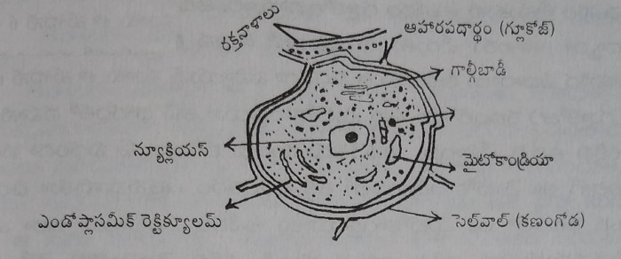
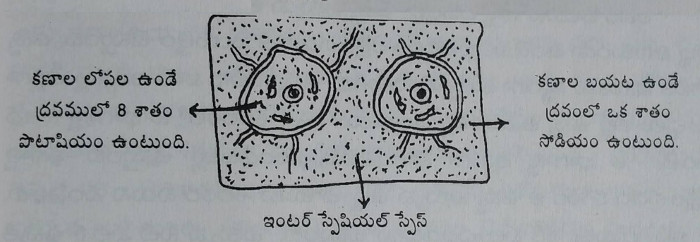

ఆహారం - ఆలోచన
(సుఖ జీవన సోపానాలు - 2)
సంపూర్ణ ఆరోగ్యాన్ని
సంరక్షించండి.
సర్వదా ఐశ్వర్యాన్ని
అనుభవించండి.
డా. మంతెన సత్యనారాయణరాజు
అంకితం
శ్రీమతి లక్ష్మమ్మ, శ్రీ రామరాజు దంపతులు
తప్పటడుగులు ఒప్పుటడుగులని భావించి, అల్లారుముద్దుగా పెంచి, నన్ను సక్రమ మార్గంలో నడిపించి, నాకు యోగ, ప్రకృతి వైద్య రీతులు ఉగ్గుపాలలో రంగరించి పెట్టిన తల్లిదండ్రులు శ్రీమతి లక్ష్మమ్మ, శ్రీ మంతెన రామరాజు గార్లకు నమస్సుమాంజలి ఘటిస్తూ,
పుత్రుడు
మంతెన సత్యనారాయణరాజు
విషయసూచిక
- పరిచయం
- దేహానికి పట్టిన దుస్థితి
- అద్భుతమైన విత్తనాలు
- మొలకెత్తిన గింజలు - ఎలుగెత్తిన విలువలు
- తేనె ఆహారం - అంతేకాదు, ఔషధం
- మస్తు బలం - ముడి బియ్యం
- పనికొచ్చే పీచు పదార్థము
- కొలెష్ట్రాల్ ను కరిగించే లిసితిన్
- రుచులు తెచ్చే రోగాలు
- ఉప్పు రుచులకు, రోగాలకు రారాజు
- కారంగారు
- చవులూరించే పులుపు
- పంచామృతం నెయ్యి
- తైలాలు తెచ్చే తంటాలు
- తెల్లని చక్కెర తెచ్చే చిక్కులు
- ఘరం ఘరంగా మషాళాలు
- నాలుకా - మజాకా?
- ఫ్రిజ్ లు పెంచే నష్టాలు
- ఉడకబెడితే ఏమవుతుంది?
- పచ్చికూరలు - వాటివల్ల లాభాలు
- వంటలు - పిండి వంటలు
- సందేహాలు - సమాధానాలు
- ఆణిముత్యాలు
- అసలైన ఆరోగ్యానికి - సిసలైన అవసరాలు
- మరొక్క మాట
ముందుమాట
- తెలుసుకోవాలనుకోవడం - ఆర్తి - తెలిసేట్లు చేయడం - స్ఫూర్తి
- ప్రకృతిలో ఉంది మహాప్రాణం - దాని కనుగుణంగా నడిచేదే నీ ప్రాణం
- సూక్ష్మమైనకొద్ది పెరుగు ప్రాణం - స్థూలమైన కొలది తరుగు ప్రాణం
- మనిషికి కావలసింది - ఆహారం - దాన్ని స్వీకరించడానికి కావలసింది - ఆలోచన
"ఆరోగ్యమే మహాభాగ్య"మన్నారు పెద్దలు. మానవునికి ఆహార వ్యవహారములను బట్టి ఆరోగ్యముండుట లేకుండుటగా నుండును. అనగా కేవలము ఆహారమేగాక, వ్యవహారమందలి సహజత్వము, స్వచ్ఛతకూడా ముఖ్యమని భావము. ఆహారమందు, వ్యవహారమందు కూడా సహజత్వము వున్నచో మానవుడు ఆరోగ్యవంతుడు కాగలడు. సహజమైన జీవనశైలి వివేకవంతుడైన మానవునికి అవసరము. అసహజమైన పద్ధతులు ఆహారమున, మరియు వ్యవహారమున ప్రవేశించుట చేత ఈనాటి మానవునకు ప్రశాంతత కరువైనది.
మానవుని శరీరమనగా కేవలము భౌతిక శరీరముకాదు. మనోమయము, కామమయము, అన్నమయము అగు మూడు శరీరముల గుత్తియే మానవుని సమగ్ర శరీరము. దీని నుండి పనిచేయు మానవుడు సహజముగ చైతన్యవంతుడు. శరీరమను వాహికను నిర్వహించుటకొరకు మానవుని ప్రజ్ఞ మనోమయ కక్ష్యలోనికి, కామమయ కక్ష్యలోనికి మరియు భౌతిక కక్ష్యలోనికి దిగి వచ్చుచుండును. నిద్ర ద్వారా ఈ కక్ష్యలను దాటి తన సహజస్థితి యందు వుండగలరు. మనసున, అందు కలిగిన భావనల, కామనల (కోరికలు) కారణముగ ఇంద్రియములు, కర్మేంద్రియములును పనిచేయుచుండును. వివేకవంతుడైన మానవుడు తాను సహజముగ వెలుగునని బుద్ధి మరువక, బుద్ధియోగమున శరీర పంజరమును పనిచేయుంచుచుండును. వారికి శరీరమొక వాహనమే కాని, వారు శరీరము కాదు. ఇతరులకు తమ శరీరమే తాముగానుందురు. అట్టివారికి సహాయ సహకారములందిచుట కొఱకు ప్రకృతియే తెలిసిన వారిని, తెలియని వారి వద్దకు పంపుచుండును. తెలిసిన వారి జీవన విధానము తెలియని వారికి స్ఫూర్తినిచ్చి సహజమైన జీవనశైలియందు ప్రవేశపెట్టుట జరుగుచుండును. ఇది అన్ని రంగములలోనూ జరుగుచుండును.
ఆహార విషయమున అవగాహన లేనివారికి తెలియజెప్పుటకు ప్రకృతి నిర్దేశించిన హితులలో, స్వార్థరహితులలో సోదరులు డా. సత్యనారాయణగారు ఒకరు. చిన్న వయసులోనే ప్రకృతి సహజమగు ఆహార విధానమును తాను స్వయముగా నరసి, ఆచరించి, అనుభవ పూర్వకముగ కొన్ని ఆరోగ్య రహస్యముల నెఱిగి, త్రికరణ శుద్ధితో నిస్వార్థముగ తానెఱిగిన ప్రకృతి వైద్యమును తోటి మానవులకు అందించుటకు అహర్నిశలు కృషి సలుపుచున్నారు.
మానవుని శరీరమందు ప్రాణమును ప్రకృతినుండి గ్రహించుటకు ఒక అమరిక వున్నది. దానిని ప్రాణమయ కోశమని పిలుతురు. ప్రకృతిలోనున్న మహాప్రాణమును మానవుడు ఈ ప్రాణమయ శరీరమునుండి అందుకొనుచుండును. ప్రాణమయ కోశము ప్రతి మానవునియందు పంచప్రాణములుగ వర్తించుచుండును. ప్రాణము శక్తివంతముగ నున్నచో రోగమును నిరోధించగలదు. లేనిచో ప్రాణము సన్నగిల్లి రోగమధికమగును. ప్రాణమును బలముగ నుంచుకొని రోగమును నిరోధించుటకు ఉపాయములు కలవు. ఇందు ప్రాణాయామము, యోగసనములను, ప్రముఖములుగ పెద్దలు గుర్తించిరి. దీని ద్వారా ప్రాణమును బలపరచుకొనువారు రోగములను నిరోధించుకొనగలరు. యోగులట్టివారు. కావున వారిపై ఆహార నియమములు ప్రభావము చూపవు. వారి ఆహారపుటలవాట్లు వింతగ గోచరించును. అవి సామాన్యులకు అవగాహన కావు, అనుసరణీయమూ కావు. జనస్రవంతికి ఆహార నియమములు వర్తింపగలవు. అత్యంత సూక్ష్మమార్గమున మనకు సూర్యకిరణముల ద్వారా లభించుచుండును. ప్రాతః సమయమున, సంధ్యా సమయమున సూర్యకిరణముల రశ్మి శరీరముపై పడుట ఆరోగ్యమునకు మరొక ముఖ్యసదుపాయము. అట్లు జీవనమును అమర్చుకొన్నవారు ప్రాణశక్తిని అప్రయత్నముగ పొందుచుందురు. ఈ కారణము చేతనే ఉదయము, సాయంత్రము వ్యాయామ క్రీడలు ఏర్పడినవి. సూర్యరశ్మికన్నా తక్కువ సూక్ష్మములో గాలిలోని ప్రాణవాయువు (ఆక్సిజన్) నుండి ప్రాణము లభించుచుండును. దాని నందుకొనుటకు కూడా ప్రాణాయామము, వ్యాయామము ఉపయోగపడును. ఇందువలననే ఆరోగ్యమునకు గాలి, వెలుతురు గల ఇండ్లు నివాసయోగ్యములని తెలియవలెను. ఎయిర్ కండిషనింగ్ యిందుకారణముగ ప్రాణములకు హానికరము. ఆచ్ఛాదనము కలిగిన ఆరుబయలున నిద్రించుట అత్యంత ఆరోగ్యకరము.
వాయువు కన్న స్థూలముగ నీటియందు ప్రాణము కలదు. కావున నీరు మిక్కుటముగ సేవించుట ఆరోగ్యమున కెంతయూ ఉపయోగపడును. "నీరు మానవులను - దేవతలను కూడా పవిత్రము చేయగలదు" అనునది ఋషి వాక్యము.
నీరుకన్న స్థూలముగ పండ్లరసములయందు ప్రాణమున్నది. అంతకన్న స్థూలముగ కూరగాయల యందు, అంతకన్న తక్కువగా దుంప కూరలయందున్నది. దుంపలకు సూర్యరశ్మి తగులక పోవుటయే యిందుకు కారణము. ఈ విధముగా ప్రాణము స్థూలముగ దిగివచ్చుచున్నకొలది పదార్థము ఎక్కువగుట, ప్రాణము తక్కువగుట జరుగుచుండును.
బుద్ధిమంతులు - ప్రాణమెక్కువగను, పదార్థము తక్కువగను వుండు ఆహారమును స్వీకరింతురు. ఇతరులు పదార్థము ఎక్కువగను, ప్రాణము తక్కువగను వున్న ఆహారమును స్వీకరింతురు. ఇక రుచికొరకై మాత్రమే వండుకొని తినుట అవివేకము. రుచి - పోషకమగు ఆహారమును స్వీకరించుట కేర్పడినది. కొన్ని కూరలు, కాయలు, దుంపలు, పప్పులు, ధాన్యములు ఉడకబెట్టకుండ తినలేము కదా! స్వీకరించుటకు సదుపాయము చేయుటకే వంట. రుచి - కేవలము రుచినే ఆరాధించువారు తీరని అనారోగ్యములకు గురి కాగలరు.
ఈ సందర్భమున డా.సత్యనారాయణగా రొసగు విధానము అత్యంత ఆవశ్యకము. ప్రకృతి వైద్యమున వీరు కొత్త మెళుకువలు అందించిరి. అది కారణముగ వీరు ప్రశంసనీయులు. నీటిని గ్రోలు విధానము, ఉపవాస సమయమున తేనెను గ్రోలు విధానము వివరించుట వీరి ప్రత్యేకత. అటులనే ఉప్పును ఆహారమందు నిషేదించుట అత్యంత విశేషము. వీరు ప్రకృతి వైద్యమునకు స్వానుభవముతో కొత్త మెరుగులు దిద్ది, లోకహిత మొనర్చినారు. అస్వస్థత కలిగినవారికి నూతన జీవన విధానము నేర్పరచుచున్నారు. తండ్రిమాట ననుసరించి జీవితమును లోకహితమునకు సమర్పణచేసి నడచుచున్నారు. కావున ధన్యులు. వీరిద్వారా వెలువడిన "ఆహారము - ఆలోచన" అను ఈ గ్రంథము మానవుల కెంతయూ మేలు చేయగలదు. స్వస్థత కొరకు అన్వేషించుచున్నవారికి వీరందించుచున్న జ్ఞానము, జీవన విధానము వరప్రసాదము వంటిది. లోకహితము దివ్యసంకల్పము. అట్టి సంకల్పమునకు సమర్పణ చెంది నడచుచున్న సోదరులు రాజుగారికి ఈ మార్గమున మరి ఎన్నియో సహాయ సహకారములు లభించి కృతకృత్యులను దైవము చేయగలదని నా ధృడవిశ్వాసము.
శుభం భూయాత్!!
విశాఖపట్నం
తే.9-9-1998
డా.కంభంపాటి పార్వతీకుమార్
అంతర్జాతీయ గౌరవ అధ్యక్షులు
ది వరల్డ్ టీచర్ ట్రస్ట్ (జగద్గురు పీఠం)
విన్నపం
- ఆహార విషయంలో చేశావు తప్పు మొదలైంది ఆరోగ్యానికి పెనుముప్పు
- అర్థమే అయితే, ఆశీర్వదించండి ఆమోదమే అయితే, ఆచరించండి
ఆనందమయ జీవితం మానవ జీవితధ్యేయం. దానికి మొదటి మెట్టుగా సంపూర్ణ ఆరోగ్యాన్ని పొందాలి. నేటి సమాజంలో, పరిస్థితుల ప్రభావం అయితేనేమి, తరతరాలుగా వస్తున్న అలవాట్లు అయితేనేమి, జిహ్వచాపల్యంతో అయితేనేమి, రుచిపరంగా, ఆహార విషయంలో మనిషిని తప్పు మార్గాన్ని పట్టించినవి. మనిషికి ఆరోగ్యపరంగా అవసరమయినది ఏమిటో తెలిసినా, ఆచరణలో పెట్టలేని దుస్థితికి దిగజారినాడు. కారణాలు అనేకమైనా, ఈ స్థితి నుండి ఆహార అలవాట్లను సరిదిద్దటానికి, గట్టి ప్రయత్నం వైద్యరంగంలోనూ, ఆధ్యాత్మిక రంగంలోనూ జరగాలి. అనారోగ్య నివారణకు పరిష్కారం కృత్రిమమైన మందులతోగాక, ఆహారనియమాలతో, ప్రకృతి సూత్రములకు అనుగుణంగా జరగాలి.
చిన్న వయస్సులోనే ఆరోగ్యాన్ని కోల్పోయిన నేను, తిరిగి సంపూర్ణ ఆరోగ్యం పొందటానికి చేసిన ప్రయత్నంలో ఒక స్ఫూర్తి అందినది. ఆలోచింపజేసింది, ఆహారనియమాలలో ప్రకృతిచికిత్సలో ఆచరింపజేసింది. నేను పొందిన ఆరోగ్యం, ఆనందం, అనుభూతులను వైద్యపరంగా పెద్దలతో సంప్రదించాను. అంతేకాదు, ఈ ప్రకృతి చికిత్సా విధానాన్ని విశ్వసించిన వారితో కూడ ఆచరింపజేస్తున్నాను. ఇప్పటికి సుమారు 4-5 సంవత్సరములుగా ఆహారనియమాలను ఆచరిస్తూ ఆచరింపజేస్తున్నాను. అందరికీ సత్ఫలితాలనే యిస్తున్నది. అయితే ఆచరణ లోపం వున్నచోట ఆశించిన ఫలితాలు అందకపోవచ్చు. దుష్ఫలితాలు మాత్రం లేవనే చెప్పవచ్చు.
ఆ ప్రేరణతోనే ఆహారనియమాలు - వాటి ఉపయోగం గురించి నేనుచేసిన ప్రయోగాలు పుస్తకరూపంలో తీసుకురావడానికి ఒక ప్రయత్నంచేశాను. ఆహారంలో హానికరమైన పదార్థాలను ఎందుకు నియంత్రణ చేయవలసివస్తుందో - ప్రకృతి నుండి నేను గ్రహించినది, శాస్త్రపరంగా చదివినది, పెద్దలు చెప్పినది విశ్లేషించి, సామాన్యునికి కూడ అవగాహన అగునట్లు వ్రాయుట జరిగినది. ముఖ్యంగా రుచి గురించి వాడే ఉప్పు, పులుపు, కారం, నూనె, పంచదార, మసాలాలు మొదలగు వాటి మీద నా పరిశీలన, ఆచరణాత్మకమైన అనుభూతి వ్రాశాను. ఈ పదార్థములు తరతరాలుగా వస్తున్న మన అలవాట్లకు సంబంధించినవి. ఇప్పుడు వాటిని మనం, ఆహారంతో కలిపి వాడకూడని పరిస్థితి వచ్చింది. అంటే, యిష్టమయిన
ఆహారాన్ని, బలవంతంగా నోటి దగ్గర నుండి లాగినట్లు అనిపించవచ్చు. ఇవన్నీ అనారోగ్యానికి మూలకారణం అని నా పరిశీలన. అయితే, ఇది ఆరోగ్యానికీ, ఆనందానికీ సంబంధించిన సమస్య. మీరు సహృదయంతో చదవండి. పెద్ద మనసుతో ఆలోచించండి. ఆచరించి చూడండి. మీ అనుభవాలు మరో విధంగా ఉంటే, ఈ గ్రంథంలో వ్రాసినవి మార్చవలసిన అవసరం ఉంటే తెలియజేయండి. సంతోషంగా స్వీకరిస్తాను.
నిత్య ప్రయోగ శీలి అయిన ప్రకృతిలో, నిత్య నూతనంగా మార్పులు వస్తూనే ఉన్నాయి. మీరిచ్చే సలహాలూ, సహకారాలూ మీ అనుభవాలు నాతో పంచుకోమని విన్నవించుకొంటున్నాను. ప్రకృతి వైద్య, ఆహార, ఆరోగ్య నియమాల నవలంబిస్తున్న నా జీవనయానంలో మీ సలహాలు సర్వదా శిరోధార్యాలు.
పలకండి! మీ అభిప్రాయం తెలపండి! ఆశీర్వదించండి!
ఎందరో శ్రేయోభిలాషులు,
వారందరికీ నా వందనాలు.
అందరి ఆరోగ్యాన్ని ఆకాంక్షిస్తూ,
'ఆరోగ్యం అంటే ఆనందం' అని శాసిస్తూ......
తమ విధేయుడు
మంతెన సత్యనారాయణ రాజు.
కృతజ్ఞతలు
మహాసముద్రమే కాకుండా, మహాసముద్రాలవంటి మనసుగల మహానుభావులున్న విశాఖ నగరానికి నేను నా ప్రయాణం ప్రారంభించినప్పుడు నా అనుభవాలూ, నా ప్రకృతి వైద్యరీతులూ విశాఖవాసులు ఎలా స్వీకరిస్తారో - అనే ఆలోచనలో పడ్డాను, కాని, సముద్రం సర్వాన్నీ ఆకళింపు చేసుకొన్నట్లే, మహానుభావులైన పురజనులు, నన్నూ, నా వైద్యరీతుల్నీ ఆహ్వానించి నన్ను కృతజ్ఞుడిగా మిగిల్చారు. నేను ఋణపడ్డాను.
నా ప్రకృతి వైద్యప్రచారానికి వేదికగా, శ్రీ శాంతి ఆశ్రమం, విశాఖపట్నం లభించడం నా అదృష్టం. ఆదివారాలు ఆబాలగోపాలం నా ఉపన్యాస సారాన్ని వినగలగడానికి కారణం శ్రీ శాంతి ఆశ్రమం వారి ఆలంబన. మండుటెండలో గొడుగులా నాకు సహకరించారు. వారికి నా కృతజ్ఞతాంజలి ఘటిస్తున్నాను.
ఇంటికో పువ్వు తెస్తే ఈశ్వరునికో మాల అయ్యిందని సామెత. పుస్తక ప్రచురణ ఒక యజ్ఞంలాంటిది. ఈ యజ్ఞంలో నాకు సహకరించి, ప్రోత్సహించి, నన్ను చెయ్యి పట్టుకు రాయించిన వారు ఎందరో,
ముందుమాట వ్రాసి నన్ను ముచ్చట పరిచిన దైవజ్ఞులు బ్రహ్మశ్రీ డా.కంభంపాటి పార్వతీకుమార్ గారికి,
ఈ పుస్తక రచనకు ప్రశాంతమైన వాతావరణాన్ని కల్పించి, నాకు సహకరించి, ప్రోత్సహించిన 'విజయ నిర్మాణ్ కంపెనీ' అధినేత అయిన శ్రీ విజయకుమార్ గారికీ,
నా తొలి లిఖిత ప్రతులు ఓపిగ్గా చదివి, సరిచూచిన శ్రీ బి.శశిగారికీ,
నా దగ్గర వైద్యం చేయించుకొని, నన్ను జ్ఞాపకం ఉంచుకొని, దయతో వారి అనుభవాలు రాసియిచ్చిన వారికీ,
అనుకున్నదే తడవుగా అతి తక్కువ కాలంలో, ఈ పుస్తకాన్ని పైటచెంగంత అందంగా ముద్రించి యిచ్చిన ప్రెస్ అధినేతలకు,
నా హృదయపూర్వక కృతజ్ఞతలు.
మంతెన సత్యనారాయణ రాజు
ఇంటికో పూబాల - ఈశ్వరునికో మాల - ఇంటికో వ్యక్తి - సమాజానికి మహాశక్తి
పరిచయం
- అలవాట్లు మంచిగా ఉంటే ఆరోగ్యం మంచిగా ఉంటుంది.
- అబ్బా! ఏమిటీ బద్ధకం - కారణం - మలబద్ధకం - ఆహా! ఏమిటీ సుఖం - కారణం - సుఖవిరేచనం
- నీలో స్వచ్ఛత తెలుపు నీ నోటి నీరు - నీ వంటి ఆరోగ్యాన్ని తెలుపు నీ నోరు
- రుచులను దగ్గరకు దీయకు - దంతాలను దూరం చేయకు
- చెమట బిందువులని కార్చు - చెడుని శరీరం నుంచి రాల్చు
- పట్టే చెమటను బట్టే తినే తిండి ఉండాలి సుమా!
- కణాలలోని వ్యర్థం- చెమట ద్వారా శుద్ధం
- మనస్సు ఎంత చల్లగా వుంటే - మనుగడ అంత హయిగా ఉంటుంది
- సబ్బులు చేయవు చర్మాన్ని శుభ్రం - మర్థన చేయు కవచాన్ని పరిశుభ్రం
- గుడ్డతో చర్మాన్ని రుద్దుకోండి కాంతిగా చర్మాన్ని ఉంచుకోండి
- పరిపూర్ణ స్నానం చేయ నారంభిద్దాం - పూర్తిగా చర్మవ్యాధులు నివారిద్దాం
- ఆకలి పెంచే అల్పాహారం ఆరోగ్యదాయిని - ఆకలి తుంచే అట్లు అనారోగ్యదాయిని
- ముద్దు వచ్చినప్పుడే చంక ఎక్కాలి- ఆకలి వేసినప్పుడే గట్టిగా తినాలి
- నిటారుగా క్రింద కూర్చుందాం - నిదానంగా భోజనం చేద్దాం
- ముద్దపప్పు, పచ్చడి కలిపి మురిసేవు - ఆ రుచిని పొంచి ఉన్న రోగాన్ని మరచేవు
- తెలుసా! ఎన్నెన్ని రకాల రుచులో - అన్నన్ని రకాల రోగాలట!
- యత్ భావం - తత్ భవతి
- ఆహారాన్ని తినేటప్పుడు అయ్యే దాహం - అజీర్ణానికి ఆధారం
- పగటి నిద్ర పొట్టకి చేటు - పగటి పని వంటికి కోటు
- చిల్లర తిండి చిల్లరగా తింటే చేటు - ఆహారంతో తింటే అపకారం లేటు
- నన్ను (శరీరాన్ని) పెంచితే నిన్ను తుంచుతా - నన్ను (శరీరాన్ని) వంచితే నిన్ను పెంచుతా
- నాగరికత శరీర శ్రమను తగ్గించింది - శరవేగంతో రోగాలను పెంచింది
- పొట్టకు విశ్రాంతి నివ్వండి - ప్రేగులకు శక్తిని పెంచండి
- అవయవాలకు విశ్రాంతి నివ్వడం ఎరుగు - దేహానికి రోగ నిరోధక శక్తి పెరుగు
- సూర్యాస్తమయం ముందు భోజనం - శరీర విశ్రాంతి కది సోపానం
- దేహ కష్ట సుఖాలకి మూలం ఆహారం - ఆరోగ్యానికి ఆలోచనలే మూలాధారం
- విసర్జన క్రియకు వ్యతిరేకం ఫ్యాన్లు, ఏసీలు - వాటిని ఆశించి తెచ్చుకోకు లేనిపోని పేచీలు
- మంచి అలవాట్లు పొందు - గట్టి ఆరోగ్యానికి మందు
- బద్ధకం వీడి బాధ్యతగా ప్రవర్తించు - ధర్మానికి అనుకూలంగా వ్యవహరించు
తీగకు పందిరి పరిచయమైతే, ఆ తీగ, పందిరి బంధం పెనవేసుకుంటుంది. మనిషికి మంచి అలవాట్లతో పరిచయం - మంచి మనస్సుకు, ఆరోగ్యానికి అనుబంధం. పెద్దలనుండి అలవాట్లు పిన్నలకు పరిచయమవుతూ ఉంటాయి. మంచివారితో పరిచయం మంచి అలవాట్లకు, చెడ్డవారితో పరిచయం చెడ్డ అలవాట్లకు దారితీస్తుంది. భగవద్గీతలో చెప్పినట్లు ఉత్తములైన వారు వేటిని ప్రమాణంగా తీసుకుని ఆచరిస్తారో, వాటిని మిగతావారు అనుసరిస్తారు. మనం ఎలాంటి తిండి తింటే అలాంటి అలోచనలు వస్తాయి. మనకు ఎలాంటి అలోచనలు వస్తే మనం అలాంటి పనులు చేస్తాం.
'ఎలాంటి తిండో అలాంటి త్రేపు' అన్నట్లు ఎలాంటి అలవాట్లు మనకు ఉంటాయో, అలాంటి ఆరోగ్యం మనకు ఉంటుంది. మన పూర్వీకులు ఆచరించిన మంచి ఆహారపు అలవాట్లను, మన ఇప్పటి ఆహారపు అలవాట్లను పరిశేలిద్దాం.
శుభోదయం:
ప్రాతఃకాలంలో నిద్రలేస్తే ఆరోగ్యానికి మంచిదంటారు పెద్దలు. పడుకునేసరికి అర్ధరాత్రి దాటిపోతుంది. ఇక తెల్లవారుజామున లేవాలంటే ఏమి లేవగలరు? పెద్దలు ఆ వాతావరణం ఎంత మంచిదన్నా ఏమి చేయగలరు? వ్యాపారాలు, ఉద్యోగాలు జీవితానికి తప్పవు గదా! రాత్రిపూట అయితే నలుగురూ చేరడానికి, కలవడానికి వీలుంటుంది. మేము ఉద్యోగస్థులము, పెందలకడనే ఇంటికి చేరాలంటే ఎలా కుదురుతుంది అంటారు? అందుచేత ఉదయం లేచే సరికే పావుప్రొద్దు గడిచిపోతుంది. లేవగానే పాచిముఖాన్నే బెడ్ కాఫీలు, టీలు కావాలనిపిస్తుంది. నిద్రలో శరీరం చెడును విసర్జించే కార్యక్రమంలో వుంటుంది. నిద్రనుంచి మేలుకున్న తరువాత కూడా అదే పని కొనసాగుతూ వుంటుంది. నిద్ర లేచిన వెంటనే మన నరాల శక్తి ఎక్కువ పెద్ద ప్రేగులమీద పనిచేస్తూ వుంటుంది. ఎందువల్లనంటే శరీరంలో ఎక్కువ వ్యర్థపదార్థం అక్కడే నిలువ వుంటుంది. కాబట్టి రాత్రంతా అక్కడకు నెట్టిన చెడును బయటకు పంపించే వరకు మనస్సుకు విశ్రాంతి ఉండదు. అంటే రాత్రి అంతా చిన్న ప్రేగులలో, పొట్టలో ఉన్న చెడును, విసర్జక పదార్థాలన్నింటిని, మలాశయానికి చేర్చి ఉంచుతుంది. మనం నిద్ర లేచిన వెంటనే బహిష్కరించేటట్లు, అనుకూలంగా, మలాన్ని పట్టుకునే నరాలన్నీ సడలడానికి ప్రయత్నం చేస్తాయి. లేచిన వెంటనే వేరే ఆలోచన రాకుండా, వేరే పనులు ఏమీ చేయకుండా వుంటే, మనలోని శక్తి అంతా సాఫీగా విరోచనము అయ్యేటట్టు సహకరిస్తుంది. అలా కాకుండా, మనం లేచిన వెంటనే, విరోచనం కాకముందే బెడ్ కాఫీ తాగుతామనుకోండి, మనలోని శక్తి మలం ఉన్న ప్రేగునుండి వేంటనే పొట్టలోకి వచ్చేస్తుంది. మరి కాఫీని జీర్ణం చేయడానికి శక్తి కావాలి కదా. విరోచనం సంగతి తరువాత అని పొట్టపని ముందు చేపడుతుంది. నిద్రలేచిన దగ్గర నుండి మనము ఏదో ఒక టిఫిన్ తినేవరకు యింకా విసర్జించే పనిలోనే వుంటుంది.
ఉదయంపూట సూర్యుడి వేడికిరణాలు ప్రారంభమయ్యే దగ్గరనుండి చెడును విసర్జించే కార్యక్రమం తగ్గుముఖం పడుతూ ఉంటుంది. సూర్యుడి వేడి పెరిగే కొద్ది ఆకలి పెరుగుతూ ఉంటుంది. సూర్యకిరణాలు వేడెక్కడం ప్రారంభించిన దగ్గర నుండి మనం తినడం ప్రారంభించవచ్చు. మనం ఉదయం 8 గంటలకు లేచామనుకోండి, లేచిన తరువాత జరుగవలసిన విసర్జనకు అవకాశం ఉండదు. అప్పుడే 8 గంటలు అయిపోయిందని, వెంటనే ముఖం కడిగేసుకుని టిఫిన్ తినడం జరుగుతుంది. అదే తెల్లవారుజామున 4, 5 గంటలకు లేచామనుకోండి, మన పూర్వీకుల లాగా ఎక్కువ సమయం సుమారు 2, 3 గంటలు టిఫిన్ తినే ముందు పొట్ట ఖాళీగా వుంటుంది. ఆ సమయం శరీరం చెడును విసర్జించడానికి ఎంతో ముఖ్యమైనది. తెల్లవారుజామున లేచిన వెంటనే నీరు త్రాగి మల విసర్జన చేస్తే చాలా వరకు తేలిక అనిపిస్తుంది. ఆ తరువాత శారీరక శ్రమగానీ, లేదా యోగాసనములు, ప్రాణాయామంలాంటివి కూడా రాత్రి కదిలిన చెడును విసర్జక అవయవాల ద్వారా బయటకు పంపడానికి అవసరం. అదే విధంగా నీరు ఒక లీటరుకు పైగా త్రాగడంవలన రక్తంలోనికి వచ్చిన చెడు, కణాలలో రాత్రి సమయంలో కదిలిన చెడు, ఈ నీటిలోనికి వచ్చి అది చెమట, మల మూత్రాలద్వారా బయటకు విసర్జించబడుతుంది. మరల యింకొక లీటరు నీరు త్రాగి చెడును విసర్జించే కార్యక్రమంలో శరీరానికి సహకరించాలి. ఇలా నిద్ర లేచిన తర్వాత 2, 3 గంటలు శరీరానికి నీటిని తప్ప వేరే పదార్థం ఇవ్వకుండా శారీరక వ్యాయామం చేస్తూ వుంటే అప్పుడు శరీరం దాని ధర్మాన్ని అది (విసర్జించడం) పూర్తిగా నెరవేరుస్తుంది. ఇది మన ఆరోగ్యానికి శుభోదయం.
దంతధావన క్రియ: ఇక పళ్ళు తోముకునే విషయం ఆలోచిద్దామా! మనకు శరీరం లోపల ఎంత స్వచ్ఛత ఉన్నదనేది నోట్లో వచ్చే వాసన తెలియజేస్తుంది. అలాగే నాలిక శరీరానికి అద్దంలాంటిది. శరీరం ఆరోగ్యంగా ఉన్నదీ, అనారోగ్యంగా వున్నదీ నాలిక చూస్తే తెలిసిపోతుంది. శరీరంలో ఎంత రక్తమున్నదీ నాలికను చూసి చెప్పవచ్చు. విరోచనం సాఫీగా అవని వారికి, ప్రేగులలో చెడు, బ్యాక్టీరియా ఎక్కువ వున్న వారికి, లివరులో టాక్సిన్స్ ఎక్కువ ఉన్నవారికి మరియు విసర్జకావయవాలలో చెడు బయటకు సరిగ్గా పోనివారికీ, నిద్ర లేవగానే నోరు దుర్వాసన వస్తుంది. మిగతా జీవులలో ఏవైనా పళ్ళుతోముకునేవి ఉన్నాయా? వేటి నోరైనా వాసన వస్తుందా? మరి మనిషి నోరు వాసన రావడానికి కారణాలేమిటి? మాట్లాడేటప్పుడు నోట్లోనుంచి ఎదుటివారి లాలాజలం యింత పడితే సహించలేము. ఛీ! అనుకుంటాము, తిట్టుకుంటాము, తరువాత కడుగుకుంటాము కూడా. మరి చంటి పిల్లవాడి ఎంగిలైతే ఎవరూ పట్టించుకోరు. సంతోషంగా తుడుచుకుంటారు. అదే పిల్లవాడు పెద్దయినప్పుడు మరల అదే వ్యక్తిమీద అదే విధంగా పడితే ముందు సంతోషంగా తుడుచుకున్న వ్యక్తే అసహ్యంగా తుడుచుకుంటాడు. ఇంత జరగడానికి కారణం ఆలోచిస్తే చంటిపిల్లవాడు స్వచ్ఛమైన ఆహారంతో స్వచ్ఛమైన మనస్సును కలిగివుంటాడు. పెద్దవాడయిన తరువాత రుచులు గల ఆహారాలు తిని కలుషితమైన మనస్సుతో ఉంటాడు కాబట్టి వాడి నోరు వాసన అనిపిస్తుంది. అది మనకు అసహ్యమనిపిస్తుంది. ప్రక్కవారి ఎంగిలి సహించలేని మనిషి, తను పెంచుకునే కుక్క చేత నాకించుకుని తృప్తిపడుతుంటాడు. మన ఇంట్లో కుక్క మనం తినే ఆహారం తిని మనతోబాటు జీవిస్తూ వుంటుంది. అది పళ్ళు తోముకోదు. అయిన దాని నోరు వాసన రాదు. మనం రోజుకు ఒకసారో లేదా రెండుసార్లో బ్రష్ చేసుకుంటూ ఉంటాము. పైగా మంచి వాసనలు వచ్చే, నురుగులు చిమ్మే పేస్టులతో కదా! మరి మనిషి యింత చేసినా నోరు మట్లాడుతుంటే వాసన వస్తూనే వుంటుంది. కుక్క ఎంగిలిని అయినా మనిషి సహించగలుగుతున్నాడు గానీ ప్రక్కవాడి చొంగ యింత పడితే తట్టుకోలేడు. మనిషియొక్క స్థానం అలావుంది.
నోరు రాత్రిపూట 6-7 గంటలు నిద్రలో కదపకుండా అలా వుంచినందుకు లాలాజలం కదలికలు లేక, నోటిలో ఉండే బాక్టీరియా కారణంగా, గాలి తగలనందువలన, నోటిలో లాలాజలం దుర్వాసన వస్తూ వుంటుంది. అలాగే గొంతులో వుండే లారింక్స్, ఫారింక్స్ భాగాల దగ్గర ఊపిరితిత్తుల నుండి వచ్చి చేరిన కఫం నిలువ వుంటుంది. భగవంతుడిచ్చిన ప్రకృతి ఆహారం తింటే అసలు నోరు పుక్కిలించవలసిన అవసరం వుండదు. బ్రష్ లతో పనే వుండదు. మసాలాలు, స్వీట్స్ తినడంవలన నోటి దుర్వాసనలు ఎక్కువగా ఉంటాయి. పళ్ళు ఊడిపోవడానికి కారణాలు కూడా యివే. కిళ్ళీలు, వక్కపొడులు వాడటం వలన కూడా పళ్ళు తొందరగా ఊడిపోతాయి. మనిషి ఆరోగ్యంగా వుంటే జీవితకాలంలో పళ్ళు ఊడవు. ఒక్క పన్ను కూడా కదలదు. ముసలి వారికి పళ్ళు ఊడతాయి. ఇది సహజం అని అందరమూ అనుకుంటూ ఉంటాము. అందరూ ఉప్పులు, మసాలాలు, స్వీట్లు తిన్నవారే కదా! మరి ముసలి జంతువులకు పళ్ళు ఊడిపోవడం లేదుగదా!ఇదంతా మన ఆహర లోపం వలననే గదా! పళ్ళు ఊడితే పళ్ళు కట్టించుకోవచ్చులే అని, ఎవరికి వారు ఉన్నపళ్ళు పాడవకుండా చూసుకోవాలని అనుకోవడం లేదు.
పేస్టులు పెట్టి పళ్ళుతోముకోవడము వలన నోట్లో లాలాజలం ఎక్కువ తయారవదు. అదే వేపపుల్ల అయితే చేదుకు లాలాజలం ఎక్కువ ఊరుతూ వుంటుంది. పైగా చేదుకి నోట్లో క్రిములు కదిలి బయటకు పోతాయి. బావిలో పాత నీరు తోడేకొద్దీ కొత్తనీరు ఊరుతూ వుంటుంది కదా! అలాగే నోట్లో చెడులాలాజలం అంతా వేపచేదుకు బయటకు కారిపోయి, క్రొత్తది ఊరుతూ వుంటుంది. అందువల్ల వేపపుల్ల పెట్టి కడిగితే చాలా ఫ్రెష్ గా ఉంటుంది. అలాగే గానుగు, మఱ్ఱి ఊడ, ఉత్తరేణి పుల్లలతో కడిగితే నోట్లో నురుగు కూడా వస్తుంటుంది. పెద్దలు నాలిక గీసేటప్పుడు వ్రేళ్లు అంగటలోనికి పెట్టి డోకుకునేవారు. దీనివల్ల గొంతులో స్వరపేటిక వద్ద ఉండిపోయిన శ్లేష్మం అంతా బయటకు తెగిపడిపోయేది. మరియిప్పుడు యింట్లో పళ్ళు తోముకోవడం కదా! కాండ్రిస్తే మోత వస్తుందని, మెల్లగా పని పూర్తి చేస్తారు. గొంతులోకి రాత్రినుండి చేరిన చెడు, పళ్ళు తోముకునేటప్పుడు ఉమ్మివేయకపోతే అది తినేటప్పుడు మరల ఆహరం ద్వారా లోపలికి పోతుంది. పళ్ళు తోముకునేటప్పుడు గొంతులోని కఫాన్ని కాండ్రించి ఉమ్మివేయడం చాలామంచిది. కుదిరినప్పుడు పళ్ళుతోము పుల్లతో తోముకోవడం నోటి ఆరోగ్యానికి మంచిది.
చెమట, దాని కథ: చర్మం ఒక విసర్జకావయవము. చర్మాన్ని మూడవ కిడ్నీ అంటారు. ప్రతి రోజూ చర్మం రెండు లీటర్ల వ్యర్థ పదార్థాలను విసర్జిస్తుంది. మనలో వున్న మాలిన్యాలు కొన్ని చర్మరంధ్రాల ద్వారా చెమట రూపంలో బయటకు పోతుంటాయి. చెమట పట్టనప్పుడు చర్మపు పొరలలోనే దాగి ఉంటాయి. చెమట పట్టినవారికి, ఆ చెమటతో కలిసి బయటకు రావడానికి వీలుంటుంది. ఉదాహరణకు మనం ఇళ్ళు నీటితో కడుగుతుంటాం. ఇంటిలోని మురికి, నీటితో కలిసి, కరిగి, నీటి ద్వారా బయటకు పోతుందిగదా! అలాగే చర్మంలోని మురికి చెమట పట్టిన వారికే బాగా బయటకు వస్తుంది కానీ చెమట పట్టని వారికి రాదు. అందుకనే మన పెద్దలు చెమట పట్టిన వాడికే తినే అర్హత వుంది అనేవారు. ఇది మహాత్మాగాంధీగారు చెప్పిన మాట. వారు అన్నది అక్షరాలా నిజం అనిపిస్తుంది యిక్కడ. చెమట పట్టాలంటే శరీరం వేడెక్కాలి. శరీరం వేడెక్కాలి అంటే పని చెయ్యాలి. అంటే పనిచేసిన వాడికే శరీరం వేడెక్కుతుంది అని అర్థం. శరీరం వేడెక్కినప్పుడు రక్త ప్రవాహం అన్ని భాగాలకు, కణాలకు స్పీడుగా జరుగుతుంది. పనిచేసేవారికి ఊపిరితిత్తులు ఎక్కువ గాలిని పీల్చుకుంటూ వుంటాయి. ఎక్కువ గాలి శరీరంలోకి వెళ్ళడం వలన వేడి ఎక్కడం ప్రారంభమవుతుంది. శరీరంలోని చెడు దహనమవడానికి, బయటకు విసర్జించబడడానికి ఎక్కువ ప్రాణశక్తి కావాలి. ఖాళీగా కూర్చుంటే ప్రాణశక్తి ఎక్కువ వెళ్ళదు గదా! పనిచేసేవారికి పనిచేసేటప్పుడు, చేసే పనిని బట్టి, స్పీడునుబట్టి ప్రాణశక్తి లోపలకు వెళ్ళేది ఆధారపడి వుంటుంది. ఎక్కువ ప్రాణశక్తి లోపలకు వెళితే ఎక్కువ చెమట వెంటనే పడుతుంది. పని చేసేవారికి పట్టే చెమటలో చెడు - చర్మం ద్వారా బహిష్కరించబడుతూ వుంటుంది. కదలకుండా ఇంట్లో కూర్చున్నప్పుడు గాలి ఆడక పట్టే చెమటలో నీరు వుంటుంది గానీ చెడు పదార్ధాలు వుండవు. అప్పుడు పట్టిన చెమటకు క్రొవ్వు కరుగదు. ఆరోగ్యం రాదు. ఎక్కువ ప్రాణశక్తి పీల్చుకోవడం వలన, పనిలో పట్టే చెమట ఆరోగ్యదాయకము. అది చర్మ ఆరోగ్యానికి మేలు చేస్తుంది.
చెమట పట్టనివాడు మూడు పూటలా భోజనం చేస్తూవుంటే, ఆహరం జీర్ణమైన తరువాత ఆహరం ద్వారా వచ్చిన చెడు పదార్థం మరి ఎక్కడ నుండి బహిష్కరింపబడుతుంది? అదే చెమట పట్టేవాడికి అయితే చర్మంతో బాటు మిగతా విసర్జకావయవాలు కూడా చెడును విసర్జిస్తూ వుంటాయి. చెమట పట్టేవాడు బాగా నీరు తాగుతాడు. అందువల్ల మూత్రంతో వెళ్ళవలసిన చెడు వెళ్ళిపోతుంది. చెమటపట్టేటట్లు పనిచేయడం వలన ఆకలి బాగా అవుతుంది. ఆ ఆకలితో ఎక్కువ భోజనం తృప్తిగా తినగలుగుతాడు. తినే ఆహారంలో పీచుపదార్థం ఎక్కువగా ఉన్నట్లయితే విరోచనము ఎక్కువగా తయారవుతుంది. ఎక్కువ విరోచనము త్వరగా ప్రేగులలో కదిలి బయటకు విసర్జించబడుతుంది. పనిచేసేవాడు ఎక్కువ ఆక్సిజన్ ను శ్వాసలో దీర్ఘంగా తీసుకోగలుగుతాడు. ఎప్పుడైతే ఎక్కువ ఆక్సిజన్ ఊపిరితిత్తులలోనికి వెళ్ళిందో గాలి బయటకు వచ్చేటప్పుడు కార్బన్ డయాక్సైడ్ ఎక్కువగా వచ్చేస్తుంది. అందువల్ల ఊపిరితిత్తుల ద్వారా పోవలిసిన చెడు వాటి ద్వారా ఏ రోజుకారోజు పనిచేసే వారికి బయటకు పోతుంది. ఊపిరితిత్తులు, మూత్రము, చెమట, మలం, ఈ నాల్గింటి ద్వారా చెడు ఏ రోజుకారోజు బయటకు పోతే అయిదవది అయిన 'లివరు' తేలిక అవుతుంది. పనివారు సక్రమంగా పనిచేస్తుంటే యజమానికి సుఖంగా వుంటుంది గదా! ఇక్కడ కూడా అంతే! ఎవరి పనులు వారు చేసుకుంటూ పోతే వేరే వారికి భారం వుండదుకదా. అలాగే 'లివరు' గారికి కూడా శ్రమ వుండదు. 'లివరు' దేహం నుండి అన్ని విసర్జకావయవముల ద్వారా పంపవలసిన చెడును బయటకు పంపేటట్లు చూసుకుంటూ వుంటుంది.
అందుకని చెమట పట్టినవాడికి యివన్నీ జరుగుతాయా? శరీరం వేడెక్కినప్పుడు ఆ వేడికి చెడు పదార్థం త్వరగా కణాల నుంచి బహిష్కారానికి సిద్ధమవుతుంది. ఏదైనా వేడికి విశాలమవుతుంది. చలికి బిగుసుకుంటుంది. మనం కూడా చూడండి. వేసవి కాలంలో విశాలంగా చాపుకుని పడుకుంటాం. వేడికి ఏ పదార్థమైనా వ్యాకోచిస్తుంది. వ్యాయామం ద్వారా వేడెక్కినప్పుడు రక్తనాళాలు, కండరాలు, కణాలు వ్యాకోచించి ప్రసరణలు పెరుగుతాయి. అందువల్ల కణాలలోని చెడు త్వరగా బయటకు రావడానికి అవకాశము ఎక్కువ వుంటుంది. పని చేయకుండా భోజనం చేస్తే తయారయిన చెడు లోపలే వుండి రోగకణాలను తయారు చేస్తుంది. చెమట ద్వారా పోవలసిన చెడు, చెమట లేనప్పుడు చర్మపు పొరలలోనే ఉండిపోతుంది. మనిషికి రోగాలు పుట్టడం అక్కడే మొదలవుతుంది.
స్నానం విశిష్టత: ఇక స్నానము విషయానికి వద్దాము. ప్రతి ఒక్కరికీ సామాన్యంగా ఉదయం స్నానం చేయడం అలవాటు వుంటుంది. కానీ ఆ స్నానాన్ని ఏదో నాలుగు చెంబులు చేసేస్తే పని అయిపోతుందని మ్రొక్కుబడిగా గడిపేస్తారు. స్నానం ఎంత ఆరోగ్యమో తెలిస్తే అలా చేయలేము. మన శరీరంలో చలిని స్వీకరించే కణాలు ఎక్కువగా వుంటాయి. వేడిని స్వీకరించేవి కొద్దిగా వుంటాయి. పెద్దలు చన్నీటిని సజీవమని, వేడినీటిని చచ్చిన నీరని అంటుంటారు. చన్నీటి స్నానం చేయడం వలన చర్మానికి, కండరాలకు, రక్తనాళాలకు సంకోచ వ్యాకోచాలు రెండూ ఉంటాయి. అదే వేడినీరు చేసినప్పుడు వ్యాకోచించడమే జరుగుతుంది. ఉదయం స్నానం చన్నీటితో తలకు చేయాలి. ఎక్కువమంది స్నానం మెడవరకే చేస్తారు. తల మనది కాదంటారా? శరీరం శుభ్రమయితే సరిపోతుందంటారా? తల అక్కరలేదా? అన్నిటి కంటే మనస్సుని చల్లబరచడం చాలా ముఖ్యం. 24 గంటలూ ఎక్కువ పనిచేసే మనస్సు నిద్రలో కూడా ఎంతో కొంత పనిచేస్తూనే వుంటుంది. అలాంటి మనస్సును చల్లబరిస్తే ప్రశాంతంగా వుంటుంది. చన్నీటిని తలకు పోసుకోవడం వలన తలకు రక్తప్రసరణ బాగా జరుగుతుంది. చన్నీటితో భుజాల వరకు పోసుకుని, తలమీద చన్నీరు పోయినప్పుడు భుజాలనుండి క్రింద భాగాలలో వేడి అంతా తలకు ఎక్కుతుంది. ఉదాహరణకు వేసవి కాలంలో కాలే నేలమీద నీరు పోస్తే నేలలోని వేడి అంతా పైకి వస్తుంది కదా! అలాగే చన్నీటితో తల తడవనప్పుడు, శరీరం తడపడం ద్వారా వచ్చిన వేడి వెనువెంటనే పై ప్రదేశానికి ఎక్కుతుంది. మనస్సు వేడెక్కకూడదంటారు. చల్లబరచవలసిన మనస్సును వేడిక్కిస్తున్నాము. రోజంతా లేనిపోని కోపాలు, టెన్షన్ లు, చిరాకులు, పోట్లాటలతో, మనస్సును వేడెక్కించింది చాలక ఆఖరుకు స్నానం చేసేటప్పుడు కూడానా? తెలిసో, తెలియకో మనిషి ఎంత పొరపాటు చేస్తున్నాడు! మన పెద్దలు ఉదయం చన్నీటిని తలకు తప్పనిసరిగా పోసుకునేవారు. వేసవిలో వారు బుఱ్ఱ వేడక్కకుండా నెత్తికి గొడుగు, కాళ్ళకు చెప్పులు తప్పనిసరిగా వాడేవారు. మరి ఇప్పటి అందరి అలవాట్లు ఎలా వున్నాయి అంటే ప్రతి రోజూ స్నానం చేసేది ఒక పూట. అదీ వేడినీటితో వంటికి మాత్రమే. పైగా చేయివేస్తే జర్రున జారి, నురుగులు వచ్చే సబ్బులు, నాలుగు చుక్కల షాంపూ వేస్తే రుద్దీ రుద్దకుండానే పొంగిపోయే నురుగులు. సబ్బులలో మురికిని పోగొట్టి, నురుగు వచ్చేటట్లు చేసే పదార్థాలు వుంటాయి. వాటిని సర్ ఫేస్ యాక్టివ్ ఏజెంట్లు అంటారు. అవి చర్మం మీద మురికితోబాటు చర్మంపైన సున్నితమైన పొరను పోగొడతాయి. అందుకనే సబ్బుపెట్టి స్నానం చేసిన తరువాత చర్మం పొడిగా, తెల్లగా, ఎండిపోయినట్లు వుంటుంది. అలావస్తుందని మరలా చర్మం మీద కోల్డ్ క్రీములు గానీ, నూనెగానీ రాసుకుంటారు. చర్మం ఎప్పుడూ నిగ నిగలాడుతూ ఉండాలనుకుంటారు. అందరికీ చర్మం ఎప్పుడూ అలాగే వుంటుంది. దానిని రోజూ సబ్బులు వాడి పోగొట్టుకుని మరలా క్రీములు రాసుకుంటూ ఉంటాము. చలికాలంలో కూడా చర్మం పగుళ్ళుకానీ, తెలుపుగా గానీ సబ్బులు రుద్దకుండా వుంటే రాదు. ఏ క్రీములు, నూనెలు రాసే అవసరమే లేదు. సబ్బు రుద్దడం వలన ఇంకో నష్టం ఏమిటంటే, సబ్బు రాసుకుని రెండుసార్లు పైకి క్రిందకూ చేతిని కదిపేసరికి నురుగు వచ్చేస్తుంది. అందరి అభిప్రాయం ఏమిటంటే నురుగు వస్తే కుళ్ళు వదిలినట్లేనని. ఆ నురుగులో చర్మంపై నున్న దుమ్ము, మురికి, జిగురు పోవచ్చు. చర్మాన్ని రుద్దకుండానే నురుగులు రావడమే ఇక్కడ నష్టం. అది ఎలాంటిదంటే ఉప్పు, కారాలు ఎక్కువుగా ఉన్న ఆహారపు ముద్దను నోట్లో పెట్టుకున్నప్పుడు, నమలకుండానే లాలాజలం ఊరి త్వరగా మింగేస్తాము. సరిగా నమల నందువలన ఆహారం అరగదు. సబ్బులలో నున్న మందుల కారణంగా, రుద్దకుండా, నురుగు రావడంతో, చర్మాన్ని చేతులతో మర్దన చేయడం తగ్గిపోతుంది. మన పెద్దలు సబ్బు వాడే వారు కాదు. వారు సున్నిపిండితోనో, వట్టి చేతులతోనో చర్మాన్ని రుద్దేవారు. చర్మంపై మట్టిపోవాలని అలా రుద్దేవారు. అలా రుద్దడంవలన చర్మం వేడెక్కుతుంది. ఎందువల్లనంటే చర్మాన్ని రుద్దేటప్పుడు లోపలవున్న రక్తం వేడెక్కుతుంది. ఎందువల్లనంటే చర్మాన్ని రుద్దేటప్పుడు లోపల వున్న రక్తం ఎక్కువ చర్మానికి వస్తుంది. తద్వారా స్నానం చేసేటప్పుడు చర్మానికి రక్తప్రసరణ బాగా జరగడం ఒక ప్రయోజనం. రెండవది చర్మ రంధ్రాలలో నున్న చెడు పదార్థం కూడా స్నానం చేసేటప్పుడు గట్టిగా రుద్దడం వలన బయటకు వచ్చేస్తుంది. మామూలుగా చర్మానికి రక్తప్రసరణ మెల్లగా జరుగుతుంది, చర్మం చివరి భాగం కాబట్టి. బంతి భోజనాలలో ముందు కూర్చున్నవాడికి వంటలు లోటు లేకుండా త్వరగా అందుతాయి గదా! అలాగే గుండెకూడా దగ్గరవున్న భాగాలకు రక్తాన్ని త్వరగా అందించి, దూరంగా వున్నవాటికి ఆలస్యంగా అందిస్తుంది. అందువలనే చర్మవ్యాధులు తొందరగా తగ్గవు.
అలాగే మన చర్మానికి రక్తప్రసరణ బాగా జరగాలంటే శరీరాన్ని స్నానం చేసేటప్పుడు బాగా వేడెక్కేటట్లు రుద్దడం మంచిది. సబ్బులు వుంటే ఎక్కువ సేపు రుద్దలేరు. అందువల్ల సబ్బులు వాడడం మంచిది కాదు. సబ్బులేనప్పుడు మురికి వదలాలని చేతులతో భాగాలన్నింటిని గట్టిగా రుద్దగలుగుతాము. శరీరాన్ని రుద్దేటప్పుడు కాళ్ళను క్రిందనుండి పైకి రుద్దుకోవాలి. అలాగే చేతులను క్రిందనుంచి భుజాలవైపు రుద్దుకోవాలి. మనకు రక్తం ఆ విధంగానే పైకి నడుస్తున్నది కాబట్టి. పై నుంచి క్రిందకు రుద్దడం అందరికీ అలవాటు. అలా చేయడం వలన పైకి గుండెకు చేరే రక్తాన్ని మనం చేతులతో క్రిందకు నెట్టడం జరుగుతుంది. మనం విరుద్ధమయిన పనిచేసినట్లవుతుంది. స్నానం చేసే ఒక మంచి పద్ధతిని వివరిస్తాను. స్నానం చేయడానికి వేళ్ళేముందు ఒక మెత్తటి, తెల్లని నేప్ కిన్ (జేబురుమాలు గుడ్డ) తీసుకుని వెళ్ళండి. రాసుకుంటే స్నానానికి ముందు నూనె రాసుకోవచ్చును. ఇక బాత్ రూమ్ లో సబ్బులు లేకుండా చేయండి. ముందు శరీరాన్నంతటినీ ఒక బకెట్ నీటితో పూర్తిగా తడపండి. ఆ మెత్తని నేప్ కిన్ ను తడిపి, పిండేసి, దానితో శరీరం అంతటినీ రుద్దండి. ఆఖరుకు తలను కూడా ఆ గుడ్డతోనే రుద్దుకోవచ్చు. సుమారు 10-15 నిమిషాలు రుద్దటానికి పట్టవచ్చు. 15 నిమిషాలు గడిచేసరికి చర్మం వేడెక్కి, చమటలు పడుతుంటాయి. ఆ తెల్లటి నేప్ కిన్ మట్టితో నల్లగా అయిపోతుంది. చర్మరంధ్రాలలో నుంచి మురికి ఈ విధంగా స్నానం చేస్తే పూర్తిగా బయటకు పోతుంది. 10-15 నిమిషములు గుడ్డతో పూర్తిగా చర్మాన్ని రుద్దుకోవడం అయిన తరువాత మరల ఒక బకెట్ చల్లని నీళ్ళను తలపై నుండి పోసుకోవాలి. అలా పోయడంవలన రుద్దినప్పుడు వేడికి వ్యాకోచించిన రక్తనాళాలు, చర్మరంధ్రాలు అన్నీ మరలా చలికి మూసుకుపోతాయి (సంకోచిస్తాయి). గుడ్డతో పాదాలను బాగా రుద్దుకోవడం వలన మట్టి బాగా పోయి పగుళ్ళు దరిచేరవు. ఈ విధంగా స్నానం చేయడం వలన చర్మవ్యాధులు వచ్చే అవకాశం తగ్గుతుంది. సబ్బుల ఖర్చు ఉండదు. మనలో నుంచి ఎంత మురికి వచ్చిందీ ఆ తెల్లటి నేప్ కిన్ ను చూస్తే తెలుస్తుంది. స్నానం చేసిన తరువాత మొహం, చర్మం ఎంత ఫ్రెష్ గా వుంటాయో, సాయంత్రం స్నానం చేసే వరకూ కూడా అలాగే వుంటాయి. దీనిని 'సంపూర్ణ స్నానం' అంటారు. చెప్పినట్లు చేయండి. మీరే ఒప్పుకుంటారు. ఇన్నాళ్ళూ స్నానం పేరు చెప్పుకుని చర్మాన్ని ఎంత మోసం చేసామో అర్థమవుతుంది.
పరగడుపు అల్పాహారం: ఇక ఉదయం తీసుకునే అల్పాహారం గురించి ఆలోచిద్దామా! ఉదయం టిఫిన్ తీసుకోవడాన్ని ఇంగ్లీషులో బ్రేక్ ఫాస్ట్ అంటారు. అంటే రాత్రి శరీరానికి నిద్రలో విశ్రాంతిని ఇవ్వగలిగితే అది ఉపవాసం (ఫాస్టింగ్) అవుతుందని అంటారు. శరీరం తనలోని మాలిన్యాలను రాత్రికి మనం యిచ్చే విశ్రాంతిలో, బయటకు నెట్టి వేయడానికి ప్రయత్నాలు చేసుకుంటూవుంటుంది. ఉపవాసం అంటే చెడును బయటకు నెట్టే శక్తిని పెంచడమే కదా! రాత్రి 6-7 గంటల ఉపవాసాన్ని ఉదయమే విరమించి మొదటిసారి తీసుకునే ఆహారాన్ని బ్రేక్ ఫాస్ట్ అంటున్నారు. మరి 7 గంటల ఫాస్టింగ్ ను విరమించే ఆహారం ఎలా వుండాలి? రాత్రి 6-7 గంటలు కళ్ళు మూసుకుని నిద్రపోయి, లేవగానే కళ్ళు చూడటానికి వెంటనే తెరుచుకోవు. మెల్లమెల్లగా కళ్ళు తెరుస్తాము. ఒక్కసారే వెలుతురును కూడా చూడలేము. మెల్లగా నాలుగు నిమిషాలకు సర్దుకుపోతాయి. కళ్ళను మెల్లగా వెలుతురును చూసేటట్లు ఎలా చేస్తున్నామో - అలాగే, రాత్రికి విశ్రాంతిలో నున్న ప్రేగులను కూడ అలా మెల్లగా వాడడం ప్రారంభించాలి.
సూర్యుడి వేడికూడా ఉదయం కొద్దిగా వుండి అక్కడ నుండి మెల్లమెల్లగా పెరుగుతూ 12 గంటలకు తీవ్రతకు చేరుకుంటుంది. మన ప్రేగులలో జఠరాగ్ని(యాసిడ్లు) కూడా ఉదయం నుండి మెల్లగా ప్రారంభమయి 12-1 గంటలకు తీవ్రతకు చేరుకుంటుంది. ఉదయంపూట జఠరాగ్ని తక్కువగా ఉంటుంది కాబట్టి జఠరాగ్ని పెరిగే విధంగా టిఫిన్ ఉండాలి గానీ జఠరాగ్నిని చంపే విధంగా వుండకూడదు. తక్కువ జఠరాగ్నితోటే తేలిగ్గా జీర్ణమయ్యే ఆహారం తీసుకోవడం మంచిది. మనం కట్టెపుల్లల పొయ్యి అంటించడానికి ముందే దుంగలు వేసి రాజేయము గదా! ముందు తుక్కు, దూగర వేసి పొయ్యి రాజేసి పొయ్యి అంటుకున్న తరువాత పెద్ద కట్టెలు వేస్తే అపుడు పొయ్యి రగులుతుంది. పొయ్యి రగిలిన తరువాత మధ్యలో పచ్చి పుల్లలు పడినా భస్మం అయిపోతుంటాయి. చివరగా తేలిందేమిటంటే, పొయ్యి ముట్టించడానికి బాగా ఎండి, త్వరగా ముట్టుకునేవి కావాలి. బాగా వేడిపుట్టిన తరువాత ఎలాంటి పుల్లలు పడినా ఫరవాలేదని. అలాగే మన పొట్టలో వుండే జీర్ణాది రసాలు బట్టి మనం ఆహారం లోపల వేస్తూ ఉండాలి అని.
ఉదయం మనం తీసుకునే ఆహారంలో విటమిన్లు, మినరల్స్, సహజమైన ఎంజైములు ఉన్నవి అయితే మంచిది. ఈ కోవకు చెందిన ఆహారం అయితే ప్రేగులలో, పొట్టలో తయారయ్యే తక్కువ జీర్ణాది రసాలతోనే పూర్తిగా జీర్ణం కాగలదు. రాత్రి నుండి 6-7 గంటలు విశ్రాంతి తీసుకున్న ప్రేగులకు ఈ ఆహారం తేలిగ్గా వుంటుంది. ఆ ఆహారం ఏమిటంటే తేనె, నిమ్మరసం, పళ్ళరసాలు, మొలకెత్తిన గింజలు, కొబ్బరి మరియు ఖర్జూరము. ఆ ఆహారము ప్రేగులకు శ్రమనివ్వకుండా జీర్ణం చేయుటకే కాకుండా శరీరంలో నున్న వ్యర్థ పదార్థాలను (రాత్రి కదలగా మిగిలినవి వుంటే) బయటకు విసర్జకావయవాల ద్వారా పంపడానికి సహకరిస్తుంది. ఈ ఆహారం ఎండిన తుక్కుతో పొయ్యి రాజేసి రగిలేటట్లు చేయడంలాంటిది. అదే ఇన్నాళ్ళూ మనకు ఉన్న అలవాట్ల ప్రకారం అయితే బెడ్ కాఫీలు, పూరీలు, దోసెలు, ఉప్మాలు. ఇవన్నీ నూనెతో చేస్తారు. ఉప్పు, కారం ఎక్కువ ఉన్న చెట్నీలతో కలిపి తింటారు. ఇడ్లీ, ఉప్మా, దోసెలలో సహజమైన విటమిన్లు ఉంటాయా? ఎన్నడూ వుండవు. సహజమైన ఎంజైములు అసలే వుండవు. పైగా ఖాళీకడుపు మీద నూనె దోసలను ప్రేగులు జీర్ణం చేయాలంటే అవి ఎంత కష్టపడాలో పాపం! రాత్రంతా చెడును విసర్జించేపనిలో అలసిన వాటిపైకి ఒక్కసారే నూనె పదార్థాలను పడవేయడం ధర్మమా? ఇది ఎలాంటిదంటే పెద్ద కట్టెపుల్లలతో పొయ్యి ముట్టించడంలాంటిది. తిన్న ఉప్పు, నూనెలను జీర్ణం చేసుకోవడానికి ఎక్కువ నీరు అవసరం కదా. అందుకనే అలాంటి టిఫిన్లు తిన్నప్పుడు, తిన్నవెంటనే నీరు ఎక్కువగా త్రాగడం వలన ఆహార పదార్థాలు సరిగా జీర్ణంకాక, ప్రేగులలో పులుస్తుంటాయి.
భోజనాలు: నాడు - నేడు
ఇక భోజన విషయానికి వద్దాం. ఉదయం పూట తీసుకునే ఆహారం 12 గంటల లోపు అయితే ఆరోగ్యానికి మంచిది. 12 గంటల సమయంలో సూర్యకిరణాల వేడి చాలా ఉధృతంగా ఉంటుంది. అలాగే మన ఆకలి కూడా (జఠరాగ్ని) ఎక్కువగా ఉంటుంది. ఆకలి ఎక్కువగా ఉండే సమయంలో గట్టి ఆహారాన్ని అందివ్వడం మంచిది. అంటే శరీరానికి శక్తిని సమకూర్చే ఆహారానికి ప్రాధాన్యత ఇవ్వాలి. అది ఏమిటంటే కందిపప్పు, పెసరపప్పు, అన్నం, పెరుగు, దుంపకూరలు మొదలగునవి. అన్నీ ఉదయం భోజనంలో తినగలిగిన మేరకు తీసుకోవడం మంచిది. ఉదయం భోజనం ఆలస్యం అయిన దగ్గర నుండీ
(సుమారు ఒంటి గంట దాటిన దగ్గర నుండి) ఆకలి మందగించడం జరుగుతూ ఉంటుంది. ఇలా ఉదయం ఆహారం ఆలస్యంగా తీసుకోవడం వలన, సాయంకాల భోజన సమయానికి పూర్తి ఆకలి ఉండదు. అదీ కాక సాయంత్రం గడిచే కొద్దీ సూర్యుని ప్రభావం తగ్గుతూ, ప్రేగులలో జీర్ణాదిరసాలు ఊరడం తగ్గుతూ ఆకలి తగ్గిపోతుంది. ఉదయం పూట ఆకలితో పోలిస్తే సాయత్రం సమయం ఆకలి తక్కువగా ఉండటం అనేది గమనించినవారికి బేధం స్పష్టంగా తెలుస్తుంది. మన పూర్వీకులు ఆకాశం మబ్బుగా ఉన్నప్పుడు ఆహారాన్ని తేలిగ్గా తీసుకొనేవారట. అదే ఇప్పటివారు అయితే మబ్బుగా, చల్లగా ఉన్నప్పుడు కొత్తరకాల రుచులను, అపకారం చేసే పదార్థాలను ఎక్కువగా తీసుకొంటూ ఉండటం గమనిస్తూ ఉంటాం.
మన ఇప్పటి నాగరికతను ఒక్కసారి ఆలోచిద్దాం. భోజనం చేసే ముందు మన పెద్దవాళ్ళు కాళ్ళు కడుక్కోవడం చేసేవారు. అలా కాళ్ళు కడుక్కొని భోజనానికి మఠం (బాసింపట్టు) వేసుకొని కూర్చునేవారు. కాళ్ళను చన్నీటితో కడుక్కోవడం వలన పాదాలలో ఉన్న రక్తం త్వరగా పైకి ప్రవహించడం జరుగుతుంది. తరువాత మఠంలో కూర్చోవడం వలన పైనుంచి వచ్చే రక్తం మోకాళ్ళ నుంచి క్రిందకు ప్రవహించనందువల్ల (కాళ్ళ మడతవలన) ఆ ఎక్కువ రక్తం అంతా పొట్ట ప్రేగులకు వ్యాపించడం జరుగుతుంది. అంటే పాదాలకు కావలసిన రక్తం పొట్టకు వ్యాపించడం జరుగుతుంది. భోజన సమయంలో పొట్టకు ఎక్కువ రక్తం రావడం వలన ఆహారం త్వరగా జీర్ణం అవుతుంది. ఇదే ఇప్పుడైతే కాళ్ళు కడుక్కొనే పనేలేదు. క్రింద కూర్చోవల్సిన అవసరం అసలే లేదు. క్రింద కూర్చొని భోజనం చేయడం వలన ఇంకో ప్రయోజనం కూడా ఉంది. భోజనానికి క్రింద కూర్చోవడం వలన నడుమును, తినేటప్పుడు ముందుకు వంచడం జరుగుతుంది. ఇలా నడుము ముందుకు వంచడం వలన పొట్ట కొంత భాగం ముసుకుపోవడం జరుగుతుంది. వారు పొట్ట నిండుగా భోజనం చేసినప్పటికీ, భోజనం చేసి లేచిన వెంటనే ఒక పావువంతు ఖాళీ తెలియకుండా ఏర్పడుతుంది. పొట్టని ఎప్పుడూ మూడువంతులు నింపి ఒక వంతు ఖాళీగా వదలడం ఆరోగ్య లక్షణం. క్రింద కూర్చునే వారికి అప్రయత్నంగా ఆ ఖాళీ మిగలడం జరుగుతున్నది. అదే టేబులు మీద భోజనం చేసేవారు పొట్ట పూర్తిగా నూరు శాతం నిండేవరకూ తినగలుగుతారు. తద్వారా వారికి భుక్తాయాసం రావడం జరుగుతుంది. అలా పొట్ట నిండుగా ఆహారం తినడం వలన, పొట్టలో ఆహారం కదలడానికి, జీర్ణాదిరసాలు కలియడానికి ఎక్కువ సమయం పడుతుంది. అంతేగాక జీర్ణాది రసాలతో ఆహారం సంపూర్ణంగా కలియక పోవడం వలన ఉపయోగపడే పదార్థాలు ఎక్కువ మలం ద్వారా బయటకు పోతుంటాయి.
మూడు నాలుగు రకాల కూరలు లేనిదే భోజనం దిగదు అనేవారు ఎక్కువ మంది ఉంటారు. టేబులు మీద అన్నిరకాలు కనబడితే గానీ మనస్సుకు తృప్తిరాదు. ఇది ఇప్పటి సాంప్రదాయం. ముద్ద పప్పు ముఖ్యంగా ఉండాలి. ఆవకాయలేనిదే ముద్ద పప్పు దిగదు. విడిగా పప్పు వండుకోవడం వలన ఉప్పు ఎక్కువగా పడుతుంది. విడిపప్పును అన్నంతో తినలేము కాబట్టి దానికి తోడు పచ్చళ్ళ అవసరం తప్పనిసరి. అదే మన పూర్వీకులు అయితే పప్పులో ఆకుకూరలుగాని, కూరగాయలు గానీ కలిపి (కలగలుపుగా) వండేవారు. కూరగాయలలో ఉన్న కొంత ఉప్పు కారణంగా పప్పులోకి కొద్ది ఉప్పు వారు వేసుకుంటే సరిపొయేది. కలగలుపు పప్పు అన్నంలో పచ్చడి సహాయం లేకుండా తినడానికి కమ్మగా ఉంటుంది. అందువల్ల వారికి రోజూ పచ్చళ్ళు తినే అవసరం ఉండేది కాదు. పచ్చళ్ళను జాడీలలో దాచి వాటికి వాసిని (మూతపైన గుడ్డను చుట్టి ముడివేయడం) కట్టి నిలువ చేసుకునేవారు. వారు పచ్చళ్ళను కూరలు దొరకని సమయంలోనో, వండుకోవడం కుదరని నాడో, అవసరానికి వాడేవారు. పెద్ద జాడీలలో నుంచి పచ్చళ్ళను అవసరం అయిన రోజున కొద్దిగా తీసుకొని మరల గుడ్డకట్టి దాచుకునేవారు. రోజూ పచ్చళ్ళు తింటే వేడి చేస్తుంది అని తినేవారు కాదు. ఒకవేళ పచ్చడి తినాలని భోజనం చేసేటప్పుడు అనిపించినా అంతపెద్ద జాడీని దింపి గుడ్డ ఊడదీయటం పని అని సర్దిచెప్పి దాటేసేవారు.
మరి ఇప్పుడైతే చిన్నసీసాలలో పచ్చళ్ళు - ఉన్న రకాలన్నీ సర్ది భోజనాల టేబులుమీద ఎదురుగుండా పెట్టుకుంటున్నాము. భోజనం చేసేటప్పుడు ఎదురుగుండా కనపడటం వలన రోజూ తినాలనిపించడం సహజం. పెద్ద జాడీలలో మూలన ఉండటంవలన రోజూ తినేవి కావు పచ్చళ్ళు అని వారికి అనిపించేది. ఎదురుగా రోజూ ఉండటంవలన తినటం అవసరం అనిపిస్తుంది మనకు. అవసరానికి తిన్నారు వారు. అవసరమనుకుని నిత్యం పచ్చళ్ళు తింటున్నాము మనము. ఇదే ఆ కాలం వారికి, ఈ కాలం వారికీ భేదం. సంవత్సరానికి ఒక్కసారే పచ్చళ్ళు పెట్టేవారు. కొత్త పచ్చళ్ళు రుచి ఎక్కువ అని, కొత్తలో ఎక్కువగా వాడేవారు. కొత్త వాసన తగ్గిన దగ్గరనుండి వాటిపైన మక్కువ తగ్గేది. తద్వారా పచ్చళ్ళ వాడకం తగ్గేది. మరి ఇప్పుడైతే ఏ రోజు కారోజు కొత్త పచ్చళ్ళు మార్కెట్ లో తయారయ్యి చిన్న సీసాలలో ఇంటికి వచ్చేస్తున్నాయి. పచ్చడి పాతది అయ్యేలోపే సీసా అయిపోతుంది. ఇప్పుడు మరలా కొత్త పచ్చడి వెంటనే తెచ్చుకోగలుగుతున్నాం. అందుకనే ఉప్పుకు ఇంత డిమాండు, రేటు ఉన్నాయి. వెనకటి రోజులలో అయితే మామిడి, చింత, ఉసిరి, అల్లం, మిరప మొదలైనవి మాత్రమే పచ్చళ్ళకు ఉపయోగించేవారు. అవి సామాన్యంగా సంవత్సరానికి ఒక్కసారే దొరికేవి. మరి ఇప్పుడు అయితే కూరగాయలను కూడా ఆవకాయలుగా చేసుకొని తినడానికి అలవాటు పడింది ఈ సమాజం. ఎన్నిరకాల కొత్త రుచులు, వంటలు పెరుగుతాయో, అలాగే రోగాలు కూడా పెరుగుతూ ఉంటాయి. ఉప్పు, నూనె చాలనిదే పచ్చళ్ళు నిలువ ఉండవు. ఎక్కువ ఉప్పు, నూనె ఉన్న పచ్చళ్ళు నిత్యం వాడటం వలన దేహానికి అపకారం ఎక్కువగా జరుగుతుంది. పచ్చళ్ళలోని ముక్కలు గట్టిగా బిగుసుకొని పోయినట్లే, పచ్చళ్ళు తినడం వలన అందులో ఉన్న ఉప్పు కారణంగా మనలోని రక్తనాళాలు, నరాలు బిగుసుకు పోతాయి. (గట్టిపడిపోయి సాగే గుణాన్ని కోల్పోవడం). పచ్చళ్ళు ఎంతో రుచిగా ఉన్నాయి అని అవి చేసే అపకారాన్ని మరిచి ఆనందంగా తింటూ ఉంటారు. రోగాలు వచ్చాక బాధపడుతూ ఉంటాం. మనలను మోసం చేసే రుచులే మనకు రోగాలను, బాధలను మిగులుస్తున్నాయని మరువకండి.
మరొక నష్టం ఏమిటంటే భోజనంలోకి 3-4 రకాల కూరలు వండుకోవడం. నాలుగు రకాల కూరలు వండితే, అందులోకి ప్రతి కూరకు వేరే తాళింపు, ఉప్పు, కారాలు ఎక్కువగా పడతాయి. అందువల్ల రోజూ ఉప్పు, నూనెల వాడకం ఎక్కువ అవుతుంది. అదే ఒకటి లేదా రెండు కూరలు అయితే తక్కువతోనే సరిపోతుంది. ఎక్కువ కూరలు వండుకోవడం వలన ఇంకొక నష్టం ఏమిటంటే, బాగున్న కూరను ఎక్కువగా తింటూ, మిగతా వాటి మీద అయిష్టత చూపుతారు. దీనివలన అది బాగుంది, ఇది బాగోలేదు అని అనడానికి అవకాశం కలుగుతుంది. అన్ని రకాల కూరలను తినడానికి అలవాటు పడరు. ఉన్నది ఒక్కటే అయితే తృప్తిగా పేరు పెట్టకుండా తినగలుగుతారు. ఉదాహరణకు బస్సు ఎక్కడానికి ఎక్కువమంది ప్రయాణికులు నుంచొని ఎదురుచూస్తూ ఉంటారు. ఖాళీ బస్సు వచ్చిందనుకోండి ముందు ఎక్కినవాడు కిటికీ ప్రక్కన కూర్చోవాలనుకుంటాడు. మధ్యలో ఎక్కినవాడు వెనకాల కాకుండా మధ్యలో సీటు దొరికితే బాగుండును అని చూస్తాడు. ఆ తరువాత ఎక్కినవాడు చివరనైనా సీటు దొరికితే బాగుండు అనుకుంటూ ఎక్కుతాడు. చివరగా ఎక్కేవాడు కనీసం నుంచోవడానికి ఖాళీ దొరికినా చాలు అనుకొంటాడు. నుంచోవడానికి ఖాళీ ఉన్నా చాలు అనుకొనేవాడికి అనుకోకుండా ఎక్కిన వెంటనే సీటు దొరికితే అందరికంటే ఎక్కువ తృప్తి, ఆనందం వీడికి కలుగుతుంది. ఉన్నది ఒక్క కూర అయితే ఎక్కువ కూర తినగలుగుతారు. ఆ ఉన్న ఒక్కకూరను తృప్తిగా తినగలుగుతారు.
అలాగే భోజనంలో ప్రతి రోజూ రసం పెట్టుకునే సంప్రదాయం వచ్చేసింది. అది లేనిదే భోజనం చేసినట్లే ఉండదట. రసంలో ఉండేది చింతపండు, నీళ్ళు, ఉప్పు, కారం, తాళింపు కదా! ఇందులో ఉన్నవి ఆరోగ్యానికి పనికివచ్చేవి ఏమైనా ఉన్నవా! రసంలో వేస్తే కాస్త ఇంగువ, మిరియాలు, ధనియాలు వేయవచ్చు. ఇవి ఏమైనా ఆహారం కింద పనికి వస్తాయా? మరి ఆహారంగా పనికిరాని పదార్థాన్ని నిత్యం వాడితే ప్రయోజనం ఉంటుందా? రోజూ రసం పెట్టుకోవడం వలన రసంలో తెల్లటి అన్నం ఎక్కువ తింటాము. తెల్లటి అన్నం వలన ప్రయోజనం లేదు గదా! అదే మన పెద్దలు రసాన్ని కూరలు లేనప్పుడో లేదా దగ్గు, రొంప పట్టినప్పుడో ఔషధంగా భోజనంలోకి వాడేవారు. ఇంగువ, మిరియాలు వేసి మరిగించి ఆరోగ్యానికి మంచిదని వాడేవారు. మనము రుచిగా ఉందని రోజూ తినడానికి అలవాటు పడ్డాము. ఏది భావించి ఆహారాన్ని మనము తింటున్నామో అదే లోపల జరుగుతుంది.
ఉప్పు, కారాలు, నూనె వేసిన పదార్థాలను భోజనంలో తీసుకొనడం వలన, ఆహారం తినేటప్పుడు దాహం వేయడం సహజం. ఆరోగ్యానికి మంచో, చెడో తెలియక పోయినా భోజనం చేసేటప్పుడు నీరు త్రాగేస్తూ ఉంటాము. ఇది ఉప్పు, నూనెల ప్రభావం. ఉప్పు, నూనె, నెయ్యి ప్రేగులలో జీర్ణం కావడానికి ఎక్కువ నీరు కావాలి. అందువల్ల లోపలకు ఈ ఆహారం వెళుతూనే ఎక్కువ నీరు మనం త్రాగేటట్లు చేస్తుంటుంది. ఆహార పదార్థాలతో కలిపి నీటిని త్రాగడం వలన ఆ నీరు పొట్టలో తయారయ్యే యాసిడ్లును పలచబరిచి శక్తి తగ్గేటట్లు చేస్తుంది. ఆ యాసిడ్లు శక్తిగా లేనందువల్ల ఆహారం సరిగా జీర్ణంకాదు. పొట్టలో సరిగా జీర్ణంకాని ఆహారం చిన్న ప్రేగులలో కూడ పూర్తిగా జీర్ణం గాక విరోచనంలో బయటకు పడిపోతుంది. బట్టకు సబ్బుపెట్టిన వెంటనే నీటిలో జాడిస్తే మురికి పోతుందా? సబ్బులో ఆ బట్టను కొంతసేపు నాన్చి, తరువాత జాడిస్తే ఆ మురికి ఏవిధంగా వదులుతుందో, అలాగే తిన్న ఆహారం జీర్ణాది రసాలతో (యాసిడ్లతో) బాగా కలిసి, నాని జీర్ణం అయిన తరువాత నీరు త్రాగితే మంచిది. ఆ జీర్ణమైన రసం నీటితో కలిసి రక్తంలోకి వెళ్ళడానికి అనుకూలంగా ఉంటుంది. ఉప్పు, నూనెలు ఉన్న ఆహారాలను తినడం వలనే గదా ఈ దాహం అంతా! అదే చప్పిడి కూరలను లేదా పచ్చి కూరలను భోజనంలో తీసుకుంటే అసలు మంచి నీళ్ళ గ్లాసే గుర్తుకు రాదంటే ఆశ్చర్యంగా ఉందా? దాహం పుట్టించని ఆహారం తినాలని భగవద్గీత చెప్పుచున్నది గదా! తినేటప్పుడు, తిన్న తరువాత దాహం అయ్యే ఆహారాలు శరీరానికి అపకారమా? ఉపకారమా? ఆలోచించండి!
ఆహార పదార్థాలు ఎక్కువ రుచిగా ఉండటం వలన, ఆ పదార్థాలను పొట్ట నిండుగా తినాలని ఉంటుంది. ఇలా పొట్ట నిండుగా భోజనం చేయడం వలన నిద్ర మత్తుగా వస్తుంది. పగటి పూట నిద్ర ఆరోగ్యానికి మంచిది కాదని పెద్దలు అంటూనే ఉంటారు. పొట్ట నిండుగా భోజనం చేసిన వెంటనే, శరీరంలోని ఎక్కువ శాతం రక్తం మిగతా భాగాలను వదిలి ఆహారాన్ని జీర్ణం చేయడానికి పొట్టకు చేరుకుంటుంది. అందువల్లే మనం పొట్ట నిండుగా భోజనం చేస్తే మత్తుగా అనిపిస్తుంది. ఆహారం తేలికగా తీసుకుంటే మత్తు అనిపించదు. వివాహ సందర్భాలలో కన్యాదానం చేసే తల్లిదండ్రులకు భోజనం పెట్టకుండా పళ్ళు, పాలు ఇవ్వడం మన ఆనవాయితీ. అలాగే కర్మకాండలు చేసే సమయంలో కూడా అన్ని రోజులు ఒంటిపూట భోజనమే గదా! వ్రతాలు, నోములు సమయంలో కూడా ఈ పద్ధతే కదా! మంచి కార్యాలను సాధించడానికి నిరాహార దీక్షలు చేయడం కూడా మనం చూస్తూనే ఉంటాం. పొట్టను తేలిగ్గా ఉంచుకుంటే శరీరం తేలికై, మనం చేసే పనులుకు శరీరం సహకరిస్తుందన్న మాట. త్వరగా జీర్ణంగాని పదార్థాలను భోజనం చేయడం వలన, భోజనం అయిన తరువాత మనకు సహకరించవలసిన శరీరం నిస్త్రాణం అవుతుంది.
పగలు భోజనం చేసిన తరువాత తేలికపాటి పని ఏదైనా చేస్తుంటే ఆహారం త్వరగా ప్రేగులలో క్రిందకు కదిలి వెళుతూ ఉంటుంది. నిద్ర సమయంలో ప్రేగులలో ఆహారం యొక్క కదలికలు తక్కువగా ఉంటాయి. ప్రేగుల యొక్క సంకోచ వ్యాకోచాలను బట్టి ఆహార కదలికలు ఆధారపడి ఉంటాయి. భోజనం చేసిన వెంటనే నిద్రపోవడం వలన ఆహారం ఎక్కువ సేపు పొట్టలో, ప్రేగులలో ఉండి, నిద్రలేచిన తరువాత పొట్ట బరువుగా, ఖాళీగా ఉన్నట్లు ఉంటుంది. అందువల్లనే పగటిపూట ఎక్కువ సమయం నిద్రపోతే చాలా బద్ధకంగా ఉందంటారు. భోజనం అయిన తరువాత పగటి పూట పావుగంట పడుకుని లేస్తే పరవాలేదు గానీ అంతకు మించితే అనర్థమే గదా!
తేనీటి విందు: ఇక సాయంకాలం 4 గంటలు అవుతున్నది అంటే అందరికీ గుర్తుకు వచ్చేది వేడి వేడి బజ్జీలు, స్వీట్లు, హాట్ల కాలక్షేపం. ఆ సమయానికి ఆకలి తగ్గుతూ ఉంటుంది. మధ్యాహ్నం తిన్న భోజనం అరగ కుండానే మరలా టిఫిన్ తినడానికి సిద్ధమవుతాం. ఆకలితో తీసుకున్న ఆహారం అమృత మవుతుందని, ఆకలి లేనిదే తిన్న ఆహారం విషం అవుతుందని శాస్త్రం. ఆకలి తగ్గే సాయంత్ర సమయంలో ఉన్న కొద్ది ఆకలిని చంపే అల్పాహార రుచులు ఆరోగ్యానికి వెన్నుపోటులు. ఇదే రుచులను, తినవలసిన సమయంలో, తినవలసిన ఆహారంతో తింటే అపకారం తక్కువగా ఉంటుంది. అదే మన పెద్దలు ఆచరించిన మార్గం. వారు స్వీటు, హాటును తినవలసి వస్తే ఉదయం భోజన సమయంలో భోజనంతో పాటే తీసుకునేవారు. ఆ సమయం దాటితే మరల మరుసటి ఉదయం భోజనంలోనే తినేవారు. ఖాళీ కడుపు మీద తింటే ఆకలి చస్తుంది. నూనె వస్తువులు పైత్యం చేస్తాయి అనేవారు. అది అక్షరాలా నిజం. నూనె వస్తువులను జీర్ణం చేయడానికి ప్రేగులలో ఎక్కువ జీర్ణాది రసాలు తయారయ్యి ఈ రకమైన ఇబ్బంది కలిగిస్తుంది. స్వీట్లు, హాట్స్ నిండా క్రొవ్వు పదార్థాలే గదా! స్వీటు, హాటులను భోజనంతో పాటు తీసుకోవడం వలన ప్రయోజన మేమిటంటే, కూరలో, అన్నంలో ఉన్న పీచు పదార్థం కొంత క్రొవ్వును రక్తంలోకి వెళ్ళకుండా ప్రేగులనుండి విరోచనం ద్వారా బయటకు లాగుకొని వస్తుంది. స్వీట్లు, హాట్లలో పీచు పదార్థం ఉండదు. వీటిని విడిగా తింటే క్రొవ్వు అంతా శరీరంలో పేరుకుని పోతుంది (పీచు లేని కారణంగా) అప్పుడు శరీరానికి క్రొవ్వు పదార్థాల వల్ల అపకారం ఎక్కువ ఉంటుంది.
స్వీట్లలో క్రొవ్వు పదార్థాలు జీర్ణం కావడానికి ప్రేగులలో ఎక్కువ సమయం పడుతుంది. ఉదయం పూట జీర్ణశక్తి ఎక్కువగా ఉండి శారీరక శ్రమకు, జీర్ణక్రియకు సహకరిస్తుంది. ఇలాంటి పదార్థాలను ఉదయంపూట తీసుకోవడం ద్వారా కొంత నష్టం తగ్గడమే కాకుండా, శరీరానికి శ్రమ తగ్గించిన వారం అవుతాము. మన పూర్వీకులు విందుభోజనాలు ఎక్కువగా ఉదయం పూటే జరిపేవారట. శ్రమతో బాటు, ఇలాంటి ఆరోగ్యకరమైన మార్గాలను ఆచరించడం ద్వారానే వారు బ్రతికినన్నాళ్ళు రుచులను మనస్పూర్తిగా, తృప్తిగా తినగలిగారు. సాయంత్రం 3-4 గంటల సమయంలో తీసుకోనే అల్పాహారం పళ్ళరసాలు అయితే ఆరోగ్యానికి, శరీరానికి క్షేమదాయకం. ఆ సమయంలో పళ్ళు, అప్పుడు ఉండే ఆకలికి అనువైన ఆహారం, తీసుకోవటం చాలా మంచిది. అప్పుడు శరీరానికి శ్రమ లేకుండా గంటలో అరిగిపోయి మరలా భోజన సమయానికి ఆకలయ్యేటట్లు చేస్తాయి. ఇలాంటి ఆహారాలే శరీరాన్ని రక్షించేది. కృత్రిమమైన రుచులు శరీరాన్ని భక్షిస్తాయి. శరీర రక్షణ కావాలో, భక్షణ కావాలో మనమే నిర్ణయించుకోవాలి.
శ్రమే ఆనందం: పూర్వం రోజులలో సరైన సదుపాయాలు లేక వ్యవసాయం, వ్యాపారం చేసుకొనే వారికే గాక ఉద్యోగం చేసుకొనే వారికి కూడా శ్రమ అధికంగా ఉండేది. వారి మనస్సుకంటే శరీరానికే ఎక్కువ శ్రమ ఉండేది. అదే ఇప్పుడైతే పని అంతా మనస్సుదే. శరీరానికి శ్రమ సున్నా. శరీరం శ్రమపడితే, శరీరంతో బాటు మనస్సుకు కూడా అప్రయత్నంగా విశ్రాంతి చేకూరుతుంది. ఇది సుఖ జీవన మార్గం. మనస్సు ఎక్కువ పని చేయడం వలన మానసికమైన సుఖం దూరం కావడమే కాకుండా శారీరకమైన సుఖం కూడా దూరమవుతుంది. ఇది దుఃఖ జీవన మార్గం. వెనుకటి వారు పగలంతా కష్టపడి అలసిపోయి నందువల్ల కానివ్వండి, కరెంటు సదుపాయాలు సరిగా లేనందువల్ల కానివ్వండి, చీకటి పడక ముందే ఇంటికి చేరేవారు. చెమట పట్టి అలసిన శరీరానికి వేడినీళ్ళ స్నానంతో బడలిక పొగొట్టేవారు. ఆడవారికి కూడా శ్రమ ఉండడం వలన వారు కూడా సాయంత్రం స్నానం తప్పనిసరిగా చేసేవారు.
పూర్వకాలం వారు ఆడ, మగ తేడా లేకుండా బాగా శ్రమించేవారు. ఎక్కువ ఆహారం తినేవారు, ఎక్కువ నీరు త్రాగేవారు. ముడి బియ్యం అన్నం తినేవారు. శ్రమ వల్ల, ఎక్కువ ఆహారం వల్ల ప్రేగుల కదలికలు బాగుండి వారికి తప్పని సరిగా రెండు పూటలూ మల విసర్జన జరిగేది. ఇంటికి వెళ్ళి ఎప్పుడు భోజనం చేస్తామా అన్నంత ఆకలి అయ్యేదట. కరెంటు లేని రోజులలో కిరసనాయిలు దీపాలు వాడేవారు. ప్రొద్దుగూకిన తర్వాత లాంతరు వెలుతురులో భోజనం చేస్తూ ఉంటే, వెలుతురుకు వచ్చిన పురుగులు కంచంలో పడటం జరిగేదట. ఇలాంటి ఇబ్బందులు లేకుండా ఉండటానికి సూర్యాస్తమయానికి ముందే భోజనాలు చేసేవారు. వెలుతురుండగానే అన్ని పనులు నెరవేర్చేవారు. ఇక టీ.వీల కాలక్షేపం ఆ రోజులలో లేదు గదా! ఇక ఇంటిల్ల పాదీ ఒక చోట చేరి మంచి, చెడు ముచ్చటించు కోవడానికి చక్కటి అవకాశం మసకబడ్డ దగ్గర నుండి దొరికేది. పగలంతా చేసిన శ్రమ ఆ ముచ్చట్లతో తీరేది. ఇంకా ఏమైనా సమయం ఉంటే దైవచింతన, సత్సాంగత్యం, హరికథ, బుర్రకథలతో శారీరకమైన, మానసికమైన ప్రశాంతతను, ఉల్లాసాన్ని పొందేవారు. రాత్రికి ఒళ్ళు తెలియకుండా నిద్రపోయేవారు. శరీరానికి ఆహారం, శ్రమతోపాటు విశ్రాంతి కూడా ముఖ్యం. అలాంటి పూర్తి విశ్రాంతి వారి శరీరాలకు లభించేది.
ప్రస్తుత నాగరిక ప్రపంచం గురించి ఒక్కసారి ఆలోచిద్దామా?
వ్యాపారస్తులకు, ఉద్యోగస్తులకూ ఒక్క మానసిక శ్రమ తప్పితే, శరీరానికి చెమటే పట్టదు. మానసికంగా అలసట చెందటమే వీరికి తెలుసు. అందుకనే ఎప్పుడూ చిరాకుగా, కోపంగా, ఆందోళనగా ఎక్కువ మంది కనిపిస్తూ ఉంటారు. పగలో రాత్రో తేడా తెలియనట్లు వెలుగులు జిమ్మే దీపాలు వచ్చేసాయి. ఎంత ప్రొద్దుపోయినా ఇంటికి చేరడానికి ఇబ్బంది లేదు. చెమటలు పట్టేపని అసలే లేదు. ఎక్కడ చెమట పట్టి శరీరం జిడ్డు అవుతుందోనని అడుగడుగునా ఫ్యాన్లు, ఏ.సీలు. స్నానం చేయడానికి తీరిక ఉండదు. సబ్బుపెట్టి ముఖం కడుక్కుని పౌడరు దట్టంగా పట్టిస్తే సరిపోతుంది. ఎక్కువ ఆహారం తినలేరు. ఎక్కువ నీరు త్రాగలేరు. ముడి బియ్యం అన్నం బదులు ముత్యాల్లాంటి తెల్లటి బియ్యం తింటే గానీ తృప్తిరాదు. తక్కువ ఆహారం తినడం వల్ల, శారీరక శ్రమ చాలనందువల్ల ప్రేగుల కదలికలు సరిగాలేక రోజు కొకసారి లేక రెండు రోజులకొకసారి మాత్రమే విరోచనం. సాయంకాలం 4-5 గంటలకు ఏదో ఒక టిఫిన్ చేయడం వలన అసలు ఆకలి అవ్వక, పొద్దుపోయాక కొద్దిగా తిని పడుకుందాములే అనుకుంటారు. ఎంత పొద్దుపోయి భోజనం చేయడానికైనా పురుగుల బాధ, చీకటి బాధ లేదు గదా! సూర్యాస్తమయానికి ముందే భోజనాలు చేయడానికి బదులు, ఇప్పుడే తింటే రాత్రికి మరలా ఆకలి అయ్యి నిద్రపట్టదేమోనని పడుకునే వరకు భోజనం చేయరు.
కాలక్షేపానికి కొదవే లేదు. ఇటు టీ.వీలు, అటు టేపురికార్డర్లు, మసక పడుతుందంటే ఐస్ క్రీమ్ పార్లర్ లు, బేకరీ షాపులు గిరాకీ. సాయంకాలం విరోచనం అవ్వక ఆకలి మందగిస్తుంది. ఆ ఉన్న కొద్దిపాటి ఆకలికూడా కాలక్షేపానికి తినే చిరుతిండ్లకు చచ్చిపోతుంది. ఇక సాయంకాలం భోజన సమయంలో అంటే అదీ రాత్రి 8 గంటల నుండి 11-12 గంటల లోపు అని అర్థం. రాత్రికి ఆకలి లేకపోయినా ఉన్నవి తినక తప్పదు కదా అని తినేది కొందరైతే, చిరుతిండ్లు అరిగేదాక టీ.వీ లు, సినిమాలతో కాలక్షేపం చేసి అర్ధరాత్రి అయ్యాక తిని పడుకొనేవారు మరికొందరు. రాత్రి 9-10 గంటలు అయ్యిందంటే బార్ లు, ఫాస్ట్ ఫుడ్స్ సెంటర్లు ఖాళీ ఉండవు. విందులు, వినోదాలు రాత్రిపూట జరుపుకోవటం ఈ కాలపు సాంప్రదాయం. చెడు పనులకు చీకటి వాతావరణం అనుకూలం గదా మరి!
డిన్నరు సంగతి: ఇక రాత్రి భోజన విషయం ఆలోచిద్దామా! సాంబారు లేనిదే అది డిన్నరు అవదు. అందులోకి నూనెలో దేవిన ఒడియాలు, అప్పడాలు ఉండాలి గదా మరి. వీటికి తోడు నూనెతో వేపడాలు తప్పనిసరి. తినడానికి ఇష్టపడే మాంసాహార వంటలు, పలావులు, ఫ్రైడ్ రైసులు, బీరులు, బ్రాందీలు అన్నీ రాత్రిపూట తినడానికే అలవాటు పడింది ఈ లోకం. దేశంలో అశాంతి ప్రబలడానికి ఇవి కూడా కారణాలు. ఉదయం లేచిన దగ్గర నుండి అర్ధరాత్రి పరుండే వరకూ ఖాళీ దొరికినప్పుడల్లా ఆకలి లేకపోయినా పొట్టలో ఏదో ఒకటి పడవేస్తూనే ఉండడం మనిషికి అలవాటు అయ్యింది. గుండె, ఊపిరితిత్తులు, కిడ్నీలు నిరంతరం ఆగకుండా విశ్రాంతి తీసుకోకుండా పనిచేయగల సామర్ధ్యాన్ని కలిగి ఉన్నవి. మనపొట్ట ఆకోవకు చెందినది కాదు. పొట్ట కొన్ని గంటలు పనిచేస్తే, కొన్ని గంటలు విశ్రాంతి తీసుకోవలసిన అవసరం ఉంది. ఇది అన్ని జీవరాసులకు వర్తిస్తుంది. మన పొట్టకు కూడా అదే ధర్మం వర్తిస్తుంది. భూమి మీద ఉన్న ప్రాణులలో కొన్ని పగలు తిని, పగలు తిరిగేవి ఉంటే, మరికొన్ని రాత్రికి మాత్రమే తిని, రాత్రులే తిరుగుతూ ఉంటాయి. పగలు తిరిగే ప్రాణి రాత్రికి విశ్రాంతి తీసుకుంటే, రాత్రి తిరిగే ప్రాణి పగటి పూట విశ్రాంతి తీసుకుంటుంది. మనిషి యొక్క ధర్మం ఏమిటంటే పగలు శ్రమించి, రాత్రికి విశ్రమించాలి. కానీ మనిషి మాత్రం ఉదయం తినడం ప్రారంభించి పగలు తిన్నది చాలక అర్ధరాత్రి వరకూ తాపత్రయంతో తింటునే ఉంటాడు. 12 గంటలు పనిచేసి, 12 గంటలు విశ్రాంతి తీసుకోవలసిన పొట్టకు విశ్రాంతే కరువయ్యింది. సహజాహారానికి బదులు అసహజాహారం తీసుకోవడం, అదీ అర్ధరాత్రి వరకు తినడం వలన 24 గంటలు పొట్టకు శ్రమే సరిపోతున్నది. ఇలా ఎంతకాలం పనిచేయగలదు? ఆలోచించండి. దాని మొర ఆలకించే వారే లేరా? దానికి విశ్రాంతి నివ్వడం మన ధర్మం కాదా? మన పిల్లవాడి మంచీ, చెడు మనం ఆలోచించుకోవడం లేదా? అలాగే మన శరీరంలో నున్న మన పొట్ట యొక్క మంచీ చెడు ఆలోచించే బాధ్యత మనది కాదా? ఎదుటి వాడి క్షేమం మనం కోరుకొంటే, మన క్షేమం అందరూ చూసుకుంటారు. అలాగే దేహం యొక్క మంచి చెడులు మనం చూస్తే, మన ఆరోగ్యం సంగతి దేహమే చూసుకొంటుంది. శరీరానికి ఎన్ని రుగ్మతలు వచ్చినా మనం అవకాశం కల్పిస్తే తన్ను తాను బాగుచేసుకొనే శక్తిని, భగవంతుడు అవయవాలకు కల్పించాడు. అవి కోరే ఆహారాన్ని, విశ్రాంతిని ఇవ్వడమే మన ధర్మం. శరీరం పగటిపూట తిన్న ఆహారాన్ని జీర్ణం చేసుకోవడం, జీర్ణమయిన దానిని అన్ని భాగాలకు అందించడం, శ్రమకు తగ్గ శక్తిని ఇస్తూ ఉండటం దీని పని. రాత్రికి విశ్రాంతి సమయంలో రిపేరు చేసుకోవడం, క్రొత్త కణాలను నిర్మించుకోవడం, మాలిన్యాలను విసర్జించుకోవడం చేస్తుంది. మనం సరైన విశ్రాంతిని ఇవ్వకపోతే ఈ కార్యక్రమాలు ఆగిపోయి, శరీరం రోగగ్రస్తమవుతుంది. మన ఇంటినిండా బంధువులు ఉన్నారనుకోండి, ఇల్లంతా వస్తువులతో ఎక్కడ పడితే అక్కడ చిందర వందరగా ఉండటం చూస్తూనే ఉంటాం కదా! బంధువులు ఉన్నంత సేపు ఆ ఇంటి ఇల్లాలికి పనివల్ల ఇల్లు సర్దుకోవడం కుదరదు. బంధువులు వెళ్ళితే ఇల్లు చక్కపెట్టుకొనే అవకాశం వస్తుంది గదా! అంటే మనం ఖాళీ సమయం చూసుకొని ఇంటిని దులుపుకొని, కడుగుకొని, సర్దుకోవడం ఎలా చేసుకొంటమో, అలాగే శరీరానికి కూడా ఖాళీ సమయం (విశ్రాంతి) దొరికితే శుభ్రం చేసుకొనే కార్యక్రమం చేసుకుంటుంది. అదే విధంగా మన శరీరం కూడా పొట్టలో ఆహారం ఉన్నంతసేపు విసర్జించే కార్యక్రమం, రిపేరు కార్యక్రమం చేయదు.
మన పెద్దలు సూర్యాస్తమయానికి ముందు భోజనం చేయడం వలన, పడుకొనే సరికి ఆహారం పూర్తిగా అరిగేది. వారి ప్రేగులకు సుమారు 8-10 గంటలు విశ్రాంతి దొరికేది. అందువల్లనే వారు లేచిన దగ్గర నుండి హుషారుగా, శక్తిగా పనిచేసుకొంటూ ఆరోగ్యంగా ఉండగలిగేవారు. సాయంకాలపు పూట పెరుగు విషం అనేవారు. తేలిక ఆహారం తీసుకోకపోతే, రాత్రికి నిద్రలో ఆహారం సరిగా అరగదని భావించేవారు. ఇప్పటివారు భోజనం చేసేదే 8-9 గంటలకు. ఉప్పు, కారం నూనెలు వేసిన కూరలు జీర్ణంకావటానికి రాత్రి పూట 6 గంటల సమయం పడుతుంది. అంటే ఆ ఆహారం జీర్ణం అయ్యేసరికే తెల్లవారుజామున 3-4 గంటలు అయిపోతుంది. ఇక ప్రేగులకు విశ్రాంతి దొరికేది 2-3 గంటలు మాత్రమే కదా! మనం రోజుకి 2-3 గంటలు విశ్రాంతి తీసుకుంటే (నిద్రపోతే) మనకు ఎంత అలసటగా, బడలికగా ఉంటుందో, అలాగే ప్రేగుల పరిస్థితి కూడా అంతే గదా! అదే రాత్రి సమయం 9-10 గంటలకు నూనె వస్తువులు, పలావులు, మాంసం తిన్న వారికి, అవి అరగటానికి రాత్రి పూట సుమారు 8-10 గంటలు సమయం పడుతుంది. వాటిని ప్రేగులు అరిగించుకొనేలోపే తెల్లారిపోతుంది. ప్రేగులకు విశ్రాంతి అనేది లేదు. ఆహారాన్ని స్వీకరించడమే సరిపోతుంది గానీ, బహిష్కరించడానికి సమయం లేదు. డస్ట్ బిన్ లో (చెత్తకుండీ) రోజూ తుక్కు పడవేయడమే గానీ, దానిని బయట పారవేయడం కుదరనప్పుడు, అందులో చెత్త కుళ్ళి క్రిములకు నిలయం అవుతుంది. ఇదే పరిస్థితి మన శరీరంలో నెలకొంటున్నది. మనకు రోగాలు ఇక్కడే మొదలు అవుతాయి. ఒక్కరోజు తిండి లేకపోయినా శరీరం దెబ్బతినదు, కానీ ఒక్కరోజు దేహం నుండి బయటకు వెళ్ళవలసిన చెడు నిలువ ఉండటం వలన రోగాలకు పునాది పడుతుంది. మనం రాత్రికి 6-7 గంటలు నిద్ర ద్వారా విశ్రాంతి తీసుకొంటే 18 గంటలు పనిచేయడానికి శక్తి ఉంటుంది. ఆహారం తిన్నాగానీ రాత్రికి విశ్రాంతి (నిద్ర) లేనిదే శక్తి హీనుల మవుతాము గదా! మనిషికి సరైన విశ్రాంతే ఎక్కువ శక్తి. రెండు రోజులు పగలు, రాత్రి విశ్రాంతి లేకుండా పని చేస్తే మూడవ రోజు నీరసించిపోతాము. ఆ నీరసం, తరువాత రోజు విశ్రాంతి ద్వారా పోగొట్టుకో గలుగుతున్నాం. మన ప్రేగులు కూడా ఇలాగే విశ్రాంతి లేకుండా 24 గంటలు పనిచేస్తే శక్తిని కోల్పోతాయి. విశ్రాంతి లేని శరీరం వ్యర్థ పదార్థాలను నిలువ చేసుకుంటుంది. అక్కడ నుండి చిన్నరోగాలు, అవే దీర్ఘరోగాలుగా ప్రారంభమవుతాయి. ఆహారం తినడానికి ఒక్కనోరే ఉంది, కానీ ఆ ఆహారం ద్వారా వచ్చిన చెడును బహిష్కరించడానికి ఐదు విసర్జకావయవాలు ఉన్నాయి. మనం తీసుకొనే ఆహార పదార్థాలు జీర్ణం అయిన తరువాత ఉత్పన్నమయ్యే చెడుపదార్థాలను విసర్జించడానికి ఐదు అవయవాలు పని చేయాలన్నమాట. అంటే అంత చెడు తయారవుతుంది అని అర్థం. అదే సాత్వికాహారం, సహజాహారం అయితే వ్యర్థ పదార్థం కొద్దిగానే ఉంటుంది కాబట్టి, శరీరం తేలిగ్గా నెట్టివేయగలదు. కృత్రిమమైన రుచులు గలిగిన ఆహారాలు, మాంసాహారాలు అయితే వ్యర్థ పదార్థాలు ఎక్కువ శరీరంలో పోగయ్యి, రాత్రి సమయం మనం ఇచ్చే విశ్రాంతిలో విసర్జించ బడలేక దేహాంలో నిలువ ఉండిపోతాయి. దేహం యొక్క కష్టసుఖాలు ఆహారం మీద ఆధారపడి ఉంటాయని తెలుస్తున్నది గదా!
శారీరక శ్రమ లేనివారికి కోరిన వెంటనే నిద్దురరాదు. మనిషికి ఎంత శ్రమపడితే అంత సుఖం ఉంటుంది. శ్రమ లేకుండా వచ్చే సుఖం అసలైన సుఖం కాదు. సుఖపడదాము అనుకొన్నవాడు సుఖపడలేక పోవచ్చుగానీ, కష్టపడినవాడిని కోరుకుంటూ సుఖం వచ్చేస్తుంది. ఫ్యాన్లు, ఏ.సీ.లు. లేకుంటే ఇప్పటి మనిషికి నిద్దుర పట్టదని భయం. శరీరం వాటికి అలవాటు అయిపోయింది. రాత్రికి పొట్ట నిండా భోజనం చేసి ఎక్కువ చల్లగాలిలో పడుకోవడం వలన కలిగే అనర్థం గురించి ఒక్కసారి ఆలోచిద్దామా! ఫ్యాన్లు ఎక్కువగా స్పీడు పెట్టుకోవడం వలన, ఏ.సీలు వేసుకోవడం వలన చర్మం చల్లబడిపోతుంది. ఆ చల్లగాలికి, చర్మం చల్లబడకుండా, సహజమైన వేడి ఉండేటట్లు చర్మాన్ని శరీరం కాపాడుతుంది. పొట్ట ప్రేగుల దగ్గరకు చేరి ఆహారాన్ని జీర్ణం చేసే కొంత రక్తం, చర్మానికి చేరి చర్మాన్ని చలి నుండి కాపాడడానికి ప్రయత్నిస్తుంది. అందువల్లే వాతావరణం చల్లగా ఉన్నప్పుడు మన చర్మం వేడిగా ఉంటుంది. వాతావరణం వేడిగా ఉన్నప్పుడు చర్మం చల్లగా ఉంటుంది. వాతావరణాన్ని బట్టి చర్మానికి రక్తప్రసరణ ఎక్కువ, తక్కువలు ఆధారపడి ఉంటాయి. భోజనం జీర్ణంచేసే కార్యక్రమంలో ఉన్న కొంత రక్తం చర్మానికి రావడం వలన జీర్ణక్రియ కొంత ఆలస్యం అవుతుంది. జీర్ణక్రియ పూర్తి అయిన తరువాత చెడును విసర్జించే కార్యక్రమానికి కూడా ఈ చల్లగాలి కొంత ఆటంకం కలిగిస్తుంది. వేసవి కాలంలో రాత్రి సమయాల్లో శరీరం నుంచి చెడు ఎక్కువగా బహిష్కరించబడుతుంది. అదే చలి కాలం అయితే చెడు బహిష్కరించడం తగ్గుతుంది. దీనికి కారణం చల్లగాలి. చలికాలం ఆకలి తక్కువగా ఉండి, వేసవికాలం ఆకలి ఎక్కువగా ఉంటుంది.
ప్రయత్నిద్దామా: ఇన్నాళ్ళూ తెలిసో, తెలియకో చేసిన తప్పులను సవరించుకొంటే పోగొట్టుకున్న ఆరోగ్యాన్ని మరలా సంపాదించుకోవచ్చు. చెడు నుంచి మంచి మార్గం వైపు వెళ్ళాలి అంటే సమయం, ఓర్పు, సాధన కావాలి. ఆరోగ్యంగా బ్రతకాలని అందరికీ ఉంటుంది. బ్రతికినంతకాలం సుఖంగా ఉండాలనే ప్రతి ఒక్కరు కోరుకొనేది. కాని సుఖాన్ని ఇచ్చే మార్గం గురించి ఆలోచిస్తున్నామా? ఆరోగ్యం, సుఖం గురించి ప్రయత్నించిన వారికి తప్పనిసరిగా ఆరోగ్యం వస్తుంది. కృషి లేనిదే ఫలితం ఎక్కడి నుండి వస్తుంది? మనకు చేతనైన కృషి చేయడమే మానవ ధర్మం. ఫలితం దైవానుగ్రహం. మన వంతు లోపంలేకుండా శరీరానికి అనుకూలంగా ప్రవర్తించడానికి ప్రయత్నంచేద్దామా! ఆరోగ్యంగా బ్రతికే అవకాశం మనకి ఎప్పుడూ ఉంది, కాని మనిషి ఆ అవకాశాన్ని కాలదన్నుకుంటున్నాడు.
ఇకనుంచి అలా జరగకుండా ఆరోగ్యానికి మన వంతు ప్రయత్నం ప్రారంభిద్దాము. వీలున్నంత వరకూ తెల్లవారుజామునే లేవడానికి ప్రయత్నిద్దాం. పొట్ట పట్టినంత మంచి నీరు త్రాగి, మలవిసర్జన చేసి, చెమట పట్టేటట్లు వ్యాయామం చేయనిదే టిఫిన్ తినకూడదు అనుకుందాం. వీలున్నంతవరకూ ఆరుబయట ప్రాణాయామము చేద్దాం. గూళీ ఉన్నా లేకపోయినా ప్రాణాయామం మానవద్దు. తలారా చన్నీటి స్నానం తప్పనిసరిగా చేసి తాపాన్ని తగ్గించుకుందాం. ప్రకృతి సిద్ధమైన పళ్ళరసాలను పరగడుపున తప్పనిసరిగా తీసుకుందాం. వీటితోపాటు మొలకెత్తిన గింజలు, పచ్చి కూరలు ప్రతినిత్యం తప్పనిసరిగా ఆహారం అలవాటు చేసుకుందాము. (ఇవి తిన్న తరువాత కావాలంటే వేరే పదార్థాలకు ప్రాధాన్యత అప్పుడు ఇవ్వండి) 12-1 గంట లోపులో ఉదయం భోజనం చేయడానికి ప్రయత్నిద్దాం. ఎక్కువ కూరతో, పెరుగుతో, ముడిబియ్యం అన్నంతో భోజనం తృప్తిగా చేద్దాం. (అపకారం లేని తీపి వస్తువులను ఉదయం తినడం మంచిది). మధ్యాహ్నం పళ్ళు, పచ్చికూరలు తినడం వలన సాయంకాలానికి ఆకలి దెబ్బ తినకుండా ఉంటుంది. సాయంకాలం తప్పనిసరిగా ఎక్కువ నీరు త్రాగి మరలా విరేచనం అయ్యే ప్రయత్నం చేద్దాం. అవకాశం మేరకు సూర్యాస్తమయం ముందే భోజనం ఆరోగ్యప్రదం. దీని కారణంగా రోగాలు వచ్చే అవకాశం చాలా తగ్గుతుంది. సాయంకాలం భోజనం తేలిగ్గా జీర్ణమయ్యేవి తినడానికి ప్రయత్నిద్దాం. రాత్రికి సత్ సాంగత్యము, సత్ గ్రంథపఠనము, మానసికమైన ఆరోగ్యం కొరకు చేద్దాం. తీసుకున్న ఆహారం అరిగాక నిద్రకు ఉపక్రమించండి. ఈ విధంగా దినచర్యను మార్చుకుంటే ఆరోగ్యానికి అనుకూలంగా ఉంటుంది.
తప్పు అని తెలిసికూడా మరలా చేస్తే మన ఆరోగ్యాన్ని ఎవరూ బాగుచేయలేరు. మన శరీరం మీద మనకే బాధ్యత లేనప్పుడు వైద్యులు మాత్రం ఏమి చేయగలరు? 'కందకు లేని దురద కత్తిపీట కెందుకు' అన్నట్లు, ఎంతమంది డాక్టర్లు ఉన్నా, ఎన్ని రకాల మందులు ఉన్నా, ఎన్ని వైద్యవిధానాలున్నా మనలను మాత్రం రోగాలు వదలవు. ప్రపంచం వైజ్ఞానికంగా ఎంత ముందుకు ఎదిగినప్పటికీ, మనిషికి ఆరోగ్యం కరువవుతున్నది. అంటే, కేవలం మన బాధ్యత లేని తనమే. మన వంతు లోపం లేకుండా ప్రవర్తించడమే మన బాధ్యత. బాధ్యత గల మనిషికి బాధలు బహుదూరం, మిగిలేది సుఖజీవితం. చేతులు కాలాక ఆకులు పట్టుకొంటే ప్రయోజనం ఏముంటుంది? జాగ్రత్త మరి.
దేహానికి పట్టిన దుస్థితి
- దేహం పెరిగే కొద్దీ జీవికి నిస్సారం - సహజ దేహమే మనిషికి సారం
- ఇంట్లో దేవుడికి పండ్లు, ఫలాలు నైవేద్యమట వంట్లో దేవుడికి మాంసం, పులావులట
- ఇంటి మీద శ్రద్ధ వంటి మీద ఉంటే - అందరికి ఆరోగ్యం అనుకూలంగా ఉంటుంది
జీవమున్న ఈ దేహం ఉండటానికి అందమైన ఇల్లు కట్టుకోవాలనుకుంటున్నాం. అందులో మంచి పాలిష్ రాళ్ళు, గోడలకు మంచి రంగులు గాలి వెలుతురు వచ్చేటట్లు కిటికీలు, లోపలా బయట చూడడానికి అందంగా కనబడేటట్లు ఎన్నో అలంకరణలతో కట్టుకుంటున్నాం. దానిని రోజూ తుడవడం, తడిగుడ్డ పెట్టడం, దోమలు రాకుండా 'మెష్' లు, దుమ్ము, ధూళి రాకుండా అద్దాలు పెట్టుకుంటున్నాం. గది గదికి కాళ్లు తుడుచుకొనే డస్టర్లు, అన్ని గదులకీ డస్ట్ బిన్ లూ, గదుల్లో సుగంధాలు చిమ్మే అత్తర్లూ, బాత్ రూములలో వాసనరాకుండా ఫినాయిల్ నిత్యం కావాలి. ఇల్లు పల్లంలో కట్టుకుంటే దొడ్డిలో నీరు నిలిచి మురుగు దోమల బెడద ఉంటుందని మెరకచేసి మరీ కట్టుకుంటున్నాం. ఈ దేహానికి యిన్ని రకాలుగా బాహ్యంగా సదుపాయాలు చేసే మనిషి, తనలో ఉన్న జీవికి ఎలాంటి సదుపాయాలు చేయాలో ఏమైనా ఆలోచిస్తున్నాడా? జీవికి నివాసం దేహమే కదా! దేహానికి నివాసం ఇళ్లు దేహంలో ఆరోగ్యం కుదురుగా ఉంటేనే, ఈ దేహం యింటిలో కుదురుగా ఉండగలదు. జీవుడుండే దేహం మీద శ్రద్ధ లేదు, కానీ దేహం ఉండే ఇంటిమీద శ్రద్ధ ఎక్కువే. 'భగవద్గీత'లో కృష్ణుడు 'నీలో జఠరాగ్నినై ఉండి నిన్ను నేను నడిపిస్తున్నానని' చెప్పాడు. మనలో ఉన్న ఆత్మను లేదా సత్యవస్తువు లేదా వెలుగు లేదా బ్రహ్మానందాన్ని తెలుసుకొనుటయే జీవితము అంటారు. మనలో ఉన్న చైతన్యమే భగవంతుడు అంటారు. మనలో ఉన్న భగవంతునికి మనం చేసే మర్యాదలు, హంగులూ ఒక్కసారి ఆలోచిద్దామా? మంచి ఇంటిలో ఉంటే సుఖం ఉందనుకుంటాడు మానవుడు, వంటిలో ఉన్న సుఖాన్ని మరచి.
దేహానికి నివాసం (ఇల్లు) గేహం - జీవుడికి నివాసం దేహం
ఇల్లు: విశాలమైన స్థలం కావాలి అని ఉంటుంది.
దేహం: దేహం విశాలమైనా (లావు అయినా) ఫర్వాలేదు.
ఇల్లు: ఇల్లు బయటకు చూడటానికి అందంగా ఉండాలట.
దేహం: ముఖంలో కాంతి, తేజస్సు కావాలనుకోరట.
ఇల్లు: దొడ్డిలో మురికినీరు నిలవ కూడా బయటకు పోవాలట
దేహం: ఒంటిలో మురుగు నిలిచినా (ఎవరికీ కనబడదు కదా) ఫర్వాలేదట.
ఇల్లు: బాత్ రూములు వాసన రాకుండా ఫినాయిలు కావాలట.
దేహం: మల మూత్రాలు, గ్యాసు, చెమట వాసన వచ్చినా ఫర్వాలేదట.
ఇల్లు: ఇంట్లో పాలిష్ రాళ్ళమీద, డైనింగ్ టేబుల్ మీద మచ్చలు రాకుండా తడిగుడ్డ పెట్టాలట.
దేహం: చర్మం మీద మచ్చలు, దురదలు వచ్చినా సర్దుకు పోతారట.
ఇల్లు: దుమ్ము, ధూళి, ఇంట్లోకి రాకుండా కిటికీలకు అద్దాలు బిగించుకోవాలట.
దేహం: ఊపిరితిత్తులలోకి విషపూరిత మైనగాలి (సిగరెట్లు) వెళ్ళినా ఫర్వాలేదట.
ఇల్లు: ఈ రోజు కట్టిన బట్ట రేపు పనికి రాదట.
దేహం: ఈరోజు తిన్నది నాలుగు రోజులకి విసర్జించకపోయినా ఫర్వాలేదట.
ఇల్లు: ఇంట్లో దేముడికి పళ్ళు, ఫలాలు నైవేద్యంట.
దేహం: ఒంట్లో దేవుడికి మాంసం,పలావులట.
ఇల్లు: పండుగ పండుగకూ బూజు దులపాలట.
దేహం: పుష్కరానికి కూడా దులిపే భాగ్యం లేదట.
ఇల్లు: వాటర్ టాంకు కనీసం 6 నెలల కొకసారైనా కడిగించు కోడానికి నోచుకుంటుందట.
దేహం: ఎన్ని సంవత్సరాలయినా మలాశయం కడిగించుకోడానికి నోచుకోదట.
ఇల్లు: దొడ్లో వర్షం నీరు నిలిస్తే మనుషులను బట్టి వెంటనే పోయేటట్లు చేస్తారట.
దేహం: ఒంటికి నీరు పట్టినా పట్టించుకొనేది లేదట. ఉప్పు మానేది లేదట.
ఇల్లు: ఒక డస్ట్ బిన్ లో డస్ట్ రోజూ బయట పారవేయడం కుదుర్తుందట.
దేహం: ఐదు డస్టు బిన్లలో (విసర్జకావయాలు) వచ్చే డస్టు గురించి బాధ్యత లేదట.
ఇల్లు: ఇళ్ళు 100 సం||లు చెదరకుండా ఉండాలట.
దేహం: శరీరం, పిల్లల పెళ్ళిళ్ళు, లేదా రిటైర్ అయిన దాకా ఉంటే చాలట.
ఇల్లు: దొంగలు రాకుండా ఇంటికి తాళాలట.
దేహం: దోచుకొనే దొంగలు (టాక్సిన్స్ లేదా క్రిములు) లోపల ఉన్నా ఈ దొరగారికి పట్టదట.
ఇల్లు: వేడెక్కిన మిషన్లు, మోటార్లను విశ్రాంతి నిచ్చి చల్లబరుస్తారట.
దేహం: ఉపవాసం అనే విశ్రాంతి పేరు చెప్పుకొని ఎక్కువ తింటారట.
ఇల్లు: ఇనుముకు తుప్పుపడితే మరలా రంగు వేయిస్తారట
దేహం: రోగాలు వచ్చినా సరే రుచులను తింటూనే ఉంటారట.
ఇల్లు: రెండూ పూటలా ఇంటిని మూలల్లోంచి తుడుస్తారట.
దేహం: కడిగేది ఒకపూట అయినా తలనువదిలేసి సగమే కడుగుతారట.
ఇల్లు: డబ్బులున్నవని చెప్పడానికి గొప్ప ఇంటిని కడతారట.
దేహం: దేముడిచ్చిన దేహాన్ని (ఇంటిని) సరిగా చూడరట.
ఇల్లు: ఇంట్లో ఉన్న సరుకులను అప్పుడప్పుడూ ఎండబెట్టి ఆరపెడతారట.
దేహం: దేహాన్ని ఎండగట్టరట, విశ్రాంతి నివ్వరట.
ఇల్లు: రోజూ బాధ్యతగా ఇంటి యొక్క మంచి, చెడులు చూస్తారట.
దేహం: దేహానికి యిబ్బందులు వచ్చినప్పుడు కూడా కష్ట సుఖాలు చూడరట.
అద్భుతమైన విత్తనాలు (గింజలు)
(టెంకలు, పెంకుల గింజలు, పొట్టు కలిగిన గింజలు)
- విత్తులలో విలువైన పొషక శక్తి - మనస్సుకు పెంచు మేధాశక్తి
- గింజలు దండిగా తింటే - వేరే యితర తిళ్ళు అక్కర లేదంట
- విలువైన కొబ్బరిని విరివిగా వాడుదాం - పోషక విలువల లోపాన్ని సవరిద్దాం
- గోరంత గింజలో - కొండంత శక్తి - తెలిసి ఆరగించు - అదే మరి యుక్తి
- మొలకెత్తే విత్తనాలు భుజించండి - ముదిమిని దూరంగా తరిమికొట్టండి
విత్తనాలు రకరకాల ఆకారాల్లో, పరిమాణాల్లో మనకు ప్రకృతి ప్రసాదించిన వరాలు. అవి నిర్మాణంలో, గుణగణాలలో విభిన్న ఆకారాల్లో, శక్తి సామర్థ్యాలు కలిగి ఉన్నాయి. అతి పెద్ద వృక్షాలు అతి చిన్న విత్తనాలనుంచి పెరిగి పెద్దవయ్యాయని మన కందరికీ తెలుసు. అంతేకాదు, ఈ చిన్న విత్తనాల శక్తి సామర్థ్యాలూ, పోషక విలువలూ అలాంటివే. అంతపెద్ద వృక్షం ఆవిర్భవించడానికి కావలసిన అన్ని శక్తుల్నీ ప్రకృతి ఈ చిన్న విత్తనంలో నిక్షిప్తం చేసింది.
ఒక పెద్దరాతికి చిన్న కన్నం పెట్టి దానిలో ఒక విత్తనం ఉంచి, కొద్దిగా మట్టి కప్పి నీరు పొయ్యండి. కొన్నాళ్లకు ఈ మొలకెత్తిన విత్తనం రాతిని నిలువునా బద్దలు చేస్తుంది. అతి సున్నితమయిన పుట్టగొడుగు పెద్ద బండరాతిని పైకి లేపి నిలబడుతుంది. వీటన్నిటికీ కారణం విత్తనంలో ఉన్న అద్భుతశక్తులే.
ఊడిగ విత్తనాలు విచిత్రంగా ప్రవర్తిస్తాయి. అవి తల్లి చెట్టునుంచి నేలమీద రాలతాయి. ఉరుముల శబ్దాలకు పై పెంకులు పగులుతాయి. అవి పగిలినప్పుడు, భూమిని గట్టిగా పెంకులు తాకటం వల్ల, అవి తిరిగి తల్లిచెట్టు మొదటికి వెళ్ళి అంటుకుంటాయి. ఊడిగచెట్టుకు ఉండే బొడిపిలకు జంతువులు రాసుకుంటాయి. వాటి దుమ్ము, ధూళి రాల్చుకోవడం కోసం. ఊడిగ విత్తనాలు ఆ జంతువుల చర్మాలకు, బొచ్చుకూ అంటుకుని చాలా దూర ప్రాంతాలు ప్రయాణంచేసి, అక్కడ వాటి జాతిచెట్లను అభివృద్ధి చేసుకుంటాయి.
తాటి, కొబ్బరి మొదలైన విత్తనాలకున్న పీచు వలన అవి సుదూర ప్రాంతాలకు నీటిప్రవాహం సహకారంతో ప్రయాణంచేసి తిరిగి వాటి జాతి చెట్లని అభివృద్ధి చేసుకోవడానికి సహకరిస్తుంది. ఇవన్నీ విత్తనాలకు ప్రకృతి ప్రసాదించిన సహజ లక్షణాలు, శక్తి సామర్థ్యాలు.
మనం ప్రకృతి సిద్ధంగా పెరగటానికి కావలసిన అన్ని వనరులూ విత్తనాలలో ఉన్నాయి. విత్తనాలపై ఆధారపడి రానున్న కాలాల కరువు కాటకాల నుంచి మనిషి సజావుగా బయటపడవచ్చు. విత్తనాల కంటే అధిక ప్రొటీన్లు గల పదార్థాలు ఉండవచ్చు. కాని, విత్తనాలు మనిషికి కావలసిన అన్ని పదార్థాలనూ సమపాళ్ళల్లో అందించగలవు. అందుకే విత్తనాలను మనం ఆహారంగా స్వీకరించడం ఆరంభించినపుడు మరొక రకమైన తిండి పదార్థాల కోసం వెతకనవసరం లేదు. సంపూర్ణమైన గింజలు భగవంతుడు మనిషికి ప్రసాదించిన గొప్ప ప్రకృతి సిద్దమైన వరం. మనకు కావలిసిన ఖనిజలవణాలు, విటమిన్లు, ఎంజైమ్స్, ఎమినోయాసిడ్స్, ప్రొటీన్లు, పీచుపదార్థాం అన్నీ ఈ విత్తనాలలో ఉన్నాయి.
కొన్ని రకాల గింజల్ని మనం "అగ్నిగుళ్ళు" అనవచ్చు. అవి కేవలం కార్బోహైడ్రేట్స్ కలిగి ఉంటాయి. మనకు కావలిసిన శక్తిని స్టార్చ్ (పిండి) రూపంలో యిస్తాయి. ఇవి కావలిసిన శక్తిని వేడినీ యిస్తాయి. చక్కెరలుగా మారి శక్తిని ప్రసాదిస్తాయి.
విత్తనం ఎంతో బలమైనదీ, ఎక్కువ కాలం నిలవ ఉండేదీ, అన్ని పదార్థాలకంటే జీవనాధారమైనది. విత్తనాలు ప్రకృతి ప్రసాదించిన అద్భుతాలు. అందమైన ఆకారాలతో అలరారే మానవుల పాలిట వరాలు.
మన శరీరంలోని రసాయనక ప్రక్రియకూ, శరీర పెరుగుదలకూ పాడైపోయిన సెల్స్ తిరిగి పుట్టడానికీ విత్తనాలు అతి ముఖ్యమైన పాత్ర పోషిస్తున్నాయి. ఇన్ని పనులు చేయడానికి రకరకాల తిండిపదార్థాలు తినక్కరలేకుండా కేవలం గింజల వల్లే మనం మన శరీరాలకు అన్నీ సమకూర్చుకోవడానికి భగవంతుడు ప్రసాదించిన వరాలు ఈ గింజలు (విత్తనాలు).
టెంకలు: తాటి, కొబ్బరి, ఈత, ఖర్జూరం మొదలైన విత్తనాలకు బలమైన టెంకలు ఉంటాయి. ఇవి మొలకెత్తడానికి కొన్ని వారాల కాలం తీసుకుంటాయి. కొబ్బరి పచ్చిగా ఉన్నప్పుడే అది మనకు అనేక విధాలుగా ఉపయోగపడుతుంది.
కొబ్బరి లేతగా ఉన్నప్పుడు దాని నిండా పరిశుభ్రమైన నీరు దొరుకుంది. ఈ నీటికి ఔషధగుణాలున్నాయి. సుక్రోజ్, గ్లూకోజ్, ఉప్పు మొదలైనవి ఉన్నాయి. శరీరంలో నీటిశాతం పెంచడానికి లేత కొబ్బరినీరు బాగా పనికి వస్తుంది.
కొబ్బరిని పరిపూర్ణ ఆహారంగా మనం స్వీకరించవచ్చు. దీనిలో మనకు కావలిసిన పోషక పదార్థాలన్నీ ఉన్నాయి. శరీరానికి కావలిసిన కార్బోహైడ్రేట్స్, విటమిన్లు, ప్రొటీన్లు, నూనె పదార్థాలు, పీచు పదార్థాలు అన్నీ ఉన్న కొబ్బరి సంపూర్ణాహారం, కొబ్బరి రోజూ తగు పాళ్ళలో తీసుకుంటే మనిషి ఆరోగ్యవంతమైన జీవితానికి, పెరుగుదలకు, పనిపాటలకు కావలిసిన శక్తి సామర్థ్యాలకూ పనికి వస్తుంది.
కొబ్బరిని మొలకెత్తిన కొబ్బరి పువ్వు తరువాత తింటే దాని రుచే కాకుండా, పదార్థాల గుణగణాలు కూడా మారిపోతాయి. గుజ్జు గుల్లబారి, నీటిశాతం ఎక్కువై చక్కెరల శాతం మరింత పెరిగి రుచిగా ఉంటుంది. నూనె పదార్థాలు తక్కువ కావడం వల్ల జీర్ణశక్తి బాగుంటుంది. పీచుపదార్థం ప్రేగుల కదలికలకు తోడ్పడుతుంది. శరీరంలో అధిక ఉష్ణోగ్రతను తగ్గిస్తుంది. మూత్రాకోశ నాళాలను శుభ్రపరుస్తుంది.
తాటి టెంకలు మొలకెత్తే సమయంలో తాటివేరు 'తేగ' రూపంలో భూమిలోనికి పెరుగుతుంది. ఇది తాటి చెట్టుకు తొలిదశలో ఉన్న కాండం ఇది పూర్తి పిండి పదార్థం, పీచు కలిగి ఉంటుంది. పిండి పదార్థంలో ఉన్న అన్ని ఉత్తమ గుణాలు దీనిలో ఉన్నాయి. శరీరానికి శక్తిని, వేడినీ కలిగిస్తుంది. దీనిలో అధికంగా దొరికే పీచు పదార్థం ప్రేగుల కదలికలకు బాగా పనికి వస్తుంది. ఇహ టెంకలోని గుంజు మొలకెత్తకముందు తినటానికి వీలుపడనంత గట్టిగా ఉంటుంది. కానీ మొలకెత్తిన తరువాత దీని గుంజు గుల్లబారి తినటానికి అనుకూలంగా ఉంటుంది. కొబ్బరి పువ్వు కంటే శ్రేష్ఠమైనది.
పెంకులున్న విత్తనాలు: ముఖ్యంగా అత్యధికమైన నూనె కలిగిన విత్తనాలన్నీ సన్నపాటి పంకులు కలిగిన విత్తనాలే. జీడిగింజలు, బాదంగింజలు, వేరుశనగ యిత్యాది వాటిపై పలచటి పెంకు ఉంటుంది. ఈ పెంకు విత్తనంలోపలి ముఖ్యమయిన భాగాలను ప్రకృతి వైపరీత్యాల నుంచీ, యితర క్రిమి కీటకాల బారి నుంచీ విత్తనాన్ని కాపాడుతుంది.
జీడిపప్పు రూపంలో మనం తీసుకునే జీడి విత్తనంలో ఇనుప ధాతువు పుష్కలంగా ఉంది. ఇది మన శరీరంలోని, రక్తకణాల అభివృద్ధికి దోహదం చేస్తుంది. నూనెలో ఎమినో యాసిడ్స్, ప్రోటీన్స్ మొదలైనవి పుష్కలంగా ఉన్నాయి.
బాదంలో రెండు రకాలు మనకు లభిస్తున్నాయి. చిన్న బాదం, పెద్ద బాదం అని పిలువబడే రెంటిలోనూ మనకు కావలిసిన పోషక పదార్థాలను ప్రకృతి భద్రపరచింది. పెద్ద బాదం ఎర్రటి పెద్ద కాయ. డిప్పలు పగలగొడితే, వాటిలో గింజలు పేర్చి ఉంటాయి. ఇవి ఈత పళ్ళ ఆకారంలో ఉంటాయి. పెంకుల్ని తొలగించి నప్పుడు నూనె పుష్కలంగా ఉన్న పప్పు మనకు లభిస్తుంది. ఈ పప్పులో విటమిన్ 'ఇ' పుష్కలంగా ఉంది.
వేరుశనగ పప్పులో ప్రొటీన్లు, నూనె పదార్థాలూ సమపాళ్ళలో లభిస్తాయి. మన అవసరాలకు సరిపడిన ప్రోటీన్లను ప్రకృతి సిద్ధంగా ప్రసాదిస్తున్నాయి.
ఈ పై గింజలన్నిటినీ మొలకెత్తే సమయంలో తింటే ఆరోగ్యానికి మంచిది.
గింజల గుణ గణాలు: పెసలు, మినుములు, కందులు, ఆల్ఫా ఆల్ఫా, రాగులు, గోధుమలు మొదలైనవి మనకు నిత్యం అందుబాటులో ఉన్న పప్పుదినుసులు మరియు ధాన్యాలు. వీటిని నిత్యం ఎలాంటి శ్రమ లేకుండా "స్ప్రౌట్స్" (మొలకెత్తిన గింజలు) రూపంలో తినవచ్చు. స్ప్రౌట్స్ మనకు యిచ్చినంత ఆరోగ్యాన్ని సహజ సిద్ధంగా మరేయితర పదార్థం ఇవ్వదంటే అతిశయోక్తి గాదు. గింజలు తిన్నప్పుడు గింజలో కొంత భాగాన్ని (పొట్టు) తొలగించి తినడం కంటే పూర్తి గింజలను తినడం శ్రేయస్కరం. పొట్టులో ఉన్న ఫైబర్ మన ప్రేగుల శుభ్రతకు దోహదం చేస్తుంది. శరీర నిర్మాణానికి కావలసిన ఫైబర్ ను అందిస్తుంది.
గింజల్ని నానబెట్టినప్పుడు గింజనుంచి బీజం ఉత్పత్తి అవుతుంది. దానిలో నీటి శాతం పెరిగి కొవ్వు పదార్థాలు తగ్గిపోతాయి. పుష్కలంగా "ఇ" విటమిన్, థయామిన్ మొదలైనవి లభిస్తాయి.
'ఇ' విటమిన్ ప్రాముఖ్యత: ప్రస్తుతం అందాల అలంకరణ శృంగార ప్రకటనలు చూస్తున్నాం కదా! 'ఇ' విటమిన్ ఉన్న క్రీములు, 'ఇ' విటమిన్ ఉన్న జెల్లీలు, షాంపూలూ అన్నీ 'ఇ' విటమిన్ మయమే! అయితే మొలకెత్తే విత్తనాలలో లభించే 'ఇ' విటమినంత సహజసిద్ధమయిన ప్రకృతి ప్రసాదించిన 'ఇ' విటమిన్ మీకు మరెక్కడా దొరకదు, ఒక్క మొలకెత్తే విత్తనాలలో తప్ప.
'ఇ' విటమిన్ వృద్ధాప్యం రాకుండా చేస్తుంది. చర్మం మీద ముడతలు రాకుండా నిలబెడుతుంది.
'ఇ' విటమిన్ వంధ్యత్వాన్ని నివారిస్తుంది. స్త్రీ పురుషుల్లో సంతానానికి కారణమైన ప్రక్రియను కలిగిస్తుంది. 'ఇ' విటమిన్ లోపించిన స్త్రీలు గర్భం ధరించ లేరు. "ఇ" విటమిన్ లోపం వల్ల గర్భస్రావాలు జరిగే ప్రమాదం వుంది.
ఒక్కమాటలో చెప్పాలంటే - తల్లిపాలలో పిల్లలకు కావలిసిన అన్ని పదార్థాలూ ఎలా లభ్యమవుతున్నాయో, అలాగే మనకు కావలిసిన అన్ని పదార్థాలూ, ఆరోగ్యంగా, ఆనందంగా జీవించడానికి కావలిసిన అన్ని ఆహార విలువలూ మొలకెత్తే విత్తనాల ద్వారా లభిస్తాయి.
మొలకెత్తిన గింజలు - ఎలుగెత్తిన విలువలు
- జీవశక్తులున్న మొలకలాహారం - ప్రకృతి అందించే సహజాహారం
- తేలిగ్గా జీర్ణమయ్యే మొలకలాహారం - సర్వగుణాలున్న సంపూర్ణాహారం
- ఎన్ జైమ్ లతో కూడిన మొలకలాహారం - అందరికీ అనువైన అల్పాహారం
- సూక్ష్మమైన గింజల్లో పెంపొందే నవశక్తి - స్థూలమైన దేహానికి అందించు అధికశక్తి
- అరగవని, గ్యాసని అశ్రద్ధ చేయకండి - మొలకలు చేసే మేలు మరువకండి
- మొలకెత్తిన ఆహారాన్ని మానకుండా తిందాం - మనలో తరగని శక్తులను పెంచుకుందాం
ప్రకృతి మనిషికి ప్రసాదించిన అద్భుతమైన ఆహారం - మొలకెత్తిన విత్తనాలు. మనిషికున్న ఆహారాలలో అన్నిటికంటే మొలకెత్తిన విత్తనాలు ప్రథమమైన, స్వచ్ఛమైన మరియు ఎక్కువ పోషక విలువలు గలవి అనడంలో సందేహాం లేదు. మన పూర్వీకులు కూడా వీటిని ఎక్కువ శక్తి గల ఆహారం క్రింద గుర్తించి, ఆహారంలో వీటిని ఒక భాగంగా వాడుకోవడం జరిగింది. వస్తాదులు, కుస్తీపోటీలు పట్టేవారు, మంచి ఆటగాళ్ళు మొదలగు వారందరూ, కండరాలు, నరాల పుష్టికి మొలకెత్తిన గింజలకు ప్రాధాన్యం ఇవ్వటం జరుగుతుంది. శరీరానికి అవసరమైన అన్నిరకాల విటమిన్లు మరియు మినరల్స్ ను సమృద్ధిగా అందివ్వగల సహజమైన ఆహారం ఇది. దేహానికి అవసరమైన పోషక విలువలకు ఈ ఆహారం "గని" అని అనవచ్చు. సహజ జీవనం సాగించడానికి మనిషికి లభించిన సహజాహారం ఇది. జీవశక్తులను కలిగి ఉన్న సహాజాహారం ఇది. అతి తక్కువ ఖర్చులో ఎక్కువ విలువలని దేహానికి అందివ్వగల ఈ మొలకల ఆహారం సహజమైన ఎన్ జైములు ఎన్నో కలిగి ఉంది. మనిషి కేవలం పళ్ళు, కూరలు తిని మాత్రమే జీవించడం చాలా కష్టం కానీ, ఒక్క మొలకెత్తిన గింజలను సమృద్ధిగా తీసుకుంటే, ఇంకొక ఆహారం మీద ఆధార పడకుండా 100 సం|| లు సంపూర్ణ ఆరోగ్యంతో మనిషి జీవనాన్ని సాగించవచ్చు.
ప్రయోజనాలు:
1. ఎండిన గింజలలో ఉన్న పోషక విలువలతో పోలిస్తే మొలకలు వచ్చిన గింజలలో ఆశ్చర్యాన్ని కలిగించే విధంగా విలువలు పెరుగుతాయి.
2. గింజలకు మొలకలు వచ్చే సమయంలో, అందులో ఉన్న విటమిన్లు, మినరల్స్ మరియు మాంసకృత్తుల శాతం బాగా పెరుగుతాయి. అలాగే పిండి పదార్థాలు అయితే కొంత శాతం తగ్గుతాయి.
3. ఎండిన గింజ ధాన్యాలలో చాలా తక్కువ నీటి శాతం ఉంటుంది. అదే గింజలు నాన బెట్టిన తరువాత గింజలలో 10 శాతం నీరు పెరుగుతుంది (మొలకలు రావడం కొరకు) దీని కారణంగా పోషక విలువలు ముందు కంటే మొలకెత్తిన తరువాత పెరగటానికి అవకాశం కలుగుతున్నది.
4. గొప్ప ఆహారంగా వీటికి పేరు రావటానికి గల ముఖ్యకారణం ఆలోచిస్తే, ఇందులో దేహాన్ని కాపాడటానికి అవసరమైన మాంసకృత్తుల శాతం బాగా పెరగడమే. మొలకలు వచ్చే సమయంలో గింజలలో ఉన్న పిండిపదార్థ భాగం అంతా, బాగా సూక్ష్మంగా విడగొట్టబడి, వాతావరణంలో ఉన్న నత్రజనిని (నైట్రోజన్) బాగా పీల్చుకొని, తిరిగి ఆ పిండి పదార్థభాగం చాలావరకు తేలిగ్గా జీర్ణమయ్యే మాంసకృత్తులు (అమైనో ఆసిడ్లు) గా మార్పు చెందుతాయి. గింజలలో ఉన్న పిండిపదార్థ శాతం తగ్గడానికి కారణం ఇదే. ఈ కారణంగా మార్పు చెందిన మాంసకృత్తులు మనకు మిగతా ఆహారాలలో లభ్యమయ్యే మాంసకృత్తులకంటే చాలా తేలిగ్గా జీర్ణమవుతాయి.
ఎండిన గింజల్లో ఉండే పోషక విలువలతొ పోలిస్తే, మొలకలు వచ్చిన గింజల్లో పోషక విలువల శాతం ఎంత పెరిగింది ఈ క్రింది పట్టికలో తెలుస్తుంది. ఉదాహరణకు బీన్సు గింజలను మొలకలు కట్టినప్పుడు వాటి వివరాలు ఈ విధంగా ఉన్నాయి.
మొలకలు వచ్చిన గింజలలో పోషక విలువల శాతం
| నీటి శాతం |
8.3 |
శాతం పెరిగింది |
| శక్తి (కేలరీలు) |
15 |
శాతం తగ్గింది |
| పిండి పదార్థ భాగం |
9 |
శాతం తగ్గింది |
| మాంసకృత్తులు |
30 |
శాతం పెరిగింది |
| కాల్షియం |
34 |
శాతం పెరిగింది |
| పొటాషియం |
80 |
శాతం పెరిగింది |
| సోడియం |
690 |
శాతం పెరిగింది |
| ఐరన్ |
40 |
శాతం పెరిగింది |
| ఫాస్ఫరస్ |
56 |
శాతం పెరిగింది |
| విటమిన్ (ఎ) |
285 |
శాతం పెరిగింది |
| థయమిన్ లేదా (బి1) విటమిన్ |
208 |
శాతం పెరిగింది |
| రిబోఫ్లేవిన్ లేదా (బి2) విటమిన్ |
515 |
శాతం పెరిగింది |
| నియాసిన్ లేదా (బి3) విటమిన్ |
256 |
శాతం పెరిగింది |
| విటమిన్ (సి) |
- |
చాలా ఎక్కువ శాతం పెరిగింది |
5. పొట్టలో, చిన్న ప్రేగులలో ఆహారాన్ని త్వరగా జీర్ణం చేయడానికి సోడియం (ఉప్పు శాతం) ఉపయోగపడటమే కాకుండా, శరీరంలోని కార్బన్ డై ఆక్సైడును విసర్జించడానికి కూడా పనికి వస్తుంది. మొలక వచ్చిన గింజల్లో ఈ సోడియం శాతం చాలా ఎక్కువగా పెరగడం కారణంగా, మొలకల ఆహారం చాలా త్వరగా జీర్ణం కావడానికి సహకరిస్తుంది.
6. ఎండిన గింజలు, ఎండిన ఆహార పదార్థాలలో విటమిన్ 'సి' చాలా కొద్దిగా ఉంటుంది. అవే గింజలను నానబెట్టి, మొలక కట్టినప్పుడు వాతావరణంలోని మూలకాలను పీల్చుకొని విటమిన్ 'సి' శాతం ఊహించనంతగా పెరుగుతుంది. మొలకలు వచ్చిన గింజల్లో విటమిన్ 'సి' ఎక్కువగా ఉండటం కారణంగా మాంసకృత్తులు త్వరగా విభజింపబడతాయి. అలాగే ఇందులో నున్న ఐరన్, ప్రేగులనుండి త్వరగా రక్తంలోకి వెళ్ళి కలవడానికి విటమిన్ 'సి' సహకరిస్తుంది.
7. మొలకలు వచ్చే సమయంలో అందులో లభ్యమయ్యే 'ఎన్ జైమ్' 'అమైలేజ్' కారణంగా గింజలలో నున్న పిండి పదార్థం, తేలికగా జీర్ణమయ్యే సుగరు అయిన గ్లూకోజు మరియు సుక్రోజులుగా మార్చబడుతుంది. అలాగే మాంసకృత్తులు అయితే అమైనో యాసిడ్స్ మరియు అమైడ్స్ గా విడగొట్టబడతాయి. క్రొవ్వు మరియు నూనె పదార్థాలు అయితే ఎన్ జైమ్ 'లైపేజ్' వల్ల ఫాటీయాసిడ్స్ గా మార్పు చెందుతాయి. ఈ రకమైన మార్పులు మొలకలు వచ్చే సమయంలోనే చోటు చెసుకోవడం వల్ల, ఈ ఆహారం ప్రేగులకు శ్రమ లేకుండా, తక్కువ సమయంలోనే జీర్ణక్రియ పూర్తి అయ్యేటట్లు చేసి శరీరానికి శ్రమను తగ్గిస్తుంది.
8. ప్రేగులలో కొంత గ్యాసు (గాలి) ఉండట మనేది సహజం, ఆరోగ్య లక్షణం. ఓలిగోశాఖరాయిడ్స్ అనేవి ప్రేగులలో గ్యాసును తయారు చేయడానికి మూలం. ఈ ఓలిగోశాఖరాయిడ్స్ అనేవి ఎండిన గింజలలో ఎక్కువగా ఉంటాయి. అవే గింజలు నాని, మొలకలు వచ్చే స్థితిలో అయితే ఈ ఓలిగోశాఖరాయిడ్స్ యొక్క శాతం 90 వరకు తగ్గుతుంది. అందువల్ల ఇవి గ్యాసును పెంచే అవకాశం లేదు.
9. మొలకలు వచ్చిన గింజలు ఎక్కువ పీచు పదార్థాన్ని కలిగి ఉంటాయి. పీచు పదార్థంవల్ల సుఖవిరోచనం జరుగుతుంది.
10. ఇవి సహజంగా ఎక్కువ నీటి శాతాన్ని కలిగి ఉంటాయి. అందువల్ల తినేటప్పుడుగాని, తిన్న తరువాత గానీ, దాహం వేయదు.
మొలకలు వచ్చే గింజలు: గోధుమ, బార్లీ, రాగులు (చోళ్ళు), పెసలు, శనగలు, బఠానీలు, ఆల్ఫా ఆల్ఫా, వేరుశనగ మరియు బీన్స్.
మొలక కట్టే విధానం: పెసలు, రాగులను నీళ్ళలో 8 గంటలు నాననిచ్చి ఆ తరువాత పొడిబట్టలో వేసి మూటకట్టి పళ్ళెంలో 15 గంటల పాటు ఉంచాలి. అప్పుడు వాటి నుంచి మొలకలు వస్తాయి. మొలక సుమారు అంగుళం వరకు ఉంటుంది. శనగలు, గోధుమలు 12 గంటలు నానబెట్టి నీళ్ళలోంచి తీసి 8 గంటల పాటు పళ్ళెంలో పోసి నీడపట్టున గాలికి ఆరనివ్వాలి. ఆ తరువాత గుడ్డలో మూటకట్టి ఒకరోజు ఉంచితే మొలకలు బాగా పెద్దవి అవుతాయి. వేరుశనగ గింజలను రాత్రి నానబెట్టి ఉదయం తినవచ్చు. వీటిని మొలకలు వచ్చేవరకు ఉంచనక్కరలేదు. ఈ గింజలను దేనికి దానికి వేరుగా నానబెట్టి వేరుగా మొలకలు కట్టించాలి. వీటిని కలపకూడదు.
తినేవిధానం: రోజుకి 2 లేదా 3 రకాలు లేదా అన్నిరకాలు మొలకలువచ్చిన గింజలను తినవచ్చు. ఏ రకానికి ఆ రకం విడిగా ప్లేటులో ఉంచుకొని తినాలి. అన్నీ కలుపుకొని తినడం మంచిదికాదు. ఎందువల్ల నంటే కొన్ని గింజలు లావు, కొన్ని గింజలు సన్నగా ఉంటాయి. ఉదాహరణకు వేరుశనగ గింజలు, రాగులు కలిపి తింటుంటే వేరుశనగ గింజలు పెద్దవిగా ఉన్నందువల్ల ముందు నలుగుతాయి (వేరుశనగ గుళ్ళు పిండి లాగా అవుతుంది) పిండి అయిన పదార్థాన్ని నాలిక మింగటానికి నెట్టివేస్తుంది. ఆ మింగే పిండి పదార్థంతో పాటు చిన్నగా ఉండి పళ్ళక్రింద పడిన రాగులు కూడా (నలగని రాగులు) మింగడం జరుగుతుంది. అన్ని గింజలకు తొక్క ఉంటుంది. ఆ తొక్క జీర్ణాది రసాలను (యాసిడ్లను) గింజలోపలకు వెళ్ళకుండా చేస్తుంది. అందువల్ల ఆ గింజ జీర్ణం కాదు. జీర్ణం గాని గింజలు (సరిగా నమలని గింజలు) విరోచనంలో బయటకు వచ్చేస్తాయి తప్ప శరీరానికి ప్రయోజనం ఏ మాత్రం ఉండదు. ఏ రకానికి ఆ రకం గింజలు విడిగా తినడం వలన పూర్తిగా నోట్లోను, ప్రేగులలోను జీర్ణం అయ్యే అవకాశం ఉంది. మొలకలు వచ్చిన గింజలలో నిమ్మరసం పిండుకొని తింటే లాలాజలం ఎక్కువ తయారయ్యి, త్వరగా నమలటానికి వీలుంటుంది. అలాగే ఖర్జూరపు పండుతో బాటు మొలక గట్టిన ఆహారాన్ని తినవచ్చు. ముఖ్యంగా గోధుమలను ఖర్జూరంతో కలిపి తినడం వలన జిగురు పోయి గోధుమలు తేలికగా మింగటానికి వీలవుతుంది.
రోజూ మొలకగట్టిన ఆహారాన్ని ఎంత మాత్రంలో తినవచ్చని మీకు సందేహం కలుగవచ్చు. వీటిని తినడానికి కొలత అంటూ ఏమీ అక్కర్లేదు. ఎవరు ఎన్ని తినగలిగితే అన్ని తినవచ్చు. ఎక్కువ తినడం మంచిది. కొత్తగా ప్రారంభించినవారు క్రమేపీ పెంచుకొనడం మంచిది. కొత్తలో గ్యాసు అనిపించడం సహజం. క్రమేపీ అవే సర్దుకు పోతాయి. అనేక రకాలైన పోషక విలువలు కలిగి శక్తిని పెంపొందించే చవకైన ఆహారం. ఉదయం తినడానికి కుదరనివారు, మధ్యహ్నసమయంలో బాగా ఆకలి అయినప్పుడు మాత్రమే తినాలి. అవి తిన్న తరువాత 2-3 గంటలు పొట్టకు విశ్రాంతి నివ్వాలి. ఇందులో తేలిగ్గా జీర్ణమయ్యే మాంసకృత్తులు పెంపొందడంవల్ల, మధ్యాహ్నంపూట తిన్నప్పటికీ అపకారం ఉండదు. పెసలు, శనగలతో పచ్చి కొబ్బరిని నంజుకొంటూ తింటే అవి బాగా రుచిగా ఉంటాయి. కొబ్బరి కావలసినంత వాడవచ్చు. ఇవన్నీ శరీరానికి మంచి ప్రాణశక్తిని పెంపొందించే ఆహారాలు.
ఇన్ని ప్రయోజనాలు కలిగించే మొలకలాహారాన్ని తినడానికి సమయం ఎక్కువ పడుతుంది, మొలకలు కట్టుకోవడం పెద్ద పని అని, బద్ధకించేవారికి ఈ ప్రయోజనం మరోరూపంలో శరీరానికి అందదు. మనిషికి పరిపూర్ణమైన ఆహారం అయిన వీటిని ప్రతి నిత్యం తీసుకోవడం ఒక అలవాటుగా చేసుకోవాలి. దేహంలో వీటి ద్వారా ప్రాణ శక్తి నిల్వలు బాగా పెరుగుతాయి. పక్షులకు పండ్లు ఎంత ఆరోగ్యాన్ని, శక్తిని అందిస్తాయో, మనుషులకు, మొలకెత్తిన గింజలు అలా నూతన శక్తిని అందివ్వగలవు. శక్తి లేని మనిషి ఇటు కుటుంబానికి, అటు సమాజానికి సరికాడు. సూక్ష్మమైన గింజల్లో పెంపొందేశక్తిని, స్థూలమైన దేహానికి నిత్యం అందిస్తూ శక్తివంతులుగా జీవిద్దాం.
తేనె ఆహారం - అంతే కాదు ఔషదం
- తేనె అంటే 'అమృతం' - అమృతం అంటే 'తేనె'
- తేనెకు మించిన రుచిలేదు - తేనెకు మించిన మందు రాదు
- మెరుగైన ఆహారం తేనె - అరుదైన ఆరోగ్యానికి తేనె
- తేనె సర్వరోగ నివారిణి - సహజ శక్తిదాయిని
- తేనె ఆహారమైతే - వచ్చేది మహాశక్తి - ఔషధమైతే పెరిగేది (రోగ) నిరోధక శక్తి
- తేనె దేహాన్ని శుభ్ర పరుస్తుంది - ఆరోగ్యాన్ని భద్రపరుస్తుంది
- గుండె గూర్చి చింతా? తేనె ఉందిగా చెంత!
- ఆహారాలకు ఆహారం - మందులకు మందు తేనె
- తేనెటీగల తేనెను త్రాగుదాం - వాటిలా హుషారుగా పనిచేద్దాం
- తేనెను ప్రతి రోజూ సేవించండి - వైద్యుణ్ణి దూరంగా వుంచండి
- పాలకు నీరు తోడు - ఉపవాసానికి తేనె తోడు
- అపకారం లేని ఉపకారం చేసే అద్భుతమైన ఔషధం తేనె
తేనెటీగలు తయారుచేసే తేనె గృహవైద్యంలో ప్రధానమైన పదార్థం. అన్ని కాలాలలోను, అన్ని జాతుల ప్రజలు దీన్ని ఉపయోగించుకున్నారు. గడిచిన కొన్ని దశాబ్దాలుగా నిర్వహించిన అన్ని ప్రయోగాలు, పరిశోధనలు, తేనె ఔషధ పదార్థం అని ఋజువు చేస్తున్నాయి. తేనె కేలరీల శక్తి అత్యధికంగా ఉన్న ఆహార పదార్థం. ఇక కిలో తేనెలో 3150 - 3350 కేలరీలు (తేనెలో ఉన్న నీటి శాతాన్ని బట్టి) ఉంటాయి. మనిషికి ఆహారం ఒక్క శక్తిని ఇవ్వడానికి మాత్రమే కాకుండా ఇంకా అనేక జీవక్రియలకు అవసరం. ఎందుకంటే విటమిన్లు, ఎన్ జైములు, తదితర పదార్థాలు దేహంలో దహనం చెంది ఎటువంటి కేలరీలను ఇవ్వలేవు. అయితేనేం, ఆహారంలో ఇవెంతో ముఖ్యమైన పదార్థాలు. ఇవి లేకుండా శరీరం జీవించలేదు. కొన్ని సంవత్సరాల క్రితం దాకా తేనెను చక్కెరతో పోల్చేవారు. చక్కెర అంటే కార్బోహైడ్రేట్లు మాత్రమేనని, ఇవి శరీరానికి ఒక్క కేలరీలు మాత్రమే ఇస్తాయని అందరికీ తెలుసు.
మనిషికి అవసరమయ్యే శక్తిలో సగానికి పైగా (70% పైగా) శరీరంలోకి తీసుకోబడే ఆహార పదార్థాలలోని చక్కెర మూలంగానే సమకూరుతుంది. ఆహార పదార్థాలన్నింటిలోను త్వరగా జీర్ణమయ్యేది చక్కరే. సాపేక్షంగా ఎక్కువ చక్కెరను తీసుకొనే ఆటగాళ్ళు ఎక్కువ ఓర్పును కలిగి ఉంటూ పోటీల్లో తేలిగ్గా గెలుస్తుంటారని ప్రయోగాలు నిరుపిస్తున్నాయి.
చక్కెర, గ్లూకోజ్ లను (తేనెలో ఇది ఎక్కువగా 36-40 శాతం ఉంటుంది) శరీరం వేరు వేరుగా జీర్ణించుకుంటుంది. గ్లూకోజ్ ఏ మార్పులు చెందకుండా ప్రేగుల నుండి తిన్నగా రక్తంలోకి ప్రవేశిస్తుంది. చక్కెర ముందుగా హైడ్రాలిసిస్ కు గురి అవుతుంది. అప్పుడు అది గ్లూకోజ్, లెవులేజులుగా విడిపోతుంది. గ్లూకోజ్ ప్రేగుల నుండి పీల్చబడి పోర్టల్ సిరల్లోని రక్తంలోకి ప్రవేశిస్తుంది. ఆ తర్వాత కాలేయానికి చేరి అక్కడ నుండి ధారగా శరీరపు కణజాలాల్లోనూ, కణాలలోనూ వ్యాపిస్తుంది. తేనెటీగ తయారుచేయు తేనెలో గ్లూకోజు, లెవులేజులు (80% ఘనపదార్థ భాగంలో 75% గ్లూకోజ్, లెవులేజులు, 20% నీరు) ఉంటాయని గుర్తు చేసుకుందాం.
శరీరం పెరగటానికి పని చేయడానికి అవసరమైన విభిన్న పదార్థాలు 80కి పైగా తేనెలో వున్నాయి. తేనె బొట్టును విశ్లేషించి పరిశీలించినట్లయితే శరీరానికి రోగ నివారణకు అవసరం అయిన ఆహార పదార్థాలు ఎన్నో అందులో ఉన్నాయని అర్థం అవుతుంది. తేనెలో ప్రోటీన్ స్వభావం కల్గియుండే కష్టమైన పదార్థములు, ఎన్ జైములూ సమృద్ధిగా ఉన్నాయి, వీటికి దేహంలో జరిగే రసాయన చర్యలను మిలియన్ల రెట్లు త్వరితం చేసే సామర్థ్యం ఉంటుందట. ఎన్ జైములు (ఇన్ వెర్టేజ్, డయాస్టేజ్, కెటలేజ్, హెరాక్సిడేజ్, లైపేజ్) అధికంగా ఉండే ఆహార పదార్థాలలో తేనె ప్రథమ శ్రేణిలో ఉంది. తేనె కుండే విశిష్ట ధర్మాలకు కారణం అందులోని ఎన్ జైములేనని ప్రొఫెసర్ ఎనక్ జాండర్ పేర్కొన్నారు.
తేనె విశ్లేషణ:
| పదార్థము |
శాతము(%) |
| నీరు |
17 |
| లెవులోజు (డి.ఫ్రక్టోజు) |
39 |
| డెక్స్ ట్రోజ్ (డి.గ్లూకోజు) |
34 |
| సుక్రోజు |
1 |
| డెక్స్ ట్రిన్ |
0.5 |
| ప్రొటీన్స్ (మాంసకృత్తులు) |
2 |
| మైనం |
1 |
ఆర్గానిక్ ఆమ్లాలు
(మాలిక్, సిట్రిక్, టార్టారిక్, ఆక్సాలిక్ ఆమ్లాలు) |
0.5 |
| సాల్టులు |
1 |
వేరే పదార్థాలు
(రెసిన్స్, గమ్స్, పిగ్ మెంట్స్, వోలటైల్ ఆయిల్స్, పిప్పొడులు) |
4 |
తేనెలో కాల్షియం, సోడియం, పొటాషియం, మెగ్నీషియం, ఇనుము, క్లోరిన్, ఫాస్ఫరస్, సల్ఫర్, అయొడిన్, లవణాలు కూడా ఉంటాయి. కొన్ని రకాల తేనెలలో చివరికి రేడియం కూడా వుంటుంది. అలాగే తేనెలో మాంగనీసు, అల్యూమినియం, బోరాన్, క్రోమియం, రాగి, లిథియం, నికెల్, సీసం, తగరం, టైటానియం, జింక్, ఆస్మియం ల లవణాలు కూడా వుంటాయని నిరూపించబడింది. మాస్కో విశ్వవిద్యాలయంలో జరిగిన ప్రయోగాల్లో నిరూపించిన మానవ రక్తపు సిరల్లోనూ, తేనెలోనూ ఉండే లవణాలు, మోతాదుల పట్టిక.
| మూలకం |
మానవ రక్తం (వల్లాడిన్ ప్రకారం) |
తేనె (షేర్ మన్ ప్రకారం) |
| మెగ్నీషియం |
0.018 |
0.018 |
| సల్ఫర్ |
0.004 |
0.001 |
| ఫాస్ఫరస్ |
0.005 |
0.019 |
| ఐరన్ |
జాడలు |
0.0007 |
| కాల్షియం |
0.011 |
0.004 |
| క్లోరిన్ |
0.360 |
0.029 |
| పొటాషియం |
0.030 |
0.386 |
| అయొడిన్ |
జాడలు |
జాడలు |
| సోడియం |
0.320 |
0.001 |
మానవ శరీరానికి ఖనిజ లవణాల ఆవశ్యకత ఎంతో ఎక్కువగా వుంటుంది. జంతువులకు క్రమబద్ధంగా ఖనిజ లవణాలు లేని ఆహారం పెడితే, ఆ ఆహారంలో ప్రొటీన్లు, కార్బొహైడ్రేట్లు, క్రొవ్వులూ, విటమిన్లూ, ఎంత ఎక్కువగా వున్నా అవి చనిపోతాయని జంతువుల మీద చేసిన ప్రయోగాలు నిరూపిస్తున్నాయని శాస్త్రజ్ఞులు చెప్పుచున్నారు. శరీరంలో అతి తక్కువ పరిమాణంలో ఉండే మైక్రో ఎలిమెంట్లు, ఖనిజ లవణాలు జీవక్రియలో ఎంతో ముఖ్యమైన పాత్ర వహిస్తున్నాయని ప్రొ|| ఎ. వోయినర్ పేర్కొన్నారు. ఎందుకంటే ఇవి ఎన్ జైములు, విటమిన్లు, హార్మోన్లతో జరిపే అన్యోన్య చర్యల మూలంగానే నాడీ వ్యవస్థ, కణజాల శ్వాసక్రియ, రక్తప్రసరణ ప్రక్రియ మొదలైన అన్నీ ప్రేరేపితమవుతాయి. వయస్సు పెరుగుట మూలంగా జీవక్రియలో మార్పు వచ్చే కొద్దీ రక్తంలోని పదార్థాలలో మార్పులు వస్తాయి. అవయవాలలో జీవశాస్త్రరీత్యా ఎంతో ముఖ్యమైన మైక్రో ఎలిమెంట్ల (రాగి, మాంగనీసు, కోబాల్టు, నికెల్, జింకు మొ||లైనవి) శాతం కూడ మారుతుంది. అటువంటి పరిస్థితులలో ఆహారంతో బాటు (ముఖ్యంగా తేనెతో) ఈ మైక్రో ఎలిమెంట్లను దేహంలోకి పంపడం ఎంతో అవసరం.
తేనెలోని ఆమ్లశాతం ఫార్మిక్ ఆమ్లం మీద ఆధారపడి ఉంటుందని, తెట్టెలోని తేనెను మూసేసి భద్రపరిచే ముందు తేనెటీగలు ఫార్మిక్ ఆమ్లాన్ని తేనెలోనికి పంపుతాయని కనుగొన్నారు. తేనెలో ప్రధానంగా ఆర్గానిక్ ఆమ్లములు, మాలిక్, సిట్రిక్, టార్టారిక్, ఆక్జాలిక్ ఆమ్లాలు ఉంటాయి. తేనెటీగలు తయారుచేసిన తేనెలో బి1, బి2, బి3, బి4, బి5, బి6, ఇ, సి, కె, కెరోటిన్ విటమిన్లు ఉంటాయి. అలాగే ఎసిటైల్ కోలిన్, హార్మోన్లు, ఏంటీబయాటిక్ లు, వృక్ష బాక్టీరియమ్ నాశకాలు, (ఫైటాన్ సైడ్ లు) అలాగే శరీరంకు ఎంతో విలువైన పదార్థాలు ఎన్నో తేనెలో వుంటాయి. విటమిన్లు చాలా స్వల్పమైన పరిమాణంలో వున్నప్పటికి ఈ విటమిన్లు తేనెలో దేహానికి ఎంతో అవసరం అయిన ఇతర పదార్థాలతో (కార్బొహైడ్రేట్ లు, ఖనిజలవణాలు, మైక్రో ఎలిమెంట్లు, ఆర్గానిక్ ఆమ్లాలు, ఎన్ జైములు, వగైరా) కలిసి ఉంటాయి. దీని మూలంగా ఇవన్నీ తేలిగ్గా జీర్ణం అవుతాయి.
ఒక కిలో తేనెలో విటమిన్లు:
| విటమిన్లు |
మిల్లీగ్రాములలో |
| బి2 (రైబోఫ్లావిన్) |
1.5 |
| బి1 (ఎన్యూరిన్) |
0.1 |
| బి5 (నికోటినిక్ ఆమ్లం) |
1.0 |
| బి3 (పాన్టోథినిక్ ఆమ్లం) |
2 |
| బి6 (పైరిడాక్సిన్) |
5 |
| సి (ఎస్కార్టిక్ ఆమ్లం) |
30-54 |
తేనెలో ఏఏ విటమిన్లు ఉన్నాయి అనేది, దానిలోని పుప్పొడుల మిశ్రమం మీద ఆధారపడి ఉంటుంది. తేనెలో వుండే డెక్ స్ట్రిన్ అనే పదార్థం కారణంగా తేనె త్వరగా జీర్ణమయి ప్రేగుల నుండి రక్తంలోకి త్వరగా కలుస్తుంది.
తేనె - ఔషధ గుణాలు:
1. మనల్ని ఆవరించివున్న గాలిలో అసంఖ్యాకంగా బూజు యొక్క సిద్ధబీజాలు (మౌల్ట్ స్పోర్స్) ఉంటాయి. సరియైన
ఉష్ణోగ్రత, తేమ మొదలైన అనుకూల పరిస్థితులలో ఆహార పదార్థాల మీద అవి త్వరితంగా అభివృద్ధి చెందుతాయి. పెంపొందుతున్న శిలీంద్రజాలాలు (మైసీలియమ్లు) ఆహార పదార్థాల లోపలికి కొన్ని మిల్లీ మీటర్ల దాకా దూరతాయి. దీని ఫలితంగా గోధుమ పిండి, సేమ్యా, చక్కెర, జామ్ లు, మెత్తటి చాక్లెట్లు, పండ్ల రసాలు మొదలైన వాటికి చెడువాసన, రుచి ఏర్పడతాయి. అంతేకాదు, వాటి రూపంలో తేడా వచ్చేస్తుంది. ఈ చెడిపోయిన ఆహార పదార్థం నుండి వేరు చేయబడిన శిలీంద్రాలను తేనె మీద ఉంచినప్పటికీ (ప్రతి జీవకణం పెరుగుటకు అవసరమైన ప్రొటీన్లు, కార్బోహైడ్రేట్లు, విటమిన్లు, ఖనిజలవణాలు, తదితర పదార్థాలు తేనెలో వున్నా సరే) ఆ శిలీంద్రాలు చనిపోతాయి అని శాస్త్రజ్ఞులు నిరూపించారు. తేనెకు బాక్టీరియమ్ నాశక ధర్మాలే కాకుండా శిలీంద్ర నాశక (ఏంటీ మైకోటిక్) ధర్మాలు కూడా ఉన్నాయని కనుగొన్నారు.
2. సంపూర్ణాహారంలో క్షార ఖనిజ లవణాలు ఎక్కువగా ఉండాలి. జీర్ణక్రియ జరిగేటప్పుడు శరీరంలో ఉత్పన్నమయ్యే పులుపు పదార్థాలనే (ఇవి ఎక్కువగా ఉంటే శరీరంకు కీడు కలుగుతుంది) తటస్థం చేయడానికి అవి ఉపయోగపడతాయి. బలమైన క్షారతని కలిగియుండటం, తేనెకు వున్న మరో ప్రత్యేకత.
3. ప్రకృతి రూపొందించిన అతి కొద్ది పదార్థాలలో తేనె ఒకటి, అందుకే దీనిని పాలతో పోల్చవచ్చు. మనిషి ఉపయోగించే ఆహార పదార్థాలలో పాలకు ఒక విశిష్ట స్థానముంది. పాలలో తేనె వేసుకొని త్రాగితే అద్భుతమైన రెండు ఆహార పదార్థాల విశిష్ట కలయిక అవుతుంది.
పిల్లల ఆహారంలో చక్కెర బదులు తేనె ఇస్తే పిల్లలు ఆరోగ్యవంతంగా పెరుగుటకు అది ఎంతో తోడ్పడుతుంది. నోటిలోని ఖాళీల్లో మిగిలిపోయిన చక్కెర, బాక్టీరియాల ప్రభావం వలన విభజన చెంది ఆమ్లాలు (ముఖ్యంగా లాక్టిక్ ఆమ్లం) గా ఏర్పడతాయని అనుభవజ్ఞులైన వైద్యులు, శాస్త్రజ్ఞులు ఏనాడో గుర్తించారు. నెమ్మదిగా ఈ ఆమ్లాలు పళ్ళు (డీకేల్సినేట్) చెడిపోవుటకు తోడ్పడతాయి. చక్కెరకు భిన్నంగా తేనె ఏంటిబయోటిక్ ధర్మాలను కల్గి ఉంటుంది. అలాగే దీనికి బలమైన క్షార గుణం కూడా వుంటుంది. ఈ ధర్మాల పుణ్యమా అని నోటిలో ఖాళీలను రోగక్రిములు లేకుండా తేనె శుభ్రపరుస్తుంది. అంతేకాక తేనెలో ఫ్లోరిన్ ఉంటుంది. ఇది కూడా పళ్ళ మీద చక్కటి ప్రభావాన్ని కలిగిస్తుంది.
4. కణాలకీ, కణజాలాలకీ, అవయవాలకీ గ్లూకోజ్ అద్భుతమైన పోషక పదార్థం అని అందరికీ తెలుసు. అంతేకాకుండా గ్లూకోజ్ కాలేయంలో గ్లైకోజన్ నిల్వలు పెరిగేలా చేస్తుంది. దేహానికి కావలసిన శక్తిని గ్లైకోజన్ అందజేస్తుంది. కణజాలపు వినిమయ ప్రక్రియను మెరుగు పరచేది గ్లూకోజే. రక్తంలో చక్కెర శాతం తగ్గిపోయినపుడు గుండె, రక్తనాళాల వ్యవస్థ చురుకుదనం పెంచడానికి గ్లూకోజ్ తోడ్పడుతుంది. అంటువ్యాధులకు వ్యతిరేకంగా వ్యాధినిరోధక శక్తిని కూడా గ్లూకోజ్ పెంచుతుంది. కాలేయపు పనితనాన్ని పెంచుటకు గ్లూకోజ్ ను విస్తృతంగా ఉపయోగిస్తారు. తేనెలో ఒక్క గ్లూకోజే కాకుండా ఎన్నో ముఖ్యమైన పదార్థాలు ఉండటం వల్ల, ఇవన్నీ దేహపు రోగ నిరోధక శక్తిని పెంచుటకు పనికి వస్తాయి.
5. అనేక వ్యాధులను, గాయాలను నయం చేయడంలో తేనెను హిపోక్రటిస్ ఎంతో విజయవంతంగా ఉపయోగించేవాడు. తేనె, గోధుమ పిండి (నీరు లేకుండా) కలిపి గాయంపై పొరలా వేస్తే త్వరగా మాడుతుంది. గాయం మీద తేనె ఉంచినపుడు గాయపు ప్రాంతంలో ఉండే గ్లూటథియోన్ శాతం బాగా పెరుగుతుంది. దేహంలో ఆక్సీకరణ - క్షయకరణ ప్రక్రియలు జరగడంలోనూ, కణాలు అభివృద్ధి చెందుటలోనూ, విభజన చెందుటలోను 'గ్లూటథియోన్' ఎంతో ప్రధాన పాత్ర వహిస్తుంది. కాబట్టి గాయం మానడానికి ఇది ఎంతగానో తోడ్పడుతుంది.
6. ఊపిరితిత్తులకి సంబంధించిన వ్యాధులను నయం చేయడానికి తేనె వాడడం ఎక్కువ మందికి తెలుసు. తేనె పానీయం శ్లేష్మాన్ని హరింపజేసి దగ్గును తగ్గిస్తుందని హిపోక్రటిస్ వ్రాశాడు. జలుబు బాగా చేసినపుడు గ్లాసు గోరువెచ్చని నీరులో ఒక నిమ్మకాయ రసం పిండి, అందులో ఒక పెద్ద గరిటెడు తేనె వేసి కలిపి తీసుకుంటే జలుబు త్వరగా తగ్గుతుంది. ఈ పానీయాన్ని ప్రతీ రెండు గంటలకు ఒకసారి చొప్పున తీసుకోవటం మంచిది. తేనెలో హైయ్యర్ ఆల్కహాల్ మరియు ఇతర ఆయిల్స్ కలిసి ఉండుట వలన శ్వాసక్రియ సాఫీగా జరగడానికి అవకాశం కలుగుతున్నది. ముక్కులు బిగిసినపుడు వేలితో తేనె తీసుకొని ముక్కులో రాసుకుంటే వెంటనే ఫ్రీ అవుతుంది.
7. గుండెకు సంబంధించిన వ్యాధుల మూలంగా బలహీనపడిన గుండె కండరాలకి, తేనె ఎంతో అమూల్యమైన సహాయాన్ని అందిస్తుందని డాక్టర్ తియోబాల్ట్ గమనించాడు. గుండె కండరం నిర్విరామంగా పని చేస్తుంది. ఇక్కడ ఖర్చు అయ్యే శక్తిని భర్తీ చేయడానికి గ్లూకోజ్ అవసరము. గుండె కండరం మీద తేనె చక్కటి ప్రభావాన్ని చూపడానికి కారణం, తేనెలో తేలిగ్గా జీర్ణమయ్యే గ్లూకోజ్ ఉండటమే. తేనె సిరలని వ్యాకోచించేలా చేసి, గుండె నాళాల్లో రక్తప్రసరణ బాగా జరిగేలా చేస్తుంది. తేనెను రోజుకు సుమారు 80 గ్రాముల చొప్పున, 1-2 నెలలపాటు తీసుకుంటే గుండెజబ్బులతో బాధపడే వారికి ఆరోగ్య పరిస్థితి మెరుగవుతుంది. గుండె రక్త నాళాల చురుకుదనం పెరుగుతుంది.
8. చివరికి డయాబెటిస్ రోగులు కూడా తేనెని తీసుకోవచ్చు. తేనెలో గ్లూకోజు కంటే కూడా ఫ్రక్టోజు షుగరు ఎక్కువ ఉంటుంది. గ్లూకోజును రక్తం లో నుండి కణాలకు చేర్చడానికి ఇన్సులిన్ అవసరమవుతుంది. అదే ఫ్రక్టోజ్ అయితే ఇన్సులిన్ సహాయము లేకుండా కణాలకు చేర్చబడుతుంది. డయాబెటిస్ వచ్చిన వారికి ఇన్సులిన్ తయారు చేసే పాంక్రియాస్ గ్రంధి సరిగా పనిచేయదు. కాబట్టి ఇన్సులిన్ సహాయం లేకుండా మనం తిన్న ఆహారం కణాలకు అందే విధంగా ఉంటే, మనకు షుగరు తగ్గుతుంది. తేనెను తీసుకున్న వెంటనే అందులో వున్న గ్లూకోజు ప్రేగుల నుండి త్వరగా రక్తంలోకి వెళ్ళిపొతుంది. తాత్కాలికంగా షుగరు శాతం పెరిగినా, ఆ గ్లూకోజ్ ను కణాలు వినియోగించుకున్న వెంటనే (సుమారు గంట) షుగరు మామూలు స్థితికి వచ్చేస్తుంది. తేనెలో వున్న ఫ్రక్టోజు సుగరు, గ్లూకోజులాగా త్వరగా రక్తంలోనికి చేరకుండా నిదానంగా చేరుకుంటుంది. దీని కారణంగా షుగరు జబ్బు ఉన్న వారికి ఉన్నట్టుండి నీరసం వచ్చే అవకాశం అసలు లేదు గదా, నాలుగు స్పూన్లు తేనె తీసుకుంటే అది సుమారు 2-3 గంటల వరకు శక్తినిస్తూ ఉంటుంది. చివరిగా షుగరు వ్యాధితో బాధపడేవారు గుర్తుంచుకోవలసినది ఏమిటంటే, తేనెలో వున్న ఎక్కువ శాతం ఫ్రక్టోజు కారణంగా, తేనె వల్ల షుగరు పెరగదు అని.
9. 1953 లో ఎమ్.ఎల్.ఖోత్కిన్ అతి సాధారణ రోగ లక్షణాలుండి పొట్టలో అల్సర్ తో బాధపడుతున్న 302 మందికి పైగా జరిపిన ప్రయోగాలు ఇలా ఉన్నాయి. 76 మందికి అధిక ఆమ్లత (34.3%), 67 మందికి సాధారణ ఆమ్లత (30.2%), 54 మందికి తక్కువ ఆమ్లత (24.7%), 24 మందికి అతితక్కువ ఆమ్లత (10.8%) ఉంది. మామూలు ఆహారం, మందులు ఇచ్చినపుడు రోగుల్లో 61% మంది ఆరోగ్యవంతులైతే 18% ఇంకా నొప్పితో బాధపడ్డారు. అదే తేనెతో వైద్యం చేసినపుడు రోగుల్లో 79.7-84.2% మంది ఆరోగ్య వంతులయ్యారు. వైద్యం పూర్తి అయ్యేసరికి 5.9% మందికి మాత్రమే నొప్పి ఇంకా వచ్చేది. మామూలు వైద్యం చేసిన రోగుల్లో 29% మందికి అల్సర్ పూర్తిగా మూసుకుపోయింది. తేనె వైద్యం జరిగిన రోగుల్లో 59.2% మందికి అల్సర్ పూర్తిగా మూసుకుపోయింది. తేనె వైద్యం మొదలైన తర్వాత ఆసుపత్రిలో రోగి ఉండే కాలం బాగా తగ్గింది. అన్ని విషయాల్లో రోగి పరిస్థితి మెరుగు అయ్యింది అని నిరూపించారు. అధిక ఆమ్లతని, జఠర రసాల విడుదలని తేనె సాధారణ స్థాయికి తీసుకువస్తుంది అని కనుగొన్నారు.
అల్సర్ ఉన్నప్పుడు తేనె రెండు రకాలుగా పనిచేస్తుంది. గ్యాస్ట్రిక్ మ్యూకస్ ఉపరితలం మాని పొయేటట్లు చేస్తుంది. శరీరం అంతా పుష్టిగా వుండేటట్లు చేస్తుంది. ముఖ్యంగా నాడీ వ్యవస్థని గట్టి పరుస్తుంది. చాలా ముఖ్యమైన విషయం, ఎందుకంటే, గాస్ట్రిక్, డియోడినల్ అల్సర్లు నాడీవ్యవస్థకు చెందిన గ్రాహకాలు (రిసెప్టర్లు) పనిచేయడం మానేస్తే వస్తాయి. అల్సరు వ్యాధితో బాధపడుతున్నవారు తేనెని ఉదయం, మధ్యాహ్నం భోజనానికి ఒకటిన్నర - రెండు గంటల ముందు, రాత్రి భోజనం అయిన 3 గంటల తరువాత తీసుకోవాలి. మరగబెట్టి చల్లార్చిన గోరువెచ్చని నీటిలో తేనె కరిగించి త్రాగితే అది మంచి గుణం చూపుతుంది. వేడి నీటిలో కరిగిన తేనె పేగులలోని మ్యూకస్ ని పలుచబరచి ఆమ్లగుణాన్ని తగ్గిస్తుంది. దీనికి భిన్నంగా తేనె కలిపిన నీరు చల్లగా వుంటే అవి ఆమ్ల గుణాన్ని పెంచుతాయి. పొట్టలో ఆహారపు అరుగుదలని తగ్గిస్తాయి. ప్రేగులను ఉద్రేకపరుస్తాయి. సరిగ్గా భోజనం ముందు తేనె తీసుకుంటే అది జఠర రసాలు సరిగా విడుదల అయ్యేలా చేస్తుంది.
10. కాలేయం మీద తేనె మంచి ప్రభావమును చూపించడానికి కారణం తేనెలో ఉండే పదార్థాలు (ముఖ్యంగా గ్లూకోజు) కాలేయపు కణజాలాలకు గ్లూకోజు పోషక పదార్థాలని సరఫరా చేయటమే కాకుండా, గ్లైకోజెన్ నిల్వలని కూడా పెంచి, కొత్త కణ జాలాలు ఏర్పడే ప్రక్రియ బాగా జరిగేలా చేస్తుంది. కాలేయం ఫిల్టర్ లాగా బాక్టీరియమ్ విష పదార్థాలన్నింటిని వడబోస్తుంది. కాలేయం ఈ పనిని ఇంకా సమర్థవంతంగా నిర్వహించుటలో గ్లైకోజన్ సహాయపడుతుంది. ఆ విధంగా అంటువ్యాధులు రాకుండా చేయడానికి అవసరమయిన రోగనిరోధక శక్తిని శరీరానికి గ్లైకోజెన్ ఇస్తుంది.
11. నాడీ వ్యవస్థ మీద తేనె ప్రభావం చాలా వుంది. నరాలకు సంబంధించిన కొన్ని వ్యాధులకి గ్లూకోజ్ ఎక్కువగా (తేనె) ఉన్న ద్రావణాలని (హైపర్ టోనిక్) ఉపయోగిస్తే మంచి ఫలితాలు చాలా కనిపిస్తాయి అని పరిశోధకులు తెలియజేస్తున్నారు. నరాల ఉద్రిక్తత ఉన్నవాళ్ళు లేక నిస్సత్తువతో ఉన్నవారు నిద్రపోయేముందు గ్లాసుడు నీటిలో పెద్ద స్పూను తేనె, అరచెక్క నిమ్మకాయ రసం కలుపుకొని త్రాగడమో లేక రెండు పెద్ద స్పూన్ల తేనె తినడమో చేస్తే బలం వస్తుంది.
12. తేనె కలిపిన గ్లాసుడు నీళ్ళు సుఖనిద్రకు మంచిదని పెద్దల ఉవాచ. రాత్రిపూట తేనెనీళ్ళు శరీరాన్ని శాంతింపజేసి దానికి శక్తిని ఇస్తాయి.
13. నీళ్లలో నానబెట్టిన తవుడికి తేనెని కలిపి తింటే అది నరాలకి పుష్టి నివ్వడంలో అద్భుతంగా పనిచేస్తుంది.
14. కళ్ళవాపుకి తేనె అద్భుతమైన మందని డాక్టర్ గిక్స్ పేర్కొన్నాడు. కళ్ళ క్రింద రెప్పలలో గోరువెచ్చటి తేనెబొట్టుని వేస్తే 3-4 రోజులలో కళ్ళ వాపులు తగ్గుతాయి.
15. మనల్ని ఆవరించి ఉన్న బాహ్య పరిసరాల్లోని ప్రమాదకరమైన పదార్థాల నుండి శరీరాన్ని చర్మం కాపాడుతుంది. చర్మానికి ఆరోగ్యాన్నిచ్చే మందులన్నింటిలోను తేనెకి విశిష్ట స్థానం ఉంది. తేనె అద్భుతమైన కాస్మెటిక్ పదార్థం. తేనె తేలికగా చర్మంలోంచి లోపలికి వెళ్ళి చర్మపు కండర పొరకి కావలసిన గ్లూకోజు సరఫరా చేస్తుంది. అలాగే తేనెకి బాక్టీరియమ్ ల నుండి చర్మాన్ని కాపాడే ధర్మం ఉంది.
16. కాలిన గాయముల మీద వెంటనే తేనె రాస్తే అక్కడ నీటి బొబ్బలు రాకుండా కాపాడి, త్వరగా గాయాలను మాన్పి, మచ్చలు పడకుండ చేయడానికి తేనె అద్భుతంగా పనిచేస్తుంది.
17. బరువు తగ్గించుటకు తేనె బాగా పనికి వస్తుంది. తేనె ద్వారా వచ్చిన శక్తి రెండు గంటలలో దహనం అయిపోతుంది తప్పితే, క్రొవ్వుగా మారదు. షుగరు మరియు క్రొవ్వు పదార్థాలు శరీరంలో ఆక్సిజన్ తో కలిసి దహన మయ్యి శక్తిని విడుదల చేస్తుంటాయి. షుగర్ త్వరగా శరీరంలో దహన మయ్యి త్వరగా శక్తినిస్తాయి. క్రొవ్వు పదార్థాలు షుగర్ లాగా వెంటనే శక్తిని ఇవ్వలేవు. క్రొవ్వు ఎక్కువ ఉన్నవారిలో క్రొవ్వుకణాలు ఎక్కువ వుండి, తీసుకొన్న ఆహారాన్ని ఎక్కువ నిల్వ చేసుకుంటాయి. అందువల్ల వారికి నిల్వ ఉన్న క్రొవ్వు మెల్లగా దహనమవుతూ శక్తిని మెల్లగా ఇస్తుంది. వీరు తేనె తీసుకోవడం వల్ల క్రొవ్వు దహనమయ్యే ప్రక్రియ చురుకుదనం అయ్యి ఎక్కువ క్రొవ్వు త్వరగా కరిగిపోతుంటుంది. అందువల్ల లావుగా ఉన్నవారు తేనె తీసుకొనుట వల్ల బరువు త్వరగా తగ్గే అవకాశం వుంది.
18. ఉపవాసాలు చేసేవారికి తేనె మంచి శక్తిని కలిగిస్తుంది. ఉపవాసం అంటే శరీర భాగాలకు విశ్రాంతి నివ్వటం - ముఖ్యంగా జీర్ణకోశానికి. అసలు ఏమీ ఆహారం తీసుకోకుండా నిరాహార దీక్ష చేస్తే దానిని ఉపవాసం అనరు. శరీరానికి శక్తి అందనపుడు మెదడుకు ఆహారం చాలక కణాలు దెబ్బతింటాయి. మనస్సు శక్తివంతంగా ఉంటేనే ఉపవాసాలలో ప్రయోజనం ఎక్కువగా ఉంటుంది. జీర్ణకోశానికి శ్రమ లేకుండా మనస్సుకు శక్తినిచ్చే ఆహారం తేనె ఒక్కటే. ఇది (తేనె) ఒక్కటే తక్కువ సమయంలో, ఎక్కువ శక్తిని, ఎక్కువసేపు ఇవ్వగలదు. తేనె కారణంగా ఉపవాసంలో శరీరానికి అవసరమైన విశ్రాంతి, మెదడుకు శక్తి రెండూ లభిస్తాయి. ఇలా తేనెను ప్రతి రెండు గంటలకు ఒకసారి (నాలుగు స్పూన్లు తేనె + ఒక నిమ్మకాయ + పెద్ద గ్లాసు నీరు) ఉదయం నుండి రాత్రి వరకు తీసుకుంటే మనం రోజూ భోజనం చేసిన దానికంటే ఉపవాసంలో శక్తివంతంగా తయారవుతాము. ఇలా తీసుకోవడం వల్ల శరీరమునకు గానీ, మనస్సుకు గానీ, మరి ఏ ఇతర కణజాలానికి గానీ కొద్దిగా కూడా అపకారం జరగడం లేదు. నా దగ్గరకు వచ్చే రోగులలో కొంత మంది 60 రోజుల వరకు ఉపవాసం చేయగలిగారు (కేవలం తేనె + నిమ్మకాయ నీరుతో). మేము ఉపవాసంలో రోజుకి సుమారు 250 గ్రాములు (పావుకేజి తేనె) ఇవ్వడం జరుగుతున్నది. ఈ విధంగా 60 రోజులు చేసిన తరువాత అన్ని పరీక్షలు రోగులకు చేయించినప్పటికి ఏ విధమైన తేడాలు (కీటోసిస్) లేకుండా ఉండడం గమనించాము. ఉపవాసంలో తేనె ఇంత తీసుకోవడం కారణంగా, ఏ రోజూ మాంసకృత్తులు కరిగి శక్తికి ఉపయోగపడటం జరగడం లేదు. మనిషి, అన్ని రోజులు ఆహారం లేకుండా అంత శక్తిగా తిరగగలుగుతున్నాడు అంటే అది తేనె యొక్క మహత్యము మాత్రమే అనుకోక తప్పదు. ఇలా తేనెను తీసుకొని ఉపవాసం చేయడం అన్ని విధాలా శ్రేయస్కరం, లాభదాయకం.
19. తేనె వాడటం వల్ల రక్తంలో హిమోగ్లోబిన్ శాతం బాగా పెరుగుతుంది. తద్వారా మనకు రక్త క్షీణత వచ్చు అవకాశం లేదు.
20. వాంతులు, వికారాలు, వచ్చి మనిషికి ఆహారం లోపలికి పోక శక్తి చాలక నీరసం వచ్చినపుడు కొద్దిగా తేనెను అరచేతిలో వేసుకొని (నాల్గు స్పూన్లు) మెల్లగా చప్పరిస్తే వెంటనే 10 నిమిషములలో శక్తి వచ్చేస్తుంది.
21. తేనెలో వున్న మాలిక్ యాసిడ్ కీళ్ళనొప్పులు తగ్గించడానికి ఉపయోగపడుతుంది.
22. మనిషి శరీరంలో ఉండే అన్ని మినరల్స్ తేనెలో ఉన్నట్లు కనుగొన్నారు.
తేనె - మరికొన్ని విశేషాలు:
- తేనె యొక్క రంగు, రుచి, చిక్కదనం చెట్ల యొక్క పూతను బట్టి ఆధారపడి ఉంటుంది.
- స్వచ్ఛమైన తేనె అయితే (ఎక్కువ తేమ లేకపోతే) ఎన్ని వందల సంవత్సరాలున్నా చెడిపోదు.
- తేనెను ఎండలో పెట్టాలిగానీ, ఎప్పుడూ వేడి చేయకూడదు.
- తేనెకు పదార్థాలను నిలువ ఉంచే గుణం ఉంది. అందువలన తేనెను నిలువ చేయడానికి ఏ మందులూ వాడనవసరం లేదు.
- తేనెను వీలుంటే గాజు సీసాలో నిలువ ఉంచుకోవడం మంచిది. కుదరనప్పుడు స్టీలు వస్తువులలో దాచుకోవచ్చు.
- దాచుకున్న తేనె అప్పుడప్పుడూ ఎండలో పెడుతూ ఉండాలి.
- తేనెను ఎప్పుడూ ఫ్రిజ్ లో పెట్టకూడదు.
- కొన్ని రకాల తేనెలు వాతావరణం చల్లగా వున్నపుడు చలికి గడ్డకడుతూ ఉంటాయి. మరలా ఎండలో పెడితే కరుగుతుంది.
- మనం కొనే తేనె లో కృత్రిమమైన గ్లూకోజు గానీ మరి ఏ ఇతర మందులు గానీ, లేదా ప్రాసెస్ చేసినా గానీ ఆ తేనె ద్వారా మనకు ఎక్కువ శక్తి రాదు. ప్రయోజనం తక్కువ ఉంటుంది.
- తేనెకు బాగా తేమ పీల్చుకొనే గుణం ఉంది. (హైగ్రోస్కోపిక్) అందుకనే అది తేమను పీల్చుకొని పులుస్తుంది.
ఆహారంగా వాడితే శక్తిని, ఔషదంగా వాడితే రోగనిరోధక శక్తిని అందివ్వగల అమృతం తేనె. తక్కువ పదార్థం ద్వారానే ఎక్కువ ప్రాణశక్తి లభ్యమవుతుంది. ఇన్ని ప్రయోజనాలున్న తేనెను అవసరానికి వాడుకుంటూ, రోగాలను తరిమికొడదాం. ఆరోగ్యం చవి చూద్దాం.
మస్తు బలం - ముడి బియ్యం
- తింటే చక్కటి - ముడి బియ్యం - వచ్చె చిక్కటి - ఆరోగ్యం
- బియ్యంలో రుచిని వేరుచేయకు - పోషక విలువలకు దూరం కాకు
- మాను - పురుగులకైనా కాని తెల్ల బియ్యం - తిను - ముడిబియ్యమే జీవనాధారం
- తింటే నిస్సారమైన తెల్లబియ్యం - ఎలా వస్తుంది వంటికి సారం?
- తెల్లటి బియ్యం తిని ఇంకా పాడవకు - వెంటనే ముడిబియ్యం తినటానికి వెనుకాడకు
తొక్క తీసిన తరువాత, పాలిష్ పట్టనటువంటి బియ్యాన్ని ముడి బియ్యం అంటారు. అదే మన పూర్వీకులు అయితే మిల్లులు లేనందువల్ల వడ్లను దంచుకొని తినేవారు. వాటిని దంపుడు బియ్యం అనేవారు. బియ్యంలో ఉండే పోషక విలువలు అన్నీ ముడి బియ్యంలో నష్టపోకుండా ఉంటాయి. అదే మనకు బయట దొరికే తెల్లటి బియ్యం (పాలిష్ పట్టిన) లో పోషక విలువలు ఏమీ ఉండవు. బియ్యానికి ఉండే పై పొరలలోనే ఉపయోగపడే పదార్థాలన్నీ ఉంటాయి. బియ్యంను పాలిష్ పట్టినప్పుడు ఆ పదార్థాలన్నీ వేరు చేయబడిన పొట్టు (తౌడు) లో పోతాయి. శరీరానికి అవసరమయ్యే విటమిన్లు, మినరల్స్ అన్నీ బియ్యం నుండి వేరు చేయబడిన తౌడులోనికి వెళతాయి. ఆ తెల్లటి బియ్యంలో పనికిరాని పిండి పదార్థం మాత్రమే మిగులుతుంది.
థయమిన్ అనే 'బి' విటమిన్ - ఆహారం ద్వారా ఎక్కువ రోజులు శరీరానికి అందకపోతే, కాళ్ళు బలహీనమవుతాయి. ముఖానికి, కాళ్ళకు నీరు పడుతుంది. ఈ థయమిన్ తెల్లటి బియ్యంలో 20% మాత్రమే మిగులుతుంది. అలాగే 'రిబోఫ్లేవిన్' అనే విటమిన్ 50%, 'పైరిడాక్సిన్' విటమిను 50%తో బాటు నియాసిన్ మూడు వంతులు బియ్యం పాలిష్ ద్వారా పోతున్నాయి. బియ్యం పైపొర (స్కృటులమ్) లో ఎక్కువ థయమిన్ ఉంటుంది. బియ్యంలో పైపొరలను మిల్లుల ద్వారా వేరుచేసి వాటిని మనం వాడే విటమిన్ బిళ్ళలలోనికి కూడా వాడుతారు. పై పొరలో అతి ముఖ్యమైన విటమిన్ 'ఇ' మరియు మాంసకృత్తులు కూడా పోతాయి. విటమిన్ 'ఇ' నరాల పుష్టికి, ముసలితనం రాకుండా మరియు అన్ని గ్రంథులను ఆరోగ్యంగా ఉంచటానికి చక్కని విటమిన్. బియ్యం పాలిష్ పెట్టగా వచ్చే పొట్టును (తౌడును) గేదెలు, ఆవులకు ఆహారంగా పెడతారు. అవి తౌడును తిని ఎక్కువ పాలను ఇస్తుంటాయి. తౌడు బాగా తిన్నప్పుడు పాలు బాగాపెరగడం రైతులు గమనిస్తుంటారు. పనికిరాని పిండి పదార్థాలు మనం తిని, పనికివచ్చే పోషక విలువలు గల ఆహారములను గేదలకు పెడుతున్నాము. మనకు వచ్చే విటమిను లోపాలను సవరించడానికి డాక్టర్లు విటమిన్ బిళ్ళలను వేసుకోమంటారు. సహజమైన విటమిన్లు తీసి పక్కన బెట్టి, కృత్రిమమైన విటమిన్లు వేసుకోవడానికి అలవాటు పడ్డాము. అందుకే మనుష్యులకు సహజ లక్షణాలు, సహజ భావాలు దూరమవుతున్నాయి. అలాగే పొట్టు తీసిన గోధుములను కూడా పిండి పట్టించి (తెల్లని పిండి) మనకు షాపులలో అమ్ముతుంటారు. మనకు గోధుమలు కొని బాగుచేసుకొని పిండి ఆడించుకోవడం బద్ధకం వేసి, ఖరీదుపెట్టి ఆడించిన పిండి కొంటాము. ఆ కొన్న గోధుమ పిండిలో పనికిరాని పిండి పదార్థం మినహా ప్రయోజనం కలిగించేది ఏమీ మిగలదు. తెల్లటి బియ్యం వండుకోవడానికి తేలిక, తినడానికి తేలిక. అందరం పైకి బియ్యాన్ని కళ్ళకు చూడటానికి బాగుంటే చాలు కదా అని ఎంత తెల్లగా ఉంటే అంత డబ్బు ఎక్కువ పెట్టి కొంటున్నాము. డబ్బు పోయి శని పట్టడం అంటే ఇదే. కొనుక్కునే తెల్లటి గోధుమ పిండిలో 70% పోషక విలువలు పోతున్నాయి.
పూర్వం మన పెద్దలు అందరూ ముడి బియ్యాన్నే తినేవారు. అన్నం వండేటప్పుడు గంజి వార్చుకొని, ఆ గంజిని ఆహారముగా వాడేవారు. నీటిలో కరిగే విటమిన్లు అన్నీ గంజిలో వస్తాయి. అందువల్ల గంజికి బలం చేకూరుతుంది. ''మేము గంజి త్రాగి ఆరోగ్యంగా, శక్తిగా ఉండేవాళ్ళం. మరి ఇప్పటివారు హార్లిక్స్ లు, ప్రొటీన్ లు త్రాగినా నీరసం వదలటం లేదు. శక్తి కనిపించడం లేదు'' అని హేళన చేస్తుంటారు. వారు మనలాగా ఇన్నిరకాల కూరలు తినలేదు. ఇన్ని రకాల పళ్ళను తినలేదు. అయినా బ్రతికినన్నాళ్ళూ శక్తి వాళ్ళకు తగ్గలేదు. కళ్ళు చెడకుండా ఆరోగ్యంగా ఉండగలిగారు. కారణం కేవలం ముడిబియ్యం అని వారు చెబుతూ ఉంటారు. బియ్యం పైపొరలో జింకు ఉంటుంది. లోపల భాగాన కాడ్మియం అనే మూలకం ఉంటుంది. ఆహారంలో జింకు, కాడ్మియంలు ఉండే నిష్పత్తి చాలా ముఖ్యమైనది. బియ్యంను పాలిష్ పట్టినప్పుడు ఆ పై పొట్టులోనికి జింకు వేరు చేయబడుతుంది. మిగిలిన తెల్లటి బియ్యంలో జింకు లేకుండా కాడ్మియం అనే మూలకం మాత్రమే మిగులుతుంది. జింకు, కాడ్మియం నిష్పత్తి తారుమారు అవుతున్నది. కాడ్మియం అనే టాక్సిక్ పదార్థం (చెడును కలిగించే విష పదార్థం) దేహానికి అపకారం చేసే గుణం కలిగి ఉంటుంది. కాడ్మియం యొక్క అపకారాన్ని నిరోధించడానికి జింకు, విరుగుడు మందుగా పనిచేసి శరీరాన్ని కాపాడుతుంది. అందువల్ల తెల్లటి బియ్యంలో జింకు లోపంగా కాడ్మియం యొక్క అపకారం ఎంతైనా ఉంటుంది.
ముడిబియ్యాన్ని వండే విధానం:
ఈ అన్నం ఉడకడానికి మామూలు కంటే ఎక్కువ నీరు పడుతుంది. అలాగే ఎక్కువ సమయం కూడా పడుతుంది. సుమారు 45 నిమిషాలు పట్టవచ్చు. బియ్యం లావుగా ఉండటం వలన కొద్ది బియ్యం తోనే ఎక్కువ అన్నం అవుతుంది. అన్నాన్ని మెత్తగా ఉడికించుకోవాలి, అన్నం సరిగా ఉడకకపోతే అరగదు. ఈ అన్నాన్ని బాగా నమిలి తినాలి.
ఉపయోగాలు:
1. శరీరం బరువు త్వరగా పెరగదు. ముడి బియ్యంలో నున్న ఎక్కువ పీచుపదార్థం మరియు లిసితిన్ అనే మూలకం కారణంగా ఈ ఆహారం ఎక్కువ క్రొవ్వుగా మారదు. అదే తెల్లటి బియ్యం తింటే వీటిలోపంగా బరువు పెరుగుతుంది.
2. తెల్లటి బియ్యం తింటే షుగరు జబ్బు ఉన్నవారికి షుగరు పెరుగుతుంది. తెల్లటి అన్నం త్వరగా అరిగి రక్తంలోకి ఒక్కసారిగా గ్లూకోజు చేరిపోయి షుగరు పెరుగుతుంది. పాలిష్ పట్టని కారణంగా ముడిబియ్యం లావుగా ఉంటాయి. అందువల్ల ఎక్కువ అన్నం తినలేము. పీచు పదార్థం కారణంగా ఇందులో నున్న పిండి పదార్థం నెమ్మదిగా జీర్ణం అయ్యి మెల్లగా గ్లూకోజు రక్తంలో కలుస్తుంటుంది. అందువల్ల షుగరు త్వరగా పెరగదు. తెల్లటి బియ్యంతో పోలిస్తే ముడి బియ్యం షుగరును పెంచే అవకాశం చాల తక్కువగా ఉంటుంది.
3. చప్పటి కూరలను తెల్లటి అన్నంతో తింటుంటే మరీ చప్పదనం అనిపిస్తుంది. కానీ ముడి బియ్యం అన్నం తీపిగా ఉంటుంది. బియ్యం పై పొరలు తీపిగా ఉండటం వలన ఆ అన్నానికి కూడా తీపిదనం వస్తుంది. అందువల్ల గోధుమ రొట్టెలు నమలలేనివారు ఎర్రటి అన్నం (ముడి బియ్యం అన్నం) లో చప్పటి కూర తినడానికి అనుకూలంగా ఉంటుంది.
4. ఈ అన్నం తినేవారికి విరేచనం సాఫీగా అవుతుంది. అందువల్లే మన పూర్వీకులకు విరేచన బద్ధకం అసలు ఉండేది కాదు. వారికి రెండు పూటలా విరేచనం అవడానికి ఈ అన్నం ఒక కారణం.
5. ఈ అన్నం శరీరం బలంగా ఉంటుంది. నీరసం అసలు రాదు. ఇందులో నున్న విటమిన్ లు, మినరల్స్ శరీరాన్ని ఎప్పుడూ శక్తిగా ఉంచుతాయి.
6. ముడి బియ్యంలో నున్న ఎక్కువ విటమిన్ 'ఇ', లిసితిన్, పీచుపదార్థాల కారణంగా గుండె జబ్బులు రావు. ఈ విటమిన్లు అన్నీ కొలెస్ట్రాల్ కు విరుగుడుగా పని చేస్తాయి. అంటే రక్తనాళాలలో, శరీరంలో ఎక్కడా కొలెస్ట్రాల్ పేరుకొని పోకుండా ఈ విటమిన్లే కొలెస్ట్రాల్ ను బయటకు విసర్జించేస్తాయి. అందువల్లే మన పూర్వీకులు అంత నెయ్యిని వాడినా వారికి అపకారం కలగకుండా ముడి బియ్యం అన్నం కాపాడేది. మరియు రక్తనాళాలు గట్టిపడి మూసుకొని పోకుండా కాపాడగలవు.
7.ఇందులో నున్న పోషక విలువల కారణంగా వూబ శరీరం రానివ్వదు. శరీరం గట్టిగా ఉంటుంది.
8. దేహానికి పోషక విలువలు లోపిస్తే రుచుల మీద భ్రాంతి, కోరికలు ఎక్కువ అవుతాయి. ఈ అన్నం ద్వారా ఆ లోపాలు అన్నీ పోయి రుచులు, చిరుతిండ్ల మీద ధ్యాస తగ్గుతుంది. ఇది పెద్దలు అనుభవించి చెప్పిన విషయం. తద్వారా మనస్సుకు నిగ్రహం చేకూరుతుంది.
9. తెల్లటి బియ్యంలో ఐరన్ లోపిస్తుంది. ముడి బియ్యంలో ఐరన్ ఎక్కువ లభిస్తుంది. రక్తలోపాలన్నీ తిరిగి సవరించబడి రోగనిరోధక శక్తి పెరుగుతుంది.
10. ముడి బియ్యంలో సిలికాన్ ఎక్కువగా ఉంటుంది. అందువల్ల చర్మం ఆరోగ్యంగా ఉంటుంది.
భగవంతుడు ఈ శరీరానికి ఏ ఆహారం అవసరమో ఆ ఆహారాన్నే సమకూర్చాడు. దానిని పాడుచేసుకొని తింటే క్షమించరాని నేరం, ఆరోగ్య విషయంలో చేసిన వారం అవుతాము. కూరలను పాడుచేసుకొని తినేదే కాకుండా అన్నాన్ని కూడా ప్రయోజనం లేకుండా చేసుకొని తింటున్నాము. దేహానికి అవసరమయ్యే ఎక్కువ భాగం శక్తి అన్నం ద్వారానే సమకూరుతుంది. అలాంటి అన్నాన్ని శక్తిహీనం చేసుకొని తింటే మనకు శక్తి ఎక్కడ నుండి వస్తుంది? ''ఆరోగ్యవంతుడు, బలవంతుడు, మూర్ఖుడైనప్పటికీ ఈ సమాజానికి ఏ రోజైనా మేలు చేయగలడు. కానీ అనారోగ్యవంతుడు, బలహీనుడు, సత్పురుషుడు అయినప్పటికీ అతనివల్ల ప్రయోజనం ఈ సమాజానికి ఉండ'' దని స్వామి వివేకానంద బోధ. మనిషి ఏ కార్యం సాధించాలన్నా బలం, ఆరోగ్యం ముఖ్యం గదా! పాలిష్ బియ్యం లాగా పాలిపోయి ఉంటే జీవితానికి ప్రయోజనం ఏముంది? ముడి బియ్యంలాగా గట్టిగా మనము ఉండాలంటే వాటిని రోజూ తీసుకోవడమే మంచి మార్గం. ఇన్నాళ్ళూ మనం పోగొట్టుకున్న ఆరోగ్యాన్ని, శక్తిని తిరిగి పొందటానికి, ముడిబియ్యమే మార్గం. ఖర్చు తక్కువ ఫలితం ఎక్కువ. ఇన్ని ప్రయోజనాలు ఉన్న ముడి బియ్యాన్ని తినడం ప్రారంభించి అందరం త్వరలో ఆరోగ్యవంతులం అవుదాం. ఆరోగ్యంతో సమాజానికి, దేశానికి, ఉపయోగపడదాం. మానవజన్మను సార్ధకం చేసుకుందాం.
పనికి వచ్చే పీచు పదార్థము
- పీచులేని ఆహారం - పాడు చేయును ఆరోగ్యం
- చీపురు చేయు ఇంటిని శుభ్రం - పీచు చేయు వంటిని శుభ్రం
- ఫ్రీ గా అయ్యే విరేచనం - పీచు వల్ల ప్రయోజనం
- పీచుతో ఉన్న క్రొవ్వు - ఫ్రీగా కరుగు
- ఎక్కువ పీచున్న ఆహారాన్ని తప్పక తిందాం - ఎక్కువైన షుగర్ని ఆహారం ద్వారా అరికడదాం
- ఆహారంలోని సహజమైన పీచు - దేహానికి ప్రకృతి పంపిన మందు
- పీచు పదార్థాలున్న కాయగూరలు - కాయానికి కావలసిన ఆరోగ్య గుళికలు
- దేహాన్ని పీచు కంటికి రెప్పలా కాపాడుతుంది
మనిషి నిలబడటానికి ఎముకలు ఎలా సహకరిస్తాయో, అలాగే మొక్కలు, చెట్లు నిలవడానికి ఈ పీచు పదార్థమే (ఎముకలుగా) కారణం. మొక్కలు, చెట్లనుండి వచ్చే ఆహార పదార్థాలన్నింటిలోను ఈ పీచు పదార్థం ఉంటుంది. మనిషి తీసుకొనే ఆహారంలో ఈ పీచు పదార్థం ఉన్నట్లయితే, అది మంచి ఆరోగ్యాన్ని చెదరకుండా చేయుటకు మరియు రోగాలను నయం చేయుటకు పనికి వస్తుంది. జంతువులు, పక్షులు, మిగతా జీవరాశులు తీసుకొనే శాకాహారంలో ఈ పీచు పదార్థం బాగా ఎక్కువగా ఉండటమే వాటి ఆరోగ్యానికి ఒక కారణం. నాగరికత పెరిగిన దగ్గర నుండి మనిషి కృత్రిమమైన ఆహార పదార్థాలకు ఎక్కువ అలవాటు పడుతున్నాడు. కృత్రిమమైన ఆహారాలు మనిషిని రోగగ్రస్తం చేస్తాయి. గడిచిన 100 సం||లు నుంచి మనిషి ఎక్కువగా మందులు, ఆసుపత్రుల మీద ఆధారపడటం, రోగాల సంఖ్య రోజు రోజుకు పెరగడం, మిగతా జీవకోటికి లేని రోగాలన్నీ మనిషినే పట్టుకోవడానికి కృత్రిమమైన ఆహారమే కారణం. మిషన్ల ద్వారా పీచు పదార్థాన్ని వేరు చేసి నిస్సారమైన ఆహారాన్ని తీసుకోవటం, నల్లటి చెరకు రసాన్ని తెల్లటి పంచదారగా తీసుకోవడం, తౌడు తీసేసిన బియ్యం తినటం, పీచు పదార్థం లేకుండా చేస్తున్న గోధుమ బ్రెడ్ లు తినడం వలనే మన ఆరోగ్య పరిస్థితి ఈ విధంగా తయారయ్యింది. తౌడు తీసిన బియ్యం తెల్లగా పాలిపోయినట్లే, ఆ బియ్యం తిన్న మనుష్యుల ఆరోగ్యం కూడా పాలిపోతుంది. పీచు పదార్థంతో నిండియున్న తౌడును పశువులు తిని చాలా ఆరోగ్యం పొందుతున్నాయి. పీచు పదార్థ లోపం వున్న ఆహారాలు తిని మనం అనారోగ్యం పాలవుతున్నాము.
భగవంతుడు మనకు అందించిన అన్ని ఆహార పదార్థాలలో దేహానికి అవసరమయిన పోషక పదార్థాలను అందివ్వటమే కాక, దేహాన్ని శుభ్రం చేయుటకు కావలసిన పదార్థాలను కూడా (పీచు పదార్థాలు) ఇవ్వటం జరిగింది. దేహాన్ని శుభ్రం చేసి శరీరాన్ని రోగాల నుండి రక్షించడానికి ఉపయోగపడే పదార్థాలలో పీచు పదార్థం ముఖ్యమైనది. తీసుకొన్న ఆహారం ప్రేగులలో జీర్ణం అయిన తర్వాత, శరీరానికి శక్తిని ఇచ్చే పదార్థాలన్నీ రక్తంలో కలసిపోతాయి. జీర్ణం కాని ఈ పీచు పదార్థం ప్రేగులలో నీటిని పీల్చుకొని ఉబ్బి, ప్రేగులలో అవసరం లేని పదార్థాలను (జిగురు, చచ్చిన కణాలు మొదలైనవి) ముందుకు నెట్టుకుంటూ మలాశయంకు చేరి అక్కడ నుండి మలం రూపంలో బయటకు విసర్జించబడుతుంది. మన ఇంటిలో నేల మీద మురికికి తడిబట్టవేస్తే, ఆ మురికి బట్టకు పట్టుకొని నేల ఏవిధంగా శుభ్రపడుతుందో, అదే విధంగా మన ప్రేగులలోని మాలిన్యాలను, రక్తంలోని మాలిన్యాలను పీచు పదార్థం బయటకు విసర్జింపచేస్తుంది.
పీచు పదార్థం లభించే ఆహారములు:
- ఆహార ధాన్యాలు:- తౌడు తియ్యని బియ్యం (ముడి బియ్యం, బ్రౌన్ రైస్), పై పొర తీయని గోధుమలు, తౌడు, బార్లీ, మొక్కజొన్న మొదలైనవి.
- దుంపలు:- బంగాళాదుంపలు, క్యారెట్, బీట్ రూట్, చిలకడదుంపలు మొదలైనవి.
- పళ్ళు:- మామిడి, బొప్పాయి, జామ, పనస మొదలైనవి.
- కూరలు:- అన్ని రకాల ఆకు కూరలు, క్యాబేజి, ములగ, బీర, బెండ, పొట్ల మొదలైనవి.
- విత్తనాలు:- కొబ్బరి, వేరుశనగ, శనగ, బఠానీలు, సోయాబీన్స్ మొదలైనవి.
పీచులేని ఆహారము: మాంసము, చేప, పీత, రొయ్య, కోడిగుడ్డు, పాలు, వెన్న, క్రొవ్వు పదార్థాలు, పంచదార మొదలైనవి.
పీచు పదార్థంలేని కారణంగా ఈ ఆహార పదార్థంలో వున్న క్రొవ్వు అంతా శరీరంలో పేరుకొని పోతుంది. ఈ ఆహారాలు దేహానికి శక్తినివ్వడానికే గాని, దేహానికి రోగాలు రాకుండా కాపాడలేవు. పైన చెప్పుకున్న ఆహార పదార్థాలలో పీచు పదార్థం సున్నా. అందువల్ల మాంసహారం తినేవారికి విరోచన బద్ధకం ఎక్కువగా వస్తుంది. అన్నింటికన్నా బియ్యం పై పొరలో, గోధుమల పొరలో ఎక్కువ పీచు పదార్థం ఉంటుంది. అంటే తౌడులో పీచు పదార్థం బాగా ఎక్కువగా వుంటుంది అని అర్థం. ఈ పీచు మలబద్ధకాన్ని తొలగించడానికి పనికి వస్తుంది. తౌడులో వున్న పీచు పదార్థం ప్రమాదాన్ని కల్గించే కొలెష్ట్రాల్ ను తగ్గిస్తుంది. తౌడు కేవలం పీచు పదార్థాన్నే కాకుండా శరీరానికి అవసరమైన మంచి విటమిన్లను, ఐరన్ మరియు ఎక్కువ మాంసకృత్తులను కలిగి ఉంటుంది. తౌడు మనం తినలేని పక్షంలో బియ్యం ముడిగా అంటే ఎర్రగా (బ్రౌన్ రైస్) తింటే ఇన్ని ప్రయోజనాలు మనకు పూర్తిగా కలుగుతాయి.
ప్రయోజనాలు:
- తీసుకునే ఆహారంలో పీచు పదార్థం ఎక్కువగా వుంటే, విరోచనం 2-3 సార్లు అవటానికి అవకాశం ఉన్నది. పీచు వల్ల విరోచనం గట్టిగా అయ్యే అవకాశమే లేదు. విరోచనం మెత్తగా ఎక్కువ మోతాదులో అయ్యే అవకాశం కలుగుతుంది.
- ప్రేగులలో వుండే ఉపయోగపడే బాక్టీరియా, పీచు పదార్థాలపై పనిచేసి, ఎమల్సిఫైడ్ గ్యాస్ ను తయారు చేయును. అందువల్ల విరోచనం మెత్తగా అవటానికి అవకాశం వుంది.
- పీచు పదార్థం ఎక్కువగా తింటే, ప్రేగులకు వుండే కదలికలు (ఆహారాన్ని ముందుకు నెట్టడానికి ఉపయోగపడు శక్తి) బాగా పెరుగుతాయి.
- పీచు పదార్థం ఎక్కువగా ఉన్న ఆహారం తీసుకుంటే, మలబద్ధకం పూర్తిగా పోయి, తద్వారా అనేకమయిన దీర్ఘరోగాలు దూరమవుతాయి.
- రోజుకు 5-6 సార్లు కొద్ది కొద్దిగా విరోచనం అయ్యేవారు, విరోచనం అయినప్పుడల్లా నొప్పి, ఎక్కువ బంకతో వెళ్ళేవారు, తరచు నీరు మార్పిడి, వాతావరణం మార్పుల వల్ల విరోచనం నీళ్ళుగా అయ్యేవారు, విరోచనం అవ్వటానికి ఎక్కువ సమయం పట్టేవారు, మరియు తరచూ విరోచనం అవ్వక కడుపు నొప్పితో బాధపడేవారు, ఎక్కువగా పీచు పదార్థం వున్న ఆహారాలను ఎక్కువగా తీసుకోవటం వల్ల పూర్తిగా ఈ ఇబ్బందులన్నింటిని నివారించుకోవచ్చును.
- ప్రమాదకరమైన క్యాన్సర్ క్రిములు ప్రేగులలో నిల్వయున్న మలం నుండి పుడతాయని పరిశోధనలు తెల్పుతున్నాయి. పెద్ద ప్రేగులో వుండే యాసిడ్ యొక్క శక్తిని బట్టి ఆ క్రిముల పుట్టుక ఆధారపడి వుంటుంది. ప్రేగులలో వుండే బాక్టీరియా పీచు పదార్థాన్ని ముక్కలుగా విడగొట్టి మలాన్ని ఎక్కువ ఆమ్లత్వం (ఎసిడిక్) గా వుండేటట్లు చేస్తుంది. మలం ఆమ్లత్వముగా (ఎసిడిక్) వుండబట్టి క్యాన్సర్ కు సంబంధించిన క్రిములు పెద్ద ప్రేగులలో తయారు కాకుండా పీచు పదార్థం కాపాడుతుంది.
- పెద్ద ప్రేగులలో (మలం ప్రేగు) మలం ఎక్కువ సమయం నిల్వ ఉండకుండా త్వరగా (ఏ రోజు మలం ఆ రోజు) కదిలి మలం బయటకు పోయేటట్లు పీచు పదార్థం చేస్తున్నందువల్ల ప్రాణానికి అపకారం చేసే క్రిములు (టాక్సిన్స్) మలంలో తయారగు అవకాశం లేదు.
- పీచు పదార్థం పెద్ద ప్రేగులలో ఉపయోగపడు బాక్టీరియాని పెంపొందించడానికి అద్భుతంగా పనిచేస్తుంది. అదే విధంగా పెద్ద ప్రేగులలో వుండే అమోనియాను తగ్గించి, అక్కడ కణాలు రోగనిరోధక శక్తిని కల్గి ఉండేటట్లు తోడ్పడుతుంది.
- ఆహారంలో వున్న క్రొవ్వు పదార్థాలను, కొలెస్ట్రాల్ ను, ప్రేగుల నుండి రక్తంలోనికి వెళ్ళకుండా, పీచు పదార్థం కొంత తగ్గిస్తుంది. ఉదాహరణకు మీరు రెండు కమలాలు తిన్న తర్వాత లడ్డూ తిన్నారనుకోండి, రెండు పదార్థాలు పొట్టలో కలుస్తాయి. ముందు కమలాలు జీర్ణం అవుతాయి. (సుమారు గంటన్నర లోపులో) దీనికి గల కారణం ఏమిటంటే ఇందులో ఎక్కువ విటమిన్లు, మినరల్స్, ఎన్ జైములు సహజ సిద్ధంగా ఎక్కువ పీచు పదార్థంతో కలిసి ఉన్నందువల్ల జీర్ణం అయిన కమలాల రసం ముందు రక్తంలోనికి వెళుతూ ఉంటుంది. లడ్డూలో వున్న నూనె, నేతుల కారణంగా గంటన్నరలో పూర్తిగా జీర్ణం కాదు. కమలాలలో జీర్ణం కాగా మిగిలిన పీచు పదార్థం ప్రేగులలో ముందుకు త్వరగా జరిగి వెళ్ళే గుణాన్ని కల్గి ఉంటుంది. అలా ముందుకు జరిగే పీచు పదార్థము జీర్ణం అవుతూ వున్న లడ్డూను (జీర్ణం కాని క్రొవ్వు పదార్థాలు అన్నీ) కూడా ముందుకు పెద్ద ప్రేగులలోనికి నెట్టుకుంటూ వెళ్ళిపోతుంది.పెద్ద ప్రేగులలోనికి వెళ్ళిన తర్వాత ఇక జీర్ణక్రియ ఉండదు. దీని కారణంగా లడ్డూలో వున్న క్రొవ్వు శరీరానికి అపకారం చెయ్యకుండా పీచు పదార్థం రక్షిస్తుంది. మన పూర్వీకులు ఎప్పుడు స్వీట్లు, హాట్లు తిన్నా భోజనంతో పాటు తినడం మనం గుర్తుచేసుకుందాం. వారు తినే అన్నంలో, కూరలలోవున్న పీచు పదార్థం ఎక్కువగా వుండుట వల్ల అది స్వీట్లు, హాట్లు తిన్నందువల్ల వచ్చే అపకారాన్ని నిరోధించడానికి అద్భుతంగా పనిచేసేది. మన పెద్దలు ఏ పని చేసినా ఆరోగ్యం దెబ్బతినకుండా తెలివిగా చేసేవారు అనటానికి ఇది ఒక నిదర్శనం.
- పీచు పదార్థం కారణంగా ఆహార పదార్థాలు జీర్ణం అయిన తర్వాత కొంత చిక్కదనం పెరుగుతుంది. (ఈ మార్పు కొన్ని రకాల ఆహారాలలో వున్న పీచుకు మాత్రమే వర్తిస్తుంది.) చిక్కగావున్న ఆహార పదార్థాలలో వున్న గ్లూకోజు లేదా షుగరు, ఆ చిక్కదనం కారణంగా మెల్లగా రక్తంలోకి వెళ్ళటం జరుగుతుంది. షుగరు వచ్చిన వారికి పాంక్రియాస్ గ్రంధి మెల్లగా ఇన్సులిను, తక్కువ మోతాదులో తయారు చేసినప్పటికి, ఈ పీచు పదార్థం కారణంగా షుగరు తగ్గుతుంది. పీచు పదార్థం కారణంగా, తక్కువ ఇన్సులిన్ తో ఆహారం కణాలకు త్వరగా చేర్చబడును. అందువలన షుగరు జబ్బు తగ్గించుకోవాలనుకున్న వారు ఎక్కువ పీచు పదార్థం వున్న ఆహారం తప్పక తినాలని గ్రహించాలి.
- పీచు పదార్థం ఎక్కువగా తీసుకొనుట వల్ల శరీరానికి దీర్ఘ రోగాలు వచ్చే అవకాశం చాలా తక్కువ.
- పీచు పదార్థం ఎక్కువ ఉన్న పళ్ళు, కూరలు, గింజ ధాన్యాలు ఎక్కువగా తిన్నా శరీరం బరువు పెరగదు. పీచు పదార్థం క్రొవ్వుని బాగా కరిగిస్తుంది.
- మూలశంక (పైల్స్), ప్రేగులకు క్యాన్సర్, గుండెకు సంబంధించిన వ్యాధులు, రక్తనాళాలు మూసుకుపోవటం, రక్తం గడ్డ కట్టుకుపోవడం, మరియు మలబద్ధకం ద్వారా వచ్చే అన్ని రోగాలు నిరోధించడానికి పీచు పదార్థం ఔషధంగా పనిచేస్తుంది.
పీచు పదార్థంలో రకాలు:
పీచు పదార్థం ఆరు రకాలు అవి,
- సెల్యులోజు
- హెమీ సెల్యులోజు
- పెక్టిన్
- గమ్స్
- మ్యుసిలేజస్
- లెనిన్
ఇవి ఆరూ వేరు వేరుగా రకరకాలుగా పనులను ప్రేగులలో మరియు శరీరంలో నిర్వహిస్తూ, శుభ్రపరుస్తూ ఉంటాయి. ఒక్కొక్క దాని గురించి విడిగా అవి చేయు పనులు పరిశీలిద్దాం.
1. సెల్యులోజు: ఇది ఎక్కువగా పళ్ళు, కూరలు, తౌడు లేదా ముడి బియ్యం, బీన్స్, విత్తనాలు మరియు గింజ ధాన్యాలలో లభ్యమవుతుంది. ఈ రకమైన పీచు పదార్థం వల్ల మెత్తటి విరోచనం ఎక్కువగా తయారయ్యి ప్రేగుల నుండి త్వరగా జరిగి బయటకు వస్తుంది. విరోచనం సాఫీగా అవటం వల్ల ప్రేగులలో తయారగు క్యాన్సర్ క్రిములు ఉత్పత్తి అయ్యే అవకాశం ఉండదు.
2.హెమీ సెల్యులోజు: సెల్యులోజు ఉన్న పదార్థాలన్నింటిలోను హెమీ సెల్యులోజు ఉంటుంది. విరోచనం సాఫీగా అయ్యేటట్లు చేస్తూ బరువు తగ్గటానికి ఇది దోహదం చేస్తుంది. ఈ రెండు రకాల పీచు పదార్థాలు పెద్ద ప్రేగులలోని పనికిరాని బాక్టీరియాను నెట్టివేస్తాయి. అందువల్ల గ్యాసు అతి కొద్దిగా తయారవుతుంది.
3. పెక్టిన్: ఈ పీచు పదార్థం విరోచనం తయారు చేయుటకు గానీ మలబద్ధకం పోవుటకు గానీ పనికి రాదు. ముఖ్యంగా రక్తంలోవున్న ఎక్కువ కొలెష్ట్రాల్ ను తగ్గించడానికి ఉపయోగపడును. గాల్ బ్లాడర్ లో రాళ్ళు రాకుండా ప్రేగులకు క్యాన్సరు రాకుండా ఇది కాపాడును. ఈ పీచు పదార్థం ముఖ్యంగా ఆపిల్, ద్రాక్ష, పుల్లని పళ్ళలో, జామ, పచ్చి బొప్పాయి మరియు తౌడులో ఎక్కువగా లభ్యమగును.
4, 5. గమ్స్ & మ్యుసిలేజస్: ఈ అంటుకొనే తత్వం పీచు పదార్థం ఎండిన బీన్స్ లో వుంటుంది. ఇది షుగరు వ్యాధిని మరియు కొలెష్ట్రాల్ ను తగ్గించడానికి పనికి వస్తుంది.
6. లెనిన్: తౌడు (ముడి బియ్యం), పొట్టు తీయని గోధుమ పిండి, క్యాబేజి, పాలకూర మరియు టమోటాలలో లభ్యం. గాల్ బ్లాడర్ లో రాళ్ళు రాకుండా కాపాడుతుంది.
100 గ్రాముల పదార్థంలో పీచు పదార్థాల పట్టిక
| 1 | గోధుమ | 1.2 గ్రాములు |
| 2 | గోధుమ పిండి | 1.9 గ్రాములు |
| 3 | రాగులు | 3.6 గ్రాములు |
| 4 | ముడి బియ్యం | 0.6 గ్రాములు |
| 5 | మొలక గోధుమలు | 1.4 గ్రాములు |
| 6 | శనగలు | 3.9 గ్రాములు |
| 7 | పెసలు | 4.1 గ్రాములు |
| 8 | పచ్చి బఠానీ | 4.5 గ్రాములు |
| 9 | ఎండు బఠానీ | 4.0 గ్రాములు |
| 10 | సోయా చిక్కుడు | 3.7 గ్రాములు |
| 11 | తోటకూర | 1.0 గ్రాములు |
| 12 | పాలకూర | 0.6 గ్రాములు |
| 13 | కరివేపాకు | 6.4 గ్రాములు |
| 14 | క్యారెట్ | 1.2 గ్రాములు |
| 15 | ములగకాడ | 4.8 గ్రాములు |
| 16 | బీన్స్ | 2.0 గ్రాములు |
| 17 | గోరుచిక్కుడు | 3.2 గ్రాములు |
| 18 | వంకాయ | 1.3 గ్రాములు |
| 19 | పొట్లకాయ | 0.8 గ్రాములు |
| 20 | టమోటో | 1.0 గ్రాములు |
| 21 | ఎండు కొబ్బరి | 6.6 గ్రాములు |
| 22 | పచ్చి కొబ్బరి | 3.6 గ్రాములు |
| 23 | వేరుశనగ పప్పు | 3.1 గ్రాములు |
| 24 | నువ్వులు | 2.9 గ్రాములు |
| 25 | ఖర్జూరం పండు | 3.7 గ్రాములు |
| 26 | ఎండు ఖర్జూరం | 3.9 గ్రాములు |
| 27 | అరటి పండు | 0.4 గ్రాములు |
| 28 | ఆపిల్ | 1.0 గ్రాములు |
| 29 | పెద్ద ఉసిరి | 3.4 గ్రాములు |
| 30 | జామ | 5.2 గ్రాములు |
| 31 | ద్రాక్ష | 3.0 గ్రాములు |
| 32 | మామిడి | 0.7 గ్రాములు |
| 33 | బొప్పాయి | 0.8 గ్రాములు |
| 34 | దానిమ్మ | 5.1 గ్రాములు |
| 35 | సపోటా | 2.6 గ్రాములు |
| 36 | సీతాఫలం | 3.1 గ్రాములు |
| 37 | మాంసం | 0 గ్రాములు |
| 38 | చేప | 0 గ్రాములు |
| 39 | గుడ్డు | 0 గ్రాములు |
| 40 | నూనె | 0 గ్రాములు |
| 41 | పంచదార | 0 గ్రాములు |
| 42 | పాలు | 0 గ్రాములు |
రసాలను మింగేసి వెనకటిలా పిప్పిని ఉమ్మివేస్తే మన ఆరోగ్యాలు బాగుపడవు. పీచుపదార్థంలో కొన్ని జీర్ణం అయ్యి రక్తంలోకి వెళ్లి కలిసేవి ఉంటాయి. అందువల్ల భగవంతుడు అందించిన ప్రకృతి సిద్ధమయిన ఆహారాలు పళ్ళు, కూరలు, గింజ ధాన్యాలు విధిగా వాడటం తెలుసుకుంటే అన్ని రకాల పీచు పదార్థాలు మన శరీరాన్ని శుభ్రపరుస్తాయి. కూరల పై తొక్కలు ఎక్కువ పీచు పదార్థం కలిగి ఉండుట వల్ల తొక్కలు తీయకుండా కూరలు తినటం మంచిది. ముడి బియ్యం అన్నంతో కొబ్బరి వేసిన కూర ఎక్కువగా పెట్టుకొని తింటూ, ఏ కాలంలో దొరికిన పళ్ళు ఆ కాలంలో తింటే ఆరోగ్యానికి అనుకూలంగా ఉంటుంది. చివరిగా మాంసాహారం, గుడ్డు, పాలు, కేక్, బ్రెడ్ లలో పీచు పదార్థం లేని కారణంగా దేహానికి ఉపకారానికి బదులు అపకారం మాత్రమే చేస్తాయని మాత్రం మరువకండి.
కొలెష్ట్రాల్ ను కరిగించే లిసితిన్
- ఇంటి నిర్మాణంలో ఇటుకుల పాత్ర ఎటువంటిదో
- వంటి నిర్మాణంలో లిసితిన్ పాత్ర అటువంటిది
- 'బి' విటమిన్లను సక్రమంగా అందించు
- శరీరంలో లిసితిన్ తయారీ పెంచు
- లిసితిన్ ను ఆహారం ద్వారా అందిద్దాం
- సహజంగా కొలెష్ట్రాల్ ను నిరోధిద్దాం
- లిసితిన్ లోపం నీలో ఉంటే
- వచ్చును ముసలితనం వయస్సులో
- లిసితిన్ ఉంటే నీ చెంత
- ఇక రాదు నీకు ఏ తంట
- సహజమైన ఆహారాన్ని సహజంగానే తీసుకో
- సహజారోగ్యం సులభంగా సాధించుకో
లిసితిన్ అనే క్రొవ్వు పదార్థం మొలకెత్తే విత్తనాలలో లభిస్తుంది. ఇంటి నిర్మాణంలో ఇటుకల యొక్క ప్రాధాన్యత ఎటువంటిదో, శరీరంలో వుండే ప్రతి యొక్క కణ నిర్మాణానికి లిసితిన్ అటువంటిది. శరీరంలో మెదడు, నరాల తయారీకి ఈ లిసితిన్ ముఖ్యమైన పదార్థము. మెదడు బరువులో 30%, నరాల బరువులో 17% స్థానాన్ని ఈ లిసితిన్ మూలకం ఆక్రమించుకొని ఉంటుంది. లివరుకు ఉండే క్రొవ్వులో 73% లిసితిన్ నుండి వచ్చినదే. అలాగే శరీరంలో హార్మోనుల ఉత్పత్తికి అవసరమైన గ్రంథులను తయారుచేయడానికి, గుండె మరియు కిడ్నీలకు అవసరమైన కండరాలను నిర్మించడానికీ లిసితిన్ ప్రధానమైన పాత్ర వహిస్తుంది. నరాలు, మెదడు మరియు గ్రంథులు ఎక్కువగా పనిచేసిన యెడల, ఆ సందర్భాలలో లిసితిన్ ఎక్కువగా ఖర్చు అవుతుంది. తత్ఫలితంగా మనిషి లిసితిన్ చాలనందువల్ల అలసట చెందినట్లుగా, చిరాకుగా వ్యవహరిస్తాడు. ఇలాంటి మానసికమైన ఒడిదుడుకులు మనకు సంభవించకుండా, జీవితాన్ని ఆనందంగా సాగించాలనుకుంటే లిసితిన్ అనే పదార్థం ఆహారం ద్వారా నిత్యము అందేటట్లు చూడటమే మార్గము. ఇందుకే కాబోలు తినే ఆహారాన్ని బట్టి మనిషి యొక్క మనస్సు మారుతుంది అంటారు పెద్దలు.
లిసితిన్ లభించే మార్గము: సోయాబీన్స్ గింజలు, పొట్టుతీయని గింజధాన్యాలు మరియు మొలకెత్తిన గింజలు, ముఖ్యంగా కోడిగ్రుడ్డు పచ్చసొనలో ఉంటుంది.
మనము తీసుకొనే ఆహారం ద్వారా లిసితిన్ అందడమే కాకుండా, శరీరంలో లివరు, కొలెష్ట్రాల్ ను (80%) తయారు చేసినట్లే, ఈ లిసితిన్ ను కూడా నిత్యం లివరు తయారు చేస్తూ వుంటుంది. అంటే మన శరీరం యొక్క అవసరాలను బట్టి మన లివరు ఎంత మేరకు ఈ లిసితిన్ అవసరమైతే అంత తయారు చేసుకుంటూ ఉంటుంది అన్నమాట. శరీరంలో ఈ లిసితిన్ సక్రమంగా తయారవ్వాలంటే, అన్నిరకాల 'బి' విటమిన్ల లోటు లేకుండా దేహాంలో వుండాలి. తెల్లటి బియ్యం, తెల్లని గోధుమ పిండి, పై పొట్టు తీసిన ఆహార పదార్థాలు, వేపుడులు, మరియు నీరు పిండేసిన కూరలు మొదలైనవి 'బి' విటమిన్స్ ను కోల్పోతాయి. ఎవరైతే పైన చెప్పిన ఆహారాలను నిత్యం వాడుతుంటారో, వారికి 'బి' విటమిన్ లోపం కారణంగా లిసితిన్ శరీరంలో తయారవడం ఉండదు. మన పూర్వీకులు ముడి బియ్యం, పాలు ఎక్కువగా వాడటం వలననేమో శారీరకంగా మానసికంగా ఆరోగ్యంగా ఉండగలిగారు.
ముసలితనం వల్ల మరియు మానసికమైన ఒత్తిడితో పనిచేయుట వల్ల ఈ లిసితిన్ మూలకము శరీరంలో తయారు కావడం ఆగిపోతుంది. ఆ లోటును సరిచేసుకోవడానికి లిసితిన్ ఎక్కువగా వున్న ఆహారాన్ని తీసుకొనుటయే మార్గము. కోడిగుడ్డు పచ్చసొనలో ఉపయోగపడే లిసితిన్తో పాటు నష్టాన్ని కలిగించే కొలెష్ట్రాల్ కూడా ఉన్నందువల్ల, అలాంటి ఆహారాలకు దూరంగా ఉండటం మంచిది. అలాగే నూనె నుండి మనకు లిసితిన్ లభ్యమయినప్పటికీ, హాని కలిగించే నూనెలు వాడటం మంచిది కాదు. నూనెను మరిగించినపుడు లిసితిన్ దెబ్బ తింటుంది. ఏ అపకారం లేకుండా లిసితిన్ మరియు 'బి' విటమిన్ సంపూర్ణంగా లభ్యమయ్యే ఆహారాలు అయిన సోయాబీన్స్, మొలకెత్తిన గింజలు, పాలు, ముడిబియ్యం మొదలగు వాటిని ప్రతి నిత్యం వాడటంవల్ల మెదడు, నరాలు శక్తివంతంగా, ఆరోగ్యంగా నిండు నూరేళ్ళు మనకు సహకరిస్తాయి. ఆహారం ద్వారా లిసితిన్ శరీరానికి అందివ్వటమే కాకుండా, శరీరం సొంతంగా కూడా లిసితిన్ తయారు చేసుకొనేటట్లు పైన చెప్పకున్న ఆహారాలు ఉపయోగపడతాయి. సహజమైన ఆహారాలను సహజంగానే తీసుకోవడానికి మనిషి అలవాటు పడితే సహజారోగ్యము సులభంగా సాధ్యమవుతుంది.
లిసితిన్ కార్యకలాపాలు: మిగతా అవయవాలకు లిసితిన్ కలిగించే ప్రయోజనాలతో పోలిస్తే గుండెకు అన్నింటికన్నా ఎక్కువ లాభం కలుగుతుంది. కొలెష్ట్రాల్ అనే క్రొవ్వు పదార్థం శరీరంలో ఉండవలసిన శాతం కన్నా ఎక్కువ పెరుగుట వల్ల, ఆ కొలెష్ట్రాల్ రక్త నాళాల్లో (సిరలు, ధమనులలో) పేరుకుపోయి, రక్తనాళాలను సన్న బరుస్తుంది (మూసుకుపోవుట). ఈ పరిస్థితి రక్తం గడ్డలు కట్టేటట్లు చెస్తుంది. మూసుకు పోయిన రక్తనాళాలలో రక్తపు గడ్డలు అడ్డుపడి ప్రాణానికి ముప్పు కలిగిస్తాయి. గుండెలో ఉన్న రక్తనాళాలకు ఈ ఇబ్బంది వస్తే దానిని గుండెపోటు (హార్ట్ ఎటాక్) అంటున్నారు. మెదడులో వస్తే దానిని పక్షవాతము (పెరాలిసిస్) అని, ఇంకోచోట వస్తే వేరే పేరు చెబుతున్నారు. దీనంతటికీ కారణము కొలెష్ట్రాల్ రక్తనాళాలలో పేరుకొని పోవడమే కదా! లిసితిన్ ని ఆహారంలో కనుక తీసుకోగలిగితే, కొలెష్ట్రాల్ ని ఎప్పటికీ రక్తనాళాలలో పేరుకొని పోకుండా చేయగలదని శాస్త్రజ్ఞులు కనుగొన్నారు. కొలెష్ట్రాల్ ను చిన్న చిన్న ముక్కలుగా చేసి, రక్తనాళాలలో రక్తాన్ని ఆటంకం లేకుండా చురుకుగా ముందుకు నడిపించగల సామర్థ్యము లిసితిన్ కలిగి యున్నదని శాస్త్రవేత్తలు చెప్పుచున్నారు.
మన పెద్దలు అందరూ వెన్న, నెయ్యి బాగా తినే వారమని చెబుతూ ఉంటారు. "మేము పాలు, పెరుగు, నెయ్యి బాగా తిన్నా మాకు ఏ గుండెజబ్బులు, బి.పిలు రాలేదు, మరి ఈ కాలం వారు తినేది కొద్దిగా అయినా రోగాలు లేని మనిషి లే" రని హాస్యంగా అంటుంటారు. పూర్వీకులు ముడి బియ్యం, కందిపప్పు, ఆకుకూరలు మరియు పాలు ఎక్కువగా వాడేవారు. అందువల్ల వారికి ఆహారంలో పీచు పదార్థం, 'బి' విటమిన్లు మరియు 'లిసితిన్' అనేవి సమృద్ధిగా లభించేవి. ఈ పదార్థాలతో వెన్న, నెయ్యి కలిపి తీసుకోవడం వలన వారికి అపకారం జరగలేదని అర్థమవుతుంది. వెన్న, నెయ్యిలలోనున్న కొలెష్ట్రాల్ శరీరములో పేరుకోకుండా బయటకు నెట్టివేయడానికి ఈ లిసితిన్ మరియు పీచు పదార్థం వారికి సహకరించినవి. అదన్నమాట మన పెద్దల ఆరోగ్య రహస్యం. మరి ఇలాంటి రహస్యాలను మన పెద్దల నుండి మనం గ్రహించగలిగితే, గుండెజబ్బులు, బి.పీలు మందులు లేకుండానే దూరమవుతాయన్న మాట.
2. కొలెష్ట్రాల్, లిసితిన్, ప్రతి నిత్యం లివరులో తయారవుతూ ఉంటాయి. ఇవి రెండూ లివరులో తయారయ్యే బైలు (పైత్యరసం) తో కలసి, చిన్న ప్రేగులకు వచ్చి అక్కడ ఆహారంతో కలిసి, ఆ ఆహారం జీర్ణం అయిన తర్వాత, అక్కడ నుండి రక్తంలో కలుస్తాయి. ఆహారంలో మనం తిన్న క్రొవ్వు పదార్థాలను లోపలికి మోసుకొని వెళ్ళడానికి లిసితిన్ పనికి వస్తుంది. మనం తినగా రక్తంలోనికి చేరిన కొలెష్ట్రాల్, క్రొవ్వు పదార్థాలను, రక్తం నుండి వేరుచేసి, క్రొవ్వును కొలెష్ట్రాల్ ను కణాలు వెంటనే (నిలువ ఉండకుండా) వినియోగించుకునేటట్లు లిసితిన్ సహకరిస్తుంది. క్రొవ్వు, కొలెష్ట్రాల్, కణాలలో నిలువ ఉండకుండా ఏ రోజుకు ఆ రోజు ఖర్చు అయ్యే విధానాన్ని లిసితిన్ చేస్తుంది. ఆహారంలో క్రొవ్వు పదార్థాలను తిన్నప్పటికీ శరీరం బరువు, క్రొవ్వు పెరగకుండా నేను చేయగలనని లిసితిన్ నొక్కి చెబుతున్న విషయం ఇది. రక్తంలో పెరిగే ఎక్కువ కొలెష్ట్రాల్ ను బైల్ యాసిడ్లుగా మార్చి, రక్తంలో కొలెష్ట్రాల్ శాతం ఎప్పుడూ పెరగకుండా లిసితిన్ కాపాడగలుగుతున్నది. దీన్ని బట్టి మనకు బోధపడవలసిన విషయం ఏమిటంటే, శరీరంలో లిసితిన్ సక్రమంగా వున్నంత కాలం కొలెష్ట్రాల్ మనకు హానిచేయలేదని. ఈ విషయం నిరూపించడం కొరకు శాస్త్రజ్ఞులు జంతువులకు లిసితిన్ లేని క్రొవ్వు పదార్థాలను పెట్టడం వల్ల వాటి రక్తనాళాలు మూసుకొని పోవడం గమనించారు. అలాగే గుండె జబ్బు వచ్చిన మనుషులకు లిసితిన్ ఇవ్వడం వలన త్వరగా జబ్బు తగ్గడం గమనించారు.
3. లిసితిన్ క్రొవ్వు పదార్థం అనుకున్నాం. అంటే క్రొవ్వు ఎక్కువగా ఉన్న ఆహారాన్ని తీసుకుంటే అందులో లిసితిన్ కూడా ఎక్కువగానే ఉంటుంది. రక్తంలో నున్న పెద్ద పెద్ద క్రొవ్వు అణువులను చిన్న వాటిగాను, మళ్ళీ వాటి నుంచి మరీ చిన్న అణువులుగా మార్చడానికి లిసితిన్ సహకరిస్తుంది. రక్తంలోకి వెళ్ళే క్రొవ్వు శాతం ఎక్కువ అయ్యి లిసితిన్ శాతం తగ్గినప్పుడు రక్తనాళాలు ఈ ఎక్కువగా ఉన్న క్రొవ్వు కారణంగా మూసుకొని పోతాయి. (ఎతిరోస్ల్కీరోసిన్) లిసితిన్ లేని కారణంగా అలా మూసుకుపోయిన రక్త నాళాల్లో, పెద్ద క్రొవ్వు అణువులు (చిన్నవిగా మార్పుచెందకుండా) ముందుకు ప్రయాణం చేయలేవు ఇది చాలా ప్రమాదకరమైన పరిస్థితి. అలాగే కణాలలో లిసితిన్ శాతం తగ్గినప్పుడు కూడా ఇలాంటి పరిస్థితి నెలకొంటుంది.
4. లిసితిన్ కణాలకు సరిగా అందనప్పుడు వాటి ఆరోగ్యం దెబ్బతింటుంది. లిసితిన్ ను సక్రమంగా తిరిగి అందిస్తే కణాల ఆరోగ్యం బాగుపడుతుంది. దీని ద్వారా తెలిసేదేమిటంటే ఆహారంలో లిసితిన్ లోపం ఉంటే త్వరగా ముసలితనం వచ్చేస్తుంది. లిసితిన్ ను సక్రమంగా అందిస్తే ముసలితనం దరిచేరదు.
5. డా. ఎడ్ వర్ట్ ఆర్.హివిత్ చేసిన పరిశోధనలో తేల్చిన విషయం ఆలోచిద్దామా! 70 నుండి 90 సంవత్సరాలు వున్న ముసలివారు ఎక్కువ క్రొవ్వు పదార్థం వున్న ఆహారం తీసుకుంటే, ఆ జీర్ణమైన క్రొవ్వు వాళ్ళ రక్తంలో 5 నుండి 7 గంటలుంటే, కొంతమందికి 20 గంటలు ఉండటం కూడా గమనించారు. కణాలలోకి ఆ క్రొవ్వు వెళ్ళి చేరుకోవడానికి ఎక్కువ సమయం పట్టినట్లు గమనించారు. వారికి భోజనం ముందు లిసితిన్ ఇచ్చి అదే క్రొవ్వు పదార్థం వున్న ఆహారాన్ని పెట్టి చూసారు. కుర్రవాళ్ళకు ఎంత త్వరగా క్రొవ్వు కణాలకు చేరుతుందో అలాగే వీరి రక్తంలో క్రొవ్వు త్వరగా తగ్గిపోవటం గమనించారు.
6. లిసితిన్ నరాల టెన్షన్ తగ్గించే సహజమైన మందు. ఇది నరాల ఉద్రిక్తతను తగ్గించి మనుషులకు చురుకుదనాన్ని తీసుకు వస్తుంది.
7. రక్తంలో ఉండే గామా గ్లోబ్యులిన్ ను లిసితిన్ పెంచడం ద్వారా నిరోధక శక్తి దేహానికి పెరుగుతుందట. అలాగే దీర్ఘ చర్మ వ్యాధులను నిర్మూలించుటకు కూడా దీని అవసరం వుంది. వీర్యంలో ఈ లిసితిన్ ఎక్కువగా ఉంటుంది. కామ శక్తిని పెంచడానికి లిసితిన్ ఎంతో అవసరం.
8. నరాల పుష్టికి, మానసికమైన శక్తికి, హార్మోనుల తయారీకి అత్యంత అవసరమైనది. మనస్సు, నరాలు మరియు గ్రంధుల యొక్క కణ నిర్మాణానికి అతి ముఖ్యమైనది.
అన్ని రకాల ప్రయోజనాలను కలిగిస్తున్న లిసితిన్ మనం ఆహారం ద్వారా సరియైన రీతిలో అందినివ్వగలిగితే, తాను చేయవలసిన ధర్మాలను అది నెరవేర్చగలదు. లిసితిన్ లేని ఆహారము తిని రోగాలు వచ్చాయి అంటే రావా మరి! శరీరానికి ఏది అవసరమో, మనం ఏది తింటున్నామో ఒక్కసారి ఆలోచించండి. పిల్లవాడు చెడిపోయాడు అంటే అది తల్లిదండ్రుల తప్పు అలాగే రోగాలు వస్తున్నాయి అంటే అది ఆహారం తప్పే గాని, అవయవాలది (శరీరానిది) కాదు. చివరగా మనం తెలుసుకోవలసిన దేమంటే, తెల్లటి బియ్యం మాని ముడి బియ్యం తింటూ, పాలు, మొలకెత్తిన గింజలను, నిత్యం వాడుతూ ఉంటే, శరీరానికి అవసరం అయిన లిసితిన్ అందుతుంది. లిసితిన్ సక్రమంగా దేహానికి నిత్యం అందితే మనకెప్పుడూ, కొలెష్ట్రాల్, గుండెజబ్బులు, పక్షవాతం, మరియు బి.పి. వచ్చే అవకాశం లేదు. అందుచేత మనం ఇప్పటినుండి మన పెద్దలు అనుసరించిన ఆహారపు అలవాట్లను పాటించడానికి అలవాటు పడితే అది ఆరోగ్యదాయకం, క్షేమదాయకం.
రుచులు తెచ్చే రోగాలు
- ఆహారాన్ని బట్టే ఆరోగ్యం
- ఆరోగ్యాన్ని బట్టే ఆనందం
- ఆహారాలు శరీర రక్షణకు
- రుచులు శరీర భక్షణకు
- ఆహారంలో రుచులు కలపడం ఒక నష్టమైతే
- ఆహారాన్ని వండి, వార్చి తినడం వేరొక నష్టం
- చెడు చెడును స్వీకరిస్తుంది
- మంచి చెడును నిరోధిస్తుంది
- మంచి ఆహారం స్వీకరించనిదే
- చెడ్డ పదార్థం బహిష్కరింప బడదు
- ఎంత పాత్రయితే అన్ని నీళ్ళే సముద్రం నుండి వచ్చినట్లు
- మనస్సులో ఎంత కోరిక ఉంటే అంతే ఆరోగ్యం వస్తుంది.
- పశు, పక్ష్యాదుల్లా ఆరోగ్యంగా జీవిద్దాం
- మనుషులకూ రోగాలు రావని నిరూపిద్దాం
- ఆరోగ్యం కొరకు రుచులను దూరం చేద్దాం
- పోగొట్టుకున్న ఆరోగ్యాన్ని తిరిగి పొందుదాం
- అపకారం చేసే రుచులను ఆపుచేద్దాం
- ఉపకారం చేసే రుచులను ఆరంభిద్దాం
- సహజమైన రుచులు కలిగిన సహజాహారం
- ఆరోగ్యానికి, రోగానికి అనువైన ఆహారం
ప్రతి జీవికి ఆహారం అతి ముఖ్యమైన అవసరాలలో ఒకటి. జీవి మనుగడకు ప్రధానమైన ఆధారం అదే. ఎలక్ట్రాన్ మైక్రోస్కోప్ లో మాత్రమే కనిపించే వైరస్ నుంచి, ప్రకృతిలో అతున్నత స్థాయిలో వున్న మనిషి దాకా అన్ని జీవులకు ఈ విషయం వర్తిస్తుంది. జీవికి, బాహ్య పరిసరాలకు మధ్య ఉండే అతి ప్రధానమైన బంధం ఒకటుంది. జీవిలోకి తెలిసిన రసాయన పదార్థాలు నిరంతరాయంగా వచ్చి చేరడమే ఈ బంధం. అంటే, ఆహారం ద్వారానే రసాయన పదార్థాలు జీవికి చేరుతాయి. శరీరం ఎదిగి, అభివృద్ధి చెందాలంటే మనిషికి ఆహారం అవసరం. సరైన రీతిలో ఆహారం గనుక తీసుకున్నట్లయితే, అది శరీరానికి బలం చేకూర్చడమే కాకుండా, మానసిక అభివృద్ధి కూడ తోడ్పడుతుందని శాస్త్రం నిరూపిస్తుంది. పైగా, మనిషి క్రియాశీలత, పని సామర్థ్యాలు కూడా పెంపొందుతాయి. అతి ముఖ్యమైన విషయం అయిన ఆహారం మీదే మనిషి ఆరోగ్యం, పని సామర్థ్యం, ఎంతో కాలం జీవించడం, వార్థక్యంలో కూడా చురుకుగా ఉండటం మొదలైనవి ఆధారపడి ఉంటాయి.
మనిషికి, ఆహారానికి మధ్య ఉన్నటువంటి పవిత్రమైన బంధాన్ని రుచుల కారణంగా వేరు చేయడం ధర్మమా? సృష్టిలో నున్న 84 లక్షల ప్రాణులకూ, వాటి ఆహారానికీ మధ్యనున్న బంధం జీవిత కాలంలో తెగిపోవటం లేదు. అందువల్లనే అవి జీవించినంత కాలం, బాధలు లేని జీవితాన్ని సాగించగలుగుతున్నాయి. వాటికంటే తెలివైన, ఉన్నతుడైన మనిషి జీవితం ఏ విధంగా సాగాలి? ఆహారం ద్వారా దేహాన్ని రక్షించుకుంటూ, పరోపకారార్థం దేహాన్ని వాడుకుంటూ, పరోపకారార్థానికే దేహాన్ని పోషించుకొంటూ, పరోపకార బుద్ధితో జీవితం సాగనివ్వాలి. దేహం ఆహారంతో కాకుండా రుచులతో స్నేహం చేస్తే, వాటి ప్రభావం శారీరకమైన, మానసికమైన వికారాలకు లోనై బాధలు చేరువవుతాయి.
మనం మ్రింగే ప్రతి ముద్దా శరీరంలోకి వెళ్ళి ఉపకారం లేదా అపకారం గానీ చేస్తుంది. ఆ ముద్ద సహజమైన ఆహారానికి చెందినది అయితే, అది మన రక్తంలోకి చేరి స్నేహాన్ని పెంచుకుంటుంది. అది శరీరంలోని ప్రతి కణాన్ని చేరి అవసరాలను అందిస్తుంటుంది. కాలి గోటి నుండి, తల వెంట్రుక మొదలు వరకు శక్తిని సమకూర్చుతుంది. అదే మనం మ్రింగే ముద్ద జీవము లేని అసహజమైన, కృత్రిమమైన రుచులు కలిగినది అయి ఉంటే, శరీరానికి శక్తినివ్వడం బదులు, దానిని బయటకు నెట్టి వేయడానికి శరీరం ఎంతో నరాల శక్తిని కోల్పోవడం జరుగుతుంది. అంటే శరీరానికి శక్తినిచ్చి సహకరించవలసిన ఆహారం, శరీరం యొక్క శక్తిని హరించివేసేలా ఉపయోగపడింది.
రుచులు వేరు, ఆహారాలు వేరు. ఆహారాలు శరీర రక్షణకు; రుచులు శరీర భక్షణకు. ఆహారానికి, రుచులను కలిపి తీసుకుంటే, ఆ రుచులు ఈ ఆహారంలోని పోషక విలువలను (విటమిన్లు, మినరల్స్ ను) శరీరంలో లోపించేటట్టు చేసి, రోగనిరోధక శక్తిని దూరం చేస్తాయి. అందువల్ల మనిషి ఆహారాన్ని నిత్యం తీసుకోవడం వలన శరీరం రక్షించబడుతుంది. పూర్తి ఆరోగ్యం మనిషికి ఆహారం ద్వారానే ఎక్కువ శాతం లభిస్తుంది. ఆ స్థితిలో శరీరంలో అన్ని రకాల పోషక విలువలు, శక్తి నిలువ ఉంటాయి. అది మంచి ఆరోగ్యమైన స్థితి. పూర్తి ఆరోగ్యం చేకూరిన తరువాత, మనకు ఇష్టమైన రుచులను అనుభవించే అవకాశం, ఆ రోజు కలుగుతుంది. ఆ విధంగా అయితే, శరీరానికి రుచుల వల్ల కలిగే అపకారాన్ని నిరోధించే శక్తి ఉంటుంది కాబట్టి, రుచులు తిన్నందుకు ఆరోగ్యానికి ముప్పు రాదు. ఇటు రుచిని తింటూ, అటు ఆరోగ్యాన్ని కాపాడుకోగలిగిన వారమవుతాము. ఆరోగ్యం విషయంలో, దేహం విషయంలో, రుచి విషయంలో, తెలివిగల, జ్ఞానం గల మనిషి, తెలివితో ప్రవర్తించినట్లు అవుతుంది. ఆ విధంగా ఆహారానికి, రుచికి హద్దులు తెలుసుకొని మనిషి జీవనం సాగించగలిగితే, జీవిత కాలం మన ఆరోగ్యం మన చేతులలో ఉన్నట్లే. అప్పుడు మనం ఎవరి మీద ఆధారపడకుండా, మన ధర్మాన్ని (వృత్తి ధర్మం, గృహస్తు ధర్మం) మనం నిరాటంకముగా నెరవేర్చడానికి శరీరం అన్ని విధాలా సహకరించగలదు. ఇలా జీవించాలని మనకు దృఢమైన సంకల్పం, పట్టుదల లేనిదే ఇది సాధ్యం కాదు.
సృష్టిలో ఏ జీవికి లేని రోగాలు, బాధలు మనిషికి రావడానికి గల కారణాలు ఏమిటో మనం ఆలోచించాలి గదా! జ్ఞానం కల మనిషిని అలాంటి దుస్థితికి దిగజార్చే శక్తి రుచులకు ఉన్నది. మనం తీసుకునే ఆహారంలో రుచులు కలపడం ఒక నష్టమయితే, ఆహారాన్ని వండి, వార్చి తినడం రెండవ నష్టం. ఈ కారణాలే, మనిషిని శారీరకంగా, మానసికంగా పతనం చేయగలుగుతున్నాయి. మనం రుచులను తినడం అనేది తరతరాలుగా వచ్చిన అలవాటు. ఒక పనిని పదే పదే చేయడం వలన, ఆ పని అలవాటు అవుతుంది. అదే మంచి పని అయితే మంచి అలవాటు, చెడ్డ పని అయితే చెడ్డ అలవాటుగా మన శరీరానికి, మనస్సుకు, అవడం జరుగుతుంది. మన పెద్దలు రుచులు తినగలిగారు. ఆరోగ్యంగా జీవించగలిగారు. ఆ రోజులలో వారికి శ్రమ చేసే పరిస్థితులు కలిసి వచ్చి, రుచుల వల్ల ఎక్కువ అపకారం శరీరానికి జరగకుండా కాపాడుకోగలిగారు. మనకు శ్రమ చేసే పరిస్థితులు తగ్గడంతో పాటు, డబ్బు, వసతులు పెరగడం వలన, రుచులు అనుభవించే అవకాశం ఎక్కువయ్యింది. తద్వారా వయస్సుతో సంబంధం లేకుండా రోగాలు, బాధలు వస్తున్నాయి. ప్రతి కుటుంబంలో ఆహారానికి (ఆరోగ్యమైన ఆహారం) నెలకు అయ్యే ఖర్చు కంటే రుచులకు పెట్టే ఖర్చు సుమారు 2-3 రెట్లు ఎక్కువ ఉంటుంది. అందువల్లనే ఈ రోజులలో ఒక వంతు ఆరోగ్యం ఉంటే మూడు వంతులు రోగాలు ఉంటున్నాయి.
పాలల్లో పంచదార, హార్లిక్స్ లు లేనిదే పాలు దిగవు. పళ్ళ రసాలలో ఐసు, పంచదార, ఫ్లేవర్స్ లేనిదే పండ్ల రసం జోలికి పోరు. మొలకలు కట్టిన పెసలు, శనగలు, బఠానీలలో, మషాలా పడనిదే వాటిని తినరు (కట్ లెట్లు, పిడత క్రింద పప్పు). కొబ్బరిని స్వీట్ చేస్తే గానీ కొబ్బరి ముట్టరు. మంచి నీళ్ళలో రుచి చాలక కూల్ డ్రింక్ లు, రసాలు తాగుతుంటారు. కూరలు పచ్చి వాసన రాకుండా ఉప్పు, కారాలు, మషాలాలు దట్టంగా వేస్తారు. ఆకు కూరలు పసరు వాసన రాకుండా పిండి వేపుతారు. బఠానీలు, శనగపప్పు, వేరుశనగపప్పు మొదలగు వాటిని నూనెలో దేవి తాళింపులు పెడితేగానీ దిగవు. ప్రతి పదార్థాన్నీ దాని సహజమైన రుచి పోగొట్టుకొని, అసహజమైన రుచులు కలుపుకొని తినడం వలన దేహం, అవయవాలు, మనస్సు అసహజంగా తయారయ్యి, సమాజానికి దూరంగా బ్రతకవలసి వస్తుంది. పైన చెప్పుకున్న పదార్థాలన్నీ, శరీరానికి ఏ విధమైన రియాక్షన్లూ (పడక పోవడం) రాకుండా చక్కగా అలవాటు అవుతున్నాయి. అంటే వాటికి ఆ శరీరం అలవాటు కావడమే కాకుండా చెడును నిరోధించే శక్తిని కోల్పోయింది, చెడును స్వీకరించే విధంగా మారిపోయింది. మంచి పదార్థాలను అందిస్తే రియాక్షన్స్ వస్తాయి. అంటే మంచికి, చెడుకు మధ్య ఘర్షణలు వస్తాయి. ఒక మంచివాడు, చెడ్డవాడు స్నేహితులుగా కలిసినప్పుడు క్రొత్తలో ఇబ్బందులు ఎక్కువగా ఉంటాయి. వారిద్దరిలో ఎవరైనా వేరే ప్రక్కకు (మంచి వాడు చెడ్డ వాడుగా మారినా ఇబ్బంది ఉండదు, అలాగే చెడ్డవాడు మంచివాడుగా మారినా ఫరవాలేదు) మారితే మనస్పర్ధలు లేకుండా స్నేహం నడుస్తుంది. అదే విధంగా మన శరీరంలో కూడా ఎలా ఘర్షణలు జరుగుతాయో ఆలోచిద్దాము. పైన చెప్పుకున్న ఆహారాలన్నీ తినేటప్పుడు మంచి ఆహారాన్ని శరీరంలోకి పంపిస్తే, ఈ రెండింటి మధ్య ఇబ్బందులు ఆలోచిద్దాం!
నిద్రలేవగానే రెండు గ్లాసులు మంచి నీరు త్రాగితే తలనొప్పి, వికారం, వాంతులు వచ్చినట్లు గానీ, అవ్వడం గానీ జరుగుతుంది. అదే పరగడుపున ఒక గ్లాసుడు కాఫీ గానీ, టీ గానీ త్రాగితే ఏ ఇబ్బందులూ ఉండవు. టిఫిన్ చేసే సమయంలో ఒక గ్లాసుడు నిమ్మకాయ, తేనె నీళ్ళు త్రాగితే తలనొప్పి, కళ్ళ మంటలు, శరీరమంతా వేడెక్కడంగా ఉండి ఇబ్బంది అనిపిస్తుంది. అదే సమయంలో నూనెతో చేసిన టిఫిన్లు, దోసెలు పచ్చళ్ళతో తింటే ఏమీ ఇబ్బందులు అనిపించవు. చన్నీళ్ళతో తలస్నానం చేస్తే తలనొప్పులు, రొంపలు. ప్రేగులలో కొబ్బరి అరగదు గానీ, మాంసం, పులావులు శుభ్రంగా అరుగుతాయి. కూల్ డ్రింక్స్ త్రాగితే జలుబు చేయదుగానీ కొబ్బరి నీళ్ళు, నారింజ, బత్తాయి రసాలకు జలుబు వెంటనే చేస్తుంది. స్వీట్లు తింటే కఫం రాదు గానీ పళ్ళు తింటే కఫం పడుతుంది. పుల్కాలు పడవు గానీ, పూరీలు పడతాయి. మంచులో వెళితే తుమ్ములు, ఎలర్జీలు వస్తాయిగానీ ఎ.సీ లు ఏమీ చెయ్యవు. ఎండ, వాన, వెలుతురు పడవుగానీ, గాలి ఆడని గదులు సరిపడతాయి. ఇలా చెప్పుకుంటూ పోతే మనిషికి ప్రకృతిలో దొరికే సహజమైనవి పడే వాటికంటే, పడనివి ఎక్కువగా ఉంటాయి. ఇలా ఎంతో మంది నాకు అది పడదు, ఇది పడదు అనేవారే! ప్రకృతిలో పుట్టి, ప్రకృతిలో పెరుగుతూ, ప్రకృతి ఆహారాలు శరీరానికి సరిపడటం లేదు అంటే మన ఆరోగ్య పరిస్థితి ఏ స్థితిలో ఉన్నదో ఆలోచించండి!
ఈ విధమైన మార్పులు రావడానికి కారణం ఏమిటంటే, ఒక మంచి వెళ్ళి చెడును బయటకు నెట్టుతుంది. ఉదాహరణకు మంచి ప్రాణ శక్తి లోపలకు ముక్కుల ద్వారా వెళ్ళి చెడు గాలిని (కార్బన్ డైయాక్సైడును) బయటకు తీసుకొని వస్తున్నది కదా! అలాగే మంచి నీరు త్రాగితేనే గదా ఉప్పగా ఉండే మూత్రం బయటకు వచ్చేది. వెలుతురుంటేనే గదా, చీకటి దూరం అయ్యేది. మంచి లోపలకు వెళ్ళనిదే చెడు బయటకు రాదు అని అర్థమవుతున్నది. అంటే మనలో చెడు బయటకు పోవాలంటే మంచి వాటిని శరీరం లోపలకు తప్పక పంపాలన్న మాట. ఉదాహరణకు కూల్ డ్రింక్ లు త్రాగితే రొంప పట్టకుండా, నారింజ రసం త్రాగితే రొంప బయటకు రావడానికి గల సంబంధాన్ని తెలుసుకుందాము. కూల్ డ్రింక్ లు శరీరానికి ఉపయోగపడేవి, మంచివి అయితే లోపల ఉన్న రొంపను, శ్లేష్మాన్ని కోసి బయటకు నెట్టగలవు. అవి మనం రుచి కొరకు తయారు చేసుకొన్నవి కదా, అంతటి మంచి శక్తి వాటికి ఎలా వస్తుంది? అదే నారింజరసం తీసుకుంటే, అంతకు ముందు రుచులు తినడం వలన తయారైన కఫాన్ని, రొంపను కోసివేసి మరుసటి రోజు గొంతుద్వారా, ముక్కు ద్వారా బయటకు నెట్టివేస్తుంది. అది మనకు, 'నారింజ రసం తీసుకోవడం వలన రొంప చేసింది, నారింజ నా తత్వానికి పడదు', అని మానివేయాలనిపిస్తుంది. అదే మంచి ఆహారానికి, రుచుల కొరకు తీసుకునే వాటికి భేదం. నారింజ రసం దేహాన్ని శుభ్రం చేయడానికి పనికి వస్తే, కూల్ డ్రింక్ లు అపరిశుభ్రం చేయడానికి ఉపయోగిస్తున్నాయి. ఈ విధంగా మనం నిత్యం తీసుకునే రుచులన్నీ శరీరాన్ని ఖూనీ చేయడానికి తప్ప, మరెందుకూ పనికి రావు.
ఈనాటి కాలంలో మనుషులు నిత్యం ఆహారాన్ని తీసుకోవడం లేదు, కేవలం రుచులనే తింటున్నారు. ఉదయం లేచిన దగ్గర నుండి రాత్రి పరుండబోయే వరకు, శరీరానికి మేలు చేసే పని గానీ, మేలు చేసే ఆహారం గానీ ఏమైనా తిన్నారేమో ఆలోచించడం, మనస్సులో ఆరోగ్యం గురించి ఏమైనా జాగ్రత్తలు ఇప్పటి వరకు తీసుకున్నారేమో పరిశీలించుకోండి. మనస్సులో ఆరోగ్యంగా బ్రతకాలి అన్న కోరిక లేనిదే, ఆరోగ్యం ఏ రూపంలో వస్తుంది? కోరిక లేనిదే కార్యం ఎలా నెరవేరుతుంది? అడగనిదే అమ్మ అయినా పెడుతుందా? మనస్సులో మన ఆరోగ్యానికి ఎలాంటి స్థానం ఉందో, దాన్ని బట్టి మనకు వచ్చే ఆలోచనలు గానీ, ఆరోగ్యం గానీ ఆధారపడి ఉంటాయి. అందువల్లనే మనిషి అన్నింటిలో ముందుకు వెళ్ళగలుగుతున్నాడు గానీ, ఆరోగ్యం విషయంలో చాలా దెబ్బతింటున్నాడు. సృష్టిలో ఏ ప్రాణులకీ లేనన్ని రోగాలు మనిషికి రావడానికి కారణం, ఆరోగ్యంపై మనకున్న అశ్రద్ధ, బద్ధకం. ప్రాణుల ఆరోగ్యానికి, మన అనారోగ్యానికి కొన్ని కారణాలను పరిశీలిద్దాము.
మర్మమెరుగని ధర్మజీవులు (పశు పక్ష్యాదులు) - ధర్మమెరిగిన మర్మజీవులు (మనుష్యులు)
పశు పక్ష్యాదులు: వాటి ఆహారం ఏమిటో వాటికి తెలుసు.
మనుష్యులు: మనిషి ఆహారం ఏమిటో మనిషికి తెలియదు.
పశు పక్ష్యాదులు: పగలు తిరిగేవి రాత్రికి విశ్రాంతి తీసుకుంటే, రాత్రికి తిరిగేవి పగలు విశ్రాంతి తీసుకుంటాయి.
మనుష్యులు: పగలు, రాత్రులు విశ్రాంతి లేకుండానే తిరుగుతుంటారు.
పశు పక్ష్యాదులు: సజీవ ఆహారాన్ని తింటాయి.
మనుష్యులు: నిర్జీవ ఆహారాన్ని (వండినది) తింటారు.
పశు పక్ష్యాదులు: ఆహారాన్ని రుచిగా తింటాయి.
మనుష్యులు: రుచినే ఆహారంగా తింటారు.
పశు పక్ష్యాదులు: ఆకలి అయినప్పుడే తింటాయి.
మనుష్యులు: ఆకలితో సంబంధం లేకుండా తింటారు.
పశు పక్ష్యాదులు: అవసరమయిన వరకే తిని వదిలేస్తాయి.
మనుష్యులు: దొరకదు అన్నట్లు అవసరానికి మించి తింటారు.
పశు పక్ష్యాదులు: తినేటప్పుడు నీరు త్రాగవు
మనుష్యులు: తినేటప్పుడు మాత్రమే నీరు త్రాగుతారు
పశు పక్ష్యాదులు: ఎన్నిసార్లు తింటే అన్ని సార్లు విరేచనం వెళ్ళతాయి
మనుష్యులు: ఎన్నిసార్లు తిన్నా ఒకటి-రెండు రోజులకు ఒక సారయినా కష్టమే
పశు పక్ష్యాదులు: శాకాహారం ప్రాణులు శాకాహారం తింటే, మాంసాహారం ప్రాణులు మాంసాహారం తింటాయి
మనుష్యులు: అటు శాకాహారం, ఇటు మాంసాహారం రెండూ తింటారు
పశు పక్ష్యాదులు: శ్రమపడితేనే ఆహారం అందుతుంది
మనుష్యులు: శ్రమతో సంబంధం లేకుండా తింటారు
పశు పక్ష్యాదులు: మబ్బుగా ఉన్నప్పుడు, వర్షాకాలంలో తక్కువ ఆహారాన్ని తింటాయి
మనుష్యులు: చల్లగా ఉండే వర్ష సమయంలో ఎక్కువ ఆహారాన్ని, రుచులను తింటారు
పశు పక్ష్యాదులు: రోగాలు వస్తే ఉపవాసాలు చేస్తాయి
మనుష్యులు: రోగాలలో కూడా తినేస్తూ, ఉపవాసాలు పడవంటారు
పశు పక్ష్యాదులు: ఏ నీళ్ళు త్రాగినా ఏమీ చేయదు
మనుష్యులు: నీళ్ళు మారితే విరేచనాలు, వాంతులు, రొంప
పశు పక్ష్యాదులు: ఎన్నాళ్ళు వాటి ఆయుష్షు ఉంటే అన్నాళ్ళు జీవించ గలుగుతున్నాయి
మనుష్యులు: ఆయుష్షుతో నిమిత్తం లేకుండా పోతుంటారు
పశు పక్ష్యాదులు: ఋతువులు, వాతావరణం మారినా ఏమీ అపకారం ఉండదు
మనుష్యులు: కాలం, వాతావారణం మారినప్పుడల్లా జ్వరాలు, రోగాలు వస్తాయి
పశు పక్ష్యాదులు: సంతానం కోసమే సంభోగిస్తాయి
మనుష్యులు: సమయం, సందర్భం లేకుండానే సంభోగిస్తారు
పశు పక్ష్యాదులు: సహజంగా సంతానాన్ని కంటాయి
మనుష్యులు: డాక్టర్ సహాయం లేనిదే కనలేరు
పశు పక్ష్యాదులు: డాక్టర్లు, ఆసుపత్రులు వాటికి అవసరం లేదు, పంచభూతాలే వాటికి డాక్టర్లు
మనుష్యులు: డాక్టర్లు, ఆసుపత్రులు, మందులు లేనిదే పూట గడవదు
పశు పక్ష్యాదులు: 12 గంటలు తిని 12 గంటలు ఉపవాసం చేస్తాయి
మనుష్యులు: అర్ధరాత్రి వరకు తింటారు. అరిగేలోపు తెల్లవారిపోతుంది
పశు పక్ష్యాదులు: బ్రతికినంత కాలం పళ్ళు ఊడవు
మనుష్యులు: పిప్పిపళ్ళు లేదా కట్టుడు పళ్ళు తప్పనిసరి
పశు పక్ష్యాదులు: జీవితకాలంలో కంటి చూపుపోదు
మనుష్యులు: కళ్ళజోడు లేనిదే చూపు ఆనదు
పశు పక్ష్యాదులు: రోగాలు లేని సహజ జీవనం సాగిస్తాయి
మనుష్యులు: అన్ని రోగాలతో అసహజ జీవనం సాగిస్తారు
పశు పక్ష్యాదులు: ఆహారం తింటూ, తిరుగుతూనే ప్రాణం విడుస్తాయి
మనుష్యులు: రోగాలతో మూలుగుతూ, మంచాన బడి మరణిస్తారు
పశు పక్ష్యాదులు: ప్రకృతికి సహకరిస్తూ, ప్రకృతి జీవనంతో జన్మను ధన్యం చేసుకుంటాయి
మనుష్యులు: ప్రకృతిని నాశనం చేస్తూ, ప్రకృతి విరుద్ధంగా జీవిస్తూ జన్మను దుఃఖభూయిష్టం చేసుకుంటున్నారు
పశు పక్ష్యాదులు: భూమి మీద పుట్టినందుకు కార్యం నెరవేరుతుంది
మనుష్యులు: ఇది కొందరికే సాధ్యమవుతుంది
నేడు మన యొక్క ఆరోగ్యాన్ని దృష్టిలో ఉంచుకొని, అదే విధంగా ఇప్పటి జీవన విధానానికి అనుకూలంగా ఉండే అపకారం లేని ఆహారాన్ని మనం తీసుకోగలిగితే, పొగొట్టుకున్న ఆరోగ్యాన్ని తిరిగి పొందగలుగుతాము. మనకు అపకారం చేసి, మనలను ఇన్ని ఇబ్బందులు పెట్టే రుచులను, మనం ఎందుకు దూరం చేయలేమో ఆలోచించండి. ఇంత కాలం తెలిసో, తెలియకో వాటి వ్యామోహంలో పడి ఎంతో నష్టపోయాము. ఇకనైనా మేలుకుని సహజ మార్గం ద్వారా ఎవరి ప్రయత్నం వారు సాగిస్తూ, మందులు, ఆసుపత్రులు అవసరం లేకుండా సుఖజీవనం సాగించడానికి ప్రయత్నం ప్రారంభిద్దాం.
ఇందులో భాగంగా మనకు అపకారం చేసే రుచులు ఉప్పు, కారం, నూనె, నెయ్యి, తీపి, పులుపు మరియు మషాళాలు; ఈ ఏడు రుచులే మన ఆరోగ్యం నుంచి మనలను వేరు చేస్తున్నవి. ఆహారానికి మనం బానిసలు అయ్యేటట్లు చేసే రుచులు ఇవే. ఇవి మనిషికి శాంత స్వభావాన్ని, ప్రశాంతతను లోపించేటట్లు చేయగలవు. గాలానికి ఉన్న ఎరను చూచి ప్రాణానికి ముప్పు తెచ్చుకుంటున్నారు. చేప ఆహారం కొరకు వెళ్ళి గాలానికి ఇరుక్కుంటే, మనిషి ఆహారం కొరకు కాక, రుచి కొరకు వెళ్ళి ఇరుక్కు పోతున్నాడు. ఆరోగ్యానికి అపకారం చేసే ఈ ఏడు రుచులకు బదులు, వేరే వాటిని వాడుకుంటే మనకు రుచితో పాటు ఆరోగ్యం కూడా వస్తుంది. రెండు విధాలా పని గడుస్తుంది. ఉప్పుకు బదులు కొబ్బరి, ఆకు కూరలు, పాలు, పెరుగు వేసి కూరలను వండుకుంటే, ఉప్పు లేని లోటు తెలియకుండా, కూరలలో ఉన్న సహజమైన ఉప్పే రుచికి సరిపోతుంది. కారం, ఎండు మిరపకాయలకు బదులు పచ్చిమిర్చిని వాడుకుందాము. చింతపండుకు బదులు చింతకాయలు, చింతచిగురు, మామిడి కాయలు, నిమ్మ కాయలు వేసుకోవచ్చు. తీపికి (పంచదార, బెల్లం బదులు) తేనె వాడుదాం. అలాగే ఖర్జూరం కూడా వాడవచ్చు. నూనె, నెయ్యి, మషాలాల మాట ఎత్తవద్దు. ఈ విధమైన వంటను నిత్యం ఆరోగ్యానికి తింటూ, మనం పూర్తి ఆరోగ్యవంతులం అయిన తరువాత పండుగ, పెళ్ళి విందు సందర్భాలలో ఎప్పుడన్నా రుచులను తిన్నా ఫరవాలేదు. నిత్య ఆరోగ్యానికి ఈ ఆహారం. అవసరాలకు, కోరికలకు మామూలు రుచులు గల ఆహారం. క్రొత్త బట్టలు, పట్టు చీరలు కట్టుకున్న రోజున విందు భోజనములు, రుచులు; పాత బట్టలు, పాత చీరలు కట్టుకున్న రోజున ఇంట్లో ఉప్పూకారాలు లేని సహజమైన రుచులు కలిగిన ఆహారం. ఇలా అయితే అనారోగ్యం రాదు. బ్రతికినన్నాళ్ళు రుచులను అనుభవిస్తూ వుండవచ్చు. రుచులను సమయం, సందర్బానికే తింటామన్నమాట.
ఉప్పు, కారాలు లేని సహజమైన రుచులు, ఆరోగ్యానికి, అన్ని రోగాలకు అనుకూలమైనది. అరకేజీ నుంచి కేజీ కూర వరకు తినగలుగుతారు. ఎంత కూర తిన్నా బరువుగా ఉండదు. ఎంతమాత్రము శరీరం బరువు పెరగదు. బి.పీ.లు పూర్తిగా తగ్గుతాయి. షుగరు రాదు. అన్ని రకాల దీర్ఘవ్యాధులకు చక్కని ఆహారం. దాహం వేయదు. తేలికగా అరుగుతుంది. గుండె జబ్బుల వారికి, కొలెష్ట్రాల్ అవీ తగ్గి, రక్త ప్రసరణ బాగా జరుగుతుంది. ఈ కూరలను గోధుమ రొట్టెలతో అయితే (పుల్కాలు) బాగా ఎక్కువగా తినగలుగుతాము. ఉపవాసాలు చేసి ఈ కూరలు ప్రారంభించే వారికి, కూరలు రుచిగానే ఉంటాయి. కూరలు ఎక్కువగా తినగలుగుతాము. కాబట్టి సాఫీగా విరోచనం అయ్యి, పొట్ట, ప్రేగులకు సంబంధించిన ఇబ్బందులు, గ్యాస్ ట్రబుల్స్, మూలశంకలు నయమవుతాయి. ఇలా అన్ని రోగాలు, అన్ని బాధలు పోవటానికి, చక్కటి ఆహారంగా ఈ వంటలు ఉపయోగ పడుతున్నాయి. నిత్యం వాడే వారికి తెలుస్తుంది సుగుణం.
మనం వద్దనుకున్న ఏడు రుచుల వల్ల శరీరంపై, వాటి ప్రభావం ఎలా ఉంటుందో, వాటిని వాడటం వలన రోగాలు ఎందుకు వస్తున్నాయో, నాకు తెలిసిన విషయం మీ అందరికీ అర్థమయ్యేటట్లు తెలియజేయటానికి ప్రయత్నిస్తాను. మంచిదని తోచిన వారు ఆచరించడానికి ప్రయత్నించి పూర్తి ఆరోగ్యవంతులు అవుతారని ఆశిస్తున్నాను. నా అనుభవాన్ని మీ అందరితో పంచుకునే అవకాశం భగవంతుడు నాకు అందించినందుకు కృతజ్ఞుడను.
ఉప్పు రుచులకు, రోగాలకు రారాజు
- ఎక్కువ ఉప్పు నీ అలవాటు - అది లేకున్నా రాదు ఏ లోటు
- నీ మనస్సు కోరే రుచులు - తీరిస్తే తగ్గుతాయి నీ రోజులు
- నువ్వు తినే ప్రతి కణం ఉప్పు - దశ దశల్లో తెస్తుంది పెను ముప్పు
- అలవాటుగా తింటున్నావ్ అంత ఉప్పు - తెలియక చేస్తున్నావ్ అతి పెద్ద తప్పు
- ఏ జీవికి అక్కర లేని ఉప్పు - ఓ జీవీ! అక్కర చేసుకోకు తప్పు తప్పు
- ఉప్పు ఆహారం కాదు కానే కాదు - అది విషాహారంం
- మనం తినే ఉప్పును శరీరం విసర్జిస్తుంది - శరీరం విసర్జించే ఉప్పు మనకెందుకు?
- కణంలో తయారయ్యే శక్తి - మనకు శక్తి
- మంచి ఆహారమే కణాలకు మంచి శక్తి
- తినే తిండి కణాలకు ఆధారం - అదే మనకు జీవనాధారం
- ఉప్పు తిన్నావో - తప్పు చేశావే!
- ఆహారములోని నిష్పత్తే కణములోని నిష్పత్తి
- సహజాహారములోని సహజ నిష్పత్తే - కణారోగ్యానికి అనువైన నిష్పత్తి
- ఉడికించి తినడం నష్టమయితే - ఉప్పు వేసుకొని తినడం మరో నష్టం
- ఉప్పును దూరం చేస్తే - రోగాన్ని దూరం చేసినట్లే
- వేడిచేస్తే పారిపోతుంది పొటాషియం - పండ్లు తింటే సరిపోతుంది ఆ పొటాషియం
- ఉప్పు లేని ఆహారం తింటే - రోగం రాని ఆహారం తిన్నట్లే
- బోధపడిన వారికి బాధలు ఉండవు
- కణం చుట్టూ మంచి నీరుకు బదులు ఉప్పు నీరు చేరితే - ఆరోగ్యానికి బదులు అనారోగ్యమే వస్తుంది.
- నువ్వు ఉప్పును తింటే - అది నిన్ను తింటుంది జాగ్రత్త!
- కణాల బాధలే నీ బాధలు - కణ ఆరోగ్యమే నీ ఆరోగ్యము
- ఉప్పుకు దూరంగా ఉండు - ప్రకృతికి దగ్గరగా ఉండు
- ఉప్పు ఉప్పని ఉబలాటపడకు - ఉప్పెనలా వచ్చే పెను ముప్పులను మరువకు
- రుచికోసం ఉప్పుతింటే - ''బి.పి'' ని కొనుక్కున్నట్లే సుమా!
- ఉప్పును తగ్గించడం గాదు - మానివేయడమే మర్యాద
- చెడును నిలువ చేస్తుంది ఉప్పు - చివరకు మిగులుతుంది కంపు
- ఉప్పు తింటే వచ్చే బాధలు - కోరి తెచ్చుకొంటే వచ్చే దు:ఖగాధలు
- కణాలను ఉప్పు నుండి రక్షించండి - దీర్ఘరోగాలను నయం చేయండి.
- షుగర్ ను పూర్తిగా నివారించాలా! - సింపుల్ గా ఉప్పును నివారించండి అంతే!
- దేహ ధర్మాన్ని అనుసరించు - బాధ్యతగా ఉప్పును బహిష్కరించు
- ఉప్పులేని కూరలని ఉసూరు మనకండి - పోగొట్టుకున్న ఆరోగ్యాన్ని పదిలపరచండి.
రుచి అంటే అందరికి గుర్తు వచ్చేది ఉప్పే. రుచి రావాలంటే వండిన ప్రతి దాంట్లో ఉప్పు వేయాలని అందరకూ అలవాటయ్యింది. రుచులు కూడా అలవాట్లే. తినగా తినగా రుచులు బాగా తెలుస్తాయి. అలాగే తినగా తినగా శరీరం, కణాలు ఆ రుచులకు అలవాటు అవుతాయి. చివరకు ఆ రుచి ఏ మాత్రం తగ్గినా, తినడానికి యిష్టపడనంత స్థితికి రుచిలో ఎదుగుతాము. దీని కంతటికీ కారణం ఉప్పుకి బానిసత్వం. అంటే మన నోటి కణాలు, శరీరం, మనస్సు, యివన్నీ ఉప్పు యొక్క దురభ్యాసానికి అలవాటు పడినవి. మందులు వేసుకోగా వేసుకోగా, అవి చివరకు శరీరానికి పట్టు యివ్వవు. అలాగే రోజూ స్ట్రాంగ్ కాఫీ పెట్టుకొని తాగేవారికి వేరే చోట మామూలు కాఫీ తాగవలసి వస్తే అవి మనకు తాగినట్లు అనిపించదు. కొద్దిగా 'పవర్' తగ్గటం వలన కణాలకు అందవలసిన ఆనందం అందక ఉత్సాహరహితం అవుతాయి. రోజూ మన యింట్లో కూరలలో వేసుకునే ఉప్పుకు తక్కుగా ఎవరి యింట్లో వేసి కూరలు పెట్టినా మనం తినలేమన్నట్లు అనిపిస్తుంది. మందులు శరీరానికి ఏ విధంగా అలవాటు అవుతున్నవో, అలాగే ఉప్పు కూడా అలవాటు అవుతోంది.
నోట్లో నాలిక మీద ముందు భాగాన్ని ఉప్పు యొక్క రుచిని తెలిపే గ్రంథులు (టేస్ట్ బడ్స్) ఉంటాయి. ఈ రుచిని తెలిపే గ్రంథులు ప్రతి పది రోజులకు ఒకసారి క్రొత్తవి పుడుతుంటాయి. రోజూ మనం తినే ఉప్పు కంటే కొద్దిగా తక్కువ తింటే, ముందు పది రోజులు యిబ్బందిగా ఉండి, తరువాత తయారయ్యే కొత్త కణాలు మనం అందించిన కొద్ది ఉప్పుకే అలవాటు పడతాయి. కొన్ని రోజులు తినకుండా ఉంటే కణాలు రుచి తగ్గినా సర్దుకోగలవు. ఇదే ఉపవాసాలు చేయడం వలన ఒక ప్రయోజనం యిక్కడ కలుగుతుంది. ఉపవాసాలలో ఉప్పు మానేశాము కాబట్టి, ఆ రుచిని తెలిపే గ్రంథులు కొద్ది రోజులలో కొత్తవి తయారయ్యి, ఉపవాసానంతరం తినే ఆహారం ఉప్పు లేక పోయినా తినడానికి అంత యిబ్బంది అనిపించదు. దీనికి కారణం రుచిని తెలిపే గ్రంథులు మారడం, కొత్త కణాలు కొత్త రుచికి అలవాటు పడి, అందులోని రుచికే ఆనందాన్నివ్వడం జరుగుతుంది.
శరీరానికి అపకారం చేసే పదార్థాలన్నింటికీ ఈ విధమైన భావాలు (మానాలంటే కష్టం, అది లేకుండా ఎట్లా ఉండాలనేది) కలగడం సహజం. శరీరానికి ఉపకారం చేసి పదార్థాలకు ఈ విధమైన భావాలు ఎప్పుడూ రావు. ఉదా.కు పండ్లు తీసుకోండి. ఉన్నప్పుడు తింటాం. సీజన్ అయిన తరువాత అవి దొరకటం లేదనిగానీ, అయిపోయినవి అని గానీ ఏ ఒక్కరికీ మనస్సు ఆలోచనలో పడదు. అలాగే మరి ఏ యితర సహజాహారం అయినా తీసుకోండి, శరీరం మీద దాని ప్రభావం అంతవరకే ఉంటుంది. నాలుక మీద ఉండే రుచిని తెలిపే గ్రంథులు, నోటిలోని కణాలు అన్నీ అంత మోతాదు ఉప్పుకి అలవాటుపడినవి. అందువల్ల కొద్దిగా ఉప్పు తగ్గితే ఆ ఆనందం వాటికి చాలక వేసుకోమని మనస్సుని కోరతాయి. రోజూ పొట్ట నిండుగా భోజనం చేసే వాడికి ఒక్క రోజు భోజనం చాలక ఆకలితో గడపాలి అంటే ఎంత కష్టంగా ఉంటుందో ఆలోచించండి! ఇక్కడ వచ్చే కష్టం మనస్సుకా? పొట్టకా? పొట్టకయితే, ఉదయం టిఫిన్ పొట్ట నిండా చేయముగదా. మరి అప్పుడు అలాంటి అసంతృప్తి ఎందుకు కలగడం లేదు? కాబట్టి యిది కేవలం మానసికం. రోజూ పొట్ట ఎంత భాగం నిండేవరకు తినగలుగుతాడో, అలవాటు ప్రకారం మనస్సు అక్కడ వరకూ చూసి అప్పుడు చాలంటుంది. అలాగే ఉప్పు తగ్గినప్పుడు కలిగే యిబ్బంది కూడా మానసికమేగదా! రుచి అనేది శరీర సంబంధమా? మానసిక సంబంధమా? రుచి అనేది కేవలం మానసిక సంబంధమే అని అందరూ ఒప్పుకుంటారు.
ఒక లడ్డూ తిన్నప్పుడు మనస్సు ఒకలా ఉంటుంది. వెంటనే రెండవది తింటే వేరేలా ఉంటుంది. మళ్ళీ మూడోది తింటే మరోలా అనపించి యిక చివరికి చేదు అనిపిస్తుంది. అదే శరీర సంబంధం అయితే పొట్ట నిండే వరకూ లడ్డూలన్నీ తినగలగాలిగా! రుచి అనేది మనస్సుకి చెందుతున్నది కాబట్టి రుచి అనే ఉప్పు కూడా మనస్సుకే అవసరమని తెలుస్తున్నది. చివరగా తేలిన విషయం ఏమిటంటే రుచి అనే ఉప్పు మనసు కొరకే గాని శరీరానికి అక్కరలేదు.
కూరలలో కాస్త ఉప్పు ఎక్కువయితే ఏ ఒక్కరూ తినలేరు. ఇది అందరికీ అనుభవములో అర్థమయ్యే ఉంటుంది. కాస్త తక్కువ అయినా మనస్సు సర్దుకుపోతే తినడం తేలికే. రోజూ తినే ఉప్పుకి శరీరం, కణాలు కూడా అలవాటయ్యి, అంతకంటే తక్కువ ఉప్పుకి శరీరం తేలికగా ఉంటుంది. ముద్ద ఉప్పగా ఉంటే అందరం వెంటనే ఖాండ్రించి ఉమ్మి వేస్తాము. కాని, ఆహారమే కదా! నోటిలో పెట్టుకున్న ముద్ద, వెంటనే ఉమ్మి వేయమని మనస్సు ఎందుకు చెప్పింది? రోజూ తినే ఉప్పే కదా! కొద్దిగా ఎక్కువ తింటే ఏమవుతుంది? పాలు త్రాగే పిల్లవాని నోట్లో రెండు ఉప్పు కల్లులు వేస్తే వాడు ముఖాన్ని చిట్లించి వెంటనే ఉమ్మివేస్తాడు. మింగవద్దు, అది అపకారం, విషం, వెంటనే ఉమ్మి వేయమని ఎవరు చెప్పారు? వాడంటే ఏమీ తెలియక ఉమ్మి వేస్తున్నాడు అనుకుంటే అదే మనం వేసుకుంటే వాడి కంటే ఎక్కువ స్పీడుగానే ఉమ్మి వేస్తాము. ఉప్పు అంటే అందరికీ అంత ప్రీతే! ఆ ఉప్పును వెంటనే అందరూ ఎందుకు ఉమ్మి వేస్తున్నారు? శరీరానికి అపకారం చేసే పదార్థాలను లోపలకు వెళ్ళకుండా నిరోధించడమే శరీరం పని. మరి పుట్టినప్పటి నుండి రోజూ తిన్న ఉప్పే గదా! ఒక్క రోజు చిటికెడు ఉప్పు ఎక్కువ అయితే యింత యిబ్బంది ఎందుకు రావాలి? ఇది వరకటి నుంచీ చెడు కానిది యిప్పుడే చెడు ఎలా అయ్యింది? అనిపించవచ్చు. సిగిరెట్టు మొదట్లో నేర్చుకొనేటప్పుడు దగ్గు ఎక్కువగా వచ్చి పొగకు గొంతు, ముక్కులు మండుతాయి. పది రోజులు కాల్చే సరికి దగ్గు ఉండదు. మంట ఉండదు. అలాగే బ్రాందీ మొదట్లో తాగినప్పుడు చేదు అనిపించడం, వాంతులవడం సహజం. అలాగే అలవాటయినప్పుడు బ్రాందీ వాసన కమ్మగా ఉంటుంది. పది రోజుల పరిచయానికి చెడు కూడా స్నేహం అయ్యి దేహానికి అలవాటవుతుంది. అలాగే ఉప్పు కూడా శరీరానికి అలవాటయి పోయింది. కూరలో ఉప్పు ఎక్కువ అయిన రోజు, రోజూ అలవాటయిన మోతాదుకు మించి వెళ్ళడం వలన నోరు మరలా ఉమ్మి వేయమంటుంది. మళ్ళీ పదిరోజులు అలా ఉప్పు ఎక్కువ ఉన్న పదార్థాలు తిని అలవాటుగా చేసుకుంటే అది నోటికి యిబ్బంది అవదు. అలవాటయితే విషమయినా, హాయిగా త్రాగుట సాధ్యమురా అని పాట ఉన్నది గదా!
దేహం ఉప్పును నిరోధించే విధానం:
ఉప్పును నేరుగా (దేనితో కలపకుండా) తీసుకుంటే శరీరం ఎలా స్పందిస్తుందో పరిశీలిద్దాం.
1. నోటిలో చర్య: ఒక గిద్దెడు నీటిలో కొద్దిగా ఉప్పును కలిపి తాగుదాం. తాగటానికి మొదట్లో నోరు నిండా ఉప్పు నీరూ పోసుకుంటాం. నోటిలో పోసుకున్నప్పుడు పెదాల యొక్క కణాలు, నోటిలోని సున్నితమయిన పొరలు చాలా తీవ్రంగా బాధపడతాయి. కానీ కొన్ని కణాలు చస్తాయి. మరికొన్ని బలహీనమై పోతాయి. శరీరం ఆరోగ్యంగా ఉన్నవారికి మొదటి దశగా, నోట్లో ఉన్న రోగ నిరోధక శక్తి కణాలు చావడం వంటి యిబ్బందులను చూసి యింకా ఏ రకమయిన యిబ్బంది నోటిలో జరగకుండా నిరోధించడానికి నోట్లో ఉన్న ఉప్పటి పదార్థాన్ని ఉమ్మి వేయమని ఆజ్ఞాపిస్తుంది. ఆరోగ్యవంతులు వెంటనే ఉమ్మి వేయగలుగుతారు. అదే అనారోగ్యులు, బలహీనులు, ఉప్పుకి బానిసయినవారు, టేస్టులను బాగా మరిగిన వారికి నోటిలో నిరోధించే శక్తి లేక మింగితే బాగానే ఉంటుంది అనిపిస్తుంది. మింగివేస్తాడు.
2. పొట్టలో చర్య: ఆ ఉప్పు నీళ్ళు పొట్టలో చేరతాయి. ఆరోగ్యవంతుడికి అయితే పొట్టలో, రెండవ దశగా రోగ నిరోధక శక్తి ప్రయత్నిస్తుంది. వికారం వచ్చేటట్లు చేసి పొట్టను రకరకాలుగా త్రిప్పి అందులోని ఉప్పు నీరు వాంతి అయ్యేటట్లు వెంటనే పూనుకొని చేసేస్తుంది. అదే అనారోగ్యులకు, ప్రేగులకు బాగా ఉప్పు అలవాటయిన వారికి రోగ నిరోధకశక్తి పొట్టలో లేని వారికి వికారం రాదు. ఉప్పు నీళ్ళకు పొట్టలో అంత యిబ్బంది లేక కొద్ది శాతం ఉప్పు నీరు జిగురు పొరల ద్వారా రక్తంలోకి వెళ్ళిపోతుంది. మిగిలిన ఉప్పు నీరు పొట్ట నుండి చిన్న ప్రేగులకు కదులుతుంది.
3. ప్రేగులలో చర్య: ఆ ఉప్పు పొట్ట నుండి చిన్న ప్రేగులలోకి రాగానే పొట్ట, చిన్న ప్రేగుల మధ్య నున్న ద్వారము మూసుకొని పోతుంది. ఆ ఉప్పు నీరు పైకి వెళ్ళడానికి యిక అవకాశం లేదు. ఆరోగ్యవంతులకు మూడవ దశగా ప్రేగులలో ఉన్న రోగ నిరోధక శక్తి ఆ ఉప్పు నీరు వల్ల ప్రేగులకు అపకారం జరగకుండా నిరోధించడానికి ప్రయత్నిస్తుంది. ఉప్పు విషాన్ని ప్రేగుల నుండి ఆసనం ద్వారా బయటకి తోసే ప్రయత్నంలో ప్రేగులకు బలవంతమయిన కదలికలు కల్గిస్తుంది. ప్రేగుల కండరాలు జిగురు పొరల ద్వారా ఉప్పు నీటిని పలుచపరచడానికి ప్రేగులలోకి నీటిని పంపుతాయి. ఇంకా ప్రేగులలో కదలికలు పెరిగి, పెద్ద ప్రేగుల గుండా నీళ్ళ విరోచనాలుగా ఆసనం ద్వారా బయటకి వస్తాయి. అనారోగ్యంగా ఉన్న శరీరం అయితే ఉప్పును చిన్న కణాలుగా విడగొట్టి జీర్ణం చేసి చిన్న ప్రేగుల ద్వారా రక్తంలోకి పంపుతుంది. రక్తంలోకి వెళ్ళిన ఆ ఉప్పు రక్తనాళాల ద్వారా కణాలను చేరి ప్రొటోప్లాసమ్ ను విషపూరితం చేస్తుంది.
ఆరోగ్యవంతుడయితే నోట్లో దానిని ఉమ్మివేయడం, పొట్టలోకి వెళ్ళిన ఉప్పును వాంతి చేయడం, ప్రేగులలో ఉప్పును విరేచనాల ద్వారా బయటకు నెట్టివేసే శక్తి కలిగి యుంటున్నాడు. అదే శరీరం బలహీనంగా ఉంటే పొట్ట, ప్రేగులలో కణాలకు హాని కలిగించడమే కాకుండా, అక్కడ నుండి రక్తములోకి వెళ్ళి ఉప్పు శరీరంలోని అన్ని కణాలను బాధ పెడుతుంది.
శరీరం ఏ అన్య పదార్థాన్ని స్వీకరించక (ఫారెన్ మాటర్) ఎప్పటికప్పుడు వాటిని బహిష్కరిస్తూ ఉంటుంది. అపకారం చేసే వాటిని, విసర్జించే కార్యక్రమం వెంటనే చేపడుతుంది. ఒకరోజు ఆహారం లేకపోయినా యిబ్బంది పడదు కాని, చెడును వెంటనే బయటికి పంపడానికి ప్రయత్నం అన్ని వేళలా చేస్తూ ఉంటుంది. ఇది శరీరం యొక్క ఆరోగ్య లక్షణం. ఉదాహరణకు కంటిలో నలుసు పడితే, దాన్ని తీసే వరకూ మనశ్శాంతి లేకుండా చేసి, మన చేతులు కంటి దగ్గరే ఉండేటట్టు చేస్తుంది. ఆ నలుసువల్ల కంటికి అపకారం జరుగకుండా చూడడానికి అంత హడావిడి మన చేత చేయిస్తుంది. కాలిలో ముల్లు గుచ్చుకున్నప్పుడు మనం అశ్రద్ధ చేసి వదిలివేస్తే అక్కడ చీము పట్టించి, నొప్పి కలిగేటట్లు చేస్తుంది. ఇంకా మనం తియ్యకపోతే, పుండు పగిలి ఆ రసితో ముల్లు బయటకు పోయేటట్లు చేస్తుంది, ఆ ముల్లు వల్ల శరీరానికి అపకారం జరుగకుండా కాపాడుట కొరకే ఆ ప్రయత్నం. మన ముక్కులో మనం వేలు పెట్టుకొని శుభ్రం చేసుకుంటే ఏమీ అవదు. ఇబ్బంది ఉండదు. అదే మన జేబులో ఉండే జేబురుమాలు మనదే గదా! దానిని తీసికొని వెళ్ళి ముక్కులో పెట్టండి. లోపలికి వెళ్లనిస్తుందేమో? మన గుడ్డ అయినప్పటికీ లోపలికి వెళ్ళకుండా నిరోధించడానికి తుమ్ము వచ్చేటట్లు చేస్తుంది. తుమ్ము యొక్క శక్తి చూశారా! తల బాగా పైకి లేపి, ఒక్కసారి ముఖాన్నంతటినీ బిగబట్టి క్రిందకు ఝూడించి తుమ్మేటట్లు చేస్తుంది. తుమ్ము, పై నుంచి క్రిందకు వెళ్ళే ఊపులో లోపలకు ఏమయినా వెళ్ళినది ఉంటే, క్రింద పడిపోయే విధంగా చేసి, ఏ అన్య పదార్థాలకీ దేహంలో స్థానంలేదని నిరూపిస్తుంది. చివరకు తల్లి గర్భంనుండి ఆవిడ రక్తం పంచుకు పుట్టిన బిడ్డ ముక్కులో ఆ తల్లే వేలు పెట్టినా సహించదంటే ఎంత గొప్ప శక్తి దేహంలో దాగి ఉందో ఆలోచించారా?
ఉప్పు, కణాలకు విషమో ఆహారమో అలోచిద్దాం. ఆహారమయితే ఉప్పుకల్లు నోట్లో పెట్టుకున్న వెంటనే మనకు చప్పరించాలి అనిపించాలి (తేనెలాగా) మరి అలా లేదు గదా? ఎప్పుడు ఉమ్మేద్దామా అన్నట్లు మొఖం బిగపెడ్తున్నామే? ఉప్పు నోట్లో పెట్టుకున్న వెంటనే నోట్లో ఎక్కువ లాలాజలం ఊరి ఉమ్మివేస్తే బాగుంటుంది అనిపిస్తుంది గదా! ఉప్పును నోరు యిలా తిరస్కరిస్తుంటే అది ఆహారం ఎలా అవుతుంది? పొట్టలోకి వెళ్ళిన ఉప్పుని యింకాస్త నీరు కలిపి (ఉప్పును పల్చబరిచి) వాంతి రూపంలో పొట్ట నుంచి విసర్జిస్తుంటే ఉప్పు శరీరానికి అక్కర్లేదనే గదా. ప్రేగులలోకి వెళ్ళిన ఉప్పుని పలుచగా అయ్యేటట్లు నీరు కలిపి అపకారం తగ్గించి విరేచనాల ద్వారా బయటికి ఝూడించి నెట్టి వేస్తుంటే కూడా దేహంలో ఉప్పు యొక్క స్థితి ఏమిటో ఇంకా అర్థం కాలేదా? అవసరాలకు ఉపయోగపడే పదార్థాలను దేహంలో అట్టి పెట్టుకుని అవసరంలేని వాటిని విసర్జకావయవముల ద్వారా నెట్టివేయడం శరీరం యొక్క బాధ్యత. ఉప్పు అవసరానికి మించి ఉన్నది కాబట్టే, అటు మూత్రంలోనూ, యిటు చెమటలోనూ, యింకా కఫం ద్వారా మరియు ముక్కులోని రొంప ద్వారా విసర్జిస్తూనే యుంటుంది. ఏ జంతువూ ఉప్పుని ముట్టుకోదు. సహజంగా ఆహారంలో వచ్చే సోడియం వాటికి సరిపోవడం లేదా? ఆ సహజంగా వచ్చే ఉప్పే వాటికి దేహంలో ఎక్కువయ్యి, మూత్రంలో విసర్జిస్తూ ఉంటాయి. అందువల్లే ఆవు మూత్రం ఉప్పగా ఉంటుంది. మనం కూడా సహజ ఆహారం తీసుకున్నట్లయితే ఆ ఆహారం ద్వారా సోడియం (ఉప్పు) మనకు అవసరానికి మించి రావడంవలన, మన మూత్రంలో కూడా ఎక్కువ సోడియం బయటకు పోతుంది.

కణం ఏమి చేస్తుంది?
పైన చూపబడిన చిత్రం ఒక కణం యొక్క ఆకారము. అందులో భాగాలు, వాటి గురించి కొద్దిగా తెలుసుకోవలసిన అవసరం. మనకు యిప్పుడు వచ్చింది. భగవంతుడు యిచ్చిన ఆహారాన్ని యథావిథిగా తింటే, యిలాంటి విషయాల గురించి ఆలోచించవలసిన అవసరంగానీ, చదవడంగానీ చేయనక్కరలేదు. మన ఆరోగ్యం పాడు అవుతున్నది కాబట్టి, ఎందుకు, ఎలా పాడు అవుతున్నదో తెలుసుకోవలసిన బాధ్యత మన అందరకూ ఉంది. ఇది నా మనవి.
మన శరీరంలో మొత్తం 125 (కొన్ని కోట్ల కణాలు) ట్రిలియన్ కణాలుంటాయని అంచనా. మన శరీరంలో ఉన్న అవయవాలన్నిటికీ కవచం లాగా చర్మం ఏ విధంగా కప్పబడి ఉందో అలాగే కణంయొక్క లోపల భాగాలని కాపాడే విధంగా సున్నితమైన పొరలు కప్పబడి ఉంటాయి. (సెల్ మెంబ్రేన్స్) అదే కణానికి చర్మం. మన చర్మానికి కనపడని సూక్ష్మమైన రంధ్రాలు చెమట కారణానికి ఏ విధంగా ఉంటాయో, అలాగే కణం యొక్క సున్నితమైన పొరకు కూడా రంధ్రాలు ఉంటాయి. కణాలకు రక్త ప్రసరణకు సూక్ష్మమయిన రక్తనాళాలు అమరి ఉంటాయి. మన శరీరంలో అవయవాలు అమరి ఉన్నట్లే, కణములలో కూడా అవయవాలు (న్యూక్లియస్, గార్గీబాడీ, ప్రోటోప్లాసమ్, మైటో కాండ్రియా మొ.నవి) కొన్ని పనుల నిమిత్తం అమరి ఉన్నట్లు చూస్తున్నాం. శరీరంలో నీరు ఉన్నట్లే కణం లోపలి భాగంలో కూడా చిక్కని గోధుమ వర్ణపు జిగురు ఉంటుంది. దీనిని ప్రోటోప్లాసమ్ అంటారు. పటంలో గీసిన ఆ చిన్న చిన్న చుక్కలే ప్రోటోప్లాసమ్ అనే జిగురు పదార్థం మనం తీసుకున్న ఆహారం గ్లూకోజుగా మారి, అది సూక్ష్మమయిన రక్తనాళాల ద్వారా కణాలకు చేరుతుంది. పటంలో గీచిన విధంగా రక్తనాళాల ద్వారా ఆహార పదార్థాలు కణాలకు ఆ విధంగా వస్తాయన్న మాట. ఆ వచ్చిన ఆహారం (గ్లూకోజు) కణం లోపల ఉన్న మైటోకాండ్రియా అనే భాగంలో దహనమయ్యి శక్తిని ఉత్పత్తి చేస్తాయి. జనరేటరు నుంచి కరెంటు ఏ విధంగా వస్తుందో, అలాగే ఈ మైటోకాండ్రియాలో శక్తి నిరంతరం ఉత్పన్నమవుతూ ఉంటుంది. ఒక కణంలో ఈ మైటోకాండ్రియాలు అనేకం ఉంటాయి. అలా ఎప్పుడూ ఉత్పన్నమవుతున్న శక్తిని, అక్కడ నుండి శక్తిని మోసుకొని వెళ్లే ఫాస్పేటు అణువులకు మార్చబడుతుంది. ఈ విధంగా కణం ద్వారా శక్తి ఎల్లప్పుడూ తయారవడం, కణం యొక్క చురుకుదనాన్ని, ఆరోగ్యాన్ని పెంచుతుంది. మన ఆహారం ద్వారా వచ్చిన గ్లూకోజు, కణంలోని మైటోకాండ్రియాలో దహనమయిన తరువాత శక్తితోపాటు, వ్యర్థ పదార్థాలయిన కార్బన్ డైఆక్సైడ్ నీరులను కూడా విడుదల చేస్తుంది. కట్టె పుల్లలు దహనమయిన తరువాత బూడిద వ్యర్థ పదార్థంగా మిగిలినట్లు. ఈ వ్యర్థ పదార్థాలను రక్తం తిరుగు ప్రయాణంలో మోసుకొని విసర్జకావయవాలకు చేరుస్తుంది.
ఈ విధంగా శక్తి 24 గంటలూ తయారవుతూ ఉంటుంది. అంటే ఎప్పుడూ కణాలలో వేడి తయారవుతూ ఉంటుంది అన్నమాట. మరగించిన కాఫీ, కప్పులో పోసిన తరువాత పది నిమిషాల్లో త్రాగక పోతే చల్లారిపోవటం గమనిస్తుంటాం. వేడి అన్నం, కూరలు, గిన్నెలో పెట్టుకున్న తరువాత, తినేలోపే వేడి చల్లారిపోవటం చూస్తుంటాం. వాతావరణాన్ని బట్టి, గాలిలోని తేమను బట్టి, వేడి చల్లారిపోవటం జరుగుతూ ఉంటుంది. కప్పులో కాఫీలాగా గిన్నెలో అన్నంలాగా! అదే వాతావరణంలో ఉన్నాయి గాబట్టి మన ఒంట్లో వేడి కూడా చల్లారిపోవాలి గదా! అయినా మన శరీరం చల్లగా ఎందుకు అవడం లేదు? అదే మరి సృష్టికర్త అద్భుతం! కాఫీ చల్లగా అయిపోతే పొయ్యి మీద మరలా వేడి చేస్తారు. కాఫీలాగా శరీరం చల్లబడితే, అప్పుడు మనకు ప్రాణాపాయ స్థితి కలుగుతుంది. ఇంట్లో పొయ్యి ఉదయం సాయంత్రం మండుతుంటుంది. కాని ఒంట్లో పొయ్యి జీవితకాలం ఆరకుండా అలా రగులుతూనే ఉంటుంది. అది ఆరిపోతే ఈ బండి ఆగిపోతుంది. ఆ ఉత్పన్నమయ్యే శక్తే మనలో చైతన్యం. అదే మన ప్రాణం. అదే మన జీవనం.
కణాలలో ఉత్పన్నమయ్యే వేడి వలన, కణాలకు రాకపోకలు (వచ్చేటప్పుడు ఆహారం - వెళ్ళేటప్పుడు చెడు) సక్రమంగా నడుస్తూ ఉంటాయి. స్నేహితులు బంధువుల మధ్య రాకపోకలుంటేనే గదా స్నేహం, బంధుత్వం నిలిచేది? అదే ధర్మం మన కణాలకూ వర్తిస్తుంది. ప్రేమ ఒక వైపు నుండే ఉంటే ఆ ప్రేమ ఫలించదు. కణాలు ఆహారం తిని చెడును బయటకు విసర్జించకపోయినా, చెడును బయటకు విసర్జించి ఆహారం తీసుకోక పోయినా కణం యొక్క ఆరోగ్యం ఫలించదు. కణం నుంచి చెడు బయటకు పోకుంటే, ఆ కణంలోనున్న ప్రోటోప్లాజమ్ అంతా విషపూరితం అవుతుంది. మంచి ఆహారం కణాలకు అందకపోయినా శక్తి తగ్గి, వయస్సు రాకుండానే కణాలు మరణిస్తాయి. ఏ ఏ ఆహారాలకు శక్తి ఎలా ఉత్పన్నమవుతుందో ఆలోచిద్దామా?
తేనె ఎక్కువగా తీసుకొని ఉపవాసాలు చేసేటప్పుడు శరీరం వేడిగా ఉండటం చూస్తుంటాం. తేనె జీర్ణం కానక్కరలేని కారణంగా పొట్టలోనుంచి రక్తంలోకి వెళ్ళి, అక్కడ నుండి కణాలకు వెంటనే చేరి శక్తిని ఉత్పత్తి చేస్తుంది. తేనె త్వరగా కణాలకు చేరడం వలన వేడి వెంటనే తయారవుతుంది. తేనె ద్వారా వెంటనే శక్తి రావడానికి కారణం యిదే. పెట్రోలు వెలిగిస్తే వెంటనే అంటుకొని ఎక్కువ వేడి వెంటనే రావడం ప్రారంభిస్తుంది. తేనె పెట్రోలు లాంటిది; పంచదార - కిరోసిన్ లాంటిది, కిరోసిన్ ముట్టించిన వెంటనే అంటుకుంటుంది గానీ, వేడి తక్కువ యిస్తుంది. కలుషితమైన పొగని ఎక్కువ వదులుతుంది. సర్విపుల్లలు ముట్టిస్తే వంటకు కావలసిన ఎక్కువ వేడిని, భగ భగ మండుతూ తక్కువ సమయంలోనే ఏ యిబ్బందీ (పొగ ఎక్కువ రాకుండా) లేకుండా వేడి నివ్వగలవు. ప్రకృతి సిద్ధమయిన కూరలు, పండ్లు, మొలకెత్తిన గింజలు మొ.నవి కణాలకు ఏ యిబ్బందీ లేకుండా ఎక్కువ శక్తిని సర్వి పుల్లలు లాగా యివ్వగలవు. ఎండీ ఎండని పుల్లలతో పొయ్యి ముట్టిస్తే, కాసేపు మండుతుంది. మరికాసేపు సరిగా మండదు. ఒకటి పొగ వస్తుంది. ఇబ్బందేగాక వంట త్వరగా ఉడకదు. అవును, నిజమేనని ఈ విషయంలో మీరందరూ 'ఊ' కొడతారు. ఇదే రకమైన పనిని మన ఒంట్లో కూడా చేస్తున్నాము. కాదంటారా? ఇప్పుడు, అవును 'ఊ' అనండి. చెబుతాను అసహజమైన వంటలు, అందులో ఎక్కువ ఉప్పు, నూనె, కొవ్వు పదార్థాలు, మాంసం. ఆ పైగా నూనెలో వేసిన వేపుళ్ళు, ఉప్పులో ఊరిన పచ్చళ్ళు ఎండిన పుల్లలతో ఆ వంట త్వరగా ఉడకనట్లే ఈ వంట త్వరగా అరగదు. మెల్లగా ఉడుకుతూ ఉన్నట్లే మెల్లగా అరుగుతూ ఉంటుంది. మండేటప్పుడు మధ్యలో పొగ వచ్చినట్లు అరిగేటప్పుడు మధ్యలో త్రేపులు వస్తుంటాయి. పుల్ల వచ్చి తగిలనప్పుడల్లా పొయ్యి ఆరిపోతుంది. అలాగే అరిగేటప్పుడు మధ్యలో దాహానికి నీరు త్రాగడంవలన పొట్టలో యాసిడ్లు పల్చబడి జీర్ణం ఆగిపోతుంటుంది. ఎక్కువ చెడు పదార్థాలు ఉంటే జీర్ణం అవడానికి ఎక్కువ సమయం పడుతుంది. ఆ జీర్ణం అయిన పదార్థం కణాలకు చేరి కణాల ఆరోగ్యం దెబ్బ తీస్తుంది. పుల్లల యొక్క గుణాన్నిబట్టి వచ్చే శక్తి ఆధారపడుతుంది. చింతపుల్లలు ఎక్కువసేపు ఎక్కువ వేడిని పుట్టించగలవు. అలాగే సహజాహారం అయిన గింజధాన్యాలు, మొలకెత్తిన గింజలు కణాలకు ఎక్కువ శక్తి నిచ్చి మన ఆయుష్షును, ఆరోగ్యాన్ని పెంచుతాయి. ఆహారంద్వారా వచ్చిన శక్తిని ఆహారమే తిరిగి హరించకూడదు. ఉప్పు, నూనె, మాంసాలు, రుచులు మొ.గు వాటిని ఆహారంలో వాడటంవలన ఆ ఆహారంద్వారా వచ్చిన శక్తి అందులో ఉన్న రుచులు జీర్ణమయ్యి బయటకి పొవడానికే సరిపోతుంది. అందుకే అవి ఎన్ని తిన్నా బలహీనంగా ఉంటాం. మనం తిన్నది మంచో, చెడో సంబంధం లేకుండా 125 ట్రిలియన్ కణాలకు పూర్తిగా చేరుతుంది.
కణం లోపల, బయట ఏం ఉంటుంది?
ఉప్పుకి, కణాలకు ఉన్న సంబంధాన్ని ఆలోచిద్దామా? ప్రకృతి సిద్ధమయిన కూరలు, పండ్లలో ఉన్న ఉప్పుని 'సోడియం' అంటారు. సోడియం, పొటాషియం అనేవి రెండూ మూలకాలు. దేహాంలో ఉన్న 68 శాతం నీరు సమస్థితిలో ఎప్పుడూ ఉండేటట్లు సోడియం (ఉప్పు), పొటాషియంలు చేయగలవు. సోడియం(ఉప్పు), పొటాషియంలకు, ప్రతి ఒక్క కణానికీ ఉన్న సంబంధాన్ని తెలుసుకుందాం. కణం లోపల ఉన్న జిగురు, గోధుమ వర్ణపు చిక్కని ద్రవమును ప్రొటోప్లాజమ్ అంటారని తెలుసుకున్నాం. పొటాషియం ఈ ప్రొటోప్లాజమ్ లో ఉంటుంది. అంటే కణం లోపలి భాగాన్ని పొటాషియం ఆక్రమించుకొని ఉంటుందన్నమాట. సోడియం (ఉప్పు) అనేది కణం బయట ఉంటుంది. ఈ విధంగా శరీరంలో ఉన్న (125 ట్రిలియన్) కణాలకు, కణాలకు మధ్యలో సోడియం ఉంటుంది. అలాగే అన్ని కణాల లోపల పొటాషియం కూడా. కణాల లోపల పొటాషియం 8 శాతం ఉంటే కణాలకు బయట సోడియం (ఉప్పు) ఒక శాతం ఉంటుంది. 8:1 నిష్పత్తిలో పొటాషియం, సోడియంలు కణాన్ని ఆక్రమించుకొని ఉంటాయి. ఈ నిష్పత్తి కణం యొక్క ఆరోగ్యాన్ని తెలియజేస్తుంది. సోడియం పొటాషియంలు ఈ నిష్పత్తిలో ఉన్నప్పుడే, ఆహారం రాకపోకలు బాగుంటాయి. నిష్పత్తి తారుమారు అయిన యెడల కణం యొక్క అరోగ్యము తారుమారు అవుతుంది. కణాలు రోగాలకు దారి తీస్తాయి.
మనం తీసుకునే ఆహారాన్ని బట్టి కణాలలో పొటాషియం, సోడియం నిష్పత్తి (8:1) ఆధారపడి ఉంటుంది. దేహాన్ని తయారుచేసిన భగవంతుడు, అందులోని కణాలకు ఎలాంటి ఆహారమయితే అనుకూలంగా ఉంటుందో, దానికి అనుగుణంగా అలాంటి ఆహారాన్నే మానవునికి అందివ్వడం జరిగింది. భగవంతుడు తయారుచేసింది కాబట్టి, ప్రకృతి సిద్ధంగా ఉంటుంది. ఆయన మన కొరకు తయారుచేసిన అహారంలో ఎక్కువ పొటాషియం, తక్కువ సోడియంల నిష్పత్తి ఉండేటట్లు తయారుచేయడం జరిగింది. మన కణాలకు లోపల బయట పొటాషియం, సోడియంలు ఆక్రమించుకున్నట్లు, సృష్టిలో కూడా, భూమి ఒక కణం అయితే భూమి బయట ఉప్పు (సోడియం) ఆక్రమించుకుంది (సముద్రం నీరు). అలాగే భూమి లోపల పొటాషియం ఆక్రమించుకుంది (చెట్లు, మొక్కలు). చూశారా! ఎంత విచిత్రంగా ఉందో! భూమి లోపలా, బయటా ఉన్న పొటాషియం, సోడియంల నిష్పత్తే యిటు మొక్కల కణాలలోనూ, అటు మనిషి కణాలలోనూ, మూడింటిలోనూ ఒకే నిష్పత్తిలో యిమిడి ఉన్నాయి. ఉప్పు ఎక్కువ సాంద్రత గలది. దీని కారణంగా బరువుగా ఉంటుంది. అందువల్ల ఉప్పుకి క్రిందకి ప్రయాణించే గుణం ఉంటుంది. అదే పొటాషియం అయితే పైకి ప్రయాణించే గుణం కలిగి ఉంటుంది. పొటాషియం ఎక్కువగా ఉండడం వలన మొక్కలన్నీ ఆకాశంవైపు పైకి విశాలంగా ఎదుగుతాయి. పొటాషియం మేధాశక్తిని విశాలం చేయగలదట. ఉప్పు, మన జీవితాలను ముందుకు నడవ నివ్వకుండా వెనకకు (క్రిందకు) లాగుతూ ఉంటుంది. స్వభావం ప్రకారం నిజంగా మన మనస్సులను, ఆరోగ్యాన్ని క్రిందకు లాగేస్తుందేమో! లాగి ఆరోగ్యాన్ని క్రింద పడవేస్తుందో, ముందుకి తీసుకు వెళ్తుందో ముందు తేల్చుకుందాం. మనం తీసుకునే ఆహార పదార్థాలలో సోడియం, పొటాషియంలు ఏ నిష్పత్తిలో ఉన్నదీ తెలుసుకుందాం.
| నెం. | 100 గ్రాముల పదార్థంలో | పొటాషియం (మి.గ్రా.లో) | సోడియం (మి.గ్రా.లో) |
| 1 |
గోధుమలు |
284 |
17 |
| 2 |
రాగులు (చోళ్ళు) |
408 |
11 |
| 3 |
మొక్కజొన్న పొత్తు |
151 |
52 |
| 4 |
గోధుమపిండి (ఆడించింది) |
315 |
20 |
| 5 |
నాటు శనగలు |
808 |
37 |
| 6 |
మినపపప్పు |
800 |
40 |
| 7 |
బొబ్బర్లు |
1131 |
23 |
| 8 |
పెసలు |
843 |
28 |
| 9 |
తోటకూర |
341 |
230 |
| 10 |
కొత్తిమీర |
258 |
58 |
| 11 |
మెంతికూర |
31 |
76 |
| 12 |
పాలకూర |
206 |
58 |
| 13 |
బీట్ రూట్ |
45 |
701 |
| 14 |
క్యారెట్ |
1081 |
30 |
| 15 |
ఒక పెద్ద ఉల్లిపాయ |
127 |
4 |
| 16 |
బంగాళదుంప |
247 |
11 |
| 17 |
చిలకడదుంప |
393 |
9 |
| 18 |
కాకరకాయ |
152 |
18 |
| 19 |
సొరకాయ |
87 |
2 |
| 20 |
పెసలు |
843 |
28 |
| 20 |
వంకాయ |
200 |
3 |
| 21 |
పెద్ద చిక్కుడు |
39 |
4 |
| 22 |
కాలిఫ్లవర్ |
138 |
53 |
| 23 |
దోసకాయ |
50 |
10 |
| 24 |
బెండకాయ |
50 |
7 |
| 25 |
తామర కాడ |
3007 |
438 |
| 26 |
పచ్చి మామిడి |
83 |
43 |
| 27 |
పచ్చి బొప్పాయి |
216 |
23 |
| 28 |
గుమ్మడి కాయ |
139 |
6 |
| 29 |
టమోటా (పచ్చి) |
114 |
46 |
| 30 |
పొట్లకాయ |
50 |
26 |
| 31 |
బీరకాయ |
50 |
3 |
| 32 |
పెద్ద ఉసిరి |
225 |
5 |
| 33 |
యాపిల్ |
75 |
28 |
| 34 |
అరటి |
88 |
37 |
| 35 |
జామ |
91 |
6 |
| 36 |
నేరేడు |
55 |
26 |
| 37 |
మామిడి |
205 |
26 |
| 38 |
పుచ్చకాయ |
160 |
27 |
| 39 |
కమలా |
9 |
5 |
| 40 |
బొప్పాయి |
69 |
6 |
| 41 |
పైనాపిల్ (అనాస) |
37 |
38 |
| 42 |
దానిమ్మ |
1081 |
30 |
| 43 |
సపోటా |
269 |
6 |
| 44 |
గేదె పాలు |
90 |
19 |
| 45 |
ఆవు పాలు |
140 |
73 |
| 46 |
పెరుగు |
130 |
32 |
నిష్పత్తుల తారుమారు: ఆహారాన్ని వండి, రుచికని ఉప్పు వేయడంవలన కణం లోపల, బయట ఉండే నిష్పత్తులు ఏ విధంగా మారుతున్నాయో ఈ క్రింది పట్టిక ద్వారా తెలుస్తుంది.
| పచ్చి బఠానీలు సహజమైనవి 100 గ్రా |
పచ్చి బఠానీలు నూనెలో వేయించినవి 100గ్రా(ఉప్పు తాలింపుతో) |
| 316 మి.గ్రా |
96 మి.గ్రా పొటాషియం |
| 2 మి.గ్రా |
230 మి.గ్రా సోడియం |
ఉదాహరణకు 100.గ్రా పచ్చి బఠానీలు తీసుకుంటే అందులో పొటాషియం 316 మి.గ్రా. సోడియం 2 మి.గ్రా. ఉంది. అవే పచ్చి బఠానీలు వేయించి ఉప్పు, తాలింపు పెట్టినందుకు, ఆ పదార్థానికి మారిన విలువలు ఆలోచిద్దాము. వేడి చేయడం ఎప్పుడైనా, ఆ పదార్థాంలో నున్న పొటాషియం పైకి పోతుంది. అంటే వేడికి నశిస్తుంది. పచ్చి బఠానీలలో 316 మి.గ్రా ఉన్న పొటాషియం వేయించే సరికి 316 మి.గ్రా నుండి 96 గ్రాములకు వచ్చేస్తుంది. మిగతా పొటాషియం వేడికి నశించింది. వేయించిన పదార్థాలకు మరలా రుచికని ఉప్పు కలవడంవలన 2 మి.గ్రా. (ఉప్పు) సోడియంకు బదులు 236 మి.గ్రా. సోడియం అయ్యింది. అంటే ఉప్పు 2 నుంచి 236 మి.గ్రా పెరిగిందన్నమాట. అటు పొటాషియం తగ్గటం, యిటు సోడియం పెరగడం రెండు విధాలా నష్టమే. ఈ ఆహారంలో పొటాషియం, సోడియంల నిష్పత్తి వ్యతిరేకంగా మారింది. దీనికి కారణం, మనం రుచికని తయరు చేసుకోవడంలో యింత అపకారం జరుగుతుందన్నమాట. ఉడికించి తినడం ఒక నష్టం అయితే, ఉప్పు వేసుకొని తినడం మరో నష్టం. పచ్చి బఠానీలు వేయించినప్పుడు, అందులో వాడిన నూనె గాని, కారం గానీ, మషాలా పొడిగానీ కణం యొక్క నిర్మాణాన్ని (లోపల, బయట నిష్పత్తులు) చెడగొట్టడం లేదు. కానీ, అందులో వేసిన ఉప్పు కారణంగానే కణానికి ముఖ్యమైన ఆ రెండు మూలకాల నిష్పత్తి మార్పు చెందడం గమనిస్తున్నారు గదా! అక్కడ నుండే అనారోగ్యం కణాలకు ప్రారంభం. మన ఆరోగ్యానికి అపకారం చేసే రుచులలో అన్నింటికంటే ఉప్పు వల్లే మనకు ఎక్కువ అపకారం జరుగుతున్నట్లు యిక్కడ బోధ పడుతున్నది గదా! ఉప్పును దూరం చేస్తే రోగాన్ని దూరం చేసినట్లే. ఉప్పులేని ఆహారం రోగం రాని ఆహారం తిన్నట్లే. జాగ్రత్తగా ఆలోచించండి మరి. ఇది జీవితానికి సంబంధించిన విషయం. ఇలా చేసిన ఆహారాం కణానికి పూర్తి విరుద్ధంగా ఉంటుంది. కణాలకు లోపల, బయట పొటాషియం, సోడియంల నిష్పత్తి సరిగా ఉన్నప్పుడే ఆహార పదార్థాలు, నీరు, గాలి (ఇవన్నీ రక్తంలో కలసి వెళాతాయి) కణాల లోపలకు వెళ్ళి, మరలా బయటకి రావడం ఆధారపడి ఉంటుంది. ఈ నిష్పత్తి మారినప్పుడు రాక పోకలకు అంతరాయం వస్తుంటుంది. అక్కడ నుండి కణం యొక్క ఆరోగ్యం లోపిస్తూ వుంటుంది. దీని కారణంగా కణాలు శక్తిని అందివ్వలేక, తక్కువ కాలంలోనే ఆయుష్షు మూడి మరణిస్తూ ఉంటాయి.అప్పటి నుండి మనకు రోగాలు మొదలై, ఆ రోగాలే దీర్ఘరోగాలుగా కొంతకాలానికి మార్పు చెంది శరీరంలో తిష్ట వేసుకొంటాయి. ఆ బాధలను తట్టుకోలేక, మనస్సు మంచి వైపుకు మళ్ళి, రుచులను నిగ్రహించి, సహజాహారం తీసుకోగలిగితే (కృత్రిమమైన రుచులు లేకుండా), 5-6 నెలలలో తిరిగి కణాల ఆరోగ్యం యథావిధికి రావచ్చు. ఉపవాసం 10 రోజులు చేసి, 10 రోజులు చప్పిడి కూర తిని రోగాలు పోలేదు అనుకోవడం తప్పు గదా! కణాల లోపల ఎంత దెబ్బ తింటే, బాగు అవడానికి అంత సమయం తీసుకుంటుంది. మనం చేయవలసిందల్లా ధర్మమైన సహజాహారాన్ని శరీరానికి అందివ్వడమే
అన్ని పండ్లలోను, కూరలలోను, గింజ ధాన్యాలలోను, పాలలోనూ కూడా పోటాషియం ఎక్కువ ఉంటే, సోడియం తక్కువ ఉంటుంది. ఈ ఆహారం యథావిధిగా తింటే, ఇదే నిష్పత్తి మన కణాలకు చేరి, కణాలలో కూడా అదే నిష్పత్తి (పొటా 5:1 సోడి) జీవితకాలం ఉంటుంది. పైన యిచ్చిన పట్టికలో కొన్ని ఆహార పదార్థాల పొటాషియం, సోడియంల నిష్పత్తిని మీరు గమనిస్తే బోధ పడుతుంది. మనం ఆహారాలను ఉడికించడం వలన పొటాషియం నష్టపోయి, ఆ నిష్పత్తిలో కొంత మార్పు రావడం జరుగుతుంది. మనం ఉప్పు కొద్దిగా కూడా వేసుకోనప్పటికీ ఈ ప్రభావం ఉంటుంది. ఈ నష్టాన్ని మనం నివారించాలి అంటే, పండ్లను నిత్యం వాడుకోవడమే మార్గం. పండ్లను వేడి చేయం కాబట్టి, అందులోని పొటాషియం నష్టపోకుండా శరీరానికి అందడం ద్వారా, ఉడికించిన కూరలు, ఆన్నం ద్వారా నష్టపోయిన పొటాషియం పండ్ల ద్వారా సవరించబడుతుంది. ఏ కాలంలో దొరికే పండ్లను, ఆ కాలంలో నిత్యం వాడుతుంటే దేహానికి అపకారం ఉండదన్నమాట. పండ్లు తినకుండా కేవలం ఉడికించినవే ఉప్పు వేసుకొని తింటూ, కూలివారిలాగా ఎంత శ్రమ చేసినప్పటికీ రోగాలు రావడం తప్పడం లేదంటే, కారణం అర్థమయ్యే ఉంటుంది. కణాలలో ఈ నిష్పత్తి అనుకూలంగా లేకపోవడమే వీటన్నింటికీ కారణం. పని చేసేవాడికి రోగాలు వస్తున్నాయి. పని చెయ్యనివాడికీ వస్తున్నాయి. అందరికీ రోగాలు వస్తున్నాయి కాబట్టి రోగాలు రావడం సహజం అని అందరం అనుకుంటున్నాము. ఇది నూటికి నూరు శాతం తప్పు. మనం చేసే తప్పు మనం తెలుసుకోకుండా ఉన్నంతకాలం, అందరికీ రోగాలు వస్తూనే ఉంటాయి. అలా రావడం ధర్మం, కారణాలు లేకుండా రోగాలు రావు. నిప్పు లేనిదే పొగ రాదు. నిప్పును గుర్తించి, ఆర్పలేక పొగరావడం సహజం అనుకుంటున్నాము. ఆ నిప్పు ఎప్పుడో రగులుకొని ఇంటిని కాల్చివేసినట్లే, రోగాలు పెరిగి ఒంటిని కాల్చేస్తాయి.
జంతువులు సహజమైన ఆహారాన్ని తింటాయి కాబట్టి వాటి కణాలలో కూడా పొటాషియం లోపల ఎక్కువ ఉండి, బయట సోడియం ఎక్కువ ఉంటుంది. మాంసం కండను పరిశీలిస్తే అందులో పొటాషియం 270 మి.గ్రా. ఉంటే సోడియం 33 మి.గ్రా. ఉంటుంది. వాటిలో కూడా మనలాగే (8:1- పొటా:సోడి) ఈ నిష్పత్తి ఉంటుంది. అదే మాంసం మనం పచ్చిది తింటే, ఆ నిష్పత్తి మనకు అపకారం లేకుండా అనుకూలంగానే ఉంటుంది. అందువల్లనేమో పచ్చిమాంసం తినే జంతువులు కూడా రోగాలు రాకుండా ఆయుష్షు ఉన్నంత కాలం సుఖంగా జీవించ గలుగుతున్నాయి. మరి మాంసాహారం తింటే మనకు అనారోగ్యం ఎందుకు చేస్తున్నది? మాంసాహారం మనం పచ్చిది తినలేము కాబట్టి, మాంసాన్ని ఎక్కువసేపు (మామూలు కంటే ఎక్కువ) ఉడికించాలి.
| నెం. |
100గ్రాముల మాంసంలో |
పచ్చిది |
ఉడికిన మాంసం కండ |
| 1. |
పొటాషియం |
270 మి.గ్రా |
30 మి.గ్రా |
| 2. |
సోడియం (ఉప్పు) |
33 మి.గ్రా |
2033 మి.గ్రా |
| 3. |
పొటాషియం:సోడియం నిష్పత్తి |
8:1 |
1:67 |
| 4. |
మన కణాలకు సరిపడ్డ నిష్పత్తి |
యథావిధిగా ఉంది |
పూర్తిగా వ్యతిరేకంగా ఉంది |
ఎక్కువసేపు ఉడకడంవలన మాంసంలో పొటాషియం 270 మి.గ్రా నుంచి 30 మి.గ్రా.లకు తగ్గిపోతుంది. ఇది కొద్ది అపకారం. మాంసాన్ని ఆహారంగా కాకుండా రుచిగా తినడానికి అందరూ అలవాటు పడ్డారు. నీరు వాసన పోవడానికి, కూర కొద్దిగా ఉరుము (ఎక్కువ కలుపుకోవడానికి వీలుగా) అవడానికి, ఆ కొద్ది మాంసానికి (100గ్రా.) నీరు, నూనె, మషాలాలు, కారం ఎక్కువ వేయవలసి వస్తుంది. వీటన్నింటి కారణంగా ఉప్పు మామూలు కంటే ఎక్కువ పడుతుంది. సుమారు 2 గ్రా. (అంటే 2000 మి.గ్రా. లేదా చిన్న టేబులు స్పూన్ లో నాలుగోవంతు. ఆ ఉప్పు తక్కువ తినేవారికి సరిపోతుంది) ఉప్పు లేదా అంతకంటే ఎక్కువ కూడా పట్టవచ్చు. ఉప్పు చాలింది, చాల లేదు అనేది మన అలవాటుని బట్టి ఉంటుంది. 33 మి.గ్రా. సోడియం (ఉప్పు) ఉన్న పచ్చి మాంసాన్ని మనం వండి, తినడానికి అనుకూలంగా ఉప్పు వేసుకుంటే, ఆ ఉడికిన కూరలో మొత్తం ఉప్పు 2033 మి.గ్రా. అయ్యింది. అంటే 33 నుండి 2033 మి.గ్రా.కి పెరిగందన్నమాట. పొటాషియం:సోడియంల నిష్పత్తి ఉడకక ముందు (8:1) మన కణాలకు అనుకూలంగానే ఉంది. అదే ఉడికిన తరువాత 1:67 నిష్పత్తికి మారుతుంది. 8 శాతం ఉండవలసిన పొటాషియం 1 శాతానికి తగ్గి, 1 శాతం ఉండవలసిన సోడియం (ఉప్పు) 67 శాతానికి పెరిగింది. 1 శాతం ఎక్కడా? 67 శాతం ఎక్కడా? ఏనుగుకీ, పీనుగుకీ ఉన్నంత తేడా ఉంది. మాంసం తిన్న తర్వాత మన కణాలలో సహజంగా ఉండే పొ:సోల నిష్పత్తి పూర్తిగా తారుమారు అవుతుంది. దీర్ఘరోగాలు, చర్మవ్యాధులు, గుండె జబ్బులు మొ.నవి వచ్చినప్పుడు మాంసం పూర్తిగా మానివేయండి అని డాక్టర్లు చెప్పే మాట యిప్పుడు గుర్తుకు వస్తుంది. దీర్ఘ రోగాలు వచ్చిన వారి కణాలు అనారోగ్యంగా మందు నుంచే ఉంటాయి. కాబట్టి ఈ సమయంలో మాంసం తింటే, కణాలకు ఉన్న ఆ కాస్త ఆరోగ్యం కూడా పోతుందిగా మరి! కణాలలో ఉండే పో:సో ల నిష్పత్తి పూర్తి వ్యతిరేకంగా మారి యింకా యిబ్బందికి దారి తీస్తుంది. ఇదే అసలు రహస్యం. బోధపడిన వారికి బాధలు ఉండవు. ఆసుపత్రులకు డబ్బు ఖర్చు పెట్టడం, బాధలు పోవడానికి మార్గమా? అది ఎన్నటికీ కాదు. మనం వాడే మందులు, వైద్య విధానాలు ఏవైనా సాధ్యపడితే మందులతో మనం చేసే పథ్యంవల్ల మాత్రమే మరి. యిక్కడ రోగం పథ్యానికి తగ్గుతున్నదా? మందుకు తగ్గుతున్నదా? మందుకు తగ్గేటట్లయితే మరి పథ్యం ఎందుకు? రోగాలు వచ్చినప్పుడు కూడా అన్నీ యథావిధిగా తింటూనే మందులు వేసుకోవచ్చు గదా! రుచులు తినని వాడు మనిషి కాడు అని అందరి అభిప్రాయం కదా! మనిషి కాకుండా వాడు యింకా ఏ ప్రాణి అయినా జీవితం ధన్యమవుతుంది! పథ్యం చేస్తూ (ఆహార నియమం) ఉంటే, రోగానికి కారణం అయినవన్నీ సవరించబడుతూ కణాలయొక్క ఆరోగ్యం రోజు రోజుకి మెరుగు అవుతుంటుంది. అసలు కారణం (పథ్యం) ద్వారా రోగాలు తగ్గేటప్పుడు యింకా మందులు ఎందుకు? అవసరానికే మందును వాడటం ధర్మం. ఆహారంలో మార్పులు చెయకుండా, రోగాలతోపాటు అన్నీ తినివేస్తుంటే యిటు మందులు వేసుకుంటూ ఉంటే, కాలక్షేపానికి బాగానే ఉంటుంది. అపకారం చేసే రుచులు, ఇటు సైడ్ ఎఫెక్ట్ ఉన్న మందులు రెండూ కలిసి శరీరాన్ని యింకా పాడుచేస్తాయి. రోగానికి పథ్యమే అసలైన మందు.
ఉప్పు ఎక్కడ నిలువ ఉంటుంది?
ఒక గ్లాసుడు నీటిలో ఒక స్పూను ఉప్పు కలిసినప్పుడు ఆ నీటిలో ఆ ఉప్పు కరిగి, చివరకు ఆ గ్లాసుడు నీరు ఉప్పగా తయారవుతుంది. మనం ఆహారంలో ఉప్పు వాడినట్లయితే, ఆ ఉప్పు శరీరంలోని నీటిని ఉప్పుగా మార్చేస్తుంది. శరీరంలో ఉన్న 68 శాతం నీరు ఉప్పుగా తయారవుతుంది. శరీరానికి కావలిసినది స్వచ్ఛమైన మంచినీరు. దానిని మనం ఉప్పుగా మార్చేస్తున్నాము. ఈ స్థితిని శరీరం ఎక్కువ రోజులు సహించలేదు.

శరీరంలో కణానికి కణానికీ మధ్యలో ఉండే ఖాళీ భాగంలో ఆ ఉప్పు నీరు చేరి నిలువ ఉంటుంది. ఈ విధంగా శరీరంలోని అన్ని (125 ట్రిలియన్) కణాల మధ్య ఈ ఉప్పు నీరు చేరి కణాలను నాశనం చేయడం ప్రారంభిస్తుంది. (రెండు కణాల మధ్య ఉండే ఖాళీ, పైన వేసిన కణాల బొమ్మ దగ్గర చూడండి) సముద్ర స్నానం చేసిన తరువాత మన చర్మం అంతా జిడ్డుగా అంటుకోవడం గమనిస్తాం. అలాగే చర్మం కొద్దిగా బిగిసినట్లు గట్టి (హార్డ్) గా కూడా ఉంటుంది. గంట, రెండు గంటలు సముద్రంలో శరీరాన్ని ఉంచినందుకే చర్మం యొక్క స్థితి అలా మారిపోతే, కణాలు 24 గంటలూ ఉప్పు నీటితో మునిగి ఉంటే, వాటి పరిస్థితి ఏ విధంగా ఉంటుందో ఆలోచించండి. కణం సున్నితమైన పొరతో కప్పబడి ఉంటుంది. ఇంత గట్టిగా ఉన్న మన చర్మమే ఉప్పు నీరుకు దెబ్బతింటే, అంత సున్నితమైన పొర ఎలా ఆరోగ్యంగా ఉండగలదు? మన ఇంటికి వచ్చి మరలా మంచినీటితో స్నానం చేసే దాకా చిరాకుగానే ఉంటుంది గదా! అలాగే కణాలు కూడా, మనకు ఈ ఉప్పు నీరు పోయి మంచి నీరు ఎప్పుడు వస్తుందా! అని తహతహ లాడుతూ ఉంటాయి. కణానికి కణానికి మధ్య ఖాళీ భాగంలో (యింటర్ స్పేషియల్ స్పేస్) ఉన్న ద్రవములో ఒక శాతం సోడియం ఉంటుందని అనుకున్నాం గదా! ఆ ఒక్క శాతానికి బదులు, ఆ ద్రవమంతా ఉప్పగా అయిపోయేంత (సోడియం) ఉప్పు మనం ఎక్కువ తింటున్నామన్న మాట. ఆరోగ్యవంతమైన కణానికి బయట ద్రవంలో ఒక శాతం సోడియం ఉంటుందని, అలాగే కణం లోపల ద్రవంలో (ప్రోటోప్లాజమ్) 8 శాతం పొటాషియం ఉంటుందని మరల ఒకసారి గుర్తు చేసుకుందాం.
కణం బయట ఉన్న ద్రవంలో ఉప్పు ఎక్కువ అవడం వలన, కణపు పొర దెబ్బ తినకుండా ఉండేటట్లు, శరీరం రక్షించడానికి ప్రయత్నం చేస్తుంది. ఉప్పు గాలికి ఇనుము త్వరగా తుప్పు పడుతుంది. ఉప్పు నీటిని వాడే బక్కెట్లు తెల్లగా మచ్చలు కట్టి ఉప్పు తినేసినట్లు ఉంటాయి. ఉప్పు శరీరంలో ఏ భాగాన నిలువ ఉంటే, ఆ భాగాన్ని త్వరగా హరింపజేసి, మండేటట్లు చేస్తుంది. కణాల్ని రక్షించడం కోసం ఆ ఉప్పు ఎక్కువ ఉన్న చోటుకు శరీరం నీరుని పంపించి, ఆ ఉప్పు యొక్క శక్తి పలుచబడేటట్లు చెస్తుంది. ఎక్కువ నీటి వలన ఉప్పుకీ శక్తి తగ్గుతుంది. కణాల బయట ఉన్న ఎక్కువ ఉప్పు వలన కణం పొర దెబ్బ తినకుండా చేయడం కొరకు, కణం లోపలనుండి, రక్త నాళాల టిష్యూలనుండి నీరు కణం బయటకు వెళ్ళి ఉప్పును ఎదుర్కొంటుంది. ఉదా.కు కంటిలో నలుసు కణం పడ్డప్పుడు, ఆ నలుసు కంటికి అపకారం చేయకుండా వెంటనే కంటి లోపలి నీరు ఎక్కువగా బయటకి వచ్చి, ఆ నలుసుతో కారిపోవడం. అలాగే ముక్కులో జిగురు కూడా ఎక్కువగా తయారయ్యి, బయటనుండి వెళ్ళే బూజు, దుమ్ములనుండి ఊపిరితిత్తులను రక్షించినట్లే, కణాలు, టిష్యూల లోపల నీరు బయటకు పోయి, లోపల నీటి వత్తిడి తగ్గడం వలన సాగే గుణాన్ని కణాలు కోల్పోయి, దగ్గరగా మూసుకుంటాయి. ఉదా.కు బాగా ఎక్కువ నీళ్ళ విరోచనాలు అయ్యి శరీరంలో నీరు బయటకు పోయినప్పుడు, మనిషంతా లాగేసి, చర్మం ముడతలు పడి, ఏ విధంగా నీరసంగా ఉంటున్నామో, అలాగే ఇప్పుడు కణాల పరిస్థితి కూడా విరేచనాలద్వారా శరీరానికి ఉపయోగపడే మినరల్స్, సాల్ట్ (ఉప్పులు) బయటకు పోవడం వలన అక్కడ అనర్థం శరీరానికి వస్తే, యిక్కడ కణం లోపలయున్న పొటాషియం కణం నుంచి బయటకు మూత్రం ద్వారా వెళ్ళిపోవడం వలన కణం యిబ్బందులలో పడిపోతుంది. ఎప్పుడైతే కణంలో ఉన్న పొటాషియం తగ్గిందో, అప్పుడు కణంలో ఉన్న షుగరు (బ్లడ్ షుగరు) శాతం వెంటనే పడిపోతుంది. రక్తంలో షుగరు శాతం తగ్గిపోవడంవలన అలసట, ఒత్తిడి ఎక్కువ కలిగి, పొటాషియం నష్టపోవడం యింకా ఎక్కువ అవుతుంది. ఎంతకాలం అయితే ఉప్పు అలా తింటుంటామో ఈ ప్రక్రియ (అపకారం) అలా ఎప్పుడూ జరుగుతూనే ఉంటుంది. తప్పితే ఆగదు. ఎప్పుడయితే కణం లోపలి నుండి పొటాషియం ఎక్కువగా బయటకి పోవడం జరిగిందో, బయట ఎక్కువగా ఉన్న ఉప్పు (సోడియం) కణం యొక్క సున్నితమైన పొరను దాటి కణం లోపలకు ప్రవేశిస్తుంది. ఉప్పు, కణం లోపలకు వెళ్ళడం వలన లోపల పొటాషియం మరీ ఎక్కువగా నష్టపోతుంది. ఎప్పుడైతే శరీరంలో పొటాషియం : సోడియంల నిష్పత్తి (8:1) తారుమారు అయ్యిందో, అప్పుడు సోడియం శాతం బాగా ఎక్కువ అవుతుంది (కణంలో). తద్వారా కణం చెడిపోవడం ప్రారంభించి, అందులోనే రోగం తయారవుతుంది.
చూశారా! కణాలు ఎన్ని యిబ్బందులలో పడిపోయినవో! దీనంతటికీ కారణం కణం బయట ఉండవలసిన ఉప్పు (1 శాతం) శాతం బదులు ఎక్కువ ఉప్పు ఉండడమే (సుమారు 50 శాతం) గదా! పొట్లకాయ ముక్కల మీద ఉప్పు వేస్తే అందులోనున్న నీరు బయటకు వచ్చినట్లు, కణాల బయట ఉప్పు ఎక్కువ అవడంవలన కణాల లోపలి నీరు బయటకు సహజంగా వచ్చేస్తుంది. ఆస్మోసిస్ ప్రకారం ఉప్పు ఎక్కడ ఎక్కువ ఉంటే అక్కడకు నీరు ప్రయాణం చేస్తుంది. అందువల్లే (ఆస్మోసిస్ వల్ల) కణం లోపల నీరు కణం బయటకు రావడానికి కారణం. ఆ లోపల నీరు బయటకు పోవడంతో దానితోబాటు లోపల ఉన్న పొటాషియం కూడా పోతుంది. లోపల పొటాషియం శక్తి తగ్గే సరికి బయట ఉన్న ఉప్పు బలం పెరిగి లోపలకు కూడా ప్రవేశిస్తుంది. ఈ స్థితికి వచ్చిందంటే జరగవలసిన అపకారం అంతా జరిగిపోయినట్లే. నిష్పత్తులు 5:1 బదులు 1:50 శాతంగా మన ఆహారం మారడమే కారణం. కణాల లోపల ఉండవలసిన పోటాషియంను, మనం ఆహారం ద్వారా సరిగా రోజూ అందించకపోతే (2800 మి.గ్రా.) ఆ లోపం కారణంగా కణం బయట ఉండవలసిన ఉప్పు కణం లోపలకు చేరి కణాన్ని పాడు చేస్తుంది. పళ్ళను ప్రతి నిత్యం వాడటంవలన ఆ లోపం సవరించబడుతుంది. లేదా కొన్ని అయినా పచ్చి కూరలు తినక తప్పదు ఉడికించిన ఆహారాలు మాత్రమే తింటే పొటాషియం లోపం తప్పక వస్తుంది. పొటాషియం నష్టం ఉంటే షుగరు తగ్గి శరీరం నీరసంగా ఉంటుంది.
సోడియం (ఉప్పు) ఎంత కావాలి?: సగటున ప్రతి మనిషి ఆరోగ్యంగా ఉండడానికి 200- 300 మి.గ్రా సోడియం సరిపోతుందని శాస్త్రం. మనం బయటనుండి వేసుకొనే ఉప్పును సొడియం క్లోరైడ్ అంటారు. సహజంగా కూరలు, పళ్లు, పాలు మొ.గు వాటిలో వచ్చే ఉప్పును సోడియం అంటారు. వాతావరణ పరిస్థితులను బట్టి సోడియం అనేది బయటకు విసర్జించబడటం ఆధారపడి యుంటుంది. సహజంగా వచ్చే సోడియం, శరీరానికి యిబ్బంది కలిగించకుండానే, తేలికగా విసర్జించబడుతుంది. మనం రుచికని కూరలలో వాడే ఉప్పు సుమారు 4000 మి.గ్రా. నుండి 25000 మి.గ్రా. (అంటే 4 గ్రా. - 25 గ్రా.) వరకూ ఉంటుందట. శరీరానికి అవసరం ఎంత అయితే, మనం తినేది ఎంత ఉన్నదో ఆలోచించండి. సహజ ఆహారం ద్వారా వచ్చే సోడియం మనకు అవసరానికి మించి లభిస్తున్నది. మన అవసరం 300 మి.గ్రా. అయితే మనకు 300-1000 మి.గ్రా. వరకు సహజ ఆహారం ద్వారానే లభిస్తున్నది. ఎవరైతే కేవలం మజ్జిగ అన్నం (ఉప్పు వేసుకోకుండా) మీదే ఎక్కువ నెలలు ఉంటారో వారికి కొంతకాలానికి సోడియం చాలక యిబ్బందులు రావచ్చు. నిత్యం పళ్లు, కూరలు, పాలు వాడేవారు, ఎంత పనిచేసినా, వ్యాయామాలు చేసినా, తిరిగినా, సోడియం (ఉప్పు) చాలక నీరసం రావడం అనేది జరగదు. మనం ఉప్పు తినడంలేదు. నీరసం వస్తుంది అనుకుంటే, మానసికమైన నీరసం వెంటనే రావచ్చు తప్ప, శరీరానికి ఏ లోటు రాదు. రానివ్వదు.
మన శరీరానికి రోజుకు 2500 మి.గ్రా. పొటాషియం సరిపోతుందని శాస్త్రజ్ఞులు చెప్పారు. అంతే కాకుండా సోడియం దీనికంటే తక్కువ పరిమాణంలో ఉండాలని నిరూపించారు. కాబట్టి, ఉప్పు అనేది తప్పనిసరిగా 2500. మిల్లీ గ్రాముల కంటే తక్కువ ఉండాలనేది నిజం. అందువల్ల కొన్ని గ్రంథాల్లో రాసినట్లు ఉప్పు 3000 లేదా 4000 మిల్లీ గ్రాములుండాలని వ్రాసింది నిజం కాదని రుజువు అవుతుంది. దీనివల్ల ఉప్పు రుచి కోసం తప్ప మరెందుకూ అక్కరలేదని తెలుస్తుంది. అయితే ప్రత్యేకించి ఉప్పు వాడకపోయినా మన శరీరాలకు సరిపడిన ఉప్పు (సోడియం) మనం తీసుకొంటున్న ప్రకృతి ప్రసాదించిన సహజ అపక్వాహారం ద్వారా లభిస్తుంది. ఇంకా మన ప్రాణాలకు ముప్పు తెచ్చే ఉప్పు ఎందుకు?
ఉప్పు వల్ల మరికొన్ని నష్టాలు:
1. నీరు పట్టడం: ఉప్పు ఎక్కువగా తినేవారికి, శరీరంలో పైకి కనబడకుండా సగటున ప్రతి మనిషికి సుమారు 6-7 లీటర్లు నీరు, కణాల మధ్య నుండే ఉప్పు నీటిలో కలసి ఉంటుంది. ఉపవాసం మొదటి 4-5 రోజులలో తగ్గే బరువు ఈ నీరే. కొంతమందికి ఈ నీరు యింకా ఎక్కువయ్యి, పైకి ఉబ్బుగా కనిపిస్తారు. ఈ విధంగా నీరు ఎక్కువగా శరీరంలో ఉండటం వలన, కణాలకు ఆక్సిజన్ (ప్రాణశక్తి) సరిగా అందక, త్వరగా కణాలు చనిపోతుంటాయి. మనం నీటిలో మునిగినప్పుడు గాలి అందక ఎలా యిబ్బంది పడతామో, అలాగే మన కణాలు కూడా 24 గంటలూ అదే అవస్థలో ఉంటాయి.
2. బరువు పెరగడం: అవసరానికి మించి ఉప్పు తింటే, అవసరానికి మించి నీరు శరీరంలో నిలువ ఉంటుంది. దాని ద్వారా అవసరానికి మించి బరువు పెరుగుతుంది. ఉప్పుకి నీటిని పట్టుకునే గుణం ఉంది. నీటిని నిలువ చేసుకొనే గుణం ఉంది. ఉప్పు ఎక్కువ వాడడం వలన శరీరం గట్టిగా ఉండక, నీటి వలన దొందు (ఊబవళ్లు) వస్తుంది. ఉప్పులేని సహజాహారం తినే మనిషి ఎప్పటికీ బరువు పెరగడు. బరువు పెరిగిన వారికి శరీరమంతా దెబ్బ తింటూ ఉంటుంది - జాగ్రత్త.
3. కీళ్ల నొప్పులు: శరీరంలో ఎక్కువ అయిన ఉప్పు అంతా కీళ్ళను కూడా పాడు చేస్తుంది. సందులు, మూలలలో బూజులు ఎక్కువగా పడుతుంటాయి. అలాగే ఎక్కువ అయిన ఉప్పు కీళ్ళ సందులలో, జాయింట్లలో చేరి నిలువ ఉంటుంది. కుక్కను సింహాసనం ఎక్కించినా పెంటలు నాకే బుద్ధి పోకపోవడంవల్ల ఆ బుద్ధిని కుక్కబుద్ధి అంటారు. అలాగే ఉప్పు కూడా ఎక్కడున్నా ఆ భాగాన్ని తినివేయనిదే, పాడుచేయనిదే దానికి నిద్ర పట్టదు. కీళ్ళ మధ్యలో నిలువ ఉన్న ఉప్పు అక్కడ జిగురు పొరలను, కీళ్ళను తినివేస్తుంది. అందువల్ల కీళ్ళ నొప్పులు తగ్గాలనుకునేవారు ఉప్పు తినడం మానకపోతే జీవితంలో అవి తగ్గవు. వయస్సులో కీళ్ళ నొప్పులు వచ్చేస్తున్నాయి అని మాటలు అనుకొనే కంటే ఉప్పు మానివేయడం మంచిది.
4. చివరి భాగాల నష్టం: ముఖానికి, చేతులకు, పాదాలకు, మోకాళ్ళకు నీరు పట్టి ఉబ్బటం గమనిస్తుంటాం. నొక్కితే సొట్టలు పడుతుంటాయి. శరీరంలో ఎక్కువయిన ఉప్పు ఈ భాగాలలో ఎక్కువ నిలువ ఉంటుంది. ఆ నిలువ ఉన్న ఉప్పు వలన ఆ భాగాలు దెబ్బతినకుండా శరీరం అక్కడకు ఎక్కువ నీటిని పంపి, ఉప్పుకు కవచంలా నీటిని నిలువ ఉంచుతుంది. ఆ నీటి వలన ఉప్పు అక్కడి కణాలను, ఎముకలను పాడుచేయకుండా కాపాడ గలదు. లోపల నీరు పట్టినప్పుడు పైకి ఉబ్బి, లోపల కణాలు యిబ్బంది పడుతున్నాయి. ఏదైనా శ్రద్ధ తీసుకో ఓ మనిషీ! అని హెచ్చరిస్తుంది శరీరం. మన శరీరం మన మంచికి సహకరించి, బోధించినా మనం పట్టించుకోకపోతే అది మన ఖర్మం. ఒక ప్రక్కన నీరు పడుతున్నా, ఉప్పు మానకుండా సంవత్సరాల తరబడి తింటూనే బాధలతో మూలుగుతూనే ఉంటారుగానీ, నా హెచ్చరికలు పట్టించుకోరా? అని శరీరం ఆవేశ పడుతుంది.
5. బి.పి. పెరగడం: 40 సంవత్సరములు వచ్చినవి అంటే బి.పి. రావడం 'కామన్' అని అందరూ అనుకుంటారు. అది మన లోపం అనుకోవడం లేదు. బి.పి. మనిషిని నిశ్శబ్దంగా చంపివేయగలదు. అవసరానికి మించి ఉప్పు తినడంవల్ల ఆ ఎక్కువ ఉప్పు కణాల లోపల, (సుమారు 125 ట్రిలియన్ కణాలన్నీ), కణాల బయట నిలువ ఉండి, ఎక్కువ నీటిని అక్కడ నిలువ చేసుకొంటుంది. ఆ ఎక్కువ నీరు వలన కణాల బయట ఖాళీ భాగాలు, కణాల లోపల కూడా ఎప్పుడూ ఉబ్బి ఉంటాయి. దీని కారణంగా అక్కడ రక్తనాళాలు కూడా వత్తిడికి గురి అవుతుంటాయి. వత్తిడి ఎక్కువ ఉన్న రక్తనాళాల ద్వారా గుండె రక్తాన్ని కణాల వరకూ చిమ్మాలంటే, సహజంగా ఉండే శక్తి చాలదు. సహజంగా 120 ప్రెషర్ తో (శక్తితో) రక్తాన్ని చిమ్మితే అది కణాలకు చేరేది, ఈ వత్తిడి కారణంగా 120 ప్రెషర్ కంటే ఎక్కువ ప్రెషర్ తో గుండె స్పందిస్తేగానీ, రక్తం కణాల వరకూ చేరదు. ఈ విధంగా ప్రెషర్ 120 కంటే పెరగడాన్ని 'బి.పి.' అంటారు. 120 నుంచి ఎంత ప్రెషర్ పెరిగితే అంత గుండెకు అపకారం జరుగుతుంది. బి.పి. పెరిగిన దగ్గర నుండి గుండె విశ్రాంతి తీసుకొనే సమయం తగ్గిపోతుంది. గుండె విశ్రాంతి సమయంలొ 80 ప్రెషర్ ఉంటుంది. మనకు పని ఎక్కువగా ఉన్న రోజులలో విశ్రాంతి తీసుకొనే సమయం తక్కువ అయినట్లు, గుండెకు కూడా బి.పి. వచ్చిన రోజు నుంచి, ఆ ఉన్న కాస్త విశ్రాంతి (0.4 సెకండ్లు) కూడా దక్కదు. మనం తినే ఎక్కువ ఉప్పువల్ల రక్తాన్ని మోసుకొని వెళ్ళే రక్తనాళాల సంకోచ వ్యాకోచాలు సరిగా లేక రక్తం ముందుకు వెళ్ళదు. ఇది కూడా బి.పి.కి కారణం. ఐదు పైసలు ఖర్చు లేకుండా, సైడ్ ఎఫెక్ట్సు లేకుండా, డాక్టరు సలహా లేకుండా, మీ ఇంట్లోనే దొరికే మందును చెప్పమంటారా? చెప్పాక నాకు వద్దనకూడదు సుమా! అలా అయితే ప్రపంచంలో బి.పి.కి నెంబర్ వన్ మందు "ఉప్పు మానివేయడం" తొందరపడి మాకు తెలుసు అనబోతున్నారు మీరు మీకు తెలిసింది ఉప్పు తగ్గించడం. కానీ ఈ మందు 'ఉప్పు మానివేయడం', పూర్తిగా ఉప్పుని ఎత్తి వేయడం. ఇక జీవితంలో బి.పి. రాదు.
గుండె జబ్బులు: ఉప్పును పూర్తిగా మానివేస్తే. గుండె తక్కువ శక్తితోనే ఎక్కువ పనిచేసి, ఎక్కువ సమయం విశ్రాంతి తీసుకొంటుంది. శరీరంలో పొటాషియం లోపం కారణంగా, ఎక్కువ ఉప్పుని తినాలని అనిపిస్తుంది. ఆ ఎక్కువ ఉప్పువల్ల గుండె కండరాలని సంకోచించుకొని, అందులోని కాల్షియం పోయి, ఉప్పుయొక్క మచ్చలు పడి కండరాలు దెబ్బతింటాయి. అలాగే వాల్వులు, గుండెకు వెళ్లే రక్తనాళాలు గట్టిగా అయ్యి సరిగా పని చెయ్యలేవు చివరకు యిలా అన్నీ దెబ్బతినడం ద్వారా పరిమాణం పెరిగి ఒక్కసారి ఆగిపోతుంది. అదీ గాక ఉప్పు ఎక్కువ కారణంగా రక్తం కొంత చిక్కబడి, గుండె చిమ్మటానికి ఆటంకం కలుగుతుంది. గుండె కండరాలకు ఉండే సంకోచ వ్యాకోచాలు, ఉప్పు కారణంగా (కండ గట్టిపడి) లోపించి, గుండె ఒక్కసారి చిమ్మవలసిన రక్తాన్ని చిమ్మలేక, ఎక్కువసార్లు పని చెయ్యవలసి వస్తుంది. ఈ విధంగా గుండెకు విశ్రాంతి లేకుండా చేసి తత్ సంబంధమయిన అన్ని యిబ్బందులను ఉప్పు గుండెకు మిగులుస్తోంది.
7. పక్షపాతం: రక్తనాళాలు సన్నగిల్లడం, హార్డు అవడం (గట్టిగా) కారణంగా హై బి.పి. రావడం దాని ద్వారా తల, మెదడు, రక్తనాళాలకు అపకారం జరిగి చెయ్యి, కాలు పడిపోవడం (స్ట్రోక్) జరుగుతుంది.
8. వాసనలు: కణాల లోపల, బయట ఉప్పు ఎక్కువ నిలువ ఉండటంవలన శరీరంలో అంతా ఉప్పు నీరు అయిపోతుంది. మనకు చమట పట్టక, మూత్రం ఎక్కువగా పోయక, ఎక్కువ ఉప్పు లోపల భాగాలలో అలా ఎక్కువ కాలం ఉండిపోతుంది. కణాలకు అవసరానికి మించి చెడ్డనీరు ఉండటంవలన గాలి కణాలకు సరిగా అందక అందులోని చెడు త్వరగా దహన మవ్వదు. లోపల ఉప్పు ఎక్కువ ఉండటంవలన మూత్రం, చమట తక్కువగా వస్తాయి. గాలి తగలని తడిబట్టకు వాసన ఏర్పడ్డట్లు, శరీరంలోని నీటికి కూడా దుర్వాసన ఏర్పడుతుంది. అందువల్ల మనిషి నోరు తెరిస్తే కంపు (వాసన), ముక్కు ద్వారా వదిలే గాలి కంపు, చమట కంపు, మూత్రం కంపు, మలం కంపు చివరకు మనస్సు కూడా కంపే అవుతున్నది. దీనంతటికీ కారణమయిన ఉప్పు, చెడును బయటకి వెళ్లనివ్వకుండా లోపలికి ఆకర్షిస్తున్నది. ఉప్పు తినని మనుష్యులు నోరు కడగనక్కర లేదు. స్నానం చెయ్య నక్కరలేదు. బాత్ రూమ్ కు వెళితే నీరు పోయనక్కరలేదు. మలం వాసనరాదు. అన్నింటికంటే, మనస్సుకు స్వచ్ఛత వస్తుంది. ఇవన్నీ వినడానికి కబుర్ల లాగా అనిపించవచ్చు. అనుభవించిన వారికే సత్యం తెలుస్తుంది. పైకి స్నానం రెండు పూటలాచేసి, అత్తర్లు, పౌడర్లు పూసినా చెడును ఎన్ని రోజులు కప్పి ఉంచగలరు?
9. కిడ్నీ జబ్బులు:కిడ్నీలు పూర్తిగా చెడిపోయిన తరువాత అప్పుడు ఉప్పు మానడానికి ప్రయత్నిస్తారు. అప్పుడు 'ఉప్పు' - 'చెడు' అని అర్థం అవుతున్నది. అప్పటి వరకు ఉప్పు అవసరమే అని తింటుంటారు. చెడు అన్నది ఎప్పుడైనా చెడే. రోగం వచ్చాక చెడు అయ్యేది, రోగం రాక ముందు కూడా చెడే గదా! శరీరంలో ఎక్కువ ఉప్పు ఉండడం వలన, దాని స్నేహితుడయిన నీరు కూడా ఎక్కువగా నిలువ ఉండి కిడ్నీలపై వత్తిడిని అంతా గుండెతోబాటు కిడ్నీలు కూడా అనుభవించవలసి వస్తుంది. ఎక్కువ ఉప్పు తినడంవలన అది కిడ్నీలలో రాళ్లుగా మారుతుంది. మంచినీటిని 100 సంవత్సరాలు ఆగకుండా ఫిల్టర్ చేయమని భగవంతుడు వాటిని తయారుచేస్తే, మనం ఉప్పు నీరు పోసి ఫిల్టర్ చేయమంటే ఎన్నాళ్లు చేయగలవు? ఉప్పు ఎక్కడ నిలువ ఉంటే అక్కడ సర్వనాశనమే గదా! అలాగే ఈ రెండు ఫిల్టర్ల నాశనానికే ఉప్పు వచ్చినట్లుంది. "ఉప్పు నన్నే గాదు, నాతోబాటు శరీరంలో అన్ని అవయవాలను నాశనం చేస్తుండగా నే నొక్కదాన్ని బాధపడి ప్రయోజనం ఏముంది? నలుగురితోపాటు నారాయణ అంటే సరిపోలా!" అని ఉప్పు గురించి కిడ్నీలు రోదిస్తున్నాయి.
10. దీర్ఘ రోగాలు రావు: మామూలు రోగాలే తగ్గకుండా, ఎక్కువ రోజులు దేహంలో గూడు కట్టుకొంటే, ఆ రోగాలే దీర్ఘరోగాలుగా మారతాయి. శరీరంలో ఎక్కువ నీరు, ఉప్పు తినడంవలన అవసరానికి మించి ఉండి, ఆ నీరు కణాలకు, అవయవాలకు ప్రాణశక్తి లోపం వచ్చేటట్లు చేస్తుంది. ప్రాణశక్తి సరిగా అందని కణంలో శక్తి సరిగా ఉత్పన్నమవక, కణం యొక్క ఆరోగ్యం దెబ్బతింటుంది. ఎక్కువ నీరు కణాలను చేరి ఉండటంవలన, కణానికి రాకపోకలు సరిగా లేక, మంచి ఆహారం, నీరు, గాలి లోపిస్తుంటాయి. మంచి ఆహారాన్ని తీసుకోని కణాలు కొద్ది కాలంలోనే బలహీనమవుతాయి. అప్పుడే రోగాలు కణాలనుంచి ప్రారంభం అవుతాయి. మనం ఆ లోపాలను సరిచేయనిదే రోగం పూర్తిగా తగ్గదు, అలా లోపల జరిగే యిబ్బందులను సవరించకుండానే నిత్యం ఆహారం తినివేయటంవలన, ఆహారం ద్వారా శరీరంలో వ్యర్థ పదార్థాలు ఎక్కువ నిలువ ఉండి ఆరోగ్యాన్ని, కణాలను పూర్తిగా పాడుచేసేస్తాయి. అక్కడనుండి దీర్ఘరోగాలుగా మారిపోతాయి. ఆ విధంగానే క్యాన్సర్లు కూడా తయారవుతాయి. అలా యిన్ ఫెక్షన్ వచ్చి కణాలు మిగతా వాటిని కూడా చెడగొట్టి శరీరంలో ఆరోగ్యంగా ఉన్న కణాల కంటే అనారోగ్యంగా ఉన్న కణాలు పెరిగిపోయి ప్రాణహాని కలిగిస్తాయి. ఉప్పు మానకపోతే కణాల ఆరోగ్యం తిరిగి బాగుపడదు కాబట్టే, దీర్ఘ చర్మవ్యాధులున్నవారిలో ఉప్పు తాకకుండా మంచి ఆహారం తిన్నవారికి మాత్రమే చర్మవ్యాధులు పూర్తిగా నయం అవడం గమనిస్తున్నాము. 'సోరియాసిస్' అనే చర్మవ్యాధి ఉప్పు మానడంవలన పూర్తిగా నయమవుతున్నది. ఎన్నీ మందులు వేసినా చర్మవ్యాధులకు ఉపశమనమేగాని, పూర్తి చికిత్స రావడం లేదు. కణాల నుండి శుభ్రం చేసుకొని వస్తుంటే (ఉపవాసాల ద్వారా) అన్ని రకాల దీర్ఘరోగాలు తగ్గే అవకాశం ఉంటుంది.
11.షుగరు: ఉప్పు తినకపోతే బి.పి. తగ్గుతుందని, కిడ్నీ జబ్బులు తగ్గుతాయని, కిడ్నీలలో రాళ్లు తగ్గుతాయని అందరికీ తెలుసు. కానీ ఉప్పు తినకపోతే షుగరు వ్యాధి కూడా తగ్గుతుందని తెలుసుకుందాము. కణాల లోపల ఉండవలసినంత పొటాషియం లేనప్పుడు మనం తీసుకున్న ఆహారం కణం లోపలికి వెళ్ళడానికి ఎక్కువ "ఇన్ సులిన్" అవసరం ఉంటుంది. షుగరు జబ్బు వచ్చిన వారికి ఇన్ సులిన్ హార్మోన్ సరిగా అందదు కాబట్టి, మందులతో దానిని సరిచేస్తూ కణం లోపల జరిగే యిబ్బందిని వదిలి వేస్తున్నారు. మందు వేసుకొంటేనే షుగరు తగ్గుతుంది లేకపోతే పెరిగి పోతుంది. ఉప్పు మానివేస్తూ, పొటాషియం శాతాన్ని పెంచుకుంటూ, తేలిగ్గా ఆహారాన్ని తక్కువ 'ఇన్ సులిన్' తోనే కణం స్వీకరించేటట్లు చేయడం ద్వారా మందులు అవసరం లేకుండానే షుగరు తగ్గుతుంది. మనం ఉప్పు ఎక్కువ వాడడంవలన ఆ ఉప్పు శరీరంలో కణం బయట నిలువ ఉంటుంది. ఆ నిలువ ఉన్న ఎక్కువ ఉప్పు క్రమేపీ కణం లోపలకు ప్రవేశించి, కణం లోపలవున్న పొటాషియంను మూత్రం ద్వారా బయటకు నెట్టివేస్తుంటుంది. అంటే కణం లోపల పొటాషియం బదులు కొంత ఉప్పు చేరిందన్నమాట. కణం యొక్క పరిస్థితి తారుమారు అయ్యింది. ఈ పరిస్థితులలో, రక్తంలోని గ్లూకోజు కణాలలోకి చేరి దహనమయ్యి శక్తి విడుదల అవ్వడానికి సమయం ఎక్కువ తీసుకుంటుంది. దీని కారణంగా మనం తిన్న ఆహారం ద్వారా వచ్చిన గ్లూకోజు, రక్తనాళాలలోకి వెళ్ళిన తరువాత, కణాలు ఉపయోగించుకోకపోతే ఆ గ్లూకోజు అంతా రక్తనాళాలలోనే మిగిలిపోయి, రక్తంలో షుగరు పెరిగి మనకు యిబ్బంది కలిగిస్తూ ఉంటుంది. అందుచేతనే నీరసంగా ఉంటుంది. కణాలకు ఈ గ్లూకోజు అందనందువల్లే ఈ నీరసం. కణం లోపల ఉండవలసిన పొటాషియం కణం బయట ఉండే సోడియంల నిష్పత్తి సరిగా ఉన్నప్పుడు (8:1) తక్కువ ఇన్ సులిన్ తోనే గ్లూకోజు త్వరగా శక్తిగా మార్పు చెందుతుంది. పచ్చికూరలు కొన్ని రోజులు తినేసరికి షుగరు తగ్గడం చాలామంది గమనిస్తుంటారు. పచ్చికూరలలో పొటాషియం, సోడియంలు కణానికి మామూలు స్థితిని కలిగించి, ఆరోగ్యాన్ని కలిగించుతాయి, ఉదాహరణకు: "సుఖ జీవన సోపానాలు" (అనే) పుస్తకానికి ముందుమాట వ్రాసిన డా. జి.వివేకానంద వర్మ గారికి (మీరందరూ అది చదివే ఉంటారు) షుగరు 360 ఉండేది, వైద్యం మొదలుపెట్టే ముందు. ఉప్పు మానివేస్తే షుగరు చాలా బాగా తగ్గుతుంది అంటే డాక్టరుగారు నమ్మలేదు. సరే! ఉపవాసాలు చేయడం మొదలుపెట్టిన 12 రోజులలో షుగరు పూర్తిగా నార్మల్ కు వచ్చింది. నేను చెప్పినట్లు ఉప్పులేని ఆహారాన్ని ఉపవాసానంతరం తినడం ప్రారంభించి, అన్ని రకాల పండ్లు తింటున్నా షుగరు నార్మల్ గానే ఉండటం గమనించారు. అలా నాలుగు నెలలు గడచిన తర్వాత 15 రోజులు స్వీట్స్ తిని చూశారు. అయినా షుగరు నార్మల్ గా ఉండటం గమనించి ఆశ్చర్యపోయారు. ఇంకో నెల తర్వాత తెలుసుకొనడం కొరకు ఉప్పువేసిన కూరలు మామూలుగా తినడం ప్రారంభించారు. 10 రోజులలో షుగరు పెరిగింది. ఒక డాక్టరుగా ఆయన చెప్పినది ఏమిటంటే, "మేము ఉప్పుకి షుగరుకి సంబంధం ఉన్నట్లు ఏ పుస్తకంలోనూ చదవలేదు. ముందు మీరు చెప్పింది నమ్మలేదు గానీ, అనుభవంతో తెలుసుకున్నాక పూర్తిగా అర్థమయింది" అని పళ్లు, స్వీట్లు ఎన్ని తిన్నా పెరగని షుగరు ఉప్పు తగిలే సరికి కనబడుతోందని ఎంతోమంది మా పేషంట్లు అనుభవించి చెబుతున్నారు.
12. అస్థమాలు, అలర్జీలు, సైనస్ యిబ్బందులు: ఉప్పు ఎక్కువగా తీసుకోవడం వలన మనం త్రాగిన నీరంతా, ఆ ఉప్పు ఎక్కడ నిలువ ఉంటే అక్కడ నిలువ ఉంటుంది. త్రాగిన నీరు ఎక్కువ నిలువకే సరిపోతుంది. అసలు ఉన్న నీరంతా ఉప్పగా మారిపోతుంది. అందువల్ల శరీరానికి మంచినీరు లోపించి, (డీ హైడ్రేషన్) దాని కారణంగా 'హీస్టమిన్' అనే హర్మోను ఉత్పత్తి అవుతుంది. దీని ఫలితంగా ఊపిరితిత్తులలో సైనస్ భాగాలలో ఎక్కువ జిగురు పదార్థాలు తయారవుతాయి. అవి నిదానంగా తుమ్ములు, రొంప, అలర్జీ, ఆయాసం, ఆస్థమాగా మార్పు చెందుతాయి. ఉప్పు వాడటంవలన శరీరానికి మనం త్రాగే తక్కువ నీరు చాలక యిలాంటి యిబ్బందులు వస్తుంటాయి. ఇలా రాస్తూ పోతే అన్ని రోగాలకు ఉప్పు చేసే ముప్పలు బయట పడుతూనే ఉంటాయి. అందువల్ల ఉప్పు అన్ని విధాల అపకారం చేస్తుందని అనుభవించిన తరువాతే తెలుస్తుంది. ప్రయత్నంచేసి చూడండి. ఫలితం మీకే తెలుస్తుంది.
మన పెద్దలు ఉప్పుని దరిద్రం అంటారు. ఉప్పుని ఎవరూ చేతితో యివ్వరు. ఎదుటివారి చేతితో అందుకోరు ఇచ్చేవారు క్రింద పెడితే, అప్పుడు మనం క్రింది నుంచి తీసుకోవాలట! అలా ఎందుకంటే ఆ దరిద్రాన్ని నా చేతులతో యిస్తే, ఆ పాపం యిచ్చినవారికి చెందుతుందని అలా క్రింద పెట్టడం మన పెద్దలు అలవాటు చేశారు. అలాగే, కూతురికి వివాహంచేసి అత్తవారింటికి పంపేటప్పుడు, పుట్టింటివారు వంటకు కావలసిన అన్నీ పెట్టి పంపుతూ, ఉప్పుని మాత్రం పెట్టరు. అన్నింటికంటే రుచి ఇచ్చేది, ఎక్కువ అవసరం దానితోనే కదా! మరి దానిని ఎందుకు పెట్టనట్లు? కన్నకూతురు ఆరోగ్యాన్ని కోరి దానిని దూరం చేశారు. ఉప్పు ఎక్కువ తింటే అప్పులపాలు అవుతారని సామెత. ఉప్పు ఎక్కువ తినటంవల్ల వచ్చే రోగాలతో, సంపాదించిన ఆస్తులు అయిపోతాయి. అప్పులు చేసే అవసరం ఉప్పు తీసుకొని రాగలదు అని వారి దూరదృష్టి. వారు ఉప్పుని అంత చెడు అని గ్రహించి కూడా, అంత రుచిగల దానిని వదులుకోలేక, ఉప్పును ఎక్కువగానే వాడేవారు. వారి శ్రమ వలన దాని అపకారం కొద్దిగా వారిపై తగ్గింది. శ్రమ, చెమట యివి రెండూ వారు తిన్న ఉప్పుని కొంత తినేసేవి. శ్రమ, చెమట లోపంగల వారికి, కొద్ది ఉప్పు తిన్నా అది వారి శరీరాన్ని తినేస్తుంది. శరీరంలో అతి పెద్ద అవయవం దగ్గర నుండి మైక్రోస్కోప్ లో మాత్రమే కనిపించే కణం వరకూ ఉప్పు దాని యొక్క ప్రభావాన్ని చూపుతున్నది. ఆరోగ్యానికి ఉప్పు కలిగించేంత హాని మిగతా ఏ రుచులూ కలిగించడంలేదు.
ఆరోగ్యంగా, సుఖంగా బ్రతకాలని అందరికి కోరిక ఉంటుంది. కోరిక మనసులో ఉంటే కార్యం నెరవేరదుకదా! ఉప్పువల్ల యింత అపకారం ఉందని తెలుసుకొని కూడా, మరలా ఉప్పు తినడానికి ప్రయత్నిస్తే, మనలను భగవంతుడు క్షమించాలి తప్ప, ఏ డాక్టర్లూ, ఏ మందులూ, ఏ వైద్య విధానాలూ రక్షించలేవు. అసలు మనం డాక్టర్ల వద్దకు ఎందుకు వెళ్లవలసి వస్తుందో ఆలోచించండి. ఏవి మనలను ఆసుపత్రుల పాలు చేస్తున్నాయో ఆలోచించండి. డాక్టరు వద్దకు వెళ్లకుండా మన ఆరోగ్యాన్ని మనం బాగుచేసుకోవడం మన బాధ్యత గదా? అది మన మన చేతులలో లేదా? అది మనకు చేతకాదా? ఆలోచించండి. మనిషే తలచుకుంటే సాధించలేనిది ఏముంది? ప్రయత్నించడం మానవ ధర్మం. పుట్టిన దగ్గర నుండి అందరం ఉప్పు తింటూనే ఉన్నాం. మీ ఆరోగ్య పరిస్థితి ఏమిటో అర్థమయి ఉంటుంది. ఉప్పు లేకుండా మేము చెప్పే వంటలను నాలుగు నెలలు తిని చూడండి. ప్రాణం పోదు గదా! ఇందులో ఆరోగ్యం ఎలా ఉంటుందో తెలుస్తుంది. అప్పుడు మీకే తెలుస్తుంది. మనిషి ఆరోగ్యానికి ఉప్పు ఉపకారమా? అపకారమా? అని. గుర్తుంచుకోండి. చెడును పట్టుకోవడం రోగం, చెడును వదిలివేయడం ఆరోగ్యం. దేనికో మీ ఆరోగ్యం నిర్ణయించండి.
కారం గారు
- అపకారం లేని రుచిని ఆహ్వానిద్దాం - హానిలేని పచ్చిమిర్చిని అనుభవిద్దాం
- రోగాలు వస్తున్నాయని కారాలు మానకు - చేతనైతే అసలు దొంగల అంతుచూడు
నమస్కారం, నా పేరు కారం గారు. చప్పదనాన్ని తగ్గించగలిగేది పులుపే కాదు, నేను కూడా ఆ పని చేయగలను. ఆరోగ్యానికి ఏ విధమైన హాని కలుగజేయకుండా పదార్థానికి రుచిని కలుగజేసేది నేనే. నాతోటి రుచులన్నీ శరీరాన్ని పాడుచేస్తాయిగానీ, నాకు అది చేత కాదు. కాని నాలిక గారిని ఎప్పుడైనా ఏడిపించాలంటే అది మాత్రం నావల్లే అవుతుంది. మిగతా రుచులకు లేకుండా, నాకున్న శక్తి ఇదే. నాలికను లొంగ దీయటమంటే మాటలా? ఇదే నా ప్రత్యేకత. నా రంగు, రుచిని చూసి అందరూ అమ్మో! అంటారు. నన్ను చూచి ఎందుకు అలా భయపడతారో నాకు అర్థం కాదు. నేను పైకి అలా కనిపిస్తాను గానీ, చాలా మంచిదాన్ని. ఒక్క నాలిక గారినే ఎప్పడన్నా ఆడిస్తా. ఇంక ఎవరిమీదా నాకు కోపం లేదు. పొట్టలో 'అల్సర్లు' రావడానికి నేను కారణం అని అందరూ అనుకుంటారు. కాని అలాంటి పాపపు పనులను నేను ఎప్పుడూ చెయ్యను. టీ, కాఫీ, కోపం మరియు కొవ్వు పదార్థాల వల్లే గానీ, నా వల్ల అల్సర్లు రావు. నన్ను నమ్మండి. అల్సర్లు ఉన్నప్పుడు మీరు నన్ను తింటే కొద్దిగా అసౌకర్యం కలిగిస్తానే తప్ప, అపకారం చేయడం నాకు తెలియదు. నా సొంత విషయం ఇంకొకటి చెప్పనా! నన్ను ఎక్కువగా వాడితే, తినేటప్పుడు నోటిలో మండిస్తాను. మరలా తిన్నది బయటకు విసర్జించేటప్పుడు కూడా మండిస్తాను. అందరికీ అర్థమయ్యే వుంటుంది. నా విషయంలో ఎప్పుడూ హద్దు మీరకండి. ఉప్పు, నూనె, పంచదారల లాగా నేను ఎప్పుడూ లోపల తిష్ట వేసుకుని కూర్చుని, అవయవాలను ఇబ్బంది పరచను. పూర్వం రోజులలో మనుష్యులు నన్ను బాగా గౌరవించేవారు. మరి ఇప్పటి వారయితే అన్ని రోగాలకూ నన్ను తగ్గించి అసలు దొంగలను వదలివేస్తున్నారు. పైగా మేము కారంగారు లేకుండా చప్పగానే తింటున్నాము అనుకుంటారు. ఈ కాలం వారయితే నాకు ఇవ్వవలసిన గౌరవాన్ని - ఉప్పు, నూనె, నెయ్యి, పంచదార మరియు మషాళా గార్లకు ఇచ్చి, అవయవాలవారిని ఏడిపిస్తున్నారు. అవయవాలన్నీ ఆసుపత్రుల పాలవుతున్నాయి. మళ్ళీ వెనుకటి రోజులు ఎప్పుడు వస్తాయో! ఏమిటో?
నేను పచ్చిమిర్చి, ఎండుమిర్చి అను రెండు రకాలుగా ఉంటాను. ఎండుమిర్చి బాగా ఘాటు ఎక్కువ. ఎండినకొలదీ నాకు మండే గుణం పెరుగుతుంది. ఉప్పులేని కూరలు తినేవారు, పచ్చిమిర్చి గారిని అయితే కొద్దిగా తట్టుకోగలరు. ఎండుమిర్చిగారితో కాస్త ఉప్పు,పులుపు గార్లు పడనిదే ఆహారం తినలేరు. పచ్చిమిర్చిలో అన్ని పోషక విలువలు ఉన్నాయి తెలుసా! నన్ను అన్ని రకాల రోగాల వారు కూడా వాడుకోవచ్చు. నాకున్న గొప్ప స్పెషాలిటీ ఇదే. డా. సత్యనారాయణ రాజు చెప్పే, కూరలలో నన్ను వాడుకోకపోతే మీరెవరూ ఆ కూరలను నోట్లో పెట్టుకోలేరు. ఉప్పులేని లోటును ఆ కూరలను నేను కొంత తినేలాగ చేస్తున్నాను. ఆయన మాలాంటి అపకారం లేనివాటిని కూరలలో ప్రవేశపెట్టక పోయినట్లయితే ఆయన వైద్యాన్ని, కూరలను పదిరోజులలో మానేసేవారు.
పుట్టిన ప్రతిజీవి చావక తప్పదు. అందువల్ల చస్తామని ఎప్పుడూ భయపడకండి. భగవంతుడు మనల్ని భూమి మీద పుట్టించినందుకు, ఆయన అందించిన నీరు, గాలి, వెలుతురు తీసుకొని ఇన్నాళ్ళు జీవితాన్ని సాగించినందుకు, మరణించే లోపు సాటి జీవికి తృప్తిని, ఆనందాన్ని అందివ్వటం - భగవంతునికి కృతజ్ఞతలు తెలియజేయటం, అంటే మిరపకాయగా నాకు జన్మనిచ్చి, మీకు తృప్తిని, రుచిని, అందివ్వగల్గినందుకు నా జన్మ ధన్యమయినది. నేను భూమి మీద పుట్టినందుకే నా జన్మ సఫలమయింది. మీ చేతులలో నా చావు, నాకు ఆనందాన్ని కలిగిస్తున్నది అని కత్తిపీటకు చేరువవుతూ పచ్చిమిర్చి సంతోషంగా పలికిన పలుకులివి. నమస్తే!
చవులూరించే పులుపు
- వాంఛను పోగొట్టును పులుపు - మనకు సహకరించును ఈ మలుపు
- తినేముందు నిమ్మరసాన్ని పిండు - ఆహారంలో పూర్తి సారాన్ని పొందు.
పులుపును తలచుకొంటేనే, నోట్లో ఊట ఊరడం ప్రారంభం అవుతుంది. మరి పులుపును తింటుంటే ఇక చెప్పనక్కరలేదు. పుల్లగ వుంటే విటమిన్ 'సి' ఎక్కువగా వుంటుందని అని అందరికీ తెలుసు. పులుపుకున్న మరో అతిముఖ్యమైన గుణం ఏమిటంటే, వాంఛలను తగ్గిస్తుంది. ఉదాహరణకు పుల్లటి పళ్ళు తిన్న తరువాత లడ్డూ యిస్తే తినగలరేమో చూడండి. పులుపు తిన్న తరువాత, మరో పదార్థం నోట్లో పెట్టుకోవాలనే వాంఛ లేకుండా చేయగల సామర్థ్యం దీనికి ఉంది. రుచి నివ్వడంలో దీని పాత్ర కూడా చాలా వుంటుంది. కూరలలో పుల్లటి రుచిని రప్పించుకోవడానికి, చింతపండు పులుపు అందరికీ తెలిసిందే. చింతపండును కూరల్లో వాడితే, ఆ కూరలలో కాస్త ఎక్కువ మోతాదులో ఉప్పు, కాస్త ఎక్కువ కారం వేయాల్సి వస్తుంది. అంటే చింతపండు పులుపును వాడటం వలన, ఉప్పు, కారం వాడకం పెరుగుతుందన్నమాట. చింతకాయలు ఎండేసరికి విరేచనకారిగా (చింతపండు) పనిచేయడం ప్రారంభిస్తాయి. చింతపండు రసం కాస్త త్రాగితే, జాడించి విరేచనాలు అయిపోతాయి. చింతకాయలు ఎండేసరికి మందుగా పనిచేస్తాయి. ఉదాహరణకు, 'టీ' ఆకులు పచ్చిగా ఉన్నప్పుడు చూడండి ఏ రకమైన ఉద్రేక పరిచే గుణాలూ ఉండవు. అది ఎండేసరికి అందులో 'తేయిన్' అనే ఉద్రేకపదార్థం తయారవుతుంది. అది నరాలను టీ త్రాగిన తరువాత ఉద్రేక పరుస్తుంది. అలాగే పొగాకు ఆకుల విషయం కూడాను. చింతపండు పులుపు ఎక్కువగా వాడటం వలన ప్రేగులకు పూత రావచ్చును.
మనం ఉప్పులేని కూరలను వండుకునేటప్పుడు, చింతపండు వాడితే కూరలో ఉప్పులేని లోటు తెలుస్తుంది. అదే చింతకాయ వాడితే? ఉప్పు తక్కువగావున్న లోటుని తెలియనీయదు. ఇంకా దొరికినప్పుడు పులుపు కోసం పచ్చి మామిడికాయలను వాడుకొంటే కూరలకు మంచి రుచి వస్తుంది. అలాగే చింతచిగురు కూడా కూరల్లో వేసుకొంటే ఉప్పు తగ్గినట్లు అనిపించదు. ఇక ఎప్పుడూ దొరికేది నిమ్మకాయ. కూరలను దింపాక నిమ్మకాయ పులుపు పిండుకొని, వేడి వేడి కూరలను తింటుంటే గిన్నెడు కూర అయినా చాలలేదు అనిపిస్తుంది. వండేటప్పుడు నిమ్మకాయ రసాన్ని పిండితే కూర చేదు వస్తుంది. వేడిలో విటమిన్ 'సి' దెబ్బతింటుంది. చింతపండు పులుపుకి, నిమ్మకాయ పులుపుకి రుచిలో చాలా భేదం వుంటుంది. ఈ రకంగా నిమ్మకాయను కూరలో పిండుకొని తినడం వలన, ఆ పులుపు కారణంగా, ఆ తిన్న ఆహారం అరిగేదాకా మరలా ఏమీ తినాలనిపించదు. తీసుకొనే ఆహారంలో ముందు నిమ్మకాయను పిండుకొని తినడం ప్రారంభిస్తే, ఆహారంలో ఉన్న ఐరన్, నిమ్మకాయ రసం నుంచి వచ్చిన విటమిన్ 'సి' తో కలసి జీర్ణం అయిన తరువాత ప్రేగులనుండి పూర్తిగా రక్తంలోనికి వెళ్ళడానికి సహకరిస్తుంది. ఈ నిమ్మకాయరసం కారణంగా ఆహారంలో ఉన్న 'ఐరన్' అంతా మనకు వృధాగా పోకుండా ఉపయోగపడుతుందన్న మాట. దీని కారణంగా రుచుల మీద కోరికలు తగ్గుతాయి. రుచుల మీద మీకు స్వాధీనం వచ్చిందంటే తెలియకుండా అన్నింటిమీద స్వాధీనం వచ్చేస్తుంది. ఆరోగ్యానికి, ఆధ్యాత్మికానికి ఈ మార్పు ప్రప్రథమ సోపానం. అంటే పులుపు వెనుక ఇంత అర్థం ఉన్నదన్నమాట. కూరల్లో, టిఫిన్ లలో అన్నింటా నిమ్మకాయ రసాన్ని పిండుకొని తినడం చాలా మంచిదన్నమాట. ఆచరించండి, అనుభవించండి, ఆనందించండి.
పంచామృతం - నెయ్యి
- రోజులు మారాయి రోగాలు మారాయి - రుచులు మానాలి, నేతులు మానాలి.
- బలం అని నెయ్యి వాడావో - బ్రతుకు భారం అవుతుంది.
పంచామృతాలలో నెయ్యి కూడా ఒకటి. మన పెద్దలు ఎక్కువమంది వంటలలో నూనె బదులు ఆరోగ్యానికి మంచిదని నేతినే వాడేవారు. నూనెతో పోలిస్తే వంటలకు నెయ్యి చాలా తక్కువ పడుతుంది. రుచిలో కూడా నెయ్యిదే పైచేయి. వారు అన్ని రకాల వంటలకు నెయ్యినే వాడేవారు. రోజుకి అంత నెయ్యి వాడినా ఏ రకమయిన అనారోగ్యాలు రాకుండా కాపాడుకోగలిగారు. అలాంటి తెలివి వారిలో ఉంది. తినగలరు, హరాయించుకోగలరు. తిరిగి పని చేయగలరు. వారు అన్నానికి ముడి బియ్యాన్ని వాడేవారు. అన్నంలో వుండే పోషక విలువల (లిసితిన్, పీచుపదార్థాలు, విటమిన్ లు) కారణంగా, నెయ్యి వలన ఏమీ అపకారం రాకుండా దేహం రక్షించబడేది. రోజుకి 10 గంటలు పైగా చెమట పట్టే పనులు తప్పనిసరిగా చేసేవారు. నీరు ఎక్కువగా త్రాగగలిగేవారు. ఇవన్నీ నేతిలో ఉన్న క్రొవ్వు పదార్థాల జీర్ణానికి, చెడు బహిష్కరింప బడటానికి చక్కగా సహకరించేవి.
రోజులు మారాయి. వారు నేర్పిన ఆహారపు అలవాట్లను అధిగమించి, శ్రమ చేయకుండా సమయ సందర్భాలు లేకుండా వ్యవహరించడం వలన ఇప్పుడు వాటిని మానవలసిన అవసరం వచ్చింది. కాలాన్ని బట్టి అవసరాలు పరిస్థితులు, మారుతుంటాయి గదా! ఈ కాలానికి నెయ్యి పదార్థాలు వాడినా, వాటివల్ల ప్రయోజనం కంటే అపకారమే ఎక్కువ ఉంటుంది. నెయ్యి పదార్థాలు జీర్ణం చేయడానికి సమయం ఎక్కువ పడుతుంది. నెయ్యి వస్తువులు తిన్న తరువాత ఆకలి మందగించడం సహజం. శ్రమ లేని వాడికి ఉన్న ఆ కొద్దిపాటి ఆకలి కూడ, ఇలాంటి పదార్థాల వల్ల దెబ్బతింటుంది. ప్రస్తుతం తీపి పదార్థాలన్నీ నేతులతోనే చేయడానికి అలవాటు పడినారు. నెయ్యివలన ఆహారపదార్థాలకు చక్కని రుచి వస్తుంది. దాని ద్వారా కోరికలు పెరుగుతాయి. కోరికలే రోగాలుగా మారుతాయి. నేతిలో ఎక్కువగా ఉన్న విటమిన్ 'ఇ' మనకు, ముడిబియ్యం, మొలక గట్టిన ఆహారంలో సంపూర్ణంగా లభ్యమవుతుంది.
అందువల్ల మనం నేతిని మానివేయడం వల్ల ఏమీ నష్టపోవడం లేదు. శరీరానికి అపకారం చేసే క్రొవ్వు పదార్థాలను మాని వేస్తున్నాము. ఉడకబెట్టిన చప్పిడి కూరలో నెయ్యి వేసుకొని తిని చూడండి, దాని అరుగుదలలో ఒక గంట తేడా వస్తుంది. మరల దాహం ఎప్పుడూ అవుతూ వుంటుంది. దాహం పుట్టించని ఆహారాలు ఆరోగ్యానికి మంచిదని శాస్త్రం. పంజాబులో నూనె బదులుగా వెన్న, నెయ్యిని వాడుతారు. మనం ప్రస్తుతం నూనెను ఎక్కువగా వాడుతున్నాము. గుండెజబ్బులు రావడంలో ఆంధ్రవారి కంటే పంజాబు వారే ఏడుశాతం తక్కువ. దీనికి కారణం, నూనె బదులు నెయ్యిని వాడటమే అని తేల్చారు. నూనె బదులు నెయ్యిని వాడటం వలన రోగాలు రావడం కొద్దిశాతం మాత్రమే తగ్గుతాయని తెలిసింది. నెయ్యి వాడటం వలన కొంత అపకారం ఉందని మాత్రం తెలుస్తున్నది కదా!
ఆరోగ్యంగా ఉండే మనుష్యులు, సమాజంలో చూడటానికి కూడ కరువైనారు. అందరికీ ఏదో ఒక రోగం తప్పడం లేదు. అందుకని ముందు జాగ్రత్తగా, రోగాలకు కారణమైనవన్నీ వదలటానికి సంసిద్ధులం కావాలి. నిత్యం తీసుకునే ఆహారపదార్థాలలో నెయ్యిని లేకుండా చేసి, తీసుకోవడం మంచిది. ఇది మన ఆరోగ్యానికి ఒక మెట్టు.
తైలాలు తెచ్చే తంటాలు
- సహజ సిద్ధమైన క్రొవ్వు పదార్థం - సర్వదా శ్రేయస్కరం
- క్రొవ్వుని, క్రొవ్వు అనుకోకుండా నూనె అంటారట - పాలున్న కొబ్బరిని క్రొవ్వు అని తినరట
- విడిగా నూనె వాడకం మానండి - క్రొవ్వు, కొలెస్ట్రాల్ కు కళ్ళెం వేయండి.
- మరిగించిన నూనెను అరిగించాలంటే - మన మరకు లేదు మరి అంతశక్తి.
- నూనె లేని వంట నిజం వంటిది
- పీచు పదార్థంతో కలసి ఉన్న నూనె పదార్థం - కలిగించదు నీకు మరే యితర కష్టం
నూనె అనేది ఒక క్రొవ్వు పదార్థం. క్రొవ్వు శరీరానికి, శక్తిని నిలువ చేసుకొనే విధంగా పనికివస్తుంది. మనకు అవసరమైనప్పుడు మరల అదే క్రొవ్వు పదార్థం శక్తిగా మారి శరీరానికి ఉపకరిస్తుంది. క్రొవ్వు ఉండే పదార్థాలు ఏమిటంటే - నూనె, నెయ్యి, మాంసము, పాలు, గింజధాన్యములు, పండ్లు మరియు కొబ్బరి మొదలగునవి. శరీరమునకు అవసరమైన క్రొవ్వు పదార్థాన్ని మనం అపకారంలేని విధంగానే తప్ప, హాని కలిగించే క్రొవ్వు పదార్థాల ద్వారా అందివ్వకూడదు. శరీరానికి క్రొవ్వు అవసరమని, ప్రత్యక్షంగా క్రొవ్వు పదార్థాలనే తింటే, దుష్ఫలితాలు వస్తాయి. మనం నిత్యం తీసుకొనే ఆహారమే, అవసరానికి మించి తీసుకుంటే, ఆ ఎక్కువ ఉన్న శక్తి క్రొవ్వుగా వెంటనే మారిపోయి శరీరంలో నిలువ ఉంటుంది. ఉదాహరణకు ఆకుపచ్చగా ఉన్న ఆహారాన్ని తిని జీవించే జీవరాశులు ఎన్నో ఉన్నాయి గదా! అవి ఏ క్రొవ్వు పదార్థాలు తింటే వాటికి క్రొవ్వు తయారవుతున్నదో ఆలోచించండి. మరి వాటికి క్రొవ్వు అవసరం లేదా? లేక క్రొవ్వు పదార్థాలు దొరకడం లేదా? మరి ఏ క్రొవ్వు పదార్థాలను తిని అవి పిల్లలను కంటూ శక్తిగా, ఆరోగ్యంగా, జీవితాలను గడుపుతున్నాయి? మరి మానవులకే నూనె, నెయ్యి, మాంసం ద్వారా వచ్చే శక్తి, క్రొవ్వు అవసరమా? ప్రత్యేకమైన అవయవాలు, వేరే ఏమయినా మానవునికి అదనంగా ఉన్నాయా?
శరీరానికి నూనె అవసరాన్ని బట్టి మనిషి తింటున్నాడా, నూనె రుచికి అలవాటు పడి, దాని కొరకు తింటున్నాడా? అన్నది తెలియాలి. శరీరానికి నూనె అవసరమే అయితే మరి రోగాలు, జబ్బులు వచ్చాక తగ్గించాలని గాని, మానివేయాలని గాని అనుకోవడం దేనికి? ఒక గరిటెడు నూనెను వట్టిగా త్రాగి చూడండి. శరీరం స్వీకరిస్తుందో, నూనెను విరోచనాలద్వారా బహిష్కరిస్తుందో మీకే తెలుస్తుంది. ఆ నూనెను త్రాగినప్పుడు ప్రేగులు పడే అవస్థ, ఆ త్రిప్పడం, త్రాగిన వారికే బోధపడుతుంది. శరీరానికి అపకారం చేయని ఆహారం ప్రేగులలో ఇబ్బంది లేకుండా, త్వరగా జీర్ణమయి రక్తంలో కలుస్తుంది. ప్రేగులలో నూనెను జీర్ణం చేయడానికి, ప్రేగులు పడే అవస్థ, శరీరం యొక్క కష్టం, సుఖం ఆలోచించేవారికి తెలుస్తుంది.
మన పూర్వీకులు నూనె యొక్క అపకారములను ముందే గుర్తించి, దానిని అదుపులో పెట్టుకోగలిగారు. రెండు పూటలా కూర తాళింపులకు రెండు చెంచాలు వాడేవారు. ఇంట్లో వున్న అరడజను మందికి కేజి నూనె నెలకి పైగా వచ్చేదట. అవసరానికి వారు నూనె బదులు నేతిని కూడా వాడేవారు. రోజూ ఉదయం టిఫిన్లు, రోజూ మాంసం కూరలు, రోజూ నూనెలో దేవే తినుబండారములు చేసుకొనేవారు కాదు. వారు క్రొవ్వు పదార్థాలకు దూరంగా ఉండబట్టి దీర్ఘరోగాలకు కూడా దూరంగా ఉండగలిగారు. నాగరికత పెరిగి, ఆడవారికి పని తగ్గి నూనె ఎక్కువతో వండే వంటలు ప్రచారంలోకి వచ్చేశాయి. 'నెలకు మా ఫ్యామిలీకి డబ్బా నూనె అయినా పడుతుంది' అని గొప్పలు చెప్పుకొనే రోజులు వచ్చాయి. నూనె మేము అసలు తినము అంటే, అలుసుగా చూసే మనుష్యులు తయారయినారు. అపకారం చేసి వాటి గురించి కూడా గొప్పలు చెప్పుకుని మాట్లాడుకునే రోజులు ఇవి. నూనె తిననివాడు మనిషే కాదు, అన్నట్లు భావాలు ఉంటున్నాయి. పూరీ, ఉప్మా, దోసెలు లేనిదే టిఫిన్ చేసినట్లుండదట. కూరలో నూనె తగ్గితే గొంతు దిగదట. మాంసం ముక్కలు, నూనెలో మునగనిదే మజా రాదట. వేపటం లేని భోజనం వేష్టు అట. నూనెలో దేవిన పిండివంటలు రోజూ నాలికకు తగలాలట. నూనె లేనిదే పూట గడవదట. వెనకటిరోజులలో మాంసాహారంలో నూనె ఎక్కువ వాడి, శాకాహారాన్ని చప్పగా వండేవారు. ఇప్పటివారికి వెజ్ కి, నాన్ వెజ్ కి వండే విధానంలో తేడానే లేదు. వంకాయ, బంగాళాదుంప కూరలలోకూడా ముక్క మునిగేటట్లు నూనె పోసి వండటం నేర్చారు. వంకాయ, బంగాళాదుంపను కూడా ఇలా వండితే అవి శరీరానికి ఎలా పడతాయి? అందుకని డాక్టర్లు అవి రెండూ మానివేయమంటారు. మరి ఇన్ని రకాలుగా శరీరాన్ని ఖూనీ చేస్తుంటే, రోగాలు రావడంలో తప్పేముంది? ఏ రోగాలూ రాకపోతే ఆశ్చర్యపడాలిగాని, రోగాలువస్తే ఆశ్చర్యం దేనికి? మనం ఎన్నో రోజులుగా కష్టపడి పిలువగా పిలువగా (రుచులు తినగా తినగా) ఎప్పటికో అవి (రోగాలు) పలుకుతాయి. మనం ఏ రోజు పిలిస్తే అవి ఆ రోజు రావు. వాటికి మర్యాద ఎక్కువ, రాక రాక వచ్చాములే అని తిష్ఠ వేసుకొని కూర్చుని మనల్ని ఇబ్బంది పెడతాయి. మనం పొమ్మన్న రోజున శరీరాన్ని పూర్తిగా వదలివెళ్ళిపోతాయట. రమ్మంటే త్వరగా రావు గానీ పొమ్మంటే వెంటనేపోయే సంస్కారం రోగాలకు ఉండటం ఏనాడో మానవుడు చేసుకున్న పుణ్యం.
నూనె తినడం వలన శరీరానికి ఎలాంటి అపకారం జరుగుతుందో ఒక్కసారి ఆలోచించుదాం.
1. నూనె తినడం వలన శరీరంలో కొలెస్ట్రాల్ శాతం పెరుగుతుంది. అలా పెరిగిన కొలెస్ట్రాల్ రక్తనాళాలలో పేరుకొని, ఆ భాగాన్ని గట్టి పరుస్తుంది. ఆ భాగం రక్తనాళం నిదానంగా సన్నగిల్లుతుంది. ఆ కొద్దిభాగం గట్టి పడుటవలన ఆ భాగానికి రక్తప్రసరణ సరిగా అందదు. అందువల్ల ఆ భాగానికి గాలి, ఆహారం సరఫరా అవ్వక నొప్పి రావడం ప్రారంభిస్తుంది. ఈ విధమైన ఇబ్బంది గుండెనుండే రక్తనాళాలకు వస్తే, గుండె నొప్పి వస్తుంది. దానినే హార్ట్ ఎటాక్ అంటున్నారు. అదే మెదడులో రక్తనాళాలు మూసుకొనిపోతే స్ట్రోక్ అంటారు. అదే పక్షవాతం. మెదడులో రక్తనాళము మూసుకొనిపోతే, మాట, వ్రాత, నడక - ఈ మూడూ దెబ్బతినవచ్చు. దీనంతటికీ కారణం రక్తంలో కొలెస్ట్రాల్ ఎక్కువ అవడం. ఇది తగ్గాలంటే నూనె వస్తువులు, డైరీ పదార్థములు, గుడ్లు మరియు మాంసం పూర్తిగా మానవలసిందే.
2. అన్ సాచ్యురేటెడ్ మరియు పోలీ అన్ సాచ్యురేటెడ్ నూనెలు వాడడం వలన ప్రపంచంలో క్యాన్సరు రోగులు పెరుగుతున్నట్లు గమనించారు.
3. నూనెను మరిగించినపుడు, ఆ క్రొవ్వులోని కార్బన్ చైనులతో కలసివున్న నీటి అణువులు బయటికిపోయి, ఆ స్థానంలో కార్బన్ చైనులతో ఆక్సిజన్ అణువులు చేరతాయి. అందువల్ల నూనె మరిగినపుడు వాసన, రుచి మారుతుంది. అలా కార్బన్ చైనులతో ఆక్సిజన్ కలసి ఉండడాన్ని 'ఫ్రీరాడికల్' అంటారు. నూనెను మరిగించినప్పుడు క్రొవ్వు కణాలలో వచ్చేమార్పును 'పోలిమరైజేషన్' అని కూడా అంటారు. నూనె మరిగిన తరువాత ఆ నూనెలోని క్రొవ్వు కణాలు దగ్గరగా కలసి కొత్త రకమైన కణాలుగా తయారవుతాయి. ఈ రకమైన కణాలు శరీరంలో ఉపయోగపడకుండా నష్టాన్ని కలిగిస్తాయి. నూనె మరిగినప్పుడు 375 డిగ్రీల నుండి 400 డిగ్రీల వేడి ఉంటుంది. 200 డిగ్రీల వేడి దాటిన దగ్గర నుండి నూనె గట్టిపడుట ప్రారంభించును. అలా గట్టిపడిన నూనెను జీర్ణం చేసుకొనే శక్తి మనిషి ప్రేగులకు లేదని శాస్త్రజ్ఞులు తేల్చినారు. మనం వేపుడులు వేయించుకొనేటప్పుడు నూనె అన్ని డిగ్రీలు వేడెక్కితేగాని ముక్కలు వేగవు. అలా 400 డిగ్రీలు మరిగిన నూనెలో వేసిన పదార్థాలకు ఏమన్నా జీవం మిగులుతుందా? జీవం లేని దానిని శవం అంటారు గదా! అంతవేడిలో మాడి, ఎండిపోయిన దానిని ఆరోగ్యానికి ఎవరన్నా తింటారా? ఆరోగ్యానికి కాదు గాని, రుచికి మాత్రమే తింటారు. అందువల్లే, ఇలాంటి రుచులు తింటే ఆరోగ్యం రావడం అటుంచి, ఉన్న ఆరోగ్యం కొండ ఎక్కడం చూస్తూనే ఉన్నాం కదా! బజ్జీలు, పకోడీలు, చిప్స్, ఇంకా కారపు చిరుతిండ్లూ మొదలగునవి అన్నీ కూడా అంత వేడి నూనెలో దేవి తీసినవే కదా! అందువల్లే అవి తిన్న తరువాత ఒకటే దాహం అవుతుంది. చెడు పదార్థాలను జీర్ణం చేయడానికి, మరల బయటకు విసర్జించటానికి, శరీరానికి నీరు ఎక్కువ అవసరం. 375-400 డిగ్రీల వేడెక్కిన నూనెలో చేసిన ఆహారపదార్థాలు తక్కువ కొలెష్ట్రాల్ ఉన్నప్పటికీ ఆ ఆహారాన్ని తిన్న ఎలుకలకు రక్తనాళాలు మూసుకొని పోవుట పరిశోధకులు గమనించారు. అలాగే వేడి చేయని నూనెను పెట్టి చూస్తే ఎలుకల రక్తనాళాలు మామూలుగా ఉండటం గమనించారు.
4. నూనెను ఎక్కువగా వాడటం వలన త్వరగా చర్మం ముసలిరూపం రావడం, ముఖం ముడతలు పడటం జరుగుతుంది. దీనికి నూనె వేడెక్కేటప్పుడు ఉత్పన్నమయ్యే 'ఫ్రీరాడికల్స్' కారణం.
5. నూనె శరీరం లోపలకు వెళ్ళిన తరువాత కూడా, కణాలలోని ఆక్సిజన్ ను బయటకులాగి 'ఫ్రీరాడికల్స్' తయారగును. దీని కారణంగా ఆక్సిజన్ లోపించి, కణాలు దెబ్బతింటాయి.
6. నూనె పదార్థాలు తిన్నప్పుడు వాటిని జీర్ణం చేయడానికి ప్రేగులు ఎక్కువ మోతాదులో జీర్ణాది రసాలను తయారు చేయవలసి వస్తుంది. అవసరానికి మించి తయారయినప్పుడు, వాటి యొక్క శక్తి తగ్గుతుంది. ప్రేగులు, వాటి జీర్ణానికి ఎక్కువ సమయం పని చేయాలి. అలా విశ్రాంతి లేకుండా పనిచేయడంవలన ప్రేగుల యొక్క శక్తి తగ్గిపోతుంది. తద్వారా రోగనిరోధక శక్తిని ప్రేగులు కోల్పోతాయి.
7. క్రొవ్వు పదార్థాలు జీర్ణం అయిన తరువాత కూడా, పొట్టలో హైడ్రోక్లోరిక్ ఆసిడ్ తయారవడం పూర్తిగా ఆగదు. పొట్టలో ఆహారం లేకుండా తయారయిన యాసిడ్ల కారణంగా అల్సర్లు తయారవుతాయి.
8. నూనెను ఆహార పదార్థాలతో వాడటం వలన, ఏ పదార్థాన్నైనా ఎక్కువగా తినలేము. కొద్దిగా తినగానే ముఖము మొత్తడం జరుగుతుంది. నూనె వేయడం వలన కూరలను ఎక్కువగా తినలేము. తక్కువ కూరలు తినడం వలన విటమిన్ల లోపం ఏర్పడుతుంది.
9. నూనె, క్రొవ్వు పదార్థాలను తినేటప్పుడు, తిన్న తరువాత కూడా దాహం అయి ఎక్కువ నీరు త్రాగుతాము. ఆహారం జీర్ణం కాకుండా నీటిని త్రాగడం వలన జీర్ణక్రియ ఆలస్యం అయ్యి ఎక్కువ సమయం పొట్ట నిండుగా, ఉబ్బరంగా ఉండటం గమనిస్తాము.
వేరుశనగ, పప్పులు, కొబ్బరి, నువ్వులు మొదలగువాటిలో నూనె ఎక్కువగానే ఉంటుంది. వీటి నుండి నూనెను వేరు చేసి, ఆ నూనె వంటల్లో తినడం వలన అపకారం ఎక్కువగా ఉంటుంది. వేరుశనగ, కొబ్బరి, నువ్వులను అలా యథావిధిగా తినడం వలన (కాలక్షేపానికి) శరీరానికి అంత అపకారం ఉండదు. ఆ గింజలలో ఉన్న నూనెతో పాటు విటమిన్స్, మినరల్స్, లిసితిన్ మరియు పీచుపదార్థం కలిసి ఉండటం వలన అవి నూనెను శరీరంలో పేరుకొనిపోకుండా, బయటకు విసర్జించగలవు లేదా క్రొవ్వుగా మారకుండా వెంటనే ఖర్చు అయ్యేలా చేయగలవు. అదే విడిగా నూనెను వంటలద్వారా వేడిచేస్తే ఈ పోషక విలువల లోపంగా అపకారం ఎక్కువగా ఉంటుంది. నూనెను వేడిచేయడం వలన అపకారం మరీ పెరుగుతుంది.
నూనె మరిగించి, అందులో ఆహార పదార్థాలను, కూరలను చేసి వండటం వలన, ఆ అహార పదార్థాలలో ఉన్న ప్రాణవాయువు పూర్తిగా హరిస్తుంది. ప్రాణం లేని పదార్థంగా మనం తినేది మిగులుతుంది. ఆ పదార్థాల ద్వారా మన శరీరానికి మిగిలేది ఖాళీ వ్యర్థ పదార్థం మాత్రమే. ప్రాణ శక్తి లేని ఆహారం తినడం వలన దానిని జీర్ణం చేయడానికి, విసర్జించడానికి శరీరంలోని ప్రాణశక్తి ఎక్కువ వృధా అవుతుంది. మూర్ఖుడితో స్నేహం చేస్తే మనకు ఎంత హాని కలుగుతుందో, కాగిన నూనెతో చేసిన పదార్థాల ద్వారా శరీరానికి అంత హాని జరుగుతుంది. మూర్ఖుని వల్ల జరిగిన అపకారాన్ని నిదానంగా గ్రహించి, అక్కడ నుంచి మంచి వారితో స్నేహం చేయడానికి ప్రయత్నించడం సహజం. అలాగే నూనె వల్ల వచ్చే ప్రమాదాలను గ్రహించి, వాటితో మన స్నేహ బంధాన్ని తెంచి, మంచి ఆహార పదార్థాలతో స్నేహం చేయడం, మన పురోభివృద్ధికి దారితీస్తుంది.
తెల్లని చక్కెర తెచ్చును చిక్కులు
- పండుగలకే పంచదారను వాడుదాం - మందులాగా దూరంగా ఉంచుదాం
- నియమంలేని జీవితం, శ్రమలేని తిండి - రెండూ మనిషిని పతనం చేస్తాయి
- కష్టపడే వారు కనిపెట్టి తింటారు - ఖాళీగా ఉండేవారు అదే పనిగా తింటారు
- మందులతో మారిన చెరకు రసం - ఉపయోగంలో అయ్యింది నీరసం
- చెరకుకూ, చక్కెరకు మధ్య ఉంది - ఏనుగకూ, పీనుగకూ ఉన్న తేడా
- పంచదార వాడకాన్ని నిదానించండి! - పోషక విలువల లోపాన్ని నివారించండి
- సహజ తీపి యిచ్చేది చక్కటి ఆరోగ్యం - అసహజ చక్కెర తెచ్చేది అనారోగ్యం
- రుచిగా ఉందని, చక్కెర తింటే - తెచ్చుకున్నట్లే మరో తంటా!
తీపినిచ్చే పదార్థాలు అంటే పంచదార, బెల్లం అని అందరకూ గుర్తుకు వస్తాయి. సామాన్యంగా అందరూ తీపిపదార్థాలను నిత్యం ఏదో ఒక రూపంలో వాడుతూనే ఉంటారు. అందువల్ల అవి మనకు నిత్యావసర వస్తువులుగా వంటింట్లో స్థానం ఆక్రమించుకున్నాయి. ఆహార పదార్థాలకు రుచిని కల్పించడం కొరకే బెల్లం, పంచదారలను వాడుకోవడం అలవాటయ్యింది. అవసరానికి అప్పుడప్పుడూ వీటిని వాడుకోవడం ప్రారంభించి, కాలక్రమేణా వాటిని ప్రతినిత్యం ఉపయోగించుకొనే విధంగా పరిస్థితులు మారాయి. వాడగా, వాడగా ఏ రుచికైనా అలవాటు అవడం ఉంటుంది. ఆ విధంగా తీపికి మనిషి అలవాటయ్యి మనిషికి తీపి అవసరం అన్నట్లు మారాడు. ఆనందానికి సంకేతంగా నోటిని తీపి చేసుకోవడం సాంప్రదాయం అయ్యింది. ప్రతి శుభ సందర్భానికి యింత ప్రాధాన్యత సంతరించుకొన్న తీపి వలన, శరీరం ఏవిధంగా స్పందిస్తుందో తెలుసుకోవలసిన బాధ్యత మనందరికీ ఉంది. పంచదారను 'తెల్లటి విషం' (వైట్ పాయిజన్) అంటారు. అంత అపకారం చేసి పదార్థంతో పోల్చిన పంచదారను మన పెద్దలు ఏవిధంగా వాడారు? మనం ఏవిధంగా వాడుతున్నామో పరిశీలిద్దాము. రోగాలు రావడానికి, పంచదార, బెల్లం వాడడానికి ఉన్న సంబంధాలను కూడా తెలుసుకుందాం.
పూర్వం రోజులలో మన పెద్దలు చిల్లర తిండ్లకు అంత ప్రాధాన్యత యిచ్చేవారు కారు. దీనికి కారణం ఆడ, మగ ఎప్పుడూ ఖాళీ లేకుండా ఏదో ఒక పనిలో నిమగ్నమై ఉండేవారు. ఆకలి అయినప్పుడల్లా పొట్టకి అన్నం తినడమే వారికి అలవాటుగా ఉండేది. స్వీట్లు, హాట్లు తినాలంటే సందర్భం ఉండాలనేవారు. అందుకని, వారు పండుగలకు, పెండ్లిపేరంటాలకు తప్పనిసరిగా చేసుకొనేవారు. పండగ వస్తుందంటే యింటికి బూజులు దులుపుకోవడం, ముగ్గులు పెట్టడం పిండ్లు కొట్టుకోవడం చేసేవారు. పండుగలకు కొత్త వాతావరణం నెలకొనేది. వెనుకటి రోజులలో ఎక్కువ మందికి బెల్లంతోనే అన్నిరకాల స్వీట్లు చేసుకోవడం అలావాటుగా ఉండేది. పంచదారను తక్కువగా వాడేవారు. పండుగను పురస్కరించుకొని చేసిన స్వీట్లు, హాట్సు మూడు నాలుగు రోజులలో (భోగి, కనుమ) పూర్తి అయిపోయేవి. ఆ మూడు నాలుగు రోజుల పండుగ సందర్భములో కోరిక తీర మనసార రుచులను అనుభవించేవారు. వాటితో తృప్తి చేందేవారు. వాటినైనా ఆకలి చావకుండా నియమితమైనా సమయాలలోనే తినేవారు. పండుగులకు దొరికినదే ఛాన్సు అనుకొని మనలాగ పరగడుపున మొదలు అర్ధరాత్రివరకూ తినేవారు కారు. వారు ఎంతో ముందుచూపుతో ప్రవర్తించేవారు అందుకనే 'ఓల్డ్ యీజ్ గోల్డ్' అన్నారు. భోజన సమయానికి భోజనం మాత్రం తప్పనిసరిగా చేసేవారు. స్వీట్లు, హాట్లు ఎన్ని తిన్నా అన్నానికి సాటి వస్తాయా? అనేవారు. చిరుతిండ్లు ఎన్నితింటే పొట్ట నింపునూ? అన్నం తింటే దండిగా ఉంటుంది అనుకొనేవారు. ఆకలి అయినప్పుడల్లా పొట్ట నిండుగా భోజనం చెయ్యడం వలన, వారికి మనస్సు వేరే తిండి మీదకు వెళ్ళేది కాదు. పండుగ వెళితే మరలా పండుగ వచ్చే వరకూ తీపి మీద తలంపు వచ్చేది కాదట. శనివారమనో, ప్రసాదమనో చేస్తే బెల్లంతో పొంగలి చేసుకొని తినేవారు. అలాంటి నియమాలను వారు పాటించగలిగారు కాబట్టి బ్రతికినన్నాళ్ళు కోరిక గలిగినప్పుడల్లా వారు తృప్తిగా భయం లేకుండా ధైర్యంగా తినగలిగినన్ని తిని హరాయించుకో గలిగేవారు.
అదే ఈ రోజులలో అయితే సరిగా తినగలిగేవారు లేరు. అలా తిని హరాయించుకొనేవారూ లేరు. కాని, కోరికలకు మాత్రం కొదవేలేదు. అంగట్లో అన్నీ ఉన్నా అల్లుడి నోట్లో అనారోగ్యం ఉంటే ప్రయోజనం ఎముంది? పుట్టే వాడికీ షుగరే. యువకులకీ షుగరే, ముసలివారికీ అదే బాధ. ఇదంతా కాలం మహిమ అని, కల్తీ తిండ్లు అని వేదాంతాలు పలుకుతూ ఉంటారు. ధర్మాలను విస్మరించి తమ తప్పులను తాము తెలుసుకోకుండా ఏనాడో చేసిన ఖర్మం అనుకొని పశ్చాత్తాపపడుతూ ఉంటారు. మనల్ని మనం మోసం చేసుకుంటూ ఎవరో డాక్టర్లు బాగుచేస్తారనుకోవడం పెద్ద పొరపాటు. దీనంతటికీ కారణం నియమం లేని జీవితం. స్వీట్లు ఏ రోజు తినాలో, ఏ సమయంలో తినాలో, ఎంత తినాలో, ఎందుకు తినాలో తెలియక పోవడమే. ప్రస్తుతం మనిషికి డబ్బు సంపాదించుకోవడం తేలిక అయ్యింది. సౌఖ్యాలు పెరిగాయి. వెనుకటి రోజులలో డబ్బు సరిగా లేక కనీసం పండుగరోజుయినా నాలుగు రకాల కూరలు, స్వీట్లు, హాట్లు, పాయసం వగైరాలు చేసుకొని తిందామనుకొనేవారు. ఇప్పుడయితే పండుగని లేదు. పెళ్ళి పేరంటాలకు అని లేదు. రోజూ పండుగే. రోజూ స్వీట్లే. పిండి కొట్టాల్సిన పని లేదు. కష్టపడి వండవలసిన పని లేదు. హలో అంటే హాట్ హాట్ స్వీట్లు అంగడి నుండి అరగంటలో హాజరవుతున్నాయి. స్పీడుయుగంలో పంచదార స్వీట్లు ఫస్టుగా అమ్ముడయిపోతున్నాయి. బెల్లం వంటలకు బేరాలే లేవు. పంచదార పుణ్యమా అంటూ ఈ మధ్యకాలంలో ఊపిరితిత్తులు, గుండెజబ్బుల ఆసుపత్రులు మాంచి గిరాకీగా ఉంటున్నాయి. వీటికి పోటీగా షుగరు వ్యాధి సెంటర్లు పెరగటానికి కూడా పంచదారగారు సహకరిస్తున్నట్లు తెలుస్తున్నది. మనం సంపాదించుకొన్న డబ్బు తదనంతరం ఆశ్రమాలకి చేందితే మంచిదా, వారసులకు చెందితే మంచిదా అన్న సందిగ్ధ ప్రశ్నకు సమాధానంగా మిష్టర్ పంచదారగారు, ఆసుపత్రులకు చెందితే ఏ గొడవా లేదు అని తీర్పు నిచ్చారు. దీన్ని బట్టి, మనం తెలిసికోవలసింది ఏమిటంటే ఎంత డబ్బు పెట్టి స్వీట్లు తింటామో అంతకు నాలుగు రెట్లు మందులకు, ఆసుపత్రులకు డబ్బు పక్కన పెట్టి తినడం మంచిది. ఇదంతా ముందు జాగ్రత్త సుమా!
తీపి తయారులో నష్టాలు
ఆరోగ్యానికి అపకారం చెయ్యకుండా, ఇటు ఆహారంగా, అటు ఔషధంగా కూడా ఉపయోగపడే తీపి పదార్థం తేనె ఒక్కటే. తేనె తర్వాత స్థానం చెరకుకు చెందుతుంది. చెరుకు రసం శరీరానికి అపకారం చెయ్యకుండా శక్తి నిచ్చే ఆహారం. చెరకు రసాన్ని అవసరానికి అనుకూలంగా వాడుకోవడానికి బెల్లంగాను పంచదారగానూ తయారు చేసుకోటానికి మానవుడు అలవాటు పడ్డాడు. పూర్వం రోజుల్లో, బెల్లం నల్లగా ఉండేది. ఏ రకమయిన మందులు, రసాయనాలు రంగులూ వాడకుండా సహజంగా తయారు చేసేవారు. కాలక్రమేణా చూపులకు ప్రాధాన్యత పెరిగి రంగులు బాగా వాడడం ప్రారంభించారు. పంచదారంత అపకారం బెల్లం చేయకపోయినా కొంత నష్టం అనేది ఆరోగ్యానికి కలుగుతుంది. చెరకు రసాన్ని - అందులో ఉన్న నీరు ఆవిరి అవడానికి బాగా ఉడికించుతారు. ఆ విధంగా ఉడికేటప్పుడు, ఆ వేడికి నీటిలో కరిగే విటమినులు ఆవిరి రూపంలో బయటికి పోతాయి. మిగతా విటమినులు, మినరల్స్ మరియు పోషక పదార్థాలు కొన్ని బెల్లంగా తయారయ్యే లోపు నష్టపోవడం జరుగుతుంది. చెరుకురసం ఎంత త్రాగినా కఫం తయారవడం గానీ, నెమ్ము చేయడంగాని చెయ్యదు. ఇందుకు కారణం అందులోనున్న విటమిన్ 'సి' మరియు యితర పోషక విలువలు. అదే బెల్లం రోజూ వాడితే కొన్ని యిబ్బందులు రావడం గమనిస్తూనే ఉంటాము. బెల్లం వాడడం వలన పళ్ళు కూడా కొద్దిగా దెబ్బ తింటాయి. పంచదార చెడు, బెల్లం మంచిది అనుకోవడానికి లేదు. అవసరానికి ఎక్కడయినా వాడితే అపకారం అంతగా ఉండకపోవచ్చుగాని, హద్దు మీరితే రోగాలు తప్పవు.
పంచదార తయారీ: ఈ విషయంలో మనకి జరిగే హాని గురించి ఆలోచిద్దాము. నల్లగా ఉండే చెరుకు రసం తెల్లటి పంచదారగా రావాలంటే ఎన్ని రసాయనిక మార్పులు జరగవలసి ఉందో ఆలోచించారా? రకరకాల వేడి ప్రక్రియలకు చెరకురసం లోనవుతుంది. అందులోనున్న పీచు పదార్థం పంచదార పలుకులకు అడ్డం లేకుండా ఉండటానికి పీచును పూర్తిగా వడకట్టేస్తారు. పీచు పదార్థం లేకుండగా తీపిదనంవల్ల ఆరోగ్యానికి అపకారం ఎక్కువ ఉంటుంది. అలాగే పలుకులు గట్టిగా బిగుసుకొని పోవడానికి బైండింగ్ ఏజంట్లు, వాతావరణంలో తేమ, పంచదారను కరిగించకుండా యాంటీ ఆక్సిడెంట్లు, పంచదారలో బాక్టీరియా క్రిములు చేరకుండా నిలువ ఉండడానికి ప్రిజర్వేటివ్స్, త్వరగా నోటిలో మరియు నీటిలో పంచదార కరగటానికి సాల్యుబుల్ ఏజంట్లు, తెల్లగా మెరిసేలా చేయడానికి కలరింగ్ ఏజంట్లు వాడక తప్పదు మరి. అన్ని రకాల రసాయనిక విషపదార్థాలు కలిపితేగాని మనకంటికి, తెల్లగా, కళ్ళకి యింపుగా కనిపించడం లేదు. మనం వాడే మందుల తయారీకి కూడా ఈ రకమయిన రసాయనిక పదార్థాలను కలపడం జరుగుతుంది. అందువల్లే మందుల ఉపయోగాలు ఐదు ఉంటే, నష్టాలు (సైడ్ ఎఫెక్టు) ఆరు లేక ఏడన్నా ఉంటాయి. అందువల్ల మందులను ఎక్కువ వాడకూడదంటారు. అలాగే పంచదారకు కూడా యిన్ని నష్టాలు ఉన్నాయని తెలియక మనం యింత వాడుతున్నామేమో అనుకోవాలి. పంచదారను ముందుగానే అవసరానికి వాడుకొంటే అంత అపకారం ఆరోగ్యానికి జరగకపోవచ్చు.
తీపి వల్ల తంటాలు
తీపి వస్తువులను, చక్కెరను తినడం వలన నోటిలోని ఖాళీలలో మిగిలిపోయిన చక్కెర, బాక్టీరియాల ప్రభావము వలన విభజన చెంది ఆమ్లములు (ముఖ్యంగా లాక్టిక్ ఆమ్లం) గా ఏర్పడతాయని అనుభవజ్ఞులైన వైద్యులు, శాస్త్రవేత్తలు ఏనాడో గుర్తించారు. నెమ్మదిగా ఈ ఆమ్లాలు పళ్ళలోని కాల్షియంను చెడగొట్టడానికి (డికాల్షినేట్) తోడ్పడతాయి. చక్కెరకు భిన్నంగా తేనె యాంటీబయాటిక్ ధర్మాలను కలిగి ఉంటుంది. అలాగే దీనికి బలమైన క్షారగుణం కూడా ఉంటుంది. ఈ ధర్మాల పుణ్యమా అని నోటిలోని ఖాళీలలో రోగ క్రిములు లేకుండా తేనె శుభ్రపరుస్తుంది. అంతేకాకుండా తేనెలో ఫ్లోరిన్ ఉంటుంది. ఇది కూడా పళ్ళమీద చక్కటి ప్రభావాన్ని కలిగిస్తుంది. పంచదార వల్ల పళ్ళు చెడిపోవడానికి, పుచ్చిపోవడానికి దగ్గర సంబంధం ఉంది. పంచదారకు మూలమయిన చెరకుగడలను ఎన్ని తిన్నప్పటికీ పళ్ళకు ఏవిధమయిన అపకారం జరుగదు. చెరకు పొలంలో పనిచేసే కూలీలు రోజుకు నాలుగు చెరకు గడలను తిన్నప్పటికీ వారి పళ్ళు, మామూలువారికంటే ఆరోగ్యంగా తయారవటం శాస్త్రజ్ఞులు సౌత్ ఆఫ్రికాలో గమనించారు. చూశారా! సహజ ఆహారమయిన చెరకుకు, కృత్రిమ ఆహారమయిన పంచదారకు గుణంలో ఎంత తేడా ఉందో! ఆరోగ్యానికి మనం గమనించుకోవలసిన విషయాలు యిలాంటివే. భగవంతుడు యిచ్చిన చెరకును మనిషి పంచదారగా మార్చాడు. భగవంతుని మనస్సుకి, మనిషి మనస్సుకి ఎంత తేడా ఉందో, చెరకు రసానికి, పంచదారకీ అంత తేడా ఉంది.
రసాయనిక శాలలో చేసి నిరూపించిన ప్రయోగాన్ని యిక్కడ ఆలోచిద్దాము. చెరకురసాన్ని, లాలాజలాన్ని కలిపి ఒక పాత్రలో, పంచదారని లాలాజలాన్ని కలిపి వేరొక పాత్రలో పోసి ఉంచారు. ఆరోగ్యంగా ఉన్న పళ్ళను పీకి రెండు పాత్రలలో ఉంచారు. కొన్ని వారాలు గడిచిన తర్వాత చెరకురసంలో ఉంచిన పళ్ళు కాల్షియం పోకుండా అలాగే ఉంటే, పంచదార పాత్రలో ఉంచిన పళ్ళు సగానికి పైగా కాల్షియం చెడిపోయి (డీకాల్సిఫైడ్)ఉండటం గమనించారు. షుగరు వ్యాధితో మరణించినవారికి, తెల్ల పంచదారకు ఉన్న సంబంధాన్ని కూడా శాస్త్రజ్ఞులు గమనించారు. ఒకే ప్రాంతంలో ఉంటూ చిన్నతనం నుండి చెరకు రసం వాడేవారిలో షుగరువ్యాధి ఏ ఒక్కరికీ కనిపించకుండా, పంచదారను వాడేవారిలో షుగరు వ్యాధి ఎక్కువ మందికి రావడం కనిపెట్టారు. పంచదారలో సుక్రోజు మాత్రమే ఉంటుంది. చెరకు రసంలో ఉన్న మిగతా పోషక విలువలన్నీ పంచదారగా మార్పు చెందే సమయంలో నశిస్తాయి. రక్తంలో చక్కెర శాతం తగ్గినప్పుడు మనిషికి ఆకలి అవుతుంది. ఆ సమయంలో పంచదారను తీసుకొంటే శరీరానికవసరమయిన శక్తి (క్యాలరీలు) అంది రక్తంలో చక్కెర శాతం వెంటనే పెరిగిపోతుంది. మనకు అప్పుడు ఆకలి చచ్చిపోతుంది. కొద్ది పంచదారతో పొట్ట నిండదుగదా! పొట్ట నిండకుండానే ఆకలి పోయి మనకు యిక తినాలనిపించదు. పంచదార ద్వారా శరీరానికి ఖాళీ శక్తి మాత్రమే అందుతుంది. ఏ ఆహారమయిన శక్తితో (పిండిపదార్థం) పాటు విటమిన్లు, మినరల్స్, మాంసకృత్తులు, క్రొవ్వు పదార్థాలు మరియు పీచు పదార్థాలను కలిగి ఉంటేనే దాని వలన ప్రయోజనం ఉంటుంది. పంచదారలో ఈ పోషక పదార్థాలు సున్నా. మనము తీసుకొనే ఆహారంలో ఈ పోషక విలువలు లోపిస్తే, ఆహారం రక్తనాళాలలో నుంచి కణాలకు సరిగా చేరదు. పోషక విలువల లోపం ఉన్న పంచదారను తీసుకొన్నప్పుడు ఈ ఆహారం సరిగా కణాలకు చేరడానికి, శరీరంలో నిలువ ఉన్న పోషక పదార్థములను వాడుకోవలసి వస్తుంది. దీని కారణంగా పంచదారను వాడడం వలన శరీరంలో నిలువవున్న పోషక పదార్థాల ఖర్చు అధికమై విటమిన్లు, మినరల్స్ మొదలగునవి లోపించడం మొదలవుతుంది. వీటి లోపం రోగాలకు, యిన్ ఫెక్షన్లకు దారితీస్తుంది. పంచదారను ఎక్కువగా వాడేవారికి (తీపివస్తువులు) శరీరంలో ఎప్పుడూ పోషక విలువలు అప్పులలో ఉంటాయి. మనం అప్పులలో ఉంటే మనకు మనశ్శాంతి, ఆరోగ్యం ఉంటుందా? భాగ్యవంతుడు అంటే (అప్పులు) లేనివాడే! ఆరోగ్యవంతుడు అంటే శరీరంలో లోపాలు, అప్పులు లేనివాడే అని అర్థం.
పంచదార, దానితో తయారయ్యే పదార్థాలను తినడంవలన దాని ద్వారా పోషక విలువలు లేని శక్తి మాత్రమే అందడంవలన ఆ శక్తి వెంటనే కొవ్వుగా మారిపోతుంది. అప్పుడు ఒళ్ళు దొందు (ఊబ) గా ఉంటుంది. రోజూ కూల్ డ్రింకులూ, కాండీలు, బేకరీ వస్తువులు, స్వీట్లు వాడేవారికి, దొందు (ఊబ) ఒళ్ళుకి సంబంధం ఉంది. దీని కారణంగా యిటు శరీరం లావు, అటు పోషక విలువలలోపం రెండూ కలిపి మనిషిని అనారోగ్యవంతుణ్ణి చేస్తాయి. ఈ విధమయినవారు పైకి లావుగా కనబడతారేగాని శక్తిరహితంగా నీరసంగా ఉంటారు. అన్ని పోషక విలువలు ఉన్న ఆహారాన్ని తింటూ బరువు పెరగడం అనేది ఆరోగ్య లక్షణం. పంచదారను ఎక్కువగా వాడడం వలన రక్తంలో కొవ్వు పదార్థాలయిన 'కొలెస్ట్రాల్', 'ట్రైగ్లిజరైడ్స్' శాతం ఎక్కువగా పెరుగుతుంది. ఈ మార్పు గుండెజబ్బులకు, బి.పి.లకు, రక్తనాళాలు మూసుకుపోవడానికి దారితీస్తుంది. అదే చెరకు రసం అయితే అందులో నున్న పీచుపదార్థం, విటమిన్లు, మినరల్స్ కారణంగా ఏ విధమైన కొవ్వూ రక్తంలో పెరిగే అవకాశం అసలు లేదు. అదే పండ్లలోగాని, తేనెలోగాని, ఎండిన పండ్లలోగాని పంచదారలో ఉన్న 'సుక్రోజు' అసలు ఉండదు. వీటిలో వుండే షుగరు గ్లూకోజు, మరియు 'ఫ్రక్టోజ్', పండ్లు, ఖర్జూరం, తేనె, ఎండిన పండ్లు మొదలగు వాటిలో నున్న షుగరు (శక్తి - క్యాలరీలు) తోపాటు, ఉపయోగపడే మినరల్స్, విటమిన్స్, పీచు, మాంసకృత్తులు మరియు క్రొవ్వు పదార్థాలతో కలసి ఉండడం వలన ఆరోగ్యానికి ఏ విధమైన అపకారం వీటి వల్ల కలుగదు. అవి అన్ని విధాల ఆరోగ్య ప్రదమైనవి. పండ్లను ప్రాసెస్ చేసి మరలా ఐసు, పంచదారవేసి త్రాగితే కొంత నష్టం కలుగుతుంది. పళ్ళరసాలను నిలువచేయడానికి (జ్యూస్ గా దాచుకొనేవి) రకరకాల మందులు (ప్రిజర్వేటివ్స్), పంచదార కలిపి ఫ్రిజ్ లలో పెట్టి వాడుకొనే వాటివల్ల ప్రయోజనం ఏమీ ఉండదు. అవి కేవలం రుచికి మాత్రమే పనికి వస్తాయి. ఫ్రూట్ జామ్ లు కూడా ఈ కోవకు చెందినవే. ఇవన్నీ ఆరోగ్యాన్ని దూరం చేసేవి అని మాత్రం మరువకండి.
జ్ఞానపరంగా శాస్త్రం చెప్పినది, విజ్ఞానపరంగా సైన్సు చెప్పినదీ - మానవధ్యేయం, ఆనందమయజీవితం. దీనికి ఆరోగ్యకరమైన జీవనం అవసరం. అయితే మన ఆరోగ్యానికి, మనం తీసుకునే ఆహారానికి విచిత్రమైన 'సం'బంధము, బంధము కూడ ఉన్నవి.
శరీర అవసరానికి అనుగుణంగా ఆహారం సహజంగా స్వీకరిస్తే ఆరోగ్యమును చేకూరుస్తుంది. విరుద్ధంగా ఇంద్రియ కోరికలకు అనుగుణంగా ఆహారం తీసుకుంటే అనారోగ్యమును కలుగజేస్తుంది. మానవుడు విజ్ఞానపరంగా (సైన్సు) మాత్రమే ఆలోచించి ఆహార పదార్థములను 'రుచి' కొరకు, తర్వాత 'నిల్వ' చేసుకొనుటకు (ప్రిజర్వ్) చేబట్టిన ప్రక్రియలు, ప్రకృతిపరంగా ఆహారంలో ఉన్న 'శుచి' - పుష్టిలకు హాని కల్గించినవి. పౌష్టికాహారంగా ఉన్న చెరకు, చెరకురసం, రూపాంతరం చెంది పంచదార, బెల్లంగా నిషేధింపబడుటకు కారణం అదే!
ఇప్పుడు వీటి తయారీ తెలుసుకొన్నాము.లాభ నష్టాలు బేరీజు వేసుకున్నాము. అన్నీ తెలుసుకొని 'రుచి' కొరకు మనం వాటిని తింటూ ఉంటే, అవి మన అవయవాలను తింటూ ప్రాణహాని కలుగజేస్తాయి. ఆలోచించండి! అందుకే మన పెద్దలు మన ఆరోగ్యం - ఆనందం మన చేతులలోనే ఉంది అన్నారు.
ఘరం, ఘరంగా మషాళాలు
- మందును, మందుగానే వాడమని సూత్రం - చెప్పలేదు మషాళాను ఆహారంగా ఏ శాస్త్రం
- తిండిగా రోజూ వాడితే మషాళాలు - దండిగా మిగిల్చును మహా విషాదాలు
- కంపైన మాంసాన్ని యింపు చేసే మషాళాలు - మన ఆరోగ్యాన్ని కంపు చేసే నషాళాలు
- ఎక్కువ మాట్లాడితే వస్తాయి లోపాలు - మషాళాలు వాడితే పెరుగుతాయి రోగాలు
- మషాళాలు రోజూ తిని రోగాలనకండి - అవసరానికి తిని ఆరోగ్యంగా ఉండండి
- మషాళా పరిమళాలకు మోసపోకండి - ఇంద్రియ నిగ్రహాన్ని పెంచుకోండి
- మంచి ఆహారం తింటే - మరి, మంచి ఆలోచనలన్నీ మీ వెంటే
మషాళాలు అంటే యిప్పటి వారందరికీ, కూరలో వేసుకునేవే అని గుర్తుకు వస్తాయి. మషాళాలను, మనిషిని ఆహారంగా తినమని భగవంతుడు వాటిని పుట్టించలేదు. నాగరిక ప్రపంచంలో మనిషికి - ఆహారానికీ, ఔషధానికీ తేడా లేకుండా పోయింది. ఔషధాలను కూడా ఆహారాలుగా తినడానికి అలవాటు పడ్డాడు. దేహం ఆహారం మీద జీవనం సాగించాలిగానీ, మందులతో కాదు గదా! మషాళాలను మందుగా వాడటం కరువైపోయింది. వాటికి బదులు, కృత్రిమమైన, రసాయనిక మందులు రంగంలోనికి ప్రవేశించాయి. రోగాల సంఖ్య రోజు రోజుకీ పెరగడానికి మందులూ, రుచులే ముఖ్యమైన కారణాలు. మనం నిత్యం రుచికని కూరలలో వాడే మషాళా పదార్థాలన్నీ ఆయుర్వేద శాస్త్రంలో మందులుగా వాడతారు. ప్రకృతి, మనిషి జీవించడానికి ఇటు మంచి ఆహారాన్ని, అటు ఏమైన రోగాలు వచ్చినప్పుడు నయం చేసుకోవడానికి మందులను కూడా సృష్టించి, మానవకల్యాణానికి సహకరిస్తున్నది. ప్రకృతి సిద్ధంగా వచ్చిన ఔషధాలనే మందులుగా వాడుకుంటూ, ఎన్నో యుగాల నుంచి మనిషి రోగాల నుండి బయట పడుతున్నాడు. ఔషధాన్ని ఔషధంగానే వాడాలిగాని, ఆహారంగా వాడమని ఏ శాస్త్రం చెప్పలేదు. మనిషి మషాళాలలోని రుచికి అలవాటు పడి, అది ఔషధం అన్న సంగతి కూడా తెలియని స్థితిలో నిత్యం తింటున్నాడు. మషాళాలను, మనిషి తప్ప, ఇంకో ప్రాణి ఏదైనా ముట్టుకుంటుందేమో ప్రయత్నం చేసి చూడండి. మనం అవి లేనిదే, ఏ ఆహారం బాగుండదు అన్న స్థితికి దిగజారాము. ఈ మషాళాల ద్వారా తయారయ్యే ఇంగ్లీషు మందులు ఎన్నో ఉన్నాయి. మన ఇంట్లో ఉన్న మషాళా ఔషధాలను, అవసరానికి వాడుకొనే విధానం మనకు తెలియక, షాపులో వాటి నుంచి తయారయిన మందులను కొనుక్కు తింటున్నాము. ఉదాహరణకు - జీర్ణానికి వాడే టానిక్కులు, గ్యాసు బయటకు పోవటానికి వేసే మందులు, ఆకలి పెరగటానికి వేసుకొనే బిళ్ళలు మొదలగు వాటిన్నింటినీ, మషాళాలలో ఉన్న సారాన్ని తీసి దానికి కాస్త రుచి, రంగు, నిలువ ఉండే మందు కలిపి, కాస్త మెరుగులు పెట్టి షాపులో ఎక్కువ డబ్బుకి అమ్ముతుంటే మనకు వాటి మీద నమ్మకం కలుగుతున్నది.
ఒక రూపాయి అల్లం, ఒక రూపాయి ధనియాల రసం, నాలుగు రోజులు ఉదయాన్నే వాడితే (తేనెతో కలిపి) పాతిక రూపాయల టానిక్కు, పాతిక రోజులు వాడినా పుట్టని ఆకలి, నాలుగు రోజులలో, ఈ సహజమైన రసం పుట్టిస్తుంది. ఎంతైనా సహజానికి కృత్రిమానికీ భేదం భేదమే. మనం నిత్యం వాడే మషాళాలను గురించి ఒక్కసారి ఆలోచిద్దామా! అవి ధనియాలు, జీలకఱ్ఱ, అల్లం, చిన్న ఉల్లి, ఆవాలు, మెంతులు, లవంగాలు, యాలకులు, దాల్చినచెక్క, గసగసాలు, మిరియాలు, సొంఠి, ఇంగువ మరియు పసుపు మొదలగునవి. ఇవన్నీ మందులన్నందుకు ఆశ్చర్యపోతున్నారా? అవి మందుగా ఏ ఏ పనులు శరీరంలో చేస్తాయో ఆలోచిద్దామా? భోజనం అరగక కడుపునొప్పి వచ్చినప్పుడు గాని, ప్రేగులలో గ్యాసువల్లగానీ, విరేచనం వలన గానీ నొప్పి వస్తే అప్పుడు ఇంగువ ముక్క వేసుకొంటే నొప్పి సర్దుకుంటుంది. ప్రేగులలో గ్యాసు ఎక్కువ తయారయ్యి పొట్ట ఉబ్బరంగా ఉన్నప్పుడు, ఆ గ్యాసును బయటకు నెట్టటానికి ధనియాలు, యాలకులు పనిచేస్తాయి. దగ్గు వచ్చినప్పుడు మిరియాలు వాడడం మంచిదని అందరికీ తెలిసిందే. కఫాన్ని కోయడానికి మిరియాలు అద్భుతంగా పనిచేస్తాయి. పుండ్ల మీద పసుపు వేస్తే అవి మానిపోతాయి. అలాగే ప్రేగులలో ఉన్న, అపకారం చేసే సూక్ష్మజీవులను హరింపజేయడానికి కూడా పసుపు యాంటీసెప్టిక్ గా పనిచేస్తుంది. జీలకఱ్ఱ విరేచన కారి, ప్రేగులకు కదలికలు పెంచుతుంది. మెంతులు 'పాంక్రియాస్ గ్రంథిని' ఉత్తేజింప జేయడానికి, షుగరు వున్నవారికి కొంత తగ్గటానికి సహకరిస్తుంది. చిన్న ఉల్లి లేదా వెల్లుల్లి, రక్తంలోని కొలెస్ట్రాల్ ను తగ్గించడానికి, కొవ్వును కరిగించడానికి, రక్తనాళాలు మూసుకొని పోకుండా కాపాడి, తద్వారా గుండె జబ్బు మరియు పక్షవాతాలు రాకుండా కాపాడగలదు. చూశారా! వెల్లుల్లి ఎంత అద్భుతమైన పని చేయగలదో!
దాల్చినచెక్క, అల్లం, గసగసాలు - పొట్ట, ప్రేగులలో జీర్ణాది రసాలను ఎక్కువగా తయారు చేయగల సామర్ధ్యం గలవి. తేలికగా జీర్ణంగాని ఆహారాలు తిన్నప్పుడు, వాటిని త్వరగా జీర్ణం చేయడానికి సహాయ పడగలవు. అలాగే శొంఠి అయితే, ఆకలి మందగించినపుడు, ఆకలి పుట్టించడానికి సరైన ఔషధం. మరిన్ని రకాల ఔషధ గుణాలున్న మషాళాలను నిత్యం మనం వాడుకోవలసిన అవసరం ఉన్నదంటారా? అదీగాక ఆహారంలో కలిపి వండుకొని తింటున్నాం. అలా తినడం ఒక సాంప్రదాయం అయిపోయింది. అదే పనిని అందరూ చేస్తున్నారు. కాబట్టి, మషాళాలు నిత్యావసరాలుగా మారాయి. అందరి నాలుకలు వాటి రుచికీ, ఆ సుఖానికి, ఎదురు చూపులు చూస్తుంటాయి. ఆ వాసన తగిలితే చాలు పొట్టలో లేని ఆకలి రంకెలు వేస్తుంటుంది. వాటికి మనిషి అంత పిచ్చివాడు అగుటకు కారణం, అందులో ఉన్న సుగంధ పరిమళాలే. చచ్చిన శవాలను చూచి ముక్కు, కళ్ళు మూసుకునే జనం, ఆ కుళ్ళు శవాలను కూడా తినగలిగేటట్లు చేయగల శక్తి ఈ ఒక్క మషాళాలకే దక్కుతుంది. పచ్చి మాంసాన్ని చూచినా, వాసన తగిలినా శరీరంలోనించి అందరకూ వెళపరం వస్తుంది. ఆ శవాన్ని (మాంసం) కొంత దూరం నుంచి చూచిన మాత్రానికే శరీరం, మనస్సు నుండి విరక్తి భావం వస్తుంటే అలాంటిదాన్ని మనం ఇష్టంగా తినేటట్లు మన ఇంద్రియాలను మోసం చేస్తుంది మషాళా. చనిపోయిన వారి ఇంటికి వెళ్ళి ఆ శవాన్ని చూచి వచ్చిన మాత్రానికే తలంటు స్నానం చేసిగాని, ఇంటి లోపలకు రాని మనిషేనా, ఇలాంటి పని చేసేది? మన ఈ ధర్మం మషాళా వాసన తగిలేసరికి పారిపోయిందంటారా? ఆలోచించండి! మాంసం వాసనకు కోరికలు పుడుతున్నాయా? మషాళా వాసనకు కోరికలు పుడుతున్నాయా? మాంసం అంటే అంత ప్రీతి అయితే మషాళాలు లేకుండా తిని చూడండి. దాని స్వరూపం ఏమిటో తెలుస్తుంది. మన చేత అంత నీచమైన పని చేయించగలిగేది, అందులోని వాసనలే.
పూర్వం మన పెద్దలు మషాళాలను ఔషధంగా రోగాలు వచ్చినప్పుడు వాడుకుంటూ, మాంసాహారం తినే సమయంలో వంటకాలలో వాడటం ప్రారంభించారు. దానికి ఒక అర్థం ఉంది. మాంసం యొక్క నీచు వాసన పోగొట్టడానికి, మరియు ప్రేగులలో మాంసం త్వరగా అరగదు. కాబట్టి, మషాళాల సహాయంతో జీర్ణాది రసాల తయారీ పెంచి, మాంసం వల్ల శరీరానికి అపకారం రాకుండా మషాళాల సహాయం తీసుకున్నారు. చెడును బయటకు నెట్టటానికి ఒక మంచిదాని తోడు కావాలి. మాంసం చెడుకు, మషాళా తోడు బాగానే వున్నది. మరి కూరగాయలు కుళ్ళిన కంపు కొడుతున్నాయా? కూరలు త్వరగా అరగవా? కూరగాయలు ఏమైనా చెడ్డవా? వండుకునేటప్పుడు మషాళా దినుసుల అవసరం ఏముంది? మరి ఏమి అవసరం ఉన్నదని మనిషి ప్రతిదాంట్లో వీటిని వాడుకుంటున్నాడు. కేవలం రుచికే గదా! రుచికి కూడా ఒక హద్దు, ఆపు ఉండాలి. రోజూ ఆహారంలో తింటుంటే ఇక మనకు అవి మందులలాగా పనిచేయవు. శరీరానికి అవి అలవాటు అయిపోతాయి. ఎన్నో ఏళ్ళ నుండి అందరూ రోజూ వాటిని వంటలలో వాడుకుంటున్నారు గదా! నూటికి 90 శాతం మంది గ్యాస్ ట్రబుల్ తో బాధపడుతున్నారు. మరి గ్యాసు ఇబ్బందులు తగ్గించే అల్లం, ధనియాలు నిత్యం వాడుతున్నారు గదా! ఇబ్బంది ఎందుకు వచ్చింది? మషాళా దినుసులు వేసిన కూరలు ఎక్కువ తినలేరు. వంటకాలకు రుచి ఎక్కువగా వస్తుంది. అందువల్ల కొద్దిగా తినగానే ముఖం మొత్తుతుంది (వెగటు పుట్టును). తక్కువ కూర తినడం వలన ప్రేగులలో అవసరానికి మించి రసాలు తయారవడం వలన (అల్లం, ధనియాలు వలన) ఇలాంటి యిబ్బందులు తప్పవు. నూటికి 60 శాతం మందికి "ఎమీబియాసిస్" బాధలు వున్నవి. మరి రోజూ పసుపు వాడుతూనే ఉన్నారు గదా? మెంతులు వాడినా 'షుగరు' తగ్గడం లేదు గదా? వెల్లుల్లి మూడు పూటలా వాడుతున్నారు. అయినా గుండెజబ్బు, బి.పి, పక్షవాతాలు ఎంత మందికి రాకుండా పోతున్నాయి. రోజూ సాంబారు, రసంలో మిరియాలు, ఇంగువ వాడుతూనే వున్నారు! ముక్కు, రొంపలు, దగ్గులు రాకుండా ఉంటున్నాయా? ఇలా ఈ రోగాలన్నీ వస్తున్నాయంటే, మషాళాలను నిత్యం వాడటం వలన అవి శరీరానికి అలవాటయ్యి, తత్ సంబంధమయిన యిబ్బందులను రాకుండా కాపాడలేకపోతున్నాయి.
రోజూ పిల్లవాడిని కొడితే, ఆ దెబ్బకు విలువ ఎంత ఉందో, రోజూ వాడే ఈ మషాళాలకూ అంతే విలువ. రోజూ పట్టుచీర కట్టుకుంటే దాని అందం ఎంతో, రోజూ వాడితే మషాళాల గతి కూడా అంతే. అలాగే రోజూ వచ్చే చుట్టానికి మన మర్యాద ఎలా తగ్గుతుందో, రోజూ వాడే మషాళా దినుసుల వల్ల ప్రేగుల పని కూడా తగ్గిపోతుంది. అంటే చుట్టం చూపుగా ఎప్పుడో మషాళాలు లోపలకు వెళితే, అవయవాలన్నీ వాటికి మంచీ మర్యాదా చేస్తాయట. దీని అర్థమేమిటంటే, మషాళా దినుసులు అవసరానికి వాడితే వాటి పనులను అవి లోపం లేకుండా వెంటనే పూర్తి చేస్తాయి. వీటికి కూడా మంచి, మర్యాద బాగా తెలుసన్నమాట! మనం వాడుకునే దాన్ని బట్టి వాటి పని తీరు ఆధారపడి ఉంటుంది.
మషాళా దినుసులు శరీరానికి అలవాటు అయినవారికి, ఇంగ్లీషు మందులు, హోమియోపతి మందులు కూడా సరిగా పనిచేయవు. అందువల్లే మందులిచ్చే డాక్టర్లు చివరికి మీరు మషాళాలు మానకపోతే రోగాలు తగ్గవని చెప్పేస్తారు. అందరూ మషాళాలు అంటే - అల్లం, లవంగాలు, గసగసాలు, దాల్చినచెక్క మొదలగునవి అనుకుంటారు. పోపు (తాళింపు) లో వేసే ఆవాలు, ధనియాలు, జీలకఱ్ఱ, వెల్లుల్లి, మెంతులు మొదలగువాటిని మషాళా క్రింద లెక్కగట్టరు. అవి మీరు నిత్యం వాడుకుంటున్నారు కాబట్టి అవి మషాళాలు కావా? అది మీరు అనుకోవడానికే చెల్లుతుంది గాని, ఆరోగ్యానికి కాదు. మందు అనేది ఏ రూపంలో వాడినా మందే!
గతంలో సహజంగా రోజూ చేసుకొనే కూరల వాసనకి, పెళ్ళి, పండుగులకు చేసే వంటల వాసనకీ తేడా స్పష్టంగా తెలిసేది. విందు భోజనం సమయంలోనే మషాళా వాసనలు వచ్చేవి. మరి ఈ రోజులలో అయితే ఉదయం, సాయంకాలం భేదాలు లేవు. మామూలు రోజులలో కూడా, పండుగ రోజుల వాసనలే వచ్చేస్తుంటాయి. ఈ కాలంలో మామూలు రోజులకీ, పండుగలకీ భేదం ఏమీ లేదు. రోజూ పండుగలే! రోజూ విందులూ, వినోదాలే. అందుకే అన్ని వయస్సుల వారికీ రోగాలు తప్పటం లేదు. అన్ని కాలాలలోనూ రోగాలు ఉంటున్నాయి. ఇప్పుడొచ్చే రోగాలకు కూడ కార్తెలు, కాలాలతో సంబంధం ఉండదట. ఇది ఈ కాలమహిమ.
మషాళాలను రోజూ తిని రోగాలతో బాధపడేకంటే, అవసరానికి (పెళ్ళి, పండుగ, విందులకు) తిని ఆరోగ్యంగా ఉంటూ జీవితాన్ని సుఖంగా సాగనివ్వడం మనకు ధర్మం కదా! అలాంటి సుఖమయ జీవితం మనకు అక్కర్లేదా? మషాళాల ముసుగులో ఇంకా ఎన్నాళ్ళు శరీరాన్ని ఇబ్బంది పెడతారు? ఇప్పటికైనా మేల్కొని, శరీర అవయవాలకు ఆరోగ్యమనే స్వాతంత్ర్యాన్ని యిచ్చి రారాజుగా జీవించండి. మషాళాలు వాడే వారికి కూరగాయల రుచి ఏమి తెలుస్తుంది? ఆరోగ్యానికి మషాళాల పొర అడ్డుపడుతుందని అర్థమవుతుంది కదా! ఆరోగ్యానికి రోజూ తినే ఆహారంలో మషాళాలు మాని, ఇంద్రియ నిగ్రహాన్ని పెంచుకుందాం. నిగ్రహం లేని మనిషికి విగ్రహం (దేహం) గట్టి పడదు. మషాళా వాసనలకు మోసపోకుండా ఇకనుంచైనా జీవితాన్ని సుఖంగా సాగేటట్లు ప్రయత్నిద్దాం. అది మన అందరి బాధ్యతగా స్వీకరిద్దాం.
శుచి, రుచుల బేధం
| ఆరోగ్యాన్నిచ్చే శుచికర ఆహారం (సత్వగుణ రాశి) |
అనారోగ్యాన్ని తెచ్చే 'రుచి' కర ఆహారం (రజోగుణ రాశి) |
1. ఎక్కువసేపు నమలగలుగుతాము. |
1. నమలకుండా మింగేయగలుగుతాము. |
| 2. నోటిలో బాగా అరుగుతుంది. |
2. నోటిలో సరిగా అరగదు. |
| 3. తినేటప్పుడు దాహం వేయదు. |
3. దాహం ఎక్కువగా ఉంటుంది. |
| 4. అవసరమైన వరకే తినగలుగుతాము. |
4. రుచిగా ఉండి ఎక్కువ తింటాము. |
| 5. ఎక్కువ కూర తినగలుగుతాము. |
5. తక్కువ కూర తినగలుగుతాము. |
| 6. రెండు, మూడు గంటలలో జీర్ణం అవుతుంది. |
6. నాలుగు, ఆరు గంటల సమయం పడుతుంది. |
| 7. భోజనం అయిన తరువాత కూడా దాహం ఉండదు. |
7. తరచూ నీరు త్రాగవలెననిపిస్తుంది. |
| 8. భోజనం అయిన తరువాత పొట్టలో తేలికగా ఉంటుంది. |
8. భోజనం తరువాత పొట్ట బరువుగా ఉంటుంది. |
| 9. భోజనం తర్వాత మత్తు రాదు. |
9. మత్తుగా ఉంటుంది. |
| 10. పొట్ట ప్రేగులకు విశ్రాంతి ఉంటుంది |
10. విశ్రాంతి ఉండదు |
| 11. ప్రేగులలో రోగ నిరోధక శక్తి ఎక్కువ |
11. రోగ నిరోధక శక్తి తగ్గును |
| 12. విరోచనం సాఫీగా అవుతుంది |
12. మలబద్ధకం వస్తుంది |
| 13. మంచి సూక్ష్మజీవులు ప్రేగులలో పెరుగును |
13. అపకారం చేసే సూక్ష్మజీవులు పెరుగును |
| 14. పులిత్రేపులు, మంటలు ఉండవు |
14. పులిత్రేపులు, మంటలు అనిపిస్తాయి |
| 15. ఆహారం మీద కోరికలు పోతాయి |
15. కోరికలు పెరుగుతాయి |
| 16. రోగాలు రావని నమ్మకం కలుగుతుంది |
16. వచ్చినప్పుడు చూసుకుందాము అనిపిస్తుంది |
| 17. భయము లేకుండా తినగలుగుతాము |
17. ఏమవుతుందోనని భయము కలుగుతుంది |
| 18. సాత్విక స్వభావము పెంపొందును |
18. రాక్షస స్వభావమునకు దారి తీయును |
| 19. శరీరం బరువు పెరుగదు |
19. శరీరం లావు, బరువు అవుతుంది |
| 20. పోషక విలువలన్నీ అందుతాయి |
20. పోషక విలువల లోపాలు వస్తాయి |
| 21. శక్తిని వృద్ధి చేయుము |
21. శక్తిని హరించును |
| 22. మన శరీరం మన అధీనంలో ఉంటుంది |
22. మందుల అధీనంలో ఉంటుంది |
| 23. చక్కటి ఆకలి అవుతుంది |
23. ఆకలి సరిగా ఉండదు |
| 24. సుఖనిద్రకు దారి తీయును |
24. కలత నిద్రకు దారి తీయును |
| 25. ఆరోగ్యంగా, సుఖంగా జీవనం సాగును |
25. రోగాలతో, బాధలతో జీవనం సాగును |
| 26. ఈ సత్యగుణరాశికి యముడు దూరం |
26. ఈ రజోగుణ రాక్షస రాశికి భగవంతుడు దూరం |
నాలుకా - మజాకా!
- ఆనందాన్ననుభవించే దొకరు - బాధలను భరించేది వేరొకరు
- జిహ్వపై వస్తే అదుపు - రోగాలపై వస్తుంది పొదుపు
- జిహ్వేంద్రియాన్ని జయిద్దాం - యోగిలా జీవిద్దాం
- శరీరానికి అవసరమైనది ఆహారం - మనసు కోరేదల్లా కాదు ఆహారం
మీ అందరికీ 'రుచులు' అంటే ప్రాణం అని నాకు తెలుసు. వాటిని తినవద్దంటే నన్ను నిందిస్తారనీ తెలుసు. అయినా ప్రయత్నం చేస్తాను. ప్రతిదానికీ ఒక హద్దు ఉంటుంది. అలాగే 'రుచు' లకు కూడా హద్దు పెట్టుకోవాలి. అది మన శ్రేయస్సుకే. తినేటప్పుడు 'నాలుక' యింకా రానివ్వు, యింకా రానివ్వు అంటుంది. రోజూ దాని ఆరాటం తీరేదాకా కోరికలు కోరుతూనే ఉంటుంది. తీపిలోనున్న రుచినీ, ఆనందాన్నీ అనుభవించగలిగే నాలుక తీపిలోనున్న నష్టాన్ని, కష్టాన్ని భరాయిస్తుందేమో అడగండి. తీపి పదార్థాలను రుచి చూసేది, అనుభవించేది నాలుకే అయినా దానికేమీ నష్టం లేదు. ఆ తీపిని నమిలినందుకు నా పళ్ళు దెబ్బ తింటున్నాయి అని నాలుక మీద కోపం పళ్ళకు వచ్చింది. నా పళ్ళ 'ఎనామిల్' నీవు తినే తీపి వస్తువుల వల్ల పోయి, మా పళ్ళు సలుపుతుంటే, పుచ్చుతుంటే, నీకు (నాలుకకు) సంతోషంగా ఉందా? పళ్ళు బాగున్నంతకాలం తిన్నావు. పళ్ళు దెబ్బ తిన్న తర్వాత కూడా నీకు (నాలుకకు) తీపి తినాలని కోరిక పోకపోతే ఎలా? అని ఎన్నోసార్లు పళ్ళు చెప్పి చూస్తాయి. అయినా నాలుక పట్టించుకోదు. ఇక పళ్ళకు కోపం వచ్చి సహించలేక ఈసారి మా పళ్ళమధ్యకు రా! నీ (నాలుక) తడాఖా చూస్తామని ఛాలెంజ్ చేస్తాయి. పళ్ళు గొప్పో, నాలుక గొప్పో ఇద్దరం తేల్చుకుందాం అనుకుంటారు. ముందుగా నాలుక నేనేంటో, నా శక్తేమిటో నీకు తెలియడం లేదు. చూపిస్తా చూడు అని ఎదురుగుండా ఓ పెద్దమనిషిని పట్టుకొని బూతులు తిడుతుంది నాలుక. అప్పుడు అతను ఫెళ్ళున చెంపను ఒకటి చరుస్తాడు. ఆ దెబ్బకు రెండు పళ్ళు ఊడిపోతాయి. అప్పుడు పళ్ళకు అర్థమవుతుంది. నాలిక ఎంత తెలివిగా అందరినీ మోసం చేయగలదో! అలాగే తన స్వార్థంకోసం శరీరాన్నంతటినీ పాడుచేస్తున్నదని.
సుఖాన్ని అనుభవించేది ఒకరు (నాలుక), కష్టాలను భరించేది వేరొకరు (శరీరం). కళ్ళకు కనబడకుండా ఉండి నాలుక ఎంత మోసం చేస్తుందో, కనీసం యిప్పుడయినా ఆలోచిస్తారా? లేదా యిట్లా, యింకా ఎన్నాళ్ళు యీ మోసాన్ని సాగనిస్తారని శరీరం మనలను నిలదీసే రోజు వస్తుంది. శరీరంలోని అన్ని అవయవాలకి, నాలుకను ఎప్పుడు కోసి, ఎండవేసి కక్ష తీర్చుకోవాలా అని కసిగా ఉన్నాయి. మరి నిజమేనండీ! నాలికగారిని క్షమించడానికి వీలు లేదు. అంటే వీలులేదు. అన్ని అవయవాలకు రోగాలు రావడానికి కారణం ఈ ఒక్క నాలుకగారేనని ప్రకృతి కోర్టు తీర్పు నిచ్చింది. ప్రకృతి కోర్టు వారు సత్యనారాయణరాజు గారిని నాలుక గారి యొక్క కుతంత్రాలను అణచివేయమని ఉత్తర్వులు జారీ చేసి ఐదు సంవత్సరాలు అయ్యింది. శ్రీ రాజుగారు ఈ పోరాటంలో ముందు తన నాలుక యొక్క జిత్తులను పసికట్టి, ఉపవాసంబెట్టి, ఆరకట్టి, ఎండబెట్టి, చప్పిడి ముక్కలతో నాలుకకు కళ్ళాలు వేసి యావత్ అవయవాలకు బాధల నుంచి స్వేచ్ఛనిచ్చి, దేహానికి స్వాతంత్ర్యాన్ని తీసుకొని రావడానికి ఆరు నెలలు పట్టిందట. ఆరు మాసాలు రేయింబవళ్ళు కఠోర దీక్షగా కలలో కూడా నాలుకగారికి స్వేచ్ఛ (రుచి తినకుండా) నివ్వకుండా పోరాటం సాగిస్తే లొంగుబాటుకు వచ్చిందట. అప్పటినుంచి అవయవాలన్నీ అంటాయట - 'నాలుక గారికి స్వాతంత్ర్యం మరలా రాకుండా గనుక ఉంటే మేము నిశ్చింతగా 100 సంవత్సరాలు ఆరోగ్యంగా పనిచేస్తాయి' అని. శరీరంలో ఉండే అన్ని అవయవాల క్షేమం, ఆరోగ్యం గురించి, ఒక్క నాలుకను కట్టివేయకపోతే మానవ జన్మ సార్థకం కాదట. అన్నింటికంటే ఈ నాలుక మనస్సును ఎక్కువ పాడుచేస్తుందట. మనస్సు ఆధీనంలో పనిచేసే ఆఫ్ ట్రాల్ బెత్తెడు నాలుకకు, మనసే బోల్తాపడిపోతుందంటే నమ్మగలమా? ఎంత విచిత్రం ఎంత విడ్డూరం|| అదుపు తప్పితే యజమాని మాట పనివాడు కూడా వినడన్నమాట. వినడన్నమాటేంటి? నిజంగానే వినడు. ఆరు నెలల తర్వాత మరలా ఏ మాత్రం అవకాశం ఒక్క రోజు యిచ్చినా దొరికిందే ఛాన్సు అని నాలుకగారు రాజ్యం ఏలే అవకాశం ఉందని గ్రహించి, అవకాశం యివ్వటం జరగలేదట. అలా కొంతకాలం గడిచేసరికి నాలికగారికి, తను యింద్రియాలకు అధిపతిని అన్న విషయం గుర్తుకు రావడం లేదని మనసుకు తెలిసిపోయిందట. అప్పుడు మనస్సుకు నాలుక మీద పట్టుదొరికిందట. నాలుక అలా కొంతకాలం మనస్సు చెప్పు చేతల్లో ఉండటం గమనించి, మనస్సు ఒక నిర్ణయానికి వచ్చింది. శరీర అవయవాల సలహా ప్రకారం, నాలుకకు కొంత సహాయం చేద్దాం (ఉడకేసిన ముక్కల చప్పదనం మంచి విముక్తి) అని మనస్సుకు తోచిందట మీకు (శరీర అవయవాలు) ఇబ్బంది లేదంటే మీకు అపకారం చేయని సహజమైన రుచిని ప్రవేశపెట్టి, నాలుకగారికి కొంత సహాయపడగలను అని మనస్సు ప్రాధేయ పడిందట. చిన్నప్పటి నుండి మా లాగా (అవయవాలు, పొట్ట, కిడ్నీ, గుండె, ఊపిరితిత్తులు, లివరు, రక్తనాళాలు, నరాలు, కండరాలు, ఎముకలు, తల మొ.నవి) నిన్ను కూడా (మనస్సును) నాలుక యిబ్బంది పెట్టిందని మరచి, మరలా సహాయం చేద్దామని నీ కెందు కనిపిస్తుంది? ఇందులో నీ (మనస్సు) స్వార్థమేమైన ఉందా? అవును, నేనే స్వార్థంతో యిలా మారాను అని మనస్సు అంటుంది. నాలుక నూటికి నూరు శాతం నా (మనస్సు) అధీనంలోకి రావడం వలన నేను ఈ నిర్ణయానికి వచ్చాను అని మనస్సు అంటుంది అవయవాలతో మాకు (అవయవాలకు) కష్టాలు రాకుండా మీరు (మనస్సు, నాలుక) ఒప్పందాలు చేసుకోండి అని అంటాయి. చివరగా మనస్సు అవయవాలను దృష్టిలో పెట్టుకొని, మీకు యిబ్బందిలేని రుచులను తినాలని నాకే కోరిక కలిగింది. మీకు, నాకు అపకారం లేని రుచులనే నాలుకగారు ఎడ్ జస్ట్ (సర్దుకుపోవాలి) అవ్వాలని. నాలుకగారు ఆ రుచులు ఏమిటా అని ఆత్రంతో, మనస్సును చెప్పమని తొందర పెడుతుంది. నాలుక చప్పబడిపోయి ఎన్నాళ్ళో అయ్యింది గదా పాపం! అందుకని ఆత్రం ఎక్కువగా ఉంది. మనస్సు యిలా చెబుతున్నది. "ఎండుమిర్చికి బదులు పచ్చి మిర్చి: చింతపండుకు బదులు చింతకాయలు, నిమ్మకాయలు: పంచదారకు బదులు తేనె: ఉప్పుకు బదులు పాలు, పెరుగు, కొబ్బరి. ఇవి మాకు అపకారం లేని రుచులు అని" అవయవాలు సంతోషిస్తుంటాయి. కాని నాలుక కొద్దిగా బాధ పడ్తున్నట్లు కనబడుతుంది. మనస్సు నాలుకగారిని యిలా అడుగుతుంది "రుచులు అన్నీ అందుతున్నాయి గదా! యింకా ఎందుకు బాధ" అని! నాలుక సమాధానం యిలా ఉంది. "నూనె, నెయ్యి, మషాలాల మాట రాకపోయినందుకు బాధ రాలేదు గానీ, ఉప్పు విషయంలోనే సంతృప్తిగా లేదు" అంటుంది. ఎన్ని పాలు, ఎంత పెరుగు, కొబ్బరి వేసినా మాత్రం గోరంత ఉప్పు వేసిన రుచి వస్తుందా ఏమిటి? అని నాలుక బాధ. "గోరంత ఉప్పు వేసే అవకాశం కలిగిస్తే, నేను (నాలుక) జీవితాంతం ఈ రుచులతోనే సర్దుకొని బ్రతకగలను" అని వేడుకొంటుంది. పాపం! అన్ని రుచులనూ తిని చూసిన నాలుక ఉప్పు గురించి బాధపడటం చూడలేక మనస్సు, తనవంతు సహాయం చేయడానికి అవయవాలను అడుగుతుంది. అవయవాలు వెంటనే స్పందించి ఉప్పు విషయంలో యిలా అంటాయి : "అన్ని రుచులకంటే మాకు ఉప్పు వలననే నష్టం ఎక్కువ జరుగుతున్నది. మా వంద సంవత్సరముల పనితనం అంతా ఉప్పువల్లే ఆయుక్షీణం జరుగుతున్నది. ఈ కాలం జనం పనిచెయ్యరు. నీరు త్రాగరు. చెమట పట్టనీయరు. అందువల్ల గోరంత ఉప్పుకు కూడా అవకాశం యివ్వవద్దు మనస్సు ప్రభో!" అని అవయవాలు వేడుకొంటాయి. నాలుక విషయం అంతా విని, అవయవాలు క్షేమమే నా క్షేమం కదా! నేనే సర్దుకుపోతానని యింకొక విషయం చెబుతుంది. "ఇన్ని నెలలనుండి ఉన్న రుచి చూడకుండా ఉండగా లేనిది యిక ముందైనా ఎందుకు ఉండలేను? మరలా గోరంత ఉప్పు తగిలేసరికి కోరికలు పెరిగి 'గోళీ' అంత ఉప్పుకి లాగుతుంది. ఇక అక్కడనుంచీ మిగతా రుచులు కూడా తినాలనిపిస్తుంది. నేను అన్నీ మరలా తినటం ప్రారంభిస్తే మీరిద్దరూ (మనసు, అవయవాలు) మరలా అవస్థలలో పడతారని, నాలిక మహాశయుడుగారు తన భావాలను ఎదుటివారి క్షేమం కోరి మార్చుకోవడానికి సిద్ధపడ్డారు. ఇక పండుగలు, పెళ్ళి పేరంటాలకు కూడా నాకేమీ విందు భోజనం రుచి చూపించ వద్దని మనస్సు గారిని నాలుక వేడుకొంది. మన ముగ్గురం కలిసి (నాలుక, మనస్సు, అవయవాలు) ఒకే మాట మీద బ్రతుకుదాం అని నిర్ణయం తీసుకొన్నాయి. ఆ నిర్ణయం ఏమిటంటే శరీరానికి ఆరోగ్యాన్ని, శక్తిని యిచ్చే ఆహారాన్నే మనస్సు నిర్ణయించాలి. మనస్సు నిర్ణయించే ఆ మంచి ఆహారాన్నే నాలుకగారు తిని తృప్తి పడాలి. అవయవాలు ఆ ఆహారాన్ని బాగా జీర్ణం చేసి మంచి రక్తాన్ని, నాలుకకు, మంచి బలమైన కణాలను, రక్తాన్ని మనస్సుకు అందించేలా చేయడం. చూశారా! ఆరు, ఏడు నెలలు సహజమైన ప్రకృతి ఆహారాన్ని తినేసరికి ఎన్నో యేళ్ళ నుండి వాటి మధ్య ప్రబలుతున్న శతృత్వం స్నేహా భావంగా ఏవిధంగా మారిందో!
ఆరోగ్యమైన అవయవ సౌష్ఠవం, మంచి మనస్సు మంచి నాలుక ఉండి మనిషి జీవితాన్ని మంచి మార్గం వైపుకు మలచుకోవచ్చు. అలాగే సత్యనారాయణరాజుగారు ప్రకృతి కోర్టువారి నిబంధనల మేరకు, నియమాలను ఉల్లంఘించకుండా నాలుకకు దాసోహం, బానిసత్వం చేసి, శరీరాన్ని మనస్సును శుష్కింపచేసుకొనే అనారోగ్యులకు ఆరోగ్యమనే స్వాతంత్రాన్ని రప్పించడానికి నాలుకకు సహజరుచి అలవాటు చేయడానికి ప్రయత్నం సాగిస్తూ ఉంటారు.
ఫ్రిజ్ లు పెంచే నష్టాలు
- మేడిపండు చూడ మేలిమై ఉండు - ఫ్రిజ్ తీసి చూడ నిర్జీవమై ఉండు
- ఫ్రిజ్ వచ్చింది బద్ధకం పెరిగింది
- వేడి చేస్తే ఫ్రిజ్ లోని చల్లని కూర - విటమిన్లు వేష్టయినా మిగులుతుంది వేడి కూర!
- ఫ్రిజ్ - కూరలకు, చేపలకూ సదుపాయం - ఆరోగ్యానికి అదే మహా అపాయం
- సహజమైన గాలీ, వెలుతురు సదుపాయం - పళ్ళూ, కూరల పరివర్తనానికి ఉపాయం
- ఫ్రిజ్ పదార్థాలు కంటికి దీటు - పంటికి, వంటికి మరీ చేటు
- అతి చల్లదనం, అతి వెచ్చదనం - అని విధాలా అపకారం
కట్టుకొనే కొత్త ఇంటిలో, ఫ్రిజ్ ను పెట్టుకోవడానికి ఒక ప్రక్కన స్థానాన్ని కేటాయిస్తున్నారు. మనిషికి ప్రస్తుతం, నిత్య అవసరాలలో ఉండవలసిన వాటిలో ఫ్రిజ్ ఒకటిగా ఉంటున్నది. అది ఒక తప్పనిసరి అవసరంగా అందరూ గుర్తిస్తున్నారు. అందులో అన్ని పదార్థాలూ నిల్వ చేసుకోవడానికి అనుకూలంగా ఉంటున్నది. కూరలు, పళ్ళు రోజూ తెచ్చుకోవడం తప్పి, వారానికో, పదిరోజులకో ఒకసారి మార్కెట్టుకు వెళితే సరిపోయేటట్లు, ఫ్రిజ్ వచ్చిన నాటినుండి జరుగుతున్నది. దీని వలన కాలం కలసి వస్తున్నది. కూరలు, పళ్ళు తెచ్చిన రోజున ఎంత తేటగా ఉన్నాయో, వారం రోజులు గడిచినా పైకి అంత తేటగా ఉండటం చూసి అందరం సంతోషిస్తున్నాం. ఈ విషయమే అందరూ ఫ్రిజ్ లు కొనేటట్లు చేస్తోంది. ఫ్రిజ్ లు వచ్చి మనిషికి కొంత శ్రమను తగ్గించి, బద్ధకమును పెంచుతున్నవి. ఫ్రిజ్ ల కారణంగానే మనిషి ఎన్నో రోగాలకు తెలియకుండా చేరువ అవుతున్నాడు. అవి పరిశీలిద్దాం!
ఫ్రిజ్ లు ఉండడం వలన, ఉదయం వండిన కూరలు సాయంకాలం కూడా తినగలుగుతున్నారు. కూరను వండినప్పుడు అందులో ఉన్న సహజమైన నిలువ ఉంచేశక్తి (ప్రిజర్ వేటివ్) నశించి, కూర ఉడికిన తరవాత గంట గంటకూ కొంత చెడిపోతూ ఉంటుంది. పచ్చికూరలలోకి ఆక్సిజన్ (గాలి) ను లోపలకు పోనివ్వకుండా యాంటీ ఆక్సిడెంట్లు కాపాడి, కూరగాయలు చెడిపోకుండా ఉంటాయి. అదే ఉడికినప్పుడు అవి నశించి, ఉడికిన కూరలోనికి ఆక్సిజన్ వెళ్ళి త్వరగా చెడిపోయేటట్లు (ఆక్సిడైజేషన్) చేస్తుంది. జీవమున్న పళ్ళు ఒకరోజు ఫ్రిజ్ లో పెట్టి తీస్తే తరువాత త్వరగా చెడిపోయి కుళ్ళిపోవడం చూస్తుంటాం. అలాంటిది జీవములేని ఉడికిన కూరను రెండురోజులు ఫ్రిజ్ లో పెట్టుకొని, తరువాత మరలా కొద్దిగా వేడి చేసుకొని తినడం వలన శరీరానికి కొద్ది ఉపయోగం కూడా ఉండదు. కట్టెపుల్లల మీద వంట చేసుకొని, నిముషం ఖాళీ లేకుండా ఏదో ఒక పని చేసుకొనే మన పూర్వీకులే, రెండు పూటలా వంట చేసుకొని వేడి వేడి పదార్థాలను తినగలిగారు. మనకు గ్యాసు పొయ్యిలు ఉన్నా, పని మనుషులు ఉన్నా వంట ఒక పూటే! పొద్దుట నుండి వేయడం, ఫ్రిజ్ లో పెట్టుకోవడం, దానిని సాయంకాలం తినడం! సాంబారు ఎక్కువగా ఒక్క రోజే కాచుకొని దానిని దాచుకొని 5, 6 రోజులు వరకూ వేడి చేసుకొంటూ వాడుకోవడం. అలాగే పిండి ఎక్కువ రుబ్బించి పెట్టుకొని ఎప్పుడు కావాలంటే అప్పుడు టిఫిన్స్ చేసుకోవడం. అలాగే స్వీట్లు, ఫ్రూట్ జామ్ లు ఒక్కసారే ఎక్కువగా చేసుకొని కొద్దికొద్దిగా రోజూ తినడం, చివరకు త్రాగే నీరు కూడా చల్లగా ఉంటే బాగుంటుందని అందులో పెట్టుకొని త్రాగటం, మనిషికి అనారోగ్యం రావడానికి ఇవి కూడా కొన్ని కారణాలు.
వెనుకటి రోజులలో గ్రైండర్లు లేక రోజూ పిండి రుబ్బుకొని టిఫిన్లు చేసుకోలేక పండుగులకు, బంధువులు వచ్చినప్పుడు మాత్రమే చేసుకొని తినేవారు. రుబ్బిన పిండి నిలువ ఉంటే పులుస్తుంది కాబట్టి, ఏ రోజు కారోజే చేసుకోవలసి వచ్చేది. దీని కారణంగా వారు రోజూ టిఫిన్లు చేయనందువల్ల ఆరోగ్యానికి కొంత ఉపకారం కలిగేది. ఇప్పుడైతే గ్రైండర్లు, పిండిని నిలువ చేసే ఫ్రిజ్ లు, టప్ మంటే పొయ్యి వెలిగే సౌకర్యాలు రావడంవలన, రుచిగా ఉంటాయి కాబట్టి టిఫిన్లను రోజూ చేసుకొని తింటున్నారు. రుబ్బిన పిండి ఫ్రిజ్ లో దాచుకొని అవసరమైనప్పుడు, బంధువులు వచ్చినప్పుడు చేసుకొని తినడం అలవడింది. ఇలా రోజూ టిఫిన్స్ తీసుకోవడం వలన ఉదయం నుండే శరీరానికి, ప్రేగులకు అపకారం జరగడం ప్రారంభం అవుతున్నది. మన లోపల అవయవాలను చర్మం రక్షించినట్లు, గింజపైనున్న పొట్టు లేదా తొక్క (మినుము, పెసలు) లోపల పదార్థాన్ని కాపాడుతుంది. ఎప్పుడైతే రుబ్బుతామో లోపల కణం, పైన కవచం దెబ్బతింటాయి. అప్పుడు ఆ పిండి వాతావరణంలోని వెలుతురు, గాలి ద్వారా దెబ్బ తింటుంది. ఈ పిండిని గిన్నెలో మూతపెట్టి ఫ్రిజ్ లో పెట్టడం వల్ల కొంత గాలి, వెలుతురును నిరోధించవచ్చు. అయినప్పటికీ కొన్ని పోషక విలువలు అందులో నిల్వ చేయడం ద్వారా పోతాయి. మనం ఎన్ని చేసినా అపకారం అనేది తప్పదు. ఫ్రిజ్ లో పెట్టినందుకు కొన్ని విటమిన్లు; తొక్కలు తీసినందుకు కొన్ని పదార్థాలు, వండినందుకు లేదా వేయించినందుకు, కొన్ని మినరల్స్, విటమిన్లు పోతే ఇక మిగిలేది మనకు 30-40 శాతం పోషక విలువలు. మనం డబ్బు పోసి కొన్న ఆహారంలో మన శరీరానికి పనికివచ్చేవి 30-40 శాతం మాత్రమే. అంటే రూపాయికి 30-40 పైసలు వినియోగపడితే, 60-70 పైసలు ఎవరికీ చెందడం లేదన్నమాట. ఇలా రోజుకి ఎన్ని రూపాయలు వృథా అయిపోతున్నవో! సమాజంలో ప్రతి ఇంటి నుంచి అలాంటి ఆహారాన్ని తిన్నందుకు 30-40 శాతమే మనకు ఆరోగ్యం వస్తే, మిగతా 60-70 శాతం మనకు రోగాలు రావడానికి సహకరిస్తున్నది. దీన్నిబట్టి ఆలోచిస్తే మనం తిన్న దాంట్లో 30 శాతం మనకు ఉపయోగిస్తే మిగతా 70 శాతం మందులు, ఆసుపత్రుల పాలవ్వడానికి సహకరిస్తున్నదన్న మాట. ఇది అన్నమాట మనం చేసేది, చేసుకునేది!
వండి ఫ్రిజ్ లో పెట్టిన సాంబారు, కూరలను వేడి చేసుకొని తినడం వలన ఇంకా ఎక్కువ నష్టం కలుగుతుంది. ఏ.సీ.లో కూర్చొని ఒక్కసారి మండే ఎండలోకి వెళితే మనకు ఎంత ఇబ్బంది, అపకారం జరుగుతున్నదో, అలాగే ఆ కూరలను కూడా వేడి చేయడం వలన అన్ని రకాల విటమిన్లు ఎక్కువగా పోతాయి. బాగా ఎండగానీ, ఒక్కసారే వానకురిస్తే రొయ్యల చెరువులలో రొయ్యలు కూడా వాతావరణం మార్పుకు ఇబ్బంది పడి చచ్చిపోతుంటాయి. అలాగే మనం ఫ్రిజ్ లో నుంచి చల్లగా ఉన్న పిండి, పాలు, కూరలను తీసి వేడి చేస్తే అందులో ఉన్న విటమిన్లు, మినరల్స్ త్వరగా ఎక్కువ శాతం వేడి ద్వారా నశిస్తాయి. అలాగే స్వీట్లు, ఫ్రూట్ జ్యాములు ఫ్రిజ్ లలో పెట్టుకోవడం వలన నిదానంగా అన్నీ మనమే తింటాము. అదే ఫ్రిజ్ లు లేవనుకోండి. స్వీట్లు, జ్యామ్ లు చెడిపోతాయని, బూజు పడతాయని మనం తిన్నన్ని తిని మిగతావి అవి చెడిపోయే లోపే పంచి పెట్టేస్తాము. అందువల్ల స్వీట్లను ఎక్కువ రోజులు తినే అవకాశం వెనుకటి రోజులలో ఉండేది కాదు. దాని ద్వారా కొద్ది అపకారమే కలిగేది. మరి ఇప్పుడైతే ఫ్రిజ్ లలో పెట్టుకొని అటువచ్చి ఒకటి, ఇటువచ్చి ఒకటి, అన్ని రోజులూ పండుగలాగా స్వీట్లు తింటున్నారు. అందువల్లే రోజూ పండుగలాగా ఎలా ఎన్ జాయ్ (ఆనందంగా తింటున్నామో) చేస్తున్నామో, తరువాత రోజులలో, రోజూ రోగాలతో బాధపడవలసి వస్తుంది. రుచులతో ఎంత ఆనందిస్తామో, రోగాలతో అంత బాధపడాలన్న మాట.
అలాగే ఫ్రిజ్ లు ఉండటం వలన మాంసాలు, చేపలను ఒక్కరోజే తెచ్చుకొని, డీప్ ఫ్రిజ్ లో దాచుకోవడం వలన రోజూ నీచు తినటం సాధ్యమవుతున్నది. మార్కెట్ లో దొరకకో, వెళ్ళి తెచ్చుకోవడానికి సమయం లేకో, బద్ధకించో మానితే, అలా అన్నా ఒక్కో రోజు మాంసం తినడం తప్పేది. ఈ ఫ్రిజ్ లు రావడం వలన ఇంట్లోనే మాంసం, చేపల మార్కెట్లు ఫ్రిజ్ లలో తయారవుతున్నవి. అలా ఉన్నవి రోజూ తినడం అనారోగ్యం పాలవడం. మరలా దానిని కూడా ఏ రోజు కారోజు వండుకోవడం కాకుండా వండిన ఆహారాన్ని ఫ్రిజ్ లలో పెట్టుకొని మూడు, నాలుగు రోజులు అలా తినడం. ఫ్రిజ్ లు లేకపోతే బస్తీలలో మాంసాహారం తినడం కొంత అన్నా తగ్గుతుంది. చెడిపోయే మాంసాన్ని, చెడకుండా కుళ్ళకుండా ఫ్రిజ్ కాపాడవచ్చు. కూరలు, పళ్ళు ఏం పాపం చేసాయని అని వాటిని ఫ్రిజ్ లలో పడేస్తున్నారు ?
బ్రతికున్న చేపను, రొయ్యను తీసుకొని వెళ్ళి కూరగాయలు వుంచే చోట ఫ్రిజ్ లో పెట్టి చూడండి ఎంత సేపు బ్రతుకుతాయో? కాసేపట్లో చచ్చి ఉంటుంది. చేపలను రవాణా చేయడానికి, చెడిపోకుండా ఉండటానికి ఐసులో పెట్టి ఉంచుతారు. అంటే చచ్చిన దానిని కుళ్ళకుండా నిలువ చేయడానికి ఐస్ గానీ, చల్లదనంగానీ పనికి వస్తున్నదన్నమాట. మరి కూరగాయలు, పళ్ళు చెట్టునుంచి కోయగానే చచ్చిపోతున్నవా? వాటిని ఫ్రిజ్ లలో పెట్టుకోవడానికి, ఇవేమైనా వెంటనే కుళ్ళి, వాసనొస్తాయా? అలా ఏమీ కాదే ! ఫ్రిజ్ లో పెడితే ఫ్రెష్ గా కూరలు, పళ్ళు ఉంటాయి అంటారు. మనం వేయించి, వండి, వార్చి నూనెలో దేవేసి తినాలనుకునేటప్పుడు అంత ఫ్రెష్ గా కూరలు ఉండి కూడా ప్రయోజనం ఏముంది? ఎటూ పొయ్యి మీద కూరలు చచ్చేవేగదా! అందుకని ముందు నుంచే ఫ్రిజ్ లో పెట్టి ఆ పని చేస్తున్నారన్నమాట. చెట్టునుండగా పళ్ళు, కూరలకు ఏ గాలి, వెలుతురూ బయటనుంచి అందేవో, అవే తరువాత కూడా (కోసిన తరువాత) మన ఇంట్లో వాటికి అందుతూ ఉంటాయి. చెట్ల నుండి పండ్లను, కూరలను కోసిన తరువాత కొన్ని రోజులు వాటిలో పోషక విలువలు కొన్ని పెరిగేవి, తరిగేవి ఉంటాయి. మన ఇంట్లో కూరలను బయట ఉంచడం వలన ఇలాంటి మార్పులు వాటిలో జరుగుతుంటాయి. ఉదాహరణకు పండ్లు తీసుకుందాము. నిమ్మ, నారింజ మొదలగు వాటిలో రసం, కోసిన రోజు కంటే, రెండు - మూడు రోజుల తరువాత రసం ఎక్కువ రావడం గమనిస్తాము. దోరగా ముగ్గిన పండ్లు పూర్తిగా బయట ముగ్గుతాయి. చెట్టున ముగ్గిన అరటి పండును తీసుకొనివెళ్ళి ఫ్రిజ్ లో పెట్టండి. ముగ్గుతుందో, అలా ఉంటుందో! బయట ఎన్నో రకాల మార్పులు అవి రోజురోజుకి చెందుతుంటాయి. అన్ని రకాల పండ్లు ఈ విధంగా పరివర్తనం చెందుతుంటాయి. వాటిని ఫ్రిజ్ లో ఉంచడం వలన జరగవలసిన మార్పులు జరగవు. సహజమైన వెలుతురు, గాలి వలన కూరలు దెబ్బతినకుండా, చెడిపోకుండా నిరోధించడానికి కొన్ని రకాల పదార్థాలు అందులో ఉంటాయి. కూరలు సహజంగా 5-6 రోజులు బయట ఉండడం వలన కొద్దిగా నీటి శాతం తగ్గి వాడినట్లు అనిపిస్తాయి గానీ పోషక విలువలు, విటమిన్లు ఏమీ దెబ్బతినవు. మాంసం, చేపలకు నిలవ ఉండే శక్తి లేదు. అందువల్ల వాటిని ఫ్రిజ్ లలో పెట్టక తప్పదు. కూరలు, పళ్ళకు భగవంతుడు నిల్వ ఉండే శక్తిని ఇచ్చాడు కాబట్టి, ఆ శక్తి బయట ఉన్నప్పుడే పని చేస్తుంది. బయట ఉంచడం అన్ని విధాలా లాభదాయకమే.
ఫ్రిజ్ లో పెట్టడం వలన విటమిన్లు కోల్పోతాం
1. ఫ్రిజ్ లో పెట్టినా లేదా డీప్ ఫ్రిజ్ లో పెట్టినా విటమిన్ 'ఇ' అనేది ఆహార పదార్థాల నుండి ఎక్కువగా తరిగిపోతుంది.
2. 'బి' విటమిన్ (పాంతోథినిక్ యాసిడ్) అన్ని కూరలు, పళ్ళలో ఉన్న శాతం ఫ్రిజ్ లో ఉంచడం వలన రోజు రోజుకి మెల్లగా తగ్గిపోతుంటుంది.
3. ఫ్రూట్ జ్యూస్, జామ్ లు ఫ్రిజ్ లో నిలవ ఉంచినప్పుడు, అందులోని విటమిన్-'సి' నాలుగు రోజులలో 50 శాతం నష్టపోతాము.
4. విటమిన్ 'ఎ' కెరోటిన్ లు కొద్ది శాతం మాత్రమే నష్టపోతాము.
5. మిగతా విటమిన్లు చాలా స్వల్పంగా నష్టపోవడం జరుగుతుంది.
6. కూరలను ముక్కలు, ముక్కలుగా కోసి ఫ్రిజ్ లో పెట్టడం ద్వారా చాలా రకాల విటమిన్లు ఎక్కువ శాతం నష్టపోతాము.
చల్లటి పదార్థాలను తినడం వలన అపకారాలు
1. చల్లటి పదార్థాలను నోటిలో సరిగా నమలకుండా మింగి వేయవలసి వస్తుంది. దీనికి కారణం ఆ పదార్థాలకు ఉన్న చల్లదనం. అందువల్ల నోటిలో లాలాజలం సరిగా ఊరక ఆహారపదార్థాలు సరిగా అరగవు. నోటిలో చల్లదనం వలన లాలాజల గ్రంథులు, బిగుసుకొని పోయి లాలాజలాన్ని సరిగా విడుదల చేయవు.
2. చల్లదనానికి పళ్ళ ఎనామిల్ పగుళ్ళు రావడం జరుగుతుంది.
3. గొంతులో ఉన్న టాన్సిల్స్ కి (ఆర్లు) ఇన్ ఫెక్షన్ తరుచూ రావడం జరుగుతుంటుంది. చల్లదనానికి టాన్సిల్స్ మూసుకొనిపోయి సరిగా పనిచేయవు. ఈ సమయంలో ఆహారం ద్వారా శరీరంలో ప్రవేశింప ప్రయత్నించే బాక్టీరియా, వైరస్ లను టాన్సిల్స్ నిరోధించలేవు. చల్లదనంతో వాటి శక్తిని కోల్పోతాయి.
4. గొంతులోని కఫం ఈ చల్లదనానికి ఇంకా బిగుసుకొనిపోయి, తెగి బయటపడదు. దీని ద్వారా దగ్గు పెరుగుతుంది.
5. చల్లటి పదార్థాలు పొట్టలో పడేసరికి పొట్ట మూసుకొనిపోతుంది. మనకు బాగా చలి వేసినప్పుడు ఎలా ముడుచుకొని పోతామో అలాగే అన్నీ మూసుకొని పోతాయి. ఈ చల్లదనానికి 99° వేడి ఉన్న పొట్ట ఒక్క సారే 20° వరకు తగ్గిపోతుంది. చల్లదనం వలన జీర్ణక్రియ అంతా పూర్తిగా ఆగిపోతుంది. మరలా 20° నుండి 90° ల వరకూ వేడి పెరిగే దాకా జీర్ణక్రియ ప్రారంభం కాదు. ఆ చల్లదనానికి జీర్ణాది రసాలు అసలు తయారు కావు. సుమారు 30 నిమిషాలు జీర్ణక్రియ ఆగిపోతుంది. ఈ చల్లదనానికి పొట్టలో ఉండే రోగ నిరోధక శక్తి సరిగా పని చేయదు.
6. చల్లదనం కారణంగా ఎక్కువ ఆహారాన్ని తినలేరు.
7. చల్లగా ఉంటే మంచి నీరు చాలా తక్కువ త్రాగగలుగుతారు.
8. మామూలు పాలు పొయ్యి మీద పెడితే త్వరగా వేడెక్కడానికి, ఫ్రిజ్ లో పాలు వేడెక్కడానికి ఆలస్యం ఏవిధంగా అవుతుందో అలాగే జీర్ణక్రియకూడా.
9. సైనస్ భాగాలలోని రొంప, ముక్కులోని రొంప చల్లదనానికి బిగుసుకొనిపోతాయి. దీని ద్వారా ప్రాణవాయువు పీల్చడానికి ఇబ్బంది కలుగుతుంది.
10. అతిచల్లదనం, అతి వెచ్చదనం శరీరానికి హాని చేస్తాయి.
భగవంతుడు ఆహారంలో మన కొరకు అందించిన పోషక విలువలన్నీ మనకు దక్కాలంటే కూరలు, పళ్ళను రెండు, మూడు రోజులకు ఒకసారైనా తాజాగా తెచ్చుకొని తీసుకోవడమే మార్గము. సహజమైన మార్గాలే మనిషి ఆరోగ్యాన్ని కాపాడగలవు. ఫ్రిజ్ లు మన ఆరోగ్యానికి, ఆహారంలోని పోషక విలువలకు కొంత అపకారం చేస్తున్నాయి కాబట్టి, అలాంటి వాటిని దూరంగా ఉంచడం మంచిది.
ఉడకబెడితే ఏమవుతుంది ?
- ఉడికించితే అవుతుంది వేష్టు - వేయించితే అవుతుంది రోష్టు
- శరీరానికి అవసరమైనది అందించు - ఈ ఆరోగ్య ధర్మాన్ని సదా ఆచరించు
- వేడి చేస్తే వేరుబడతాయి విటమిన్లు
- విటమిన్ సి లోపం - రోగ నిరోధక శక్తికి శాపం
- వేడి చేసావా - నశిస్తా - ఇట్లు, విటమిన్ 'సి '
- విటమిన్ల నష్టం ఉడికించినందుకు కొంత - ఉప్పు వేయడం వల్ల మరింత
- వెలుతురు నుండి పాలను రక్షించుదాం - రిబోఫ్లేవిన్ ను నిలుపుకుందాం
- రుచుల కోసం - వంటలు మానండి - విటమిన్ల కోసం - పచ్చివి తినండి
- వంటవల్ల కాలేది కాలమే కాదు, కాసులు కూడా
- వంటా వార్పూ వదిలేద్దాం - ఇంటికీ, వంటికీ మేలు చేద్దాం
- వేడి చేయకు - సహజ రుచిని వేరు చేయకు
- సహజీవన సౌభాగ్యం - సకల సంపదలకూ ఆలవాలం
ఎన్నోతరాలనుండి మనిషి ఆహారాన్ని వండి తినడానికి అలవాటుపడ్డాడు. అదే సాంప్రదాయం మనకు అలవాటు అయ్యింది. కాలక్రమేణా వచ్చే అనారోగ్యాల దృష్ట్యా, రోగంలేని మనిషిని చూద్దామంటే కానరావడం లేదు. మన అనారోగ్య పరిస్థితులకు గల కారణాలను సవరించకపోతే, మనిషికి ఆరోగ్యం కరువవుతుంది. శరీరాన్ని పోషించేది ఆహారం కాబట్టి, ఆహారం ఎలాంటిదైయుంటే మనకు వచ్చే రోగాలు నయమవుతాయన్న విషయం అందరం ఆలోచించాలి. ఆహార లోపాలవల్ల వచ్చే రోగాలు మరలా వాటిని సవరించినప్పుడు మాత్రమే తగ్గుముఖం పడతాయి. కారణం ఒకటి, చేసే కార్యం వేరు అయితే ఎలా సాధ్యపడుతుంది? అందువల్ల ఆహార లోపాలకు సరైన మందు ఆహారమే. ఈ సిద్ధాంతం ప్రకారం, మనం ఆహారాన్ని మార్పు చేస్తే మరలా సుఖమయ జీవితానికి చేరువ అవుతాము. అందరం కోరుకొనే మార్గం అదే. కావలసిందీ అదే. మార్గం ఒకటే అయినా బాటలు వేరుగా ఉన్నాయి. బాటలు వేరుకాకుండా, అందరం శరీరానికి అనుకూలమైన ఆహారపు బాటను ఎన్నుకుంటే, గమ్యానికి క్షేమంగా, సుఖంగా చేరుకోగలుగుతాము. అదే నాలుకకు యిష్టమైన బాటను ఎన్నుకుంటే, మార్గమధ్యంలో ముళ్ళులాగా ఆసుపత్రులు, రోగాలు, కష్టాలు మొదలగునవి అన్నీ ఎదురయ్యి ప్రయాణాన్ని సుఖంగా గమ్యాన్ని చేరనియ్యవు. మనకు యిష్టమైన మార్గాన్ని నిర్ణయించుకోవడాన్ని బట్టి, మన కష్టసుఖాలు, రోగము, ఆరోగ్యము ఆధారపడి యుంటాయి. ఎవరి కర్మకు వారే బాధ్యులన్నమాట.
ఇక ఆహార విషయానికి వస్తే, వండటంవల్ల నష్టం అయితే, అందులో వేసే రకరకాల రుచులు మరికొన్ని కష్టాలు శరీరానికి కలిగిస్తున్నాయి. రకరకాల రుచులు శరీరాన్ని ఏ విధంగా పాడుచేస్తున్నాయో ఆలోచించాము కాబట్టి, యిప్పుడు వండడంవల్ల మన శరీరానికి అపకారము ఏమిటో ఆలోచిద్దాము. ఈ రెండిటినీ సవరించగలిగితే, మనిషి ఆహారవిషయంలో శరీరానికి అనుకూలమైన ఆహారాన్ని అందించిన వాడవుతాడు. ఆహారాన్ని వండడంవలన, తినడానికి చాలా తేలికగా ఉండడమే కాకుండా, ఎక్కువ ఆహారాన్ని కడుపునిండా కూడా తినగలుగుతాము. ఇలాంటి విషయాలకి ప్రాధాన్యత యివ్వబట్టి మన ఆరోగ్య పరిస్థితి దిగజారింది. కేవలం ఉడికినవే మనిషి తినాలనుకోవడం కూడా కొన్ని యిబ్బందులకు దారి తీస్తాయి. ఆహార పదార్థాలను ఉడికించడం వలన అందులోని పోషకవిలువలు గల విటమిన్స్, మినరల్స్, ఎక్కువ శాతం నష్టపోవడం జరుగుతున్నది. విటమిన్స్, మినరల్స్ ను పోషక విలువలు అంటారు. అంటే శరీరాన్ని పోషించేవి కాబట్టి వాటికి ఆ పేరు వచ్చింది. మిగతా పదార్థాలు అయిన కొవ్వు, పిండి, మాంసకృత్తులను పోషక పదార్థాలని ఎందుకు అనటం లేదు? అవి శరీరాన్ని నిర్మించడానికి శక్తినివ్వడానికి ముఖ్యంగా పనికి వస్తాయి. అంటే శరీరాన్ని నడిపేది, పోషించేది విటమిన్స్, మినరల్స్ అన్నమాట. ఇవి లేని ఆహారాలు మనం తింటే శరీరంలో యివి లోపించి అస్తవ్యస్తం అవుతుంది. అవి నిత్యం పుష్కలంగా ఆహారం ద్వారా అందుతుంటే శరీరం ఆరోగ్యంగా ఉంటుంది. శరీరంలో విటమిన్స్, మినరల్స్ పాత్ర ఎలాంటిదంటే, బండిని లాగడానికి గుర్రాలు కావాలి. గుర్రాలను అదిలించడానికి (తోలడానికి) కొరడా కావాలి. బండిని లాగేది గుర్రమే గానీ కొరడా కాదు. కానీ, కొరడా లేనిదే గుర్రపు బండి ప్రయాణం చురుకుగా సాగదు. గుర్రాలనడక మందగించినప్పుడు ఒక కొరడా దెబ్బ వేస్తే మరలా అందుకుంటాయి. మన శరీరానికి విటమిన్స్, మినరల్స్ గుర్రపు బండికి కొరడాలాంటివి. మాంసకృత్తులు, కొవ్వు, పిండి పదార్థాలు గుర్రాలలాంటివి. అలాగే, పెద్ద యింజనుకు నట్లు, బోల్టులు ఎలాంటివో, శరీరానికి విటమిన్స్, మినరల్స్ అలాంటివి. ఇంజను యొక్క పట్టు, బిగుతుదనం అంతా నట్లు, బోల్టుల మీదే ఆధారపడి ఉన్నట్లు, మనయొక్క ఆరోగ్యము, రోగ నిరోధకశక్తి ఈ స్వల్ప పరిమాణంలో ఉండే విటమిన్స్, మినరల్స్ ను బట్టి నిశ్చయించబడుతుంది.
మనకు భగవంతుడు యిచ్చిన ఆహారంలో విటమిన్స్, మినరల్స్ ఎంత పరిమాణంలో ఉంటాయో, అలాగే శరీరంలో కూడా అదే పరిమాణంలో వాటి అవసరం ఉంటుంది. భగవంతుడు అందించిన ఆహారానికి, ఈ దేహానికీ ఉన్న బంధం అదే! ఆయన అందించిన ఆహారాన్ని ఈ దేహానికి అందిస్తే అన్నీ సానుకూలంగా నడుస్తాయి. అది ఒక్కటీ చేయకే, యిన్ని యిబ్బందులు ఎదుర్కోవలసి వస్తుంది. తెలివిగల మనిషి తెలివిగా ఆలోచించి చేయవలసింది ఏమిటంటే, శరీరానికి అవసరమైనవన్నీ సరిపడా అందివ్వగలిగితే అదే ఆరోగ్యము. మనం తినే ఆహారంలో పోషక విలువల లోపం రావడానికి ముఖ్యమైనవి రెండు. ఒకటి గింజ ధాన్యాలు, పప్పు దినుసులు మొదలగునవి. మిల్లుల ద్వారా తొక్క తీయడం, బాగు చేయడం, నిలువ ఉండేటట్లు కొన్ని రకాల మందులు కలపడం, ధాన్యాలపై పొట్టు పోయేటట్లు పాలిష్ చేయడం యివన్నీ విటమిన్ల నష్టాన్ని కలిగిస్తాయి. రెండవది ఆహారాన్ని తినడానికి వండుకోవడం వలన ఆహారాన్ని వండే విధానాలను బట్టి, అందులో విటమిన్లు నష్టం జరగడం అనేది ఆధారపడి ఉంటుంది. వండేటప్పుడు ఏ కారణాల వల్ల విటమిన్లు నష్టపోతున్నామో ఆలోచిద్దాం -
1. వండే విధానం
2. ఉడికే సమయం
3. ఎంత వేడిలో వండుతున్నామో
4. ఉడకడానికి పోసిన నీరు లేదా నూనె పరిమాణాన్ని బట్టి
5. చేసే వంట ఇగురా, పులుసా, వేపుడా అన్న దాని మీద, ఆధారపడి ఉంటాయి.
ఈ ఐదు రకాల కారణాల ద్వారా విటమిన్లు ఎక్కువ నష్టపోవడమా, తక్కువ నష్టపోవడమా అన్నది ఆధారపడి ఉంటుంది. కూరలను ఉడికించేటప్పుడు ఎక్కువ నీరు పోసినా, ఎక్కువ సమయం ఉడికించినా, మరీ చిన్న ముక్కలుగా కోసినా, విటమిన్ల నష్టం ఎక్కువగా జరుగుతుంది. ఈ విధంగా మరిగించటంవల్ల, కూరగాయలలో ఉన్న నీటిలో కరిగే విటమిన్లు అయిన 'బి' విటమిన్స్ అన్నీ, మరియు విటమిన్ 'సి' ఆ మరిగిన నీటిలోనికి వస్తాయి. అవి సుమారు 30 నుండి 50 శాతం వరకు విటమిన్లు నీటిలోకి వచ్చేస్తాయి. మనం వాటిని పారబోస్తే 30 - 50 శాతం విటమిన్లు మనకు దక్కవు. వాటిని త్రాగిన వారికి ఆ నష్టం కలిసివస్తుంది.
నీటిలో కరిగిపోయే విటమిన్లు : విటమిన్ "సి".
ఈ విటమిన్ వేడికి అసలు తట్టుకోలేదు. వండేటప్పుడు ఎక్కువశాతం ఈ విటమిన్ నష్టపోతాము. కేవలం కూరలను వండేటప్పుడే కాకుండా, ఆ కూరలను సాయంకాలం వరకూ ఉంచి వేడిచేయడం వలన, మిగిలిన విటమిన్ 'సి' కూడా పూర్తిగా పోతుంది. అందువల్ల ఎప్పుడు వండిన పదార్థాలను అప్పుడే తినడంవలన కొన్ని విటమిన్లు అన్నా మనకు దక్కుతాయి. బంగాళాదుంప, వంకాయ ముక్కలను కోసి నీటిలో వేసి, వాటిని అలా ఎక్కువ సమయం నీటిలో ఉంచడంవలన, అందులో ఉన్న (బంగాళాదుంప, వంకాయ) విటమిన్ 'సి' 60 శాతం నీటిలోనికి వచ్చేస్తుంది. ఈ విధంగా 60 శాతం విటమిన్ 'సి' ని వండకముందు నష్టపోయి, వండేటప్పుడు అందులో ఉన్న మిగతా 40 శాతం విటమిన్ 'సి'ని నష్టపోతే, మనకు చివరకు దక్కేది విటమిన్ "సి" సున్నా. ఇలా కాకుండా కొన్ని జాగ్రత్తలు తీసుకుంటే కొంత విటమిన్ 'సి' మనకు మిగిలేటట్లు చేయవచ్చు. రకరకాల వండే విధానాలవల్ల విటమిన్ 'సి' ఏ విధంగా పోతుందో ఆలోచిద్దాము.
| |
వేడికి పూర్తిగా దెబ్బ తిన్న శాతం |
విటమిన్లు కరిగి నీటిలోనికి చేరే శాతం |
ఉడికే కూరలలోని నీటిని పారబోసి కూరను దగ్గరగాచేసి తింటే వచ్చే శాతం |
కూరలోని నీటిని కలుపుకొని కూరను తినేటప్పుడు మనకు దక్కే శాతం |
| ఆకుకూరలు |
| ఉడికించడం (ఎక్కువ సమయం ఎక్కువ నీరు పోసి) |
10-15 |
45-60 |
22-45 |
85-90 |
| ఉడికించడం (తక్కువ సమయం తక్కువ నీరు పోసి) |
10-15 |
15-30 |
55-75 |
85-90 |
| వేపుడు |
30-40 |
10 శాతం కంటే తక్కువ |
60-70 |
60-70 |
| కుక్కర్లో వండితే |
20-40 |
10 శాతం కంటే తక్కువ |
60-80 |
60-80 |
| దుంపలు |
| ఉడికించడం |
10-20 |
15-25 |
55-75 |
80-90 |
| వేయించడం |
30-50 |
10 |
50-70 |
50-70 |
| కుక్కర్లో వండడం |
45-55 |
10 |
45-55 |
45-55 |
ఎక్కువ మంది కూరలు ఉడికిన తరువాత ఆ నీటిని పారబోసి, కూరను దగ్గరగా యిగురబెట్టి తీసుకోవడం అలవాటు. అలా తినేవారికి దక్కే విటమిన్ 'సి' మూడవ పట్టికలో ఉన్న శాతం మాత్రమే. ఉడకగా వచ్చిన నీటిని పారబోయకుండా త్రాగేవారికి లేదా కూరలో అలాగే ఉంచుకొని తినేవారికి నాల్గవ పట్టికలో ఉన్న విటమిన్ శాతం దక్కుతుంది. ఇలా మనం చేయడం వలన ఒక్క విటమిన్ 'సి' నే కాదు, నీటిలో కరిగే మిగతా ఎనిమిదిరకాల 'బి' విటమిన్లు కూడా నష్టపోతాము. కూరలను వేయించుకొని తిన్నా, నీటిని పారబోసి తిన్నా మనకు దక్కే విటమిన్లు 30-40 శాతం మాత్రమే. మిగతా విటమిన్లు గాలిలో కలిసినట్లే. దీనిలోపంగా రోగ నిరోధకశక్తి నశించడం. కీళ్ళవాపులు, త్వరగా రోగాలు నయం కాకపోవడం, శక్తి హీనం, ఎర్రరక్త కణాలు తగ్గిపోవడం, రక్తస్రావాలు మొదలగు రోగాలు ప్రారంభం అవుతాయి.
విటమిన్ 'బి' లేదా థయామిన్
ఇది 'బి' విటమిన్స్ లో ముఖ్యమయినది. ఇది నీటిలో కరిగే విటమిన్. ముడి బియ్యంలో ఈ విటమిన్ ఎక్కువగా ఉంటుంది. అన్నం ఉడికిన తర్వాత గంజి వార్చేసి పారబోయడం వలన అన్నంలో ఉన్న ఈ 'బి' విటమిన్ మనకు దక్కదు. తియ్యటి నీరు (ఉప్పు శాతం లేని నీరు) బియ్యంలో పోసి వండితే యీ విటమిన్ తక్కువ దెబ్బతింటుంది. అదే కొద్దిగా ఉప్పు శాతం ఉన్న నీరు పోసి అన్నం వండితే యీ విటమిన్ 36 శాతం పోతుంది. కొంతమంది బియ్యం వండేటప్పుడు, అందులో ఉప్పు వేసుకొని వండుకోవటంవల్ల 40-50 శాతం ఈ 'బి' విటమిను పోతుంది. కూరగాయలను వండేటప్పుడు ఈ విటమిను ఎంత శాతం నష్టపోతుందో చూద్దాము. దుంపకూరలు వండేటప్పుడు 25 శాతం, ఆకు కూరలు వండేటప్పుడు 40 శాతం, గింజధాన్యాలు వండేటప్పుడు 30 శాతం నష్టపోవడం జరుగుతున్నది. ఇదంతా కూరముక్క మెత్తగా ఉడికేలోపు జరిగే నష్టం. దీనిని మనం యిలాగే దింపుకొని తింటే, మిగతా శాతం విటమిను మన శరీరానికి దక్కుతుంది. మనకు ఉన్న అలవాటు ఏమిటంటే, కూర ఉడికిన తరువాత ఉప్పు, కారం వేసి 10-15 నిమిషాలు అలా మగ్గనివ్వడం. వేసిన ఉప్పు, కారం ముక్కలలోకి వెళ్ళి, మగ్గి రుచిగా ఉంటుంది అని అలా చేస్తారు. ఉప్పు వేయడంవలన ఈ విటమిను యింకా ఎక్కువ దెబ్బతింటుంది. ఉప్పు వేసి 10-15 నిమిషాలు మగ్గనిచ్చే లోపు యీ 'బి' విటమిన్ యింకో 30-40 శాతం నష్టపోవడం జరుగుతుంది. ముక్క ఉడికేటప్పటికి 30-40 శాతం పోయి, ఉడికాక ఉప్పు వేయటం వలన యింకో 30-40 శాతం పోతే యిక మనకు మిగిలేది ఆ కూరలో 20-30 శాతం మాత్రమే. కూర దింపాక ఉప్పు కలిపితే యింత అపకారం జరగదు. మనం యిలా విటమిన్ 'బి' లోపించిన ఆహారం తినడం వలన నరాలు కొంకర్లు పోవడం, శరీరం నీరు పట్టడం, ఎదుగుదల తగ్గిపోవడం, ఆకలి మందగించడం, నరాల శక్తి కోల్పోవడం, యిన్సులిన్ తయారీ తగ్గడం, జీర్ణాది రసాలు లోపించడం, బెరిబెరీ అనే జబ్బు రావడం మొదలగు రోగాలకు దారితీసే అవకాశం ఉంది.
విటమిన్ 'బి2' లేదా రిబోఫ్లేవిన్
గాలివల్ల ఈ విటమిన్ కు ఏమీ అపకారం జరుగదు. ఎక్కువగా ఎండ, వెలుతురువల్ల అపకారం జరుగుతుంది. పాలను ఎండ వెలుతురు తగిలేట్లు ఉంచితే అందులో ఉన్న 'రిబోఫ్లేవిన్ ' అనే విటమిను 'లూమీఫ్లేవిన్' గా మారుతుంది. ఈ తయారయిన లూమీఫ్లేవిన్ పాలలో ఉన్న విటమిన్ 'సి' ని దెబ్బతినేటట్లు చేస్తుంది. మన యింట్లో ఉండే వెలుతురుకు కూడా యీ "రిబోఫ్లేవిన్" 45 శాతం దెబ్బతింటుంది. అందువల్ల పాలను ఎప్పుడూ మూత లేకుండా బయట ఉంచరాదన్నమాట. అందువల్లనేమో మన పెద్దలు పాలు తీసిన వెంటనే మూతపెట్టడం, ఎండలో పాలు పితకకుండా ఉండటం చేసేవారు. కవరులో ఉన్న బ్రెడ్ లో కూడా, వెలుతురు రోజుకి 17 శాతం ఈ విటమిన్ 'బి2'ను పాడుచేస్తుంది. ఫ్రిజ్ లో పెట్టడం వలన ఈ విటమిన్ 'బి2' పాడు అవదు. కూరలు వండినప్పడు జరిగే నష్టం: ఆకు కూరలయితే - 40 శాతం, దుంపకూరలు అయితే - 30 శాతం, గింజధాన్యాలు అయితే - 30 శాతం జరుగుతుంది. కూర కొద్దిగా ఉడికిన తరువాత, ఉప్పువేసి మరలా ఉడకనిస్తే, ఈ విటమిన్ కూడా యింకో 30 శాతం నష్టపోతుంది. కూరను వండుకొనేటప్పుడు కూరలలోని నీటిలోనే కొద్దిగా మగ్గనిచ్చి అలా తినివేస్తే 20 శాతం విటమిను మాత్రమే పోతుంది. పాలను కాచినప్పుడు అందులోని 'బి2' విటమినే 12-25 శాతం వరకు పోతుంది. ఈ విటమిను లోపం వలన చర్మం, పగుళ్ళు, జుట్టు ఊడిపోవడం, నోటిలో పుళ్ళు, చర్మం మీద ఎర్రటిమచ్చలు, పెదాల చివర పగుళ్ళు, త్వరగా ముసలితనం రావడం, కంటిచూపు దెబ్బతినడం, జీర్ణకోశవ్యాధులు మొదలగునవి వస్తుంటాయి.
విటమిన్ 'బి3' లేదా నికోటినిక్ యాసిడ్
ఈ విటమిన్ గాలి, వెలుతురు, వేడి వలన దెబ్బతినదు గానీ, నీటిలో కరిగి బయటకు పోతుంది. కూరలను, పదార్థాలను, ఉడకబెట్టినప్పుడు యీ 'బి3' విటమిను నీటిలోనికి పోయి నష్టం కలిగిస్తుంది. కూరలను వండినప్పుడు ఆకు కూరలయితే - 40 శాతం, దుంపలయితే - 30 శాతం, గింజలయితే - 30 శాతం నష్టపోతాయి. ఉడకగా వచ్చిన నీటిని త్రాగడం వలన ఈ విటమిను నష్టం తగ్గించుకోవచ్చు. కూరలలో ఉడికేటప్పుడు ఉప్పు వేయడం వలన ఈ విటమిన్ కు అపకారం జరుగదు. ఈ విటమిన్ శరీరానికి లోపిస్తే నరాల కణాలు నశించిపోవడం, తలనొప్పి, చర్మవ్యాధులు, దిగులు, విచారం, ఆకలి మందగించడం మొదలగు వ్యాధులకు దారి తీస్తుంది.
విటమిన్ 'బి6' లేదా పైరిడాక్సిన్
ఇది కూడా నీటిలో కరిగిపోతుంది. వండడం వల్ల ఆకుకూరలలో 40 శాతం, దుంపలలో - 40 శాతం, గింజలలో - 40 శాతం విటమిన్లు నష్టపోతాయి. కూరలను అందులోనే ఉన్న నీటితోనే మగ్గనివ్వడం ద్వారా అయితే 20 శాతం మాత్రమే ఈ విటమిన్ నష్టం ఉంటుంది. పాలను ఎక్కువగా మరిగించడం వలన ఈ విటమిన్ లోపం ఎక్కువగా వస్తుంది. ఈ విటమిను లోపం కారణంగా చర్మం పొడిగా ఉంటుంది. గర్భిణీ స్త్రీలకు నీరసం, దిగులు మొదలైనవి ఉంటాయి.
విటమిన్ ఫోలిక్ యాసిడ్
ఇది కూడా 'బి' విటమిన్. పళ్ళరసాలను తీసి తెల్ల సీసాలలో పోసి ఫ్రిజ్ లో పెడితే 30 శాతం ఈ విటమిన్ నష్టపోతుంది. అదే ముదురు రంగు సీసాలో పోసి ఉంచితే 7 శాతం మాత్రమే నష్టం కలుగుతుంది. ఎండవల్ల ఈ విటమిన్ ఎక్కువ పాడు అవుతుంది. కూరలు, పళ్ళలో ఉన్న విటమిన్ 'సి' ఈ ఫోలిక్ యాసిడ్ చెడిపోకుండా కాపాడుతుంది. కుక్కర్లో వండినందువల్ల 20 శాతం అపకారం జరుగుతుంది. ఉడకబెట్టినందువల్ల 20 - 25 శాతం నష్టం జరుగుతుంది. ఉడికిన కూరలు పిండటం వలన, ఆ నీటిలోకి ఈ విటమిన్ వెళ్ళిపోతుంది. పాలను కాయడంవలన 30 శాతం దెబ్బతింటుంది. గర్భిణీ స్త్రీలు ఉడికినవి మాత్రమే తింటే ఈ విటమిను లోపం కారణంగా లోపల బిడ్డకు ఆరోగ్యంగా ఎదిగే అవకాశం తగ్గుతుంది. రక్తహీనత వస్తుంది.
విటమిన్ 'బి12' లేదా సైనోకోబాలమిన్
ఇది వేడికి సామాన్యంగా దెబ్బతినదు. ఆహారంలో ఉన్న మాంసకృత్తులు ఈ విటమిన్ చెడిపోకుండా కాపాడగలవు. 'బి12' విటమిను శరీరానికి తక్కువ పరిమాణంలో సరిపోతుంది. ఇది పాలు, మాంసాహారంలో మాత్రమే దొరుకుతుంది. దీని లోపంగా నోటిపూత, నీరసం, నరాల బలహీనత మొదలగునవి వస్తాయి.
విటమిన్ 'బి5' లేదా పంటోథినిక్ యాసిడ్
ఫ్రిజ్ లో పెట్టడం వలన యిది 8 శాతం నష్టపోతుంది. ఉడికినప్పుడు 30 శాతం నీటిలోకి వెళతాయి. ఇది లోపిస్తే రోగనిరోధక శక్తి తగ్గిపోవడం, మానసిక సంక్షోభాలు మొదలగునవి వస్తాయి.
బయోటిన్
ఇది కూడా 'బి' విటమినే. వండేటప్పుడు ఎక్కువ శాతం దెబ్బతినదు. ఈ విటమిన్ ను ప్రేగుల చివర భాగంలో శరీరం స్వతహాగా తయారు చేసుకుంటుంది. కూరలను వేడి చేయడం వలన 30 శాతం దెబ్బతింటుంది. దీని లోపం చర్మ వ్యాధులకు దారితీస్తుంది.
కొవ్వులో కరిగే విటమిన్లు - విటమిన్ 'ఎ' మరియు కెరోటిన్
ఇవి రెండూ నీటిలో కరగవు. కూరలలోనికి నీటిని పోసి ఉడికించడం వలన, ఈ విటమిన్లు అందులోకి రావు. ఇవి గాలికి ముఖ్యంగా దెబ్బ తింటాయి.ఈ రెండు విటమినులు సహజంగా ఉన్నప్పుడు గాలి వలన దెబ్బ తినకుండా వాటితో ఉన్న విటమిన్ 'ఇ' (యాంటీ ఆక్సిడెంటు) కాపాడుతుంది. కూరలను వేయించడం వలన ఎక్కువ నష్టం కలుగుతుంది. 5 నిమిషాలు వేయించడం వలన 40 శాతం, 10 నిమిషాలు వేయించడం వలన 60 శాతం, అలాగే 15 నిమిషాలు వేయించడంవలన 70 శాతం ఈ విటమినులు నష్టపోవడం జరుగుతుంది. ఆకుకూరలను వండినప్పుడు అందులో యీ విటమిన్లు 15-20 శాతం నష్టపోతాయి. పసుపు పచ్చ రంగు ఉన్న కూరలు ఫ్రిజ్ లో నుండి తీసివేయడం వలన 25-30 శాతం ఈ రెండు విటమిన్లు నష్టపోతాయి.వీటి లోపంగా కంటిచూపు దెబ్బతినడం, ఊపిరితిత్తుల వ్యాధులు ఎక్కువ రావడం మొదలగునవి జరుగుతాయి. అలాగే పొడి చర్మం, శరీరం బరువు తగ్గడం, కిడ్నీ సంబంధిత వ్యాధులు, శక్తి తగ్గిపోవడం, ఆహారం అరగక పోవడం, గ్రంథులు సరిగా పని చేయక పోవడం మొదలగునవి వస్తుంటాయి.
విటమిన్ 'డి'
'డి' విటమిన్ వేడికి తట్టుకోగలదు. ఆహారం ద్వారా చాలా కొద్దిగా శరీరానికి అందుతుంది. చర్మం మీద పడిన ఎండను ఉపయోగించుకొని, శరీరం ఈ విటమిన్ 'డి'ని స్వంతంగా తయారు చేసుకుంటుంది. ఆహారాలు వండినప్పుడు ఈ విటమిన్ ఎంత పోతున్నదీ తెలియదు. దీని లోపంగా ఎముకలు పెళుసుబారటం, ఎముకలు విరగడం, మెత్త బడటం మొదలగు యిబ్బందులు రావచ్చు. ఎదుగుదల లేకపోవడం, ఊపిరితిత్తుల యిన్ ఫెక్షన్ లు, శరీరం పటుత్వం తగ్గడం, పళ్ళ యిబ్బందులు మొదలగునవి వస్తాయి.
విటమిన్ 'ఇ'
ఫ్రిజ్ లో పెట్టినందువల్ల, ప్రాసెస్ చేసినందువల్ల, పాలిష్ పట్టడం ద్వారా, మిల్లుల ద్వారా ఎక్కువ విటమిన్ 'ఇ' నష్టమవుతుంది. ఆహార పదార్థాలను నూనెలో వండడం వలన 70-90 శాతం నష్టం ఈ విటమిన్ కు కలుగుతుంది. వంట నూనెలు తాలింపువేసి వండడం వలన కూడా ఈ విటమిన్ దెబ్బతింటుంది. క్యాబేజీ, క్యారట్ మొదలగు కూరలను వండుతున్నప్పడు 30 శాతం విటమిన్ 'ఇ' నష్టమవుతుంది. ఈ విటమిన్ మనలను విషక్రిముల బారి నుండి కాపాడుతుంది. దీని లోపంగా సంతాన ఉత్పత్తి జరుగదు. మరలా రోగనిరోధక శక్తి కోల్పోతాము. ఈ విటమిన్ చర్మవ్యాధులు నయం అవడానికి కూడా పనికి వస్తుంది.
వేడి అనేది సామాన్యముగా ప్రతి పదార్థానికి ఎంతో కొంత నష్టం కలుగ చేస్తుంది. కోడిగ్రుడ్డుకు పైన పెంకు ఉంటుంది. కోడిగ్రుడ్డు చాలా త్వరగా ఉడుకుతుంది. గ్రుడ్డులో ఉన్న తెల్లసొన (ఆల్బ్ మిన్ ) వేడి చేసిన వెంటనే గడ్డకట్టి విటమినులను బయటికి పోకుండా కాపాడగలదు. అలా ఉడికిన గ్రుడ్డులో విటమినుల నష్టాలు ఎంతగా ఉంటాయో ఆలోచిద్దాము.
| |
ధయామిన్ |
రిబోఫ్లేవిన్ |
పైరడాక్సిన్ |
ఫోలిక్ యాసిడ్ |
పంటోధెనిక్ |
| ఉడకబెట్టిన గ్రుడ్డు |
10 శాతం |
5 శాతం |
10 శాతం |
10 శాతం |
10 శాతం |
| గ్రుడ్డును వేయించడం |
20 శాతం |
10 శాతం |
20 శాతం |
30 శాతం |
20 శాతం |
| ఆమ్లెట్టు |
5 శాతం |
20 శాతం |
15 శాతం |
30 శాతం |
15 శాతం |
అంత త్వరగా ఉడకగలిగినప్పటికీ, పైన పెంకులోపల విటమిన్లు పోకుండా ఉన్నప్పటికీ విటమినుల నష్టం యింత శాతం ఉంటే, ఇక మామూలుగా అరగంట నుంచి గంట పొయ్యి మీద ఉడికే కూరల సంగతి ఇంకా ఆలోచించవలసింది ఏముంటుంది? ఆమ్లెట్టు వేగటానికి 5 నిమిషాలు సరిపోతుంది. అంత తక్కువ సమయంలో అయ్యే ఆమ్లెట్టులోనే అన్నన్ని విటమిన్లు నష్టపోతుంటే, కూరలను వేయించేటప్పుడు నూనెలో పది నిముషాలు వేగేటప్పడు ఎన్ని విటమిన్ లకు నష్టము కలుగుతుందో కదా ! ఆలోచించండి. వండాక తినే పదార్థాలలో నుంచి పోషక విలువలు అయిన విటమిన్లు, మినరల్స్ సుమారు 30-40 శాతం వచ్చినా అదృష్టవంతులమే. ఇన్ని రకాల విటమిన్లు, అన్ని రకాలుగా లోపించడం వల్ల మనకు వచ్చేది సుమారు 30 - 40 శాతం వలననే మనల్ని ఇన్ని రకాల రోగాలు వెంబడిస్తున్నాయి.
విటమిన్స్ లాగే మినరల్స్ కూడా మనం ఆహార పదార్థాలను వండేటప్పుడు నష్టపోతున్నాము. ఇవి శరీరానికి ఎంతో అవసరమయిన మూలకాలు. ఇవి వేడి చేసేటప్పుడు ఏ విధంగా పోతున్నాయో ఆలోచిద్దాము. మూడు రకాలుగా ఈ మినరల్స్ కు అపకారం జరుగుతున్నది.
1. కూరలను, దుంపలను, గింజలను వేడి చేయడం వలన నష్టపోయే మినరల్స్, కాల్షియం, క్లోరిన్, ఫ్లోరిన్, అయొడిన్, మెగ్నీషియం, ఫాస్ఫరస్, సల్ఫర్ మొదలగునవి.
2. కూరలను, దుంపలను, గింజ ధాన్యాలను నీటిలో ఉడికించినప్పుడు ఆ నీటిలోనికి చేరి బయటకు పోయే మినరల్స్ - కాల్షియం, ఐరన్, మెగ్నీషియం ఫాస్ఫరస్, పొటాషియం, సిలికాన్, సోడియం మొదలగునవి.
3. ముక్కలను కోసి ఉంచడం వలన, వాతావరణంలోని గాలి వలన దెబ్బ తినే మినరల్స్ - కాల్షియం, అయొడిన్, ఐరన్, సల్ఫర్ మొదలగునవి.
వండినప్పడు విటమిన్లు ఎంతెంత శాతం నష్టపోతున్నాయో, అలాగే మినరల్స్ కూడా నష్టపోతుంటాయి. భగవంతుడు యిచ్చిన పోషకవిలువలు అన్నీ మన శరీరానికి యథావిధంగా అందాలంటే ఉన్నది ఒకటే మార్గం. అదే అపక్వాహారం. అదేనండీ! పచ్చి కూరలు, పండ్లు, మొలకెత్తిన గింజలు మొదలగునవి వేడిచేయకుండా, మరి ఏ విధంగా పాడుచేయకుండా తీసుకోవడం. మనకు కావలసిన పోషక విలువలు అన్నీ, అన్ని కూరలు, పండ్లు మరియు గింజధాన్యాలలో పూర్తిగా దొరుకుతాయి. ముఖ్యంగా మొలక కట్టిన గింజ ధాన్యాలలో అన్నీ సంపూర్ణంగా లభ్యమవుతాయి. ఏ కాలంలో దొరికిన పళ్ళను ఆ కాలంలో తినడం ద్వారా శరీరాని కెన్నడూ పోషక విలువలు లోపించవు. కూరలు ఉడకబెట్టి తిన్నప్పటికీ, అందులో మనం కోల్పోయిన విటమిన్స్, మినరల్స్ ను మరలా తిరిగి శరీరానికి అందించడానికి వాటితో బాటు పచ్చి కూరలు కూడా భోజనంలో చేయడం ఆరోగ్యం. అది ఒక నష్టాన్ని సవరించడానికి ఒక మార్గం. లేదా భోజనం అయ్యాక ఒక గ్లాసెడు కూరగాయల రసం (వడకట్టకుండా) మెల్లగా చప్పరిస్తూ, పుక్కిలిస్తూ త్రాగడం వేరే మార్గం. లేదా ఒక పూట ఉడికినవి తిని, వేరే పూట పూర్తిగా అపక్వాహారం అన్నా తినాలి. మొలకెత్తిన గింజలు టిఫిన్ క్రింద తీసుకోవటం మాత్రం తప్పనిసరి. రోజు మొత్తంలో తీసుకొనే ఆహారాలలోకి, విలువైన ఆహారం అంటే అది ఒక్కటే.
తెలిసో, తెలియకో చేసిన తప్పులవల్ల వచ్చిన అనారోగ్యాన్ని తరిమికొట్టడానికి, మనిషికి అపక్వాహారమే శరణ్యం. వండటం వలన మనకు జరిగే హానిని అరికట్టి, తద్వారా రోగాలను అరికడతాం. భగవంతుడు యిచ్చిన ఆహారాన్ని, భగవంతుడు యిచ్చిన శరీరానికి అందించి శరీరాన్ని సన్మార్గంలో ఉపయోగించుకొందాము. ఆరోగ్యంలోని ఆనందాన్ని చవిచూద్దాం. ఆదర్శంగా జీవిద్దాం. మనం ఆరోగ్యంగా ఆనందంగా వుండాలంటే మన తోటివారు ఆరోగ్యంగా, ఆనందంగా వుండాలనేది మరిచిపోకండి.
పచ్చికూరలు - వాటి వల్ల లాభాలు
- రోగాలు లేని, రోగాలురాని ఆహరం - అదే సహజమైన సహజాహారం
- ప్రకృతి ఆహారాన్ని - ఆహ్వానించండి - సహజ జీవనాన్ని- ఆస్వాదించండి
- పచ్చికూరలను ఆహారంగా ప్రారంభిద్దాం - ప్రతినిత్యం ఆరోగ్యంగా జీవిద్దాం
- పచ్చికూరలకు ఖర్చు తక్కువ శక్తి ఎక్కువ
- పచ్చికూరలలో ఉన్నదంతా - శరీరానికి పనికొచ్చేదే 'అంతా'
- అపక్వాహారానికి అలవాటు పడదాం - మందుల జీవితానికి స్వస్తి పలుకుదాం
మనం ఆహారపదార్థాలను ఉడికించి తీసుకోవటానికి అలవాటు పడటంవల్ల, భగవంతుడు ఇచ్చిన ఆహారాన్ని నిరాకరిస్తున్నాము. మన శరీరమునకు అవసరమైన పోషక విలువలన్నీ పచ్చి ఆహారములో సమృద్ధిగా ఉంటాయి. వీటిని తీసుకొంటూ ఎన్నో ప్రాణులు సహజముగా, ఆరోగ్యముగా బ్రతకగలుగుతున్నాయి. మనిషి సహజ ఆహారాన్ని మాని, ఉడికించి తినడం ప్రారంభించిన దగ్గర నుండి ఎక్కువ రోగాలు పెరిగాయి. సహజ ఆహారంలో అన్ని సహజమైన రుచులూ పుష్కలంగా ఉంటాయి. అందులో షడ్రుచులు స్పష్టంగా తెలుస్తాయి. సహజ ఆహారాన్ని వేడి చేయుట వల్ల అందులో వున్న సహజ రుచులు నశించి ఆహారము చప్పగా తయారవుతుంది. ఆ చప్పదనాన్ని తినడం కొరకు మనం కృత్రిమమైన రుచులు వాడుకోవలసిన అవసరం వచ్చింది. ఆహారం ద్వారా మనిషికి సహజమైన భావాలు పెంపొందుతాయంటే, అది సహజ ఆహారం ద్వారానే సాధ్యమవుతుంది. మనం తీసుకొను ఆహారంలో అతి సూక్ష్మమైన అంశమే మన మనస్సు. మనిషి తీసుకొనే ఆహారం ప్రకృతి సిద్ధమై, పంచభూతాత్మకమైనదీ అయి వుంటే అది మన శరీరానికి అనువుగా వుంటుంది.
ఈ శరీరం మనది కాదు. మనం తయారుచేసింది అసలే కాదు. ఈ దేహాన్ని తయారుచేసింది సృష్టి కర్త. ఈ వాహనం కొరకు దీనికి అనుకూలమైన ఇంధనాన్ని ముందే సృష్టించటం జరిగింది. ఏ ఇంధనం ఈ వాహనానికి వాడితే, అన్ని అవయవాలూ నూరేళ్ళూ ఆరోగ్యంగా పనిచేస్తాయో, సంపూర్ణమైన శక్తి లభిస్తుందో, రోగాలను నిరోధించే శక్తి పెరుగుతుందో అదే సహజ ఆహారము. రోగాలు లేని, రోగాలు రాని ఆహారం ఉన్నది ఒక్కటే. అది సహజమైన సజీవ ఆహారము. ప్రకృతి సిద్ధంగా మనిషికి అందవలసిన శక్తులన్నీ ఆహారం ద్వారానే ఈ శరీరానికి అందటం జరుగుతుంది. పంచ భూతాలలోని శక్తులను ఆహార పదార్థాలు పరిపూర్ణంగా స్వీకరించి మన ఈ పంచభూతాల దేహానికి ప్రత్యక్షంగా అందివ్వగలుగుతాయి. మనం ఆహారాన్ని వేడి చేసిన వెంటనే ఈ శక్తులన్నీ లోపిస్తాయి. అటువంటి ఆహారాలను తినటంవల్ల జీవశక్తులు మనలో లోపిస్తాయి.
నోరు: పచ్చికూరలలో సహజ పీచు పదార్థం ఎక్కువగా ఉంటుంది. ఈ పీచు పదార్థం కారణంగా పళ్ళు ఎప్పుడూ ఆరోగ్యంగా, తెల్లగా మెరుస్తూ వుంటాయి. అందులో పీచు నేచురల్ టూత్ బ్రష్ గా పనిచేస్తుంది. పచ్చి ఆహారం తినేవారికి జీవితంలో పళ్ళు ఊడవు, కదలవు మరియు పిప్పిపళ్ళు వచ్చు అవకాశం అసలే లేదు. నోటి దుర్వాసనలు పూర్తిగా దూరమవుతాయి. నోటిలో రోగ నిరోధక శక్తి సంపూర్ణంగా వుంటుంది. పచ్చికూరలు తినేటప్పుడు వాటిని నోటిలో బాగా నమలవలసి వస్తుంది. దీని కారణంగా ఆహార పదార్థాలు నోట్లో ఎక్కువ శాతం జీర్ణం అవడానికి అవకాశం కలుగుతుంది. ఎక్కువ శాతం లాలాజలం ఆహారంలో బాగా కలిసి జీర్ణక్రియకు సహకరిస్తుంది. పచ్చి ఆహారంలో సహజమైన రుచులు ఉండటం వల్ల అవి నాలుకకు చప్పదనం అనిపించవు. పచ్చి ఆహరం ఎంత తిన్నా నాలికకు, మనస్సుకు వెగటు (ముఖం మొత్తటం) అనేది వుండదు. పచ్చి ఆహారంలో ఇంకొక గొప్ప విషయం ఉంది. అది ఆహార పదార్థాల మీద వాంఛలను పోగొట్టే గుణం. ఈ ఆహారం తిన్న తర్వాత నాలిక కృత్రిమమైన ఆహారం తగలటం ఇష్టపడదు. అందువల్ల జిహ్వ చాపల్యం, రుచుల మీద కోరికలు బాగా తగ్గించగలిగే శక్తి ఈ పచ్చి ఆహారానికి వుంది. తద్వారా మనిషి జితేంద్రియుడు కావటానికి ఈ ఆహారం అక్షరాలా సహకరిస్తుంది. సహజమైన ఆహారం కారణంగా తినేటప్పుడు దాహం అసలు అవదు. నీరు త్రాగకుండా ఆహారం తినటం వల్ల జీర్ణక్రియ బాగా జరుగుతుంది.
పొట్ట: పచ్చి కూరలలో శరీరానికి అవసరమైన ఎన్ జైములు అధికంగా లభిస్తాయి. వీటి కారణంగా జీర్ణక్రియ త్వరగా పూర్తి అవుతుంది. ఈ సహజమైన ఎన్ జైములు కారణంగా ఆహారం త్వరగా అన్ని రకాల రూపాంతరాలు చెంది ప్రేగులకు శ్రమను తగ్గిస్తుంది. ఆహారంలో పీచు పదార్థం కారణంగా కొంత జీర్ణక్రియ ఆలస్యం అవుతుంది. ఈ పీచుపదార్థం కారణంగా పచ్చి ఆహారాలను ఉడికిన వాటితో పోల్చినా మూడు వంతులు తక్కువ తినగలుగుతున్నాం. ఈ ఆహారంలో సహజమైన విటమినులు, మినరల్స్ సమృద్ధిగా లభిస్తాయి. శరీరం నిల్వల నుంచి విటమినులు, మినరల్స్ వాడుకొనే అవసరం ఈ ఆహారాలకు రాదు. హైడ్రోక్లోరిక్ యాసిడ్ మరియు ఇతర జీర్ణాదిరసాలు తక్కువ మోతాదులో వీటి జీర్ణానికి సరిపోతాయి. పొట్టలో ఉపయోగపడే బాక్టీరియాను బాగా పెంచుతాయి. దీని కారణంగా రోగనిరోధక శక్తి అధికంగా వుంటుంది. ఈ ఆహారం తక్కువ సమయంలో, తక్కువ శ్రమతో జీర్ణం కావటం వల్ల పొట్టకు ఎక్కువ విశ్రాంతి దొరుకుతుంది. పొట్ట సాగే అవకాశం ఈ ఆహారంలో లేదు. ఆహారం అరిగేటపుడు పుల్లటి త్రేన్పులుగానీ, పొట్ట ఉబ్బటం గానీ అసలు వుండదు. అసలు భోజనం చేసినట్లే అనిపించనంత తేలిగ్గా వుంటుంది. పొట్టలో జిగురు పొరలు పచ్చి ఆహారం వల్ల ఆరోగ్యంగా వుంటాయి. అందువల్ల పొట్టలో డియోడినంలో అల్సర్లు వచ్చే అవకాశం అసలు ఉండదు. ఉన్న వారికి అవి పూర్తిగా పోతాయి.
చిన్నప్రేగులు: పచ్చి ఆహారం చిన్నప్రేగులలో కూడా తేలిగ్గా జీర్ణమవుతుంది. దీనికి ఇందులో వున్న అన్ని రకాల ఎన్ జైములు, విటమినులు, మినరల్స్ కారణం. లివరు, పాంక్రియాస్, ప్రేగుల ద్వారా వచ్చే జీర్ణాది రసాలు కూడా తక్కువ మోతాదులోనే సరిపోతాయి. పచ్చి ఆహారంలో విటమిన్ 'సి' దెబ్బతినకుండా ఉండటం వల్ల ఈ ఆహారంలో వున్న ఐరన్ చిన్న ప్రేగుల నుండి రక్తంలోకి వెళ్ళడానికి విటమిన్ 'సి' సహకరిస్తుంది. అదే ఉడికిన ఆహారంలో విటమిన్ 'సి' లోపంగా ఐరన్ విరోచనం ద్వారా ఎక్కువ పోతుంది. ప్రేగులలో జీర్ణాది రసాలు ఆహారం జీర్ణం అయిన తర్వాత పూర్తిగా ఆగిపోతాయి. అదే కృత్రిమమైన రుచుల వల్ల ఖాళీ పొట్ట మీద కూడా రసాలు తయారవుతాయి. ఇందులో వున్న పీచు పదార్థం కారణంగా జీర్ణమైన ఆహారం మెల్లగా రక్తంలోనికి వెళ్ళి కలుస్తుంది. అదే కాకుండా కొన్ని కూరలలో సహజమైన ఇన్ సులిన్ ఉండుట వల్ల పచ్చి కూరలు తినుట ద్వారా షుగర్ వ్యాధి పూర్తిగా తగ్గే అవకాశం ఉంది. షుగరు జబ్బు వచ్చి ఇన్ సులిన్ లోపం వున్నవారికి కూడా, పచ్చి ఆహారం శ్రమ లేకుండా కణాలకు చేరి త్వరగా శక్తినిస్తూ ఉంటుంది. షుగరు వ్యాధి వారికి పచ్చి కూరలు ఔషధంలా పని చేస్తాయి.
పెద్ద ప్రేగులు: పచ్చి కూరలలో వున్న ఎక్కువ పీచు పదార్థం కారణంగా ఎక్కువ మోతాదులో విరోచనం తయారవుతుంది. విరోచనం ఎక్కువ వుంటే ఎక్కువ వత్తిడి కల్గి ప్రేగులలో త్వరగా కదిలే అవకాశం కలుగుతుంది. పచ్చి కూరలకు ప్రేగులలో కదలికలు ఎక్కువ వుంటాయి. దీని ద్వారా విరోచనం చాలా సాఫీగా అవుతుంది. ఎప్పుడు విరోచనం అప్పుడు అవటం వల్ల ప్రేగులలో గ్యాస్ గానీ, ఎమీబియాసిస్ గానీ, కడుపు నొప్పులు, విరోచన బద్ధకం గానీ, పైల్స్ గానీ వచ్చే అవకాశం అసలు వుండదు. ప్రేగులలో మలం నిల్వ ఉండకపోతే పెద్ద ప్రేగులలో ఉపయోగపడే బాక్టీరియా బాగా తయారు అయ్యి, అపకారం చేసే బాక్టీరియాని చంపి, విరోచనం ద్వారా నెట్టివేస్తుంది. ప్రకృతి ఆహారాన్ని సహజంగా తినే జీవరాసులకు మలబద్ధకం ఉండకపోవడానికి కారణం ఇదే. అన్ని రోగాలకు మలం ఒక కారణం కాగలదు. ఈ ఆహారం వల్ల శరీరం ఎన్నడూ దీర్ఘరోగాలకు గురి కాదు.
కణాలు: పచ్చి కూరలలో వున్నదంతా శరీరం ఉపయోగించుకొనే విధంగానే వుంటుందిగానీ ఆహారం కణాలలో దహనం అయిన తర్వాత వ్యర్థ పదార్థాలు తక్కువ విడుదల అవుతాయి. తద్వారా శరీరంలో పోగవడానికి వ్యర్థ పదార్థాలు ఏమీ ఉండవు. ఈ పచ్చి కూరలలో, మానవుని కణంలో ఉన్నట్లు పొటాషియం, సోడియంల నిష్పత్తి ఒకే విధంగా ఉంటుంది. అందువల్ల మన కణాలు ఆరోగ్యవంతంగా శక్తిగా పనిచేయగలవు. అదే కూరలను ఉడికించటంవల్ల పొటాషియం లోపంవల్ల కణ ఆరోగ్యం మారుతుంది. పచ్చి ఆహారం ద్వారా ఎక్కువ ప్రాణశక్తి కణాలకు చేరుతుంది. కణాలు పచ్చి ఆహారంవల్ల ఉన్నంత ఆరోగ్యంగా, తేలికగా మరి ఏ ఇతర ఆహారము ద్వారా ఉండవు. ఇందులో వున్న సహజమైన పోషక విలువల కారణంగా నరాల యొక్క శక్తి వృధా కాదు. నరాలు ఎక్కువ పనిచేయవలసిన అవసరం ఉండదు.
విసర్జకావయవాలు: పచ్చి ఆహారం శరీరంలో తక్కువ వ్యర్థ పదార్థాలను మిగల్చడం వల్ల విసర్జకావయవాలు ఏరోజు చెడును ఆ రోజు శరీరం నుండి బహిష్కరించుకునే వీలుంటుంది. అందువల్ల శరీరంలోని ఐదు విసర్జకావయవాలు ఆరోగ్యంగా ఉంటాయి. ఇవి ఐదూ ఎప్పుడు పనిని అప్పుడు పూర్తి చేస్తూ వుంటే, శరీరానికి ఎన్నడూ దీర్ఘకాలిక రోగాలు అనేవి రావు. శరీరానికి అవసరమగు ఉప్పే పచ్చి కూరలలో వుంటుంది. అది ఎక్కువ లేనందువల్ల కిడ్నీలు ఆరోగ్యంగా పనిచేయగలవు. పచ్చి కూరలలో వున్న ఎక్కువ నీరు శాతం, శరీరానికి స్వచ్ఛమైన మినరల్ వాటర్ లాగా పని చేస్తుంది. పచ్చి కూరలు భోజనం చేసిన తర్వాత 2-3 గంటలలో పూర్తిగా అరిగిపోతాయి. అందువల్ల ప్రేగులకు రాత్రిపూట ఎక్కువ విశ్రాంతి సమయం ఉంటుంది. ఈ సమయంలో శరీరం చెడును విసర్జించే కార్యక్రమం సక్రమంగా చేసుకొనే విధంగా సహజాహారం సహకరిస్తుంది. ఈ ఆహారం వల్ల రోగాలు రాకుండా ఉండటానికి యిది కూడా ఒక కారణం. విసర్జకావయవాలు సక్రమంగా పనిచేయటం వల్ల శరీరం, నోరు, మలమూత్రాలు, చెమట, వాసనలు ఎప్పుడూ రావు. శరీరానికి భారం అయిన ఆహారం వుండదు.?
మరికొన్ని ప్రయోజనాలు:
1. తక్కువ ఖర్చు, ఎక్కువ శక్తి, పరిపూర్ణమైన ఆరోగ్యం లభిస్తుంది.
2. దీర్ఘరోగాలను నయం చేయుటకు అద్భుతంగా పని లభిస్తుంది.
3. 24 గంటలూ తేలికగా ఉంటుంది.
4. కొలెస్ట్రాల్, బి.పి, గుండెజబ్బు అన్నీ పూర్తిగా నయమవుతాయి.
5. రోగాలు లేని మనిషిలాగా జీవించవచ్చు.
6. శారీరకమైన ఆరోగ్యంతో పాటు, మానసికమైన ప్రశాంతత కలుగును.
ఉప్పు, కారాలు, మరి ఏ ఇతర రుచులు లేకుండా కేవలం ఆహారాన్ని ఉడకబెట్టుకొని తీసుకున్నప్పటికీ మనిషి ఆరోగ్యంలో ఇంకొన్ని లోపాలు ఉండవచ్చు. వండినందువల్ల కలిగే పోషక విలువల నష్టాన్ని, పచ్చిఆహారం ద్వారా సవరించగలిగితే సంపూర్ణమైన ఆరోగ్య వంతులం అవుతాము. ప్రతిరోజు ఉదయం సాయంత్రం, భోజన సమయంలో పచ్చి కూరలు తప్పకుండా తీసుకుంటే మంచిది. ఇందులో సహజమైన ఎన్ జైములు ఉడికినవాటిలో కోల్పోయిన నష్టాన్ని సవరించి, ఆహారం త్వరగా అరిగేటట్లు చేయగలవు. ప్రతిరోజూ తాజాగా వున్న కూరలను చిన్న చిన్న ముక్కలుగా తురుముకొని తీసుకోవటం మంచిది. మీరు తినగలిగిన కూరలను పచ్చిగా తినటం మంచిది. పచ్చికూరలను నమిలి తినలేనివారు, ప్రతి నిత్యం కూరగాయలను రసాలుగా చేసి ఉదయంగానీ, మధ్యాహ్నంగానీ లేదా భోజనం తర్వాతగానీ తప్పక త్రాగాలి. కూరల రసాలు రుచిగా లేవనిపించేవారు ఈ రసాల్లో పళ్ళ రసాలను కలుపుకొని, అందులో తేనె వేసుకొని అయినా త్రాగితే మంచిది. పచ్చికూరలను, రసాలను త్రాగనివారు ఆరోగ్య విషయంలో చాలా నష్టపోయినట్టే. రక్తం బాగా పట్టడానికి, అన్ని రకాల రోగాలు త్వరగా నయం అవడానికి, శక్తిగా ఉండటానికి, ఏ రోగాలు రాకుండా ఉండడానికి కూరగాయల రసాలు అద్భుతంగా పనిచేస్తాయి. ఏ ఏ రసాలు మంచివో ఆలోచిద్దాం. అన్నింటికన్నా ముఖ్యమైనది క్యారెట్ జ్యూస్. దీనిని అన్ని రోగాలవారు, అని తత్వాలవారు తీసుకోవచ్చును. అలాగే బీట్ రూట్ జ్యూస్. వీటిని కొద్దిగా నీరు కలిపి రసంగా గ్రైండర్ లో చేయవచ్చు. రసాన్ని మెల్లగా పుక్కిలిస్తూ, లాలాజలం కలిసేటట్లు త్రాగాలి. అలాగే పాలకూర, ములగకాయ రసాలు కూడా చాలా మంచివి. నాటు టమోటా (దేశవాళీ) రసం చాలా మంచిది.
నా అనుభవం: 5,6 సంవత్సరాల క్రితం నాకు చేతి వేళ్ళకు 5 సూరీడుకాయలు (పులిపురి కాయలు) వచ్చాయి. నేను 4 సంవత్సరాలు నుండి ఉప్పు, కారాలు లేకుండా తింటున్నప్పటికీ అవి తగ్గలేదు. ఇవి ఇక తగ్గవేమోనని హోమియోపతి వాడదామని నిర్ణయించుకున్నాను. ఇంతలో అనుకోకుండా 4 నెలలు పూర్తిగా పచ్చి ఆహారం తిందామనిపించి, పుల్కాలతో పచ్చికూరలు రెండు పూటలా తింటూ మొలకెత్తిన గింజలు, పళ్ళు మామూలుగానే తినటం ప్రారంభించాను. మొదలుపెట్టిన నెలరోజులకే ఒక సూరీడు కాయ కరగటం ప్రారంభించి 5 రోజులలో పూర్తిగా కరిగిపోయింది. అలా 5 సూరీడు కాయలు 2వ నెల పూర్తి అయ్యేలోపు పూర్తిగా మాడిపోయాయి. అప్పుడు అర్థం అయింది, పచ్చి ఆహారంలో వున్న గొప్ప శక్తి. ఈ ఆహారం ద్వారా ఎలాంటి దీర్ఘరోగాలను అయినా నయం చేసుకోవచ్చు అని. అనుభవిస్తే గానీ ఎవరికీ అర్థం కాదు.
పచ్చికూరలను ఏ విధంగా తీసుకోవాలో వంటలు, పిండివంటలు, అధ్యాయంలో వ్రాయటం జరిగింది. భగవంతుడు ఇచ్చిన దేహానికి, భగవంతుడు ఇచ్చిన ఆహారాన్ని అందించి మంచి మార్గంలో పయనిద్దాం. పచ్చి కూరలను ప్రతినిత్యం తింటూ పండంటి ఆరోగ్యాన్ని పట్టుకుందాం. వీటన్నింటి ద్వారా బాధలు, బందీలు లేని జీవితాన్ని గడుపుదాం. మందులు, ఆసుపత్రులు అవసరమురాని ఆరోగ్యాన్ని అనుభవిద్దాం. ప్రకృతి ప్రసాదించిన పచ్చి ఆహారం ప్రారంభించి ఆరోగ్యంగా, ఆనందంగా జీవిద్దాం.
వంటలు - పిండి వంటలు
- మట్టి పాత్రల వంట ఆరోగ్యాన్ని పెంచేది - లోహ పాత్రల వంట ఆరోగ్యాన్ని తుంచేది.
- సహజమైన రుచీ, శుచీ - ఆరోగ్యానికి దిక్సూచి.
- పచ్చడిగా చేయండి - పుల్లటి ఉసిరి - ఫ్రెష్ గా తినండి మరి - కొసరి కొసరి.
- నీరుల్లి చేసే మేలు - తల్లికూడా చేయలేదు.
- ఎక్కువ పచ్చడిని - మక్కువగా తిను.
- పచ్చడిగా తినే ఆకుకూర - ఆరోగ్యానికి జీవగఱ్ఱ
- నిలువ ఉండని పచ్చళ్ళను - నిత్యం నూరుకుందాం.
- పచ్చడిగా తినండి కమ్మటి క్యారెట్ - రాకుండా చేసుకోండి క్యాటరాక్ట్
- పచ్చికూరల పచ్చళ్ళు చేద్దాం - పోషక విలువలు పొదుపు చేద్దాం.
- చట్నీలలో కొబ్బరి ఎక్కువ - ఆ రుచిపై పెరుగును మక్కువ.
- కొబ్బరిని రెండు పూటలా వాడు - చక్కని వంటకది కమ్మని తోడు.
- ఉప్పూ, నూనెలు లేని చట్నీలు చేసుకో - ఆరోగ్యానికి లేదిక చేటు చూసుకో.
- చట్నీల్లోని కరివేపాకు ఏరి పారవేయకు - కోరి కంటిచూపు కరవు చేయకు
- కడగకు కూరలు కోసిన పిదప - వార్చకు నీరు ఉడికిన పిదప.
- కోసిన కూరల నీటిని పిండకు - పోషకమైన పానీయాన్ని వృధా చేయకు.
- చిన్నముక్కలుగా కోయాలి - తక్కువ మంటలో తక్కువ సమయం ఉడకాలి.
- ఉడకబెట్టకు నీరెక్కువ బెట్టి - తుడిచిపెట్టకు కూరవిలువ రుచిని బట్టి.
- రుచికని వేయించకు వంట - ఆ అభిరుచి పెంచును తంటా.
- కూరలో అన్నం కలపడం ఆరోగ్యం - అన్నంలో కూర కలపడం అనారోగ్యం.
- ఎక్కువ సమయం పట్టే వంట - పోషక విలువలకు పెట్టే మంట.
- మంచి కూరలతో ఆహారం తీసుకొంటే - మంచి ఆరోగ్యం ఉంటుంది.
- కంటికి, ఒంటికి బలం - కలిగించును బొప్పాయి.
- వేడిమీద పిండకు నిమ్మరసాన్ని - వేరుచేయు వేడి నిమ్మఫలాన్ని.
- తొక్కలు తీసి ఆరోగ్యంలో తక్కువగాకు - రోగాలు తక్కువ చేయు తొక్కులు నీకు
- తింటే ఆకు కూరలు నిత్యం - కంటావు ఆరోగ్య భాగ్యం.
- ఆకు కూరలు తింటే ఆరోగ్యం - ప్రకృతి ప్రసాదించిన మహభాగ్యం.
- ఆకు కూరలు నిత్యం వాడుకో - సాఫీగా విరేచనం అయ్యేట్లు చూసుకో
- తినేటప్పుడు బాగా నమలడం మంచిది - నమిలేటప్పుడు మాట్లాడకపోవడం మరీ మంచిది.
- ఏపూట కూర ఆపూటే చేద్దాం - ఎప్పటి వంటను అపుడే చేద్దాం.
- పులుసులో ఎక్కువ ముక్కలు - తక్కువ పులుసు ముఖ్యం.
- పరగడుపున త్రాగిన నీరు పడుతుంది వంట - తినేటప్పుడు త్రాగిన నీరు తెస్తుంది తంటా
- నమిలి తినే భోజనం - నరాలకు మంచి బలం.
- ఉప్పు వేయని వంట - తప్పు చేయని మనిషి వంటిది.
- కృత్రిమ రుచులు లేని తిండి - బరువూ, భారం లేని దండి.
- చేదని తినడం మానకు కాకర - హరించును కడుపులో కల్మషమంతా!
- పోషక విలువలు పోయేలా వేయించకు - వాటితో ప్రేగుల్ని అంతలా వేధించకు.
- కంది, పెసర పప్పు కలిగించును తుష్టి - అను నిత్యం ఆరోగ్యానికవి పుష్టి.
- ఆహారాన్ని బట్టే ఆరోగ్యం - ఆరోగ్యాన్ని బట్టే ఆలోచన
- మితంగా తింటే భోజనం - బతుకు వుతంలా ఉంటుంది
- అలవాట్లకు మనం లొంగకూడదు - అలవాట్లే మనకు లొంగాలి
- ప్రకృతి రుచులతోనే పలావులు వండుకో - ఆరగించి మరి ఆరోగ్యం పెంచుకో
- అన్ని రోగాల వారికి అనువైన ఆహారం - సహజ గుణాలున్న సాత్వికాహారం
- ఈ ఆహారం తింటే వస్తుంది ధీమా - మరి అక్కర్లేదింక మీకు భీమా
- తేనెతో స్వీట్స్ - ఆరోగ్యానికి బెస్ట్ ట్రీట్స్
- తేనె స్వీట్లతో తీరుతుంది స్వీట్ల కరవు - భయపడకండి పెరుగుతుందని బరువు
- ఆస్తమా వాళ్ళయినా సరే - హాయిగా తినండి తేనె స్వీట్స్ ని మరి
- షుగరుందని సందేహిస్తున్నారాండి - ఈ రుచులన్నీ మీ కోసమేనండి
- సందర్భానికే రుచులను తిందాం - సుఖసంతోషాలతో జీవిద్దాం
- తేనెతో స్వీట్స్ ఆరోగ్యానికే కాదు - ఆకలికి కూడ అపకారం రాదు
- పళ్ళు పుచ్పుతాయనే ప్రశ్నే రాదు - తేనె స్వీట్లలో ఆ భయం లేనే లేదు
- ఆహారాన్ని బట్టే అంగబలం - ఆరోగ్యాన్ని బట్టే ఆనందం
- పాలు, పెరుగు కూరలలో వాడు - ఉప్పు లేని లోటు కివి తోడు
వంటింటి చిట్కాలు:
1. కూరగాయలను ముందే కడగాలి.
2. తొక్కలు తీయకూడదు.
3. కూరలను చిన్నముక్కలుగా కోయాలి.
4. ముక్కలుగా కోసిన తరువాత మరలా కడగకూడదు.
5. ముక్కలలోని నీటిని పిండకూడదు.
6. బంగాళాదుంప, వంకాయ ముక్కలను ఎక్కువసేపు నీళ్లలో ఉంచకూడదు.
7. కూరలు వండుకోవడానికి మట్టిపాత్రలు అన్నింటికంటే ఆరోగ్యానికి, రుచికి అనుకూలం.
8. అల్యూమినియం పాత్రలలో వంటలు వండటం మంచిది కాదు.
9. స్టీలు పాత్రలు వంటకు మంచివి.
10. చిన్నగా కోసిన కూరముక్కలను పాత్రలో వేసి, ఆ పాత్రను కొద్ది మంటపై (సిమ్ లో) పెట్టి, బయటనుంచి నీరు పోయకుండా, మెల్లగా మగ్గనివ్వాలి. కూరలలోనే ఉన్న నీటితోనే కూరలు ఉడకాలి.
11. కూరలలోని నీటిని పొయ్యిమీద ఆవిరి అయ్యేటట్లు (మూత లేకుండా) ఉడకనివ్వకూడదు.
12. ఉడికిన కూరలలోని నీటిని ఎప్పుడూ వార్చకూడదు, పిండకూడదు.
13. కొబ్బరిని ఉడికేటప్పుడు వేయకూడదు.
14. కొబ్బరిని దింపేముందు వేసుకుని దింపుతారు.
15. కరివేపాకు, కొత్తిమీరను కూడా దింపే ముందు వేయాలి.
16. నిమ్మకాయ రసాన్ని చల్లారిన తరువాత, తినే ముందు పిండుకోవాలి.
17. కూరలలో తేనెను చల్లారిన తరువాత కలుపుకోవాలి.
18.కూరలలోని నీరు వస్తే, ఆ నీటిని పారవేయకుండా నిమ్మకాయ రసం పిండి,రసం పెట్టుకోవచ్చు.
19. ఏ రకమైన మషాళా దినుసులు వాడరాదు.
20. బెల్లం రోజూ వాడకూడదు.
21. పండుగలకు మాత్రమే మీగడ వాడండి.
22. ఉదయం వండిన కూరలను సాయంత్రం తినరాదు.
23. పూటకు అరకేజీ కూరకు తగ్గకుండా తినాలి.
24. రోజూ ముడి బియ్యం అన్నం, గోధుమ అన్నం లేదా పుల్కాలతో కూర తినాలి.
25. కొబ్బరి రోజూ వాడుకోవడం మంచిది.
26. ఆకుకూరలను ఎక్కువగా ఉడికించకూడదు.
27. పాలు, పెరుగు అవసరానికి ఎంతయినా (వంటలలో) వాడుకోవచ్చు.
28. కూరలను మెత్తగా ఉడికించగూడదు.
వివిధరకాలు
1. పచ్చళ్ళు, 2. చెట్నీలు, 3. కూరలు, 4. ఆకుకూరలు, 5. పులుసులు,
6. వేపుడులు, 7. పొడులు, 8. ఫలహారములు, 9. స్వీట్లు, 10. పచ్చి కూరలు.
పచ్చళ్ళు
1. కొత్తిమీర:
కొత్తిమీర, పచ్చిమిర్చి రోటిలో దంచుకుని నిమ్మరసం పిండుకోవాలి.
2. ఊరుమిరపకాయలు:
నిమ్మరసంలో పచ్చిమిరపకాయలు కొంచెము కట్ చేసి నానబెట్టాలి. నానిన తరువాత భోజనములోకి బాగుంటుంది.
3. కరివేపాకు:
బాణలిలో మినప్పప్పు, శెనగపప్పు, పచ్చిమిర్చి, కరివేపాకు (పొడిగా) వేయించి, గ్రైండ్ చేసుకొని నిమ్మరసం వేసుకోవాలి.
4. పుదీనా:
మినపప్పు, పచ్చిమిర్చి, కరివేపాకు వేయించి, పుదీనా వేసి గ్రైండ్ చేసుకొని నిమ్మరసం కలుపుకోవాలి.
5. పుల్ల ఉసిరికాయ:
పెసరపప్పు - 1 కప్పు, పచ్చిమిర్చి, మినప్పప్పు, కరివేపాకు, పుల్ల ఉసిరికాయలు సరిపడినన్ని.
ముందుగా పెసరపప్పును నీళ్ళలో నానబెట్టాలి. మినప్పప్పు, పచ్చిమిర్చి, కరివేపాకు వేయించుకుని నానిన పెసరపప్పు కూడా కలిపి గ్రైండ్ చేసుకుని, చివరగా ఉసిరికాయ ముక్కలు చేసి మరోసారి గ్రైండ్ చేయాలి.
6. కొబ్బరి:
మినపప్పు, పచ్చిమిర్చి, కరివేపాకు వేయించి, కొబ్బరి కలిపి గ్రైండ్ చేయాలి. చివరగా ఉసిరికాయముక్కలు వేసి గ్రైండ్ చేయాలి.
7. టమోటా - పెరుగు:
టమోటాలు - 1/4 కిలో; పచ్చిమిర్చి - 4 కాయలు; ఉల్లి పాయలు - 4; కొత్తిమీర - కొద్దిగా.
ఉల్లిపాయలు చిన్నముక్కలుగా కోసుకొని, సెగని వేయించి మిర్చి, టమోటాలు ముక్కలుగా కోసుకొని వాటిని కూడ సెగని వేయించి దగ్గరకి ఉడికిన తరువాత దించి, చల్లారిన తరువాత పుల్లటి గట్టి పెరుగు కలుపుకొని, కొత్తిమీర కలుపుకోవాలి.
8. టమోటా, కొత్తిమీర:
టమోటాలు -1/4 కిలో; మినప్పప్పు - 2 స్పూన్ లు; శనగపప్పు - 2 స్పూన్ లు; నిమ్మకాయ - 1; కొత్తిమీర - 1 కట్ట; పచ్చిమిర్చి- తగినన్ని; కరివేపాకు - 4 రెమ్మలు.
మినప్పప్పు, శనగపప్పు, కరివేపాకు, మిర్చి (నూనె లేకుండా) సెగని వేయించి చల్లార్చుకోవాలి. టమోటాలు చిన్న ముక్కలుగా కోసుకొని బాణాలిలో (నూనె లేకుండా) వేయించుకొని కొత్తిమీర కలిపి, పైన చెప్పిన పోపులు గ్రైండు చేసుకుని ఆ తరువాత టమోటా, కొత్తిమీర కలుపుకొని గ్రైండు చేయవలెను. నిమ్మరసం కూడా కలుపుకోవాలి (కొత్తిమీర లేకుండా కూడా చేసుకోవచ్చును.)
9. టమోటా, కొబ్బరి:
టమోటాలు - 1/4 కిలో; కొబ్బరి - 1 చెక్క; కొత్తిమీర - 1 చిన్న కట్ట; పచ్చిమిర్చి - తగినన్ని; మినప్పప్పు - 2 స్పూన్ లు; శనగపప్పు-2 స్పూన్ లు; కరివేపాకు - 3 రెమ్మలు.
మినప్పప్పు, శనగపప్పు, కరివేపాకు, మిర్చి (నూనె లేకుండా) సెగని వేయించి చల్లార్చుకోవాలి. టమోటాలు చిన్న ముక్కలుగా కోసుకొని బాణీలో (నూనె లేకుండా) వేయించుకొని, కొత్తిమీర కూడా కొద్దిగా వేపి, పైన చెప్పిన పోపులు గ్రైండు చేసుకొని ఆ తరువాత టమోటా, కొత్తిమీర, కొబ్బరి తురుము కలిపి గ్రైండు చేయవలెను. (కావలిస్తే పెరుగు కలుపు కోవచ్చును.)
10. టమోటా తీపి పచ్చడి:
టమోటాలు - 1/4 కిలో; శనగపప్పు-2 స్పూన్ లు; మినప్పప్పు - 2 స్పూన్ లు; కరివేపాకు - కొద్దిగా; ఉల్లిపాయలు - 2; పచ్చిమిర్చి - తగినన్ని; తగినంత తేనె లేక బెల్లం.
మినప్పప్పు, శనగపప్పు, కరివేపాకు, మిర్చి సెగని (నూనెలేకుండా) వేయించుకొని, ఉల్లిపాయలు ముక్కలు కోసుకొని సెగని వేయించుకొని, టమోటా ముక్కలు కూడ సెగని వేయించుకొని మొత్తం అన్నీ కలిపి గ్రైండు చేసి తేనె లేక బెల్లం కలుపుకోవాలి.
11. టమోటా, వేరుశనగ:
టమోటాలు - 1/2 కిలో; వేరుశనగ గుళ్ళు - 1/2 కప్పు; మినప్పప్పు - 3 స్పూన్ లు; శనగపప్పు-3 స్పూన్ లు; కరివేపాకు - కొద్దిగా; పచ్చిమిర్చి - 10; కొత్తిమీర -
1 కట్ట; నిమ్మకాయ - 1.
వేరుశనగ గుళ్ళు, శనగపప్పు, మినప్పప్పు, కరివేపాకు, మిర్చి; ఇవి అన్నీ సన్నని సెగ మీద (నూనె లేకుండా) వేయించి, తరువాత టమోటాలు కూడా చిన్న ముక్కలుగా కోసి అవి కూడా మగ్గబెట్టాలి. ఇవి అన్నీ చల్లారిన తరువాత ముందు పోపులన్నీ గ్రైండు చేసి, అందులో టమోటాలు కూడా గ్రైండు చేసి తరువాత నిమ్మరసం, తరిగిన కొత్తిమీర కలుపుకోవాలి.
12. దొండకాయ, కొబ్బరి:
దొండకాయలు - 1/4 కిలో; కొబ్బరి - 1 చెక్క; కరివేపాకు - కొద్దిగా; మినప్పప్పు - 3 స్పూన్ లు; శనగపప్పు - 3 స్పూన్ లు; పచ్చిమిర్చి - 5 కాయలు.
మినప్పప్పు, శనగపప్పు, కరివేపాకు సెగని (నూనె లేకుండా) వేయించుకొని రుబ్బుకొని, కుక్కరులో మగ్గి ఉన్న దొండకాయలు, మిర్చికి కొబ్బరి కలిపి రుబ్బుకొని, నిమ్మరసం కలుపుకోవచ్చు.
13. అరటికాయ పేడు:
ముందు అరటి తొక్కలు బాగా కడిగేసి నీళ్ళతో ఉడక బెట్టాలి. వేరుశనగ గుళ్ళు, శనగపప్పు, మినప్పప్పు, కరివేపాకు, పచ్చిమిర్చి ఇవి అన్నీ విడి విడిగా వేపుకోవాలి (నూనె లేకుండా). ఈ వేపినవి అన్నీ ముందు గ్రైండు చేసి తరువాత అరటితొక్కులు వేసి గ్రైండు చేసి కొత్తిమీర వేసుకోవచ్చును. నిమ్మరసం పిండుకోవాలి. ఉడకబెట్టిన చింతకాయ గుజ్జు కూడా వేసుకోవచ్చును.
14. దోసకాయ, వంకాయ:
పచ్చిమిర్చి దంచుకొని, కాల్చిన వంకాయ గుజ్జు, సన్నగా తరిగిన దోసకాయ ముక్కలు చెక్క, ముక్క క్రింద దంచుకోవాలి. మినప్పప్పు, కరివేపాకు పోపు వేసి నిమ్మరసం పిండుకోవాలి.
15. గోంగూర:
గోంగూర, ఉల్లిపాయ ముక్కలు, పచ్చిమిర్చి ఉడకబెట్టి దంచుకోవాలి.
16. టమోటా:
టమోటాలు, పచ్చిమిర్చి, ఉల్లిపాయ ముక్కలు పెరుగువేసి ఉడకబెట్టి గ్రైండు చేసుకొని పెరుగులో కలపాలి.
17. చింతచిగురు - నువ్వుపప్పు:
చింతచిగురు - 1/4 కిలో; నువ్వుపప్పు - 100 గ్రా; పచ్చి మిరపకాయలు -10; మినప్పప్పు - 2 స్పూన్ లు; శనగపప్పు - 3 స్పూన్ లు; కరివేపాకు - కొద్దిగ.
మినప్పప్పు, శనగపప్పు, కరివేపాకు సెగని వేయించి, నువ్వుపప్పు వేపుకొని, చింతచిగురు, పచ్చిమిర్చి కొద్దిగా వేపి, అన్నీ కలిపి రుబ్బుకోవాలి.
18. మామిడికాయ - నువ్వుపప్పు:
మామిడికాయ - 1; నువ్వుపప్పు - 1 కప్పు; పచ్చిమిర్చి - 15; మినప్పప్పు -1 స్పూన్; శనగపప్పు - 2 స్పూన్ లు; కరివేపాకు - కొద్దిగ.
నువ్వు పప్పు సెగని వేపుకొని, మినప్పప్పు, శనగపప్పు, మిర్చి, కరివేపాకు ఇవి అన్నీ సెగని వేపి, ఇవి అన్నీనూ మామిడి ముక్కలతో కలిపి రుబ్బుకోవాలి.
19. మామిడికాయ - పెసరపప్పు:
మామిడికాయ - 1; పెసరపప్పు - 1 కప్పు; పచ్చిమిర్చి - 10.
పెసరపప్పు సన్నని సెగమీద వేపి, పచ్చిమిర్చి, మామిడి ముక్కలు అన్నీ కలిపి రుబ్బుకోవాలి.
20. గోంగూర, కొత్తిమీర:
గోంగూర - 2 కట్టలు; కొత్తిమీర - 1 కట్ట; పచ్చిమిరపకాయలు -6; మినప్పప్పు - 2 స్పూన్ లు; శనగపప్పు - 2 స్పూన్ లు; వేరుశనగ పలుకులు- కొంచెం; ఉల్లిపాయలు - 2.
ముందు పప్పులు వేపి తరువాత గోంగూర, కొత్తిమీర, మిర్చి, కరివేపాకు కూడ వేపుకొని ఇవి అన్నీ కలిపి గ్రైండు చేసుకొని అందులో ఉల్లిపాయలను సన్నగా తరిగి కలుపుకోవాలి. (ఇందులో నువ్వులు వేపి పొడి చేసుకుని కలుపుకుంటే రుచిగా ఉంటుంది.)
21. మామిడికాయ:
మామిడికాయ - 1; పచ్చిమిర్చి - 4; కరివేపాకు - కొద్దిగ; మినప్పప్పు - 2 స్పూన్ లు; శనగపప్పు - 4 స్పూన్ లు.
మామిడికాయలు టెంక లేకుండా ముక్కలు కోసుకోవాలి. పచ్చిమిర్చి మెత్తగా దంచి దీనిలో మామిడికాయ ముక్కలు సగం నలిగేవరకూ దంచి మినప్పప్పు, కరివేపాకు, శనగపప్పు సెగని వేపి, మామిడి ముక్కలు కలపాలి.
22.గోంగూర:
గోంగూర - 2 కట్టలు; పచ్చిమిరపకాయలు - 20; కొత్తిమీర - 1 కట్ట; కరివేపాకు - కొంచెం; నువ్వుపప్పు - 1/2 కప్పు; వేరుశనగ గుళ్ళు -1/2 కప్పు; మినప్పప్పు - 3 స్పూన్ లు; శనగపప్పు - 3 స్పూన్ లు.
నువ్వుపప్పును వేపి, వేరుశనగ గుళ్ళు, మినప్పప్పు, శనగపప్పును కరివేపాకును పొడి పొడిగా వేపి గ్రైండు చేసి, పచ్చిమిర్చి, గోంగూరలను ఉడకబెట్టి ఇవి అన్నీ కలిపి గ్రైండు చేసుకోవలెను. తరువాత కొత్తిమీరను కూడా వేసుకోవలెను.
23. కందిపప్పు:
కందిపప్పు - 1 కప్పు; శనగపప్పు - కొంచెం; మినప్పప్పు - కొంచెం; పచ్చిమిర్చి - కొంచెం; నిమ్మకాయ - 1.
ముందు పప్పులన్నీ వేపి, తరువాత కరివేపాకు, పచ్చిమిర్చి వేపి (నూనె లేకుండా) ఇవి అన్నీ గ్రైండు చేసి, నిమ్మరసం పిండుకోవాలి.
24. శనగపప్పు:
శనగపప్పు - 1 కప్పు; మినప్పప్పు - కొంచెం; నిమ్మకాయ - 1; పచ్చిమిర్చి - 4; కరివేపాకు - కొంచెం.
పైవిధంగానే పప్పులన్నీ వేపుకొని పచ్చిమిర్చి, కరివేపాకు కూడా వేపి ఇవి అన్నీ మెత్తగా గ్రైండు చేసి, నిమ్మరసం పిండుకోవాలి.
25. బీరతొక్కు:
బీర తొక్కు - 1/4 కిలో; పచ్చిమిర్చి - 5; నిమ్మకాయ - 1; శనగ పప్పు - 3 స్పూన్ లు; మినప్పప్పు - 3 స్పూన్ లు; కరివేపాకు - కొద్దిగ; కొత్తిమీర - కొద్దిగ.
బీరతొక్కు చిన్నగ తురుముకొని, కొంచెం నీళ్ళు పోసుకొని మగ్గనిచ్చి, మినప్పప్పు, కరివేపాకు, పచ్చిమిర్చి, సెగని వేపి, కొత్తిమీర కలుపుకొని అన్నీ రుబ్బుకోవాలి. నిమ్మరసం కలుపుకోవాలి. కావలిస్తే దీనిలో వేపిన నువ్వులు పొడి చేసుకొని కలుపుకోవచ్చును.
26. కేరెట్:
కేరెట్ - 1/4 కిలో; పచ్చిమిర్చి - 6; ఉల్లిపాయలు - 2; మినప్పప్పు - 2 స్పూన్ లు; శనగపప్పు - 3 స్పూన్ లు; కరివేపాకు - కొద్దిగ; నిమ్మ కాయలు - 2.
కేరెట్, పచ్చిమిర్చి కలిపి గ్రైండు చేసుకొని, దీనిలో ఉల్లిపాయలు ముక్కలు కోసుకొని కలుపుకోవాలి. మినప్పప్పు, శనగపప్పు, కరివేపాకు సెగని వేపి, కేరెట్ మిశ్రమం కలుపుకొని నిమ్మరసం పిండుకోవాలి.
27. కేరెట్ - కొబ్బరి:
కేరెట్ - 1/2 కిలో; కొబ్బరికాయ - 1; పచ్చిమిర్చి - 10; నిమ్మకాయలు - 2; మినప్పప్పు - 3 స్పూన్ లు; కరివేపాకు - కొద్దిగ; కొత్తిమీర - కొద్దిగ.
ముందుగా కేరెట్, కొబ్బరి తురుముకొని, పచ్చిమిర్చి గ్రైండు చేసి ఈ రెండు రకాల తురుము వేసి గ్రైండు చేసి; మినప్పప్పు, శనగపప్పు, కరివేపాకు వేగించి, కొత్తిమీర కొద్దిగా వేగించి అందులో ఈ గ్రైండు చేసిన మిశ్రమాన్ని వేగించి, నిమ్మరసం పిండుకోవాలి.
28. అరటికాయ - పెరుగు:
అరటికాయలు - 2; పచ్చిమిరపకాయలు - 5; కరివేపాకు - కొద్దిగ; మినప్పప్పు - 2 స్పూన్ లు; శనగపప్పు - 3 స్పూన్ లు; నిమ్మకాయ -1.
అరటికాయలు సగంగా కోసుకొని నీళ్ళు పోసి ఉడకపెట్టి, పై తొక్కు తీసివేసి, అరటికాయ ముక్కలను గుజ్జుగా మెదుపుకొని, మినప్పప్పు, శనగపప్పు, కరివేపాకు సెగని వేపి, పచ్చిమిరపకాయలు ముక్కలు చేసుకొని, సెగని మగ్గనిచ్చి దీనిలో అరటి గుజ్జు కలిపి పుల్లటి గట్టి పెరుగు కలుపుకొని నిమ్మరసం పిండుకోవాలి.
29. ఆనపకాయ:
ఆనపకాయ -1 /2 కిలో; పచ్చిమిరపకాయలు - 4; నిమ్మకాయ - 1; మినప్పప్పు - 2 స్పూన్ లు; శనగపప్పు - 3 స్పూన్ లు; కరివేపాకు - కొద్దిగ.
ఆనపకాయను తొక్కుతోనే ముక్కలు చేసుకొని కుక్కర్ లో మగ్గనివ్వాలి. మినప్పప్పు, శనగపప్పు, కరివేపాకు వేపుకొని, పచ్చిమిర్చి, ఆనపకాయ మగ్గిన ముక్కలు, పోపు అన్నీ కలిపి రుబ్బుకొని నిమ్మరసం కలుపుకోవాలి.
దీనిలో ఉడికించిన టమోటాలు కలిపి రుబ్బుకోవచ్చు.
30. బంగాళాదుంప - పెరుగు:
బంగాళాదుంపలు - 1/2 కిలో; పచ్చిమిరపకాయలు - 5; నిమ్మకాయలు- 2; శనగపప్పు - 1 స్పూన్; మినప్పప్పు - 1 స్పూన్; కరివేపాకు - కొద్దిగా.
బంగాళాదుంపలు ఉడకబెట్టి, చిదుముకొని, మినప్పప్పు, శనగపప్పు, కరివేపాకు నూనె లేకుండా వేపుకొని బంగాళాదుంప గుజ్జు కలుపుకొని గట్టి పెరుగు, నిమ్మరసం కలుపుకోవాలి.
31. వంకాయ:
వంకాయలు - 1/4 కిలో; నిమ్మకాయలు - 2; పచ్చి మిరపకాయలు - 5; శనగపప్పు - 1 స్పూన్; మినపప్పు -1 స్పూన్; కరవేపాకు - కొద్దిగ; కొత్తిమీర - కొద్దిగ.
వంకాయలు కాల్చుకొని, గుజ్జుతీసికొని, మినప్పప్పు, శనగపప్పు, కరివేపాకు వేపి, పచ్చి మిరపకాయలు, వంకాయ గుజ్జు, కొత్తిమీర కలిపి రుబ్బుకొని నిమ్మరసం పిండాలి.
32. కొబ్బరి - మామిడి:
కొబ్బరి కాయ - 1; మామిడికాయ - 1 (చిన్నది); పచ్చిమిర్చి - తగినన్ని; శనగపప్పు - 2 స్పూన్ లు; మినప్పప్పు - 2 స్పూన్ లు; కరివేపాకు - కొద్దిగ.
పచ్చిమిరపకాయలు, మామిడి కుమ్ముకొని కొబ్బరికూడ కలిపి రుబ్బుకోవాలి. మినప్పప్పు, శనగపప్పు, కరివేపాకు సెగని వేపి, దానిలో రుబ్బి ఉంచిన పచ్చడి కలిపి కొంచెంసేపు మగ్గనివ్వాలి.
33. కొబ్బరి - చింతకాయ:
కొబ్బరికాయ -1; చింతకాయలు - 4; పచ్చిమిర్చి - 4 కాయలు; కొత్తిమీర - కొద్దిగ; మినపప్పు - 2 స్పూన్ లు; శనగపప్పు - 2 స్పూన్ లు, కరివేపాకు - కొద్దిగ.
పచ్చిమిరపకాయలు, చింతకాయలు కుమ్ముకొని, కొబ్బరి కూడ కలిపి గ్రైండు చేసుకొని (పొడిపొడిగా) ఉంచుకోవాలి. మినపప్పు, శనగపప్పు, కరివేపాకు, కొత్తిమీర సెగని వేపి దానిలో గ్రైండు చేసి ఉంచిన పచ్చడి కలిపి కొంచెంసేపు వేపి దింపుకోవాలి.
34. కొబ్బరి - శనగపప్పు:
కొబ్బరికాయ -1; శనగపప్పు - 100 గ్రా; మినపప్పు - 50 గ్రా; కరివేపాకు - కొద్దిగ; పచ్చిమిర్చి - 5 కాయలు; ఉల్లిపాయలు-4; నిమ్మకాయ-1.
శనగపప్పు, మినప్పప్పు, కరివేపాకు (నూనె లేకుండా) వేపుకోవాలి. మిర్చి, ఉల్లిపాయలు కూడా వేపుకొని చల్లారిన తరువాత ఇవి అన్నీ గ్రైండుచేసి అందులో కొబ్బరికోరు కూడ కలిపి మరల గ్రైండు చేసుకుని, అందులో నిమ్మరసం కలుపుకోవాలి.
35. కొబ్బరి - వేరుశనగపప్పు:
కొబ్బరికాయ - 1; వేరుశనగ గుళ్లు - 100 గ్రా; పచ్చిమిర్చి - 5 కాయలు; మినపప్పు - 2 స్పూన్ లు; శనగపప్పు - 2 స్పూన్ లు; కరివేపాకు - కొద్దిగా.
శనగపప్పు, మినపప్పు, కరివేపాకు (నూనెలేకుండా) వేపించుకొని, వేరుశనగ గుళ్ళు సెగని వేగించి పొడిచేసి కొబ్బరి, పచ్చిమిర్చి కలిపి రుబ్బుకొని అందులో కొంచెం నిమ్మరసం కలుపుకోవాలి.
36. కొబ్బరి - వాక్కాయ:
కొబ్బరికాయ - 1; వాక్కాయలు -1/4 కిలో; కరివేపాకు-కొద్దిగ; మినప్పప్పు - 4 స్పూన్ లు; పచ్చిమిర్చి - 5 కాయలు.
మినపప్పు, శనగపప్పు, కరివేపాకు, పచ్చిమిర్చి సన్నని సెగమీద (నూనె లేకుండా) వేపుకోవాలి. అవి అన్నీ గ్రైండు చేసి అందులో కొబ్బరి కోరు, వాక్కాయ ముక్కలు వేసి గ్రైండు చేసుకోవాలి.
37. దోసకాయ:
దోసకాయలు - 1/2 కిలో; పచ్చిమిర్చి - 6 కాయలు; కరివేపాకు - కొద్దిగ; మినప్పప్పు - 4 స్పూన్ లు, శనగపప్పు - 4 స్పూన్ లు; నిమ్మకాయ - ఒక చెక్క.
మినప్పప్పు, శనగపప్పు, కరివేపాకు, పచ్చిమిర్చి సన్నని సెగమీద వేపి, దోసకాయ ముక్కలను మగ్గనిచ్చి ముందు వేపి పోపులను గ్రైండు చేసి అందులో దోసకాయ ముక్కలను కలిపి గ్రైండు చేసుకోవాలి. అందులో నిమ్మరసం కలపాలి.
38. బీరకాయ:
బీరకాయలు - 1/2 కిలో; పచ్చిమిర్చి - 6 కాయలు; నిమ్మకాయలు - 2; మినప్పప్పు -3 స్పూన్ లు; శనగపప్పు - 4 స్పూన్ లు; కరివేపాకు - కొద్దిగ.
బీరకాయ ముక్కలు, పచ్చిమిర్చి కలిపి మగ్గనిచ్చి, మినపప్పు, శనగపప్పు, కరివేపాక సెగని మగ్గనిచ్చుకొని, అన్నీ కలిపి రుబ్బుకొని నిమ్మరసం పిండుకోవాలి. (కావలిస్తే టమోటాలు కూడా మగ్గనిచ్చి, కలిపి రుబ్బుకోవాలి.)
చెట్నీలు
1. వేరుశనగ:
వేరుశనగ గుళ్ళు - 1/2 కప్పు; శనగపప్పు - 1/4కప్పు; మినప్పప్పు - 1/4కప్పు; కరివేపాకు - కొద్దిగ; పచ్చిమిరపకాయలు - 6; నిమ్మకాయ - 1; కొత్తిమీర - కొద్దిగా.
వేరుశనగ గుళ్ళు, శనగపప్పు, మినపప్పు, కరివేపాకు, పచ్చిమిర్చి, కొత్తిమీర అన్నీ (నూనె లేకుండా) సన్నని సెగమీద వేపి చల్లారిన తరువాత గ్రైండు చేసి నిమ్మరసం పిండుకోవాలి.
2. కొబ్బరి - వేరుశనగ:
కొబ్బరికాయ - 1; వేరుశనగ గుళ్ళు - 1/4 కప్పు; మినప్పప్పు - 1/4 కప్పు; శనగపప్పు - 1/4 కప్పు; పచ్చిమిరపకాయలు - 8; నిమ్మకాయ - 1; కరివేపాకు - కొద్దిగ.
కొబ్బరి తురుముకుని, పైన చెప్పినవన్నీ సన్నని సెగమీద వేపించి వీటినీ కొబ్బరి తురుమునూ కలిపి గ్రైండు చేసి (మెత్తగా) నిమ్మరసం పిండుకోవాలి. కావలిస్తే పెరుగు కలుపుకోవచ్చు.
3. చిలగడదుంపలు:
చిలగడ దుంపలు బాగా కడిగి సన్నగా తురుముకోండి. ఆ తురుములో మిర్చి, చింతకాయలు కలిపి అరగంటసేపు ఊరబెట్టండి. తరువాత ఉల్లిపాయ ముక్కలు కొద్దిగా సెగమీద మగ్గనిచ్చి, ఊరబెట్టినవి, ఈ ఉల్లిపాయ ముక్కలు, కొత్తిమీర అన్నీ కలిపి మెత్తగా గ్రైండు చేసుకొంటే బాగుంటుంది.
4. కేరెట్:
కేరెట్ - 1/4 కిలో; పచ్చిమిరపకాయలు - 8; నిమ్మకాయలు - 2; వేరుశనగ గుళ్ళు - 1/4 కప్పు; పచ్చిశనగపప్పు - 1/4 కప్పు; కరివేపాకు- కొద్దిగ; కొత్తిమీర- కొద్దిగ.
కేరెట్ ను మెత్తగా గుజ్జులా చేసి, వేరుశనగ గుళ్ళు, శనగపప్పు, కరివేపాకు, అవి అన్నీ వేపి పొడిచేసి, ఈ పొడి మరియు కేరెట్ గుజ్జునూ, పచ్చి మిరపకాయలను గ్రైండు చేసి నిమ్మరసం పిండుకోవాలి.
5. టమోటా:
టమోటాలు - 1/4 కిలో; పచ్చిమిర్చి - 6; పచ్చికొబ్బరి - కొద్దిగా; శనగపప్పు - 4 స్పూన్ లు; మినప్పప్పు - 4 స్పూనులు; కరివేపాకు - కొద్దిగ; కొత్తిమీర - కొద్దిగ.
శనగపప్పు, మినప్పప్పు, కరివేపాకు, మిర్చి, కొత్తిమీర ఇవి అన్నీ పొడిగా వేపుకొని, టమోటాలు ఉడకబెట్టి, వేపినవి అన్నీ ముందు గ్రైండు చేసి తరవాత టమోటాలు వేసి గ్రైండు చేయవలెను. కావలిస్తే నిమ్మరసం పిండుకోవాలి.
6. చింతకాయ:
చింతకాయలు - 1/4 కిలో; పచ్చిమిర్చి - 15; వేరుశనగ గుళ్ళు - కొద్దిగా; మినప్పప్పు - కొద్దిగా; శనగపప్పు - కొద్దిగా; కరివేపాకు - కొద్దిగా; కొత్తిమీర
- కొద్దిగా; పెరుగు - 1 కప్పు.
చింతకాయలను కోసి లోపల గింజలు తీసివేసి కడిగి ఉంచుకోవాలి. పైన చెప్పినవి అన్నీ నూనె లేకుండా వేసుకొని చల్లారిన తరువాత ముందు ఇవి గ్రైండు చేసి నలిగిన తరువాత చింతకాయలను వేసి గ్రైండు చేసి తరువాత పెరుగు కలపాలి.
7. శనగపిండి:
శనగపిండి - 2 స్పూన్ లు; ఉల్లిపాయ పెద్దది - 1; టమోటా పెద్దది - 1; పచ్చిమిర్చి - 4; కరివేపాకు - కొద్దిగ; కొత్తిమీర - కొద్దిగ.
శనగపప్పు, కరివేపాకు, ఉల్లిపాయలు, మిర్చి ముక్కలు వేపుకొని టమోటా ఉడకబెట్టి, 1 గ్లాసు నీళ్ళతో మొత్తం అన్నీ ఉడకనివ్వాలి. స్టవ్ ఆపి శనగపిండి నీళ్ళతో కలిపి ఇందులో కలపాలి. (నిమ్మరసం పిండుకోవాలి.)
కూరలు
1. క్యాబేజీ:
క్యాబేజీ - 1/2 కిలో; పచ్చిమిర్చి - 6; కొబ్బరి - కొద్దిగా; ఉల్లిపాయలు - 4; కొత్తిమీర - కొంచెం; పాలు - 1 కప్పు.
క్యాబేజీ సన్నగా తరిగి, కడిగి ఉంచుకోవాలి. ఉల్లి, పచ్చి మిర్చి ముక్కలను సన్న సెగ మీద వేపి, క్యాబేజి వేసి మగ్గిన తరువాత పాలు పోసి ఉడకనిచ్చి (మినపప్పు, శనగపప్పు, కరివేపాకు గ్రైండు చేసి ఉంచిన పౌడరును) వేసి తరువాత కొబ్బరి, కొత్తిమీర వేసి కలిపి దింపాలి.
2. క్యాబేజి - శనగపప్పు:
క్యాబేజి సన్నగా తరిగి, ఉల్లిపాయలు, పచ్చిమిర్చి సన్నగా కోసుకొని ఇవి మూడు కాసేపు మగ్గిన తరువాత నానబెట్టిన శనగపప్పును వేసి, పాలు పోసి ఉడికిన తరువాత పై మాదిరిగా పౌడరును, కొబ్బరి, కొత్తిమీర వేసి కలిపి దింపవలెను.
3. క్యాబేజి - పెసరపప్పు:
ముందుగా మినపప్పు, కరివేపాకు వేసి పొడిగా వేపి, ఉల్లిపాయ, పచ్చిమిర్చి ముక్కలు వేసి కాసేపు మగ్గిన తరువాత క్యాబేజి వేసి అదికూడా మగ్గిన తరువాత (నీరు అంతా లాగేవరకు మగ్గనివ్వాలి) నానబెట్టిన పెసరపప్పును చల్లి కాసేపు మగ్గిన తరువాత కొత్తిమీరను సన్నగా తరిగి వేసుకుంటే బాగుంటుంది.
4. క్యాబేజి - టమోటా - పచ్చి బఠానీ:
క్యాబేజి - 1/2 కిలో సన్నగా తరిగి, ఉల్లిపాయ, పచ్చిమిర్చి చిన్నముక్కలుగా కోసి ఇవి మూడు బాగా మగ్గనిచ్చి, పచ్చి బఠానీలు వేసి కాసేపు నీళ్ళతో మగ్గనిచ్చి టమోటాలు చిన్నముక్కలుగా కోసి అవి కూడా మగ్గిన తరువాత వేపి పప్పలు, కరివేపాకు కలిపి దింపుకోవాలి.
5. క్యాబేజి - బంగాళదుంప - క్యారెట్:
క్యాబేజీ, బంగాళాదుంపలు, క్యారెట్ సన్నగా తరిగి, ఉల్లిపాయ, పచ్చిమిరపకాయ ముక్కలు కోసి ఇవి అన్నీ కలిపి ఉడకబెట్టుకొని
దింపేముందు కొబ్బరి చల్లుకోవచ్చును.
6. టమోటా:
టమోటాలు - 1/4 కిలో; ఉల్లిపాయలు - 4; పచ్చిమిర్చి - 4.
ఉల్లిపాయలను ముద్దచేసి సెగను వేపి, టమోటా, పచ్చిమిర్చి ముక్కలు అన్నీ ఉడికించుకొని కొంచెం పాలు పోసి మళ్ళీ ఉడికించు కోవాలి.
7. టమోటా - ములక్కాడలు:
టమోటాలు - 1/4 కిలో; ఉల్లిపాయలు - 4; పచ్చిమిర్చి - 4; ములక్కాడలు - 2; కరివేపాకు - కొంచెం; కొత్తిమీర - కొంచెం.
కరివేపాకు వేపి, ఉల్లిపాయ ముక్కలు (సన్నగా తరుక్కొని) అవి మగ్గనిచ్చి ములక్కాడముక్కలు టమోటా ముక్కలను కొంచెం నీరు పోసి ఉడికించుకుని తరువాత పాలు పోసి ఉడికించాలి. దింపేముందు కొత్తిమీర చల్లుకోవాలి.
8. టమోటా - చిక్కుడుకాయ:
మినప్పప్పు, కరివేపాకు వేపి, ఉల్లిపాయ, పచ్చిమిరపకాయ ముక్కలు వేపి, ముందు చిక్కుడుకాయ ముక్కలు మగ్గిన తరువాత టమోటాలు వేసి కొంచెం నీరుపోసి బాగా ఉడికిన తరువాత పాలు పొయ్యాలి.
9. టమోటా - వంకాయ:
పైవిధంగా పోపు వేపి, ఉల్లిపాయ, పచ్చిమిరపకాయ ముక్కలు వేసి తరువాత వంకాయ ముక్కలు వేసి కొంచెంసేపు మగ్గిన తరవాత టమోటా వేసి ఉడికించాలి. (అందులో శనగపప్పు, వేరుశనగ గుళ్ళు, మినపప్పు వేసి పొడి చేసినది చల్లుకొని) కొంచెం పాలు పోసుకుంటే బాగుంటుంది.
10. టమోటా - దోసకాయ:
ముందుగా పోపు వేసి (నూనె లేకుండా) ఉల్లిపాయ, పచ్చిమిరపకాయలు కొంచెం మగ్గనిచ్చి తరువాత దోసకాయను, టమోటాను చిన్న ముక్కలుగా కోసుకుని అవి కూడా మగ్గనిచ్చి, కొంచెం నీరు పోసి ఉడికిన తరువాత పాలు పోసి ఉడుకుతుండగా పైన చెప్పిన పౌడరుని వేసి బాగా ఇగిరిన తరువాత దింపాలి.
11. వంకాయ:
వంకాయలు - 1/4 కిలో; ఉల్లిపాయలు - 4; పచ్చిమిర్చి - 3; కొత్తిమీర - కట్ట; కొబ్బరి - కొద్దిగా; వేపుడు పప్పులు - 4 స్పూన్ లు; కరివేపాకు - కొద్దిగా
వంకాయలు, ఉల్లిపాయలు, పచ్చి మిర్చి ముక్కలుగా చేసుకొని, ముందు ఉల్లిపాయ ముక్కలు పచ్చి మిర్చి వేపి వంకాయ ముక్కలు వేసి బాగా మగ్గనిచ్చి పాలు పోయాలి. దగ్గరకు వచ్చిన తర్వాత కొత్తిమీర, కొంచెం కొబ్బరి, వేపుడుపప్పలు వగైరా కలిపి దింపి, నిమ్మకాయ పిండుకోవాలి.
12. గుత్తివంకాయ ఇగురు:
వంకాయలు కడిగి గుత్తులుగా కోసుకోవాలి. ఉల్లి, పచ్చిమిర్చి ముక్కలు కోసి ఉడకబెట్టి గ్రైండు చేసి వంకాయ గుత్తుల్లో కూరి పొయ్యి మీద బాగా మగ్గిన తర్వాత చింతకాయ ఉడికిన గుజ్జును వేసి పాలు కూడా పోయవచ్చు. దింపిన తర్వాత కొత్తిమీర, కొబ్బరి వేసుకోవాలి.
13. అదే నిష్పత్తిలో వంకాయను కోలగా కొంచెం పెద్ద ముక్కలుగా కోసి ఈ ముక్కలను, పచ్చిమిర్చి ముక్కలను ఉడకబెట్టి శనగపప్పు, మినపప్పు,కరివేపాకు నూనె లేకుండా వేయించి పొడిచేసి ఈ ఉడికిన ముక్కలలో పొడిని జల్లి కొబ్బరి, కొత్తిమీర వేసి కలిపి, దింపుకొని నిమ్మరసం చేరిస్తే బావుంటుంది.
14. వంకాయ - మామిడి:
అదే విధంగా వంకాయ, ఉల్లిపాయలు, పచ్చిమిర్చి, ముక్కలుగా తరిగినవి, మామిడికాయ ముక్కలు కలిపి బాగా ఉడకబెట్టి, పాలుపోసి గుజ్జుగా దింపి కొబ్బరి, కొత్తిమీర చల్లుకొని దింపవలెను.
15. వంకాయ - వాక్కాయ:
ముందు వాక్కాయలు కోసి లోపల ఉన్న పప్పు తీసేయాలి. వాక్కాయ ముక్కల్ని, వంకాయ ముక్కల్ని, ఉల్లిపాయ, పచ్చిమిర్చి ఇవి అన్నీ ఉడకనిచ్చి పాలు పోసి, ఇగిరే దాకా ఉంచి దింపాలి.
16. వంకాయ - బంగాళాదుంప:
ముందుగా మినపప్పు, కరివేపాకు వేయించి ఉల్లిపాయ, పచ్చిమిర్చి ముక్కలు వేసి మగ్గిన తరువాత బంగాళాదుంప ముక్కలు వేసి అవి కొంచెం వేగిన తరువాత వంకాయ ముక్కలు వేసి కొంచెం నీళ్లతో ఉడికించి తరువాత పాలు పోసి ఉడికించాలి. (కావలిస్తే నిమ్మరసం పిండుకోవచ్చును.)
17. వంకాయ - చిక్కుడు:
మినప్పప్పు, కరివేపాకు వేయించి, అందులో ఉల్లిపాయలు, పచ్చిమిర్చి వేసి మగ్గిన తరువాత, చిక్కుడు ముక్కలు వేసి కొంచెం మగ్గిన తరువాత వంకాయ ముక్కలు వేసి కొంచెం నీరు పోసి ఉడకబెట్టాలి. తరవాత కొంచెం పాలు పోసుకొని, కొత్తిమీర చల్లుకో వచ్చును. (కావలిస్తే టమోటా కలుపుకోవచ్చును.)
18. పాట్లకాయ:
పొట్లకాయ - 1; ఉల్లిపాయలు - 4; పచ్చిమిర్చి - 3; మినప్పప్పు - 1 స్పూన్; శనగపప్పు - 1 స్పూను; వేరుశనగ గుళ్ళు - కొద్దిగా.
పొట్లకాయ, ఉల్లిపాయలు, పచ్చిమిరపకాయలు సన్నగా తరిగి ఉంచుకోవాలి. మినపప్పు, కరివేపాకు వేయించి అందులో ఉల్లి, పచ్చిమిర్చి ముక్కలు వేసి అవి కొద్దిగా మగ్గిన తరువాత పొట్లకాయ ముక్కలు వేసి బాగా మగ్గనివ్వాలి. కొద్దిగా నీరు పోసి ఉడికిన తరువాత వేరుశనగ గుళ్ళు, మినప్పప్పు, శనగపప్పు వేయించి పొడిచేసినది అందులో వేసి నీరు అంతా ఉడికిన తరువాత కొద్దిగా పాలు పోసి ఉడకనివ్వాలి.
19. పొట్లకాయ-పెసరపప్పు:
పొట్లకాయ - 1; పెసరపప్పు - 1/4 కప్పు; ఉల్లిపాయలు - 2; పచ్చి మిరపకాయలు - 3; మినపప్పు - 1 స్పూను; కరివేపాకు - 3 రెమ్మలు.
పొట్లకాయ కోసేటప్పుడు ముందుగా పెసరపప్పు నానబెట్టాలి. పొట్లకాయ ముక్కలను కోసి, ముందుగా మూకుడులో మినప్పప్పు, కరివేపాకు వేయించి అందులో ఉల్లిపాయ, పచ్చిమెరపకాయ ముక్కలు వేసి కొద్దిగా వేగిన తరువాత పొట్లకాయ ముక్కలు వేసి, వేగిన తరువాత నానబెట్టిన పెసరపప్పు చల్లి కాసేపు వేగించి దింపుకోవాలి.
20. పొట్లకాయ - తేనె:
పొట్లకాయ ముక్కలు కోసి ఉల్లిపాయలు, పచ్చిమెరపకాయలు సన్నగా తరుగుకోవాలి. ముందు మినప్పప్పు, కరివేపాకు వేపి (నూనె లేకుండా) ఉల్లి, మిర్చి ముక్కలు వేసి వేగిన తరువాత పొట్లకాయ ముక్కలు వేసి బాగా మగ్గిన తరువాత కావలసినంత తేనె వేసుకొవచ్చును.
21. ఆనపకాయ:
ఆనపకాయ ముక్కలు, పచ్చిమిర్చి, ఉల్లిపాయలు, టమోటాలు ఇవి అన్నీ కలిపి కుక్కర్ లో పెట్టి ఉడికిన తరువాత పాలు పోసి, మినప్పప్పు, కరివేపాకు వేయించి ఈ కూరను అందులో వేసుకోవాలి.
22. కందిపప్పు - ఆనపకాయ:
కందిపప్పు, ఆనపకాయ ముక్కలు, ఉల్లిపాయ, పచ్చిమిర్చి ముక్కలు, టమోటాలు అన్నీ వేసి కుక్కర్ లో ఉడికిన తరువాత మినప్పప్పు, కరివేపాకు, కొత్తిమీర వేయించి ఈ పప్పును అందులో వేసుకోవాలి. తగినంత నిమ్మరసం పిండుకోవాలి.
23. దొండకాయ:
దొండకాయలు - 1/4 కిలో; ఉల్లిపాయలు - 4; పచ్చిమిర్చి - 4; మినప్పప్పు - 2; కరివేపాకు - కొద్దిగా.
మినప్పప్పు, కరివేపాకు వేయించి, తరువాత ఉల్లి, పచ్చిమిర్చి ముక్కలు సన్నగా తరిగి కొంచెం వెయించి, తరువాత దొండకాయలను (గుత్తుల్లా కోసుకొని) వేసి కాసేపు మగ్గిన తరువాత నీళ్ళు పోసి ఉడికించుకోవాలి (కుక్కరులో). దానిని తీసిన తరువాత పాలు పోసుకోవాలి.
24. దొండకాయ - కొబ్బరి:
మినప్పప్పు, కరివేపాకు వేయించి అందులో ఉల్లి, పచ్చిమిర్చి, దొండకాయ ముక్కలు వేసి వేగిన తరువాత కొబ్బరి తురుమును చల్లుకోవాలి.
25. అరటికాయ - టమోటాలు:
అరటికాయలు - 2; టమోటాలు - 4; పచ్చిమిరపకాయలు - 4; ఉల్లిపాయలు - 4; కరివేపాకు - కొద్దిగ; కొత్తిమీర - కొద్దిగ.
ఉల్లిపాయ, పచ్చిమిరపకాయలు ముక్కలుగా కోసుకొని కొద్దిగా వేయించి, అందులో అరటికాయ ముక్కలు వేసి కాసేపు మగ్గిన తరువాత టమోటాలు వేసి ఉడికించి అందులో కొత్తిమీర వేసి ఉడికిన తరువాత పాలు పోసుకోవచ్చును. (తరువాత నిమ్మరసం పిండుకోవాలి.)
26. అరటికాయ - చిక్కుడు కాయలు:
పైవిధంగానే ఉల్లి, పచ్చిమిరపకాయ ముక్కలు వేగిన తరువాత, చిక్కుడుకాయ ముక్కలు వేసి వేగిన తరువాత, అరటికాయ ముక్కలు వేసి వేగిన తరువాత నీళ్ళు పోసి, ఉడికిన తరువాత పాలు పొయ్యాలి.
27. అరటికాయ - పెరుగు:
ఉల్లిపాయ, పచ్చిమిరపకాయ ముక్కలు వేయించి, అరటికాయ ముక్కలు కూడా కాసేపు వేగిన తరువాత నీళ్ళతో ఉడికిన తరువాత అందులో వేపిన మినప్పప్పు, కరివేపాకు, కొత్తిమీర వేసుకోవాలి. తరువాత పెరుగు వేసి కలిపి దింపాలి.
28. క్యారెట్ - పచ్చిబఠానీలు:
క్యారెట్ - 1/2 కేజి; పచ్చి బఠానీలు - 1/4 కేజి; ఉల్లిపాయలు - 6; పచ్చిమిరపకాయలు - 5.
క్యారెట్, ఉల్లిపాయలు, పచ్చిమిర్చి ఇవి మూడూ చిన్న ముక్కలుగా కోసి, కుక్కర్ లో ముందుగా మినప్పప్పు, కరివేపాకు వేయించి, తరువాత ఉల్లిపాయ, పచ్చిమిరపకాయ ముక్కలు వేసి కొద్దిగా వేగిన తరువాత క్యారెట్, బఠానీలు వేసి కొంచెం వేగిన తరువాత కొంచెం నీళ్ళు పోసి కుక్కర్ లో ఉడకనివ్వాలి. కాసేపటికి కుక్కర్ తీసి పాలు పోసి ఉడికిన తరువాత కొత్తిమీర వేసుకోవాలి.
29.క్యారెట్ - కొబ్బరి:
ముందుగా మినప్పప్పు, కరివేపాకు పొడిగా వేయించి, అందులో ఉల్లిపాయ, పచ్చిమిర్చి ముక్కలు వేసి తరువాత క్యారెట్ చిన్న ముక్కలుగా కోసినవి వేసి మూతపెట్టి బాగా మగ్గనివ్వాలి. తరువాత కొబ్బరి తురుమును వేసి కాసేపు ఉంచి దింపాలి.
30. క్యారెట్ - మామిడికాయ:
క్యారెట్, ఉల్లిపాయ, పచ్చిమిర్చి కలిపి ఉడకబెట్టి తరువాత మామిడికాయ ముక్కలు వేసి దింపేముందు కొంచెం పాలు పొయ్యాలి. (కావలిస్తే కొబ్బరి వేసుకోవచ్చును.)
31. క్యారెట్ - చింతకాయ:
మినప్పప్పు, కరివేపాకు వేయించి ఉల్లిపాయ, పచ్చిమిర్చి, క్యారెట్ వేసి ఉడకనిచ్చి అవి బాగా ఉడికిన తరువాత చింతకాయ గుజ్జు వేసి ఒక్కసారి ఉడకబెట్టాలి.
32. క్యారెట్ ను పైవిధంగానే చింత చిగురుతోనూ, వాక్కాయతోనూ వండుకోవచ్చును.
33. క్యారెట్ - చిక్కుడుకాయ:
కొంచెం క్యారెట్, చిక్కుడు చిన్న ముక్కలుగా కోసుకొని, ఉల్లిపాయలు, పచ్చిమిరపకాయలు ముక్కలుగా కోసి ముందు అవి మగ్గనిచ్చి తరువాత క్యారెట్, చిక్కుడు ముక్కలు వేసి కాసేపు వేగిన తరువాత కొంచెం నీరు పోసి ఉడికిన తరువాత పాలు పోసుకోవాలి. (కూర కుక్కర్ లో వండుకుంటే బాగుంటుంది.) ఇందులోనే టమోటాలు కూడ వేసుకోవచ్చును.
34. జీడిపప్పు - చింతచిగురు:
ముందు జీడిపప్పును కొద్దిగ వేయించి ఉంచుకోవాలి. ఉల్లిపాయలు, పచ్చిమిర్చి సన్నగా తరుగుకొని వేయించి, జీడిపప్పు వేసి తరువాత నలిపిన చింతచిగురు వేసి కొంచెం నీళ్ళతో ఉడికించి తరువాత పాలు పోసి ఉడకబెట్టాలి.
35. బెండకాయ - పెరుగు:
బెండకాయలు - 1/4 కే.జి; పచ్చిమిర్చి - 3; ఉల్లిపాయలు - 2; కరివేపాకు - కొంచెం; కొత్తిమీర - కొంచెం, పెరుగు - 1 కప్పు.
ఉల్లిపాయలు, మిర్చి కొంచెంసేపు మగ్గనిచ్చి (నూనె లేకుండా), బెండకాయ ముక్కలు కూడా వేసి మగ్గనిచ్చి బాగా మగ్గిన తరువాత కరివేపాకు, కొత్తిమీర వేసి కాసేపు పొయ్యి మీదే ఉంచి, తరువాత చల్లార్చి చిక్కటి పెరుగు కలపాలి.
36. బెండకాయ - కొబ్బరి:
పచ్చిమిర్చి, ఉల్లిపాయలు, కరివేపాకు ఇవి అన్నీ వేపి బెండకాయ ముక్కలు సన్నగా తరిగి అవి వేసి బాగా వేగిన తరువాత కొబ్బరి తురుమును వేసి కాస్సేపు వేపిన తరువాత దింపాలి. (కావలిస్తే మినప్పప్పు, శనగపప్పు వేపి వేసుకోవచ్చును.)
37. బెండకాయ - మామిడికాయ:
మినప్పప్పు, కరివేపాకు వేపి ఉంచుకోవాలి. మామిడికాయ ముక్కలు, బెండకాయ ముక్కలు, ఉల్లిపాయ, పచ్చిమిర్చి ముక్కలు కొంచెం నీరు పోసి ఉడికించాలి. దగ్గరగా ఉడికిన తరువాత పైన వేపి ఉంచిన పప్పు, కరివేపాకు వేసి కొత్తిమీర వేసి కాసేపు ఉంచి దింపుకోవాలి. (తీపి కావాలంటే తేనె వేసుకోవచ్చును.)
38. బెండకాయ - చింతకాయ:
పైవిధంగానే, చింతకాయలు ఉడకబెట్టి పులుసుతీసి ఆ నీళ్ళతో ఉడకబెట్టుకోవచ్చును. అన్నీ పైన చెప్పినట్టే వేసుకోవాలి.
39. బెండకాయ - పుల్లగోంగూర:
బెండకాయ చిన్నముక్కలుగా కోసి, ఉల్లిపాయ ముక్కలు, పచ్చిమిర్చి, గోంగూర, కొంచెం నీరుపోసి దగ్గరగా అయ్యేవరకూ ఉడికించుకోవాలి. కావాలంటే పోపు వేసుకోవచ్చు (నూనె లేకుండా).
40. బొప్పాయి:
పచ్చి బొప్పాయి - 1; ఉల్లిపాయలు - 4; పచ్చిమిర్చి - 4; మినప్పప్పు - 1 స్పూన్; శనగపప్పు - 1 స్పూన్; కరివేపాకు - కొద్దిగా.
మినప్పప్పు, శనగపప్పు, కరివేపాకు వేయించి (నూనె లేకుండా) ఉల్లిపాయలు, పచ్చిమిర్చి ముక్కలు వేసి అవి కాసేపు మగ్గిన తరువాత బొప్పాయి చిన్నముక్కలుగా కోసి వేసి కొంచెం నీళ్ళు పోసి ఉడికిన తరువాత పాలు పొయ్యాలి.
41. బొప్పాయి - పెసరపప్పు:
బొప్పాయి ముక్కలు, ఉల్లిపాయ, పచ్చిమిరపకాయ ముక్కలు, పెసరపప్పు అన్నీ కలిపి ఉడికించుకొని దింపే ముందు కొత్తిమీర వేసుకోవచ్చును.
42. బొప్పాయి - మామిడికాయ:
పొపు వేసి (నూనె లేకుండా) ఉల్లిపాయ, పచ్చిమిర్చి ముక్కలు వేసి, తరువాత బొప్పాయి, మామిడి ముక్కలు వేసి అన్నీ కలిపి ఉడికించాలి.
43. బొప్పాయి - నువ్వుపప్పు:
ఉల్లిపాయలు, పచ్చిమిర్చి కాసేపు వేగిన తరువాత, బొప్పాయి ముక్కలు వేసి అవి కూడా మగ్గిన తరువాత నువ్వుపప్పు వేపి పొడిచేసి చల్లి ముద్దలా కాకుండా పొడి పొడిగా దించుకోవాలి.
44. బొప్పాయి - తెలగపిండి:
బొప్పాయి-నువ్వుపప్పు విధంగా అన్నిరకాల ముక్కలు వేసి ఉడికిన తరువాత తెలగపిండి చల్లుకుంటే బాగుంటుంది.
45. బొప్పాయి - చింతకాయ:
మినపప్పు, కరివేపాకు పొడిగా వేయించి ఉల్లిపాయ, పచ్చిమిర్చి ముక్కలు వేసి తరువాత బొప్పాయి ముక్కలు వేసి సగం ఉడికిన తరువాత చింతకాయ గుజ్జు కలుపుకొని కొంచెంసేపు ఉడకనిచ్చి దించుకోవాలి.
46. తెలగపిండితో:
తెలగపిండి - 1 కప్పు, పాలు - 2 కప్పులు; ఉల్లిపాయలు - 2; పచ్చిమిరపకాయలు - 4; మినప్పప్పు - 1 స్పూన్; కరివేపాకు - కొద్దిగ
ముందుగా పాలు, కొంచెం నీళ్ళు కలిపి అవి మరుగుతుండగా ఉల్లిపాయ, పచ్చిమిరపకాయ ముక్కలు వేసి కాసేపటికి తెలగపిండి వేసుకొని ఆ పాలు ఇరిగేవరకు ఉడకబెట్టి తరువాత మినప్పప్పు, కరివేపాకు వేయించి ఈ కూరను అందులో కాసేపు వేగనివ్వాలి.
47. తెలగపిండి - ములగాకు:
ముందుగా పాలు, నీళ్ళు పెట్టి మరుగుతుండగా ఉల్లిపాయ, మిర్చి, ములగాకు వేసి కొద్దిసేపు ఉడికిన తరువాత తెలగపిండి వేసుకోవాలి. కావలిస్తే నిమ్మరసం పిండుకోవచ్చు.
48. శనగలతో:
శనగలు నానబెట్టి, పచ్చిమిర్చి, ఉల్లిపాయముక్కలు లేదా రుబ్బిన గుజ్జుగాని ముందు మగ్గనిచ్చి నానబెట్టిన శనగలు వేసి కొంచెం నీరు పోసి ఉడకబెట్టాలి. తరువాత పాలు పోసుకోవచ్చును. (కావలిస్తే నిమ్మకాయ పిండుకోవాలి.)
49. బఠానీలతో:
శనగల కూర తయారుచేసిన పద్ధతిలో బఠానీల కూర చేసుకోవచ్చును.
50. బంగాళాదుంప కుర్మా:
బంగాళాదుంపలను ఉడకబెట్టి ముక్కలుగా కోసుకొని, ఉల్లిపాయలను రుబ్బుకొని, ముందు ఉల్లిపాయ గుజ్జును వేసి (నూనె లేకుండా) పచ్చిమిర్చి ముక్కలు, బంగాళాదుంప ఉడకబెట్టిన ముక్కలను వేసి కొద్దిగా మగ్గనిచ్చి, మగ్గకపోతే కొద్దిగా నీరుపోసి ఉడికిన తరువాత పెరుగు కలుపుకోవచ్చును.
51. బీరకాయ - శనగపప్పు:
బీరకాయలు - 1/2 కే.జి; శనగపప్పు - 1/2 కప్పు; పచ్చిమిరపకాయలు - 4; ఉల్లిపాయలు - 4; కరివేపాకు - కొద్దిగా; మినప్పప్పు - 1 స్పూన్.
మినప్పప్పు, కరివేపాకు కొద్దిగా వేయించి అందులో ఉల్లిపాయ,పచ్చిమిరపకాయ ముక్కలు వేసి కాసేపు ఉన్న తరువాత బీరకాయ ముక్కలు వేసి నానబెట్టిన శనగపప్పు (వండడానికి కొంచెం ముందుగా నానబెట్టుకోవాలి) వేసి కొంచెం నీళ్ళతో ఉడకనివ్వాలి. తరువాత పాలు పోసి ఉడికిన తరువాత దింపాలి.
52. కందిపప్పు - బీరకాయ:
పప్పు, బీరకాయ ముక్కలు, ఉల్లిపాయలు, పచ్చిమిరపకాయ ముక్కలు, టమోటాలు అన్నీ కలిపి కుక్కర్లో పెట్టుకొని ఉడికిన తరువాత తీసి అందులో మినప్పప్పు, కరివేపాకు వేయించి కలుపుకోవచ్చును.
53. పెసరపప్పు - బీరకాయ:
పైవిధంగానే చేసుకోవచ్చును.
54. బీరకాయ - బంగాళాదుంప:
ఉల్లిపాయ ముక్కలు, పచ్చిమిరపకాయలు వేసి వేయించి (నూనె లేకుండా) తరువాత బంగాళాదుంప, బీరకాయ ముక్కలు వేసి కాసేపు ఉడికిన తరువాత కొంచెం నీళ్ళు పోసి ఉడికించి తరువాత పాలు పోసుకోవచ్చును. ఈ కూరలో మినప్పప్పు, కరివేపాకు, కొత్తిమీర వేయించి వేసుకోవాలి.
55. బీరకాయ తొక్కలు - పెసరపప్పు:
బీరకాయ తొక్కలు శుభ్రంగా కడిగి గ్రైండు చేసి దానిని నీటిలో వేసి ఉడుకుతుండగా ఉల్లిపాయ, పచ్చిమిరపకాయ ముక్కలు వేసి అవి ఉడుకుతుండగా పెసరపప్పు కడిగేసి అందులో వేసి పొడి పొడిగ ఉడికించుకోవాలి. దానిలో కొంచెం మినప్పప్పు, కరివేపాకు, కొత్తిమీర వేపి కలుపుకోవాలి.
56. బీరకాయ తొక్కలు చిన్నవిగా చేసుకొని ఉంచుకోవాలి. తరువాత కళాయిలో నూనె లేకుండా పచ్చిమిర్చి, కరివేపాకు వేయించి అందులో బీరకాయ తొక్కలు కూడా వేసి వేయించి అన్నీ కలిపి రోట్లో వేసి రుబ్బుకోవాలి. కావలసిన వాళ్ళు కొద్దిగా తేనె వేసుకొని రుబ్బుకొంటే బాగుంటుంది.
ఆకు కూరలు
1. మెంతికూర - బంగాళాదుంప:
మెంతికూర - 2 కట్టలు; బంగాళాదుంపలు - 1/2 కే.జి; ఉల్లిపాయలు - 4; పచ్చిమిర్చి - తగినంత; మినప్పప్పు - 1 స్పూన్; కరివేపాకు - కొద్దిగా
బంగాళాదుంపలను ముందు ఉడకబెట్టి ముక్కలు కోసుకొని ఉంచుకోవాలి. మినప్పప్పు, కరివేపాకు వేయించి (నూనె లేకుండా) అందులో ఉల్లిపాయ, పచ్చిమిర్చి ముక్కలు వేసి మగ్గిన తరువాత ఈ ఉడకబెట్టిన బంగాళాదుంప ముక్కలు వేసి కాసేపు మగ్గిన తరువాత మెంతికూరను సన్నగా తరిగివేసి కొంచెంసేపు మూతపెట్టి ఉడకనిచ్చి దింపుకోవాలి.
2.మెంతికూర - పెసరపప్పు:
మెంతికూర - 2 కట్టలు; పెసరపప్పు - 1 కప్పు; ఉల్లిపాయ - 1; పచ్చిమిర్చి - 4; మినప్పప్పు -1స్పూన్; కరివేపాకు - కొద్దిగా, కొత్తిమీర - కొద్దిగా.
మెంతికూర, ఉల్లిపాయ, పచ్చిమిర్చి, పెసరపప్పు కలిపి తక్కువ నీరు పోసి పొడిపొడిగా ఉడకబెట్టాలి. మినప్పప్పు, కరివేపాకు వేయించి అందులో ఈ ఉడికిన కూర వేసి కాసేపు వేయించిన తరువాత కొత్తిమీర చల్లి దింపాలి.
3. బచ్చలి తీపి కూర:
బచ్చలి కూర, గుమ్మడికాయ - చిన్నది; కంద - కొంచెం; ఉల్లిపాయలు - 2; పచ్చిమిర్చి - 8; శనగపప్పు - 1 గ్లాసు; చింతకాయలు - కొంచెం; తేనె - కొంచెం.
బచ్చలికాడలు వేరుగా కోసుకొని, ఆకులు చిన్న ముక్కలుగా కోసుకొని, ఉల్లిపాయ ముక్కలు, పచ్చిమిర్చి, శనగపప్పు, కందముక్కలు అన్నీ కలిపి, కొంచెం నీళ్ళుపోసి కుక్కరులో పెట్టుకొని ఉడికిన తరువాత తీసి చింతకాయలు ఉడకబెట్టి, ఆ రసం పోసి ఉడకబెట్టాలి. తర్వాత చల్లారాక తేనె కలుపుకోవాలి.
4.బచ్చలి - శనగపప్పు:
బచ్చలి చిన్నముక్కలుగా తరుగుకొని 1 కప్పు శనగపప్పు, ఉల్లిపాయలు, పచ్చిమిర్చి ముక్కలు అన్నీ కలిపి ఉడికించి తరువాత పోపు పెట్టాలి (నూనె లేకుండా). కావలిస్తే నిమ్మరసం పిండుకోవాలి.
5. బచ్చలి - పెసరపప్పు:
బచ్చలి చిన్న ముక్కలుగా తరుగుకొని, ఉల్లిపాయలు, పచ్చిమిర్చి ముక్కలు కలిపి ఉడుకుతుండగా కడిగిన పెసరపప్పు బచ్చలిపై వేసి మూతపెట్టి, సన్నని మంట మీద ఉడికించాలి. తరువాత పోపు పెట్టాలి. పెసరపప్పు పదునుగా ఉంటే బాగుంటుంది.
6. బచ్చలి - పెరుగు:
పోపులో కరివేపాకు, ఉల్లిపాయ ముక్కలు, పచ్చిమిర్చి, టమోటా ముక్కలు మగ్గనిచ్చిన తరువాత సన్నగా తరిగిన బచ్చలి, కొత్తిమీర వేసి సెగమీద ఉడికించాలి. చల్లారిన తరువాత పెరుగుతో కలపాలి.
7. పనస గింజలు:
పనస గింజలు ముక్కలుగా కోసుకొని ఉడికించి ఉంచుకోవాలి. 4 ఉల్లిపాయలు, 4 పచ్చిమిరపకాయలు ముక్కలుగా కోసుకొని, ఉల్లి, మిర్చి ముక్కలు సెగని వేయించి, ఉడికించిన పనసగింజల ముక్కలు పోసి నీళ్ళతో ఉడకనిచ్చి తరువాత పాలు పోసి ఉడికించాలి లేదా పాలు పోసి ఉడికించి దింపేముందు చింత చిగురు లేదా మామిడికాయ గుజ్జు లేదా చింతకాయ గుజ్జు వేసి దగ్గరకు వచ్చేవరకు ఉడికించాలి.
8.పనసపొట్టు:
పనసపొట్టు నీళ్ళతో ఉడకబెట్టి, మినప్పప్పు, శనగపప్పు, కరివేపాకు, పచ్చిమిర్చి ముక్కలు సెగని వేయించి, అందులో ఉడకబెట్టిన పనస పొట్టును వేసి నిమ్మరసం పిండుకోవచ్చును. మరియు పైవిధముగా చేసి ఉంచిన దానిలో వేరుశనగపప్పు వేయించి పొడి చేసి చల్లి, నిమ్మరసం పిండాలి.
9. మినప, పెసర వడియాలు - మామిడి:
పెసరపప్పు నానబెట్టి, రుబ్బుకొని వడియాలు పెట్టుకొని నిలవ ఉంచుకోవచ్చు. మినప్పప్పు నానబెట్టి, రుబ్బుకొని చిన్నచిన్న వడియాలు పెట్టికొని నిలవ ఉంచుకోవచ్చును.
ముందుగా 1 గ్లాసు వడియాలు విడిగా సెగని వేయించి ఉంచుకోవాలి. ఉల్లిపాయలు, పచ్చిమిర్చి ముక్కలు సెగని మగ్గనిచ్చి, నీళ్ళు పోసి కొంచెం ఉడకనిచ్చి, మామిడికాయ ముక్కలు వేసి మగ్గనిచ్చి తరువాత వేయించి ఉంచిన పెసర లేదా మినప వడియాలు వేసి మగ్గనిచ్చి, కొంచెం పాలు పోసి ఉడికించాలి.
10.తోటకూర:
తోటకూర - 1 కట్ట; ఉల్లిపాయలు - 4; పచ్చిమిర్చి - 4
మినప్పప్పు, కరివేపాకు కొద్దిగా వేయించి (నూనె లేకుండా) ఉల్లిపాయ, పచ్చిమిర్చి ముక్కలు వేయించి తరువాత తోటకూర సన్నగా తరిగినది వేసి ఉడికించాలి. బాగా ఉడికిన తరువాత పాలు పోసుకోవాలి. (దీంట్లోనే టమోటా కూడా వేసుకోవచ్చును.)
11. తోటకూర సన్నగా తరిగి, 4 పచ్చిమిర్చి, ఉల్లిపాయలు సన్నగా తరిగి దగ్గరికి సన్నటి మంట మీద ఉడికించి, దించే ముందు గట్టి పెరుగు 2 స్పూన్లు వేసి బాగా కలియబెట్టాలి.
12. తోటకూర, పచ్చిమిర్చి, ఉల్లిపాయలు సన్నగా తరిగి వేయించి బాగా వేగిన తరువాత పాలుపోసి దగ్గరకి ఉడికించుకోవాలి.
13. తోటకూర సన్నగా తరిగి 4 పచ్చిమిర్చి, ఉల్లిపాయ ముక్కలు, టమోటాలు అన్నీ కలిపి చిన్న మంట మీద ఉడికించుకోవాలి. దించే ముందు కొద్దిగా తేనె కలిపితే తోటకూర పులుసు తయారవుతుంది.
14. సన్నగా తరిగిన తోటకూర, ఉల్లిపాయ ముక్కలు, పచ్చి మిరపకాయ ముక్కలు పెసర పప్పు కొద్దిగా నీరు చేర్చి దగ్గరగా ఉడికించి పోపు పెట్టుకోవాలి. (నూనెలేకుండా)
15. పైవిధంగానే కందిపప్పు, శనగపప్పు కూడా చేసుకోవచ్చును.
16. తోటకూర సన్నగా తరిగి బీరకాయ ముక్కలు, శనగపప్పు, ఉల్లి, పచ్చిమిర్చి వేసి దగ్గరగా ఉడికించి టమోటా, కొబ్బరి వేసి కొంచెం సేపు ఉడకనిచ్చి పోపు పెట్టుకోవాలి.
17. పైవిధంగానే ఆనపకాయతో కూడ చేసుకోవచ్చు.
18. సన్నగా తరిగిన తోటకూరలో ఉల్లిపాయ ముక్కలు, పచ్చిమిర్చి, టమోటా వేసి, ఉడకబెట్టిన చింతకాయ పులుసు వేసుకుని దగ్గరగా ఉడకనిచ్చి పోపు వేసుకోవాలి. (నూనె లేకుండా)
19. చుక్కకూర – పెసరపప్పు:
చుక్కకూర, పెసరపప్పు, ఉల్లిపాయలు, పచ్చిమిర్చి అన్నీ కలిపి ఉడకబెట్టి ఉడికిన తరువాత మినపప్పు, కరివేపాకు వేయించి ఈ కూరను అందులో వేసి కాసేపు నీరు లాగేవరకు ఉడకబెట్టండి.
20. చుక్కకూర - పాలకూర - పెరుగుతో:
మినపప్పు, కరివేపాకు వేయించి అందులో ఉల్లిపాయలు, పచ్చిమిరపకాయలు వేయించి పాలకూర, చుక్కకూర సన్నగా తరిగి వేయించి బాగా మగ్గిన తరువాత చల్లార్చి చిక్కటి పెరుగు కలుపుకోవాలి.
21. చుక్కకూర - కందిపప్పు:
చుక్కకూర, కందిపప్పు, ఉల్లిపాయలు, పచ్చిమిర్చి అన్నీ కలిపి ఉడకబెట్టి ఉడికిన తరువాత మినపప్పు, కరివేపాకు వేయించి ఈ కూరను అందులో వేసి కాసేపు నీరు లాగేవరకు ఉడకబెట్టండి. కొత్తిమీర వేసుకోవచ్చును.
22. పాలకూర - కందిపప్పు:
పాలకూర - 2 కట్టలు; కందిపప్పు - కప్పు, ఉల్లిపాయలు - 2; మినపప్పు - 1 స్పూన్; పచ్చిమిర్చి - 4; టమోటాలు - 2; నిమ్మకాయ - 1; కొత్తిమీర - కొద్దిగ, కరివేపాకు - కొద్దిగ.
పాలకూరను సన్నగా తరిగి, పప్పు, ఉల్లిపాయలు, పచ్చిమిర్చి, టమోటాలు ఇవి అన్నీ కుక్కరులో ఉడకనిచ్చి తరువాత కరివేపాకు, మినపప్పు, కొత్తిమీర వేయించి ఈ ఉడికిన పప్పును అందులో వేయాలి.
23. పాలకూర - బంగాళాదుంప:
మినప్పప్పు, కరివేపాకు వేయించి, ఉల్లిపాయలు, పచ్చిమిర్చి కాసేపు వేయించిన తరువాత బంగాళాదుంప ముక్కలు వేసి అవి మగ్గిన తరువాత పాలకూర వేసి కొంచెం నీరు పోసి ఉడికిన తరువాత కొంచెం పాలు పొయ్యాలి. (కావలిస్తే నిమ్మరసం పిండుకోవచ్చును.)
24. పాలకూర - అరటికాయ:
యిది కూడా పైన రాసిన విధంగా చేస్తే బాగుంటుంది.
25. పాలకూర - టమోటా:
మినపప్పు, కరివేపాకు వేయించి (నూనె లేకుండా) ఉల్లిపాయలు, పచ్చిమిర్చి ముక్కలు వేసి అవి వేగిన తరువాత పాలకూర వేసి తరువాత టమోటా వేసి ఉడకబెట్టి పాలు పోసుకోవాలి.
26. పాలక్ పన్నీరు:
పన్నీరు -1/4 Kg, టమోటాలు -1/2 Kg, పాలకూర కట్టలు - 5, ఉల్లిపాయలు 1/4 Kg, పచ్చిమిర్చి - 8, పాలు - పావులీటరు.
టమోటాలు గ్రైండ్ చేయాలి. పాలకూర, పచ్చిమిర్చి ఉడికించి గ్రైండ్ చేయాలి. ఉల్లిపాయలు సన్నగా తరగాలి. పన్నీరు చిన్న చిన్న ముక్కలుగా కోసుకోవాలి. 100 గ్రాముల మీగడ మూకుడులో వేసి ఉల్లిపాయ ముక్కలు వేసి మగ్గిన తరువాత టమోటా జ్యూసు పోసి దగ్గరగా వుడకనిచ్చి పాలకూర ముద్ద వేసి దగ్గరగా వుడకనివ్వాలి. పావులీటరు పాలు పోసి, పన్నీరు ముక్కలు వేసి ఉడకనిచ్చి దించుకోవాలి.
పులుసులు
1. దొండకాయ:
దొండకాయలు - 1/4 కే.జి.; ఉల్లిపాయలు - 2; పచ్చిమిర్చి - 4; చింతకాయలు - 6.
దొండకాయ ముక్కలు, ఉల్లిపాయ ముక్కలు, పచ్చిమిర్చి, ఇవన్నీ కలిపి ఉడకనిచ్చి, చింతకాయలు ఉడకబెట్టి గుజ్జుతీసి అది కూడ వేసి ఉడకబెట్టాలి. తరువాత తేనె వేయండి. మినప్పప్పు, కరివేపాకు వేయించి ఈ పోపును పులుసులో వేయండి. (కొత్తిమీర వేసుకోవచ్చును.)
2. టమోటా:
టమోటాలు - 1/4 కే.జీ; ఉల్లిపాయలు - 4; పచ్చిమిర్చి - 8; మామిడికాయ - 1; ములక్కాడ - 1.
ముందుగా ఉల్లిపాయ ముక్కలు మగ్గనిచ్చి (నూనె లేకుండా) ములక్కాడ ముక్కలు మగ్గనిచ్చి, తరువాత మామిడికాయ ముక్కలు, టమోటా ముక్కలు బాగా మగ్గనిచ్చి తేనె వేసుకొని నీళ్ళు పోసి ఉడకనివ్వండి.
3. గుమ్మడికాయ:
గుమ్మడికాయ చిన్నది - 1; ఉల్లిపాయలు - 4; పచ్చిమిర్చి - 6; చింతకాయలు - కొంచెం.
గుమ్మడికాయ ముక్కలు, ఉల్లిపాయ ముక్కలు, పచ్చిమిర్చి కొంచెం మగ్గనిచ్చి ఉడికాక, చింతకాయలు ఉడకనిచ్చి పులుసు తీసివేయండి. ఈ పులుసులో తేనె వేసుకోవచ్చును.
4. ఆనపకాయ:
ఆనపకాయ చిన్నది - 1; ఉల్లిపాయలు - 4; పచ్చిమిర్చి - 6; చింతకాయలు - కొంచెం.
ఆనపకాయ ముక్కలు, ఉల్లిపాయ ముక్కలు మగ్గనిచ్చి కొంచెం నీరు పోసి చింతకాయలు ఉడకనిచ్చి పులుసు వేయండి. ఈ పులుసులో తేనె వేసుకోవాలి. (ఉల్లిపాయలు ముక్కలుగా కాకుండా రుబ్బుకొని గుజ్జులా వేసుకోవచ్చును.)
5. కంద:
కంద - 1/2 కేజీ; ఉల్లిపాయలు - 3; పచ్చిమిర్చి - 4, చింతకాయలు - కొంచెం.
కంద ముక్కలు కోసి నీరు పోసి ఉడకనిచ్చి వార్చాలి. ఉల్లిపాయలు మెత్తగా రుబ్బుకొని ముందు ఆ ఉల్లిముద్దను కొంచెం వేగనిచ్చి అందులో ఉడికించిన కందముక్కలు వేసి, చింతకాయలను ఉడకబెట్టి పులుసుపోసి కొంచెం సేపు ఉడకనివ్వండి. తేనె వేసి కొంచెంసేపు ఉడికిన తరువాత కొత్తిమీర వేసి దింపాలి.
6. అరటికాయ:
అరటికాయలు - 3; ఉల్లిపాయలు - 8; పచ్చిమిర్చి - 6; చింతకాయలు - కొంచెం.
ఉల్లిపాయలను బాగా సన్నగా తరిగి అవీ, పచ్చిమిర్చి ముక్కలు సన్నని సెగమీద మగ్గనిచ్చి తరువాత అరటికాయ ముక్కలు (కొంచెం పెద్దది గుండ్రంగా) కోసుకొని కాసేపు మగ్గిన తరువాత చింతకాయలు ఉడకబెట్టిన పులుసు పోసి, తేనె వేసి ఉడికిన తరువాత వుంటే కొత్తిమీర వేసుకొని దింపాలి.
7. బెండకాయ:
బెండకాయలు - 1/2 కే.జీ; ఉల్లిపాయలు - 3; పచ్చిమిర్చి - 8; చింతకాయలు - కొంచెం; కరివేపాకు - కొంచెం.
ఉల్లిపాయలను ముద్దచేసి ఆ ముద్దను, కరివేపాకును ముందుగా కొంచెం వేగనిచ్చి అందులో బెండకాయ ముక్కలు, మిర్చి ముక్కలు కాసేపు వేగిన తరువాత చింతకాయ పులుసుపోసి, తగినంత తేనె వేసి నీళ్లతో ఉడకనివ్వాలి. (కావలిస్తే కొంచెం మినపప్పు, శనగపప్పు పొడిగా వేయించి కలుపుకోవచ్చును.)
8. దోసకాయ:
దోసకాయలు - 2; ఉల్లిపాయలు - 3; పచ్చిమిర్చి - 6; చింతకాయలు - కొంచెం.
దోసకాయ ముక్కలు, ఉల్లిపాయ ముద్ద, మిర్చి ముక్కలు, చింతకాయలు ఉడకబెట్టి పులుసు తీసి, ఇవి అన్నీ కలిపి కుక్కరులో పెట్టి ఉడికిన తరువాత మినప్పప్పు, కరివేపాకు వేయించి వేసుకోవాలి. తేనె కూడ వెయ్యాలి.
9. వంకాయ:
వంకాయలు - 1/4 కే.జి; పచ్చి మిరపకాయలు - 4; ఉల్లిపాయలు - 2; చింతకాయలు - తగినన్ని.
ఉల్లిపాయలను ముద్దలా చేసి అదీనూ, పచ్చిమిరప ముక్కలు కాసేపు మగ్గనిచ్చి వంకాయలను గుత్తుల్లా కోసి అవి కూడ వేసి మగ్గిన తరువాత, చింతకాయ పులుసు, తేనె వేసి ఉడికించాలి. తీపి ఇష్టం లేకపోతే తేనె వేసుకోకపోయినా బాగానే వుంటుంది. ఇందులో కరివేపాకు, కొత్తిమీర కొంచెం వేయించి వేసుకోవచ్చును.
10. చిలగడదుంప - మామిడికాయ:
చిలగడదుంపలు - 1/2 కే.జి; మామిడికాయలు - 2; ఉల్లిపాయలు - 10; పచ్చిమిరపకాయలు - 6.
ఉల్లిపాయలను సన్నగా తరిగి, పచ్చిమిరపకాయలు కూడా చిన్న ముక్కలుగా కోసి ముందు కుక్కర్లో మినప్పప్పు, కరివేపాకు పొడిగా, అందులో ఉల్లిపాయ, పచ్చిమిరపకాయ ముక్కలు వేసి కాసేపు మగ్గనిచ్చి, (చిలగడదుంప, మామిడికాయ ముక్కలు పెద్దవిగా కొయ్యాలి.) ఆ కోసిన ముక్కలను వేసి కాసేపు మగ్గిన తరువాత నీళ్లు పోసి తేనె వేసి కుక్కర్ మూత పెట్టి ఉడికించాలి.
11. బెండకాయ - మామిడికాయ:
బెండకాయలు - 1/2 కే.జి; మామిడికాయ - 1; పచ్చి మిరప కాయలు - 6; కరివేపాకు, కొత్తిమీర - కొద్దిగ; ఉల్లిపాయలు - 4.
బెండకాయలు, మామిడికాయ, ఉల్లిపాయలు, పచ్చి మిరప కాయలు చిన్న ముక్కలుగా కోసి కొంచెం నీరు పోసి అన్నీ కలిపి ఉడకబెట్టాలి. ఉడుకుతుండగా తేనె వేసి తరువాత కొంచెం మినప్పప్పు, కరివేపాకు, కొత్తిమీర వేయించి ఆ ఉడికిన కూరను ఇందులో వేస్తే బాగుంటుంది.
12. బొప్పాయి:
బొప్పాయి కాయ - 1; ఉల్లిపాయలు - 3; కరివేపాకు - కొద్దిగ; పచ్చిమిరి - 4; చింతకాయలు - 4; కొత్తిమీర - కొద్దిగ.
బొప్పాయి ముక్కలు పెద్దవిగా కోసుకొని ఉల్లిపాయలు మెత్తగా రుబ్బి, పచ్చిమిర్చి చిన్నముక్కలుగా కోసుకొని, ముందు ఉల్లిపాయ ముద్ద మగ్గనిచ్చి బొప్పాయి ముక్కలు వేసి కొద్దిగా మగ్గిన తరువాత చింతకాయలు ఉడకబెట్టి పులుసు పోసి, 4 స్పూన్లు తేనె వేసుకోవాలి. పులుసు అంతా ఉడికిన తరువాత కరివేపాకు, కొత్తిమీర వేయవలెను.
13. పెండలం - మామిడికాయ:
పెండలం - 1/2 కే.జి; ఉల్లిపాయలు - 8; మామిడి కాయలు - 2; పచ్చిమిర్చి - 4; కొత్తిమీర - కొద్దిగ; కరివేపాకు - కొద్దిగ.
పెండలం కొంచెం పెద్ద ముక్కలుగా కోసుకొని మజ్జిగతో కడుక్కొని ఉంచుకోవాలి. ఉల్లిపాయలు, పచ్చిమిర్చి సన్నగా తరుక్కోవాలి. ముందు ఈ ఉల్లిపాయలు, పచ్చిమిర్చి ముక్కలను మగ్గనిచ్చి, పెండలం ముక్కలు చేసి బాగా మగ్గనిచ్చి, మామిడికాయ ముక్కలు (పెద్దవిగా) వేసి నీళ్లు పోసి ఉడకబెట్టాలి. పెండలం, మామిడికాయ ముక్కలు బాగా ఉడికిన తరువాత తేనె వేసుకోవాలి.
14. టమోటా:
టమోటాలు - 1/2 కే.జి; ఉల్లిపాయలు - 4; చింతకాయలు - 4; పచ్చిమిర్చి - 8; కొత్తిమీర - కొంచెం.
టమోటా ఉడకబెట్టి రసం తీసి ఉంచుకోవాలి. ఉల్లిపాయలు, పచ్చిమిర్చి మగ్గనిచ్చి, టమోటా రసం పోసి ఉడుకుతుండగా చింత కాయలు ఉడకబెట్టి పులుసు పోసుకోవాలి. మీకు ఎంత పులుసుగా కావలిస్తే అలా ఉంచుకోవాలి. దింపే ముందు కొత్తిమీర సన్నగా తరిగి చల్లుకోవాలి.
15. పచ్చి పులుసు:
వంకాయలు పెద్దవి - 2; పచ్చిమిర్చి - తగినంత; ఉల్లిపాయ - 1; కరివేపాకు - కొంచెం; చింతకాయలు - కొంచెం.
వంకాయలను, పచ్చిమిర్చిని ఉడకబెట్టి మెత్తగా నలిపేసుకోవాలి. ఉల్లిపాయలు, కరివేపాకు బాగా మగ్గనిచ్చి చింతకాయలు ఉడకబెట్టి పులుసు తీసి ఆ పులుసును వేసి మరుగుతుండగా ఈ వంకాయ, పచ్చిమిర్చి గుజ్జును కలుపుకోవాలి.
16. మజ్జిగ పులుసు:
మజ్జిగ, పచ్చిమిర్చి, ఉల్లిపాయలు, టమోటా, గుమ్మడికాయ ముక్క, తోటకూర కాడలు, పెసరపప్పు - కొంచెం; బియ్యం - కొంచెం.
పెసరపప్పు బియ్యం కలిపి కొద్దిసేపు నానబెట్టి రుబ్బుకొని, మజ్జిగలో కలిపి ఉంచి, ఉల్లిపాయ, పచ్చిమిర్చి, ఈ కూరల ముక్కలు నీళ్లలో ఉడికించి, అవి ఉడికిన తరువాత ఈ మజ్జిగపోసి బాగా కలుపుతూ ఉండాలి. అది బాగా మరిగిన తరువాత కరివేపాకు, కొత్తిమీర వేసి దింపాలి. (ఇందులో వంకాయ, బెండకాయలతో కూడా చేసుకోవచ్చును. అవసరానికి కలర్ కోసం ఎప్పుడైన పసుపు వేసుకోవచ్చును.)
17. లక్షిం చారు (కలి చారు):
ముందుగా నీళ్లల్లో ఆనపకాయ ముక్క, తోటకూర కాడలు, గుమ్మడి కాయ ముక్క, వంకాయ, బెండకాయ, ఉల్లిపాయ, పచ్చిమిర్చి, ముక్కలు ఉడకబెట్టుకోవాలి. ఉడికిన ముక్కలలో లక్షించారు పోసి మరగనివ్వాలి. మరుగుతుండగా కరివేపాకు వేసి దింపే ముందు కొత్తిమీర వేసుకుంటే బాగుంటుంది.
18. చేమదుంపలు:
చేమదుంపలు ఉడకబెట్టి తొక్క తీసుకోవాలి. పచ్చిమిర్చి ముక్కలు కోసుకుని ఉల్లి గ్రైండ్ చేసుకోవాలి. బాణలిలో ఉల్లి వేయించి మిర్చి, దుంపలు, కరివేపాకు వేసి టమోటా ముక్కలు వేసి చింతకాయలు ఉడకబెట్టి పులుసు పోయాలి. పులుసు మరిగిన తరువాత దించి తేనె వేసుకోవాలి.
19. తోటకూర కాడలు:
చింతకాయలు ఉడకబెట్టి తీసిన పులుసులో గ్రైండ్ చేసిన ఉల్లి, పచ్చిమిర్చి ముక్కలు, కరివేపాకు వేసి పులుసు మరుగుతుండగా తోటకూర కాడలు వేసి బాగా మరగనిచ్చి కొత్తిమీర వేసుకొని దించుకోవాలి. తరువాత తేనె వేసుకోవాలి.
20. చిలకడదుంపలతో కూడా పైవిధంగా చేసుకోవచ్చు. ఇందులో వంకాయలు, ములక్కాడలు వేసుకుంటే బాగుంటుంది.
21. కాకరకాయ పులుసు పెట్టిన కూర:
కాకరకాయలు చిన్నముక్కలుగా (చక్రాలు) కోసుకొని ఉడకబెట్టాలి. కాకరకాయ ముక్కలు, ఉల్లిపాయ ముక్కలు, పచ్చిమిర్చి, చింతకాయలు, ఉడకబెట్టిన పులుసు అన్నీ కలిపి ఉడకబెట్టి తరువాత తేనె వేసి ఉడకబెట్టాలి. మినప్పప్పు, కరివేపాకు వేయించి ఈ కూరను అందులో వేసి కాసేపు కలిపి దింపాలి.
వేపుడు కూరలు (నూనె లేకుండా)
1.బంగాళా దుంపలు:
బంగాళాదుంపలు ఉడకబెట్టుకుని ముక్కలు కోసుకోవాలి. బాణలిలో ముందుగా కరివేపాకు వేసి తరువాత బంగాళా దుంపలు, ఉల్లిపాయ ముక్కలు, పచ్చిమిర్చి ముక్కలు వేసి వేయించాలి. తరువాత కొత్తిమీర వేసుకోవాలి.
2. దొండకాయ - కొబ్బరి:
దొండకాయ ముక్కలు ఉడకబెట్టి, తరువాత బాణలిలో కరివేపాకు, ఉల్లి, మిర్చి ముక్కలు వేయించాలి. దొండకాయ ముక్కలు వేసి వేయించుతూ కొబ్బరి వేసి బాగా వేయించాలి. ఇలాగే కొబ్బరి లేకుండా కూడా చేసుకోవచ్చు.
3. పొట్లకాయ - కొబ్బరి, పొట్లకాయ - నువ్వుపొడితో పైవిధంగా వేపుడులు చేసుకోవచ్చు.
4. కేరెట్ - కొబ్బరి కూడా పైవిధముగా చేసుకోవచ్చు.
5. బీట్ రూట్ - కొబ్బరి కూడా పైవిధముగా చేయవచ్చును.
6. బెండకాయ:
బాణలిలో ఉల్లిపాయ ముక్కలు, పచ్చిమిర్చి ముక్కలు వేగాక బెండకాయ ముక్కలు వేసి కలుపుతూ, మూతపెడుతూ ఉంటే బాగా మగ్గి వేపుడు తయారు అవుతుంది.
7. అరటికాయ:
అరటికాయలు ఉడకబెట్టి తొక్క తీసుకుని ముక్కలు కోసుకోవాలి. బాణలిలో కరివేపాకు, ఉల్లి, పచ్చిమిర్చి ముక్కలు వేగుతుండగా అరటికాయ ముక్కలు వేసి వేయించుకోవాలి.
8. కాకరకాయ:
కాకరకాయలు చిన్న ముక్కలుగా కోసి మజ్జిగలో ఉడకబెట్టాలి. తరువాత బాణలిలో వేసి బాగా డ్రై అయ్యాక ఉల్లిపాయ ముక్కలు, పచ్చిమిర్చి ముక్కలు వేసి కొంచెం వేగాక కొంచెం పెరుగు, తేనె వేసి వేయించాలి.
9. బంగాళాదుంపల - ఉప్మాకూర:
ముందుగా బంగాళాదుంపలు తొక్కతో ఉడకబెట్టి, దుంపలు మెత్తగా మెదుపుకోవాలి. తరువాత బాణలిలో కొంచెం మినప్పప్పు, శనగపప్పు, కరివేపాకు పచ్చిమిర్చి వేయించుకొని మెదుపుకున్న దుంపలను వేసి కలుపుకోవాలి. కొత్తిమీర వేసి, నిమ్మకాయ రసం వేయాలి.
10. అరటికాయ పోపు కూడా పైవిధంగానే చేయాలి.
పొడులు
1. చింత చిగురు:
ఎండిన చిగురు - 1/2 కిలో; కొబ్బరి, పచ్చిమిర్చి - 50 గ్రా.; మినప్పప్పు, సెనగపప్పు, కరివేపాకు తగినంత.
మొదట చిగురును బాణలిలో నూనె లేకుండా వేయించాలి. పచ్చిమిర్చి ఎండుకొబ్బరి కూడా సెగని వేయించుకోవాలి. మినప్పప్పు, సెనగపప్పు, కరివేపాకు కూడా వేయించి పొడి చేసుకోవాలి. ఇదే విధంగా ఎండు కొబ్బరి బదులు వేరుశనగపప్పు వాడవచ్చు.
2. నువ్వులు:
ఎండిన చింతచిగురు - 1/2 కిలో; నువ్వులు - 150 గ్రా. (అర్ధపావు); పచ్చిమిర్చి - 50 గ్రా.; కరివేపాకు - కొద్దిగా.
నువ్వులు వేయించుకుని, చిగురును, పచ్చిమిర్చి, కరివేపాకు కూడా వేయించి పొడి చేసుకోవాలి.
3. కంది:
కందిపప్పు - 1 వంతు; పెసరపప్పు - 1 వంతు; సెనగపప్పు - 1వంతు; పచ్చిమిర్చి, మినప్పప్పు, కరివేపాకు - తగినంత.
పప్పులు వేయించుకుని, పచ్చిమిర్చి, కరివేపాకు కూడా వేయించుకుని పొడి చేసుకోవాలి.
4. కరివేపాకు:
కరివేపాకు - 50 గ్రా.; నువ్వులు - 50 గ్రా,; పచ్చిమిర్చి - 50 గా.; శనగపప్పు - 25 గ్రా.; మినప్పప్పు - కొద్దిగా.
అన్నీ సెగని వేయించుకుని పొడి చేసుకోవాలి.
5. చెట్నీపొడి:
1 గ్లాసు మినప్పప్పు, 1 గ్లాసు శనగపప్పు, 1 కాయ కొబరి తురుము వేయించుకుని, పొడి చేసుకోవాలి. తినేముందు నిమ్మరసం పిండుకొని తినాలి. ఇది ఇడ్లీలకు బాగుంటుంది.
6. కొబ్బరి:
కొబ్బరి, పచ్చిమిర్చి సెగని వేయించి పొడి చేసుకోవాలి.
7. కొబ్బరి కారం:
కందిపప్పు - 1/4 కిలో; మినప్పప్పు - 1/4 కిలో; శనగపప్పు - 1/4 కిలో; కొబ్బరి కాయలు - 2; పచ్చిమిర్చి - తగినన్ని; కరివేపాకు.
పప్పులు మూడు విడి విడిగా వేయించి, పచ్చిమిర్చి కూడా వేయించుకోవాలి. కొబ్బరి కోరును దోరగా వేయించుకుని అన్నీ కలిపి పొడి చేసుకోవాలి.
8. పచ్చిమిర్చి కారం:
పచ్చిమిరపకాయలు బాగా వేయించి పొడి చేసుకుంటే కారం తయారు అవుతుంది.
9. వేపుడు శనగపప్పు పొడి:
వేపుడు శనగపప్పు: 1/4 కిలో; పచ్చిమిర్చి - తగినన్ని, కరివేపాకు - కొద్దిగా
కరివేపాకు, పచ్చిమిర్చి వేయించి (నూనె లేకుండా) గ్రైండ్ చేసి వేపుడు శనగపప్పు కూడా అందులో వేసి గ్రైండు చేసుకోవాలి.
ఫలహారములు
అటుకులతో:
1. పులిహోర:
అటుకులు: 1/2 కేజి, శనగపప్పు: తగినంత, మినపప్పు: తగినంత, నిమ్మకాయ లేక దబ్బకాయ, పచ్చి మిర్చి కావలసినంత, కరివేపాకు కావలసినంత.
ముందుగా శనగపప్పు నాన బెట్టుకోవాలి. అటుకులలో నీళ్ళు పోసి వెంటనే వార్చేయాలి. బాణలిలో కొంచెము మీగడ వేసి పచ్చిమిర్చి ముక్కలువేసి వేపాలి. శనగపప్పు, మినపపప్పు, కరివేపాకు వేసి వేపించి వార్చిన అటుకులు వేసి కలిపి నిమ్మరసం పిండుకోవాలి. ఉప్మాకు కూడా ఇలాగే చేసుకోవాలి.
2. అట్లు:
అటుకులు - 1 కప్పు, పచ్చి మిర్చి - 8, బియ్యం - 2 కప్పులు.
ఈ రెండూ మజ్జిగలో నానబెట్టి పచ్చిమిర్చి వేసి సాయంత్రం రుబ్బుకోవాలి. మరునాడు ఉదయం కొంచెం దళసరిగా పెనం మీద మీగడరాసి అట్లు పోసుకొని పైన మూత పెట్టుకొని వేగ నివ్వాలి.
3. తేనెతో అటుకులు:
అటుకులు - 1 గ్లాసు, పాలు - 1/2 లీటరు, తేనె - తగినంత.
పాలు మరగ బెట్టి దానిలో అటుకులు వేసుకొని కొంచెము చల్లారిన తరువాత తేనె కలుపుకోవాలి.
4. అటుకులు - పిడత కిందపప్పు:
వేయించిన అటుకులు, మొలకెత్తిన పెసలు, వేపించిన వేరు శనగ గుళ్ళు, కేరెట్, టమోటా, ఉల్లి, పచ్చిమిర్చి, కొత్తి మీర సన్నగా తరిగి కలుపుకోవాలి. నిమ్మరసం పిండుకోవాలి.
బియ్యపు నూకతో
5. కుడుములు:
బియ్యపు నూక - 1/2 కేజీ, శనగ పప్పు - 1 కప్పు, కొబ్బరి 1 చెక్క
1 లీటరు నీరు మరుగుతుండగా నానబెట్టిన సెనగపప్పు నీటిలో వేసి, తరువాత కొబ్బరి కోరు, నూకవేసి ఉడకబెట్టాలి. కొంచెము చల్లారిన తర్వాత ఉండలు చేసుకొని ఆవిరి మీద ఉడకబెట్టుకోవాలి.
6. బియ్యం నూకతో అట్లు, పాలతో:
నూక - 1/4 కేజి, కొబ్బరి కోరు - కొంచెం, శనగపప్పు - 1/2 కప్పు, ఉల్లిపాయలు - 2, పచ్చి మిర్చి - 4, పాలు - 1/2 లీటరు
పాలు కాగుతుండగా, ఉల్లిపాయముక్కలు, పచ్చిమిర్చి ముక్కలు, నానబెట్టిన శనగపప్పు వేసి తరువాత నూక, కొబ్బరికోరు వేసి ఉడకబెట్టి, ఒక అరగంట తర్వాత, పెనం మీద మీగడరాసి అట్లుగా పోసుకోవాలి.
7. మజ్జిగతో:
బియ్యపు నూక - 1/4 కేజి, శనగపప్పు - 1/2 కప్పు, కొబ్బరి కోరు - కొంచెం, ఉల్లిపాయలు - 2, పచ్చిమిర్చి - 4, మజ్జిగ - సరిపడ
ఉదయం టిఫిన్ కి రాత్రి మజ్జిగలో బియ్యపు నూక, శనగపప్పు, ఉల్లిపాయ ముక్కలు, పచ్చి మిర్చి ముక్కలు కలుపుకొని ఉంచుకోవాలి. మరునాడు ఉదయమే కొబ్బరికోరు రుబ్బుకొని నానబెట్టిన పిండిలో కలుపుకొని, కొంచెం మీగడరాసుకొని అట్లు పోసుకోవాలి.
8. ఉప్మా:
బియ్యం నూక - 1/2 కేజి, మినపప్పు - కొంచెం, కొబ్బరి - కొంచెం, పెసరపప్పు - 1 కప్పు, ఉల్లిపాయలు - 2, కరివేపాకు, శనగపప్పు - 1/2 కప్పు, పచ్చి మిర్చి - 8, మీగడ - 1 స్పూను
పెసరపపు, శనగపప్పు కొంచెం ముందుగా నాన బెట్టుకోవాలి. 1 లీటరు నీళ్లు మరగబెట్టి ఉంచుకోవాలి. బాణలిలో మీగడ వేసి మినపప్పు, కరివేపాకు, నానబెట్టిన పప్పులు వేసి వేయిస్తూ ఉల్లి, మిర్చిముక్కలు వేసి వేయించుకుని, మరగబెట్టిన నీరుపోసి నూక, కొబ్బరి వేసి బాగా మగ్గనివ్వాలి.
పులావులు
6. వెజిటబుల్స్ తో పులావు:
పులావు బియ్యం - 1 కేజి, బంగాళాదుంపలు - 1/4 కేజి, క్యారెట్ దుంపలు - 1/4 కేజి, పచ్చి బఠానీలు - కొంచెం, జీడిపప్పు - 50 గ్రా, బీన్స్ - కొంచెం, టమోటాలు -4, కాలీఫ్లవర్ - కొద్దిగా, నీరుల్లిపాయలు - 1/4 కేజీ (చిన్నవి), పచ్చిమిర్చి - 10, కొత్తిమీర కట్ట, పుదీనా - కొంచెం, యాలక్కాయలు - 10
కుక్కరులో మీగడ వేసి పైన చెప్పిన కాయగూర ముక్కలు అన్నీ వేపుకొని బియ్యాన్ని కూడా కాసేపు వేయించి వంతు బియ్యానికి 2 వంతుల నీళ్ళు పోసి కొత్తిమీర, పుదీనా, యాలకులపొడి వేసి మూత పెట్టి ఉడికించాలి.
10. చిక్కుడు కాయతోనూ, పనసకాయ ముక్కలు ఉడికించుకుని వాటితోనూ, పై విధంగా చేసుకోవచ్చును.
11. టమోటా రైసు:
పులావు బియ్యం - 1 కేజి, టమోటా - 1 కేజి, పచ్చిమిర్చి,
కరివేపాకు, ఉల్లిపాయలు - 4 చిన్నవి, కొత్తిమీర - కట్ట, పుదీనా - 2 రెమ్మలు
టమోటాలు ఉడికించి రసం తీసుకుని ఉంచాలి. మీగడలో ఉల్లిపాయ, పచ్చిమిర్చి, కరివేపాకు వేపించి, పుదీనా, కొత్తిమీర వేసి టమోటా రసం నీళ్ళు కలిపి వంతుకి 2 వంతులు చొప్పున పొయ్యాలి. నీళ్ళు మరుగుతుండగా బియ్యం వేసి మూత పెట్టి 5 నిముషాల తరువాత మంట తగ్గించి మరో 5 నిముషాలు ఉడికించాలి.
12. కొబ్బరి అన్నం:
పులావు బియ్యం - 1 కేజీ, కొబ్బరికాయలు పెద్దవి - 2, ఉల్లిపాయలు - 4, పచ్చిమిర్చి -10, యాలకుల పొడి, కరివేపాకు.
కొబ్బరి గ్రైండు చేసి పాలు తీసుకోవాలి. మీగడతో ఉల్లిపాయలు, కరివేపాకు వేపి కొబ్బరిపాలు, నీళ్ళు కలిపి వంతుకి 1/2 నీళ్లు పోసి మరుగుతుండగా బియ్యం, యాలకుల పొడి వేసి ఉడికించుకోవాలి.
13. పులిహోర - చింతకాయ పులుసుతో:
చింతకాయ ఉడకబెట్టి పులుసు తీసుకోవాలి. వేరుశనగ గుళ్లు (పొట్టు తీసినవి), పచ్చి శనగపప్పు, మినప్పప్పు, కరివేపాకు, పచ్చిమిర్చి కొంచెం మీగడలో వేపి చింతకాయ పులుసుతో ఉడికించాలి. (పసుపు వేసుకోవచ్చు) ఈ ఉడక బెట్టిన గుజ్జును అన్నంలో కలిపితే చింతకాయ పులిహోర రెడీ.
14. మామిడికాయ పులిహర:
పైన చెప్పిన పోపుతో మామిడికాయ కోరును అన్నానికి కలపాలి.
15. ఇదే విధంగా దబ్బకాయతో చేసుకోవచ్చు. ఇదే విధంగా నిమ్మకాయతో చేసుకోవచ్చు.
16. కిచిడి:
బియ్యం - 1 గ్లాసు, కందిపప్పు - కప్పు, ఉల్లిపాయలు - 2, గోధుమ నూక - గుప్పెడు, పెసరపప్పు, పచ్చిమిర్చి - 4
కాయగూరల ముక్కలు, కరివేపాకు, కొత్తిమీర పైన చెప్పినవన్నీ కుక్కరులో వేసి సరిపడినంత నీళ్లు పోసి ఉడికించాలి. కొబ్బరి కూడా వేసుకోవచ్చు.
17. అటుకులు, పెరుగు:
అటుకులు పెరుగులో నానబెట్టి ఉల్లిపాయలు, పచ్చిమిర్చి, కరివేపాకు
కొత్తిమీర వేసుకుని, నిమ్మరసం పిండుకోవాలి.
18. అటుకులు పెరుగులో నానబెట్టి దానిమ్మ గింజలు, కరివేపాకు, కొత్తిమీర వేసుకోవాలి.
19. అటుకులతో ఉప్మా:
వేరుశనగ, శనగపప్పు, మినపప్పు వేయించి (నూనె లేకుండా) అందులో గ్లాసు అటుకులకు 1 గ్లాసు నీళ్ళు పోసి అందులో మిర్చి, ఉల్లిపాయ ముక్కలు వేసి అవి మరుగుతుండగా అటుకులు వేసి ఇగిరేవరకు ఉంచాలి. తినేటప్పడు నిమ్మరసం పిండుకోవాలి.
20. సేమ్యా ఉప్మా:
పచ్చిమిర్చి, శనగపప్పు, వేరుశనగ గుళ్ళు, మినప్పప్పు వేయించి కరివేపాకు వేసి నీళ్ళు పోసి అవి మరుగుతుండగా సేమ్యా వేసి ఇగిరే వరకూ ఉంచాలి. ఇష్టమయినవారు కొత్తిమీర వేసుకోవచ్చు.
21. నాన బెట్టిన శనగలు, వేరుశనగలు, పెసలు 1 గ్లాసు పాలలో ఉడికించాలి. ఉడికిన గింజలలో సన్నగా తరిగిన ఉల్లిపాయ ముక్కలు, పచ్చిమిర్చి, కొత్తిమీర వేసి నిమ్మకాయ రసం పిండుకోవాలి.
22. ఊతప్పం:
ఇడ్లీ పిండిలో ఉల్లిపాయ ముక్కలు, పచ్చిమిర్చి, కరివేపాకు, కొత్తిమీర వేసి మీగడ (గుడ్డ) రాసిన పెనం మీద ఊతప్పం కాల్చుకోవాలి.
23. రాత్రి నాన బెట్టిన కాబూలీ శనగలు ఉడకబెట్టుకొని, చింతకాయ పచ్చిమిర్చి గ్రైండ్ చేసి, ఉడికించిన బంగాళా దుంపలు చిదిమి కలిపి ఉడికించాలి. ఉల్లిపాయ ముక్కలు పచ్చివి వేసి నిమ్మరసం పిండుకోవాలి.
24. పెసర కట్టు:
పెసరపప్పు, టమోటా, ఉల్లిపాయలు, పచ్చిమిర్చి కలిపి కుక్కరులో పెట్టి ఉడికిన తరువాత బయటకు తీసి నీళ్ళు పోసి కాసేపు మరిగించి కొత్తిమీర, కరివేపాకు వేసుకోవాలి. (తరువాత నిమ్మకాయ పిండాలి)
25.కందిపప్పుతో సాంబారు:
ఉల్లిపాయ ముక్కలు, పచ్చిమిర్చి, కాయగూరలముక్కలు, చుక్కకూర, కొత్తిమీర, కరివేపాకు.
పప్పును ఉడకబెట్టి గ్రైండు చేసుకొని కూరగాయల ముక్కలు, చుక్కకూరను సన్నగా తరిగి అదీనూ, కావలసిన నీళ్ళు పోసి మరిగించుకోవాలి. చిక్కగా అయిన తరువాత కరివేపాకు, కొత్తిమీర వేయాలి.
26. సాంబారు:
మామిడికాయతోను, చింతకాయతోను, నిమ్మకాయతోను పై విధంగా చేసుకోవచ్చును.
27. పెసర రొట్టె:
కొత్తిమీర - 1 కట్ట (చిన్నది), క్యాబేజీ - 1/4 కేజి, కారెట్- 1, బీట్రూట్ - 1, ఉల్లిపాయలు - 2, పచ్చిమిర్చి - తగినన్ని, పెసరపప్పు - కప్పు.
పై కూరలన్నీ తరిగి, గ్రైండ్ చేసిన పెసర పిండిలో కలిపి, నాన్ స్టిక్ మూకుడుకి కొద్దిగా తేనె రాసి, రొట్టెలా పలచగా వేసి రెండు వైపులా సమానంగా కాల్చి వేడి వేడిగా తింటే చాలా రుచిగా ఉంటుంది.
స్వీట్స్
1. పాలకోవా: పాలు - కోవా అయ్యే వరకు తిప్పుకుని చల్లారిన కోవాలో తేనె కలిపి బిళ్ళలు చేసుకోవాలి.
2. తొక్కుడు లడ్డు: వేపుడు శనగపప్పు గ్రైండ్ చేసుకుని ఎండు కొబ్బరి, తేనె కలిపి లడ్డూలు చేసుకోవాలి. (యాలకుల పొడి, జీడిపప్పు, కిస్మిస్ వేసుకోవాలి)
3. వేరుశనగ పప్పు చెక్కాముక్కగా గ్రైండ్ చేసుకుని ఖర్జూరం, తేనె కలిపి ఉండలు చేసుకోవాలి (కిస్ మిస్, యాలకుల పొడి వెయ్యాలి).
4. పెసర పూర్ణం:
పెసరపప్పు 3 గంటలు నానబెట్టి రుబ్బుకోవాలి. రుబ్బిన పిండిని ఇడ్లీలా ఆవిరిమీద ఉడికించుకోవాలి. చల్లారిన ఇడ్లీలను నలుపుకుని కొబ్బరి, తేనె వేసి పూర్ణం ఉండలు చేసుకోవాలి. (యాలకుల పొడి వేసుకోవాలి).
5. శనగ పూర్ణం కూడా పై విధంగానే చేసుకోవాలి.
6. బొబ్బట్లు (గోధుమ పిండితో):
గోధుమపిండిని బాణలిలో దోరగా వేయించి, పాలు పోసి ఉడికించాలి. చల్లారిన తరువాత తేనె కలిపి ఉండలు చేసుకోవాలి. మైదా పిండిలో మీగడ కలిపి నాన బెట్టాలి. ప్లాస్టిక్ కాగితంపై బొబ్బట్లు వత్తుకుని పెనం మీద కాల్చుకోవాలి.
7. పూత రేకులు:
పూత రేకులు. -50, యాలక పొడి, తేనె
2, 3 రేకుల్ని తడి గుడ్డ క్రింద నాననిచ్చి, యాలక పొడి చల్లి, సరిపడ తేనె వేసి, పూతరేకు చుట్టగా చుట్టుకోవాలి.
8. పాల తాలికలు:
వరి నూక --1/2 కిలో, నీరు - ముప్పావు లీటరు, పాలు - 1/2 లీటరు
కొబ్బరి - చెక్క, తేనె - సరిపడినంత
నీరు మరుగుతుండగా నూక, కొబ్బరివేసి ఉడకబెట్టాలి. ఉడకబెట్టిన పిండిని గోళీల సైజులో ఉండలు చేయాలి. పాలు మరుగుతుండగా ఈ ఉండలను వేసి పావుగంట ఉడకనివ్వాలి. దించి, చల్లారిన తరువాత తేనె వేయండి.
9. నువ్వుల చిమిలి:
నువ్వు పప్పు - 1/2 కిలో, తేనె తగినంత
నువ్వుపప్పును దోరగా వేయించి గ్రైండ్ చేయండి. ఈ నలిగిన పిండిలో తేనె వేసి ఉండలుగా చేయండి. ఈ నువ్వుల చిమిలి, నువ్వుపప్పు వేయించకుండా కూడా చేసుకోవచ్చు. (ఎండుకొబ్బరి వేసుకోవచ్చు)
10. తేనె తాలికలు:
వరి నూక - 1/2 కిలో, తేనె సరిపడినంత
ముప్పావు లీటరు నీటిలో నూకవేసి పెట్టాలి. ఉడకబెట్టిన పిండి గోళీకాయల సైజులో ఉండలు చేసుకోవాలి. లీటరున్న నీటిలో సరిపడ తేనె వేసి కలిసి మరుగుతుండగా ఈ ఉండలను వేసి ఉడక నివ్వండి. దగ్గరకి వచ్చాక దించాలి.
11. కొబ్బరి కజ్జికాయలు:
కొబ్బరి కాయలు - 2, వరి నూక - 1/2 కిలో, తేనె - తగినంత
కొబ్బరిలో తేనె వేసి ఉడక నివ్వాలి. ముప్పావు లీటరు నీరు మరుగుతుండగా వరినూక వేసి తిప్పాలి. ఈ ఉప్పిన పిండిని కజ్జికాయ ఆకారంలో చేసి మధ్యలో ఈ కొబ్బరికాయ కోరుపెట్టి కజ్జికాయలుగా చేయండి. అన్నీ చేసి ఆవిరి మీద ఉడకబెట్టాలి.
12. శనగపప్పుతో కజ్జికాయలు:
శెనగపప్పు- 1/2 కిలో, వరినూక - 1/2 కిలో, తేనె - తగినంత
శనగపప్పును ఉడకనిచ్చి నీరు లేకుండా వార్చి తేనె కలిపి ఉడకనివ్వాలి. వరి నూకను ఉప్పి, ఆ పిండి కజ్జికాయలా చేసి, మధ్యలో పూర్ణం పెట్టి కజ్జి కాయలా చేయాలి. ఇవన్నీ ఆవిరి మీద ఉడకనివ్వాలి.
13. బాదంఖీర్:
పాలు - 1 లీ., బాదంపప్పు - 200 గ్రాములు, జీడిపప్పు - 100 గ్రాములు, తేనె - సరిపడ, యాలకులపొడి
50 గ్రాములు జీడిపప్పు, 100 గ్రాములు బాదంపప్పు గ్రైండ్ చేసుకొని మిగిలిన బాదం, జీడిపప్పు చిన్న ముక్కలుగా చేసి ఉంచుకోవాలి. పాలను మరగబెట్టి కోసుకున్న ముక్కలు, గ్రైండ్ చేసిన పొడిని చల్లారిన పాలలో కలిపి, మరిగే పాలలో పోసి కలుపుతూ ఉండాలి. కొంచెం చిక్కబడిన తర్వాత దింపి చల్లారిన తర్వాత తేనె, యాలకుల పొడి కలుపుకోవాలి.
14. బాదం హల్వా:
బాదంపప్పు - 1/4 కిలో, తేనె - సరిపడ, యాలకుల పొడి
బాదంపప్పు మిక్సీలో రవ్వ మాదిరిగా బరకగా పొడిచేసుకొని సరిపడినంత తేనె కలిపి పొయ్యిమీద పెట్టి గరిటతో కలుపుతూ ఉండాలి. హల్వా చేస్తున్నంత సేపూ గరిటతో కలుపుతూ ఉండాలి. దగ్గరకు వచిన తర్వాత దించి యాలకుల పొడి వేసుకోవాలి.
15. ఫ్రూట్ సలాడ్:
బాదంపప్పు, కిస్మిస్, యాపిల్, ఖర్జూరం, కమలా, పైనాపిల్ అరటిపండు, తేనె
ఖర్జూరం ఒక గంట ముందుగా మరిగిన పాలలో నానబెట్టుకోవాలి. బాదం పైన చెప్పిన పళ్ళు చిన్న చిన్న ముక్కలుగా కోసుకోవాలి. ఇవన్నీ కలుపుకుని, తేనె కలపాలి.
16. కేరెట్ ఖీర్:
కేరెట్ - 1/4 కిలో, పాలు - 1 లీటరు, జీడిపప్పు, తేనె, యాలకుల పొడి
కేరట్ సన్నగా తురుముకుని ఒక గ్లాసు పాలలో మెత్తగా ఉడకబెట్టి, దీనిని చల్లార్చి గ్రైండ్ చేసుకోవాలి. మిగిలిన పాలను మరగబెట్టి జీడిపప్పును కూడా కలిపి ఉడికించుకోవాలి. తరువాత గ్రైండ్ చేసిన కేరెట్ కలుపుకును కొంచెం సేపు మరగనిచ్చి చల్లార్చిన తరువాత తేనె కలుపుకోవాలి. తరువాత యాలకుల పొడి చల్లుకోవాలి.
17. కేరెట్ హల్వా:
కేరెట్ - 1/2 కిలో, జీడిపప్పు, యాలకుల పొడి, తేనె
కేరెట్ సన్నగా తురుముకుని తేనె కలిపి సెగని ఉడికిస్తూ కలుపుతూ ఉండాలి. కొంచెం దగ్గరకి వచ్చిన తరువాత దించి, జీడిపప్పు ముక్కలు, యాలకుల పొడి చల్లుకోవాలి.
18. క్యారెట్ హల్వా - పాలతో:
క్యారెట్ ½ కిలో, జీడిపప్పు 100 గ్రాములు, పాలు 1 లీటరు, బాదంపప్పు 100 గ్రాములు, యాలకుల పొడి
క్యారెట్ సన్నగా తురుముకొని సెగని వేపించి, పాలలో వేసి కలియబెడుతూ ఉడకనివ్వాలి. జీడిపప్పు, బాదం పప్పు సన్నగా తరిగి వేయించుకోవాలి. పాలలో క్యారెట్ బాగా ఉడికి ఆవిరి అయ్యి ముద్దగా అయ్యాక తేనె కలిపి దగ్గరగా అయిన తరువాత జీడిపప్పు, బాదం పప్పు, యాలకులు కలపాలి.
19. చక్రపొంగలి:
బియ్యం - 1/4 కిలో, పెసరపప్పు - అరపావు, పాలు - 1/2 లీ, తేనె, కొబ్బరి.
బియ్యం, పెసరపప్పు విడివిడిగా వేయించుకోవాలి. తరువాత పాలు, నీళ్లు కలిపిన ఎసరులో బియ్యం, పప్పు వేసి కుక్కరులో ఉడికించుకోవాలి. తరువాత వేయించి కొబ్బరి, తేనె కలుపుకోవాలి.
20. సగ్గుబియ్యం హల్వా:
సగ్గుబియ్యం - 1/4 కిలో, పాలు - 1/2 లీ., తేనె, జీడిపప్పు, యాలకులపొడి
సగ్గుబియ్యంలో రెండు వంతులు నీళ్ళు పోసి కుక్కరులో పెట్టి 15 నిమిషాలు ఉడకనిచ్చి, దించిన తరువాత పాలు పోసి ఉడకనిచ్చి దగ్గరికి అయ్యేదాకా కలుపుతూ ఉండాలి. దగ్గరికి ఉడికిన తర్వాత దించి, చల్లారిన తర్వాత తేనె కలుపుకుని, వేయించిన జీడిపప్పు, యాలకులపొడి కలుపుకోవాలి.
21. సేమ్యా హల్వా:
సేమ్యా - 200 గ్రాములు, పాలు - 1/2 లీ., తేనె, జీడిపప్పు, ఎండు ద్రాక్ష, కొబ్బరి, యాలకులపొడి.
సేమ్యా గోధుమ రంగు వచ్చేలా వేయించుకోవాలి. పాలు కాగిన తరువాత సేమ్యా వేసి సన్నని మంట మీద పాలు ఇగిరే వరకు ఉడికించి కొబ్బరి వేసుకోవాలి. చల్లారిన తరువాత తేనె కలుపుకుని ఎండు ద్రాక్ష, వేయించిన జీడిపప్పు, యాలకుల పొడి వేసుకోవాలి.
22. తేనెతో జున్ను:
జున్ను పాలతో బెల్లం బదులు తేనె వేసి జున్ను చేయండి.
23. తేనెతో సేమియా:
పాలు - 1 లీ., సేమియా - 100గ్రాములు, జీడిపప్పు, తేనె
సేమియా సన్నని సెగమీద వేయించుకోవాలి. పాలు మరుగుతుండగా సేమియా, జీడిపప్పువేసి ఉడకనివ్వాలి. ఉడికిన తరువాత దించి తేనె, యాలకులపొడి వేయాలి.
24. గుమ్మడికాయ లేక ఆనపకాయ హల్వా:
కాయ సన్నగా కోరాలి, నూనె లేకుండా సన్నని సెగని మగ్గనివ్వాలి. ఈ మగ్గిన దానిలో ఒక లీటరు పాలు పోసి దగ్గరకి వచ్చేదాక ఉడకనివ్వాలి. చల్లారిన తరువాత తగినంత తేనె వేయాలి.
25. సున్నుండలు:
గోధుమలు వేయించుకుని గ్రైండ్ చేయించుకోవాలి. ఆ పిండిలో కావలసిన తేనె, యాలకుల పొడివేసి, ఉండ అయ్యేలా పాలు పోసి సున్నుండలుగా చేసుకోవాలి. ఈ విధంగా ఛాయ మినపప్పు, పెసరపప్పుతో చేయవచ్చు.
26. రవ్వలడ్డు:
గోధుమనూక - 1/2 కిలో, పాలు, తేనె తగినంత
గోధుమ నూకను సన్నని సెగమీద వేయించుకోవాలి. దించినాక, తేనె కలిపి మరిగినపాలు కొద్దిగా పోసి ఉండలుగా చేయాలి.
27. బొబ్బట్లు:
శనగపప్పు - 1 గ్లాసు, మైదా - 1 గ్లాసు, మీగడ, తేనె, యాలకులపొడి
శనగపప్పును మెత్తగా ఉడికించి దగ్గరికి అయినాక తేనె కలిపి ఉండ అయ్యేవరకు ఉడకనివ్వాలి. చల్లారిన తర్వాత ఉండలు చేసుకోవాలి. మైదాలో సరిపడినంత మీగడ వేసుకొని పిండి కలుపుకోవాలి. పిండి కొంచెం సేపు నానిన తరువాత ప్లాస్టిక్ కవరుమీద మీగడరాసి మైదా పిండి పలచగా వత్తి మధ్యలో పూర్ణం ఉండపెట్టి చుట్టూ పిండి కప్పి, మీగడ చేతితో దానిని పలుచగా వత్తి అట్ల పెనంమీద కాల్చుకోవాలి.
28. సొజ్జ పూరీలు:
1/4 కేజీ గోధుమ రవ్వ, 1/4 కేజి మైదా, జీడిపప్పు, యాలకలు, మీగడ, తేనె
మీగడలో జీడిపప్పు వేయించి తీసేసి, రవ్వ కూడా కమ్మటి వాసన వచ్చే వరకూ వేయించి పక్కన పెట్టుకోవాలి. రవ్వ కొలిచి, ఆ రవ్వ ఎంతుందో అన్ని నీళ్ళు ఒక వెడల్పాటి గిన్నెలో పోసి కాగనివ్వాలి. నీళ్లలో ఒక చెమ్చా మీగడ వేసి, వేయించిన రవ్వపోసి, ఉండ కట్టకుండా గరిటతో కలియబెట్టి, మూత పెట్టి సన్న సెగ మీద ఉడకనివ్వాలి. రవ్వ ఉడికిన తరువాత తేనె వేసి కలియబెట్టి మూతపెట్టాలి. జీడిపప్పులు వేసి మరోసారి కలియబెట్టి కిందకు దించి యాలకుల పొడి వేసి కలియబెట్టి మూతపెట్టాలి.
మైదా పిండి పూరీల పిండికంటే పల్చగా నీళ్ళు పోసి కలపాలి. ఈ పిండి ఒక గంట సేపు అయినా బాగా నాననివ్వాలి. ఉడికిన గోధుమరవ్వని నిమ్మకాయంత ముద్దలు చేసుకోవాలి. మైదాపిండి పెద్ద ఉసిరికాయంత ముద్దలు చేసుకోవాలి. అరిటాకు మీద మీగడ రాసి మైదా ముద్దని ఆకు మీద చేతితో గుండ్రంగా పరిచి మధ్యలో గోధుమరవ్వ పెట్టి అది కూడా సమంగా పరచాలి. ఈ ఒత్తిన బొబ్బట్టుని పెనం మీద మైదాపిండి అడుగున ఉండేలా కాల్చుకుని (మీగడతో) మడత పెట్టి తియ్యాలి.
29. మైదా హల్వా:
మైదాపిండి 1/2 కప్పు, నీరు 1/2 కప్పు, తేనె 1/2 కప్పు, కొంచెం మీగడ
నీళ్ళు ఒక పాత్రలో పోసి, మైదా పిండిని సన్నని రుమాలులోనో, బట్టలోనో, (ఈ బట్ట సన్నదిగా, గట్టిగా ఉండాలి). మూటకట్టి, గిన్నెలో నీటిలో బాగా ఝాడించాలి. మైదాపిండి పాలలాగా నీళ్లలోకి పూర్తిగా దిగి, బట్ట లోపల తుక్కు, బరకపిండి మిగిలిపోతాయి. ఈ పిండినీ నీటినీ ఒక పక్కగా ఉంచుకోవాలి.
తేనె కొంచెం వేడిచేసి మైదా, పాలు పోసి కలియబెట్టాలి. అడుగంటి పోకుండా గరిటతో తిప్పాలి. బాగా తిప్పకపోతే ఉండలు కడుతుంది. మీగడ వేసి దగ్గర పడేదాక కలియబెట్టి, దించే ముందు యాలకులపొడి, జీడిపప్పు వేయాలి.
30. బొంబాయి హల్వా:
గోధుమ రవ్వ కప్పు, సగ్గు బియ్యం గుప్పెడు, తేనె 3 కప్పులు, బాదం పప్పులు 6, యాలకులు 12, చారపప్పు 1, జీడిపప్పు కొంచెం, మీగడ కొంచెం
గోధుమరవ్వ, సగ్గుబియ్యం నీరు పోసి కడిగి ఓడనిచ్చి నీటిలో నాననివ్వాలి. రవ్వ, సగ్గుబియ్యం పూర్తిగా మునిగేటట్టు నీళ్ళు పోయాలి. రెండు గంటల పాటు నాననివ్వాలి. అప్పటికి రవ్వ నీరంతా పీల్చుకుంటుంది. తరువాత దీన్ని పిండి రుబ్బుకోవాలి.
యాలకులు పొడి కొట్టుకోవాలి. చారపప్పు, బాదంపప్పు, జీడిపప్పు గోధుమపాలు పోస్తూ, సన్న సెగమీద ఉడకనివ్వాలి. కొద్దికొద్దిగా మీగడ వేస్తూ ముద్ద కట్టకుండా తిప్పుతూ ఉండాలి. ఇది రబ్బరులాగా సాగే వరకు ఉడకనివ్వాలి. ఇందులో పప్పులు, యాలకులు వేసి కిందకు దించుకోవాలి.
పచ్చికూరలు
1. నానబెట్టిన పెసరపప్పు, పచ్చికొబ్బరి, పొట్లకాయతో:
కొబ్బరి, పొట్లకాయ తురుమేసి, ఉల్లిపాయలు, పచ్చిమిర్చి సన్నగా తరిగి, పెసరపప్పు, కొత్తిమీర ఇవి అన్నీ కలుపుకోవాలి. (కావలిస్తే నిమ్మరసం పిండుకోవాలి).
2. క్యారెట్, బీట్రూట్, చిలగడ దుంపలు:
అన్నీ కోరేసి, కొబ్బరి, మిర్చి, నిమ్మరసం, కొత్తిమీర కలుపుకోవాలి.
3. పొట్లకాయ, గుమ్మడి, క్యాబేజి, టమోటా:
పై విధంగా అన్నీ తురిమేసి, ఉల్లి, పచ్చిమిర్చి ముక్కలు, కొత్తిమీర అన్నీ కలుపుకోవాలి. అన్నింటిలోనూ నిమ్మరసం పిండుకోవాలి.
పెరుగు వేసినవి
4. దోసకాయతో పచ్చి చెట్నీ: ఉల్లిపాయలు, పచ్చిమిర్చి, దోసకాయముక్కలు, కొత్తిమీర అన్నీ రుబ్బేసి పెరుగు కలుపుకోవాలి.
5. దొండకాయతో, దోసకాయతో పై చెప్పిన విధంగానే చేసుకోవాలి.
6. కీరాదోస, ఉల్లిపాయ:
కీరా ముక్కలు, ఉల్లిపాయముక్కలు, మిర్చి ముక్కలు అన్ని కలిపి కొత్తిమీర కలుపుకోవాలి (నిమ్మరసం లేదా పెరుగు వేసుకోవచ్చును.)
7. మామిడి - కొబ్బరి, క్యారెట్ - కొబ్బరి:
కీరా దోస విధంగానే ఈ రెండూ కూడా చేసుకొని పెరుగు కలుపుకోవాలి.
8. మొక్క కట్టిన పెసలు, శనగలు, వేరుశనగలు, ఉల్లిపాయలు, పచ్చిమిర్చి, టమోటా, కొత్తిమీర కలిపి నిమ్మరసం పిండుకుని తినాలి.
9. వెజిటబుల్ సలాడ్
క్యారెట్ - 2, బీట్రూట్ - 1, కీరా - 1, కాబేజీ - చిన్నముక్క, ఉల్లిపాయ - 1, టమాటో - 1, కొత్తిమీర - కొద్దిగా, పచ్చమిర్చి - 2, కొబ్బరి - కొద్దిగా, పెరుగు - 1 కప్పు
కూరలన్నీ కోరి, లేదా చిన్న చిన్న ముక్కలుగా కోసి కొబ్బరి, పెరుగు కలిపి, కొత్తిమీర చల్లి 1 గంట ఉంచి తినేటప్పుడు నిమ్మకాయ పిండుకొని తినాలి. ఇది పుల్కాలలో కూడా తినవచ్చు.
సందేహాలు - సమాధానాలు
- ఉప్పు నూనెలకు ఉన్న కామశక్తి ఉడుగుతుంది - పళ్ళు కూరలకు ప్రత్యేకమైన పవరు పెరుగుతుంది
- శరీరానికి కావలసింది ఇవ్వడం మన ధర్మం - తన్ను తాను బాగు చేసుకోవడం శరీర ధర్మం
- ఉపవాసం కాదది నిరాహార దీక్ష - విశ్రాంతి పేరిట శరీరానికి గొప్ప రక్ష
- తేనె ఇస్తుంది మెదడుకు శక్తి - అదే ఉపవాసాలలోని చక్కని యుక్తి
- ఆకలిని పెంచేది ఆహారం - ఆకలిని తుంచేది అనాచారం
- సంపూర్ణారోగ్యానికి షడ్రుచులను సన్యసించు - సంపూర్ణానందానికి సహజ రుచులను వరించు
- (ప్రకృతి) ధర్మాన్ని ఎప్పుడూ తప్పకు - దోషిలా (రోగిలా) కాలం గడపకు
- థైరాయిడ్ కోసం వాడితే ఉప్పుతో అయోడిన్ - చేస్తుంది మిగతా గ్రంథుల్ని కన్ఫ్యూషన్
- ఊరగాయలకు కావాలి ఉప్పు, నూనెలూ గానీ - మనిషి ఊరడానికి కాదు
- పకృతి వైద్యం - కాదొక వైద్యవిధానం - నిజానికి అది మన సహజ జీవన విధానం
- జీవితంలో ఆరోగ్యమే కాదు సర్వస్వం - కానీ ఆరోగ్యం లేనివాడికి లేదు సర్వస్వం
- మషాళాలు మందులండీ - వాటితో విందు లేంటండి?
- బహ్మమనగ వేరె ప్రదేశమున లేదు - తన్ను తానెరుంగ తానెపో బ్రహ్మంబు
- ఆదరించిన ప్రకృతిని శరణాగతి చెందు - నీకిస్తుంది దైవానుభూతినితో సుందర ఆకృతి
1. సం: నీళ్ల విరోచనములు ఎక్కువసార్లయి శరీరంలో నీటిశాతం, ప్రేగుల్లో ఉప్పుశాతం తగ్గినప్పుడు కొద్దిగా ఉప్పు పంచదారను కలిపిన నీటిని మెల్లగా త్రాగమంటారు. అలాంటి స్థితులలో ఉప్పు, పంచదారలను వాడవచ్చా? అప్పుడు అవి హాని కాదా?
సమా : ఏ మాత్రం హానికాదు. ప్రాణాన్ని కాపాడుకొనుటకు, రక్షించు కొనుటకు మందును ఎప్పుడైనా వాడవచ్చు. తప్పనిసరిగా వాడాలి. ఇక్కడ పంచదార, ఉప్పు మందుగా పనిచేస్తాయి. మనం వాటిని మందుగానే వాడుకుంటున్నాము - ఉప్పు, పంచదారకి, మనకు ఏమీ శతృత్వము లేదు. అపకారం చేస్తాయని దూరంగా ఉంచాము. అంతే - అపకారం చేసే మనుషులతో మనం దూరంగా వుండే ప్రయత్నం చేస్తాము గదా! అలాగే ఉప్పు, రుచుల విషయంలో కాని యిప్పుడు వాటిని అత్యవసరంలో వాడటంవల్ల నష్టం లేకుండా ఉపకారం చేసి, మనల్ని ప్రాణాపాయ స్థితి నుండి రక్షిస్తాయి. సృష్టిలో ప్రతి పదార్థానికి ఉపయోగము, నిరుపయోగము రెండూ వుంటాయి. అవి మనము ఉపయోగించుకునే దాన్ని బట్టి వుంటుంది. చర్మం దురదగా వున్నప్పుడు గోకితే సమ్మతగా వుంటుంది - అదే మామూలు చర్మం మీద గోకితే కంపరంగా వుంటుంది. సందర్భాన్ని బట్టి వాడుకోవడం తెలుసుకోవాలి.
2. సం: మీరు చేస్తున్న ప్రకృతి చికిత్సా విధానంలో ఆహార నియమాలను పాటించటంవలన ముఖ్యంగా ఉప్పు, నూనె, మషాళాలు మానుట వలన దాంపత్య జీవితం మీద దీని ప్రభావం వుంటుందా?
సమా: ఉప్పు, కారాలు, నూనె, మషాళాలకు, దాంపత్య జీవనానికి, ఎటువంటి సంబంధము లేదు. ఏ ఉప్పు, నూనెలు త్రాగి జంతువులు సంభోగిస్తున్నాయి? పిల్లలను కంటున్నాయి? దాంపత్య జీవితం సాగించాలంటే మనిషికి ఆరోగ్యం ముఖ్యంగా వుండాలి. శరీరం ఆరోగ్యంగా వుంటే, జననాంగాలకు వెళ్లే రక్తనాళాలు, నరాలు శక్తివంతంగా పనిచేయ గలవు. శారీరకమైన ఆరోగ్యంతోపాటు మానసికమైన ప్రశాంతత కూడా ఉన్నప్పుడే మనిషి సాంసారిక సుఖాన్ని అందుకోగలడు. ఉదాహరణకు జ్వరం వచ్చినప్పుడు లేదా తలనెప్పిగా ఉన్నప్పుడు కామ వాంఛలు ఎవరికన్నా కలుగుతాయా? శారీరకమైన అనారోగ్యం ఉన్నప్పుడు మనసు (ప్రాణశక్తి) ఆ అనారోగ్యం దగ్గర ఎక్కువగా పనిచేస్తుంది. అలాగే కోపం, టెన్షన్ వచ్చినప్పుడు కూడా అలాంటి భావాలు రావు - ఇక్కడ మనసు చిరాకుగా వున్నా శరీరం ఆరోగ్యంగానే వుంది. అయినా అలాంటి కోరికలు ఆ సమయంలో ఎందుకు రావడంలేదు. దీనంతటికి కారణం అనారోగ్యం. మనిషి రెండు విధాలా ఆరోగ్యంగా ఉండగలిగిన నాడు యిలాంటి యిబ్బందులు రావు. ఉప్పు, నూనెలు శరీరానికి శక్తి నివ్వడానికి బదులు శరీరం యొక్క శక్తిని తగ్గించి వేస్తాయి - శరీరం ఈ రెండు పదార్థాలను బహిష్కరించడానికి ఎక్కువ శక్తిని నష్టపోతుంది. శరీరంలోని అన్ని గ్రంథులు మనం తీసుకునే పోషకాహారాన్ని బట్టి పనిచేస్తాయి. పోషకాహారాలు లేకుండా, ఉప్పు, నూనెలు తింటే శరీరానికి ఆరోగ్యం ఎక్కడ నుండి వస్తుంది? శరీరానికి అవసరమయ్యే - పోషక విలువలను అందివ్వగల ఆహారం అయిన మొలకెత్తిన విత్తనాలు, కొబ్బరిపాలు, ముడిబియ్యం, ఎక్కువ కూరగాయలు యివన్నీ తినడంవలన కోల్పోయిన దాంపత్య సుఖాన్ని కూడా తిరిగి పొందగలరు. ఉప్పు తినడం వలన చిన్న వయసులోనే దాంపత్య సమస్యలు ఎదురవ్వవచ్చు. కానీ ఉప్పు తినకపోతే దాని ద్వారా వచ్చే ఆరోగ్యం కారణంగా మీరు కోరుకున్నన్ని సంవత్సరాలు సంసారిక సుఖాన్ని తరగకుండా అనుభవించవచ్చు. మీరు అనుకున్నది నిజమైతే ఉప్పు, నూనె, మషాళాలు ఆరోగ్యానికి మంచిదికాదని అర్థం. అవి మంచివి అయితే సమాజంలో వాటి వాడకం ఇప్పుడు ఎక్కువగా వుంది కాబట్టి అందరూ ఆరోగ్యంగా, సుఖంగా ఉండాలి కదా! మరి సమాజం అలా లేదు గదా! ఇవన్నీ మనం ఉప్పు తినడానికి, సమర్థించుకోవడానికి చేసే ఆలోచనలు మాత్రమే. ఉప్పు తినకపోతే దాంపత్య సుఖం ఉండదు అనేది, తేనే తలకు రాసుకుంటే జుట్టు తెల్లబడుతుంది అన్నంత సత్యం. కోల్పోయిన తమ దాంపత్య సుఖాన్ని తిరిగి సంపూర్ణంగా పొందగలిగినట్లు ఈ మార్గాన్ని ఆచరించి ఆనుభవించినవారు ఎంతోమంది ప్రత్యక్షంగా వారి అనుభవాలను తెలియజేసారు. ఈ ఆహార నియమాలు, ఆసన, ప్రాణాయామాలు తూ.చ. తప్పక ఆచరించినవారు వారి శక్తి సామర్థ్యాలలో 10 సంవత్తరాల క్రితం ఉన్నట్టు, తిరిగి ఆ శక్తిని పొందగలిగినట్లు వారి అనుభవాలు చెప్పుతున్నాయి.
3. సం: ప్రకృతి చికిత్సా విధాన పద్ధతిలో మీరు చేయిస్తున్న ఉపవాస పద్ధతికీ, మిగతా ప్రకృతి వైద్యులు చేయించే విధానానికి తేడా వున్నది. ముఖ్యంగా తేనె వాడకంలో ఎంతో తేడా ఉన్నది - ఏమిటి దీని ప్రాధాన్యం?
సమా: ఉపవాసం అంటే శరీరానికి విశ్రాంతి ఇవ్వడం. ఏ ఆహారము యివ్వకుండా శరీరాన్ని ఎండగడితే (తేనె కూడా ఇవ్వకుండా) అది విశ్రాంతికి బదులు అశాంతి అవుతుంది. మన శరీరం మనం ఆహారం తిననప్పడు నిలువ ఉన్న క్రొవ్వును శక్తిగా మార్చుకుని వాడుకుంటుంది. బ్యాంకులో డబ్బు తీసుకుని మనం అవసరాలకు వాడుకుంటున్నట్లు. కానీ మనస్సుకు ఆ నిలువ ఉన్న కొవ్వు ద్వారా వచ్చిన శక్తి సరిగా అందదు. దీని కారణంగా మనం ఎప్పుడన్నా భోజనం చేయకుండా మరే పదార్థాలు తినకుండా ఎక్కువ సమయం ఉన్నప్పుడు, మన తల అంతా కొద్దిగా మందంగా (డిమ్ గా) ఉన్నట్లు, నీరసంగా ఉన్నట్లు గమనిస్తుంటాము. ఎన్నో రోజులకు సరిపడా క్రొవ్వు ఉన్నా, మనకు అలాంటి నీరసం ఒక రోజుకే ఎందుకు అనిపిస్తుంది? మనస్సుకు గ్లూకోజు (శక్తి) చాలక, మనం తిన్న ఆహారం ద్వారా వచ్చిన శక్తి, మన లివర్లో ఆరు గంటలవరకు గ్లూకోజుగా నిలువ వుంటుంది. ఆరుగంటల తరువాత క్రొవ్వుగా మారుతుంది (ఎక్కువగా వున్న శక్తి). మన మెదడు పనిచేయడానికి 800 కాలరీల శక్తి అవసరం. పనిచేసినా, విశ్రాంతి తీసుకున్నా ఈ శక్తి మాత్రం తప్పనిసరిగా కావాలి. మన శరీరంలో అన్ని అవయవాలను నడిపించేది మనస్సు. అలాంటి మనస్సుకు ఉపవాసం పేరు చెప్పి ఆహారం ఎండగడితే శక్తి చాలక సరిగా పని చెయ్యదు. మనస్సు సరిగా పనిచెయ్యక పోతే ఉపవాసం అస్సలు చేయలేము. మనస్సు శక్తిగా ఉన్నప్పుడే శరీరం శక్తిగా వుంటుంది. ఉపవాసంలో మేము ఇచ్చే తేనె, నీళ్ళు మనసును శక్తివంతంగా ఉంచడం కొరకే. మనస్సుకు మాత్రమే ఆహారం. మెదడుకు ఈ గ్లూకోజు అందనప్పడు మెదడు కణాలు ఆహార లోపం వలన చచ్చిపోవడం జరుగుతుంది. ఒక్కసారి మెదడు కణాలు చచ్చిపోతే మరలా తిరిగి పుట్టవు. మనం చేసే ఉపవాసాల ప్రయోజనంతోపాటు, శరీరానికి, మనస్సుకు ఏవిధమైన నష్టం జరగకూడదు.
ఈ విధంగా తేనె ద్వారా 800 కేలరీల శక్తి మెదడుకు అందివ్వగలిగితే, మనం ఎన్ని రోజులు ఉపవాసాలు చేసినా మెదడు కణాలకు నష్టం వుండదు. 800 కేలరీల శక్తి తేనె ద్వారా అందాలి అంటే, మనం రోజుకు సుమారు పావు కేజి (250 గ్రా) తేనెను తాగాలి. ఈ పావు కేజీ తేనెను ప్రతి రెండు గంటలకు ఒకసారి ఉదయం నుండి రాత్రివరకూ ప్రతిసారి నాలుగు స్పూనుల చొప్పున పెద్దగ్లాసుడు నీటిలో (నిమ్మకాయ రసం పిండిన నీటిలో) కలుపుకుని త్రాగాలి. నాలుగు స్పూన్ల తేనె తాగడం వలన అది రెండు గంటలవరకూ శక్తిని అందివ్వగలదు. ఈవిధంగా ప్రతి రెండు గంటలకు ఒకసారి చొప్పున సుమారు ఎనిమిది సార్లు త్రాగవలసి వస్తుంది. దీని వలన ఇటు శరీరం, అటు మనసు ఉపవాసంలో శక్తివంతంగా వుంటాయి. అలాగే ఉపవాసంలో సుమారు 5-6 లీటర్ల మంచినీరు త్రాగించడంవలన, శరీరం వ్యర్థ పదార్థాలను త్వరగా బహిష్కరించగలిగి తేలిక బడుతుంది. ఉపవాసంలో రోజుకు 8 నిమ్మకాయలు వాడుతారు. ఈ నిమ్మకాయ పులుపు కారణంగా వాంఛలు పోయే గుణం వస్తుంది. దీని మూలంగా నోటికి ఉపవాసంలో తినాలని వుండదు. ఈ తేనె, మంచినీళ్ల కారణంగా కణాలు వాటిలో ఉన్న వ్యర్థపదార్థాలు పూర్తిగా విసర్జించబడి కణాలు ఆరోగ్యవంతంగా మారతాయి - ఈ రకమైన ఉపవాసాల వలన కణాలకు మంచి శక్తి వచ్చి ఆరోగ్యవంతమవుతాయి. అందువలన ఈ రకమైన ఉపవాసాలు మనిషికి మంచి ఆరోగ్యాన్ని, ఆనందాన్ని చేకూర్చుతాయి.
4. సం: అన్ని రోగాలకు ఒకే ఆహారం అంటున్నారు. ఇది ఎలా సాధ్యమవుతుంది?
సమా: శరీరానికి అవసరమయ్యే ఆహార పదార్థాలు, పోషక విలువల లోపాలే రోగాలు. శరీరానికి తిరిగి ఆ ఆహార లోపాలను సవరించగలిగితే, రోగాలు సవరించినట్లే. ప్రతి నిత్యం శరీరానికి అవసరమైన పోషక విలువలన్నీ ఆహారం ద్వారా దేహానికి అందుతుంటే, అదే ఆరోగ్యం. శరీరానికి కావలసిన మాంస కృత్తులు, క్రొవ్వు, పిండి పదార్థాలు, విటమిన్లు, మినరల్స్, పీచు పదార్థం మొదలగునవి మనిషికి రోగాలు తగ్గించడానికి, తిరిగి రోగాలు రాకుండా ఉండటానికి ప్రతి నిత్యం అవసరమే. శరీరానికి అవసరమైన వాటిని ఆహారం ద్వారా అందివ్వడమే మన ధర్మం. అలాంటి ఆహారాన్ని మనం అందివ్వగలిగితే, శరీరం తన్ను తాను బాగుచేసుకోగలదు. కొన్ని రోగాలు తగ్గేవరకు కొన్ని రకాల పోషక విలువలు ఉన్న ఆహారాన్ని ఎక్కువగా యివ్వాలి. అవసరాలను బట్టి కొన్ని రోగాలకు ఆహారం మార్పులు వుంటాయి. ఉన్న యిబ్బందులు తగ్గిన తరువాత అందరికీ ఒకటే ఆహారం సరిపోతుంది.
5. సం: మీరు ప్రతిదానికి జంతువులని, పక్షులని ఉదాహరణలుగా తీసుకొని
మనిషిని వాటితో పోలుస్తారేమిటి?
సమా: తెలివి ఉన్న జంతువు మనిషి. తెలివి లేనివి జంతువులు. సృష్టిలో ఉన్న ప్రాణులన్నీ ఆరోగ్యంగా, సుఖంగా జీవితాన్ని గడుపుతూ ఉంటే, బుద్ధిగల జీవి అయిన మనిషి, అనారోగ్యంతో, బాధలతో జీవిస్తున్నాడు. ఆరోగ్యంగా ఉన్న వ్యక్తి సమాజంలో కనిపించడంలేదు. నేను ఆరోగ్యంగా ఉన్నాను. నాకు ఏమీ అనారోగ్యం రాదు అని ధీమాగా చెప్పుకొనే స్థితిలో ఏ ఒక్కరూ లేరు. ఏ మనుషులు ఆరోగ్యంగా ఉన్నారని వాళ్లను మనం ఉదాహరణగా తీసుకోవాలి? ఎవరిని ఆదర్శంగా తీసుకోవాలి? పూర్తిగా శరీరశాస్త్రం చదివిన డాక్టర్లు ఆరోగ్యంగా ఉంటున్నారా! వారిని ఆదర్శంగా తీసుకోవడానికి? ఆరోగ్యం గురించి చెప్పి, అందరికీ ఆరోగ్యాన్ని పంచవలసినవారికే ఆరోగ్యం లేనప్పుడు, యింకా మనుషులలో ఎవరిని ఆదర్శంగా తీసుకోవాలి? తల్లిదండ్రులు ఉన్నారని వారిని తీసుకుందామా, కష్టపడి పనిచేసే వారున్నారని వారిని తీసుకుందామా? అందరికీ రోగాలే, అందరికీ బాధలే, 'మానవజన్మ అంటేనే' బాధలు అన్నట్లుంది. ఎవరు భగవంతుడు అందించే ఆహారం తింటున్నారని, కనీసం మంచి ఆహారాన్ని అయినా తింటున్నారని వారితో మనం పోల్చుకోవాలి? అందుచేత, జంతువుల్ని చూసి అయినా, వాటితో పోల్చుకొని అయినా వాటి ఆరోగ్యంలో కనీసం సగాన్ని అయినా పొందడానికి ప్రయత్నిద్దాం.
6. సం: ఉప్పుతగ్గించమంటారు కొంతమంది, కొంతమంది కారం, మరికొంత
మంది మషాలాలు, పులుసులు, యింకొంతమంది కాఫీ, టీ, మాంసాహారం మానమని అలాగే నూనె అనీ, నెయ్యి అనీ, అలా ఒకటో రెండో మానమని చెబుతారు. కానీ, మీరేమిటి? ఏకంగా రుచుల్నంటినీ ఒక్క పళంగా మానేయమంటున్నారు?
సమా: ఒక్కొక్క రకమైన రోగం వచ్చినప్పుడు, ఆరోగ్యానికి ముఖ్యంగా యిబ్బంది కలిగించే రుచి ఉంటే, అప్పుడు దానిని మానివేయమనో, తగ్గించమనో చెబుతారు. శరీర భాగాల స్పెషలిస్టులు, వారు చూసే భాగాల వైద్య పరంగా వచ్చే రోగాల కనుగుణంగా ఈ యేడు రకముల రుచులను, రకరకాల రోగాలకు చెబుతూ ఉంటారు. వారు ఒక భాగానికే స్పెషలిస్టు కాబట్టి ఒక రుచినే మీకు వదలమని చాలా కరెక్టుగా చెబుతున్నారు. స్పెషలిస్ట్ ఒక భాగానికే పరిమితం కాబట్టి, వేరే అవయవాలు (భాగాలు) దెబ్బ తిన్నా ఆయనకు సంబంధం లేదు గదా! అందువల్ల మిగతా రుచులు తినవద్దని ఎవరూ చెప్పరు. ఈ ప్రకృతి వైద్యంలో అయితే అన్ని అవయవాలకు (భాగాలకు) డాక్టరు ఒక్కడే. అన్ని భాగాల మంచి, చెడులు ఈ వైద్యుడికి తప్పదు. ఒక రుచిని మానమని, వేరొక రుచిని తినమంటే, ఆ రుచివల్ల మిగతా భాగాలు దెబ్బ తింటాయి. మాకు ఏ భాగంమీద ఎక్కువ ప్రేమగానీ, పక్షపాతంగానీ లేదు. మాకు అన్ని భాగాలు సమానమే. అన్నింటినీ (శరీరాన్ని) కాపాడే బాధ్యత పూర్తిగా మాకు ఉంది కాబట్టి, మీ క్షేమం మనసారా కోరి అన్ని రుచులను పూర్తిగా మానివేయమంటున్నాము. మిమ్మల్ని, రుచులన్నీ పూర్తిగా మానివేయమనడంలో నా తప్పు ఏమైనా ఉంటే చెప్పండి. మీరు రుచులను మానితే నాకేదో ఆరోగ్యం వచ్చిపడుతున్నట్లు మాట్లాడకండి. మీ రుచులు, మీ యిష్టం. పోయేది మీ ఆరోగ్యమే. మీ శరీరమే.
బాధ్యతగా చెప్పడం మా ధర్మం. ఆపై మీయిష్టం.
7. సం: ఇడ్లీ, దోసెలు తిని కాఫీ త్రాగి ఆఫీసు కెళితే 4-5 గంటలు అసలు
ఆకలి తెలిసేది కాదు. మీ వైద్యం చేసిన దగ్గరనుండీ పళ్లు, మొలకెత్తిన గింజలు టిఫిన్ క్రింద తీసుకొని వెళుతుంటే 1-2 గంటలలోనే ఆకలవుతుంది. మేము ఏమి చేయాలి?
సమా : ఆకలిని చంపే ఆహారం ఇడ్లీ, దోసె టిఫిన్లు, ఆకలిని పెంచే ఆహారం మొలకెత్తిన గింజలు, పండ్లు మొ.నవి. మనిషికి ఎప్పుడు ఆకలవుతుందా, ఎప్పుడు ఏమి రకాలు తిందామా అన్న ఆలోచనలు ఎక్కువగా ఉంటాయి. ఇది అలవాటు అయ్యింది. ఇంకా ఆకలయితే అర్థరాత్రి నిద్రలో లేచి కూడా తినాలనే మనసు మనిషికి ఉంటున్నది. మొలకలు గట్టిన గింజలు, పళ్ళు, ఖర్జూరం మొ.నవి త్వరగా అరిగి (సుమారు 2 గంటలు) ప్రేగులకు శ్రమ లేకుండా శక్తిని యిస్తూ ఉంటాయి. ఆహారం అరిగిపోయింది కాబట్టి పొట్ట ఖాళీగా ఉంటుంది. అందువల్ల మనకు ఆకలి అవుతుంది అనిపిస్తుంది. అదే యిడ్లీ, దోసెలు తిన్నప్పుడు అరగటానికి 3-4 గంటలు సమయం పడుతుంది. ప్రేగులకు ఎక్కువ శ్రమగా ఉంటుంది. త్వరగా పొట్ట ఖాళీ అవదు. ఎక్కువ బరువుగా ఉంటుంది. అందువల్ల ఆకలి అయినట్లు అసలు తెలియదు. కానీ, ఈ టిఫిన్ల కంటే మొలకలు ఎన్నో ఎక్కువ గంటలు శక్తి నివ్వగలవు. శరీరాన్ని తేలికగా ఉంచగలవు. వాటికి కలిగే ఆకలి ఆరోగ్యకరమైనది. అపాయము లేనిది. ఏమీ తినకుండా కొంత సమయం ఖాళీగా ఉంచితే, ప్రేగులు విశ్రాంతి తీసుకొంటాయి. ఆకలి అవడం మనిషికి ఆరోగ్యం అని గ్రహించండి. అలాంటి ఆకలిని, ఆరోగ్యాన్ని ఈ మొలకలు, పండ్లు (అల్పాహారం) కల్పించగలవు. మనస్సును భోజనం చేసేవరకు ఆ ఆకలి నుండి మళ్లించడమే మార్గము.
8. సం: అయోడైజ్డ్ సాల్ట్ వాడడం మంచిదని డాక్టర్లు అంటారు. ఉప్పు వాడకం పూర్తిగా మానివేస్తే అయోడిన్ లోపం రావచ్చు గదా?
సమా : సామాన్యంగా మనం తినే అన్ని ఆహార పదార్థాలలో అయొడిన్ ఉంటుంది. కొండల ప్రాంతంలో నివసించి, అక్కడ పండే ఆహారాలు మాత్రమే తిన్నవారికి ఏమైనా కొద్ది లోపం రావచ్చు. మనం తినే ఆహార పదార్థాలు, ఎక్కువ రకాలు రక రకాల ప్రాంతాల నుండి వస్తూ ఉంటాయి. అందువల్ల మనకు అలాంటి లోపాలు ఎప్పుడూ రావు. అయొడైజ్డ్ సాల్టు అందరూ వాడుతున్నారు. మరి థైరాయిడ్ గ్రంథి లోపాలు ఎక్కువమందికి వస్తున్నాయి గదా! చిన్న పిల్లలకు కూడా రావడం చూస్తున్నాము. అయొడిన్ కొరకు అని ఉప్పు వాడడం చాలా ప్రమాదం. అది నాడా దొరికిందని గుర్రాన్ని కొనడం లాంటిది. అయొడిన్ డెఫిషియన్సీ లేనివాళ్లు కూడా అయొడైజ్డ్ సాల్టు తింటున్నారు గదా! అట్లాగని, రోగాలు రాకుండా ముందు నుంచీ మందులు (ఐయోడిజ్డ్ సాల్టు) వేసుకొంటే, రోగాలు రావడం ఆగుతాయా?
9. సం: లో బి.పి.ఉన్నదని డాక్టర్లు ఉప్పు అనింటిలోనూ వేసుకొని తినమంటారు. మీరు పూర్తిగా ఉప్పు మానివేయమంటున్నారు గదా! మరి ఎవరి మాటను నమ్మాలి?
సమా: లో బి.పి. రావడానికి ఎన్నో కారణాలు ఉంటాయి. ఉన్నటువంటి బి.పి. ఒక్కసారే తగ్గిపోవడంతో దాన్ని పెంచడం కొరకు ఉప్పు వాడితే తాత్కాలికంగా పెరిగి ఆపద గడుస్తుంది. లో బి.పి. ఏ కారణంవల్ల వచ్చిందో ఆ కారణానికి వైద్యం చేయకుండా రోజూ ఉప్పు ఎక్కువ వేసుకోవడం మార్గంకాదు. మా దగ్గర ఎంతోమంది ఉపవాసాలు చేసి లో బి.పి. యిబ్బందులు లేకుండా ఉప్పుని పూర్తిగా మానివేసి సుఖంగా ఉంటున్నారు. బాగా ఎక్కువగా నీరు త్రాగడంవలన (సుమారు 5-6 లీటర్ల నీరు) లో బి.పి. వారికి చాలా తేలికగా ఉంటుంది.
10. సం: వేసవి కాలంలో ప్రకృతి వైద్య విధానం చేయడంవల్ల ఏమైనా యిబ్బందులు ఉంటాయా? ఏమైనా వస్తాయా?
సమా : మేము చేయించే ఉపవాసాలలో తేనె ఎక్కువగా యివ్వడంవలన శరీరం వేడిగా ఉంటుంది. వేసవి కాలంలో బయట వేడితోపాటు లోపల వేడిగా అన్పిస్తుంది. అదే చలికాలంలో అయితే బయటికి చల్లగా ఉంటుంది. కాబట్టి లోపల వేడిగా ఉంటే బాగుంటుంది. వేసవి కాలంలో ఉపవాసాలు చేసేటప్పుడు మామూలు రోజులు కంటే కూడా ఎక్కువ మంచినీరు త్రాగితే ఏవిధమైన నష్టం ఉండదు. తేనె ఎక్కువగా త్రాగడంవలన శరీరంలోపల నీరు ఎక్కువగా ఆవిరవుతూ ఉంటుంది. దీనితోబాటు వేసవిలో చర్మం ద్వారా కూడా చమట రూపంలో నీరు ఎక్కువగా ఆవిరవుతూ వుంటుంది. అందువల్ల వేసవిలో ఎక్కువ మంచినీరు త్రాగకుండా ఉపవాసాలు చేస్తే, కొన్ని యిబ్బందులు వస్తాయి. నీరు అవసరానికంటే తక్కువ తీసికొని ఉపవాసాలు చేసి, వేసవికాలంలో ప్రకృతి వేడి, నా శరీరానికి ప్రకృతి వైద్యం పడలేదు అని ఎక్కువ మంది అపోహపడుతూ ఉంటారు. అలాటిదేమీ ఉండదు.
11. సం: ఏ వైద్య విధానాన్ని అయినా కొంతకాలం పాటిస్తే (రోగం తగ్గే వరకూ) సరిపోతుందని చెప్తారు. మరి ప్రకృతి వైద్య విధానాన్ని జీవిత కాలం పాటించాలంటున్నారు మీరు. అలా ఎందుకు?
సమా: మిగతా వైద్య విధానాలలో ఒక కోర్సులాగా మందులు యిస్తారు. ఆ కోర్సు పూర్తి అయిన వెంటనే వైద్యం పూర్తి అయినట్లే. మిగతా వైద్య విధానాలు మనిషికి వచ్చిన రోగాన్ని, బాధలను పూర్తిగా నయం చేయవచ్చు. లేదా అణచి వేయవచ్చు. అక్కడితో వైద్యంతో పని అయిపోతుంది. రోగం తగ్గించడానికి మందు ఉండవచ్చుగానీ, రోగం రాకుండా మందులు ఉండవు గదా! ప్రకృతి వైద్యాన్ని తీసుకొంటే అది కూడా రోగాన్ని నయం చేయగలదుగానీ, రోగం రాకుండా చేయలేదు. కానీ ప్రకృతి వైద్య విధానాన్ని, ఒక వైద్య విధానానికే పరిమితం చేయకుండా, అది ఒక జీవన విధానం అని మనం గుర్తించగలిగి ఆచరించగలిగితే అప్పుడు రోగాలను నయం చేయడంతోబాటు, ఏ రోగాలూ భవిష్యత్తులో రాకుండా కూడా పని చెయ్యగలదు. అందువల్ల మనం తెలుసుకోవలసిందేమిటంటే, ప్రకృతి వైద్య విధానాన్ని, వైద్యంగా కాక, జీవితంలో ఒక భాగంగా, జీవన విధానంగా అలవాటు చేసుకోవడం. ప్రకృతి వైద్యం ఏమైనా మందా? కొంతకాలం వేసుకొని ఆపివేయడానికి లేదా మానివేయడానికి? లేనప్పుడు ఈ విధానాన్ని ఎందుకు మానాలి? ప్రకృతి వైద్యం అంటే ముఖ్యంగా ఉపవాసాలు. ఉపవాసాలు పూర్తి అయిన తర్వాత మనం ఏమైనా వైద్యం చేస్తున్నామా? లేదు. తరువాత మంచి ఆహారాన్ని, మంచి నియమాలను పాటిస్తున్నాము. ఇలా మంచి ఆహార, విహార నియమాలను పాటించడం ఒక వైద్యమా? కాదు. దీన్ని వైద్యం అనుకున్నంత కాలం 2 నెలలు, 4 నెలలు ప్రకృతి వైద్యం చేద్దామనుకుంటారు. మంచి ఆహార విహార నియమాలను జీవితకాలం పాటించడం మన బాధ్యత అనుకున్నప్పుడు, ఇది జీవన విధానం అవుతున్నది. మనిషి బతికినంత కాలం సుఖంగా, రోగాలు లేకుండా బ్రతకాలనుకుంటున్నాడు. కానీ ఈ సుఖాన్నిచ్చే ఆహారాన్ని ఎన్ని రోజులు యిలా తినాలనుకుంటాడు. చివరిమాట ఏమిటంటే మీరు ఎంతకాలం సుఖంగా, ఆనందంగా, బాధలులేని జీవితాన్ని గడపాలనుకుంటున్నారో, అంతకాలం మాత్రం తప్పనిసరిగా తూ.చ. తప్పకుండా ఈ ధర్మాలను పాటించక తప్పదు.
12. సం: మీరు చెప్పినవన్నీ మనసు పెట్టి చేయలంటే రోజులో ఎక్కువ సమయం ఆరోగ్యానికే సరిపోతుంది. సమయాన్నంతటినీ ఆరోగ్యానికి కేటాయించి సాధించేదేమిటి?
సమా : ఇన్నాళ్లూ, దేహం గురించి, ఆరోగ్యం గురించి ఏరోజూ, ఏక్షణం పట్టించుకోకుండా పెరిగినందుకు, మేము చెప్పే పద్ధతులన్నీ ఆచరించాలంటే ఎంతో మనస్సు పెట్టి చెయ్యవలసి వస్తుంది. అలా చేయడం మీకు పెద్ద పనిగా, శిక్షగా అనిపిస్తుంది. అలవాటులేని పని ఎప్పుడు చేసినా ప్రతిదీ అలానే అనిపిస్తుంది. కొత్తపని అయినప్పటికీ దానిమీద మనకు ఆసక్తి, శ్రద్ధ ఉంటే అలా అనిపించదు. శ్రద్ధలేని వారికి సమయం వృధా అవుతున్నట్లు అనిపిస్తుంది. కొత్తలో సైకిల్, కారు నేర్చుకొనేటప్పుడు మనసంతా వేరే చోటుకు పోకుండా నేర్చుకొనే దానిమీదే నిలుస్తుంది. వాహనం తోలడం బాగా వచ్చిన తరువాత, మనస్సు ఇటు వాహనం నడుపుతూ అటు వేరే అలోచనలు చేస్తూ ఉంటుంది. అలాగే టైపు చేసేవారు అలవాటు అయిన తరువాత తెలియకుండానే వేళ్లు వాటి పని అవి చేసుకుంటూ పోతాయి. అలాగే ఈ విధానంలో ఆహార నియమాలు, నిబంధనలు నిదానంగా శరీరానికి, మనస్సుకు అలవాటు అయ్యి తేలిక అనిపిస్తుంది. అలవాటు అయ్యేవరకూ అలాగే అనిపిస్తుంది. జీవితంలో మనం ఏమి సాధించాలన్నా ఆరోగ్యం ఉండాలి. ఆరోగ్యం అనేది మనిషి జీవితంలో ఒక భాగం మాత్రమే. అంతేగానీ ఆరోగ్యమే సర్వస్వంకాదు. కానీ ఆరోగ్యంలేని మనిషి సర్వస్వాన్ని కోల్పోయినట్లే. రాత్రికి 6-7 గంటలు శరీరానికి విశ్రాంతి నివ్వడం (నిద్ర ద్వారా) ధర్మమయినప్పడు, పగలు దాని పోషణకు కొంత సమయం కేటాయించి, దాని మంచి చెడులు చూడడం కూడా ధర్మమే. శరీరానికి విశ్రాంతి నివ్వడం ముఖ్యమని అందరికీ తెలుసు. విశ్రాంతి నిస్తున్నారు. విశ్రాంతితోబాటు, మంచి ఆహారం, వ్యాయామం కూడా ముఖ్యమని, దానికి సమయం కేటాయించగలిగితే, అప్పడు సమయం వృధా అయినట్లు అనిపించదు.
13. సం: మషాళాలు రోజూ ఎక్కువ వాడితే చెడు చేయవచ్చు. రోజూ కొద్ది
కొద్దిగా వాడితే వాటివల్ల మంచి జరుగుతుంది గదా! మరి ఎందుకు పూర్తిగా మానివేయమంటున్నారు?
సమా : మషాళాలు సహజమైన ఔషధ గుణాలు కలిగిన పదార్థాలు. వీటిని
ఆయుర్వేద శాస్త్రములో మందులుగా వాడటం జరుగుతున్నది. మందును మందుగానే వాడుకోవాలి తప్ప ఆహారంగా ఎన్నడూ వాడకూడదు. అందరికీ మషాళాలలోని పరిమళాలవల్ల రోజూ వాడుకుంటే బాగుండును అని ఉంటుంది. అంతేగాని, ఆరోగ్యానికి మంచిదనే ఉద్దేశంతో, ఎవరూ వీటిని వాడటం జరగటంలేదు. రోజూ వాడితే ఆరోగ్యానికి మేలు జరగవచ్చని అనుకోవచ్చు. అలాగే ఏయే రోగాలు రాకుండా కూడా ఇవి కాపాడగలవని అనిపించవచ్చు. రోగాలు రాకుండా శరీరాన్ని కాపాడటానికి ఆహారాలు ఉంటాయిగానీ, రోగాలు రాకుండా ముందు నుంచీ కాపాడే మందులు ఏమీ ఉండవు. ఎక్కువగా మాట్లాడే వారి మాటకు ఎలా విలువ తగ్గుతుందో, అలాగే రోజూ కొద్దిగా మషాళాలు వాడినప్పటికి వీటి విలువ తగ్గిపోతుంది. మందు శరీరానికి అలవాటవుతుంది. అలాగే మషాళాలు కూడా.
14 సం: వెల్లుల్లి గుండె జబ్బులు, పక్షవాతాలు రాకుండా కాపాడుతుందని మీరే చెప్పారు - మరి మీరు చెప్పే చేసే వంటలలో వెల్లుల్లి ఎందుకు వాడటంలేదు? వాడితే అలాంటి రోగాలు ఇక ముందు రావు గదా?
సమా : కొలెస్ట్రాల్ ను, కొవ్వును కరిగించే అద్భుతమైన శక్తి గల వెల్లుల్లి, మందు స్వభావము కలది. అలాగే పీచు పదార్థం, లిసితిన్ అనేవి కొలెస్ట్రాల్ ను, క్రొవ్వును కరిగించే శక్తిగల సహజమైన ఆహార పదార్థములు. మందును నిత్యం వాడటంవలన ఆ మందు శరీరానికి అలవాటుపడి, శరీరంపై మందు పనిచేసే ప్రభావం తగ్గిపోతుంది. ఆహారానికి అలాంటి స్వభావం లేనందువలన ఎప్పుడూ కొలస్ట్రాల్, క్రొవ్వు పదార్థాలను నిరోధించడానికి ఈ పీచు, లిసితిన్ పదార్థాలు పనికి వస్తాయి. మేము చెప్పే ఆహారంలో కొబ్బరి, పాలు, ముడి బియ్యం, మొలకెత్తిన గింజలు మరియు ఎక్కువ కూరలు అందులోని పీచు, లిసితిన్ ఉండటం వలన శరీరానికి మందుగా పనిచేసి అలాంటి ఇబ్బందులు రాకుండా చేయగలవు. వీటి కారణంగా కొలెస్ట్రాల్, గుండె జబ్బులు, పక్షవాతాలు ఎన్నడూ రాకుండా ఈ ఆహారమే కాపాడగలుగుతుంది. అలాంటప్పుడు మందు (వెల్లుల్లి) వాడవలసిన అవసరం ఏముంది? మా విధానంలో ఆహారమే మందు.
15. సం: మీరు సూచించిన ఆహారాన్ని చిన్న పిల్లలకు పెట్టడంవలన వారికేమీ అపకారం ఉండదా? ఉప్పు, నూనె లేని కారణంగా వారి ఎదుగుదలలో ఏమైనా ఇబ్బందులు రావచ్చేమో?
సమా: శరీరం పెరుగుదలకు అవసరమయినది పౌష్టికాహారము. వయస్సులో ఎదిగే పిల్లలకు పౌష్టికాహారం సరిగా అందివ్వకపోతే వారి ఎదుగుదల పూర్తిగా ఆగిపోతుంది. మేము సూచించే ఆహారంలో బయటనుంచి వేసే ఉప్పు, నూనెలు లేవుగానీ, శరీరానికి, ఎదిగే పిల్లలకు కావలసిన పోషక విలువలన్నీ ఉన్నాయి. ఎదగడానికి ముఖ్యంగా కావలసినవి విటమిన్స్, మినరల్స్ మరియు అన్ని రకాల మాంసకృత్తులు. మేము చెప్పే మొలకెత్తిన విత్తనాలు, పాలు, పండ్లు, కూరలలో సమృద్ధిగా లభిస్తున్నాయి. ప్రకృతి సిద్ధంగా ఆహార పదార్థాలద్వారా వచ్చే ఉప్పే పిల్లల ఎదుగుదలకు సరిపోతుంది. ఉప్పు ప్రాణశక్తిని ఎక్కువగా హరించివేస్తుంది. మిగతా రుచులు నరాలశక్తిని సరైన మార్గంలో వినియోగ పడనివ్వవు. ఈ ఆహారం శరీరం ఎదుగుదలకు ఎంత బాగా పనిచేస్తుందో అన్న దానికి నేనే నిదర్శనము. నేను 6వ తరగతి చదివేటప్పుడు ఎంత ఎత్తు ఉండేవాడినో ఇంటర్ మీడియట్ అయ్యేవరకు కూడా ఏమీ ఎదగకుండా అలాగే ఉండిపోయాను. ఇంటర్లో కూడా నిక్కర్లు వేసుకుని చదివి ట్రైన్ టిక్కెట్టు కూడా అర్థచార్జీ తీసుకునే వాడిని. మూడు నాలుగు సంవత్సరములు హోమియోపతి మందులు, ఇంగ్లీషు మందులు, టానిక్కులు, హార్లిక్సులు వాడి ఎన్నో విధాల ప్రయత్నించాను. చాలమంది డాక్టర్లకు చూపించారు. అయినా ఏమాత్రం ఫలితంరాలేదు. అలా 18 సంవత్సరములు వచ్చినా ఎదగకుండా వున్నాను. అప్పుడు నా ఎత్తు 5.1 అడుగులు. అప్పుడు నేను ప్రకృతి వైద్యంచేసి ఉప్పు, రుచులులేని ఆహారం తింటూ, ఆసనములు వేస్తూ సుమారు 7-8 మాసములలో నా ఎత్తు 4 ½,అంగుళములు పెరిగింది. మా నాన్నగారి కంటే చాలా పొట్టివాడి నవ్వవలసినది. అయనకంటే కూడా నేను ఎత్తు అయ్యేటట్లు నాకు ఈ ఆహారం, ఈ వైద్యము ఎంతగానో సహకరించి నా కోరిక నెరవేర్చింది.
ఆణిముత్యాలు
నా అనుభవము
డా. వి. ధర్మారావు,
M.S.(Ortho)(ఎముకల నిపుణులు),
Assistant Professor
J.B, Doctors Qtrs,
Maharanipeta Visakhapatnam,
పాఠక సహోదరులకు నమస్కారములు, డా.సత్యనారాయణ రాజుగారు తేనె, నిమ్మకాయరసము, నీరుతో అందరికీ ఉప్పు లేకుండా ఆకుకూరల, కాయగూరల భోజనముతో అన్నిరకముల ఆరోగ్యమును చేకూరుస్తున్నారు. అది వినగానే నాలో ఎంతో ఆనందము కలిగింది.
దానికి కారణము - నేను ఆధ్యాత్మిక పుస్తకములలో "నేటి కుంభ యుగమునకు కావలసిన ఆహారములలో, సింహరాశికి సంబంధించిన తేనె, గోధుమ, ఎక్కువ నీరు తీసుకున్న యెడల మనిషి యొక్క అన్నమయ, ప్రాణమయ, మనోమయ కోశములు తొందరగా పరిశుభ్రమై, తేలికై విశ్వప్రాణశక్తి (Universal life force) తో జీవి ప్రాణశక్తి తొందరగా అనుసంధానము జరిగి (Tune) మనిషిలో ప్రేమ, సేవా తత్త్వముతో పది మందిని బాగుచేయు కళ్యాణ గుణములు పెంపొందును, అని చదివాను. అందులో చెప్పిన విధంగానే రాజుగారి ప్రకృతి ఆహారము ఉండుట చూసి నేను ఆచరించుట మొదలు పెట్టాను.
ఇప్పుడు ఇంకా చేస్తూనే ఉన్నాను. మొట్ట మొదటి రెండు దినములలో నాకు యెనలేని ఆనందము, శరీరములో ఏదో తెలియని తేలికైన అనుభూతి కన్పించినది. తర్వాత నేను ఏ రోజూ కూడా సరియైన విశ్రాంతి తీసుకొనకుండా నా వైద్య వృత్తిలో తిరిగి శ్రమపడుతూ యుండుట వలన కొంచము నీరసము వస్తూ ఉండేది. అప్పుడు రాజుగారి సలహా మేరకు మజ్జిగ, కొబ్బరి బొండం నీరు తాగే సరికి అది సర్దుకుపోయేది. ఇలాగ నేను 25 రోజులు ఈ ఆహారము (అనగా తేనె, నిమ్మకాయ రసము, నీరు) తీసుకున్నాను. ఇంకా నేను చేస్తున్నకొద్ది చేయాలనిపించింది. కానీ రాజుగారి సలహా మేరకు, నాలుక ఎర్రగా ఉండుట, బాగా ఆకలి వేయుట మొదలగునవి గమనించి పండ్లు మరియు పచ్చికూరగాయలు, ఉప్పు లేకుండా భోజనము తీసుకుంటూ చేస్తూ ఉన్నాను.
ఈ మొట్ట మొదటి వారము రోజులలోనే నాలో ఎంతో మార్పు గమనించాను. నేను చాల పట్టుదలతో నిరంతరము శ్రమించేవాడను.ఇంతకు పూర్వము అక్షరములు వ్రాస్తే వాటి ముద్రలు క్రింద నాలుగు పేజీల వరకు పడేటంత ఫోర్స్ ఉంటూ తొందరగా చేయి నొప్పి పెట్టేది. అది ఇప్పుడులేదు. నడక తేలికగా నడుస్తున్నాను. నేను యోగాసనములు, ప్రాణాయామము చేస్తుండే వాడను. ఇప్పుడు ఏ ఆసనము అయినా సులువుగా వేయగలిగేటట్టు శరీరము తయారైనది. నా శరీరము నా అధీనములో ఉన్నట్టు అనిపిస్తున్నది. మనస్సు, బుద్ధి నిలకడ స్థితికి వచ్చినవి.
పరిసరములకు ప్రతిస్పందన (Reaction) లేకుండా స్పందన (Response) ఎక్కువగా కన్పించుచున్నది. చుట్టు ప్రక్కల వాటిని పరిశీలించి గమనించు చున్నాను. నాకు ఏరకమైన జబ్బులు గానీ, వ్యాధి లక్షణములు గాని లేవు. నాకు కేవలము ప్రకృతి ఆహారము యోగ సాధనకు బాగా పనికి వచ్చేదిగా భావించి చేస్తున్నాను.
ఈ ఆహరముతో అన్నమయ, ప్రాణమయ, మనోమయ కోశములు, అత్యంత తొందరగా పరిశుద్ధమై సాధనకు పంచేంద్రియాల ద్వారా తీసుకొన్న విషయములను క్రమశిక్షణతో మంచివే తీసుకున్న ఎడల శరీరమును, మనస్సుతో, మనస్సును బుద్ధితో, బుద్ధిని ఆత్మతో లయము చేయుట సులభమని అన్పించుచున్నది.
నేను డాక్టరుగా చెప్పుచున్నది ఏమనగా, "యోగి మొదలు రోగి వరకు ఎవరికైనా పనికి వచ్చునదిగా ఉన్నది", దీనిని ప్రతి ఒక్కరు పద్ధతి ప్రకారము పాటించండి అని చెప్పుట లేదు. చేయగల్గిన వారు వీలైనంత ఎక్కువగా వారి దైనందిన ఆహారముతో దీన్ని ఆచరించగలిగితే అంతకుముందు శరీరానికి పట్టిన దోషముల నివారణకు సహకరించుటయే గాక, ముందుకాలములో మనస్సు, శరీరము మన అధీనములో ఉంచుతుంది. కాబట్టి పాఠకులు ఆలోచించి ఈ ప్రకృతి వైద్య సంబంధ ఆహారమును వినియోగించుకొని, శారీరకముగా, మానసికముగా, సుఖశాంతులు పొందగలరని ఆశిస్తున్నాను.
ఆహారము ఉపయోగాలు, నిరుపయోగాలు:
ఎ) ఎక్కువ నీరు: మన శరీరములలో విష పదార్థములను కడిగి వేయుటకు మరియు మన భావనా, ప్రవర్తనా (Emotions) ప్రవృత్తులను వడపోయుటకు కావలసిన గుణము కల్గియున్నది.
బి) ఉప్పు: శరీరములోని రక్తపోటుకు, గ్లూకోజ్ రిటెన్షన్ చేసే శక్తికి, రక్తనాళాలు కణముల యొక్క సాగే శక్తిని తగ్గించుటకు కారణము. ఇది లేకుండా ఆహారము, శరీరమునకు అన్ని విధాల శ్రేయస్కరము.
సి) తేనె: అన్ని పోషక పదార్థములుండుట వలన సూర్యశక్తితో, పూల మకరందముతో తయారవ్వటము వలన ప్రాణశక్తి సూర్యశక్తితో అనుసంధానమైన మనిషిలో Etheric Vision ను, Intuition పెంచగలగే శక్తి కలిగి ఉన్నది.
డి) నిమ్మకాయ రసముతో, కూరగాయలు (పచ్చివి), ఆకు కూరలు సూర్యరశ్మితో అనుసంధానము కలిగి ఉండుట వలన మనలో రోగ నిరోధక శక్తి పెరుగుటయే కాక యోగ సాధకులకు విశ్వశక్తితో Tune అవ్వటానికి పనికి వస్తుంది. Enema, మనలో ఉన్న అన్ని విష పదార్థములను ఎప్పటికప్పుడు క్షాళన చేయుటకు పనికి వస్తుంది.
డా.వి.ధర్మారావు
M.S.(Ortho) (ఎముకల నిపుణులు)
Assistant Professor
J.B. Doctors Qtrs, Maharanipeta
Visakhapatnam - 530 002
ప్రకృతి వైద్యం - నా అనుభవాలు
నేను విశాఖపట్నం డిఐజిగా పనిచేస్తున్నప్పుడు - 1997 ఏప్రిల్ నెలలో ఓ రోజు డా.మంతెన సత్యనారాయణరాజు గారు నా వద్దకు వచ్చారు. ప్రకృతి వైద్యుడిగా తనని తాను పరిచయం చేసుకుని ఆ వైద్య విధానం యొక్క విశిష్టతను గురించి సోదాహరణంగా వివరించారు. నన్ను కూడా ప్రకృతి వైద్య విధానాన్ని అనుసరించమని. దాని వల్ల చాలా మంచి ఫలితాలు వుంటాయని చెప్పారు.
ఆయన చెప్పిన విషయాలు వినడానికి చాలా కుతూహలంగా అనిపించాయి. అయితే ఆచరించడానికి మాత్రం నాకప్పుడు ధైర్యం చాలలేదు. మరోసారి ఆ విషయం చర్చిద్దామని డాక్టర్ గారిని అప్పటికి పంపించాను. అయితే వారం రోజుల తరువాత వారు తిరిగి వచ్చి తాను స్వయంగా రాసిన "సుఖజీవన సోపానాలు" అనే పుస్తకం చదవమని ఇచ్చారు. ప్రకృతి విధానంవల్ల కలిగే ఉపయోగాల గురించి మరో మారు నాకు వివరించారు.
ఆయన నన్నంత తేలిగ్గా వదిలేలా లేరని గ్రహించి - "డాక్టర్ గారూ, నేను డయాబెటిక్ పేషంట్ని, దాదాపు పదేళ్ల నుండి అలోపతి మందులు వాడుతున్నాను. ఇప్పుడు మళ్లీ ఈ వైద్య విధానం అనుసరిస్తే ఏదైనా అనర్థం జరుగుతుందేమో" అని నా మనసులోని భయాన్ని వెల్లడించాను.
డాక్టర్ సత్యనారాయణగారు నవ్వి - ప్రకృతి వైద్యం వల్ల ఎవ్వరికీ ఎలాంటి హాని జరగదని భరోసా ఇచ్చారు. ఇన్సులిన్ ఇంజక్షన్లు తీసుకునే వారి చేత కూడా తాను విజయవంతంగా ఈ విధానాన్ని ఆవలంబింపజేస్తున్నానని చెప్పారు. అయినప్పటికీ తర్వాత చూద్దాం లెండి అని ఆయన నుంచి తప్పించుకున్నాను.
ఆ మరుసటి నెల అంటే మే 22 వ తేదీ నాడు నా వద్దకు వచ్చి ప్రకృతి వైద్య విధానం ప్రారంభించమని ఒత్తిడి చేశారు. ఉపవాసం వుంటూ తేనె నిమ్మరసం తాగుతూ పోతే డయాబెటీస్ కంట్రోల్ కాకపోగా తిరగ పెడుతుందేమోనన్న సందేహాన్ని వారి ముందుంచాను. అందుకాయన "ఎట్టి పరిస్థితులల్లోనూ అలా జరగదు. విశేష అనుభవం మీద చెబుతున్నాను. నమ్మండి. ఒకవేళ అలాటి తేడా ఏమైనా మీకు కనిపిస్తే నేను వైద్యము మానుకుంటాను" అని గట్టిగా చెప్పారు.
డాక్టరు గారిచ్చిన భరోసాకి, వారి ఆత్మ విశ్వాసానికి నాకు ఆ వైద్య విధానముపట్ల కొంత సానుకూలతా భావం కలిగింది. సరే! ఓ సారి వారు చెప్పినట్లు అనుసరించి చూద్దాం అని నిశ్చయించుకున్నాను. మే 24 నుండి జూన్ 23 వరకు వారు చెప్పినట్లే ఉపవాసాలు చేసాను. మాంసాహారం, కాఫీ, టీ, సిగరెట్లు మానేశాను. వాటితోపాటు ఈ విధానాన్ని పాటించడం మొదలుపెట్టిన నాటినుండి అలోపతి టాబ్లెట్లు వేసుకోవడం కూడా ఆపేశాను. అయినా నాకు ఎలాంటి అసౌకర్యం కలగలేదు. ముప్పై రోజుల ఫాస్టింగ్ వల్ల15 కిలోల బరువు తగ్గింది. ఈ మధ్యకాలంలో డ్యూటీ మీద హైద్రాబాద్ కు, ఇతర ప్రాంతాలకు కూడా ప్రయాణం చేయవలసి వచ్చింది. అయినా నాకు ఎలాంటి ఇబ్బందీ కలగలేదు.
నెల రోజులు పూర్తయిన పిదప డాక్టర్ గారి సలహామేరకు మితాహారం తీసుకుంటూ యోగాసనాలు వేయడం ప్రారంభించాను. ఆర్నెల్లలో నా బరువు 22 కిలోలు తగ్గింది. అంటే మే 23న నా బరువు 112 కిలోలు వుంటే ఆర్నెల్లలో అది 90 కిలోలకి తగ్గిపోయింది. బరువుతోపాటు షుగర్ కూడా కంట్రోల్ అయింది. చురుకుదనం, ఉత్సాహం పెరిగింది. ఇప్పుడు మనసు ఎంతో ప్రశాంతంగా హాయిగా వుంటోంది. ఇదంతా ప్రకృతి వైద్య విధానం మహత్యమేనని నేను నమ్ముతున్నాను. నాచేత బలవంతంగానైనా సరే ఈ విధానాన్ని అనుసరింపజేసినందుకు డాక్టర్ సత్యనారాయణగారికి కృతజ్ఞతలు తెలుపుకుంటున్నాను.
సంకల్పబలం, పట్టుదల, అంకితభావం వుంటే ఎవరైనా సరే ఈ నేచురోపతిని అవలంబించి ఏ ఖర్చు లేకుండా బహుముఖ ప్రయోజనాలను పొందవచ్చు. ముందు కష్టమనిపించినా ఇది ఎంతో ఉత్తమమైన దేశీయ వైద్య విధానమని నా అభిప్రాయం.
కె.ఆనందయ్య
ఐజిపి, అండ్ డైరెక్టర్
విజిలెన్స్ అండ్ సెక్యూరిటీస్,
ఎపిఎస్ఆర్టిసి
హైద్రాబాద్
గౌ|| డా.సత్యనారాయణరాజు గార్కి, నమస్కారములు
నా వయస్సు 16 సంవత్సరాలు. నేను 8వ తరగతి చదువుతున్నాను. నాకు యీ ప్రకృతి చేయకముందు రెండు సంవత్సరాల నుండి ఆకలి అంటే ఏమిటో తెలియదు. పరీక్షలు చేయించగా 'లివరు' ఎన్లార్జ్ మెంటు అయిందన్నారు. కొద్దిగా కూడా ఆహారం తినలేకపోయేదాన్ని. ఎన్నో రకాల మందులు వాడాను. అయినా ఆకలి కలగలేదు. ఈ ప్రకృతి వైద్యం గురించి తెలిసికొని ఉపవాసాలు చేశాను. డాక్టరుగారు చెప్పినట్లుగానే. నాకు 6వరోజు ఉపవాసం నుండి ఆకలి పుట్టడం ప్రారంభం అయినది. మొత్తం 10 రోజులు ఉపవాసం చేశాను. ఆ తరువాత డాక్టరుగారు చెప్పినట్లుగా ఆహార నియమాలు పాటిస్తున్నాను. ఇప్పుడు నాకు పొట్టకు సంబంధించిన యిబ్బంది ఏమీ లేదు. నన్ను ఇలా ఆరోగ్యవంతురాలిగా చేసిన డాక్టర్ సత్యనారాయణరాజు గార్కి నమస్కారములు తెలుపుకుంటున్నాను.
ఇట్లు
యు. చిన్ని
D/o యు.వి.వి.యస్.యస్. రాజు
ఆదర్శ నగర్, విశాఖపట్నం.
నా వయస్సు 55 సంవత్సరాలు. నాకు 17 సంవత్సరాల నుండి షుగర్ వ్యాధి వున్నది. ఆయుర్వేదం, హోమియో, అల్లోపతి మందులు వాడాను. డయాబెటిక్ స్పెషలిస్ట్ ని సంప్రదించాను. అయినా నాకు షుగర్ తగిన రీతిలో ఏనాడూ లేదు. ఇంతకాలం నేను పండ్లు, తీపి ఏమీ తినేవాడిని కాదు. ఇంతలో నాకు ఏప్రిల్ 1996లో "హార్ట్ ఎటాక్" వచ్చినది. గుండెజబ్బు నిపుణుల పర్యవేక్షణలో 15 రోజులు హాస్పటల్లోను, 6 మాసములు బెడ్ రెస్ట్ లోను ఉన్నాను. డాక్టర్స్ నాకు గుండె రక్తనాళములు మూసుకుపోయాయని (Blocks), వాటికి బైపాస్ (Bypass)ఆపరేషన్ చేయించుకోవాలని సలహా ఇచ్చారు. ఆపరేషన్ చేయించుకోలేదు. కాని, మందు మాత్రం శ్రద్ధగా వాడుతున్నాను. ఈ విధంగా నేను షుగర్ వ్యాధికి గ్లైసిపేజ్ (Glyciphage), అగ్లికాన్(Uglicon) బిళ్లలు, గుండెవ్యాధికి బెటలేక్ (Betalac), ఎకోస్ప్రిన్ (Echosprin) వాడుతున్నాను. నాలో ఉత్సాహం తగ్గి ఏపని చేయాలన్నా గుండె నన్ను ఏమిచేస్తుందో అనే భయంతో పండ్లు, తీపి తినకుండా ఇంతవరకు జీవితాన్ని వెళ్ళబుచ్చుతున్నాను. ఇంతలో ఈ రోగాలు సరిపోవన్నట్లు నాకు వెన్ను క్రిందిభాగం నుండి ఎడమ కాలు చివరి వరకు సయాటిక నాళం నొప్పి వచ్చింది (Siatic Pain). దాని వలన నేను 2 లేక 3 నిమిషముల కన్నా ఎక్కువసేపు నిలబడలేకపోయేవాణ్ణి. న్యూరాలజి స్పెషలిస్టును సంప్రదించాను. వారు మూడు మాసములు మందులు వాడమని చెప్పారు. (Microcid and Paxum) ఒక నెల వాడాను. కాని తగ్గలేదు. ఈ సమయంలో దైవకృపతో మన డా. సత్యనారాయణ రాజుగారి పరిచయ భాగ్యం కలిగింది.
ఆ డాక్టర్ గారి పర్యవేక్షణలో నేను ప్రకృతి వైద్యం ప్రారంభించాను. 6-9-97 నుండి 27 రోజులు తేనె, నిమ్మరసంతోను తరువాత 5 రోజులు పండ్లరసంతోనూ ఉపవాసం చేసాను. ఆ తరువాత ఉడకబెట్టిన కాయగూరలు మరియు పండ్లతో మరొక వారం రోజులు ఉండి తరువాత నుండి ప్రతిరోజు ఈ క్రింది విధంగా ఆహారం తీసుకుంటున్నాను.
ఉదయం: రెండు కాకరకాయలు (మొదట్లో రసం త్రాగేవాడ్ని)
ఒక గంట తరువాత: మొలకెత్తిన పెసలు, శనగలు నిమ్మరసం కలిపి ఖర్జూరము, పండ్లరసం లేక పాలు
మధ్యాహం (12 గంటలు): భోజనం (ఉప్పు, ఎండుమిర్చి, ఎండు కారం, నూనె లేకుండా) కూర రెండు పుల్కాలు, పండ్లు
సాయంత్రం (6గంటలు): పచ్చికాయగూరలు - పండ్లు - పాలు.
పై ఆహారంతోపాటు 26-10-97 నుండి ఉదయం రోజూ మన డాక్టర్ సత్యనారాయణరాజుగారు నేర్పిన విధంగా యోగాసనములు వేయుచున్నాను.
ముఖ్య గమనిక: 6-9-97 ఉపవాసం ప్రారంభించిన లగాయతు ఈ రోజు వరకు షుగర్ కుగాని, గుండె జబ్బుకుగాని, సయాటిక నొప్పికిగాని ఏ విధమయిన మందులు వాడడం లేదు.
నా ఆరోగ్య పరిస్థితి
| S.No. |
వ్యాధి |
ప్రకృతి వైద్యమునకు ముందు
|
ప్రకృతివైద్యం తరువాత |
| 1. |
షుగర్ |
ఫాస్టింగ్ - 115 to 210 |
90 to 100 mg/dl |
| పి.పి. 200 to 292 |
104 to 158 mg/dl |
| ఫాస్టింగ్ - 3 to + 4 |
NIL లేదు |
| యూరిన్ షుగర్ P.P. + 4 |
షుగర్ పూర్తిగా తగ్గిపోయింది. |
| 2. |
గుండెజబ్బు |
టెస్టులు
1. ECG
2. ECHOGRAPH
3. TMT |
ఈ టెస్ట్ లో గతంలోకన్నా తీవ్రంగా నడవగలిగాను. గుండె పరిస్థితి గతం కన్నా మెరుగయినట్లు డాక్టర్స్ చెప్పారు. |
| 3. |
సయాటిక్ పెయిన్ |
2 లేక 3 నిముషముల కన్నా ఎక్కువ సేపు నిలబడలేక పోయే వాడ్ని |
పూర్తిగా తగ్గిపోయింది |
| 4. |
జనరల్ |
బరువు 84 కేజీలు |
70 కేజిలు |
| నిరుత్సాహంగానూ ఏపని చేయలేననే నిర్లిప్తత |
20 సంవత్సరాల ముందు నాటి ఉత్సాహం, ఆత్మ విశ్వాసం కలిగాయి |
నేను ఇదే విధంగా యోగాసనములు వేస్తూ ప్రకృతి సిద్ధమయిన ఆహారమును జీవితం అంతా తీసుకోవాలనుకుంటున్నాను. నాకు ప్రస్తుతం ఉన్న గుండెలోని కొద్దిపాటి లోపాన్ని కూడా పూర్తిగా కొద్ది మాసములలో తగ్గించుకుని, సంపూర్ణమయిన ఆరోగ్యవంతుడను కాగలనని విశ్వసిస్తున్నాను. డాక్టర్ సత్యనారాయణ రాజుగారికి కృతజ్ఞతలు. నన్ను చూసిన తరువాత మా ఇంటిలోని సభ్యులందరూ ఇదే విధమయిన ఆహారమును తీసుకొనుటకు ఉత్సాహపడుతున్నారు.
డాక్టర్ గారికి భగవంతుడు చిరాయువునిచ్చి మాలాగానే ఎంతో మందికి వ్యాధి నిర్మూలనగావించి, సుఖ జీవనము కలిగించాలని కోరుకుంటున్నాము.
ఇట్లు
వెలిది రాధా వేణుగోపాల కృష్ణారావు
మా మేనత్త (అమలాపురం) సి.హెచ్. సుశీల గార్ని మా ఇంట్లో పెళ్ళిలో చూసినపుడు చాలా ఆశ్చర్యం వేసింది. ఆవిడ చాలా లావుగా, ఎప్పుడూ నీర్సంగా ఉండేవారు. వంట మనిషి, పనిమనిషి మానేస్తే చాలు ఆవిడ చాలా కంగారు పడిపోయేవారు. అటువంటి మనిషి చాలా సన్నగా, హుషారుగా కనిపించారు. ఏమిటి విషయం అని నేను అడిగితే డా. సత్యనారాయణ రాజు గారి దగ్గర ప్రకృతి వైద్యం చేసి 26 కేజీల బరువు తగ్గాను. అని చెప్పారు. వెంటనే నేను, మా శ్రీవారు డాక్టరు గారిని కలిసాము. నాకూ మా వారికి ఆరోగ్యం బాగోటం లేదు. ఎప్పుడూ మందులే తినేవారం, ఆహారం కాదు. నాకు ఎప్పడూ యేదో ఒకటి. నీర్సం, నడుం నొప్పి, తరుచు జ్వరం. డాక్టర్ గారి పుణ్యమా అంటూ అన్నీ తగ్గినవి. ఒక్క మందు కూడా వాడకుండా 27 రోజులు ఉపవాసాలు వున్నాము. ఉపవాసంలో చాలా కంగారు పడ్డాను. డాక్టర్ గారు రోజూ వచ్చేవారు, కడుపులో నొప్పి పురిటి నొప్పులులా వచ్చేవి, ఇప్పుడు అన్నీ తగ్గినవి. యోగా చేస్తున్నాము. ప్రస్తుతం నేను ఎంత పని చేస్తున్నా అలసిపోవడం లేదు, ఇదివరకు కొద్ది పనికే అలసిపోయేదాన్ని. ప్రస్తుతం నాకు ఎంతో తేలిగ్గా ఉంటోంది. మా వారికి అసలు ముఖంలో జీవకళ వుండేది కాదు. అటువంటిది ప్రస్తుత ముఖంలో క్రొత్త జీవం వచ్చి, ఎంతో హుషారుగా ఉంటున్నారు. మా వారు పండ్లు తిని ఎన్నో సంవత్సరాలు గడిచాయి. ఇప్పుడు అన్ని పళ్లూ తింటున్నారు. ఎంతో ఆరోగ్యంగా ఉన్నారు. నాకయితే రాజుగారు డాక్టర్ గారు కాదు, ఆ దేవుడే దిగి వచ్చాడా అనిపిస్తుంది. ఎవరి ఇంటి దగ్గర మంచి నీళ్ళు కూడా త్రాగరు. పైగా ఆయన ఖర్చులతో పేషెంట్ల ఇళ్లకు రోజూ వచ్చి చూసి వెళ్లేవారు. ఏమయినా తేడా ఉంటే మళ్లీ మళ్లీ వచ్చేవారు. ఆయన శాంతానికి, నిస్వార్థ సేవకు నేను ఎంతో పరవశించాను. ఆయువు, ఆరోగ్యాలతో భగవంతుడు చల్లగా చూడాలి డాక్టర్ గార్ని. నేను చాలా ఆనందంగా ఉంటున్నాను. మా వారు, నేను డాక్టర్ గారు చెప్పినట్లు తు.చ. తప్పకుండా పాటిస్తుంటే మాకే రోగాలు ఉండడం లేదు. ఈ విషయంలో నాకెంతో నమ్మకం ఉంది. మేము అనుభవిస్తున్నాము కూడా. డాక్టరు గారి ఋణం తీర్చుకోలేను.
వి.వి.యమ్.లక్ష్మి
W/o. వి.ఆర్.వి.జి.కృష్ణారావు
నా పేరు ప్రమీల. నా వయసు 21 సంవత్సరాలు. నాకు 2 సంవత్సరాల క్రితం నుంచి ఎడమ చేయి చాలా నొప్పిగా, జాలుగా ఉండేది. ఎంత నొప్పి అంటే చివరకు గరిట కూడా ఎక్కువసేపు పట్టుకొనలేకపోయే దాన్ని, అలాగే చేతికి గడియారం కూడా పెట్టకొనలేకపోయేదాన్ని, గడియారం బరువు కూడా మోయలేక పోయేదాన్ని, ఎన్నో మందులు వాడినా ఏమాత్రం ఉపయోగం కనిపించలేదు. ఎనో ఎక్సరేలు తీయించి, రకరకముల వ్యాయామములు (ఫిజియో తెరపీ) తీసుకొన్నా ఉపయోగం కన్పించలేదు. ఇక ఆ తర్వాత హోమియో మందులు కూడా వాడి చూసాను. ప్రయోజనం శూన్యం. ఇక నొప్పి తగ్గదు అన్న నిర్ణయానికి వచ్చి మందులు వాడుట మానివేసినాను. ఆ తరువాత ప్రకృతి వైద్యం గురించి తెలిసినది. తగ్గుతుంది అనే నమ్మకంతో, ధైర్యంగా ప్రకృతి వైద్యం మొదలు పెట్టినాను. ఉపవాసాలు 10 రోజులు చేసాను. కడుపులో చాలా నొప్పులు వచ్చి చాలా బాధలు పడ్డాను. ఒక్కో సమయంలో మాని వేద్దామా అన్న నిర్ణయానికి వచ్చాను. కానీ డాక్టరుగారు ఇచ్చిన ధైర్యంతో కొనసాగించాను. డాక్టరుగారు ఎంతో శ్రద్ధగా ప్రతిరోజూ వచ్చి, ఎలా వుందో అడుగుతూ నాకు ఎంతో ధైర్యాన్ని యిచ్చారు. ఆ తర్వాత చపాతీలు, పళ్ళు, పళ్ళ రసాలు తీసుకున్నాను. ఆ తరువాత డాక్టరుగారి సలహా మేరకు ఉప్పు లేకుండా ఉడక బెట్టిన కూరలు తీసుకుంటున్నాను.
ఇపుడు చేయి నొప్పి 80-90 శాతం తగ్గింది, ఎక్కువ బరువు వస్తువులను పట్టుకోగల్గుతున్నాను. ఇంకా ఆసనాలు, చేతికి వ్యాయామం మొదలు పెట్టలేదు. ఉప్పు లేకుండా అలాగే తింటున్నాను. ఆసనాల ద్వారా కొద్ది రోజులలోనే పూర్తిగా తగ్గిపోతుందనే నమ్మకం వుంది. నా చేయి నొప్పి తగ్గటానికి కారకులైన డాక్టరుగారికి నా కృతజ్ఞతలు.
ప్రమీ
డి.ఎ.వి. స్కూలు, మువ్వలవాని పాలెం, విశాఖపట్నం
వికృతిలో గడిపిన యిబ్బందులు - ప్రకృతి వైద్యములో చవిచూసిన ఆనందం
మాది సీతమ్మధార. నా పేరు సీతారామ రాజు. నా భార్య పేరు కాంతమ్మ. నా భార్యకి ఏప్రిల్ 1997 నుండి అనారోగ్యం ప్రారంభమైనది. బి.పి., మోకాళ్ల నొప్పులు, మక్కల బాధ, నడుము నొప్పి, రాత్రులు నిద్రలేక పోవడంలాంటి అనేక బాధలుపడుతున్నది. అప్పుడు, యిచ్చట ఉన్న పేరున్న డాక్టరుగార్కి చూపించినాము. వారు అన్నిరకాల పరీక్షలు చేసి టెస్టులు చేయించి వాటి రిజల్ట్ లనిబట్టి అనేక మందులు (బిళ్లలు, గొట్టాలు) వ్రాశారు. అవి అన్నీ మూడు నెలల పాటు వాడినాము. కాని, ఏమీ గుణం కనిపించలేదు. అప్పుడు వారు, మరలా, నడుముకు స్కానింగు చేయించి, ఆ రిపోర్టు చూసి వెన్నుపూస రెండు చోట్ల వంగినది, ఆపరేషన్ అక్కర లేదు, మందులతో తగ్గుతుంది. పూర్తి బెడ్ రెస్ట్ కావాలి. ఏమీ పనిచేయడానికి వీలులేదు, ఎముకలు కూడా అరిగినవి, క్రింద కూర్చో కూడదు, బల్ల మీద పడుకోవాలి అని చెప్పి, మందులు వ్రాసి యిచ్చారు. ఆ మందులు రెండు నెలల పైగా వాడినాము. ఆ మందుల వల్ల కడుపులో మంట వచ్చింది. ఆ మంట తగ్గటానికి మరోరకం బిళ్లలు వాడినాము, ఇలా ఎన్నాళ్ళు చూసినా బాధలు తగ్గడంలేదు. అంతలో ప్రకృతి వైద్యము గురించి తెలిసి, శ్రీ సత్యనారాయణ రాజుగార్ని కలసి పై బాధలన్నీ వివరంగా చెప్పినాను. అప్పుడు వారు, వెంటనే మా యింటికి వచ్చి, నా భార్య పడుతున్న బాధలు చూసి, అన్నీ వివరంగా అడిగి తెలుసుకొని, అన్ని బాధలు తగ్గిపోతాయి, ఉపవాసాలు మొదలుపెట్టండి అని దేముడిలా అభయ మిచ్చారు. డాక్టరు గారు మా యింటికి వచ్చేటప్పటికి నా భార్య పరిస్థితి ఏమిటంటే, క్రింద కూర్చోవడానికి కాళ్లు వంగక, కుర్చీలో కూర్చుని కాళ్ళు బల్లమీద పెట్టుకొని కూర్చుంది. సరే! డాక్టరుగారి సలహా మేరకు, నాకేమీ బాధలు లేకపోయినా నా భార్యతో పాటు నేను కూడా ఉపవాసాలు ప్రారంభించాను. నేను 10 రోజుల ఉపవాసానంతరం ఆహారంలోకి వచ్చాను. కాని నా భార్యకు బాధలేమీ తగ్గక 10 రోజుల ఉపవాసాలు, చాలా నిరుత్సాహంగా గడచినవి. ఇంక ఈ బాధలు జీవితంలో తగ్గవేమో అని అనిపించి ఆందోళన పడేది. అప్పుడు డాక్టరు గారు, అన్ని తగ్గుతవి, ఫర్వాలేదు, అని ధైర్యం, ప్రోత్సాహం యిచ్చి, ఉపవాసాలు ముందుకు నడిపించారు. అలా 15 రోజులు గడిచే సరికి ఆమె బాధలు తగ్గి క్రింద కూర్చొని లేవగలిగే స్థితి వచ్చింది. అప్పటి నుంచీ డాక్టరు గారి ఉపన్యాసం మూడు గంటల పాటు క్రింద బాసింపట్టు (మఠం) వేసుకొని కూర్చొని వినగలిగినది. అలా 32 రోజులు ఉపవాసములు చేసి, ఆహారంలోకి వచ్చినది. ఉపవాసం మొదలు పెట్టినది లగాయితు ఆమె మందులు వేసుకోవడం పూర్తిగా మానివేసింది. వారు చెప్పిన ఆహారం తింటూ మేమిద్దరం వారు నేర్పిన ప్రాణాయామం యోగసనాలు కూడా నేర్చుకున్నాము. మేము చేయ లేము అనుకొన్న ఆసనాలు మాకు వశపడినవి. నా భార్యకు 30వ రోజు ఉపవాసం నాడు, విరోచనంలో పాములు, లుంగలక్రింద చుట్టుకొని పడినవి. అప్పటి నుండి ఆమెకు ఆకలి బాగా ప్రారంభించినది. ఇప్పుడు ఆమెకి లోగడ ఉన్న బాధలు అన్నీ తగ్గినవి. ఇప్పుడు నా వయసు 65 సంవత్సరాలు, నా భార్య వయసు 64 సంవత్సరాలు. మాకు ఈ వయస్సులో 10 సంవత్సరాలు వెనుక ఉన్న ఉత్సాహం, ఆరోగ్యం పొందిన అనుభూతి కల్గుతోంది. నాకు కంటి చూపు కూడా బాగా పెరిగినది. కళ్ళ జోడు లేకుండా కూడా చదవ గల్గుచున్నాను. ముసలి వాళ్ళమైన మమ్ములను, యువకులుగా తీర్చిదిద్దిన మేటి మన డాక్టరు గారు. భగవంతుడు భువికి పంపిన వైద్యనారాయణుడు, కారణజన్ముడు. సత్యశీలి, సార్థక నామధేయముగల నిస్వార్థ కర్మత్యాగి అయిన శ్రీ సత్యనారాయణ రాజు గార్కి మా హృదయ పూర్వక నమస్కారములు తెలుపుకుంటున్నాము.
ఇట్లు
చేకూరి కాంతమ్మ, సీతారామరాజు
సీతమ్మధార నార్త్ ఎక్స్టెంషన్
50-96-89, విశాఖపట్నం.
నా పేరు డి.ఎస్. రాజు (దంతులూరి శీతారామరాజు), సీనియర్ మేనేజర్ గా మైనింగు డివిజన్, గరివిడిలో పనిచేస్తున్నప్పడు 15 మే 1995న రక్తపోటు ఎక్కువ అవడం వలన 180,00, (మధుమేహం 1990 నుండివుంది) డాక్టరుగారి సలహా మేరకు విశాఖపట్నం, సి.డి. ఆర్లో చేరడం జరిగింది. అక్కడ చేసిన అన్ని టెస్టులు ఈక్రింది విధంగా వున్నాయి.
రక్తపోటు - 180-00, మధుమేహం-190 (ఏమీ తీసుకోకుండా) ట్రైగ్లిజరైడ్స్ - 520. డాక్టర్సు ఈ రోగములు తగ్గడానికి రోజుకి 10 మాత్రలు చొప్పున, ఇంజక్షనులు వగైరా చేసి, మందులు వాడుచూ బాగా రెస్టు తీసుకోమని చెప్పిరి. హృద్రోగం (గుండె జబ్బు) గురించి కొన్ని టెస్టులు చేసి పై వన్నీ కొంత కంట్రోలు అయిన తరువాత హైద్రాబాద్ వెళ్ళి యాన్జియోగ్రాం టెస్టు చేయించమని చెప్పిరి. పై మందులు వాడుచుండటం వలన కొంత వరకు తగ్గినవి. ప్రతినెలా విశాఖపట్నం వచ్చి కార్డియాలజిస్టు, మధుమేహ నిపుణులకు చూపించి టెస్టులు చేయించుకొని మందులు వాడుతూ వుండేవాడిని.
నేను పదవీ విరమణ చేసిన తరువాత 27 ఆగష్టు 1997 విశాఖపట్టణం వచ్చేసాను. నా కాలి బొటన వ్రేలు గోరుచుట్టువలె బాగా వాచి వుండడం వలన ఆ రోజున వైద్యులను సంప్రదించగా వెంటనే 28వ తేదీన ఆపరేషన్ చేయడం, 3 వారాలు విశ్రాంతి తీసుకుని మందులు వాడమనడం జరిగినది. మధుమేహం వలన సమయానికి ఆపరేషన్ చేశాము లేకపోతే వ్రేలు తీసివేయవలసి వచ్చేది అని చెప్పేరు. వీటన్నింటితో విసిగిపోయి (జీవితాంతం ఈ మందులు వాడమని డాక్టర్లు చెప్పడం వలన) వున్న తరుణంలో మా బంధు మిత్రులు డాక్టరు మంతెన సత్యనారాయణరాజుగారి ప్రకృతి వైద్యం, ఉపవాసములు, తేనె, నిమ్మకాయ నీళ్లతో చేయించడంవలన వారందరికీ ఉపశమనం జరిగిందని చెప్పడంవలన 31-8-97వ తేదిన మా మేనల్లుడు జి.ఎస్. రాజు, రీజినల్ మేనేజరు, డి.సి.ఎల్. ఫైనాన్స్ కంపెనీ ద్వారా డాక్టరుగారిని కలిసి ఆయన లెక్చరు విని, ఆయన చేస్తున్న నిస్వార్థ సేవను గురించి విని వెంటనే ప్రకృతి వైద్యం చేయుటకు నిర్ణయించి చెప్పడం జరిగినది. డాక్టరుగారు ఉపవాసం ప్రారంభించిన తేదీ నుండి అన్ని మందులు వాడుట ఆపి వేయాలని చెప్పగానే మొదట భయపడ్డాను. ఎందుకంటే రెండున్నర సంవత్సరములనుండి రోజూ 8 మాత్రలు వాడుచున్నా పూర్తిగా నా రోగములు నయమవ్వలేదు. అప్పటికి నా రిపోర్టు ప్రకారం రక్తపోటు 140/90, మధుమేహం-120-175 (ఏమీ తీసుకోకుండా ఉదయం), టైగ్లెసిరైడ్స్ (క్రొవ్వు పదార్థాలు) 295-495 వున్నాయి. శ్రీ డాక్టరుగారు యిచ్చిన ప్రోత్సాహంతో ఆయన చేస్తున్న నిస్వార్థసేవ, అందరి యింటికీ ఆయన రోజూ వెళ్లి చూడడం, మా బంధుమిత్రులు పొందిన ఆరోగ్యంచూసి 4-9-97 తేది నుండి 3-10-97 వరకూ ఉపవాసము చేసి అంటే తేనె, నిమ్మకాయ రసం నీళ్లు తీసుకుంటూ చేయడంవలన యీ క్రింది విధంగా తగ్గాయి. రక్తపోటు - 130/80, మధుమేహం - 95 (ఏమీ తీసుకోకుండా) టైగ్లెసిరైడ్స్-188కి వచ్చేయి. ఆయాసం పూర్ణిగా తగ్గిపోయినది. బరువు 14 కిలోలు తగ్గేను, అంటే 93 కిలోలనుండి 79 కిలోలకి వచ్చేను.
నాతోపాటు, నాభార్య, మా ఫామిలీ మెంబర్సు కూడా చేసేరు. ఇలా చేయడంవలన అందరికీ వారివారి రోగములు నయమయ్యేయి. అంటే మలబద్ధకము, మధుమేహం, రక్తపోటు, క్రొవ్వు పదార్థములు, ఆయాసము హృద్రోగములు వగైరాలనుండి లబ్ధి పొందేరు. మందులు వాడకుండా ఆరోగ్యంగా వున్నాము. ఆహార నియమాలు డాక్టరుగారు చెప్పిన ప్రకారం తీసుకుంటున్నాము.
డాక్టరు సత్యనారాయణరాజుగారు ఈ ప్రకృతి వైద్యం ద్వారా అమలాపురంలోనూ, వైజాగ్ లోనూ సుమారు వెయ్యిమంది కుటుంబాలకు రోగములను తగ్గించేరు. త్వరలో హైద్రాబాదు వెళ్తున్నారు. ఇదంతా ఆయన ఏమీ ఆశించకుండా, స్వంత ఖర్చులతో తిరుగుతూ అందరికీ నిస్వార్థంగా వైద్యం చేస్తూ అందరూ ఆయురారోగ్యాలతో వుండాలని కోరుకోవడం
మనందరి అదృష్టం.
ఆయన ఈ స్వచ్ఛంద నిస్వార్థసేవ చేస్తూ ప్రకృతి వైద్యం ద్వారా ఆంధ్రదేశంలోనే కాకుండా యావద్భారత దేశంలోనూ చేయుటకు శ్రీరామచంద్రుడు మన సత్యనారాయణరాజు గారికి ఆయురారోగ్య ఐశ్వర్యములు ప్రసాదించి, ఆయన ఆశయ సిద్ధి సఫలమయ్యేలా చూడమని మనందరి తరఫున ప్రార్థిస్తూ.
మీ భవదీయుడు
డి.ఎస్. రాజు
మాధురీ వైట్ హౌస్
నార్త్ ఎక్స్టెన్షను, సీతమ్మధార
విశాఖపట్నం
నా పేరు సామ్రాజ్యం. వయస్సు 38 సంవత్సరములు. బరువు 38 కేజీలు. ఇంచుమించు 10 సంవత్సరములనుండి నా బరువులో ఏ మార్పు లేకుండ అలాగే ఉండేది. గత సంవత్సరం జూన్ నుండి రెండు నెలల్లో నా బరువు 4 కేజీలు పెరిగినది. దానితో చాల ఇబ్బందిగా ఉండేది. తక్కువ బరువుతోనే నా పనులు చలాకీగా చేసుకోగలిగేదాన్ని. నాకు ఊహ తెలిసిన దగ్గర నుండి రోజుకి 1/2 లీటరు నీరు త్రాగేదాన్ని. రెండు మూడు రోజుల కొకసారి విరేచనము అయ్యేది. 5 సంవత్సరముల క్రితం నుండి ఎండలోకి వెళ్తే తలనొప్పి, వాంతులు వచ్చేటట్లుగా ఉండేవి. ఒక సంవత్సరం క్రితం నుండి నా పళ్ళకి కూడా ఏదో జబ్బు చేసి ఊగిపోవడం మొదలయ్యాయి.ఇందువల్ల నా ఆరోగ్యం బాగుపడడానికి ఏదైనా చెయ్యాలి అని అనుకొన్నాను. అదే సమయంలో మావారికి ఆర్. ఎస్. రాజు గారి ద్వారా డాక్టరు మంతెన సత్యనారాయణ రాజుగారితో పరిచయమయినది. ఈ ప్రకృతి వైద్యం గూర్చి ఆయన ఉపన్యాసము విని, నాకు మా పిల్లలకు కూడ తెలియజేయడంతో, ఈ పిల్లలు కూడ ఈ వైద్యం చెయ్యడానికి వెంటనే చాల ఉత్సాహం చూపించారు.
డాక్టరుగారి ఉపన్యాసమునకు స్పందించి మర్నాటి నుండి మాయింటిలో ఉప్పు, కారం, నూనె, పంచదార, చింతపండు, నెయ్యి తగలని వంటలు తినడం ప్రారంభించితిమి. ఇట్లు పది రోజులు చేసిన తరవాత ఉపవాసములు ప్రారంభించితిమి.
ఉపవాసము ప్రారంభించిన తేదీ నుండి రెండు పూటల ఎనిమా చేసుకోగా 10వ రోజునుండి రెండు పూటల విరోచనములో రెండు ఉండలు తప్ప మరేమీ పడేవి కాదు. 40వ రోజు నుండి విరోచనములో ఉండలు ఎక్కువగ పడేవి. విరోచనమునకు ముందు జిగురు దారమువలె పడేది. ఈ సమయములో ఎటువంటి అనారోగ్యము లేక నీరసం లేక అన్ని పనులు (వంటపని, బట్టలు ఉతుక్కోవడం, అంట్లు తోముకొనుట, ఇల్లు వాకిలి చిమ్ముకొనుట) నేనే చేసుకోగలిగేదాన్ని. ఇన్ని రోజులు ఉపవాసం చేసినా ఆకలి లేక, కడుపులో ఇంకా మలము ఉన్నట్లుగానే ఉండేది. ఇట్లు 52 రోజులు గడిచిన తరువాత డాక్టరుగారితో సంప్రదించగ ఆ రోజునుండి పళ్లరసం ప్రారంభించమనిరి. పళ్ళ రసం తీసుకొన్నప్పుడు రెండు పూటల విరోచనములో ఉండలు ఎక్కువగ పడినవి. 60వ రోజున బాగా ఆకలి పుట్టినది. అప్పటి నుండి డాక్టరుగారు చెప్పిన పద్ధతిలో పండ్లు, పచ్చి కూరలు, మొలకెత్తిన గింజలు తీసుకొనుచున్నాను. ఈ 60 రోజుల ఉపవాసంలో నేను 10 కేజీలు (42 నుండి 32 కేజీలు) బరువు తగ్గితిని. కాని మరల ఆహారము తీసుకొన్న 15 రోజులలో 38 కేజీలకు చేరినది. ఇప్పుడు నీరు బాగుగ త్రాగ గలుగుచున్నాను. ఇప్పుడు రోజుకు సాఫీగా మూడుసార్లు విరోచనం అవుతున్నది. ఈ ప్రకృతి వైద్యంవలన నా ఆరోగ్యము బాగుపడినది. ఈ వైద్య విధానము (ప్రాణాయామము, యోగాభ్యాసము, ఆహార నియమము) శ్రీ సత్యనారాయణరాజుగారి ద్వారా మేలు కూర్చినది.
ఇక మావారి పేరు ఎన్. ఎస్. ఎస్. రామ్. వయస్సు 45 సంవత్సరములు. వారికి రక్తపోటు, స్థూల శరీరం, కాళ్లవాపులు. ఆయన కూడ ఆరోగ్యనిమిత్తమై డాక్టరుగారు ఆచరించి, ఆచరింపజేయు పద్ధతి నచ్చి మొదలు పెట్టిరి. మా కుటుంబమంతా ఒకసారే మొదలు పెట్టితిమి. ఆయన సెప్టెంబరు 20వ తేదీ నుండి అక్టోబరు 12వ తేదీ వరకు ఉపవాసము చేసిరి. ఆయన బరువు 82 కేజీలు. ఉపవాసములో 69 కేజీలకు చేరిరి. ఇప్పటివరకు ఆహారము పచ్చి కాయగూరలు, మొలకెత్తిన విత్తనములు, పాలు తీసుకొనుచున్నారు. ఈ ఆహారము తీసుకొనుచుండగా మరల 7 కేజీల బరువు తగ్గిరి. ఇప్పుడు బరువు 62 కేజీలు. ఈ వైద్య విధానము మొదలు పెట్టిన తరువాత రోజూ వేసుకొనే ఆలోపతి మందులు మానివేసారు. ఈ విధానముతో క్రమేపి రక్తపోటు తగ్గుముఖం పట్టి 130/90 వరకు వచ్చింది. కాళ్ల వాపులు కూడ తగ్గి ఆరోగ్యమిపుడు చాలా బాగున్నది. ప్రాణాయామము, యోగాభ్యాసములవలన ధ్యానమునందు నిష్ఠ కుదిరినది.
మా పిల్లలు కూడా ఆయనవలెనే స్థూల శరీరులు. వారి వయస్సులు పాపకి 11 సంవత్సరములు. బాబుకి 9 సంవత్సరములు. వారి బరువులు 42 కేజీలు, 41 కేజీలు. ఈ విధానము వినగానే వారు కూడా ఎంతో ఉత్సాహము చూపి మాతో సమానముగా నియమములు పాటించుచునారు. వారు పది రోజులు ఉపవాసము చేసిరి. డాక్టరుగారి వైద్య నిమిత్తమై ప్రతిరోజూ మాయింటికి వచ్చుటవలన వారికి ఎంతో సంతోషము కలిగేది. పాపకు నిద్రలో తెలియకుండా మూత్రము విసర్జించుట ఉండేది. తొట్టె స్నానము చేయుటవలన ఈ వ్యాధి నివారణ జరిగినది. ఈ ఉపవాసములతో పిల్లలు 5 కేజీల బరువు తగ్గిరి. వారు కూడ మాతో ప్రాణాయామము, యోగాభ్యాసము చేయుచుండిరి. ఆహార నియమములో పట్టుదలతో, శ్రద్ధతో డాక్టరుగారి ఉపన్యాసములు వింటూ వారు చూపించిన ఆదరాభిమానముల ద్వారా ఎవరు ఎన్ని చెప్పినను వారు ఈ నియమమునే ఇంతవరకు పాటించుచున్నారు.
ఇట్లు
ఎన్. సామ్రాజ్యం
ప్లాట్ నెం. 63, విశాలాక్షి నగర్,
విశాఖపట్నం.
నిజాయితీ, నిస్వార్థము, నిరాడంబరత డాక్టరుగారు ధరించే సహజ ఆభరణాలు. ఆయన నిండుకుండ. చాలా తెలుసు. ఏమీ తెలియనట్లు ఉంటారు. ఎవరికి ఎంతవరకు ఎలా చెబితే వారికి ఉపయోగ పడుతుందో అన్నదే ఆయన తపన. తనకు తెలిసింది తాను అనుభవములో నిత్య జీవితములో ఆచరిస్తూ తనకు తెలిసిన విషయాల లోతులను పరిశోధించే శాస్త్రవేత్త డాక్టరుగారు. అటువంటి మంచి వ్యక్తులు చాలా తక్కువ. ముఖ్యముగా యోగా, ఆయుర్వేద, నేచర్ థెరపిటిక్స్, హోమియోపతి లాంటి హోలిస్టిక్ సైన్సుల్లో ఆ సైన్సుల పేరిట జరిగే గారడీలు నా అనుభవంలో అనేకం. నాచురల్ థెరపిటిక్స్ డాక్టరుగారు విషయాలు చెప్పి మా సొంత అనుభవంలో వాటిని అనుభవించి అర్థం చేసుకొనే అవకాశం కల్పించారు. దానివల్ల యిక ముందు ఎలాంటి ఆరోగ్య సంబంధమయిన ఇబ్బందులను ఎలా రాకుండా చేసుకోవాలో, వచ్చినా ఎలా పోగొట్టుకోవాలో తెలుసుకున్నాము.
నేను, నాభార్య 18-9-97 నుండి ఈ సహజ జీవన విధానంలో ఉండడంవల్ల బరువు తగ్గటంతోపాటు నాలో (ప్రేగుల్లో మామూలు కదలికలు) నార్మల్ బౌల్ మూవ్ మెంటు, ఆటల్లో కాళ్ళ నెప్పులు (కాంప్స్) రాకపోవడం, (లివరు, చర్మం, విసర్జకావయవాలలో లింఫాటిక్ సిస్టమ్) ఎన్నో ప్రయోజనాలు జరిగాయి. దీనితోపాటు చక్కటి ఆకలి, త్వరగా అరిగి భారంగా లేకపోవటం అన్నిటికన్నా ముఖ్యంగా 'జిహ్వ' మీద అధిపత్యం రావడం జరిగి, మనస్సు నిర్మలంగా, ఏకాగ్రతగా, ఎక్కువ సేపు అలుపు లేకుండా హాయిగా పని చేసుకోవడానికి సాధ్యపడింది. నా భార్యకు బరువు తగ్గటంతోపాటు ఈ విధానం వలన ‘నిద్రలేమి' ఉన్న తనకి చక్కటి నిద్ర పట్టడం, కీళ్ళ నొప్పులు పోవడం, ఎన్నో ఏళ్లనుండి ఉన్న బ్లీడింగ్ కంట్రోల్ అయి రెగ్యులర్ పీరియడ్స్ రావటం జరిగాయి. తన పూర్వపు చలాకీతనాన్ని తప్పక సాధించుకోగలను అన్న నమ్మకం తనకు కల్గింది. ఒక విధంగా మేము, మా పిల్లలం ఈ విధానంవల్ల ఎన్నో ఆహార రుచులనూ, విలువలను అనుభవిస్తూ ఇక సహజ జీవనవిధానంలో ఉన్న ఆనందాన్ని, హాయిని మా అనుభవంలోకి తెచ్చుకున్నాము.
ఇట్లు
శ్రీ విజయ్ కుమార్
విజయ్ నిర్మాణ్ కంపెనీ - విశాఖ.
ప్రకృతి ఇచ్చిన వరం
నాకు 1993 నుండి కడుపులో కుడిప్రక్కన నొప్పి మొదలైనది. పరీక్షలు చేసిన తర్వాత అల్లోపతి డాక్టర్లు ఓవరీలో 'సిస్ట్' ఉన్నదని చెప్పి మందులు యిచ్చారు. మళ్లీ 6 నెలల తర్వాత నొప్పి మొదలైనది. మరల ఈ వూళ్లోను, హైదరాబాదులోను టెస్టులు చేసి మందులు వాడినా నొప్పి తగ్గలేదు. మందులు వేసుకున్నా కంట్రోలు అయ్యేది కాదు. ఆఖరికి డాక్టర్లు ఆపరేషన్ చేయాలి అని 1995 అక్టోబరు 30 తేదీన నాకు ఆపరేషన్ చేశారు. నాకు ప్రేగుల్లో "మైకల్స్ డైవర్టికమ్, అపెండిక్సు, యుటిరస్ వెనుక ఫైబ్రాయిడ్ ఉందని అవి తొలగించారు. ఈ ఆపరేషను తర్వాత 6 నెలల వరకు బాగానే ఉంది కాని తర్వాత మళ్లీ నొప్పి మొదలైంది. దాన్ని గూర్చి మళ్లీ డాక్టర్లు టెస్ట్ చేసి 'ఏడేషన్స్' అని చెప్పారు. ఏడేషన్స్ ఆపరేషన్ చేసినా అక్కడ మరలా తిరిగి వస్తాయి. అందువల్ల ఆపరేషను చేయడం వీలుకాదు అన్నారు. 3 నెలలు మందులు వాడమన్నారు. రోజూ మందులు వాడినా నొప్పి తగ్గలేదని బాధపడేదాన్ని.
సరిగ్గా అదే సమయంలో డాక్టరు సత్యనారాయణరాజుగారి గురించి తెలుసుకొని డాక్టరు గార్ని సంప్రదించాము. మేం భార్యాభర్త లిరువురం ఉపవాసాలు చేసాము. మావారికి తేడా ఏమీ లేకపోయినా ఆరోగ్యం కోసం చేశారు. నేను 20 రోజులు, మావారు 12 రోజులు ఉపవాసం చేసాము. నాకు ఉపవాసంలో మొదటి వారం రోజులు కూడా నొప్పి వస్తూనే ఉంది. కానీ అది రోజు రోజుకి తగ్గుతూ వచ్చింది. ఏ రోజూ ఉపవాసంలో మందు బిళ్ళ వాడలేదు. ఉపవాసం పది రోజులు గడిచే సరికి నాకు నొప్పి ఏమీ లేకుండా తగ్గింది. మొత్తం 20 రోజుల ఉపవాసాలవల్ల నాకు కడుపులో బాగా తేలికగా అయింది. ఆ తర్వాత ‘యోగా’ కూడా మొదలు పెట్టాము. డాక్టరుగారు చెప్పినట్లుగా ఆహారం తీసుకొంటున్నాము. ఇప్పుడు మా ఆరోగ్యం బాగుంది. ఆహారంలో ఉప్పు చేర్చుకోకపోతే ఇన్ని ఫలితాలుంటాయా అని మాకు ఆశ్చర్యం అన్పిస్తోంది. భార్యభర్త లిద్దరూ చేస్తే మంచిదని డాక్టరుగారు చెప్పిన సలహావల్ల వేరే వంట శ్రమ, ప్రయాస ఉండదు. ఏమైనా ఈ ఉప్పు లేని ఆహారం, ప్రకృతి సిద్ధమైన పండ్లు, కాయగూరలు తీసుకోవడంవల్ల జీవితం చాలా ఆనందమయంగా ఉంటుంది.
ఇట్లు
యస్, అన్నపూర్ణాదేవి
W/o. యన్. వి.ఎస్. ఎస్. వర్మ
కిర్లంపూడి లే-అవుటు
ఫ్లాట్ నెం-11, విజయ అపార్ట్ మెంట్సు
విశాఖపట్నం
ప్రకృతి చికిత్స పొందినవారి అనుభూతి
శ్రీ శాంతి ఆశ్రమ ప్రాంగణంలో ప్రకృతి వైద్యం, ఉచితంగా చేయుటయేకాదు, రోగార్తులకు తమ యింటి వద్దనే వైద్యం చేయుచున్నారు. అనే వార్త నా వరకు చేరింది. మొదట ఈ వార్త పొరపాటుగా వినివుంటాననుకున్నాను.
తర్వాత వివరాలు సేకరించి కొంత అనుమానించాను. అటు పిమ్మట వారిని కలిసి సందేహములు తీర్చుకున్నాను. వారిలో వైద్యుడిని గాక వైద్య నారాయణుని చూశాను.
వైద్య విధానం, వ్యాపార ధోరణిలో సాగుతున్న ఈ రోజుల్లో ప్రకృతి చికిత్సను జీవన విధానంగా తీర్చిదిద్దాలనే ఆర్తి, నిష్కామంగా, ఒక యజ్ఞంగా, యింటింటా, ఆంధ్రదేశమంతటా స్థాపించాలనే తపన, సొంత ఖర్చులతో రోగార్తులకు వారి యింటి వద్దనే వైద్యం చేయాలనే నిర్ణయము, వైద్య విధానంలో వ్యక్తపరచిన శ్రద్ధ, ఆప్యాయత, ఉపశమన పద్ధతులు, సలహాలు, అత్యవసర పరిస్థితులలో అలోపతి మందులు కూడ వాడుటకు సంసిద్ధత, గమనించితే - రోగిని రక్షించటం, రోగాన్ని ఉపశమనము చేయుటయే పరమ ధర్మంగా స్వీకరించిన వ్యక్తిగా గోచరించారు.
వీరి మాటతీరు నందలి నిర్మొహమాటము, ఉపవాస దీక్ష కాలపరిమితినందు రాజీపడని పద్ధతి, కఠోర వ్యవహార నియమములు, ఆసన ప్రాణాయామ శిక్షణ, ప్రవచనములద్వారా మందలింపులు - చాలమందికి యిబ్బంది కల్గిన మాట వాస్తవము. అయినా వీరి వ్యక్తిత్వం, వైద్య విధాన పద్ధతి మాకు ఆసక్తిని పెంచి, స్ఫూర్తిని యిచ్చినవి.
ముఖ్యంగా వీరు ఆచరింపజేసే, ఉపవాస దీక్షా పద్దతిలో ఒక విశేషం గుర్తించాము. శరీరమందలి రుగ్మతలు క్షాళన చెందేవరకు - ఆకలి లేకుండుట, నీరసం రాకుండుట, శారీరక, మానసిక కక్ష్యలందు, ఉత్తేజమును పొందుపరుచుట అనే అంశములు మహత్తరమైనవి, వినూత్నమైనవి. అంతేకాదు, వీరు ప్రచారమునకు, పొగడ్తలకు, నిందలకు అతీతంగా, వైద్య సేవ అందించాలనే సంకల్పము - రోగార్తులను మరింత ఆకర్షించినది.
ఇక వైద్యపరంగా నా సతీమణి అనారోగ్యము : దొందు శరీరం, సయాటిక్ బాధ 'వెన్ను పూస దిగువున తాపము', పక్కలు కదుములు, కాళ్ళ వాపులు, తన పని తాను చేసుకోలేని స్థితి. ఈ బాధలు గత పది సంవత్సరములుగా వున్నవి. ఒకసారి ఐదు సంవత్సరముల క్రితం విశాఖనందు వేరేచోట ప్రకృతి వైద్యం చేయుట జరిగినది. పెద్దగా ఫలితం కనిపించలేదు.
అయితే వారి ఉపవాస దీక్షా పద్ధతి, ఆహార నియమములందు చాలా తేడా వున్నది. ఇచ్చట నెలరోజులలో పెద్ద బాధలు తగ్గుటయేగాక సయాటిక్ (కాలుజాలు) కూడా పూర్తిగా తగ్గినది. నాలుగు నెలల తర్వాత చాలా వరకు తగ్గి, తన పనులు, ఇంటి పనులు కూడా చేయగల్గుచున్నది. అయితే దొందు శరీరం, బరువు యింకా తగ్గవలసి వున్నది.
డాక్టరుగారు తమ వైద్య విధాన పద్ధతిలోని అంశముగా, భార్యాభర్తలందు ఏ ఒక్కరు రోగార్తులయినా, యిద్దరూ ఈ వైద్య విధానాన్ని పాటించవలసిన ఆవశ్యకత నొక్కి చెప్పటంతో, నేను కూడ ప్రకృతి చేయటం జరిగినది. నాకు బాధలు లేవు. అయినా డాక్టరుగారి సలహామేరకు (భార్యా భర్తలిద్దరూ ఆహార నియములు పాటించినచో రోగ నివారణ తొందరగా జరుగుటకు సాధ్యమగును.) నా భార్యకు తోడుగా నేను ప్రకృతి చికిత్సను పొందినాను. నాకు ఈ ఆహార నియమముల వలన శారీరకంగానే గాక మానసిక కక్ష్యలందుకూడా కొంత పరివర్తన గల్గినట్లు తోచుచున్నది. మానవ శరీరంలో అంతర్ముఖంగా, అవయవాలద్వారా దైవప్రజ్ఞలు జరుపుచున్న యజ్ఞార్థకర్మ గ్రహించుట జరిగినది. నా శరీరం యెడల, నా కర్తవ్యం అర్థమయినది. శరీరము, ఇంద్రియములమీద కొంత పట్టు సాధించుటకు వీలు పడుచున్నది. ఆలోచనా సరళియందు కొంత మార్పును గమనించితిని. ఆహారమునకు - ఆరోగ్యమునకు - ఆనందానికి గల అవినాభావ సంబంధము అర్థమయినది. ఇది ఆధ్యాత్మిక సాధనకు దోహద పడుతున్నది.
డాక్టరు రాజుగారు, మా దంపతులకు అందించిన నిస్వార్థ సేవకు కృతజ్ఞులం. ప్రకృతిమాత, సర్వేశ్వరుడు వీరికి మరింత శక్తి-సామర్థ్యాలను అనుగ్రహించి, మానవాళికి వీరి ద్వారా మరింత సేవను అందించవలనదిగా ప్రార్థన.
ఇట్లు
శ్రీమతి & శ్రీ ఆర్. యస్. రాజు
యమ్. ఐ. జి. 13
పిఠాపురం కాలనీ, విశాఖపట్నం - 3
నేను చాలా కాలం నుంచీ తలనొప్పి (మైగ్రేన్)తో బాధపడేదాన్ని. వారంలో కనీసం 5 రోజులు వాంతులు, తల నొప్పులతో బాధ భరించలేకుండా ఉండేదాన్ని. ఎన్ని మందులు వాడినా యీ నొప్పి తగ్గలేదు. డిశ్చార్జి ఎక్కువగా ఉండటం వల్ల ఆపరేషన్ చేసి గర్భసంచి తొలగించవలసి వచ్చింది. ఈ ఆపరేషన్ అయినప్పటి నుంచి, సుమారు గత 2-3 సంవత్సరాలుగా, శరీరంలోని అన్ని భాగాలు, కండరాలు, రోజంతా నొప్పి పుట్టేవి. ఆ నొప్పుల బాధ ఎన్ని మందులు వాడినా తగ్గలేదు. ఈ నొప్పులు ఎందుకు వస్తున్నాయో కూడా అర్థంగాని పరిస్థితి. ఇవి పైన చెప్పిన ఆపరేషన్ మూలంగా వచ్చిన నొప్పులే అయి ఉంటాయి. ఇలా బాధలు పడ్తున్న దశలో డా. సత్యనారాయణరాజు గారు నాచురోపతి చికిత్స ద్వారా చాలా మందికి వ్యాధులు నయం చేస్తున్నారని తెలుసుకొని వెంటనే వారిని కలుసుకొని నా సమస్య వారికి చెప్పాను. అప్పుడు వారు ఈ నాచురోపతి వైద్యం గురించి పూర్తిగా వివరించి, ఉపవాసాలు (తేనె, నిమ్మకాయ, నీరు ఆహారంగా తీసుకుంటూ) చేయమన్నారు. వారు చెప్పిన విధంగా నేను 9 రోజులు ఉపవాసం చేశాను. తలనొప్పి వచ్చినా మందులు వాడలేదు. వాంతులు కూడా అవుతూ ఉండేవి. 5-6 రోజులు ఉపవాసాలు గడిచేసరికి ఈ తలనొప్పి పూర్తిగా తగ్గింది. శరీరం బాధలు, వళ్లు నొప్పులు పూర్తిగా 3వ రోజు ఉపవాసానికే తగ్గినవి. నేను ఉపవాసం పూర్తిచేసి యిప్పటికి సుమారు 4 నెలలు అయింది. గత 4 నెలల నుంచి, ఈ తల నొప్పిగానీ, వళ్లు నొప్పులు గానీ మళ్ళీ రాలేదు. నేను పూర్వం ఉప్పు, కారంతో భోజనం చేసేటప్పుడు నాకు కోపం, ఉద్రేకం ఎక్కువగా ఉండేవి. ఇవి పూర్తిగా మానివేసి డాక్టరుగారు చెప్పిన సాత్వికాహారం తింటున్నాను. ఇప్పుడు నాకు మనస్సు ప్రశాంతంగా, కోప తాపాలు లేకుండా ఉంది. ఒకసారి మళ్ళీ ఉప్పు, కారం వేసిన కూరలు తిని చూస్తే నాకు వాటి ప్రభావం వెంటనే తెలిసినది. ఈ సాత్వికాహారం వల్ల శారీరక బాధ ఉపశమనమే గాకుండా చాలా మానసిక ప్రశాంతత కూడా వచ్చింది. శరీరం చాలా తేలికగా అన్పిస్తోంది. నాలాంటి వారికి ఎంతో మందికి డాక్టరుగారు నాచురోపతి ద్వారా మంచి మార్గం చూపించినారు. నేను సదా డాక్టరుగారికి కృతజ్ఞురాలిని. ఆయన చేసిన సేవకి నేను ఎప్పుడు వారికి ఋణపడి ఉంటాను.
ఇట్లు
వి.ఉమాభారతి
రఘూనివాస్,14-37-7, క్రిష్ణనగర్,
విశాఖపట్నం-2
ఊహించని రీతిలో మారిన నా జీవితం
అందరికీ నా నమస్కారములు,
నా పేరు ఉమ. మాది అమలాపురం. నా వయస్సు 42 సంవత్సరములు. నాకు ఊహ తెలిసిన దగ్గర నుండి అనారోగ్యముతో బాధ పడేదాన్ని. ఎప్పుడూ జలుబు, దగ్గు, ఆయాసము (ఆస్తమా), తరచూ జ్వరములతో ఎక్కువగా అవస్థపడేదాన్ని. చిన్నతనం నుండి ఎక్కువగా మందుల మీదే ఆధారపడి బ్రతుకవలసి వచ్చింది. వివాహమై మాకు పాప పుట్టినప్పుడు పెద్ద ఆపరేషన్ (Major Operation) చేయవలసి వచ్చినది. ఆపరేషను అయిన దగ్గర నుండి, ఉన్న అనారోగ్యానికి తోడు మూత్రాశయపు బాధలు (Urinary infection) కొత్తగా ప్రారంభమయినవి. అక్కడ కూడా అధికముగా బాధలు పెరిగి నిత్యమూ ఆసుపత్రుల చుట్టూ తిరగవలసి వచ్చేది. మందులు రోజూ వాడితే కొంత బాధలు తగ్గినట్లు తగ్గి, వాటిని మానిన వెంటనే మరలా ఇన్ఫెక్షన్, బాధలు మొదలయ్యేవి. ఆపరేషను అయిన లగాయితు అంటే 1975 నుండి 1982 వరకూ అలాగే గడిచింది.
1982లో ప్రముఖ డాక్టరు సలహా మేరకు కాకినాడ వెళితే వారు ఇక్కడ నుండి హైదరాబాదు అపోలో ఆసుపత్రిలో ఉన్న పెద్ద మూత్రాశయం (Urologist) స్పెషలిష్టు వద్దకు పంపారు. వారు పరీక్షలు చేసి, మూత్రపు సంచికి (Diverticulum of Bladder) ఆపరేషను చేసారు. కొంత ఉపశమనము కలిగినది. ఆయన పర్యవేక్షణలో అలా ఒక సంవత్సరము హైదరాబాదు వెళుతూ మందులు వాడాను. మందులు మానిన యెడల మరల బాధలు (Infection) మొదలుపెట్టినవి. అలా ఎక్కువ మందులు వాడటం వలన ఆకలి చచ్చిపోయి, శరీరం ఎక్కువగా నీరు పట్టి, కాళ్ళూ, ముఖం ఉబ్బుతూ ఉండేది. దానితో బరువు కూడా 75 కేజీలకు పెరిగిపోయింది. అక్కడ నుండి ఇంకా ఇబ్బంది పెరిగి ఏమీ పని చేయలేక పోయేదాన్ని. కీళ్ళ కండరాల నెప్పులు మొదలయినవి. నా శరీరంలో రోగం లేని భాగం అంటూ లేకుండా తయారయ్యింది. దగ్గరలో ఉన్న డాక్టర్ల సహాయంతో రోజులు వెళ్ళబుచ్చే దాన్ని. భగవంతుడు మాకు అన్నీ ఇచ్చి, ఒక్క ఆరోగ్యాని దూరం చేసాడని ఏడ్చేదాన్ని. మేమిద్దరం ఆరోగ్యాన్ని ప్రసాదించమని రోజూ దేవుణ్ణి ప్రార్థించే వాళ్ళము.
బాధలు భరించలేక మరల కాకినాడ వెళితే, వారు మద్రాసు అపోలో ఆసుపత్రికి వెళ్ళి అక్కడ పెద్ద డాక్టర్లను కలువమని పంపారు. మద్రాసులో కిడ్నీ స్పెషలిష్టును కలువగా, వారు ఆరు నెలలు పాటు అన్ని పరీక్షలు చేసి, ఇది కిడ్నీలకు సంబంధించినది కాదు అని తేల్చారు. మద్రాసులో ఉన్న మూత్రాశయం స్పెషలిస్టు దగ్గరకు వెళ్లమని సూచించారు. వారు మూత్రాశయాన్ని (Dilatation) విస్తారం చేసి మందులు తగ్గించారు. మూత్రం బాధ చాలా వరకూ తగ్గింది. పూర్తిగా మాత్రం పోలేదు. ఆరు నెలలకు ఒకసారి మద్రాసు వెళ్లి అలా మూత్రాశయాన్ని (Dilatation) విస్తారం చేయించుకుంటూ ఉండేదాన్ని. ఈ విధంగా జీవితపర్యంతం 6 నెలలకు ఒకసారి మద్రాసు వెళ్లి చేయించుకోవాలని వారు సూచించారు. మూత్రం బాధపడే కంటే, ఆరు నెలల కొకసారి మద్రాసు వెళ్లిరావడం కష్టమనిపించక అలా తిరిగే వాళ్లము. ఇక జీవితం అంతా హాస్పటల్స్ చుట్టూ తిరుగుతూ కాలం గడపాలని మానసికంగా ఆందోళనగా రోజులు గడిచేవి.
మూత్రం బాధ కొంత తగ్గినప్పటికీ, నా చిన్నప్పటినుండీ ఉన్న ఇబ్బందులు నాకు కుదురు లేకుండా చేసేవి. శరీరంలో అన్ని అలర్జీలు వస్తుండేవి. 10-15 రోజులకు దగ్గు, రొంప వెంటాడుతుండేవి. గాలి మారినా నీరు మారినా, ఊరు మారినా వెంటనే జ్వరం వచ్చేది. ఈ ఇబ్బందులకు హోమియోపతి వాడుతుండే దానిని. ప్రతి రెండు మూడు రోజులకు ఒకసారైనా డాక్టరు దగ్గరకు వెళ్లకుండా గడిచేది కాదు. ఏ పదార్థాలూ పడేవి కాదు. ఏమి తిన్నా బాగా తేడా చేసేది. తింటానికి కూడా నోచుకోలేదన్నట్లు అయిపోయింది. ఆ విధంగా 1996 వరకూ డాక్టర్ల చుట్టూ ఆసుపత్రుల చుట్టూ తిరుగుతూ మందులు మింగడం సరిపోయింది.
నా ఈ బాధలకు ప్రకృతి వైద్యం చేస్తే తగ్గుతుందేమోనని ఎవరన్నా అన్నా, ఇల్లు వదిలి వెళ్లి నెల-రెండు నెలలు వేరే ఊరిలో ఉండలేక ఎప్పుడూ ప్రయత్నించలేదు. ఆ వైద్యం మనకు కుదిరేదిలేదు అని చెవిని కూడా పెట్టేదాన్ని కాదు. 1996 మే నెలలో ప్రకృతి వైద్యం డాక్టరు గారు ఒకరు అమలాపురం వచ్చినట్లు మా స్నేహితుల ద్వారా తెలిసి, మే 13వ తేదీన వారిని కలిసాను. సత్యనారాయణ రాజుగారితో జరిగిన సంభాషణ, ప్రకృతి వైద్యం గురించి ఆయన చెప్పిన మాటలతో నాకు పూర్తి నమ్మకం కలిగింది. ఆయన అన్నిరకాల రుచులను పూర్తిగా వదలగలిగేటట్లు అయితేనే ప్రారంభించండి అని చెప్పారు. నాకు రుచులు పడకపోయినా, పులావులు, నూనె కూరలు, టిఫిన్లు లేనిదే పూట ఉండలేను. వాటి మీద అంత ప్రీతి. వారు చెప్పిన మాటల ప్రకారం రుచులే రోగాలు అని గ్రహించి, జీవితంలో సుఖంగా, ఆరోగ్యంగా ఉండటానికి దేనినైనా వదిలివేయాలని నిశ్చయించుకున్నాను. ప్రకృతి వైద్యం ఆచరించి పూర్తి ఆరోగ్యము పొందాలని కోరిక కలిగింది. బరువు, చిన్న చిన్న ఇబ్బందులు తగ్గినా చాలు, మూత్రం ఇబ్బందికి మాత్రం మద్రాసు వెళ్ళక తప్పదు అనిపించి ఉపవాసాలు ప్రారంభించాను.
డాక్టరు గారు రోజూ ఇంటికి వచ్చి చూస్తూ, మంచి విషయాలు చెబుతూ, ధైర్యం కలిగించే వారు. రుచులంటే అంత ప్రీతి ఉన్న నాకు, ఉపవాసంలో ఏ రోజు కూడా తినాలని కోరిక కలుగలేదు. ఆకలి కూడా వేసేది కాదు. రోజూ డాక్టరు గారు ఇంటికి రావడం వలన వైద్యం బాగా చేయాలని పట్టుదల పెరిగేది. మా వారికి ఏమీ అనారోగ్యము లేకపోయినా, డాక్టరు మాటలు వినే సరికి వారు కూడా బ్యాంకుకు వెళుతూనే ఉపవాసాలు చేయడం ప్రారంభించారు. నేను 18 రోజులు ఉపవాసాలు చేసాను. రోజు రోజుకీ ఉపవాసాలలో మందులు లేకుండానే చాలా తేలికగా (గాలిలో తేలినట్లు) ఉండేది. ఉపవాసాలలోనే, నేను చిన్నప్పటి నుండీ పోగొట్టుకొన్న ఆరోగ్యాన్ని తిరిగి పూర్తిగా పొందగలను అని నమ్మకం కలిగింది. మానసికంగా ఎంతో ధైర్యం వచ్చింది. రోగాలను మనమే పట్టుకొంటున్నాము (రుచుల ద్వారా), అవి మనం వదిలివేస్తే పూర్తిగా పోతాయన్న డాక్టరు గారి మాటలు అక్షరాలా నిజం అని ఉపవాసాలలో తెలిసింది. నేను ఉపవాసాలలో 5 కేజీల బరువు మాత్రమే తగ్గాను. ఉపవాసాల 18 రోజులలోనే, తొట్టి స్నానం ద్వారా నా మూత్రాశయం ఇబ్బంది చాలా వరకూ తగ్గిపోయింది. ఉపవాసం పూర్తి అయ్యేసరికి జ్వరం, దగ్గు, రొంప, ఆయాసం, నీరు, కీళ్ళనొప్పులు మొదలగునవన్నీ సర్దుకున్నాయి. తరువాత డాక్టరు గారు చెప్పిన ఆహారం మా కుటుంబంలో తీసుకొంటూ ఆసన ప్రాణాయామాలు చేయడం ప్రారంభించాను. అలా తొట్టి స్నానం కొంతకాలం చేసేసరికి మూత్రం ఇబ్బందితో బాటు, ఎప్పటి నుండో ఉన్న బహిస్టు సమయంలో నొప్పి కూడా పూర్తిగా తగ్గిపోయినది. ఆసనాలను రెండుపూటలా చేసే దాన్ని. మొలక కట్టిన ఆహారంతో బాటు, పళ్ళు, ఒక పుల్కాతో కేజీ కూర ఉదయం, ఒక పుల్కా, కేజీ కూరతో సాయంకాలం తీసుకొంటూ ఆసనాల ద్వారా నెలకు మూడు నుండి నాలుగు కేజీల బరువు తగ్గాను. ఆసనాల ద్వారా శరీరం గట్టిగా బిగుసుకుపోయినది. ఈ నియమాలను 5-6 నెలలు పాటించే సరికి నా బరువు 75 కేజీల నుండి 53 కేజీలకు తగ్గినది. అంత కాలం చేసే సరికి ఈ ఆహారం, ఆసనాలు, నియమాలు అన్నీ దినచర్యలో ఒక భాగంగా అలవాటు అయినవి. డాక్టరుగారు చెప్పిన వంటలు, పదార్థాలు తినడం వలన కొత్త రకమైన రుచులతో పాటు, ఆరోగ్యం కూడా లభ్యమవుతుంది అని తెలిసింది. మనకు చిన్నప్పటి నుండీ అలవాటు అయిన రుచులు, కేవలం రుచిని మాత్రమే ఇచ్చి, ఆరోగ్యాన్ని పూర్తిగా మన నుంచి దూరం చేస్తున్నాయని తెలిసింది. ఇన్నాళ్లూ తెలియక ఎంత తప్పు చేసాము (ఆహార విషయంలో, శ్రమ విషయంలో) అనిపిస్తున్నది.
నేను 1996 మే నెల నుండి అంటే సుమారు 20 మాసముల నుండి డాక్టరు గారు సూచించిన పద్ధతిలోనే ఆహారం, విహారం పాటిస్తున్నాను. నేను ఉపవాసం మొదలు పెట్టిన లగాయితు (1995 మే 15వ తేదీ నుండి ఇప్పటి వరకూ) సుమారు 20 మాసముల నుండి ఒక్క మందూ వాడలేదు. డాక్టరు దగ్గరకు వెళ్లే అవసరము రాలేదు. నా జీవితానికి ఇది క్రొత్త మలుపు. నా ఆరోగ్యము ఇంత బాగుపడుతుందని, నేను కలలో కూడా ఊహించలేదు. ఈ ఆరోగ్యములోని ఆనందము అనుభవించిన వారికే అర్థమవుతుంది. అనారోగ్యములో మనిషికి సర్వ సుఖాలు దూరమవుతాయని అర్థమయ్యింది. ఇన్నాళ్లకు భగవంతుడికి మా మీద కరుణ కలిగి డాక్టరు గారి రూపంలో మా ఇంటికి వచ్చి పరిపూర్ణ ఆరోగ్యాన్ని ప్రసాదించాడు. నా శరీరంలో అనారోగ్యానికి ఇప్పుడు స్థానం లేదు. ప్రకృతిని మనసారా ఆశ్రయించడం వలన నాలోని వికృతులన్నీ దూరమయినాయి. అదే ప్రకృతి ఆహారాలకు, వికృతి ఆహారాలకు ఉన్న భేదం.
మా వారికి ఎప్పుడూ ముక్కు రొంప కారుతూ ఉండేది (Sinus Problem). వారికి ఈ ఆహారంలో ఆ యిబ్బంది పూర్తిగా నయం అయినది. ఇంతటి ఆనందాన్ని ఆరోగ్యాన్ని ప్రసాదించిన ఈ వైద్య విధానాన్ని, ఆహారాన్ని జీవిత కాలంలో, వదల కూడదను కుంటున్నాము. అవసరానికి బంధువుల ఇంటికి వెళ్ళినపుడు, వివాహాలకు వెళ్లినప్పుడు, పార్టీలకు వెళ్లినప్పుడు మామూలు ఆహారం తింటాము. ఆ రోజున తృప్తిగా అన్నిరకాలు భయం లేకుండా తినగలుగుతున్నాము. ఇది వరకటిలా పులావులు, టిఫిన్లు తింటే తేడాలు ఇప్పుడు ఏమీ రావడం లేదు. మరల ఇంటికి వెళ్లిన వెంటనే డాక్టరు గారు నేర్పిన ఉపవాస విద్య (వైద్యం) ఉన్నది కదా! అలాగే రెండు రోజులు ఉపవాసాలు చేసి మంచి ఆహారం ఆరోగ్యం గురించి (ఉప్పు, నూనెలు, మషాళాలు లేని ఆహారం) తింటాము. ఇటు రుచిని తింటూ, అటు ఆరోగ్యాన్ని కాపాడుకోనే విధానాన్ని, ధర్మాన్ని మాకు బోధించి, ఆచరించేట్లు మా చేత చేయించగలిగిన డాక్టరు గారికి ఏమి యిచ్చినా వారి ఋణం తీరదు అనిపిస్తుంది.
నే పొందిన ఆరోగ్యాన్ని, ఆనందాన్ని పదిమందికి పంచాలని ప్రయత్నిస్తున్నాను. డాక్టరు గారు ఏమిచ్చినా పుచ్చుకోరు. ఆయనకు ఇష్టమైన దాన్ని, అడిగినదాన్ని చేయడమే వారికి గురుదక్షిణ అవుతుంది. మీరు ఆరోగ్యాన్ని పొంది, పొందిన దానిని పది మందికి పంచండి అని ఆయన అనేవారు. డాక్టరు గారు వైజాగ్ నుండి ఫోనుచేసి, నా ప్రకృతి వైద్య అనుభవాన్ని పేపరు మీద వ్రాసి ఇస్తే వారు వ్రాసే ఆహారం - ఆలోచన అను గ్రంథంలో వేయాలి అని కోరారు. పదిమందికి ఇలాంటి అనుభవాలు ఎంతగానో సహకరిస్తాయని అన్నారు. నాలాంటి అనారోగ్యవంతులకు, దురదృష్టవంతులకు ఎంతో మందికి కనువిప్పు కలుగుతుందని ఆశతో వ్రాస్తున్నాను. మనమే మన ఆరోగ్యాన్ని చేతులారా పాడుచేసుకుంటున్నామని తెలుస్తున్నది. అలా చేసుకొంటూ భగవంతుడు ఆరోగ్యాన్ని యివ్వలేదనుకొంటూ బాధపడుతుంటాము.
చివరగా ఒక్కమాట చెప్పి ముగిస్తాను. మనలో ఉన్న రకరకాల రోగాలకు రకరకాల స్పెషలిష్టుల దగ్గరకు వెళుతూ రకరకాల మందులు వాడుతూ, రోగాలతో కాలయాపన చేసే కంటే అన్ని రోగాలకు ఒకే చికిత్స, ఒకే వైద్య విధానం అయిన ప్రకృతి వైద్యంను ఆశ్రయిస్తే అందరూ తక్కువ కాలంలోనే సుఖ, శాంతులు పొందగలరని నా నమ్మకం. భగవంతుడు ఇచ్చిన ఆహారాన్ని, భగవంతుడు ఇచ్చిన ప్రకృతిని నమ్ముకున్న వారికి ఆసుపత్రుల చుట్టూ తిరిగే అవసరం గానీ, అనారోగ్యానికి డబ్బులు తగలేసే అవసరంగానీ, ఇంకొకరి మీద ఆధారపడి బ్రతికే అవసరం గానీ లేకుండా జీవించవచ్చని ధృడ విశ్వాసం. ధర్మాన్ని నమ్ముకొని బ్రతికే వారికి విజయం వరించినట్లు, ప్రకృతిని నమ్ముకొని జీవించే వారికి ఆయురారోగ్యాలు వరిస్తాయని నా అనుభవం. ఆచరించిన వారికే అనుభవించే అర్హత కలుగుతుంది. డాక్టరుగారి వద్ద వైద్యం చేసి, ఆయన చెప్పేవన్నీ తెలుసుకొంటే మనమే మన ఆరోగ్యాన్ని, మన కుటుంబాన్ని కూడా ఆరోగ్యంగా బ్రతికినంత కాలం తీర్చిదిద్దుకోగలం. నాలాగా అందరికీ మంచి ఆరోగ్యాన్ని చేకూర్చాలని ఆ ప్రకృతి మాతను ప్రార్థిస్తున్నాను.
తాను నమ్మినది ఆచరించి, ఇతరులకు చెప్పే వ్యక్తులు చాలా అరుదుగా ఉంటారు. ఆ కోవకు చెందిన వ్యక్తి డాక్టరు మంతెన సత్యనారాయణ రాజుగారు. మా జీవితంలో మరువలేని వ్యక్తి. అందరికి నా నమస్కారములు. అమలాపురం, తూర్పు గో.(జిల్లా),
భవదీయురాలు
ఉమ
భవదీయుడు
డా.కె.రవి కుమార వర్మ
M.B.B.S.,M.D.,D.M.R.D.,
సిటీ స్కాన్ మరియు సిటీ హాస్పిటల్స్
విశాఖపట్నం
ప్రకృతి సహోదరులకు నా నమస్సుమాంజలి. నాకు ప్రకృతి వైద్య విధానం గురించి చూచాయగా మాత్రమే తెలుసు. ప్రకృతి విధానం గురించి మా స్నేహితుడు ద్వారా కొన్ని విషయాలు విని ఆసక్తి కలిగి, నేను మన డాక్టరు గారయిన మంతెన సత్యనారాయణ రాజు గారిని కలుసుకున్నాను. ఆయన నెయ్యి, నూనె, ఉప్పు, పంచదార, మషాళాలు పూర్తిగా మాని వేయాలని గట్టిగా చెప్పారు. ప్రకృతి వైద్య విధానాన్ని ఒక "జీవన విధానంగా" మార్చుకొంటే, మనిషికి ఎప్పుడూ సుఖశాంతులు కరువు అవ్వవని ఆయన చెప్పారు. ఆయన శరీరానికి అవసరం లేని రుచులను పూర్తిగా మానివేయమని, అలాగే తాజా కూరలు, పండ్లు, గోధుమ, ముడి బియ్యం, మొలకెత్తిన గింజలు, పచ్చికొబ్బరి ఎక్కువగా వాడాలని చెప్పారు. ఈ ఆహారం శరీరాన్ని సమస్థితిలో ఉంచగల దనిపించింది.
నాకు ఏ రకమైన ఆరోగ్యకరమైన ఇబ్బందులు లేనప్పటికీ, నేను, నా శ్రీమతి ప్రకృతి వైద్య విధానం మీద ఉన్న ఆసక్తితో మాత్రమే ప్రారంభించడం జరిగింది. ఎందువల్లనంటే, ఈ విధానం చక్కని ఆరోగ్యాన్ని ఇవ్వడమే కాకుండా, భవిష్యత్తులో ఏ రోగాలు రాకుండా కూడా యీ నియమాలు కాపాడగలవని నాకు నమ్మకం కలిగింది. డాక్టరు గారు పూర్తిగా ఉప్పు, నూనె, నెయ్యిలను మానివేయమంటున్నారు, అది ఎంత సమంజసమో అని ఉపవాసాలలో, నేను నా వైద్య శాస్త్ర పుస్తకాలను ఒక్కసారి మరలా చదివాను. ఉపవాసంలో 20-25 రోజులు ఏమీ ఆహారం లేకుండా కేవలం తేనె, నిమ్మకాయ, నీరు మరియు మంచి నీరుతో ఉండటం వలన శరీరానికి, మనస్సుకు ఏమైనా హాని జరుగుతుందేమోనని మా పుస్తకాలు తిరగేసాను. ఉపవాసాలలో, ఏ ఆహారం లేకుండా (తేనె కూడా లేకుండా), ఉపవాసాలు చేయడం వలన, గ్లూకోజు సరిగా అందక మెదడు కణాలు చనిపోయే అవకాశం ఉంటుంది అని తెలిసింది.
డాక్టరు గారు చేయించే ఉపవాసాలలో రోజుకి పావు కేజీ తేనేను (250గ్రా.) ఎనిమిది సార్లుగా తీసుకొంటూ, సుమారు 5 లీటర్ల మంచి నీరు తీసుకోవడం వలన శరీరానికి, మనస్సుకు ఎటువంటి అపకారం జరగదని తెలిసింది. ఇలా శరీర అవసరాన్ని బట్టి ఎన్ని రోజులు ఉపవాసాలు చేసినప్పటికీ, శరీరానికి ఏమీ నష్టం జరుగదని నా కనిపించింది. నేను, నా హాస్పటల్ పని అంతా చేసుకొంటూ హుషారుగా, శక్తిగా 18 రోజులు ఉపవాసాలు చేయగలిగాను. అలాగే నా శ్రీమతి 29 రోజులు చేయగలిగింది. డాక్టరు గారు వద్దన్న రుచుల గురించి నాకు తెలిసిన విషయాల గురించి చెప్తాను.
ఉప్పు :- నేను చదివిన అల్లోపతి పుస్తకాలలో రోజుకి 5 గ్రాములు, అంతకన్నా తక్కువ ఉప్పు సరిపోతుంది అని, అలాగే బి.పి. వచ్చిన వారికి ఒక గ్రాము ఉప్పుకన్నా తక్కువ ఇవ్వాలి అని ఉంది. అంటే ఎంత తక్కువ ఉప్పో ఆలోచించండి! రెండు వేళ్ళ మధ్యలో ఎంత పడితే అది సుమారు 5గ్రా ఉప్పు ఉంటుంది. అంత తక్కువ అవసరమైనప్పటికీ, మనం ఆహారంలో ఎంత ఎక్కువ వాడుతున్నాము అంటే, అది సుమారు రోజుకి 15 నుండి 25గ్రా వరకు ఉంటున్నది. అయితే మనము దైనందిన జీవితంలో ఉప్పు ఎక్కువగా ఎందుకు వాడుతున్నాము? అంటే అది ఒకటి రుచిని కల్పించడం, రెండవది ఆహార పదార్థాలకు పాడవకుండా ఉండే శక్తిని కల్గించడం. వీటి కారణంగా శరీరానికి అవసరమైన అతి తక్కువ ఉప్పుతో సరిపెట్టుకోలేక పోతున్నాము. అందువల్లనే మన పచ్చళ్లలో ఉప్పు ఆవశ్యకత అంత ఎక్కువనుకుంటాను. ఉప్పు మనకు సహజమైన ఆహార పదార్థాలలో (సోడియం) లభ్యమయ్యేదానికన్నా, ఎక్కువ అవసరం లేదని చెప్పడానికి నిదర్శనం ఏమిటంటే, శరీరానికి అంత తక్కువ పరిమాణంలోనే ఉప్పు (సోడియం) సరిపోతుంది కాబట్టి. మనము తాజా కూరలు, తాజా పండ్లు, మొలకెత్తిన గింజలు తీసుకుంటే, మనకు శరీరానికి రోజుకు కావలసిన ఉప్పు (సోడియం) సహజంగా వీటి ద్వారానే లభ్యమయ్యేది సరిపోతుంది.
నూనె: నూనె (Oil) మన శరీరానికి అవసరం లేదు. ఎందుచేతనంటే మనం తీసుకొనే ఆహారాలలో ఉన్న సహజమైన క్రొవ్వు పదార్థాలు మనకు సరిపోతాయి. అంతే కాకుండా అవి మనకు తేలిగ్గా జీర్ణమవుతాయి. మనము ఆహారం ద్వారా చాలా ఎక్కువ నూనెను వాడుతున్నాము. ఈ నూనె నెయ్యిలు మన శరీరంలోని కొలస్ట్రాల్ శాతాన్ని పెంచుతున్నాయి గదా! సహజమైన ఆహారాల ద్వారా లభ్యమయ్యే క్రొవ్వు వల్లనయితే కొలెష్ట్రాల్ పెరిగే అవకాశం లేదు. మన శరీరానికి బయట నుంచి నూనె, నెయ్యి, క్రొవ్వు పదార్థాలు ఏమీ అక్కర లేదు అనడానికి ఒక ఉదాహరణ ఆలోచిద్దాము. అది బీహార్లో కొన్ని తెగల వాళ్ళు ఆహారంలో అనాదిగా నూనెను వాడకుండా ఆరోగ్యంగా ఉండగలుగుతున్నారంటే వాళ్ళకి కావలసిన క్రొవ్వు, ఆహారం ద్వారానే లభ్యమవుతుందని తెలిసింది.
నీరు: మనము మన దైనందిన జీవితంలో రోజుకి 1 లీటరు నీరుకన్నా ఎక్కువ త్రాగుటలేదు. మేము పేషెంట్లకి 4 నుంచి 5 లీటర్లు నీరు తీసుకోమని చెప్తాము. కానీ మేము త్రాగము, అలాగే పేషెంట్లు కూడా త్రాగరు. ఎక్కువ నీరు త్రాగటం వలన మన రక్తంలో ఉన్న వ్యర్థపదార్థాలు, విషపదార్థాలు అన్నీ త్వరగా విసర్జింపబడుతాయి. అలాగే ఆహారం జీర్ణం అయిన తరువాత, ఎక్కువ నీరు తీసుకోవడం వలన, మిగిలిన వ్యర్థపదార్థం సులభంగా బయటకు నెట్ట బడుతుంది. దీని వలన మనకు సాఫీగా విరేచనం అవుతుంది.
నేను గత ఐదు నెలలుగా డాక్టరు గారు సూచించే సహజాహారం (ఉప్పు, నూనె, మషాళాలు మొ.నవి లేని) తీసుకుంటున్నాను. ఈ వైద్య విధానం అవలంబించిన తరువాత నేను గమనించిన ముఖ్య విషయాలు.
1. నాకు, నా శరీరం చాలా తేలికగా అనిపించడం.
2. ఆసనాలు, ప్రాణాయామం చేయడం వల్ల రోజంతా హుషారుగా ఉండటం (మునుపటి కన్నా).
3. ఇది వరుకటి కన్నా ఎక్కువ ఆహారం తీసుకోగలగడం.
4. ఉప్పు, నూనె, మిగతా రుచులు మానివేయడం వలన నాకు శారీరకంగా గానీ, మానసికంగా గానీ ఏ రకమైన అసౌకర్యమూ కలుగలేదు.
మన డాక్టరు గారయిన మంతెన సత్యనారాయణ రాజుగారు, ఆయన చెప్పేది తు.చ. తప్పకుండా, ఆయన నిత్య జీవితంలో ఆచరిస్తూ ఆయన నిస్వార్థంగా నలుగురికీ ఈ వైద్య విధానంలోని మంచిని అందరికీ అందించాలని తపన ఉన్నవారు మన డాక్టరు గారు. ఈ పుస్తకంలో మనకెంతో అవసరమయిన విషయాలు, ఆసక్తికరమైన విషయాలు, ఆహారం ఏ విధంగా తీసుకుంటే బాగుంటుందనే విషయాలు మొ.నవి అన్నీ ఎంతో శ్రమ తీసుకొని "సర్వే జనాః సుఖినోభవంతు" అనే భావంతో అందిస్తునారు. ఆయన ఈ ప్రయత్నం మనకు బాగా లాభదాయకం అవుతుందనుకుంటున్నాను. ఆయనకి సత్ఫలితాలు లభ్యమవ్వాలని ఆశిస్తూ, వారికి అంజలి ఘటిస్తున్నాను.
భవదీయుడు
డా.కె.రవి కుమార వర్మ
M.B.B.S., M.D., D.M.R.D.,
సిటీ స్కాన్, మరియు సిటీ హాస్పిటల్స్
విశాఖపట్నం
"ప్రేమ" ఏకైక జీవధర్మము! "ప్రేమ" మానవ ధర్మము!!
డా.పి.వి.సత్యవతి
M.B.B.S, D.IH.(LONDON) (M.F.-Homeo) FSA SMS (GYN.)
హోమియో కన్సల్టెంట్,
వి.య.స్. నర్సింగ్ హోమ్, అమలాపురం
ప్రేమ మానవత్వానికి నిర్వచనము. సేవా భావము ప్రేమలో నుండి పుట్టి స్వచ్ఛంగా, నిస్వార్థంగా బహిర్గత మగును. అవసరమైన చోట ఆదుకొనుట మనిషి యొక్క విద్యుక్త ధర్మము.
సేవ అంటే ఆర్తులకు ఒకరోజు తిండి పెట్టుట, బట్ట యిచ్చుటయే కాదు. మనిషిని తన బలహీనతలనుండి, అనారోగ్యం నుండి, అజ్ఞానం నుండి సంరక్షించి, తనకు తానుగా బ్రతకగలిగే సామర్థ్యాన్ని పెంచగలిగేదే సేవ. భౌతికంగా ఆర్తులలోనే నారాయణుడు గోచరిస్తాడు.
ప్రకృతి యొక్క సహజ కార్యక్రమాలలో సహకరించిన వారు మానవాళి సుఖశాంతులకు తోడ్పడిన వారవుతారు.
మనిషి మేధస్సుతో కనుగొనే ఏ శాస్త్రమయినా, ప్రకృతిలో నిక్షిప్తమయిన సృష్టి రహస్యమే! సృష్టి, స్థితి, లయల శాస్త్ర యుక్త విషయాలు, భూమిపై పరమాత్మ యొక్క ప్రయోగాలు. ఈ లీలలకు సంబంధించిన విజ్ఞానాన్ని, ఆనాటి మానవ మేధ పరిధి మేరకు, వేదాలలో నిక్షిప్త పరచినారు మన మహర్షులు. ఈ విధంగా ఆరోగ్యశాస్త్రాన్ని మనకు అందించిన నారాయణ స్వరూపుడు ధన్వంతరి.
ప్రతి జన్మ కారణజన్మే! ప్రతి వ్యక్తి జన్మ ఒక బాధ్యతతో ముడిపడి ఉంటుంది. మానవ జాతి యొక్క ఆరోగ్య పరిరక్షణ అనే దివ్య కార్యాన్ని నిర్వర్తించడానికి నారాయణుడు నియమించిన వైద్య సేవా శ్రేష్ఠులలో ఒకరు శ్రీ సత్యనారాయణ రాజు గారు. తను పుట్టినది - ప్రకృతిని నమ్మిన వ్యవసాయ కుటుంబము. జన్మనిచ్చిన వారు ప్రకృతి ధర్మాలను పాటించే పుణ్య దంపతులు శ్రీ మంతెన రామరాజు, శ్రీమతి లక్ష్మమ్మగారు. తను నేర్చిన విద్య ప్రకృతి వైద్య శాస్త్రం, యోగ విద్య మరియు ఫార్మసీ.
తనను అనారోగ్యం నుండి రక్షించినది, తనకు సేవా సాధనంగా అందినది ప్రకృతి వైద్యం. దానిని క్షుణ్ణంగా అభ్యసించి, ఆచరించి, రోగులకు వైద్యం చేయించుతూ, తన తోటి మనుషులను ప్రకృతికి భిన్నమైన ఆహార వ్యవహారముల నుండి, అందువలన సంభవించే మానసిక, శారీరక రుగ్మతల నుండి కాపాడే పవిత్ర కార్యక్రమము చేపట్టిన కలియుగ ధన్వంతరి.
వైద్యుని ధ్యేయము, ధర్మము, మతం ఏదైనా, గమ్యం ఒకటే అయినట్లు. కులం ఏదైనా జాతి ఒకటే అయినట్లు, భాష ఏదైనా భావం ఒకటే అయినట్లు, దేశం ఏదైనా తల్లి భూమాతే అయినట్లు రోగ నివారణకు శాస్త్ర మేదైతేనేమి?
అల్లోపతి వైద్య శాస్త్రం చాల శాస్త్రీయము. ఎంతో వేగంగా అభివృద్ధి చెందుచున్నది. ఎన్నో అద్భుతమైన విజయాలను సాధించినది. అవయవ మార్పిడి కూడ అవలీలగా చేయగల్గుతున్నది. కాని ఆ శాస్త్రానికి కూడా కొన్ని పరిధులు (Limitations) వున్నవి. ఉదాహరణకు - కొన్ని ఎలర్జీలు, క్యాన్సర్లు, రక్తపోటు, షుగర్ వ్యాధి, కీళ్ల వ్యాధులు, చర్మ వ్యాధులు, మూత్రపిండ వ్యాధుల లాంటి విషయములలో మందులు తాత్కాలికంగా ఉపశమనం యిచ్చినా, పూర్తి నివారణ అందించ లేకపోయినది. అంతే కాదు, ఆ మందుల వల్ల నివారణతో పాటు, కొంత అపకారం (Side effects) జరుగుట తెలిసిన విషయమే. గుండె మార్పిడి, మూత్రపిండ మార్పిడి చేసినా, ఆ వ్యాధులు మరల రావని గ్యారంటీ లేదు. అమెరికా లాంటి దేశములు ఆర్థికంగా, సైన్సు పరంగా ఎంతో అభివృద్ది చెందినప్పటికీ, పై చెప్పిన వ్యాధులకు శాశ్వత పరిష్కారం అందించలేక పోయినవి.
నేను గత 32 సంవత్సరాలుగా వైద్యవృత్తిలో వుండి ఎన్నో వేలమందికి వైద్య సహాయం చేస్తూ, కొన్ని అనారోగ్య సమస్యల విషయంలో అల్లోపతి వైద్యం ఎక్కువ సహాయ పడలేక పోవటాన్ని, శాశ్వత నివారణ చేయలేక పోవటాన్ని గమనించి, 10 సంవత్సరాల క్రితం హోమియో వైద్యశాస్త్రం చదవడం జరిగినది. ఆ విధానం ద్వారా నేను చాలా వరకు తృప్తిని చెందినప్పటికీ, ఇంకా ఎక్కడో అసంతృప్తి మిగిలివున్నది.
ఇట్టి పరిస్థితులలో - డా. సత్యనారాయణ రాజు గారు అమలాపురంలో, ఎందరికో దీర్ఘవ్యాధులకు నివారణ యివ్వడం, మా జూనియర్ డాక్టర్లే వారి వద్ద నివారణ పొందడం విని స్పందించిన నేను కూడా నాకున్న కొన్ని అనారోగ్యముల విషయంలో వారిని సంప్రదించి, వారి సలహా మేరకు ప్రకృతి వైద్య విధానాన్ని అనుసరించి, ఎంతో చెప్పలేనంత ఆనందాన్ని పొందినాను. నేను స్వయంగా ప్రకృతి ఆహారంలో వుండి, ఆ విధానంలోని లోటు పాటులను చవి చూచిన మీదట నా పేషంట్లకు ఈ విధానం ఉపయోగించి వైద్యం చేయుట మొదలు పెట్టినాను. మా హాస్పిటల్ లోని డాక్టర్లకు, స్టాఫ్ కు ఆశ్చర్యం కలిగించే రీతిలో రోగనివారణ వుండుట వలన రెట్టింపు ఉత్సాహంతో, అవసరమయిన ప్రతి చోటున, ప్రకృతి విధానాన్ని కూడా వినియోగించి మా దగ్గరకు వచ్చే రోగులకు చాలా వరకు ఆరోగ్యమును, ఆనందాన్ని అందించగలిగినాము.
బహిష్టుకు సంబంధించిన వ్యాధులు, రక్తంలో తెల్ల కణములకు సంబంధించిన వ్యాధులు, కిడ్నీ వ్యాధులు, గుండెకు సంబంధించిన వ్యాధులు, లివరు, కిడ్నీలలో రాళ్ళు, కీళ్ళ సంబంధిత వ్యాధులు, డయాబిటిస్, రక్తపోటు మొదలగు వ్యాధుల విషయంలో నివారణ చూచి మాకెంతో ఆశ్చర్యం కల్గినది.
ఇదంతా డా. సత్యనారాయణ రాజు గారి చలవే! శాస్త్రం పుస్తకాలలో పదిలంగా వుండి ఏమిటి ప్రయోజనము? మరుగుపడిన ప్రకృతి విధానమును, తిరిగి మానవ జాతికి ఉపయోగపడు విధమున, వ్యాపింపచేయు ప్రయత్నము, అతి పవిత్రమైనది, ప్రజా హితమైనది. ఇటువంటి యజ్ఞార్థకర్మ డా. సత్యనారాయణ రాజు గారి లాంటి వారికే సాధ్యం.
అల్లోపతి వైద్యం రోగికి, డాక్టరుకి సులువు అయిన విధానము. హోమియోపతి డాక్టరుకు శ్రమ, రోగికి సుఖమైన విధానము. ప్రకృతి విధానము డాక్టరుకు సులువు, రోగికి ఆచరించటంలో కష్టం. ఎందుకంటే రోగులు రోగాన్ని భరించుటకు సంసిద్దు లగుదురుగాని, రుచులను వదులుకోవడానికి యిష్టపడరు. ఈ విధంగా వారిని సంపూర్ణ ఆరోగ్యవంతుల్ని చేయుట, ఈ విధానంలో ఆహార నియమాలు పాటింపజేయు దీక్ష, ధైర్యం, సలహా, సహకారములను అందించ గల సామర్థ్యము శ్రీ రాజు గారికి సహజంగా వున్నది.
తను నేర్చిన విధానం, నమ్మిన విధానం, ఆచరించిన విధానం, అందరిలో ఆచరింప జేయుచున్న ఈ విధానం - రోగనివారణకు అమృతతుల్యమైన విధానం. తన జీవితాన్ని మానవ సేవకు వినియోగిస్తూ, సార్థకతను పొందే అరుదైన ధన్యజీవి డా. సత్యనారాయణ రాజు గారు. రోగార్తులకు వీరు సాక్షాత్తు వైద్య నారాయణులే.
డా.శ్రీమతి పి.వి.సత్యవతి
వి.య.స్. నర్సింగ్ హోమ్,
అమలాపురం
అసలైన ఆరోగ్యానికి, సిసలైన అవసరాలు
- మంచి అలవాటును మించిన సిరి, ఆరోగ్యాన్ని మించిన సంపద లేవు
- ప్రకృతిని మించిన గురువు - అనుభవాన్ని మించిన పాఠం లేవు.
- అసలైన ఆరోగ్యానికి సిసలైన వరాలు - మంచి మనిషిగా, మనుగడకి ముత్యాల సరాలు
-
వెలుగొచ్చేవరకు పరుండటంమాని, వేకువ జామునే లేవడం మంచిదను!
-
బెడ్ కాఫీలు మాని, పరగడుపున ఎక్కువ మంచినీరు మంచిదను!
-
పేపరు పై మనస్సు మాని, సుఖవిరేచనం పై మనస్సు మంచిదను!
-
నడకే శ్రమ అనడం మాని, ఆసన ప్రాణాయాయాలు మంచిదను!
-
చెమట పట్టకుండా తినడం మాని, చమట పడితేనే తినడం మంచిదను!
-
వేడి నీరు స్నానం మాని, ఉదయం చన్నీళ్లు తలకు మంచిదను!
-
సబ్బులు, షాంపూలు మాని, గుడ్డతో చర్మం మర్దన మంచిదను!
-
పూరీలు, దోసెలు మాని, మొలకెత్తిన విత్తనాలు మంచిదను!
-
పచ్చి కొబ్బరిని క్రొవ్వు అనడం మాని, సంపూర్ణాహారం అనడం మంచిదను!
-
తినేటప్పుడు నీరు త్రాగడం మాని తినే అరగంట ముందు లీటరు నీరు మంచిదను!
-
కష్టంగా జీర్ణమయ్యేవి రాత్రికి మాని, ఉదయం తినడం మంచిదను!
-
ముత్యాల్లాంటి మరబియ్యం మాని, ముడిబియ్యం మంచిదను!
-
కూరలకు తొక్కలు తీయడం మాని, తినడం మంచిదను!
-
కూరలను వేయించడం మాని, కొద్దిగ ఉడక నివ్వడం మంచిదను!
-
కూరలలోని నీటిని వార్చడం మాని, త్రాగడం మంచిదను!
-
పచ్చికూరలు పడవు అనడం మాని, సహజారోగ్యానికి మంచిదను!
-
భోజనం చేసేటప్పుడు మాటలు మాని, మనస్సు పెట్టి తినడం మంచిదను!
-
అన్నంలో కూర కలపడం మాని, కూరలో అన్నం కలపడం మంచిదను!
-
ఆహారాన్ని నమలకుండా మ్రింగడం మాని, పదేపదే నమలడం మంచిదను!
-
భోజనం అయ్యాక నీరు మాని, భోజనం అరిగాక త్రాగడం మంచిదను!
-
పగటి పూట నిద్దర మాని, రాత్రికి గాఢ నిద్ర మంచిదను!
-
ఖరీదుగల హైబ్రీడ్ పళ్ళు తినడం మాని, నాటు పళ్ళు తినడం మంచిదను!
-
పళ్ళు రొంప అనడం మాని, రోగ నిరోధకానికి మంచిదను!
-
పళ్ళలోని పిప్పి ఊసి వేయడం మాని, అది మింగడం మంచిదను.
-
రసాలను త్రాగడం మాని, నమలడం మంచిదను!
-
పనికిరాని కాలక్షేపం మాని, మనస్సుకు దైవ చింతన మంచిదను!
-
గదులలో మగ్గడం మాని, ఎండ తగలడం రోగనిరోధకానికి మంచిదను!
-
ఫ్యాన్లు, ఏ.సిలు మాని, చెమట పడితే ఆరోగ్యానికి మంచిదను!
-
పలుమార్లు విరేచనం బలహీనమని మాని, 3-4 సార్లు సాఫీగా అవడం మంచిదను!
-
పైకి పౌడర్లు, అత్తర్ల పూత మాని, రెండు పూటలా స్నానం మంచిదను.
-
పొద్దుపోయాక భోజనం మాని, పొద్దు ఉండగానే భోజనం మంచిదను.
-
ఉన్నదని తినడం మాని, శ్రమకు తగిన తిండి మంచిదను!
-
రాత్రికి పీకలదాకా తినడం మాని, ఫ్రీగా తినడం మంచిదను!
-
రాత్రికి సినిమాలు, షికార్లు మాని, సత్ సాంగత్యము మంచిదను!
-
తిని పడుకోవడం మాని, అరిగాక పడుకోవడం మంచిదను!
-
కృత్రిమమైన ఆహారాలు మాని, సహజ దేహానికి సహజాహారం మంచిదను!
-
ఫ్రిజ్ ల వాడకం మాని పళ్ళు, కూరలకు గాలి, వెలుతురు మంచిదను!
-
రోజూ బీరు, కూల్ డ్రింక్స్ మాని, కనీసం 6 లీటర్ల మంచినీరు మంచిదను!
-
ముప్పు తెచ్చే ఉప్పును తాకటం మాని ఆహారంలో ఉన్న ఉప్పే ఆరోగ్యానికి మంచిదను!
-
కఫాన్ని పెంచే పంచదార, బెల్లాలు మాని, అన్ని విధాలా తేనె వాడటం మంచిదను!
-
చింతపండు వాడకం మాని, పచ్చి చింతకాయ వాడకం మంచిదను!
-
ఎండు మిర్చిని వాడడం మాని, గుణాలు గల పచ్చి మిర్చి మంచిదను!
-
అపకారం చేసే నూనె, నేతులు మాని, నేటి కాలానికి ఇది మంచిదను!
-
మషాలాలు ఆహారంలో మాని, మందుగా వాడటం మంచిదను!
-
చీటికి, మాటికి మందులు మాని, అత్యవసరానికి మంచిదను!
-
రుచులతో రోజూ తినడం మాని, పెళ్ళి పండుగలకు మాత్రమే మంచిదను!
-
జీవాలను తినడం మాని, సత్వాన్నిచ్చే సాత్విక భోజనం మంచిదను!
-
"రుచులను తిననివాడు మనిషా" అనడం మాని, మనిషి అదుపులో రుచి మంచిదను!
-
రోగాలు లేవని రుచులను తినడం మాని, రోగాలు రాకుండా ఆహారం తినడం మంచిదను!
-
రోగం వచ్చాక తినడం మాని, ఉపవాసం చెయ్యడం మంచిదను!
-
ఆకలి లేనప్పుడు ఆహారం మాని, నీరు త్రాగడం మరీ మంచిదను!
-
"ఛీ! ఎనిమా" అనడం మాని, రోగానికి ఎనిమా మంచిదను!
-
ప్రకృతి వికృతి చేయడం మాని, ప్రకృతి ఆరోగ్యానికి మంచిదను!
-
రోగం తగ్గే వరకే ప్రకృతి చేయడం మాని, జీవితకాలం ఆచరించడం మంచిదను!
-
బాధ్యతలు తీరే వరకు బ్రతికితే చాలు అనడం మాని, 100 సంవత్సరాలు బ్రతకాలని కోరడం మంచిదను!
-
అసంతృప్తిని మాని, తృప్తి ఆరోగ్యానికి మంచిదను!
-
కోపం, ఈర్ష్య, చిరాకులు మాని, శాంతం ఆరోగ్యానికి మంచిదను!
-
ఎదుటివారితో చేయించుకోవడం మాని, మన పని మనమే చేసుకోవడం మంచిదను!
-
సాటివారిని ద్వేషించడం మాని, ప్రేమించడం ఆరోగ్యానికి మంచిదను!
-
ప్రకృతి విధానాన్ని వైద్యం అనడం మాని, జీవన విధానం అనడం మంచిదను!
మరొక్క మాట
- ఆరోగ్యమే ఆనందం - ఆనందో బ్రహ్మ
ఆసాంతం పుస్తకాన్ని చదివి, ఆచరణకు ఉపక్రమిస్తున్న మీ అందరికీ నా అభినందనలు. పుస్తకం చదవడం ఒక వంతు, దానిని ఆచరణలో పెట్టి అనుభవించి, ఆనందించడం మరొక వంతు. ఆచరించడం అతి ముఖ్యమయిన భాగం.
భగవంతుడు మనకు సర్వాన్నీ, సహజ సిద్ధంగా సమకూర్చాడు. మనం మన చేతులారా భగవంతుని సృష్టిని, వరాలనీ మనకు దూరం చేసుకుంటున్నాం. ప్రకృతికి దూరమైన మనిషి, తల్లికి దూరమైన పసివానిలా విలవిల్లాడుతున్నాడు నేడు.
అపారమైన, అనంతమైన శక్తి సంపన్నుడు సూర్య భగవానుడు. ఆ శక్తినంతా వృక్ష సంపదలో నిక్షేపిస్తున్నాడు. తిరిగి మనం శాకాహారం భుజించడం ద్వారా ఆ సూర్య శక్తిని పొందుతున్నాం.
ప్రకృతి సహజమయిన, సూర్యశక్తి సంపన్నమైన శాకాహారాన్ని, అపక్వాహారాన్నీ భుజించి, దీర్ఘాయుష్కులమై, సన్మార్గంలో జీవనయాత్ర సాగిద్దాం.
ప్రకృతిని కాపాడుకుందాం.
ప్రకృతి మనల్ని కాపాడుతుంది.
ఆనందో బ్రహ్మ - ఆరోగ్యమే ఆనందం.
ఇట్లు
తమ విధేయుడు
మంతెన సత్యనారాయణరాజు
- త్రాగుట మరువకు ఎక్కువ నీరు - వేళకు మానకు నిద్దుర నీవు
- సాఫీగా అయ్యే విరేచనం - ఎన్నో రోగాలకు విమోచనం
- క్రమం తప్పక చేయి ప్రాణాయామం - సంతోషంగా సాగించు జీవనయానం
- శ్రమయని మానకు యోగా రోజూ - క్రమశిక్షణకది ఏలే రాజు
- శాకాహారం కాదది విందు - ఆరోగ్యానికి సరైన మందు
- విందులపై మనకేల ముద్దు - మందులకు వేయాలి సరిహద్దు
- రుచికని వేస్తే చిటికెడు ఉప్పు - ఆరోగ్యానికి చేటని చెప్పు
- వెలయని మానకు ఫలం - వెలయును దేహం కలకాలం
- మాంసాహారం రుచికది మెప్పు - ఆరోగ్యానికి తీరని ముప్పు
- వారం వారం ఉపవాసం - ఆరోగ్యానికది సోపానం
చెడు వినకు - చెడు కనకు
చెడు అనకు - చెడు తినకు